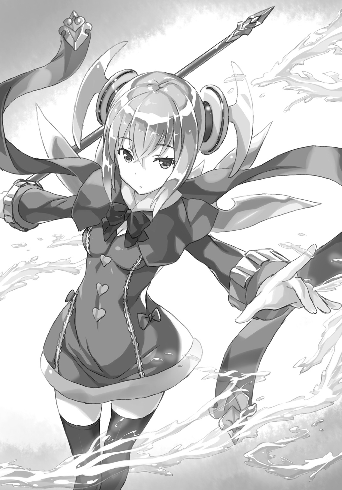
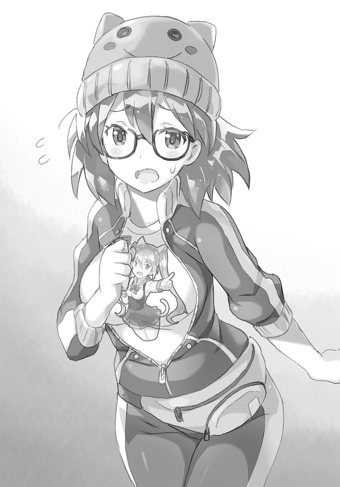

| 【合本版】封神演戯 全3巻 | |
| 森田季節 | |
封神演戯 合本版
この本は縦書きでレイアウトされています。
また、ご覧になる機種により、表示の差が認められることがあります。


 ダッシュエックス文庫DIGITAL
ダッシュエックス文庫DIGITAL
封神演戯
森田季節
斬砥ィィィンッ！ 毅砥ィィィンッ！
剣で羽扇に斬りつけたのに、異様な金属音が響く。実際、白鶴童子の持つ羽扇には傷もついていない。それだけでその扇が特別なアイテムだと知れる。
「太公望さん、力不足ですよ！ もう六十年は仙人やってるんでしょう？」
「うるさい！ 俺は強さを求めて仙人になったんじゃない！」
白鶴童子が宙に舞う。タイトスカートもわずかに舞う。元が鳥だからか、人の姿の時でも彼女は空を飛びまわれる。
むっつりした顔は、戦闘だからというわけではなく、彼女のデフォルトだ。
白鶴という名前のくせに、いかにもバリバリ仕事ができそうな黒いスーツ姿。ある意味、スーツ姿でする仕事場のほうが彼女の戦場なのだ。ついでに、髪も烏の濡れ羽色という表現が似合うような長い黒髪だった。
「そんな調子じゃ、元始天尊様を倒すなんて永久に無理ですね。つまり、この世界で働き続けるしかないんです！ さあ、馬車馬のごとく働きなさい！」
「嫌だ！ 俺は自由になりたい！ 自分のためだけに時間を使いたい！ そして永久に寝たり遊んだり寝たり遊んだりして、ぐうたら過ごしたい！」
「あなたの快楽って寝ることと遊ぶことしかないんですか」
「そうだ！ せっかく不老不死の仙人なんだから、そのメリットを最大限に生かすのだ！ だから、だから、だから、俺はその夢のために今は苦しいことも痛いことも我慢する！ ラスボスの元始天尊を倒すまで戦い続ける！」
自分の想いを叫んだつもりだったが、いまいち締まらない。内容が実利に直結しているせいだろうか。しかし、世界平和のためとか思ってもないことを言うよりは、このほうが正しい気がする。
「どうしようもない怠け者にはお仕置きが必要ですね」
白鶴童子は右手の扇をさっと太公望のほうに向ける。
「あとで戦闘の残業手当も申請しないといけませんね。全弾発射っ！」
今度は白鶴の攻勢だ。
扇から羽根が飛んでくる。それは羽根というより針、否、むしろ銃弾に近い。
まずい。防御手段がない。
そんな時は回避だ。神回避。いや、神より仙人のほうが格上のはずだから、仙人回避。強引にその場から跳躍して、全弾よける。蜂の巣になったら、神も仙人も平等に助からない。
「よっ！ はっ！ ふぉっ！ どうにか、しのいだ......」
跳び上がりつつ、流れ弾のような羽根を体をくねらせて、かわす。今回は助かったが、もう一回同じことをされたら、次は封神だろう。
封神されたらゲームオーバーだ。また、イチからやりなおしだ。
「本当にかわすことにかけては一人前ですねえ。さすが、人生逃げてばっかりのことはあります。言い訳ばかり上手くなって、代わりに何を失ったのでしょうか」
「よけただけで言いすぎだっ！ 労災申請できるぐらいに心が傷ついた」
中空にぷかぷか浮かびながら、白鶴は蔑むような目で見下ろしている。いや、実際に蔑んでるし、位置的に見下ろしているのも事実だ。
くそ、難易度高すぎるぞ。さっきの回避だって、なかば運で乗りきったようなものだ。運も実力のうちだが、運だけに頼るようでは、長くは続かない。
「では、もう一撃いきましょうか。継続は力なり。いずれ、この攻撃があなたを打ち抜くでしょう。あなたとの勤務態度の差がこんなところに出るのです」
白鶴はもう片方の左手にも扇を持った。これもいわゆる二刀流にあたるのか。
ヤバい。攻撃が二倍になったら回避するスペースが消える。つまり絶対当たる。死ぬ。厳密に言うと死ぬのではなく、封神される。
だとしたら、生き延びるための方法はただ一つ。
逃げるのではなく、防ぎきることだ。
その論理に間違いはない。
問題があるとすれば、太公望にそんな力がないことぐらいのものだ。
「さあ、太公望さん、これで終わりです！ 後任はもっと従順な仙人にさせてもらいますよ！」
羽根が太公望の周囲一帯を絨毯爆撃する。
もはや、太公望一人でその攻撃を乗り切る手段はない。
ならば――味方が来てくれればいいのだ。
太公望の前にさっと、影が飛び出す。
それは金色の長い髪をなびかせた一人の少女。服にも随所に金の刺繡が入っていて、まるで、光そのものを体現しているように、高貴に輝いて見えた。
「まったく、なってないなあ、太公望は」
戦場に出てきたにしては落ち着きすぎている態度で、少女は幕のような何かを体の前に張る。一見、赤と緑のストライプの入ったタオルケットのようだが......。
「じゃじゃ～ん。【風火蒲団】！」
そのタオルケットは異常な磁力でも持っているように、羽根を集めてしまった。そして、羽根は布に刺さることすらせず、ぽろぽろと落下する。
「太公望、もしかしてこんなのも防げないの？ 同じ無職同盟として恥ずかしいよ。働いて、もうちょっと強くなってから出直すべきかもね」
「勝手に人を公の場で言いづらい同盟に加入させるな」
体のほうはそのままで、横着に顔だけを少女は太公望のほうに向ける。
「見殺しにしちゃおうかなとも思ったけど、元始天尊とまで戦うって心意気は感心したよ」
「一番の目的はぐうたらすることだけどな」
「うん、ぐうたらしてずっとボクと遊んでいたいんだよね？」
「そうは言ってない」
うかつにうなずくと、本当に未来永劫、遊ぶことになりそうで怖い。この少女に逆らえる者など、ほぼ宇宙に存在しないだろう。
「じゃあ、次は太公望だけでかわしてね」
攻撃を防いだタオルケットにくるまって、少女は戦線から離脱しようとする。本当に、通りかかっただけだったというぐらい、平板な調子で。
少女の感情の変化は顔を見てもわかりづらいが、怒ることもすねることもある。
それは困る。彼女がいないと太公望は絶対に負ける。
選択肢なんて最初からないのだ。これは運命だ。
そんな時は、その運命を思いっきり肯定するのが、一番理にかなっている。
「李誕、わかった！ お前と遊ぶために自由な時間をくれ！ 遊んでやる！ 何億時間でも遊んでやる！」
「心からそう思ってる？」
まだ少女は疑っている。ならば、叫ぶしかない。
「李誕、俺にはお前が必要だ」
必要だから必要だと言っただけのことだ。しかし、受け止め方次第では好きだと言ったように聞こえなくもない。もちろん、それは受け止めた側の責任だ。ウソは言ってないのだから。
「最初からそう言えばいいのに」
乗りきった――そう太公望は思った。
李誕と呼ばれた少女は、また布のようなものを出す。その布は一見真っ黒のようだが、注視してみると、無数の白い点がついていた。
「宝貝【太極図】セットオン」
途端にその布が広がっていき、大気と混ざり合っていく。その布は宇宙を圧縮したものなのだ。数瞬のうちに周りは見事な星空となっている。
「プ、プラネタリウムの幻影ですか......？」
残念ながら、それは実際の宇宙だ。視界に映る、光る星はすべてこの世に在る。
「それじゃ、バイバイ」
少女がつぶやく。流星が一斉に白鶴を襲う。
これこそ、正真正銘、回避場所のない攻撃だ。
「うわあああ、待ってください......待ってください！ こっちはしがない中間管理職です！ 責任をとらなきゃいけない幹部クラスじゃないんですよ！ どうかご慈悲――」
そこで白鶴の言葉は途切れる。数えることもできないほどの流星で、肉体が消滅したせいだ。
彼女がいたはずの場所から何やら白い玉のようなものが飛び出る。身を捨てての最期の攻撃ではない。魂魄だ。
仙人は不死の存在だが、物理的な概念である肉体が維持できなくなることはある。仙人にだって心臓もあれば血もある。心臓を抉られ、血をすべて抜き取られたら肉体は機能停止する。その場合、魂魄だけが残る。
その魂魄は封神界という集積場に送られる決まりだ。封神界は魂魄を引き寄せる巨大な磁石のようなものである。
「李誕、やっぱりお前はすごい。仙人界最強って言われるのもわかる」
争いは一瞬で決着した。あまりにも破格の力だった。
「さすが、太上老君の名を与えられてるだけのことはあるな」
彼女のことを李誕と本名で呼ぶのは太公望だけの特権だ。ほかの者は、この偉大で、巨大な仙人を、敬意をこめて、太上老君と道号で呼ぶ。
「もっと褒めていいんだよ」
少女はタオルケットをつかみながら、ぷかぷかと地面に戻ってくる。
「お前は褒めても笑ってくれないからな。俺は無駄なことはしないポリシーなんだよ」
「それじゃ、笑ってあげるよ」
「え？」
「太公望のためだけにね」
太上老君は誰にも見せたことのないような笑みを―――
深刻なエラーが発生しました。現在、復旧中です。しばらくお待ちください。
「これってセーブされてるのかな......。せっかく、初めて白鶴を倒せたと思ったのに......」
布団の上、ゲームのコントローラーを握り締めて、青年は呆然としている。布団の上だからなのか、服もパジャマのままだ。
見た目は若いのに、覇気というものがない。短期的・長期的を問わず、人生における目標とかないタイプの顔だ。
そして、顔はゲーム内のキャラと完全に同じだ。近頃の技術革新はすごい。登場人物のしゃべる言葉だって実物の性格を元に極めて忠実に再現されている。その正確さが災いした。現実に想像することが難しいことをゲームがやろうとして、止まってしまったらしい。
目の前のモニターには停止中のゲーム画面が映っている。大迫力のスピーカーを設置の上音漏れしないように防音設計までしているこの部屋も、ゲームが動かなくては何もできない。
「ゲーム内でもボクは笑わないって設定なんだね」
隣では律儀に正座しながら少女がコントローラーを持っている。
もし、街中で出会ったら、自然と目がいってしまうぐらいの美少女だった。化粧で作ったタイプの美しさとは違う。基本スペックが高すぎる正真正銘の美少女。
けれど、ゲーム同様に見事なまでの無表情なので、何を考えているのかは判断不可能だろう。初対面の人物なら、この子、機嫌悪いのかなと不安にすらなる。
青年がそんな少女の表情に気を留めないのは、よほど親密なのか、相手の様子に気づかないほど鈍感なのかのいずれかだ。この場合、正解は前者のほうだ。
二人は暇さえあれば、ゲームに時間を費やしていた。それすら仙人の修行のひとつなのではないかと信じそうになるほどに求道的に。もちろん、何の修行にもならない。
「実在の人物でゲームができるというのは斬新だけど、こういうバグもあるってことだな。あとで、制作者の太乙真人に言っとこう。製品化までの道は遠い」
まだゲーム画面は動かない。こういう時間、絶妙に手持ち無沙汰で困る。
「太公望、下手だよね」
ぼそりと少女が言う。しばらく動かないと思っているのか、コントローラーも手放している。
「いや、あれは白鶴が強すぎる！ あんな弾幕防ぎようがない！ それと、李誕の能力がチートすぎるだけだ！ あんな便利な毛布あったら、そりゃどうにかなるわ！」
バカにしているみたいに、太上老君は「ふあぁ」とあくびをした。絶対ナメてるのに、そのしぐさもかわいいのが腹立つ。
「そもそも、このゲーム、登録したキャラによって強さにばらつきがある。俺が弱すぎる。いまだに二面のボスの白鶴で詰まってたとかおかしいぞ。ゲームバランスにも改善の余地アリだ」
「仮に太公望でプレイしても、ボクは勝てたけどね。ノーミスクリア」
さらりと、太公望のプライドにハンマーで殴りかかるようなことを太上老君は言う。
「お前、大言壮語にもほどがあるぞ」
「あのね、このゲームはアクションのようでいて実態は覚えゲー。作業みたいなもの。単純な移動の繰り返しだけで、攻撃をやりすごせるようになってる。白鶴童子の羽根の攻撃も絶対安全なポイントがあるから」
「待て。それは聞き捨てならないな」
太公望は少しばかり、むっとした。
「あれ、太公望ごときがボクにいちゃもんをつけるつもり？」
雰囲気からはわかりづらいが、太上老君は仙人界でもトップレベルの実力を持つ超大物である。しかも、組織に所属するのを潔しとせず、たった一人で自由に生きていた。言葉を変えれば、ニートだ。
そんな太上老君に物申すなど、まともな仙人なら怖くてできないことだ。
「このゲームを作業だと言ったな？ だから、お前はダメなんだ。ゲームの意味を辞書で引いてみろ」
と言いつつ、太公望はスマホ（っぽい宝貝）で「ゲーム 意味」で検索する。辞書は本棚にあると思うが出すのがダルい。
「ほら、意味に『遊戯』とあるだろ！ なお、次に遊戯を辞書で調べると当然ながら『遊び』という意味が出る！ イコール、ゲームとは遊ぶことだ！」
「何を鬼の首とったように言ってるの？ 意外なことでも何でもないし」
「お前もまだまだ修行が足りてないな。ゲームの本質というものを理解していない」
仙人界の中で、太上老君に修行が足りないとか言えるのは太公望だけだ。太公望の師匠の元始天尊ですら、太上老君の弟弟子にあたる。
「お前のやっている作業という言葉に遊びの要素があるか？ 遊びのどこに価値があるかといえば、それは『楽しい』という部分だ。作業となり果てた行為に楽しみはない。李誕、お前はこのゲームを極めたがゆえに楽しみという本質を失ったのだ！ つまり、なんか、感覚的にお前はゲームに負けてるのだ！」
「............」
無表情で太上老君は太公望を見ている。いつも無表情だけど、ちょっと残念そうな無表情。
微妙に気まずい空気になったと、言った本人も自覚していた。
「ニートって何の得にもならないことに理屈っぽくなって、それで自分の存在意義が肯定された気になりがちだよね。論破したつもりでいてもらってもいいけど、それで世界は一ミリたりとも変わってないよ」
「待て待て待て！ ニートではないぞ！ ちゃんと崑崙って組織に所属してるからな！ 有給休暇を消化してるだけだ！ この瞬間も働いてはないがジョブは持ってる！」
「有給休暇って何年あるの？ 仕事行かなくなってからけっこう経つよね。その間、一歩も外に出てないんじゃないの？」
「人聞きの悪いこと言うな。デリバリーの食事が届いた時は受け取りのためにドアの外に出る」
太上老君は何も顔には出さないが、「ふぅー」と諦めたように息を吐いた。
「太公望はそろそろ働くべきかな」
「いいや、まだ働かない。もうちょっとゴロゴロダラダラしたい。それに働いてないお前にだけは言われたくない。お前のほうこそ、有休どころか完全に無職だろ」
「ボクは一人であてどもなく旅行して人生を満喫してるからいいんだよ。働かないのはボクぐらい偉くなってからでもいいかもね。誰かのために生きるのも大事だよ」
そんなこと言っても、自分がぐうたらするために戦うってゲーム内でも叫んでいたし、誰かのために生きようにも、そんな「誰か」が思い当たらない。
「ボクのためにでもいいよ」
「お前のほうが強いんだから、守る必要がない」
「バカ」
ちょっとすねたように太上老君が言った。
「まあ、いいけどね。太公望が実はすごく強いってボクは知ってるから。太公望のサボりは力をあまり見せないようにするためのサボりだもん」
「やめろ。勝手に俺を過大評価するな」
「働けば、その真価が発揮されるはずだよ」
どうして、そんなに働かせようとしてくるのか。こいつ、崑崙の就職支援員か何かか。
「とにかく、誰がなんと言おうと俺は働かない。お、やっとゲームが動いた」
いよいよ未知のステージだ。さあ、白鶴童子の次のボスは誰に設定されているのか。
ピンポーン。
――とインターホンが鳴った。
「誰だ......？ 公共料金はすべて口座引き落としにしてるぞ。宗教の勧誘か？」
「通販じゃないの？」
「いや、午前中に受け取ってるのを人に見られたら、働いてない人と思われそうだから、夜八時から九時の受け取りにしている」
「なんで、実際に働いてないのに、働いてないと思われるのは容認できないのかな」
モニターで顔を確認すると白鶴童子がいた。今も鶴の格好ではなく、人間の少女の姿をしている。勤務時間内だから、スーツ姿にタイトスカート。ゲームとまったく同じだ。あと、その仏頂面もゲームでは見事に再現されている。
「げっ......」
彼女は崑崙の職員で、元始天尊の秘書をしている。
つまり、彼女が来ているということは、仕事に関する話をしに来た可能性がすこぶる高い。というか、勤務時間中にスーツ姿で友達でもない奴のところに遊びに来ないだろう。
「太公望さん、いらっしゃいますか？」
白鶴をムゲに扱うということは、自分の師匠でもある元始天尊にたてつくことと同じだ。さすがに無視もできず、ドアを開けた。
「お久しぶりです、太公望さん。うわっ！ カビくさい部屋！」
白鶴は嫌そうな顔で鼻を押さえた。引きこもっているとはいえ、部屋がくさいと言われるとちょっと傷つく。
「何か用か......？」
一応、位としては太公望のほうが偉いのでタメ口だ。
「元始天尊様がお呼びですので、至急いらしてください。それぐらい、伝達用宝貝でメール飛ばせばいいのではと聞いたら、『直接誰かが呼びに行かないと、来るわけがない。メールが届いてなかったとか言い訳を作って絶対来ない』とおっしゃっていました」
「あの人、俺の性格をきっちり読んでるな......」
「というわけで、来てくださいね」
「嫌だ」
だが、断った。
「好きとか嫌とかそういった問題じゃないんですよ......。フタユビナマケモノの仙人でも、もうちょっと働きますよ......。働いてください」
「俺は有休を消化する！ 有休が尽きてから考える！ これは労働者の正当な権利だ！」
「いえ、もうありませんよ、あなた」
白鶴は何かをプリントアウトした紙を押しつける。
どうやら勤務表らしい。太公望と名前がある。その横に「有休」「有休」「有休」「有休」「有休」とゲシュタルト崩壊を起こしそうなほど、その二文字が並んでいる。
「これが最終ページまでいっても、続いてまして......何度か確認しましたが昨日の時点で尽きています。このままだと無断欠勤扱いで、クビ。最悪、崑崙からの追放処分ですよ。次元を飛び回る能力に長けてなかったら、ほっぽり出されて封神どころか何もないような空間を永久に漂うことになります。つまり、近い概念の言葉で言い換えると、事実上、死にます」
「........................」
「さあ、年貢の納め時ですよ。今日から一緒に世界のために働きましょう」
「仕方ない。死ぬか」
「おかしいでしょ！ せめて死は怖がりましょうよ！ 死ぬぐらいなら、働いてくださいよ！」
なんでだ。死ぬとか脅してきたから、脅しには屈しないというところを見せたつもりなのに。「見上げた根性ですね」とか言って褒めろよ。
「久しぶりすぎて、働くのが怖い」
たぶん、白鶴には理解されない心情だろうけど、そういうものなのだ。
ずっと、行かなかったらそうそう復帰できない。人の目とか気になるし。アイドルの復活ライブとは違うのだ。原則、アウェーなのだ。
「知りませんよ！ そんなの一、二週間も働いてたらじきに慣れます。あなたが働けば、私たち崑崙の職員も幸せ。それで利益を享受する人も幸せ。あなたも幸せ。ほら、すべてが幸せになるんですよ」
おかしい。自分が幸せになる論理展開のところにぽっかり穴が空いている。
だが、職員が呼びに来た以上、無視するにも限界がある。
どうやら、この夢のような生活も今日でおしまいらしい。心から楽しいものだったかというと、疑問符がつくが。
「李誕、不本意ながら出勤しないといけなくなった。カギかけるから出ていってくれ」
「カビくさい部屋、掃除しといてあげようか？」
「ところで、お前もカビくさいと思ってたのか？」
「うん、ちょっと」
できれば、言ってほしかった。そしたら、気合入れて掃除したんだけど。そこで黙ってるのって、やさしさじゃないんだ。いや、やさしさかもしれないけど、本人はかえって傷つく系統のやさしさなんだ。
「掃除は帰宅したらするから、いい」
「留守番しといてあげようか？」
たまに太上老君の見返りを求めないやさしさに惹かれそうになる。もう全部、太上老君の言葉に任せてしまおうかと思う時がある。
ただ、それに甘えたら、あとはずぶずぶと底なし沼のように落ちていく気がして怖い。
「お前は帰れ」
最低限の自立はしようと、心を鬼にして、言った。
「ねえ、パジャマ姿のままだとまずいんじゃない？」
それもそうだ。すぐに着替える。太上老君がいたけど、男の自分が着替えるだけだから、向こうが気にしてないならいいだろう。
待っていた白鶴に「あの、ここ、一人暮らし用の部屋なんで、同棲してるなら規約違反になるんですけど......。わざわざ上には言いませんけどね」と言われた。一緒に暮らしてるわけではないのだ。ほぼ毎日、太上老君が遊びに来てただけだ。
「それじゃ、またね」
太上老君は万能タオルケット【風火蒲団】にくるまって、どこかへ飛んでゆく。太公望も戸締まりをして、とぼとぼと歩く。横に監視役の白鶴を伴って。
「外の景色って、こんなんだったっけ。すべてが新鮮だ」
「まだ、部屋を出て十五メートルぐらいですよ......。どんだけ引きこもってたんですか......」
「十六年ぐらいかな」
「あなたのいた国だと、赤ちゃんが高校に入学する年数ですよ」
「いや、実質二十年ぐらいだったかな」
「赤ちゃんが成人式に出席するほどの年数ですよ」
有休を使いはじめた時は、「もう我慢できん！ 仕事休む！」と憤りに近いものがあったはずだが、そういう感情も自然と消えていた。あとには「働きたくない」という、労働に対する忌避感だけが残った。そのせいか、仕事自体を忘れることはできないままだった。
なぜ、仕事が嫌だから休んでいたのに、それで素直に幸せになれなかったのだろう。職員をボスキャラにして倒すようなゲームをわざわざやっていたんだろう。
それから、白鶴は何かに気づいたのか、顔をしかめた。
「そういえば、太公望さんからもカビくさいにおいがしてますよ」
部屋にずっといたので、においが染みついていたのか。いや、逆の可能性もある。カビくさい自分の体臭が部屋についたのかもしれない。救いなさすぎ。
「風呂に入りに戻っていいか？」
「ダメです」
崑崙というのは、一言で言えば巨大な船である。
船という字よりは「艦」のほうが近い。サイズで言えば東京二十三区のうちの世田谷区ぐらいの面積がある、そう記憶している。
どうしてそんな覚え方をしているかというと、太公望が世田谷区出身だったからだ。日本にいた頃の名前は、大宅望海。少し女っぽい名前だった。その名前をもじって、太公望と仙人っぽい名前を作った。
そんな世田谷区規模の船の中にはいくつもの通りと部屋がある。巨大すぎるので、ちょっとした森や山、池なんかもある。雨も降れば風も吹くし、冬になれば雪も積もる。
天井も相当に高くて、かすんで見えないほどなので、異世界から人間を連れてきたら、ここが船の中だとは気づかないだろう。崑崙という名の世界そのものが、ある空間の中を進んでいると考えたほうが現実に即しているかもしれない。
あまりに広いので、内部の移動手段もちゃんと設けられている。
「俺、元始天尊様のこと、苦手なんだよな」
黄巾力士というヒト型ロボットのような移動用宝貝に乗って、太公望は目的地を目指す。白鶴は鶴に戻ってその横を飛んでついてきている。
「珍しい男の仙人同士、仲良くやれないんですか？」
「むしろ、同族嫌悪って感じだな......」
人間が仙人になるための必須条件である仙骨という骨は、原則女性が持って生まれてくる。女性でも相当に稀なことだが、男の太公望はさらなる例外だ。
「賭けてもいいけど、再会するなり物理的に叩かれる」
「まさか。子供っぽくはあっても、崑崙で一番偉い人ですよ」
そして、扉というよりは門に近いような入り口を開けて、元始天尊のところに参上した。
「お久しぶりです、太公望です」
破虚ーンッ！
いきなりハリセンでぶっ叩かれた。
「これは無断欠勤の分！」
「ほら、当たった......。白鶴、あとでみかんくれ......」
「私、何も賭けてないですよ。みかんぐらいならあげますけど」
白鶴は人に戻って、後ろに下がっていた。
「ったく、どれだけ休んでるんだよ！ 有給休暇使い切る仙人なんて初めて見たよ！」
ハリセンを持って文句を言っているのは小学生ぐらいの年格好の「少年」である。ただし、仙人は不老不死なので年齢は見た目に準じない。
文句を言いながら、曲芸用かというような大きなボールに乗って、ころころ移動している。ハムスターより落ち着きがない。
「有給休暇についてはルール内のことだからいいでしょう。俺がスカウトされた時だって、仙人になって不老不死になったら、永遠にゴロゴロできると聞いたからですし。そしたら有給休暇の分しかゴロゴロできないなんて。一種の誇大広告ですよ」
「そりゃ、あくまでも崑崙は目的を持った組織だもん。歴史が歪むことがないよう、チェックするって立派な役目があるんだから」
崑崙は船の名前でもあり、「歴史管理者」の一つを指す呼称でもある。
歴史管理者とは、時空の中にある、無数の世界にイレギュラーがないか監視する組織だ。寿命の制約がない仙人は、時空を移動する船に乗って、延々と点検を行っているのである。
この崑崙という船の外は、いくつもの世界が浮かんでいる時空の海だ。外に出れば、普通の生き物は即死する。いや、時空の海の中はまともに時間も流れていないので、死すら訪れない奇妙で悲惨な状態になる。
では、世界の歴史にイレギュラーを起こす存在とは、いったいどういうものなのか。
――まさしく、彼らのような仙人だ。
「ここに呼ばれたってことは、どっかの世界に派遣されるんですよね......。嫌だなあ......」
通例、崑崙の職員はいくつかの班に分けられて、各世界に飛ばされる。そこでトラブルを起こしている仙人を逮捕したり、退治したりする。
「気分が晴れないんですよね、この仕事。敵の仙人を『封神』するのも含めて......」
封神とは仙人界の用語で、「神（に等しい力を持つ者）を封印すること」の意味だ。
仙人のような超時間的・超人間的な存在は普通、死ぬということがない。そのため、問題児の仙人は封印してしまうしかないのだ。その施設が封神界だ。
封神された仙人（厳密に言えば、仙人以外の人間離れした力を持った者の魂も含まれる）はそこで刑期のようなものを終えて、また仙人の世界に戻るらしい。
現時点でもいろんな世界の仙人やそれに匹敵するような力を持った存在の魂魄が多数、収容されている。
「まあ、後味悪いのはわかるけどね、害虫駆除するのとは違うし。相手は同じように考え、しゃべり、笑う存在だから」
「はい、だからサボりたいんです」
「結局、サボりたいだけかよ。思ってても言うなよ」
「元始天尊様、サボることが仕事になる部署ってありませんかね？」
言ってる本人もよくわかっていなかった。仕事を休むから、サボりなので、サボることが仕事になるというのは、理屈としておかしい。
「悪いが、君にはたっぷり労働をしてもらうよ」
ころころと、元始天尊は太公望の周囲をボールに乗ってまわっていく。いかめしい顔で怒鳴る上司も嫌だが、ボールに乗ってうろちょろしている上司もリスペクトしづらい。
まあ、労働はやむをえまい。有給休暇が消えた以上、休むための正当な根拠が失われてしまった。きっと、どこかの世界でリーダーをやってる十二使の下について働くのだ。
「君にはある世界のプロジェクトリーダーをやってもらおうと考えてる。十二使クラスでもないのに、リーダーって大抜擢だよね。頑張ってね」
「えええええっ！ リーダーなんて無理無理無理無理！」
「ダメだって。有休も使い切ってるからこれ以上サボれないよ。サボったら、封神しちゃうよ」
「じゃあ、封神されます」
ボールの上で器用に元始天尊はこけた。
「そこは抵抗しようよ！ 生きる意欲なさすぎ！」
白鶴と同じ反応をされた。やはり、秘書とその上司だけある。
「だって、俺レベルの仙人をリーダーにするって、一種のイヤガラセでしょ？ リーダーをやるのなんて、十二使か、さらにその上の幹部ぐらいのものですよ」
「いや、君をリーダーにするのには、それ相応の理由もあるんだよ。今回の世界、問題を起こしてる仙人のトップが地球出身なの」
「そりゃ、すごい偶然ですね」
この時空の海の中には文字通り数えることができないほどに世界がある。太公望と同じ世界出身の仙人を探すだけでも、そうそうできることではない。
「一応、やる気になったと判断して話を進めるよ。仙人の名前は妲己」
部屋のモニターに妲己とおぼしき仙人の姿が映る。
「ほう、相当の美女ですね」
「その美貌で国王をたぶらかしてる。まさに傾国だね。ちなみに――」
「狐の仙人なんですよね。見りゃわかります」
美女ではあるが、そんなことより、その耳と尻尾が先に目につく。尻尾なんて、太くて、なおかつ気味が悪いぐらい長い。モニターに収まりきっていない。足を崩してはいるが、はるか後ろまで尻尾が伸びているように見える。
「仲間も多いし、なかなかのやり手だよ。やってることが、たんなる贅沢三昧なのが救いだけどさ。おかげで、まだ利権搾取型でとどまってる」
「ああ、国を乗っ取ろうってわけじゃないんですね」
仙人が人間世界におよぼす問題行動にはいくつかのカテゴリーがある。
まず、利権搾取型。
仙人であることを隠して、人間社会の中で利益を得ようとするタイプだ。たとえば速く走れる宝貝を使ってオリンピックで金メダルを取るとか、その世界の文明でまだ発見されていない科学的発見をしてちやほやされるとか。美女のふりをして王妃になって贅沢をするというのも、ここにあてはまる。害としては一番小さく、程度が低ければ無視される。
次に、立身英雄型。
仙人や宝貝の力を思いきり使って、救国の英雄になったり、王朝を創始したり、神とあがめられたりすることを狙うタイプだ。歴史に大きな影響を与えるので取り締まりを必要とする。
最後が、破壊願望型。
その世界をつぶすこと自体を目的にしているタイプだ。人間の力で仙人を止めることなどできないから、早急に排除せねばならない。
問題行動が複数のカテゴリーにまたがるケースもあるが、基本的にこの三つに大別される。
「今回は敵の立場が王妃というのが厄介ですね。いきなり消してしまうと、影響が大きい。何かもっともらしい理由がほしいところですね」
「君はやっぱり頭の回転が速いね。面倒だし、放置しておきたかったんだけど、このままだと歴史が変わっちゃうところまで来ちゃったんだよ。滅びるはずの国が滅ばなくなった。そうなると、利権搾取型でも黙っているわけにはいかない」
楽しそうに元始天尊はうなずいたが、太公望はとくにうれしくなんてない。聡明であることが仕事に結びつくのなら、聡明でないほうがありがたい。
「参考までに、この世界の命数――つまり、寿命を出してみるね」
部屋の大型モニターに年表のような帯グラフが現れる。「夏」とか「殷」とか「周」とか「春秋」「戦国」といった文字がそこに書いてある。
「どこかで聞いたことのある歴史だな......」
「ああ、君のいた世界に近いかもしれないね。妲己って仙人も過去の知識が使えるような世界のほうが楽だろうし」
ほぼ無限に世界はあるのだから、自分の所属していたところと似た世界もあるのだろう、そう太公望は解釈した。もっとも、自分のいた世界の「殷」や「周」の歴史を太公望はとくに知らないので、あまり意味はないが。
「ちょうど、この「周」に変わる直前の「殷」という王朝の末期に妲己は寄生してる。だから、最初から「殷」を滅ぼすはずの「周」の手助けをして、「殷」ごと滅ぼせばいい。妲己の仲間の仙人も「殷」の家臣になってる者が多いから処刑して封神しちゃえばいいし」
しかし、その説明に太公望の眉がぴくりと動く。
「師匠、その話、妙に聞こえるんですが」
「というと......？」
元始天尊のボールが止まる。
「王妃として国をダメにするなら、殷は滅亡に近づきこそすれ、歴史が変わって滅び以外の道を歩むのはおかしくないですか？ 論理展開が矛盾してますよね。王妃となって、王という専制君主を陰で操る道を選ぶだなんて、国をダメにする常套手段ですし」
太公望の目はさっきまでのだらけたものとはまるで別人だ。
理由は崑崙の職務がそれだけ重いからだ。
歴史に影響を与えるという行為は、その過程で数えられないほどの存在の命運を左右する。死なずにすむはずの者が死に、消える。幸せになるはずの者が地獄に落ちる。無論、そんなことに手を下した仙人の心にも傷を残す。
たとえ、それが職務として妥当なものだったとしても。
「さすが元始天尊様の一番弟子ですね。あの太上老君様までが一目置いておられるのも、ちょびっとだけわからないでもないです」
白鶴まで珍しく敬意のこもった目を太公望に向けていた。逆に言えばさっきまでは、この給料泥棒め、ぐらいの視線だったのだが。演技でもいいから、笑顔を向けてほしい。
「ああ......うんとね、国というのは王が怠惰だから滅ぶとは限らないんだよね......。実は、妲己がいなかった場合、殷は王の勤勉ぶりによって滅んだんだよ」
映像が殷の年表に変わる。縦に長く続く年表で、横組みで事績が、左側の帯の部分に王の名前が書いてある。とくに一番下の紂王という欄は文字でびっしり埋まっている。
「この最後の王はすごい英邁な君主でね。国の問題点を見つけては、改革を繰り返したんだ。だけど、急な改革に反発が起きて――」
「内乱が起きて滅んだということですね」
「いえす。そんなレアなケースじゃない。君がいた国だって、平清盛、後醍醐天皇、豊臣政権――変更を加えすぎて、国内からの抵抗勢力を押さえられずに短期間で滅んだ政権はいくつもある。そのあとの政権の多くがなんだかんだで旧政権の政策を取り入れていっているのは、『やったことが問題だった』のではなく、『やり方が問題だった』ことの証左だよ。生き物は仙人も含めて、元来保守的だ。そのあり方を変えられすぎると不安になるのさ」
「今回の殷のケースも、紂王がだらけた性格になったせいで、じわじわと国が悪化するだけにとどまって、滅ばなくなりかけている――こういうことですね」
「いえす、その二」
「つまり、働きすぎは悪。働かないぐらいがちょうどいいということですね」
「のー。自分の引きこもりをどさくさにまぎれて肯定しないでよ」
そこは否定された。
「というわけで、お願いね、太公望君♪」
容姿相応の愛らしい笑顔で、元始天尊は仕事を頼んでくる。
依頼というよりは命令に近いのだが。
「殷が滅ばなくなったおかげで死なずにすんだ人もたくさんいるんでしょうけど――そこは、まあ、やるしかないですね。生き死にを管理するのも仙人の仕事です」
少し冷めた目で太公望は力なくうなずく。だから、あまり働きたくないのだ。
「君は仙人になって六十年そこらだよね。まだ、人の命を扱うのがつらいのはわかる。でも、こういうのも慣れだから」
「元始天尊様はどれぐらいで慣れました？」
「二百年ぐらい？」
あと百四十年か。引きこもっていればすぐだが、そんなに有休はもらえないだろう。
「それじゃ、君を今から妲己封神計画の担当リーダーに任命します」
辞令も何もなく、口頭で。太公望も「拝命つかまつりました」と答える。
「さてと、リーダーの役職手当なんだけど」
「有休五十年」
「君だけにはやらない。はいよ、まず、この宝貝ね」
元始天尊が出してきたのは、ほどほどの長さの杖というか棒というか、そういうものだ。
宝貝というのは、仙人が使う、特別な力を持ったアイテムの総称だ。なので、形状にも効果にも法則性はない。傷を癒すものから、その逆で敵を病気にするものから、あらゆるものがある。もちろん、仙人個人の能力も大切だが、この宝貝の質も仙人の能力に大きく影響する。
「なんか、この宝貝、弱そうですね......」
「失礼な。【打神鞭】っていう、風を起こす強力な宝貝だよ！」
「ほほう。この宝貝、ここで試していいですか？」
「危ないからダメ。仕事する世界に飛んでから使ってね」
「この宝貝、師匠に向けて試していいですか？」
「話、聞けよ」
なくしてもまずいので、太公望はポケットにそれを突っこむ。短いのでちょうど収まった。
「それから、乗騎も用意したよ。君も仙人の格は割と高いんだから、そろそろ霊獣を持ちなさい。厳正な乗騎試験の結果、合格した子を君につける」
「マジですか！」
これには目の色も変わる。はっきり言って、宝貝なんかより何十倍もうれしい。
「もしかして、ネコ科ですか!? 猫、大好きなんです！」
「ネコ科......。私は苦手なタイプです......」
白鶴が憂鬱な顔をしていた。野生の鶴の時代に野良猫に襲われた記憶でもあるのだろうか。
「ほら、ずっとゴロゴロ眠っても怒られず、それどころか、むしろかわいいとか言われる生き方ってサイコーじゃないですか」
「ライフスタイルに共感覚えてるだけなんですね」
白鶴の目が、また腐れニートに向けられるものに変わった。
「テンション高いところ申し訳ないけど、ネコ科じゃないんだ」
「じゃあ、イヌ科ですか？ もふもふできる毛並みの犬もいいかも」
「イヌ科でもないよ」
「牧歌的な牛とかでもいいですよ、並んで草原で昼寝するのもオツじゃないですか」
「牛でも馬でもないね。むしろ、ダメなのがあるとしたら、どんなの？」
「カバとかブタとか。近年増えすぎたアライグマの乗騎より嫌です」
元始天尊の玉乗りがまた急にストップした。顔にヤバいぞと書いてある。
「ちなみに、な、なんでダメなの......？」
「普通、『ペット飼いたいとしたら何？』って聞かれたら、猫とか犬とか答えるでしょ。あんまりブタとかカバとか答えないでしょ。それだけのことですよ」
「じゃ、じゃあ......四不像ちゃん、入ってきて......」
すぅっと空を飛んで、部屋に入ってきたのは、カバとブタを足して二で割ってファンシーかつファンタジックにしたような生き物だ。角らしきものも生えてはいるが、かなりやわらかそうで、第二の耳と言われたら素直に信じてしまうと思う。
「おつかれさまっス！ 私、四不像と申しますっス！」
霊獣が元気に声をあげる。人間の言葉がしゃべれる霊獣はなかなか珍しい。
「この子が霊獣の四不像ちゃんね。せっかくだし、人の形も見せてあげて」
「わかりましたっス！」
ぱっと四不像は少女の格好に姿を変える。
なんか、昔流行ったメイドの格好に似てるな。ちゃんとしたメイドじゃなくて、メイド喫茶にいるほうのタイプ。大きな目がくりくりと動く。角と耳は人間になってもそれぞれ残っている。猫耳とか犬耳とかいう言葉で分類するなら、これは何耳なのか。
「太公望さん、はじめましてっス！ 粉骨砕身働きますので、よろしくっス！ 力を合わせて悪い仙人を倒しましょうっス！」

そのまま、右手を「いえーい！」と振り上げている。全体的にテンションが高い。
だが、太公望のほうは、ずっと真顔だった。
「あ～あ、カバとかブタとかの系統か」
空気が凍りついた。どうやら、禁句の一つだったらしい。
「あの、私の先祖はシフゾウっていうシカ科の動物なんスが......。しかも、頭は麒麟、体は竜とすら言われてて......」
「メジャーな近い動物で言えばカバだろ。そうじゃなきゃ、ブタだな」
女性に対して言ったら訴えられそうな言葉だが、この場合はたんなる事実だ。
「申し訳ないですが、チェンジで。こんなの、じいちゃんに週刊少年ジャンプ買ってきてって頼んだら、週刊新潮買ってこられたぐらいミスチョイスじゃないですか。週刊しか合ってねえよみたいな」
「え！ いきなりお役御免っスか!? 試験をクリアしてきたから、能力はお墨付きのはずっス！ しかも、軽快なトークもできるっス！」
むしろ、うるさい。「メ～」とか、たまに鳴くぐらいでいい。
「能力じゃない。ヴィジュアル面だ。猫が飼いたくてペットショップに行った奴に、カバを勧める店員がいたらバカだろ」
なんとか、ネコ科の霊獣にしてもらうため、太公望はあえて辛辣な言葉を並べた。霊獣に罪はないことは知っているが、どっちみちネコ科を求めている自分が主人になったら霊獣も不幸だ。ここは我慢してくれ。
だが、霊獣のほうは、その言葉を真に受けていた。
「もしかして、私、か、かわいくないっスか......うぅ......。ごめんなさいっス、美人ってタイプではないっスよね......」
人間形態の四不像は今の見た目が残念だと言われたと判断したらしい。早速、涙目になっている。
「ああ、違う、違う！ 人間バージョンの話じゃない！ 今の君はけっこうかわいいと思う......うん、かなりかわいいほうだ！」
泣かれるとまでは思ってなかった。まともに会話した女子なんて、ほぼ太上老君しかいないので、こういう傷ついた反応をされたこともない。
すると、ぱっとまた四不像の顔が明るくなる。喜怒哀楽の変化が激しいキャラだ。そして、変化は表情だけにとどまらない。ぴょんと太公望に抱きついてきた。
「うれしいっス！ 私、かわいいんスね！ すごく光栄っス！」
「わかったから......引っついてこなくていい......」
丁重に四不像を押し戻す。
「私、頑張るっスよ！ 八面六臂の活躍見せるっスよ！」
四不像は太公望の手をがしっととると、ぶんぶん振った。意欲をアピールしたいらしい。あまりにも四不像のスウィングが激しいので、太公望の全身が揺れていた。
「俺はそういう根性論の精神が苦手なんだ。とくに、頑張るとかすぐ言う人って、絶対に無理」
四不像もこれはまずいと思って、自分から距離をおく。
「わ、わかりましたっス......。努力して、先輩が不快感を覚えないようにするっス......」
「ああ、ダメダメ。努力ですべてが覆るとか、そういう発想が残ってる時点でダメ。努力だけじゃ変わらない流れみたいなものって社会にはあるけど、そういう時、なんでも自分のせいにしちゃって鬱になっちゃうから。やっぱ、無理だよ。無理。雇用のミスマッチ。君は俺みたいな奴のところに来るべきじゃない」
わざとらしく首を振る。というか、わざとだ。
絶対にこんな仙人の乗騎なんてやりたくないと思わせてやる。詳しいことはわからんが、恋愛と一緒だ。自分から振るから、罪悪感などが雪のように積もるのだ。相手から振られる形になれば、相手の決断だから自分のせいじゃないもんねと思える。
「君、もう少し後輩のやる気を買えよ」
「元始天尊様、こういうやる気のある子ほど、離職率が高いんですよ。『自分のやりたいことはこうじゃなかった』とか言って、一年ぐらいで辞めちゃうんです。だらだら最低限働くことしか考えてない奴のほうが長続きするんです。俺はこれを『クリエイティブなことがやりたいとか過剰に言ってる新人が、最初に事務や営業に配属されると、思ってたのと違うとか言ってすぐ辞めちゃう現象』と呼んでます」
「正論と言えば正論だけど、この場で言ってほしくないな......」
元始天尊も困惑しているのか、ボールの上にべたっと転がった。
「あの、先輩はなんでそんなにやる気がないんスか？」
「あと、先輩って言うのもやめてほしい。体育会系のノリも俺は大嫌いだから。君、好きなスポーツってある？」
「バレーとバスケっス。あと、なんと言ってもサッカーっスね！」
「濁音からはじまるスポーツなんて、それだけで心が濁りそうだ。あと、犬じゃないんだから、毬を追いかけて何が面白いんだか」
単語自体を否定するあたり、ポイント高いぞ。さあ、幻滅しろ。
だが、四不像もなかなかの強敵だ。彼女の一族は霊獣界ではかなりの名門で、かといって躾がゴリゴリに厳しいというわけでもなく、青春もしっかり謳歌していた。
高校では生徒会活動にも従事し、運動部のほうでも精を出していた。クラスメイトの連絡先は全員知っており、同窓会にも毎年顔を見せる。つまり、正真正銘のリア充なのである。性善説で生きているので、この程度の太公望の攻撃には屈しない。
「じゃあ、先輩はどんなスポーツが好きなんスか？」
「スポーツが嫌いだ」
なぜ、スポーツの中に好きなものがあるという前提が成り立つのだろうか。年寄りに、好きなトレーディングカードゲームは何ですかと聞いたら、何も答えられないだろう。
「ということは、ライブとかではじけるタイプっスか？ 夏は野外のロックフェスに二日は行ってるっス！ 先輩は好きなバンドとかあるっスか？」
「いや、ない。音楽って、バカでも音を聞くぐらいはできるし、参加のハードルが低いから、こじらせる中高生がたくさん生まれるんだ。俺の学生時代もそうだった。どうせ大半の奴は就職するような歳になった時には中高生の頃聞いてた曲なんて忘れてるんだろ」
白鶴が小さく「ちっ」と舌打ちした。少なくとも、彼女は太公望の術中にはまっていた。
よし、これだけ言えば、四不像も諦めるのではないか。
「スポーツも音楽も興味がないってことは、もしや恋愛に情熱を燃やしてたっスか!?」
四不像の目がキラキラと輝きだした。どうも、勝手に恋バナの予感を覚えているらしい。
バカな......!? なぜ、暗黒面をこれだけ見せても怯まない!?
「俺、仙人に選ばれるぐらいだから枯れてた。そういう時期のカップルって、すぐ別れるし。それで面倒な修羅場とかなってるの見ても、なんかいろいろときつそうだよなって」
「仙人だからって枯れてればいいってもんじゃないよ」
そろそろ元始天尊も腹が立ってきているようだった。
よし、作戦を変更する。元始天尊が、ああ、無理だと思えばそれでいい。師匠にクズだと心底思われてやる。こちらは失うものなどないのだ。失うもののない奴はある意味、無敵なのだ。
「君、何のために生きてるの？」
「師匠、目的意識などなくても生物は生きていけますよ」
ダメ人間キャラはやり抜いた。
さあ、諦めろ。ほかの乗騎に替えろ。
「うん、この二人は相性ぴったりだ。いいパートナーになれるよ」
全然違う方向を見ながら元始天尊が言った。
「なんだよ！ 結局、出来レースかよ！」
「ほら、ハイとロウを足して二で割ったら、ちょうど真ん中ぐらいみたいな？」
そのたとえって、あまり相性のいい意味に聞こえないのだが、いいのだろうか。
「今から人を代えると、人事部のほうが怒りだしますんで」
事務的に白鶴が言った。
「太公望さんが人事部に行って話をつけてくれるならかまいませんが、これだけ休んでいた人が、そのうえ面倒なことを言いだしたら、殴られると思いますよ。止めはしませんが。太公望さんが殴られても痛くもかゆくもないからいいですが」
白鶴って、素で「仕事が恋人です」とか言いそうなタイプだよなと思った。
万策は尽きた。
「わかりました。この子と組みます」
「よろしくお願いしますっス！」
四不像がまた喜んで飛びついてきそうだったので、事前に数歩移動しておいた。本当に、四不像が何もないところに飛びこんでいた。アクションゲームか。
まだ、戦いは終わっていない。善後策を考える必要がある。仕事で楽ができるかどうかは元始天尊と直接話しているこの時間にかかっている。
「あの、元始天尊様、俺がリーダーということはほかの参加仙人への指揮権があるわけですよね。（そいつらに全部やらせるので）名簿をください」
「なんか、ろくでもないこと考えてる想像がつくな」
「いえ、まずは一緒に戦う仲間のことを知らないと、計画も立てられませんから。仲間のことを知るのはリーダーの第一歩じゃないですか」
ポジションからすれば、リーダーは直接戦う必要はないのだ。丸投げを繰り返して、自分の業務をミニマムにしてしまえばいい。
「メンバーはまだ未定。正式に決まり次第、殷まで追っかけさせるから、ひとまず君と四不像ちゃんだけで行ってきて」
一瞬、意味がわからなかった。
「は？」
多少、威圧的に言った。
「リーダーしか決まってないプロジェクトなんてありえますか！ 自分だけ正社員の支店長でほかすべてバイトの店舗よりブラックですよ！」
「ちゃんとすごい人、送りこむからさ～。ね、ね？ 信じて？」
ボールの上で手を合わせて、元始天尊が言ってくる。
このボール、蹴ってやろうか。
「じゃあ、すごい仙人にリーダーやらせてくださいよ！ 燃燈道人とか、もうすぐ今の仕事が空くはずでしょ！ 知ってますよ！」
「あの人、実力あるけど、独断専行タイプだから任せづらいんだよ......」
「じゃあ、竜吉公主は？ あの人も今、閑職でけっこうのんびりしてるはずですよ」
「あの子もね、体力がなくてよく休むんだよね......。リーダーには向いてないかなあ......」
意外と崑崙って、人材不足なんじゃないのか。
「それだったら、俺だって下の子と上手くやらなそうでしょ？ コミュ力とか絶望的にないですよ。飲み会とか絶対に来ないタイプですよ」
「君の場合、後輩の子とケンカするようなモチベーションがないから、どうにか続きそうでしょ。尊敬もされないけど、明らかな問題行動も起こさないタイプ」
地味に元始天尊の言葉も容赦ない。
白鶴が、この人たち、仲がいいのか悪いのかどっちなんだろうって顔で見ている。
「わかりました。行きます」
心を殺して、太公望は言った。すべては有休が尽きたせいだ。
「はい、先輩！ 朝も昼も夜も頑張りましょうっス！」
その瞬間、さっきはかわされていた四不像が再び抱きついてきた。今度はキャッチ成功だ。形の上では、女の子に抱きつかれているのだが、とくにうれしさはない。働かねばならないという絶望のほうがまさっている。
古代の聖人は言った。「働いたら負けだ」と。俺は負けたのだ。
「あ、君、残業する時はちゃんと残業代申請するんだよ。あと、頑張るって言葉はできるだけ使わないように」
淡々と仙人としての人生訓を説きながら抱きついてきた四不像を離す。
「それと、本体が霊獣だからって、あまりボディタッチもしすぎないように。君みたいにやたらスキンシップとろうとするタイプはたまにいるけど、それで相手を勘違いさせてトラブル起こすことがあるから」
「あっ、もしかして、先輩、照れてるっスか？ その態度も照れ隠しっスか？」
離しても離しても四不像が寄ってくる。色仕掛けというより、なれなれしいペットという感じだ。
「照れてはいない。暑苦しいし、どいてくれ。というか草食系男子ってアタック強すぎる女にはガチで引く生き物だから、無意味どころか逆効果になるぞ」
「私のことはスープーって呼んでくれてけっこうっス！」
「え～。仕事上の関係の人をニックネームで呼ぶとか気持ち悪くない？ 店員のネームプレートにケンジとかリカとか下の名前だけ書いてる飲食店みたいなキモさがあるんだけど。あと、離れろって。ハグされてもうれしくないから」
太公望が押し返しては、四不像が「私は気にしないっスよ～」と抱きつくということを二人は繰り返していた。
「ネガティブな仙人とポジティブすぎる乗騎ですか。意外と相性いいんですかね？」
白鶴が不思議そうにその様子を遠目で見ていた。
「たぶん、大丈夫なんじゃない？」
無責任に元始天尊が言った。
そんななか、太公望は内心でこう思っていた。
どうせ、一週間もしたら、愛想尽かして、この子のほうからやめるだろ。
だって、自分が霊獣だったら、こんな奴の乗騎なんてしたくないから。

殷王国は、その世界の中で最大級の面積を有する国家だった。
東西南北の四大諸侯が百国ごとの小国家を管理し、さらにその頂点に殷の王が君臨する。まさに空前の大国家であり、とくに殷の首都である朝歌の繁栄は目覚ましいものがあった。
しかし、そんな大国家も急激に揺らぎはじめていた。
きっかけはある女性が君主、紂王の妻の一人として後宮に入ってきたことである。
その名は蘇妲己。小国家の国主の一人、蘇護の娘として後宮の一室に入った。あくまで名目であるが。真相は娘を後宮にやりたくない蘇護が素性の怪しい女を身替わりにしたという噂である。もしも、ばれれば厳罰だろうが、その女に王が惚れれば、何の問題もない。
すぐに紂王は、妲己の美貌に我を忘れ、まともな政治を行わなくなった。
城の主が乱れれば、城の風紀が乱れるのも当然のこと。
やがて、王城の中は頽廃的な空気で満たされるようになる。賄賂が横行し、清心の士が無実の罪で陥れられる。
その空気は城下の街にも蔓延した。酒池肉林の騒ぎが毎晩のようにくりひろげられる一方、殺人や強盗が多発するようになった。
街の喧騒と比べると、王城はまだ静かだ。まして、後宮はその王城の、さらに奥まったところにあるのだから、なおさらだった。
今日も後宮の中では、紂王が政務を行わず、妲己の部屋の中で眠りに落ちている。
その紂王のそばに座っているのが妲己だ。
狐の耳と、狐にしてはあまりに大きすぎる尻尾がふにふに動いている。その尻尾を枕代わりにして、紂王は眠りこけている。この尻尾の寝心地が最高なのは妲己も知っていた。彼女が寝る時も、この尻尾を枕にしているからである。
妲己は扇でぱたぱたと王にやさしい風を送っている。その様子は、我が子をいつくしむ母親のようでもある。
ただし、母親にしては妖艶にすぎる。妲己の顔は淡く朱が差した白桃のようだ。
そして、彼女は美しい声で、歌を歌う。子守唄ではなく、とてもキーの高い、この世界のものではない音楽だった。
後宮で妲己ほど美しい女も、妲己ほど歌が上手い女もいない。
「姉さん」
その部屋の中に、すっと一人、少女が現れる。何枚も薄絹をまとったその姿は異国の占い師のようだ。その薄布のせいで顔が見えそうで見えない。
妲己が妖性とでもいうものを体現しているとしたら、彼女のほうは聖性を有している。
「なあに、胡喜媚？」
男なら聞いただけでけいれんを起こしかねないような、なまめかしい声。
「差し入れです」
胡喜媚と呼ばれた少女がつぶやくと、部屋の中に、あぶらあげの満載した皿が置かれる。
「あら、これはなかなかの逸品ね。油の照り具合でわかるわ」
おいしそうに妲己はあぶらあげを食べながら、尻尾を胡喜媚の頭にやった。撫でてやっているらしい。薄布がずれそうなので、胡喜媚が手で押さえた。
「姉さん、今日ももふもふですね」
「そうよ。あなたももふもふしていく？」
「いえ、今日は報告があって参りました」
妲己と比べると、胡喜媚は真面目だ。
手の上にはいつのまにか青い透き通った玉が置かれている。
「先ほど占いを行いましたら、こんな恐ろしい結果が出ました。大きな楓のある庭で、灰色の嫉妬深き獣は、ゆらめく丘で虜となって、罪と罰の仮面をかぶるだろう――――と」
「抽象的すぎてわからないので、要約してちょうだい」
胡喜媚は未来を占うのが得意だが、結果を聞いても、誰も解釈できない。なので、結果だけ教えてくれればいいのだが、一応胡喜媚はそのまま話す。
「つまり、崑崙から刺客が降りてきたようです、姉さん」
「あらあら、困ったわね」
「何を今更。歴史管理者が来ることは予想がついていたじゃないですか」
胡喜媚は部屋の隅に立てかけてあった石琵琶をとると、たわむれにつまびきはじめる。低い音が部屋の空気をふるわせる。
「この琵琶の妹もそろそろ復活させる時では？ 私たちも本格的に活動を再開させましょう」
「う～ん......この子にはもっとしっかりと力を蓄えさせてあげたいんだけど......」
「姉さんのハイトーンヴォイスも、妹の心をかきたてるギターもなつかしいです」
「そうね。久しぶりにやってもいいかしらね」
「やはり、私たち『三姉妹』は音楽をやらないと。でないと、何をもって、三姉妹だと言うのかと言われてしまいますよ」
胡喜媚はなまめかしく、琵琶をぺろぺろと舐めた。薄布が顔から落ちそうで落ちない。やっぱり、顔は見えそうで見えない。
「あら、天子様はまた眠っていらっしゃるんですね」
琵琶のリズムがわずかに変わる。ようやく、紂王に気づいたらしい。
「姉さんに騙されて、かわいそうな方ですこと」
「かわいそう？ そんなことはないわよ」
少し心外そうに妲己は言う。
「間違いなくこの人は天才だった。百年先を見据えた国づくりができていた。でも、凡庸な家臣たちはその偉大さが理解できなかった。きっと、甘えたかったと思うわ。自分のことをわかってくれる誰かにね」
「だから、甘やかしていると？」
「そう。でもね、なによりも、この人は天性のリズム感があるの。宇宙を奏でることができる素質がある。もちろん、使い物になるのはもっともっと先のことだけど」
「ということは......まさか......」
胡喜媚の口元が少しばかり歪んだ。今の言葉は、妲己が紂王をエサから仲間に格上げしたことを意味する。
「仙人ではなく、人間が選ばれるとは思いませんでした......」
「本当に、それだけの力がこの王にはあるの。私たちとともに、宇宙を相手にできる」
それから自負のようなものをこめて、
「この人のことを一番幸せにしているのは私よ」
胡喜媚は何も言わずに苦笑するのみだ。そして、琵琶を弾く手を止め、静かにもとの場所に立てかける。
「では、崑崙の仙人の件は、適当な刺客を送りますね。モルモットで様子を見ましょう」
「ええ。あなたのほうが知恵は回るから。ああ、そうだ、胡喜媚」
「何でしょうか、姉さん？ また私に占っていただきたいんですか？」
「いえ、あなたの占いは別にどうでも――」
「占いによると.........四角い円がまわり、五つの月が重なる夜、セルロイドのドラキュラが笑いながらナイフを突き立てた。さあ、フィナーレがはじまる.........つまり、今日の天気は晴れです」
「あっ、そう。まあ、今、昼の十二時だものね。今の時点で晴れてるから、そりゃ、そうよね」
この占いは大げさだが、結論はけっこう単純である。一度や二度はいいが、会うたびにやられると、けっこうウザい。ぶっちゃけ、興味ない。
「ちなみに、私が言いたかったことは、それじゃないの。あなた、姉ぐらいにはちゃんと顔を見せなさいよ」
胡喜媚の顔は見えそうで見えないので、なんかストレスがたまるのだ。
「それは姉さんの命令でも無理ですね。これにて失礼します」
「もふもふしていってもいいのよ」
「興味ないです」
胡喜媚はぱっと姿を消す。
そのあとには鳥の羽根が一枚床に落ちているだけだった。
「たまには、もふもふしていきなさいよ」
◇ ◇ ◇
「けっこう、もふもふしてるんだな」
太公望が四不像（霊獣形態）に最初に乗った感想だ。
「うん、やわらかいから長時間乗る時でも疲れなさそうだ」
「褒め言葉、ありがとうございますっス！」
「でも、どうせなら、これで猫みたいな見た目だったら、もっとよかったな」
「いきなり、私の存在、全否定っスね......」
「でも、猫が好きなのは、趣味の問題だから仕方ないだろ。ほら、相手の話に合わせようと好きでもないものを無理に語っても、絶対にどっかでばれるもんだし」
白鶴が以前に、「あなたは、間違ったことは言ってないかもしれないですけど、その場を盛り下げます」と太公望を評していたが、こういう発言のことを指すのだと思われる。
正論が人を不幸にすることもある。
「それじゃ、殷のある世界を目指して出発するっス！」
崑崙の船のハッチが開く。その先は時空の海の真っただ中だ。ここを通り抜けて、殷がある世界に入っていく。
空を飛ぶのと時空の中を飛んでいくのとでは、移動の原理自体が違う。世界と世界の隙間を満たす時空は一般的な大気とは別の陰陽の気で満ちているからだ。
一部の仙人と霊獣以外はとてもじゃないが、時空の海になど出ていけない。太公望一人で行けば、おそらく遭難する。
四不像は崑崙から離陸し、時空を超えて、殷のある世界を目指す。とくに決まった名称はない。世界の数はとにかく多いからだ。十五桁の数字でラベリングはされているはずだが、ひとまず、殷のある世界とでも呼べばいいだろう。
時空の海から殷のほうに入ったら、今度は空を飛ぶ。霊獣にとってみれば、時空も空も同じように移動できる（ことが多い）。
「搭乗時間は体感時間で言うと、どれぐらいだ？」
「七時間ぐらいっス」
「じゃあ、着くまで寝ることにする」
「別にいいっスけど、眠って落下すると厄介っスよ？」
「大丈夫だ。座りながら寝る技術は学生時代に、とことんまで極めた」
快調に時空の中を四不像は突き進む。
「うおぇ......うえっ......」
殷の地に降り立った直後、太公望は激しく吐いていた。乗っている最中は耐えたが、着いた途端、ほっとしたのか、また逆流してきた。
「霊獣に乗るのってこんなに酔うものなんだな......」
「申し訳ないっス......。先輩に快適な空の旅を約束できるよう、これから頑張るっス......」
「いや、吐いて、すっきりした......。ああ、スープー、その姿は目立ちすぎるから人間に擬態しといてくれ。この世界はおそらく獣は浮かない」
「了解っス！」
どろんと煙みたいなものが出たかと思うと、四不像は少女の姿になっている。耳が多少気になるが、霊獣の格好よりはいいだろう。
「そういえば、殷のどこに行くっスか？ ひとまず当たり障りのない平原に降りましたっス」
たしかに周囲は荒涼とした原野が広がっている。一箇所、遠目に城壁のようなものが見えるので、あれがこのあたりの街なのだろう。
「実はあまり考えてなかった。むしろ、全然考えてなかったと言っても過言ではない」
「妲己は朝歌にいるんスよね？ 朝歌に乗りこんでみるっスか？」
「朝歌って何だ？」
「いや、殷の首都っスけど。聞仲さんがいなくなってからの朝歌は荒れてるみたいっス」
「え？ 聞仲って、あの金鰲の幹部の聞仲？ 俺でも知ってる大物だぞ」
「あの人、昔の殷で、仙人の力を行使しない条件で文官の最高官である太師として殷の政治を見てたそうっスよ。つか、今の話、配布されてた資料に書いてあったっスよね......？」
「ああ、ファイルで何か送ってきてたな。開いてないから知らなかった」
「え......？ 事前情報一切なしで来たんスか......？」
四不像は軽い衝撃を受けたらしい。顔が引きつっている。
「俺は説明書を読まずにゲームするタイプだから。人生は行き当たりばったり。ばったり倒れたらその時はその時」
ある意味、仙人らしい生き方かもしれなかったが、組織の人間としては問題だった。
「先輩、あまり仕事に熱意ないっスね」
「定められたレールの上を走るのが嫌だったんだ」
言ってみた自分でも、けっこう痛々しい発言だと思った。
「あっちに街らしきものがあるし、あそこで聞いてみよう」
――到着から三日後。
「ふ～ん。花の都の朝歌も今は荒れに荒れて、国の辺境では諸侯の反乱も起こっているレベル。しかし、紂王はまともに政務をやる気もなく、みんな悩んでいると。西伯侯姫昌に天下をとってほしいという意見も増えている――うんうん、だいたいのところはわかった」
昼間街に入っての情報収集で、太公望は殷についての現状を確認していた。夜は街を出て、平原にテントを張って寝る。食事は崑崙の携帯糧食がしばらくはある。
「で、軍事方面のトップの黄飛虎と、太師の聞仲と二枚看板で頑張ってたけど、今は聞仲がいないから黄飛虎だけでどうにかやっていると。忠臣がほかにいないこともないが、とてもダメになった紂王を止めることはできない――か。うん、典型的な滅亡前の国家だ。これは西伯侯が動くところが、歴史のターニングポイントになりそうだ。その途端、日和見を決めこんでた諸侯も草が風になびくように、反乱にまわるだろ」
「本当に行き当たりばったりだったのに、ちゃんと情勢をつかんだっスね......」
案外、動き出すと太公望は早い。といっても、やってることは情報収集でしかないが。
「今、やれることはこれだけだからな。もっとプロジェクトのメンバーが増えるまでは待機してよう」
「先輩、見直したっス！ やっぱり先輩はできる人っス！」
「君、ポジティブシンキングの人だと思うけど、俺を褒めると後悔するぞ」
――さらに三日後。
斬砥ィィィンッ！ 毅砥ィィィンッ！ 斬終ッ！ 窮イイィーン！
「あっ！ 一人だけ回復した！ 李誕、どうして隠しアイテムの場所知ってるんだよ！」
「マップをくまなく歩いてたら気づくよ」
「なんでゲームの持ち主の俺より詳しいんだよ！」
太公望は三日前からやってきた太上老君と連日ゲームに興じていた。
太上老君がきっちり太公望の部屋からゲーム一式をモニター含めて持ってきてくれたのだ。
「ところで、李誕」
「何、太公望？」
「あの部屋、カギかけてなかったっけ？ ゲームよく持ってこれたな」
「ボク、合鍵を持ってるよ」
「そっか。あんまりいろんな奴の部屋の合鍵作るなよ。俺以外だと訴えられるぞ」
「太公望の部屋しか作ってないから、大丈夫」
これで怒らないのだから、太公望は気が長いのかもしれない。
「あとね、掃除もしておいたよ。勝手に本とかゲームとかは捨ててないから安心してね」
「そっか。ありがとうな。カビくさかったか？」
「ボク、太公望のにおい、嫌いじゃないよ」
やっぱりカビくさいのかと思い、ちょっとショックだった。
「先輩、お菓子っス......」
四不像が出してきたのは携帯糧食のクッキーだ。仙人は動物性たんぱく質を嫌がる者が多いので、バターすら使っていない。一方で、人間を食らうのが大好きな、化物じみた仙人というのもいるのだが。
太上老君はもちろん四不像も知っている偉大な仙人なので、ちゃんと接客しないといけない。雑誌とかで、すごい仙人ランキングをやると、だいたい元始天尊・通天教主・太上老君あたりが上位を独占する。太上老君以外は組織のトップだ。
「うん、そこに置いといてくれ」
「ありがとうね、スープーちゃん」
四不像はありがとうと言えばいいってもんじゃないと思った。
「あの、そろそろ作戦とか立てなくていいんスかね......？」
「籠城戦（テントに籠もる的な意味で）」
まだコンビを組んで一週間ほどだが、四不像はこの先輩、人としてまずいのではないかと考えはじめていた。しかし、どうせ人じゃなくて仙人だからいいんだもんね～みたいなことを言う。絶対言う。
そして、それを悪化させているのがこの太上老君だ。
ただの引きこもりに一緒にゲームしてくれる美少女の友達がいたら、それで人生勝った気になってしまい、いよいよやる気も出なくなる。史上最悪の甘やかしなのではないか。
「今日はいい天気っスよー」
「テントから出ないからとくに関係ない」
「こんな天気のいい日は、散歩でもしてみると気分いいんじゃないっスかねー」
「ゲームしてるほうが気分がいい」
四不像は思った。たしかに長時間労働はきつい。だが、だらだら仕事がない日を過ごすのも、これはこれできつい。だいたい、これは労働と言えるのか。お菓子出してるだけじゃないのか。もっとクリエイティブな仕事がしたい。こんなことのために乗騎の試験受けたんじゃなかったのに。
いづらくなって、四不像はテントの外に出た。
「あとさ、李誕。お前なら知ってそうだから聞くんだけど」
「うん、何？」
「今回、俺たちが滅ぼすことになってる殷は、あの聞仲が生まれた国なんだろ。だとしたら金鰲が担当しようとしなかったのか？」
金鰲は崑崙と同じ歴史管理者の組織だ。崑崙のような船とは違い、巨大な大気のかたまりの中に、いくつもの居住用の星を浮かべた構造になっている。
「そんなの、直接金鰲に問い合わせてよ」
「嫌だよ。金鰲は妖怪仙人率が高いからさ。人間出身者が主体の崑崙とはウマが合わないんだ。お前みたいに無所属の仙人は気づかないかもしれないけど、同業者どうしの根深い対立みたいなのもある。働くならせめて楽しく働いたらいいのにな」
「だからって、ボクから情報を引き出そうとしないでね」
「そういうとこは固いな」
「ズルはダメってこと。太公望はその実力をちゃんと示さなきゃ」
太上老君は太公望にやさしい。けれど、甘いわけではない。外から見ると同じに見えるが大きな違いがある。でなければ、今より太公望はだらけていたはずだ。
「あいつらと戦争するために情報を欲してるわけじゃないからいいだろ。ただ、あいつらが殷を滅ぼすつもりなら自分がやらなくてもいいからラッキーだなと思っただけ」
言い訳のようになってしまったと、軽く悔やんだ。
話に気をとられていたせいか、太公望の操作するキャラ（これも太公望だが）がダメージを受けていた。これでは三面のボスの楊戩も、また太上老君だけで戦うことになりそうだ。それってゲームの持ち主として相当恥ずかしいぞ。
「意地悪じゃなくて、金鰲のことは本当にわからないんだけどね。金鰲に行くことなんて、めったにないし」
太公望とは対照的に軽快にゲームを進めながら太上老君が言う。ついにコントローラーを置いて、右手だけで操作しはじめた。まるで熟練のピアニストのようだった。
「でも、妲己のことはちょっとわかったかな」
重要度の高い話が出そうだ。振ってみるものだ。
「なんかね、妲己って人、この世界の人間まで仙人にしてるっぽいんだよね。そこまでして仙人がほしい理由がわからないけど、バックに組織らしい組織がないからなのかな。付け焼き刃の改造でどうなるんだって話だけど」
「ふうん。まあ、妲己も自分の護衛がほしいんだろ。自分が歴史管理者から狙われることになるって、自覚してるはずだ。仙人が増えるのは仙人界としてはあまりよろしくないがな」
「護衛のためだけってわけでもないみたい」
太上老君は画面を一度止める。
「なんか、来たみたいだよ」
「ああ、ゲームして待ってた甲斐があった」
太公望の言葉と同時に、テントの外にいた四不像があわてて、入ってくる。
「先輩、気づいたら囲まれてたっス！」
外に出ると、土と石でできた人型のものがテントの周りをぐるりと、とり囲んでいた。生乾きの埴輪みたいだと太公望は感想を抱いた。
「なんでかな。何もおかしなことなんてしてないはずなんだけど。もしかして、一緒にゲームやりたいのか？ 悪い、このゲーム二人用なんだ」
ざっと、異形の群れの数と特徴を確認する。数は百ぐらいか。不格好な剣のようなものを持っていると思ったら、手の延長で石や土を伸ばしただけだった。
出来の悪い石人形と土人形。
こんなことができる人間は存在しない。仙人が関与している。
「話が聞きたい。代表の仙人はどこか？」
すると、中年の男が二人、前に現れる。服装からこの国の高官とわかった。
「はっははははははっ！ 私の名は費仲。宝貝【酸切土梗】を妲己様より与えられました」
「同じく、尤渾。【誅人石】を妲己様から授けられた」
男たちが順番に名を告げる。その名前には心当たりがあった。
「聞いたことあるぞ。どちらも殷の廷臣だな。なんで、こんな仙人の真似事をしてる？」
「くっくくくくく。どうやら、殷に害をなす仙人がいると聞きましてね」
「成敗するためにやってきたのだ、国家転覆を目論む仙人め」
費仲という名前の奴がなんかウザいなと太公望は思った。よく、こんなキャラで出世できたな。自分が王だったら絶対左遷するぞ。
太上老君がテントから顔だけ出して「ピンチなら、手を貸すけど？」と言ってきた。
「別にピンチじゃない。お前はゲームをセーブしておいてくれ」
「ボクを守るために戦ってくれるの？」
「俺が守れるぐらい、弱くなってから言えよ。今日は珍しく戦いたいんだ」
太公望の手には杖と言えなくもない、棒のようなものが握られている。
「【打神鞭】を試してみたかった。こんな輩にならいくらでも使えるだろ？」
「先輩、私はどうしたらいいっスか......？ どうしたらいいっスか......？」
パニックになっている四不像が背中から抱きついてくる。だから、暑苦しいって。
「スープーはさがってろ。前に立つと危ないぞ」
太公望は四不像を背にかばうように立つ。
「少しは主人のことを信頼して見ておけよ。戦いは量ではなく質だから」
戦いにデザインセンスは不要だが、石と土の兵士が粗雑な出来なのは、力を使いこなせていないことの表れだろう。宝貝を生かすも殺すも使い手次第だ。
「ひゃっははははは！ よし、土の兵士、行きなさい！」
「同様に、石の兵士も進撃せよ！ 蹂躙せよ！」
二人の指導者の声を受けて、人型たちが動きだす。
しかし、太公望は落ち着いた調子で、
「っはっっ!!」
【打神鞭】を前に一度振り下ろす。
轟ォォォォォッッッ！
続けざまに耳をつんざくような烈風が起こる。風というよりは見えない壁がぶつかるような衝撃が【打神鞭】の前で発生していた。
敵の兵士たちは一瞬で平原の彼方にまで飛ばされる。二人の新米仙人も飛んでいったようだ。
その威力の反動で、太公望のテントまでつぶれかけたぐらいだ。太上老君が中に入っていなかったら、遠くに流されていったかもしれない。
四不像の「飛びそうっス！ タイフーンっス！」という悲鳴も聞こえた。人間状態の四不像は小柄だから、無理もない。
「元始天尊様がくれただけのことはあるな。風速はどのくらいかな？」
左手を額に当てて、太公望は急にスペースのできた原っぱを見つめる。
「さて、同じ要領で残りもやるか」
テントの背後にいた兵士たちにも、前に出て、【打神鞭】を振ってやる。兵士たちはあっけなく飛んでいく。中にはそのあとの落下の衝撃で壊れるような者もいた。所詮はまともに固まってもいない土や石だ。
「やっぱ、仙人は宝貝持ってこそ一人前だな。仕事量は半人前のままでいいけど」
数秒のうちに、テントを囲む無数の兵士は一掃された。相性も良い。こちらは典型的な広範囲攻撃用の宝貝だ。
しかし、一息つく暇はない。すぐにまた新しい人型が地面から生えてくる。
「ふふふふふふ！ 少し飛ばされてしまいましたが、それだけでは埒が明きませんよ！ この兵士たちは永久に出てきますからね！」

風に流されていた費仲が遠くから叫んでいる。
「そうだよな、お主らの宝貝をどうにかしないと話は終わりにならないよな。というわけで、とっとと宝貝を出して降伏しろ」
再度、顔を現した兵士たちを風で叩きつぶす。
「はっきり言うけどお前らのおままごとじゃ、本式の仙人には勝てない」
小さくため息をつく。つきながら、連中の背後の巨大すぎる存在を思う。
仙骨がある人間は、たしか一千万人に一人ほどの確率のはず。それはあくまで仙骨があるかどうかであって、そのまま仙人になれない者や仙骨があると気づかずに死ぬほうが大部分だ。
なのに、偶然、国の高官二人が仙骨を持っていたなんてことは――ありえない。しかも、仙骨を持ってる率が女より低い男が二人もだ。
だから、常識的に考えれば、以下のようなひどい可能性が出てくる。
たとえば――妲己は仙骨を作る力を持っている。
あるいは――妲己は何十年も前からこの世界に関与し、仙骨を持つ者が高官として自分の側近のような地位に来るようにコントロールしていた。
いずれにしろ、気の重い話だ。享楽めあての野良仙人にしては計画が遠大すぎる。
「繰り返す。すぐに宝貝出して、逃げ帰ってくれ。心配しなくても、追撃するほどお前らに興味もない」
「それは残念ながら不可能な話だ。なにせ、我々の宝貝は渡しようがないのでな」
今度は尤渾のほうが起き上がりながら言った。
「なぜなら、我々の宝貝はこの地面の土と石そのものだからだ！ 一日かけて、この土地の普通の土と宝貝の土を入れ替えた」
また小さな人型がわらわら湧いてきた。すぐに風で飛ばしていくが、めまいがしそうなほど壮大な宝貝じゃないか。無限かと思うほど、ぽこぽこ出てくる。
「そのスケールは考えてなかったな......」
となると、この新米仙人の素質が並はずれたものか、この二人の背後にいる妲己が化物めいた仙人なのか、いずれかだが――
「まあ、後者だろうな。兵士の質が低いし」
自分は冷めている。
これはゲームではない。現実だ。
だから、いつもつまらない。
「足下の地面すら敵になっている状態で、お前らが勝てるわけがないのだ！」
「けど、こんなザコをどれだけ生み出しても、俺も死なない」
「ふん！ 我々の力はまだまだこんなものではないわ！ 何もかもぶち壊してやる！」
地面が大きく揺れ、石でできた巨人が現れる。体長は三十メートルといったところか。
「ギャーッ！ こんなの無理っス！ 踏みつぶされるっス！」
四不像はそのあまりの大きさにさらなるパニックに陥って、走り回っていた。性格のせいもあるかもしれないが、落ち着きがない。リア充だったので、人生の中でも、あまり困難にぶつかったことがないのかもしれない。
「スープー、怖いなら霊獣に戻って空飛んでろ」
ぽんと、カバっぽい霊獣の姿に四不像は戻った。
「でも、先輩は大丈夫っスか......？ 一緒に逃げたほうがいいんじゃないスか......？」
「テントに籠もって体がなまってたし、ランニングするのもいいんじゃないかな」
あまりサマにならない調子で、太公望は走り出す。もちろん、巨人は追いかける。
「俺、スポーツは嫌いだけど、足は割と速かったほうなんだよ！」
「ふふふふふ！ 巨人を作れるのは尤渾さんだけではありませんよ！ 土の巨人スタンバイ！」
今度は石の巨人よりひとまわり小さな土の巨人だ。石より土のほうが固定させるのが難しいのだろうか。その分、まとめて十体も出てきた。
数が増えてもやることは同じだ。走って、走って、巨人に踏まれるのを防ぐ。
さほど太公望が真剣でもないのに、巨人は追いつけそうで、追いつけない。
仙人の身体能力は人間の比ではない。それでも、巨人は追い回してくる。疲れたから休むという知能すら石や土にはないだろう。
「一つ、尋ねたい。お前らは妲己のせいで国が乱れてるとは考えないのか？」
走りながら叫び気味に聞く。まだ二人とは距離が空いている。
「ははははは！ だから、何なんです？ おかげでこちらは甘い汁がたくさん吸えている。実に素晴らしいことですよ。さらに、こんな力まで手に入れることができました！ 我々より幸せな人間など、そうはいませんよ！ 国が乱れようがどうなろうが、我々は幸せです！」
「それに妲己様はこちらの利権を奪う気もない。無事に共闘ができるというわけだ！」
「うん。心を操られたというわけではなく、元から心が腐ってたってわけか。いや、元からというのは言いすぎか。やはり労働が悪い。働いているうちに当初の志も忘れ、賄賂をねだり、権力を保持しようと躍起になる。すべて労働の副産物と言っていい」
納得する人間の少なそうな極論めいたことを言って、勝手にうなずく。どうせ独り言だ。
逃げる方向を少しずつ費仲たちの側にシフトする。
「もう一つ、聞くぞ。俺を倒しに行けと言われて、怖くなかったのか？」
「ひゃっはははははは！ 何様のつもりですか！ 逃げてばっかりの仙人をどうして怖がらないといけないんですか？」
「そうだ、風を起こすだけで、いったい何ができる？」
かわいそうに。自分たちが捨て駒にされていることもわからないのであれば、妲己と共闘している気にもなれるのだろう。
無知も幸せの一つなのかもしれない。こいつらの場合、厚顔無恥と言ったほうがいいかもしれないが。
「さてと、仙人なら、倒しても問題ないよな」
走りながら【打神鞭】の機能を確認する。小さな文字が棒に刻んであるのだ。
風量 弱 中 強
種類 とばす きる まきあげる オート
どうやら風で切り裂くこともできるようだが、血なまぐさいことになりそうだし、今回はやめておこう。あまりひどいことをしたくないのだ。頑張る人の一部は他罰的になって、頑張ってない奴は死んでもいいとか言いだすことがあるけど、そんなわけない。頑張らない人が生きる余地だって必要だ。頑張っている人が突然燃え尽きて、何もできない人になることだってあるのだから。
まして、何があったのか知らんが、頑張って金と権力に固執する、こんな連中になっちゃったら不幸でしかないし。
「そろそろ、いいかな」
太公望はくるりと踵を返すと、風量を「中」から「強」に変える。
「はっ！ はっ！ はっ！」
立て続けに巨人の顔、それも軽そうな土の巨人のほうに風をぶつける。
「ひゃははははは！ やられたところで巨人は復活するだけです！」
「うん、わかってる。俺は無駄なことって嫌いだから」
土の巨人が風にあおられて倒れる。
「ふん！ ひっくり返したところで何度でも生み出してやるわ！」
尤渾が気炎をあげているが、そんなもの、聞く気もしない。
後ろの土の巨人が、倒れてくる巨人にぶつかって一緒に倒れる。
そのまた次も。また次も。また次も。
ドミノ倒しは収まる気配を見せない。むしろ勢いを増して加速していく。
土の巨人の勢いが、石の巨人までもを転倒させる。
その石の巨人の足下に費仲と尤渾の二人がいる。
「あっ！」「あっ......」
情けない驚嘆の声が、二人の最期だった。
そこから魂のようなものが二つ飛ぶ。
これが封神だ。魂魄が封神界に飛んでいったのだ。
術者が消えたせいで、巨人も消滅する。あとには、ただの石と土が残っているだけだ。
「頭脳戦――ですらないな。宝貝に慣れてないから、宝の持ち腐れになる」
「やったっス！ 超かっこよかったっス、先輩！」
上空から四不像が急降下してきて、抱きついてきた。霊獣だと抱きつけないので、ちゃんと直前に人の姿になって。
「そうか？ かっこいいか？ もらった宝貝で風を起こしただけだぞ」
体が引っつくのは苦手だが、勝利の時はまんざらでもない。四不像がつけているらしい、さわやかな柑橘系の香水が鼻腔をくすぐる。体育会系のくせに、そんなところは意外と女の子っぽい趣味だと思う。
「初仕事、ご苦労様」
太上老君も【風火蒲団】に乗って、太公望のところまでやってきた。魔法のじゅうたんか。
「太公望はやっぱり強いよ」
「あんなの、誰でも倒せるだろ。まあ、こんな調子でのんびりやる」
「うん、太公望は太公望のペースで仕事をするのが一番だよ。ボク、太公望のことは宇宙で一番わかってるから」
「それって俺本人より俺に詳しいってことか？」
「決まってるじゃん」
一切の躊躇なく、断言された。でも、人間、自分の背中すら見られないのだから、あながち間違いでもないのかもしれない。自分の実力を客観的に評価できれば、さっきの二人だって封神されずにすんだはずだ。
「それじゃ、ボク、そろそろ行くね。あのゲーム、飽きちゃったし。太公望が戦ってる間に、ラスボスまでクリアしちゃった」
「マジか！ たいして時間なかったはずだぞ！」
「ちなみにあのゲーム、ラスボスは元始天尊じゃなかったよ。真のボスがいるの」
「うう......きっちりネタバレしやがって......。ちなみにラスボスは誰だ？」
「教えてあげない。太公望、ボクにかまってくれないし。あっかんべー」
太上老君はタオルケットに乗ったまま、天にふわふわとのぼっていく。
「じゃあ、またな」
「バイバイ」
太陽と一体化したように見える太上老君が手を振ってきた。その手も次第に太陽と混ざって、見えなくなった。
「ひとまず、第一試合はこっちの勝ちだな」
「先輩、この調子でどんどん敵をやっつけるっスよ！ 妲己も余裕っスよ！」
四不像の主人を見る目もかなり改善されたらしい。もっとも、期待のまなざしというのはこの主人ははっきり言って苦手だ。
「しかし、一週間もいて、よくないこともわかっちゃったな。予想はついてたから、落胆はしないけど。希望を抱かなければ、落ちこむこともないのだ」
「なんか、またネガティブな処世術っスね......。ちなみによくないことって、なんスか？」
「仙人が襲ってきたということは、どういうことを意味する？」
「怖いっス」
ある意味、正解だが、太公望の言いたいこととはズレていた。
「俺たち、すでに妲己に気づかれてるってことだよ」
◇ ◇ ◇
「ふわぁあぁ、あっ、すみません......」
会議での報告中、呂岳はついついあくびをした。しゃべっている側なのに、眠気が体を支配している。自作の体力を奪うウイルスでも漏れているんじゃないかと疑ったほどだ。
金鰲の幹部級の会議は予定時間を残して終了した。あまりにも議案がなかったためだ。最高指導者の通天教主が閉会を宣言すると、幹部がぞろぞろと退出していく。
歴史管理者の一つである金鰲も、今はほとんど介入する世界がない。
最近のトラブルといえば、とある世界の殷という国が滅ばなくなっているということぐらいだが、それはすでに崑崙が関与しているので、金鰲は遠目に見ているだけだ。
このまま何十年も平和な時間が続けばいいのに。そんなことを考えながら、呂岳は自分の部屋のある「星」への帰路を「船」で進んでいた。「船」はオートで動くので、どうしても考え事の時間が長くなりがちだった。
金鰲の中に陸地はない。空間に浮かぶそれぞれの「星」に仙人は居住している。そして、店舗の「星」で買い物をし、職場の「星」で仕事をする。
「星」の間の移動は小型の「船」で移動する。ただし、「船」も「星」に似た球体なので、小さな「星」との違いはわかりづらい。どうも、金鰲の設計者は球形が好きだったらしい。
呂岳はぼうっと、「船」の窓からシャボン玉がいくつも浮かんでいるような金鰲の景色を眺めていた。
本当は、この白衣ももう着たくない。疫病を発生させて人をまとめて殺すだなんて、まるで死神じゃないか。
でも、呂岳はなかば諦めている。自分はすごく運の悪い仙人なのだ。どうせ、またろくでもないことが起こる。そんなことを考えていると、「船」が止まった。自分の「星」の前に来ていた。
「船」から出て、正面に来ると自動ドアが開く。眼前に巨大なコンピューターとモニターが見える。ここは彼女の研究室も兼ねていて、最新型の宇宙演算装置が置いてある。
そのコンピューターでずっとデータの入力をしている仙人がいた。
「聞仲、会議までサボって、まだ続けてるの？」
作業中のその仙人は頭に鹿のような角が生えている。髪は呂岳と同じように長いが、髪よりもまず角に目がいく。人間出身であるにもかかわらず、その仙人は生まれながらに異形の角が生えていた。そのせいで金鰲にスカウトされたようなものかもしれない。
「あと五分ください。あと五分あれば結果が出ますから」
「その台詞、昨日も聞いたわよ。五分どころか、十時間ぐらい経ってる」
それでも、聞仲はじっとモニターを見ながら、入力を繰り返している。こうなったら、聞く耳なんて持つわけない。どうして、こう一途なんだろう。
聞仲の頭から本当に煙が出ていた。知恵熱という言葉があるが、いくらなんでもやりすぎだ。
ジュースをコップに入れて、聞仲の横に置いた。
「休憩ぐらいとったほうがいいわよ。あと、煙が多くなってる。クラッシュするわよ」
「もうすぐ終わりますから。本当ですから」
「......昨日から寝てないでしょ。ていうか、何時間ぐらい起きてるの？」
「二徹ぐらいなら、私はかまいませんから」
「こっちがかまうわよ」
ワーカホリックにも限度というものがある。呂岳は頭を抱えた。
「あのね、存在してる国の命数の計算に間違いなんてあるわけないでしょ？ 殷は周によって滅ぶの。それは変わりようのない事実なの。さみしいかもしれないけど、認めなさい。仙人をやってれば母国が滅びるのはみんな一度は経験することだか――」
聞仲はくるりと呂岳のほうを振り向くと、
「もう少しだけ、迷惑をかけさせてください」
怖いぐらいに深く頭を下げた。
「個人の部屋で命数の再計算ができる設備を持っているのは、呂岳さんだけですから。私はどうしても、このまま殷が滅ぶとは信じられないんです！」
「わ、わかったから、頭上げなさい！ あなたも幹部なんだから簡単に頭を下げちゃダメ！」
呂岳はあわてて聞仲の頭を起こそうとする。
「ありがとうございます、呂岳さん――あっ......」
聞仲の頭が上がる前に、彼女の体が傾く。そのまま、呂岳のほうに倒れかかってきた。とっさに聞仲を受け止める。
ごほごほと苦しそうに咳きこむ聞仲。その咳には、血も混じっていた。
「ほら！ マジで封神しちゃうって！ 過労封神なんて前代未聞よ！」
「いえ、これぐらい頑張れば、だいじょ......」
「いやいやいや！ 大丈夫じゃないから！ ほぼ死にかけだから！ 私が何もしなかったらこのまま封神コースだから！ ほら、メンテナンスするから、その服脱いで！」
呂岳はその場で聞仲を俯せにさせて、背中を露出させる。
聞仲の腰のあたりは、肌の質感とは異質な金属やプラスチックの部分がのぞいていた。
「ったく......。半分ぐらい体を失って、また死にそうになるってどういうことよ......」
文句を言いつつ、呂岳はドライバーを部屋の隅の工具棚から持ってきた。すぐに部品をいくつかいじる。まず切れそうになっている電池を新しいものに取り替える。それから、トナーも、ドラムカートリッジも新しいものにする。
「なんでこんなに消耗してるのよ......。交換時期早すぎるし......。ああ、もう！ 何度も徹夜できるような体じゃないんだから！」
「かたじけないです。いつもご迷惑おかけしていますね」
「自覚があるなら、もうちょっと体に気をつかいなさいよ......。これじゃ、私、医療関係者というより、ロボット開発者よ。はい、後ろは終わったから、おなかもこっち向けて」
聞仲がゆっくりとあおむけになおる。肌にしては白すぎるところは、よく見ると機械になっている。呂岳が場所を覚えているボタンを押すと、ふたが開いて細かい機械ボックスのようなところが現れた。ここが聞仲の心臓部だ。
金鰲の中で、最も真面目な仙人が誰かと聞かれれば、たいていの人間は聞仲と答えるだろう。「あの方は金鰲でも働いているうえに、母国の殷の面倒まで見ようとしていた。いつ寝ているんですかね」とよく言われていた。
簡単なことだ。本当に寝てなかったのだ。不眠不休で働きすぎて、五十年以上前に一度倒れた。その時、同じプロジェクトの仲間だった呂岳に助けられて、一命をとりとめた。
働きすぎたところで、魂が傷ついたりすることはない。
しかし、肉体は別だ。過労がたたって、肉体的に聞仲は死にそうになっていた。
呂岳は、肉体の一部を機械に変えて、聞仲を救った。メンテナンスに終わりはないから、呂岳はずっと聞仲の近くにいなければならなくなった。
「そりゃ、そこまでボロボロになるまで働いたら、若くして幹部にもなるわ......」
聞仲がもっと普通の働き方をしていれば、こんな頻繁に保守作業が必要なこともないはずだ。いつ倒れるかわかったものじゃないから、呂岳の心労は減ることもない。
布を出して聞仲の角も拭いてやる。ふあぁっと蘭の香りがした。香水をつけているのか、ほんのりといいにおいがした。そんなことに気をつかう余裕があるなら寝ろ。
「これ以上問題箇所が増えちゃうと、脳にも手術がいる。そしたら、額に第三の目をつけたり、この立派な角もとることになるわよ」
「それは、ちょっと、もったいないですね......」
「だったら、自分をもっと大事にしなさい。よし、ちょっとは湯気も収まってきたかな」
湯気も機械のオーバーヒートによるものだ。服が蒸れないように、湯気は頭から出るようにしたが、そのせいで見た目に深刻さが足りなくなった。
命がかかっているというのに。
「聞仲、三日ぐらい休んだほうがいいわよ。機械の部分も昔より増えちゃってるし......」
「わかりました。では、殷の件が解決したら、休みをとります」
「だから、たまには休みもとらないと体が腐って――えっ、本当に？」
呂岳は半信半疑だった。耳の異常ではないかと思ったほどだ。
「はい。殷を守ることが私の存在意義みたいなものですから。それが一件落着すれば、少し骨休めをしたいなと思います」
「あなたは、出身国を愛しすぎなのよ。滅ばない国なんてないんだから、もっとおおらかに構えてないと。言っても聞かないの知ってるけど」
「はい、こればかりは譲れません。私、太師ですしね。一応、王の次に偉いんですよ」
そんなに殷が好きなら仙人になるべきではなかった、そう呂岳は思う。
「呂岳さん、もし、時間があれば、旅行にでも行きませんか？」
「気なんてつかわずに、ほかの誰かと行ってもいいのよ」
「でも、途中で故障したりしたら大変ですから」
なんだ、そんな理由かと呂岳はため息をつく。ため息でもついてないとやってられない。
「わかったわ。しばらくのんびりしましょう」
口から少し垂れていた血を呂岳はハンカチでぬぐってやる。ある意味、赤い血が出ているうちは、まだいい。それは体が生きている証拠だ。
「呂岳さん、あなたがいてくれてよかったです」
「私は、あなたが目の前で倒れてくれなきゃ、もっと楽できたのにね。仲間が動けなくなったら、医療知識のある仙人が見るしかないじゃない。ああ、やれやれ」
「殷の件が片付いたら、本当にゆっくりしますから。あと、呂岳さんにも何かお返しをしないと......」
いや、何度も命を救ってるお返しなんて、ちょっとやそっとじゃできないからな。
呂岳も踏み倒されるつもりで助けているのだ。
聞仲には悪いが、とっとと殷が滅ぶという結果が出てくれればいいと呂岳は思った。そんな呪いのようなことを考えて、機械ボックスのふたを閉じる。聞仲も服を元に戻す。
ピコン！
電子音がモニターから鳴る。聞仲はよろよろと体を起こすと、画面のほうに目をやった。
「解析が終了しました」の文字が表示されている。
聞仲はおそるおそる確認のボタンを押す。
ＢＣ一〇四六年 西岐（周）の姫昌の反乱、殷によって鎮圧される。
ほうけたように、聞仲はその結果を見つめて、それから叫んだ。
「ほら、殷は滅ばないんだ......。殷は存続できるんですよ！」
「ちょっと見せて！」
すぐに呂岳は聞仲を押しのけてコンピューターを調べる。
何か不確定要素の入力に漏れでもあったんじゃないのか？
意図的に結果が歪むような因子でも入れてるんじゃないのか？
「すべて......正常......。念のための再計算をやっても同じ......」
呂岳は愕然として、モニターの結果を見ていた。
「やった、やった！ 殷は助かるんです！」
聞仲は動けなくなったばかりのくせに、子供のようにはしゃいでいる。また倒れるんじゃないかと呂岳はひやひやする。本当に、損な役回りをさせられている。
「でも、金鰲の公式発表では殷が滅ぶことになってるし、それは崑崙も同じだし......」
「そういえば、そうですね」
急に聞仲の声が冷たいものになる。
身体感覚的に永すぎる無言の時間が続く。
呂岳はまずいことになったと思った。
自分たちの知らないうちに何が起こっていたのか、そして、生真面目な聞仲がどんな結論を出すか、だいたい想像がついた。
「なぜ、殷が滅ぶという誤りが複数の歴史管理者の間で共有されていたのか。崑崙と金鰲の幹部がグルになっていた――そういうことになりますよね」
聞仲の目は仕事の時のような、誠実なものに戻っている。
そして、誠実だからこそ、聞仲は深く憤っている。
「最初からおかしいと思っていました。殷の治世は実に安定していました。王一人が少し革新的だったぐらいで国が滅ぶほどの反乱が起こるとは思えません。仙人界の上層部は滅ばないはずの国を滅ぼそうとしていたんです」
「でも、どうして殷を滅ぼす必要があるのかしら......？」
「妲己という仙人のせいですよ。殷の王妃におさまっているその仙人を、殷ごと滅ぼそうとしているわけです」
聞仲の声は静かだ。だからこそ、呂岳は恐怖を感じた。
「そんな......野良仙人一人のためにそんなことをする......？」
「理由は別にあるのかもしれません。ですが、理由が何であろうと関係のないことです。大切なのは――滅ぶはずのない国が仙人の都合で滅びつつあるということですよ。白を黒とするような悪の所業、断じて放ってはおけません」
呂岳は何も反論することができない。
聞仲の言葉はまっとうすぎるほどの正論だ。
そう、いつも聞仲は理想主義の中で生きている。その理想を実力で形にしてきた。時に、体が壊れるほどの無理をしてまで。
「私たちは、歴史のゆがみを糾す歴史管理者です。なのに、仙人が自分たちのために歴史を動かそうとしている、こんなことを許しておけば、正義が死ぬ」
呂岳は聞仲の目を再び見た。
もう、すでに彼女の中で覚悟が決まっている。
「すみません。旅行は延期になっちゃいそうですね」
一度、聞仲は笑みを見せる。
「私は戦います。金鰲とも、崑崙とも。仙人としてのプライドにかけて。たとえ、この身が朽ちようとも。どんな辱めを受けようとも」
聞仲は右手を胸に置いて、そう高らかに宣言する。
「それは、反乱の意志アリと受け止めてもいいのよね？」
金鰲の幹部の一人として、呂岳はそんな言葉を聞き流すわけにはいかない。
「あなたはお人よしすぎるわ。どうして、私の前でそんなことを言うの？ しかも私は半分機械でできてるあなたをスクラップにすることだって、たやす――」
聞仲は、遠慮がちに呂岳のほうに手を差し出した。
「その手は何？」
「私が故障した時、なおしていただけませんか？」
「故障をなおすふりをして、あなたを殺すわ」
「医は仁術と言います。つまり、呂岳さんは人格者なんですよ。患者の私が言うんだから間違いありません」
聞仲は昔からこうだった。細かい作戦も立てずに、無理矢理にぶつかってくる。
自分を過去に助けてくれた先輩を疑うことなどありえない。
こんな性格にした責任の一端は自分にもあるのだと呂岳は反省する。信念を貫いて、体が壊れかけた時、その先の未来を作ってやったのは呂岳だった。
おかげで聞仲は挫折を知らない。まっとうに生きればすべてがいいほうに進むと今も考えている。
呂岳は視線を聞仲の手から、その顔に移した。よくも、まあ、そんな晴れ晴れとした顔ができるものだ。
「余計なことをしなければ、平穏に生きられるのよ」
「私、命は自分以外の何かに使います。でも、呂岳さんに生かされた命ですから......もし私を野放しにできないのなら――メンテナンスの時にでもその命を取り上げてくださってけっこうです」
呂岳は思った。
ほら、自分は本当に運が悪い。
のんびり暮らすなんてできない星の下に生まれたのだ。
「私、自分が助けた人間をみすみす死なすのって耐えられないの」
そして、その手を握る。聞仲の顔が輝く。帰ってきた飼い主を見つけた犬みたいに。
あながち間違いでもないか。
問題は、このペットは大きすぎて飼い主を引きずっていくことだ。
「私が手を貸すからには、絶対に勝つからね」
「はい！ 誤った歴史を糾してみせます！」
こんな純粋な目をしているから、この仙人は体を維持できなかったのだろう。
「さてと、いくらなんでも頭数が足りないわね」
幹部である聞仲にも呂岳にもそれなりの部下がいるが、事を起こすとなると心もとない。あと、幹部クラスで確実に自分の側につきそうな者は――
呂岳はコンピューターのボタンを一つ押す。画面がぱっと切り替わり、仙人の姿が映る。
『あら、お姉様からご連絡だなんて珍しいですわね』
どこか、おっとりした雰囲気のある少女だ。もし、動物にたとえるなら、タヌキといったところか。
この仙人とは同郷で昔からよく面倒を見ていた。そのせいか、呂岳によくなついている。
「趙公明、あなた、私のこと、好き？」
『はい、お慕いしておりますわ、お姉様』
「じゃあ、私のために死ねる？」
直球で聞いてみた。
『はい』
迷いもなく、にっこりと趙公明は答えた。
『せっかく、仙人として高い地位も得たのですから、一度ぐらい大勝負をしなければもったいないですわ。それにお姉様と一緒に戦うのなら、何も怖くありませんもの。ともに、一花咲かせましょう！』
「私の後輩ってこんなのばっかりなの？」
ため息をついたあと、呂岳は聞仲のほうに目をやった。
「一人、いいのが見つかったわ」
「仲間を死なせるつもりはありませんがね」
少しだけ聞仲の角のある頭から湯気があがる。
反乱の狼煙ということか。
「湯気が出てるから、水、飲んでおいたほうがいいわよ」
「うう......水......。ミネラルウォーターとか贅沢は言わないから、何か液体......」
朝歌郊外の平原、太公望はあおむけになって、空を見上げながら、手を伸ばしている。数秒先には息絶えてしまいそうな有様だ。
殷に降り立ってから最大のピンチだが、敵の襲撃を受けたわけではない。食べるもの、および飲むものがなくなったのだ。
いくら、仙人といっても何も口にしないままでは体のほうが保たない。食べるものがないのはまだ耐えられるが、水がないと肉体の生命活動に差しさわりが生じる。
「先輩、ここには何もないっス......。耐えてくださいっス......。きっと、これを耐えれば、苦痛がまた消えるターンに入るっス！ いわゆるランナーズハイっス！」
人間形態の四不像は手を握り拳にして 応援している。ただの応援なので、もちろん渇きは癒えない。少女の涙で生き返る人間がいないのと同様、少女に頑張れと言われても、のどは潤わない。
「ランナーズハイって、脳内麻薬が分泌されてるようなもんだろ......」
「私はサッカー部の副々キャプテン時代、そうやって強くなったっス！」
副々キャプテンって偉いのか、偉くないのか、どっちなのか。けど、四不像はやはり、体育会系だったのか。どうりで、すぐに頑張らせようとしてくるわけだ。根性論は人を病ませ、世界を蝕むので、至急滅ぼすべきだ。
「ところで、スープーは飢えは大丈夫なのか......？」
ぎくっ。そんな顔を四不像はした。
「おい、まさか、一人だけ何か隠し持ってるんじゃないだろうな......」
「実は......」
近くの雑草を四不像はぶちっと手で抜く。
「私、シカ科なんで、草食べてれば平気なんスよね......。毎夜、霊獣形態になってむしゃむしゃ食べてたっス......」
「そうか......。お前まで飢えるようなことがなくて、よかったよ......」
「先輩、なんとなくかっこいい台詞ですけど、意地張らずに働いてれば、こんなことにはならなかったっス......」
「つ、追加の労働なんてしてたまるか......。働くというのは人生における時間の損失だ......」
「不老不死の仙人が言っても、あんまり説得力がないっス......」
どうして、こうも飢えることになったのか。これには別段深くもない事情があった。
敵の仙人二人を無事に撃退した太公望だったが、場所を移動せざるをえなくなった。このままとどまるのは妲己に狙ってくださいと言っているようなものだ。
それで、どうせ移動するならと進路を殷の都である朝歌に向けた。本来なら四不像を霊獣にして、飛んでいったほうがはるかに速い。しかし、四不像はあまりにも目立ちすぎる。敵にその存在を捕捉される危険が高くなる。
結局、徒歩でゆっくりと進む方法を選択した。別に急ぐ旅ではないので、問題はない。最初から援軍の仙人が来てから朝歌には入る予定だったからだ。
しかし、一点、問題が起こった。
食糧が尽きた。
これまでずっと崑崙から持ってきた携帯糧食のクッキーに頼っていた。それが移動十日目にしてなくなった。同時期に崑崙から持ってきた水も尽きた。
クッキーのせいで、のどの水分が取られて、消費しすぎたのだ。
街の横を通ることもあったが、太公望は殷の貨幣など一切用意してなかった。
四不像は、ああ、これはどこかの街で働かないといけないなと思った。
しかし、太公望は――
「俺は働かない。パンがなければ飢えればいい」
――などと、ふざけたことを言いだした。
「考えてもみろ。俺たちは崑崙の任務でこの世界に来ている。決して物見遊山の観光ではない。つまり食事ぐらいは支給されて当然なのだ。これは崑崙側の怠慢だ。よって、俺に働く義理などない。崑崙から食糧がやってくるまで、このまま耐える」
「そんなに働きたくないんスね......」
四不像もそろそろ主人の性格がわかってきた。
「ああ、だいたい得体の知れない旅人を雇ってくれるような仕事といえば、肉体労働系に決まってるしな。俺に一番向いてないタイプだ。それに、腐っても七十年以上生きてる俺が四十や五十しか生きてないオッサンに若造扱いされて、こき使われるのは嫌だ」
「わかりましたっス。それじゃ、私が働きに出る――」
「ダメだ」
太公望は両手をクロスさせて×を作る。
「スープーはあくまでも俺の霊獣だ。お前も働くな。あと、霊獣にだけ働かせるのは罪悪感あるし。お前がこの時間、働いているんだなとか考えながら、だらだらするのはきついだろ」
「先輩......なんだかんだで後輩想いなんスね！」
ポジティブに解釈して、また四不像が抱きつく。これだけ毎日のように抱きつかれると、太公望でなくてもありがたみが薄れるかもしれない。
「罪悪感は、ぐうたら生きるうえで最大の敵だからな。うかつに生じさせてはいかんのだ。反対に、自己正当化の理由は多ければ多いほどいい」
――そして、ついに朝歌の郊外あたりで、力尽きてしまったというわけだった。
これでは四不像一人で働きに出かける余裕もない。その間に、主人のほうが干からびてしまいそうで、危なっかしい。
飲まず食わずを貫いたせいで、太公望はほとんど立てなくなるまで衰弱していた。
「スープー、お前には今まで世話になったな......。仲間たちが手を振ってる......」
「先輩！ それ幻っス！」
「断食行で無理して死んじゃうだなんて、情けないな......」
「勝手に修行だったことにしてるっス！ そんなに志は高くなかったっス！ 死ぬ間際までセコいっス！」
「お花畑、きれいだな......。バナナにマンゴー、ナツメヤシ......」
「お花畑の内容が食べられるものばっかり！ やっぱり飢えてるっス！」
「あれ、元始天尊様じゃないですか......。俺もそろそろ封神界に入りそ――」
「いいかげんにしろっ！」
ぽかりと太公望はハリセンで叩かれた。これは幻覚ではなかった。
「ぶげほっ！」
その威力が強すぎて、太公望は思いきり宙を舞った。何も食わずにやせ細っているので軽くなってるのかもしれない。
その少年はまさしく、元始天尊だった。殷に来たからか、珍しくボールには乗っていないが。
「ったく！ 食べるものがないとか言って、じっと耐えしのぐとか頭おかしいよ！ それぐらい、現地調達すりゃいいじゃん！ 子供か！」
「師匠の見た目で子供かって言われたくないですけど......。これに関しては謝罪しませんからね。食糧よこしてくださいよ......」
「ああ、わかったよ！ その代わり、食糧渡したら、飢えてるふりして働かないのもやめてよね！ 本当に非常識だ！」
「非常識？ それなら作戦中の現地までのこのこやってくる崑崙のトップも相当に非常識ですよね、元始天尊様？」
すっくと起き上がると、元始天尊の姿をした何者かに指を突きつける。
もう情けない姿を見せる必要はなさそうだ。
生気の宿った目で応対してやろう。
「まあ、でも、いくらなんでもそんな非常識なことを師匠がするはずないでしょうから、偽者ということでよろしいですよね？」
「し、失礼だな、君は！ どう見てもぼくはぼくだろ！」
「わかりました。それじゃ、ボールに乗ってくださいよ。あれ、【盤古旛】っていう超強力宝貝だから、肌身離さず持ち歩いてるはずですよね？」
「そ、そうだね......」
元始天尊はボールをその場に出すと、上に乗ろうとして、すぐ落下した。予想以上にバランスをとるのが難しいらしい。
「はい、偽者確定。はい、看破。元始天尊様は寝る時以外、そのボールの上で過ごしてるからな。むしろ、たまにボールの上で寝てるからな。バランスが悪いところでしか眠れないという、難儀な人なんだ。誰だか知らないけど、正体を現せ」
元始天尊の目がやけに鋭いものに変わったかと思うと――
その姿は少女のものに変化する。
日本の女子高生の制服みたいなチェックのスカートに、白系のセーターにネクタイ。その要素だけなら、ああ、女子高生っぽいなと思うことだろう。もっとも、羽織っているマントは少し余計だが。
ピンク色のツインテールも含めて、要素だけならかわいい少女の範疇に入りそうだ。
ただし、まとっている空気のほうはずいぶんと異質だ。
なにかトゲのようなものが雰囲気にある。手には身長よりも長い三叉の槍が握られているし、目つきは猛禽類みたいに鋭い。
少女の横には、人間が乗ってもびくともしなさそうな大きな白い犬が控えている。彼女の乗騎なのだろう。こちらは温厚そうだ。
「噂のとおり、悪知恵は働くようね。今回の妲己封神計画の援軍として派遣されてきた楊戩よ。この犬は乗騎に使ってる哮天犬」
「えええっ！ あの天才仙人と名高い楊戩さんっスか！ 幹部の十二使とタメ張る実力者じゃないスか......」
四不像がびっくりするのも無理はない。ポジションからすると、自分の主人より格上に当たるような仙人がやってきたのだ。
若手の出世頭である実力者で、将来の幹部と目される位置にいる。ずっと休んでいた太公望と比べるのが失礼なほど実績もある。
「元始天尊様はすごい人を送りこむって言ってたけど、ちゃんと守ってくれたみたいだな」

これだけの人材が送られてきたとなれば、妲己討伐も現実味を帯びてきた。リーダーとしての自覚も少しぐらいは湧いてきそうだ。
もっとも、それで素直に喜べはしない。
「逆に言うと、楊戩が助っ人に来ないといけないほど、妲己は大物ってことか」
ろくでもないプロジェクトに自分は参加しているようだ。
だが、ろくでもない事態は、もっと目の前に迫っていたのだ。
「来てくれてありがとう。俺は太公――痛っ」
楊戩に蹴られた。
軽く蹴ったとかではなく、ドカッとかガスッとかいった乱暴な音が似合いそうなほど、容赦なく。その一撃で体がよろけたぐらいだ。
「おい、お前、何を......」
「うっさい。黙れ」
抗議しようとしたら、また蹴られる。
「あなた、やり口が陰険なのよ！ 援軍送れってアピールで、ハンガーストライキとか信じらんない！ 死ねっ、死ねっ！ つか、殺す！」
バギッ、ドグッ！ 濁音の入った音が容赦なく聞こえてくる。聞こえちゃいけない種類の音だ。そのまま地面に沈む。
四不像も異常事態に気づいたのか、止めに入ってきた。
「あの......楊戩さん......先輩が死んじゃうっス......。先輩が非常識だったのはまちがいないっスけど、それぐらいに――」
「邪魔すんじゃないわよ」
四不像も同じように蹴られた。
「攻撃される覚悟もないのに邪魔しようとするんじゃないわよ。ったく！ どうして、こんなセコいバカの下で働かないといけないのよ！ ランクとしては私のほうが上でしょ！」
「た、助けてっス......。暴力反対っス......」
乗騎も仙人と同行する以上、争いに巻きこまれる危険は十二分にある。が、まさか最初の被害が味方の仙人からってどんな事態なんだ。
「ああ......思い出した......。楊戩って、超暴力的ってことで有名だったな......」
むしろ、その性格と言動のせいで、昇進が止まったとのもっぱらの噂だ。こんなの、リーダーにしたら、部下がどんどん辞めていく。
「じゃあ、何？ 私におしとやかになってほしいっていうの？ そういう台詞は自分が真面目になってから言いなさいよ」
ぐりぐりと靴で踏まれた。
「お望みなら、今すぐ子供作れない体にしてあげるわよ？」
「お前......実は楊戩に化けた敵の仙人だろ......。というか、そう思わせてくれ......」
味方から封神されそうになるとは......。おおかた、自分の下で働くという人事は楊戩のプライドが許さなかったのだろう――と推測はしてみるが、この調子だと誰にでもこういう態度をとっているのかもしれない。
「あなたの噂は崑崙でよく聞いたわ。どんな変人かと思ったけど、見た目はフツーね」
「なあ、靴で背中踏みながら言うのやめてくれないか......」
「黙りなさいよ。舌ごと刺すわよ」
三叉の槍で脅された。話し合う余地がない。
「私の聞いている二つ名だけでも、『元始天尊様の懐刀』『崑崙一の詐欺師』『最年少の十二使候補』『ヒキニート』『有休全消化者』『十五年間、有休を使い続けた男』」
「俺はニートじゃない。あと、最後の二つはたんなる事実だ。『最年少の十二使候補』っていうのは、正直盛りすぎじゃないのか」
「私もそう思うわ。だいたい、能力あっても十五年も休んでたら、人事評価最悪でしょ」
上司を殺そうとしている仙人が人事評価にケチをつけないでほしい。
「十二使になんてなったら、サボれなくなるからな。昇進不可能なぐらい休み続けてやった」
「へ～、自分は実力あるけど、それをどうにか隠してるって設定なのね。なにげに自己評価は高いんだ。そうよね。スペックが高いって設定にしてないと、自分が活躍できない現実に耐えられないもんね～。いつまでも、自分を騙し続けてね～」
などと言いながら、また靴でぐりぐりやってくる。Ｓにもほどがある。
「おい、心にまで傷を負いそうだから、このあたりにしといてくれ......」
暴力振るわれて辞めるんだったら、おそらく許されるだろう。
やっと来た仲間がこの楊戩って、やはり懲罰人事じゃないのか。
「ちょっと、こっち向かないでよ。パンツ見えちゃうじゃない！」
「だから蹴るなって！ ラッキースケベとか思える状況じゃねえよ！ リアルに肉体の危機だ！ なんでこんなのが平然とクビにならずにまかり通ってたんだ？」
心の余裕がなくなってきた。まさか、強敵がこんな近くにいるとは思わなかった。そろそろ【打神鞭】使って応戦するしかないのではないかと真剣に考えはじめた時――
「すぐチャラになるんだから、気にしないの」
奇妙な言葉が飛んできた。
楊戩がしゃがみこんでくる。手ぐらい差し伸べてくれるのか。今更その程度のやさしさではチャラにはならんぞ。
手というより、やけにとがった付け爪が伸ばされてきた。
見た目もかなり禍々しい。この世界の不安を象徴しているようなマーブル模様だった。熱帯に潜む猛毒を持つ蛇の柄にこんなのがあった気がする。
「今度はその爪でいたぶる気かよ......。そういう、先端が刺さる系の拷問は苦手なんだ......」
「ちくっとはするけど、我慢しなさい。あまりうるさいと封神するわよ」
あながち冗談とも言いきれないので、黙らざるをえない。
楊戩の爪が、腕を押した。
痛みが走ったような気がしたが、なぜかそれが一瞬にして消えた。
むしろ、さっきまで被ったダメージもウソのように消えた。
「あれ、なんか急に体が楽になったような......」
「これは、宝貝【向春爪】。つついた人間の傷を全快させるの」
「おい、なんだ、そのチートな宝貝は......」
「ただし、私が与えたダメージに限るんだけど」
即座に利用価値がなくなった。
おおかた、本来は深手を負って降伏した敵仙人を助ける時にでも使う宝貝なんだろう。虐待した仲間を回復させるためでは断じてない。
楊戩は四不像にもちくっと爪を立てた。「あっ、痛みがなくなったっスー！」じゃないぞ。こいつ、あとで治るならいいだろって論理で殴りまくってたんだぞ。
ひとまず、起き上がる。いつまで倒れてるんだと、また蹴られそうだ。
「あ～あ、わざわざ出向いてきたはいいけど、やっぱりたいした男じゃないわね」
相変わらず、楊戩の口は悪いが、言葉だけなら気にならなくなってきた。
慣れてきているのか。悪い兆候だ。
「あのね、【向春爪】があるからって、誰でも殴ったり、蹴ったりしてるわけじゃないのよ。まず、女の子には手加減してる。あと、上司にも手加減してる」
手加減していようが、女子も上司も殴ったり蹴ったりするという事実にむしろ引く。
「ちなみに、私は全力であなたを蹴ったわ。それが何を意味するかわかる？」
「お前がろくに出世できてない理由がわかる」
「次言ったら、刺すわよ」
また、三叉の槍を向けられた。武器で脅してくる部下とか、有能とか無能とか以前の問題でアウトだ。
「私はあなたなんかリーダーとして認めてないの！」
びしっ！ そんな音がしそうなぐらい、まっすぐ指を差された。というか、刺された。付け爪をはずした指先で額をぐいぐい押されている。一時的に自分をドＭにする宝貝とかないと乗り越えられそうにない。
「口元を隠すと、女性は実際より美しく見えるわ。想像は現実を凌駕しがちだもの。あなたの場合もそれと同じよ。全然表に顔を出さないせいで、存在が謎に覆われてる。結果的にとんでもない力を秘めた存在であるかのように見えるだけ！」
「うんうん。やっぱり楊戩は生半可な仙人とはレベルが違うな。俺の存在をよく把握してる。さすがは天才と言われているだけのことはある。俺はほんとにたいした仙人じゃない。今回みたいなリーダーをやれるタマじゃない」
こいつの人格はともかくとして、言葉に間違いはない。
しみじみとうなずいた。
「なので、お前が代わりにリーダーをやってくれ」
転んでもタダでは起きない。どさくさにまぎれて、リーダーを押しつけてしまえ。
「それは無理よ」
「なんでだよ」
「この作戦のリーダーはあなたとはっきり決まってるわ。それを現場の判断で変えることなんて許されないから」
「くそ！ そんなところだけ真面目か！ もう下克上とかしろよ！」
「今の私にできることと言えば、あなたの実力を見極めることね。リーダーにふさわしくないと判断すれば、殴ったうえでリーダーからはずすべきだと上に正式に申請するわ」
「よし、今すぐ申請してくれ」
「いいえ。ちゃんと冷静に適性を見て、決めるわ。すぐにはわからない部分もあるから」
「だから、なんでそこは真面目なんだよ！ 勢いで弾劾しろよ！ 俺がやる気ないのは明らかなんだから交替してくれよ！」
「先輩！ あまりにも発言が卑屈すぎるっス！」
ついに四不像がツッコミを入れてきた。
「まあ、さほど時間を置かず、あなたの問題点が白日のもとにさらされると思うわ」
楊戩の素行にも多数の問題点があると思ったが、白日も何も最初から隠されてないので、これ以上マイナスになりようがない。
「ふっ、その割にはすでにお前は一点、見誤ってるようだけどな」
にやりと笑ってやる。ただ、笑った直後に攻撃を受けるんじゃないかと内心ひやひやした。
「まさか......。いったい、何よ......？」
「俺は飢えているふりをして、お前を待っていたわけではないぞ」
「えっ？」
楊戩のこめかみがぴくりと動いた。
「俺はな......本当に飢えていたのだ............」
そのまま、力なくその場にくずおれた。
「何か水をくれ......。あと、胃が動きそうにないから、流動食......」
「もう、そのまま土に還ってもいいわよ」
かなり辛辣な言葉が飛んできたが、
「水もあるし、携帯糧食も用意してるわ。朝歌に入る前に、とっとと備えなさいよ」
多少の慈悲はこの暴力的な天才もかけてくれるようだった。
二日後に一行は朝歌に出発することに決めた。
太公望の衰弱ぶりがけっこう深刻だったのだ。
そして、楊戩が着いた日の夜。本格的な作戦会議が開かれた。
というか、強制的に楊戩が太公望を自分のテントに連れていった。
楊戩のテントは、外部から見ると、普通の三角屋根のものだが、幕を開けて入ると、内部は３ＬＤＫはあるような空間が広がっている。天井もなぜか板張りでそのうえ高い。どう見ても、高級マンションだ。
「これ、どういう仕掛けっスか......？」
四不像は入るなり、理由がわからず、周囲をきょろきょろ見回している。太公望もタネはわかるが、経験するのは初めてだ。
「空間をいじる宝貝か。あまり、崑崙でこの手のものを使う奴はいないんだけどな」
「ご明察。これは前に金鰲から買い取ったものよ。どうやら金鰲の妖怪仙人の中には空間や次元といったものに興味を持つ者が多いみたい。人間の仙人との違いの一つね」
応接室のような、ソファが並んでいる部屋に行くと、楊戩は席の一つに腰を降ろす。
「金鰲と関わるのを嫌がる幹部もいるから気をつけとけよ。俺は何とも思わないけど」
崑崙はどちらかというと、人間由来の仙人が多く、金鰲は獣や木石出身の仙人が多い。二つの歴史管理者の関係は必ずしも良好ではないが、理由の一つは出自の違いだろう。
なお、妖怪仙人という表現は多少差別的な意味合いがあるので、本人の前では避けられている言葉だ。
「戦争状態じゃないんだし、いいものを買うのは普通でしょ？ 空間を操る宝貝の開発なら、金鰲のほうが一歩先をいってるのは事実だし」
楊戩は天才と言われているだけあって、かなり徹底した実力主義の考えで動いているらしい。
「元始天尊様に、あなたのところに加勢に行けと言われた時は、正直言って、何かの間違いだと思ったわ。手の空いている仙人ならほかにいくらでもいたもの」
「そうだろ。堂上元老で余ってる燃燈道人とかがリーダーをやるべきだった」
堂上元老とは大学の名誉教授みたいなもので、元十二使だった仙人のポストである。といっても、仙人は死なないので、堂上元老となった者も三人しかいない。
「あの人では無理でしょ」
燃燈道人、どれだけ人徳ないんだ。
「あなたは元始天尊様の直弟子だから、リーダーに抜擢されることがありえないとも言えないけどね。実力で見れば、言うまでもなく私のほうが上だけど」
思わず、太公望は苦笑した。本当に歯に衣着せぬ物言いだ。
わざわざ口に出したりしないが、内心助かる。楊戩は口は悪いが、その分、彼女の真意がわかる。そこがあいまいなままだと、一緒に戦っていくことはできない。
「けど、妲己について個人的に調べてみてから、この人事の意味がわかったわ」
犬耳の少女が部屋に入ってきて、三人分の紅茶を置いていく。
「この人、誰っスか......？」
「乗騎の哮天犬よ」
楊戩レベルなら乗騎が変化できてもおかしくはない。それより話の本筋が気になる。
「いったい、何がわかったんだ？」
「妲己についてわかってることが少なすぎることがわかったわ」
それだけ言うと、楊戩は一度ティーカップを手にとって、お茶に少し口をつけた。挙措だけ見れば、純然たるお嬢様だ。
「妲己があなたと同じ世界の出身であるということまでは崑崙も把握してる。千年ほど前にはあなたの国で悪事を働いて、逃亡した経緯すらあるらしいわ。玉藻前だっけ。裏を返せば、それから千年間、彼女の動きは杳として知れない。そして、突如として、この世界にやってきた。ここまで相手のプロフィールが謎めいているのは異例だわ」
「お前の言う通りだ。だから、お前が派遣されたんだろ」
楊戩もこちら側の意図がわかったらしく、目でうなずいた。
「先輩、私にもわかるように説明してくださいっス......」
「実力者を集めて、総力戦で決着をつけろってことだよ。少なくとも、元始天尊様はそのつもりらしい」
リーダーの太公望と同格クラスの仙人を送りこんでくるというのは、組織的に動くことを考えていない証拠だ。あるいは、末端の仙人では犠牲者が出ると想定しているのか。
「あなたが上司として親分風を吹かすキャラじゃないのは、評価してあげるわ。偉そうなこと言う奴だったら、蹴り飛ばしてやろうと思ってた」
すでに初対面から蹴られてるのだが。
楊戩のプライドが高いのは、太公望も聞き知っていた。というか、この言動で腰が低いとか言われても困る。そりゃ、天才は誰かの下で使われるのは面白くないだろう。
かといって、リーダーの力をあまり見くびられるのもＮＧだ。リーダーに従ってもらえないと、太公望もゆっくりできない。もしや、元始天尊はサボらせないために楊戩をここに送りこんだのか？ だとしたら、自分対策としては見事な起用だが......。
ここは少しばかり、はったりをかますか。
「一方で、殷の情勢のほうはシンプルね。調べればすぐにわかったわ。もちろん、私の能力と才能があればこそだけど」
太公望は内心、こういうビッグマウスな人間って苦手だなと思った。
「そこで、私は以下のような作戦を提案するわ。殷の王城に潜入し、妲己の動きを探るの。ちょうどあの国には――」
「金鰲の仙人である聞仲が太師として仕えていたから、お前が変化の術で聞仲になりすまして、王城に入るのがいいだろうな。俺の顔がばれてなければ、聞仲の部下の仙人として俺たちも王城に入れる。そこで妲己のことを調べて、次の展開を考える。これが俺からの提案なんだけど、どう思う？」
ぎろっとにらまれた。楊戩の言葉をさえぎって発言したから――ではないはずだ。
こちらは言うことは言ったので、飄々とした様子で、楊戩の反応を待つ。いきなり蹴ってくる危険性もあるにはあるが、恐らく今回はそれは杞憂ですむだろう。
しばらく無言の時間が続いたが、やがて楊戩は根負けしたように――
どんっ。
力の入ってない右の拳で、向かい側の席に座っている太公望の胸を軽く押した。これは叩いたというレベルではないだろう。それから、太公望に重心をかけて傾けた体のまま、
「太公望、あなた、心を読む力を持ってたりする？」
「心を読むどころか、長らく引きこもっていたから、空気を読む能力すら怪しいな」
「わかったわ......」
楊戩は前のめりのまま、おずおずと叩く時に使った右手を差し出してきた。
「あなたの提案は私の考えていたものと、まったく同じだった。私が自分の提案を適切なものと考えていた以上、あなたの状況判断能力はリーダーに値すると認めざるをえないわ......」
よし、これで最低限の信頼は勝ち取ることができた。
実力主義の人間には、受け入れざるをえないような才覚を見せてやるのが一番早い。自分の尺度の中で実績が示されれば、否定しようがない。
「俺は基本、自分が楽できることしか考えないからな。楽ができることと効率がいいことが一致すれば、少しは役に立てるかもしれない」
さっと、楊戩に手を伸ばす。この握手で友好関係が築ければ、しめたものだ。
楊戩は最前線で戦って、力を見せたいだろうから、いくらでも働かせてやる。
その分、リーダーの仕事が減るのだ。
「お前には期待してるぞ」
だが、楊戩はさっと右手を引っこめた。太公望の手が空を切る。
それから、急いで白いゴム手袋をはめて、もう一度手を出してきた。
「私の肌に直接触れられるのは、なんか嫌」
「俺はばい菌か......」
「ちょっと、カビくさいわよ」
「最悪だ！」
思うところはあるものの、太公望は楊戩と握手を交わした。
◇ ◇ ◇
二日後の昼、やけに高級そうな馬車の中で太公望たちは揺られていた。
「自分が乗り物に乗るのは変な気分っスね......」
「独特の縦揺れが気になるけど、他人に顔を見られないのはいいな」
馬車には御簾がかかっていて、誰が乗っているか、外からはわからない。ただ、馬車の見た目からして、相当の貴人のものであることは、群衆にもすぐに知れただろう。
――と、太公望の背中がゆるく蹴られた。
「もう、朝歌に入っているので、余計なおしゃべりは謹むようにお願いします」
「わかってるさ、楊せ――聞仲様」
太公望たちの後ろに座っているのは、聞仲の姿をした楊戩だ。
楊戩は変化の術を極めている。
ただ、本人曰く、角が生えている仙人というのは落ち着かないらしい。
「いいですね？ まず、王城に入って紂王に謁見します。その時にはあなたたちにもついてきてもらいますが、それから先は断りなくうろちょろしないように。妲己についての調査は私のほうでやります。あなたたちは大師の居室で昼寝でもしていればいいですよ」
かなり高飛車に楊戩は言う。
太師という役柄になりきっているのか、素なのかは判断が難しいところだ。
「俺を見くびるな。言われなくても昼寝するからな」
「昼寝するぐらいなら、ランニングでもしてほしいっス」
誰がするか。そういう努力のための努力みたいなの、一番嫌いだ。
「ところで、楊戩、お前、人に仕事を投げるの、苦手なタイプだろ」
「だって、私ほど仕事を完璧にこなせる人がいないんだから仕方ないでしょう......。やらせたらやらせたで、『このバカ！ ぶっ殺しますよ！』と思うようなことばかりで......ついつい自分でやったほうが早いと思ってしまって......」
多少は自覚もあるのか、聞仲に化けた楊戩の顔が曇った。
「典型的な、能力はあるけどリーダーには向いてないタイプだな、あんまり無茶すると過労で倒れるぞ」
「何もしなさすぎて、飢えてた人に言われたくないです」
見事に切り返された。
働きすぎるのも、まったく働かないのもどちらも問題だ。
「それと、今は聞仲である私のほうが上司ですからね」
どっちが上司かどうかは、楊戩にとってかなり重要なポイントらしい。
「あまりつまらないことを言うようだと、また蹴りますから」
「俺としてもお前が働いてくれて、自分が寝てられるなら万々歳だ。マイ枕まであるからな」
太公望は太公望でガチで昼寝するつもりだった。
働くなと言われているのに働いてなるものか。
「しかし、お前の変化能力、本当に見事だな。本物にしか見えん」
聞仲は金鰲の幹部なので、仙人の会議などで太公望も一、二度見かけたことがあった。怖いぐらいに似ている。
「私の変化能力は容姿も質感も完全に再現が可能ですから。宝貝の使用なしにこんなことができるのは、崑崙でも私だけです」
「そこは異論ない。お前ほど術の得意な奴はほかにいないからな」
「ええ。ただ、この角はどうにかしてほしいですが......。ずっと、変な感じなんです」
馬車の後ろから聞こえてくる声が、少し困ったようなものに変わる。
「それと、聞仲って......こんなに胸があるんですね......うらやましぃ......けど、なんだか重たい......」
今度はその声が、やけに小さなものになる。
「何か言ったか、楊戩？」
「何でもありません！ 放っておいてください！ バカ！」
聞き返しただけでバカと罵られるのか。やっぱり声は聞き漏らさないように注意したほうがいいのかもしれない。
顔パスというのは、こういうのを言うのか。朝歌の街に入る際の検問で、聞仲が戻ってきたことを告げたら、すぐに王城に案内された。
ずっと妲己のいる後宮に入り浸っていて、ほとんど表に顔を出さない紂王までが聞仲を迎えに現れるという。やはり、聞仲の実力たるや、生半可なものではない。
聞仲（に化けた楊戩）の後ろに控えて、太公望も紂王の登場を待つ。
さすがに王城の中はまだまだ静謐が保たれている。だからといって、正常とまでは言えない。この妖しいにおいはどうにかならないのか。
普通の人間は気づかないかもしれないが、腐乱寸前の果実が発するような爛熟した空気が漂っている。これで、人間を洗脳したり幻惑したりするのだろう。
「スープー、あまり深く呼吸しないほうがいいぞ」
小声で横の四不像に注意をする。
「これが敵の力っスか......？」
「術の一つだろうな。宝貝ではないと思う。洗脳なんて権力掌握に必須の装置が故障でもしたら目も当てられないからな」
やがて、「紂王様のおなぁーりー！」と衛兵たちが声をあげた。
人間にしてはかなり大柄な男が、ゆっくりと玉座につく。
「聞仲よ、久しぶりだな。お前がおらんせいで、この国は乱れっぱなしじゃ」
「申し訳ございません、陛下。仙人として、過度の干渉はできないもので」
後ろから見ていても、その楊戩の受け答えは高官そのもので、あの暴力的ツインテール女の雰囲気は微塵もない。妲己以上の化け狐ではないかと思うほどだ。
「まあ、事情があったのはわかっておる。そちがこの国を誰よりも愛しておるのは朕も幼い頃から承知のうえじゃ」
「もったいなきお言葉、痛み入ります」
「むしろ、国王の朕よりもこの国を愛しているのが、そちの唯一の問題と言えなくもないのう」
冗談を言って、紂王はくつくつと笑う。
この受け答えだけだと、ごく普通の王で、ことさら暗君という印象も受けない。
「後ろの二人の者は、お前の配下か。ならば、仙人であるな？」
「はい、殷のことも学ばせようと思いまして、随行させてまいりました」
太公望と四不像はこれまで以上に深く頭を下げた。本日の仕事は終了。あとは帰って、寝るだけだ。空腹が最高のスパイスになるように、疲労も素晴らしい安眠導入剤になる。
疲れているのは本当だ。
人疲れというやつだ。王と顔を合わせるわけだし、近くに群臣も集まっている。
それに、いつ侵入者をひっとらえろと言われるかわからない。逃走中の犯罪者が偽名を使って、警察署に来るようなものだ。内心たまったものじゃなかった。
「ところで――聞仲よ、話は変わるが」
「はい、なんでしょう？ 善政の要諦なら何時間でもお話しいたしますが」
「そちはいつ見ても、いい女であるの。その角すらも撫でてやりたいぐらいじゃ」
「ちゅ、紂王様、ご冗談はほどほどに......」
不意に、紂王の雰囲気が変わった。
あっ、これはダメな君主の感じだ。
というか、手をわきわきさせている。
「その胸ももみしだきたいぞ......」
日本で政治家が言ったら、即座に辞職ものの発言だった。
そして、その目が妖しく光る。
聞仲に化けていた楊戩が「きゃあぁ！ 何するの！」と悲鳴をあげて、胸を押さえた。口調も思わず、楊戩の素に戻っている。
「ふふふ、これが朕の力、『眼光ブラホックはずし』じゃ。ついに女体に触れずとも、ブラを自由に扱えるようになったぞ。おお、ブラなしでは、やはりその胸のサイズだと少し垂れるようじゃな」
バカな能力だが、意外と侮れない。
なにせ、人間が異能じみた力を使っているのだ。
「ぶ、ぶん殴......ど、どこでこんな破廉恥な技を......？」
楊戩は顔を真っ赤にしていたが、どうにかキレたりするのだけは抑えられたらしい。紂王を殴りとばしたら、作戦どころじゃない。
「ああ、これは――おっと、我が妻が来おった」
我が妻という言葉に緊張が走った。
「妲己よ、政務の場まで顔を出さんでもよいのに」
後ろから着飾った女が入ってくる。
容姿も、なるほど傾国と言われるのがわかるだけの美しさだが、そんなことより、にじみ出る空気と――その尻尾が気になってたまらない。
妲己は狐の姿を完全には消していない。耳も生えているし、尻尾は長すぎて終わりが見えないぐらいだ。紂王の横に来た時点で、まだ先端が視界に入っていない。
「尻尾！ 尻尾を隠せてないっス！」
つい四不像が口走ってしまった。
仕方がない。この尻尾はツッコミ待ちとしか思えない。
「あら？ 尻尾なんて生えてませんけれど」
と言って、妲己は不思議そうな顔をした。
「えっ......。生えてるようにしか見えませんっスけど......」
「はっはっは。たしかに我が妻は怖いほどに美しいが、狐ではないぞ」
紂王が当然のように言う。
「そうですよ。私が狐だなんてそんなことあるわけないじゃないですか」
なんてことを言いながら、妲己は自分の尻尾を撫でている。
「ところで、あなたたち、もふもふしていかない？」
「やっぱり、尻尾あるの前提じゃないっスか！」
「スープー、諦めろ。おそらく、人間に対する妖術のせいだ......」
太公望が小声で四不像に耳打ちした。突っ込んだら負けだ。
「わかりましたっス......。ところで、あの人が来てから変なにおいが強くなったっスね......」
先ほどから感じていた甘い香りの元凶は間違いなく、この仙人だ。
「あら、聞仲様、お会いするのは初めてでしたかしら？ 私、妲己と申します」
太公望もあらためて紂王の横に立つ妲己に目を向けた。
禍々しいと表現しても、邪悪と表現しても、それを上手く説明したことにはならないだろう。ただ、ひたすら薄気味悪い空気が漂っている。本当にこれは空気か？ むしろ固体のようなもので押されているような圧迫感すら覚える。
この気魄、崑崙の十二使クラスか......いや、さらに上か？
「ぶ、聞仲と申します......。どうか、王を支えていただければ......」
楊戩も雰囲気に押されていた。やむをえまい。太公望も、そこに立っているだけなのに、やけに息苦しいのだ。
「聞仲様のこれまでのご活躍、お聞きしたいわ。また、お呼びしてもよろしいかしら？」
「は、はい......。時間が合えば、いくらでもお話しいたしましょう......」
楊戩の声は、明らかにふるえていた。暴力性が見事にはぎとられたみたいに従順だ。これは、もはや平伏している演技の域ではない。
「では早速、今から女同士、一対一でお話をいたしませんこと？」
まさか、早速ばれたのか......？
楊戩だけでなく、一行の顔が引きつった。
後宮に楊戩だけが入ったら、男の太公望は援護もできない。
「あの......今日は疲れましたので、これにて下がらせていただきたく......」
「あなたは女でしょう？ なら、後宮で眠ってもよいのですよ」
妲己も引かない。
いつもの楊戩なら「行きたくないって言ってるでしょーが！ こっちの意見を尊重しなさいよ！」とか言えるのだが、聞仲に化けてる手前そういうわけにもいかない。というか、自分は言いたいこと言うくせに、相手の押しには弱いらしい。
「ほら、三十分ぐらいでもいいんですよ」
「さ、三十分だけなら、お言葉に甘えても......いいかもしれないですね......」
ダメに決まってるだろ！ こいつ、訪問販売とかで騙されるタイプだ。
そうか、天才ってアドリブに弱いんだ......。これは助け舟を出さないと、とんでもないことになる。
「失礼いたします！ 聞仲様の弟子でございます！」
とにかく、声を張り上げた。
「我が師はブラホックがはずれて、どうしていいかわからなくなっております。実は我が師は特別なブラで胸を押さえつけていないと、まったく頭が働かないのです。もしブラがなければ、胸の重みが気になって集中することができず、そこらの人間よりもはるかに劣ったスペックになってしまうのです。その一例をお見せいたします」
と言って、後ろから人差し指で胸を一度だけつついた。ぷゆん。
なんか、これまで感じたことのない弾力があった。
「ふあっ！ はぁ......何しゅる......ふぇえ......ぶっころ......ひぃあぁ......何これ......人に触られたら......こう......感じてぇ......あぁっ......ひゃふぅぅぅ......」
あっ、これ、無事に切り抜けられても、あとで殺される流れだな。
もはやあえぎ声そのものだ。おそらく自分以外の存在に化けているせいで、感覚的なものも鋭敏になっているのだろう。
声を聞いた紂王がちょっと前かがみになった。
その気持ち、よくわかります。
太公望も頭を下げるふりをして、前かがみになった。
「――とまあ、こんなていたらくでありまして、いくら後宮といえども、こんな状態の師を一人でうかがわせるのは不安でございます。まして、師は殷の太師という重職にあります。つまり、師が恥をかけば、それは国の恥も同じ。どうか、下がらせていただきまするよう」
「うむ......。そちの顔色もよくないようであるし、今日はもう休め......」
紂王がこう言ってしまえば、妲己も黙るしかない。
一礼をすると、楊戩一行は逃げるように――いや、たしかに妲己から逃げて、その場から下がった。
そして、人の目が届かなくなったところで、
「胸、触ったわね」
太公望は肩に手を置かれた。
これは封神かな？
「............ゆ、許すわ」
「え、マジで？ 背骨粉々にするとか、熱した油を頭からかけるとかしないのか？」
「方法はアレだけど、救われたのは事実だわ。ありがと......」
女子の胸を触ってお礼を言われる職業があったら、転職したいな。
王城の中にある太師の居室に入ると、楊戩は大きくため息をついた。走ったわけでもないのに、やけに汗をかいている。まだ、誰が見ているかわからないので、変化は解かない。
「妲己のやつ、なかなかとんでもないわね......。いるだけであんなにプレッシャーを感じるって普通ある......？」
「思った以上に厄介そうだったな、あれは......」
「さすが、この私の派遣が必要なだけはあるわね」
「そこで、自分褒めるのかよ」
そう言いながら太公望は絨毯に寝っ転がる。
高官の部屋だけあって、無茶苦茶リッチで広い。引きこもるのはもっと狭いほうが落ち着くけれど、こういう部屋でごろごろするのもそれなりのよさがある。
「先輩、私もごろごろしたいっス～」
「だから、すぐに抱きつくなって」
シカ科の動物の本能なのか、四不像はとにかくよくひっついてくる。
一人でゆっくりくつろぐ時間が減るので迷惑だ。太公望は四不像には原則動じない。
抱き合いながら二人が転がってる横で、楊戩は一人思索にふけっている。床に誰かいるからといって、すぐに踏んでくるわけではないらしい。
「ここまで得体が知れないのは困るわ。絶対、あの女の化けの皮をはいでやるんだから！ それが終わったら、周を本格的に動かすわよ！」
楊戩の周という言葉を聞いて、四不像をどかして、俯せの体をあおむけに変えた。
「なあ、周の登場は必須のことなのか？」
「えっ、何を言ってるのよ。歴史的には周が成立することは――ひゃあぁっ！」
いきなり楊戩が場違いななまめかしい声を出した。
理由は彼女の胸に後ろから手が伸びていたからだ。おいおい、まさか紂王が自制心を押さえきれずにもみに来ただなんてことはないだろうな。
「聞仲、君に会えなくて寂しかったよ。うん、君はしばらく見ないうちに一段ときれいになった。でも、この胸の感触のほうは何も変わっていない」
宝石でもちりばめているのか、やけにキラキラ光るジャケットの人間が楊戩の後ろに立っている。声は中性的なハスキーボイスで、髪の毛は黄金色のボブカット。オーケストラの指揮者でもしたら、よく似合うだろうと太公望は思った。
その手はするすると胸のボタンまではずして、服の中に入っていく。あまりに手慣れた様子なので、常習犯なのだろう。
いや、のんびり傍観してる場合じゃない。何が起こってるんだ......？
楊戩に命の危険はないようだが、ほかの危険にさらされそうだ。
むしろ、とっくにさらされてるのか。
「あ、あなた、何者よ！ これ以上やったら、軟体動物かってぐらい骨砕くわよ！ あっ――――た、太師にこんなことしたら死刑に処しますからね！」
この期に及んでも聞仲の役を演じきろうとする楊戩の心意気やよし。それでも、じっとしてはいない。相手の足を容赦なく踏みつける。
「『何者よ』か。つれないなぁ、聞仲。僕の名前まで忘れてしまったのかな？ だいたい、こんなことを君にするのは一人しかいないだろう？」
王城でセクハラしてくる人間はほかにいないという情報に楊戩は一瞬だけほっとして、いや全然現状が改善されてないと思いなおした。
「本当に処刑しますからね！ 私は容赦しませんからね！」
「同格の人間同士のスキンシップだ。死刑は重すぎるんじゃないかな。今日はいつもの蘭の香りはしないんだね。それでも、聞仲、君は最高だよ」
同格？ 殷の太師である聞仲と同格の人間など、ほとんどいないはずだ。
「あっ、俺、このたび、聞仲様とともに初めて殷にまいりました......ええと、望海と申します。あの、どちら様でしょうか......？」
ここは初対面の設定を利用することにしよう。
「僕の名は黄飛虎、殷の人間ならこれだけでわかるんだろうけど、君は仙人だものね。この殷という国で将軍をしているよ。聞仲がいない間は僕一人で殷を守っていた」
「げっ！ 軍部のトップかよ！」
本音が漏れた。そんな大物にいきなりばれたら、作戦がパーだ。
「あの......この国の将軍様は、今は女性だったと聞いていたのですが......」
「望海君の言うとおりだ。僕は心も体も女だよ」
黄飛虎がＹシャツのような服のボタンをいくつかはずす。これまで隠されていた豊満な胸がばんと前に突き出た。太公望も思わず、息を飲んだ。
「しかし、女の将軍となると珍しいし、聞仲のように仙人というわけでもない。それで、部下に侮られないためにも、こういう男らしい姿をしているというわけさ」
その服装が男らしいのかは判断が難しいが、女の子っぽい格好ではない。
「女のひらひらした服装では戦争できないというのもあるしね」
それは事実だ。歴史を繙いてみても男装した女性指揮官の名前がいくつか浮かぶ。
「事情はわ、わかりました......。だから、将軍、この手も、やめて......くださ......セクハラですよ！」
「はははっ！ 女同士なんだから、大丈夫さ」
もちろん同性でもセクハラはセクハラだと思うが、もはや楊戩にはそんなことを指摘する余裕もなくなってきていた。
「うぅ......。こ、これじゃ......変化が続かな............」
「ブラのホックがはずれて苦しそうにしている君を見て、自分を抑えきれなくなったんだ」
太公望のとっさの策が余計な問題を引き起こしていた。
「や、やめてってば！ 変なところ触らないでっ！」
「僕は女だからね。君がどこで気持ちよくなるかも男よりはるかに詳しいのさ！」
「やめ......もう、ダメ......はあぁ......！ あああぁぁぁっっ！」
絶叫とともに、聞仲の姿が一瞬で楊戩のものに変わる。
変化にはそれなりの精神集中がいる。胸をもまれたせいで、集中が途切れたのだ。むしろ、ここまで耐えた楊戩がすごいぐらいだった。
崑崙で楊戩にこんなことをする命知らずな人間はいないので、本人も知らない弱点を突かれたに等しい。
黄飛虎がつかんでいた胸が一気にひらべったくなって、手をすべらせそうになる。つかむという動作が、手を当てるというものに変わる。
「おや？ 美しい髪のお嬢さん、君はいったい誰かな？ 聞仲に化けていたのかい？」
きょとんとした声で黄飛虎が尋ねてくる。
何もかもばれてしまった。
これは、逃げるしかなさそうだ。
殷の将軍を前にして殷を滅ぼすために来ているとは言えない。楊戩の力なら、また違う誰かに化けて、王城に入ることもできる。黄飛虎だって出入りする女全員の胸をもみには来ないだろう。......来ないだろうか？
「もしかして、君たちがこの国を滅ぼそうとしているという仙人かな？」
そこまでばれてるなら、いよいよここには残れない。四不像に霊獣になれと命令しようとした時だった。
「妲己を倒すつもりなら、僕も協力するよ」
空気がしんと静まり返った。
ほかならぬ殷の将軍がそう言ってのけたのだ。立場からすれば、無礼講の酒の席でも許される台詞ではない。
「今の言葉、本当なの......？」
楊戩が冷え切った声で言った。胸をもまれて、パニックになっていた空気はもうない。
「ウソだったら、刺すわよ」
目が据わっている。これは本気だ......。
「あなただけではなく、太公望も刺すわよ。胸つつかれ損だから」
そんなバカな。さっきはお礼言われたのに......。
「僕はね、敵軍を騙すことはあっても、きれいな女の子にウソをつくことはしないのさ。そんな悪徳を犯すぐらいなら、死んだほうがマシだからね」
「妲己もそれなりにきれいな女の子だと思うけど？ あいつには従わないの？」
「............そういえばそうだね。それじゃ、手を貸すのやめようかな」
「軽すぎるわよ！ 将軍なんだから、自分の言葉に責任を持ちなさいよ！」
あまりにも適当すぎたので、楊戩がキレた。
「それと、今すぐ胸から手も離しなさい！」
変身が解けたのに、黄飛虎の手はまだ楊戩の胸に収まっている。小さくても、それはそれでいいらしい。
「今夜は月が美しいね」
「話題そらさずに、手を離しなさいよ！ このっ！ このっ！」
楊戩が何度も黄飛虎の足を踏むが（これは暴行ではなく正当防衛だ）、黄飛虎は痛覚ないのかよというぐらい平然としている。
どうやら、楊戩は動じない人間が苦手なようだ。もしかするとその言動の激しさも気の小ささの裏返しなのかもしれない――って、それはいいようにとりすぎか。
「僕が君の胸、もっと大きくしてみせるよ。男にもまれるより、恥ずかしくないだろ？」
「もう、黙りなさいよ！ もんで大きくなるとか、ほぼ都市伝説だからね！ 自分の手でやってみたけど......あんまり、その......変わらな......」
「あれ、まさか、お風呂で実験したパターン？」
「どうでもいいでしょ、そんなこと！」
「楊戩の胸のことは、本当にどうでもいい。それより、黄飛虎、妲己を倒すという話、詳しくさせてもらっていいかな」
太公望は俯せの状態から起き上がると、一礼する。楊戩が解放されていないが、女同士のことだし、女同士で解決してくれ。男としてああだこうだ言いづらい。
「俺は太公望、妲己を倒すために仙人の世界から派遣されてきた。あなたもご存じかもしれないが、あの妲己という女は人間ではなく、仙人だ」
「だから、尻尾が生えてるんだね」
「そうか。あなたみたいな能力の高い人間には見えるんだな」
「誰も信じてくれないから、目の錯覚かと思ってたよ」
やはり、妲己は妖術のようなものをかけているらしい。こうして効かない人間がいるぐらいだから、薄く広くやっているのだろう。
「じゃあ、目的は同じだね。あの妲己という女を放っておけば、この国のためにならない」
「胸触ったまま、真剣な話しするのやめなさいよ！ 本当に本当に宝貝使うわよ!? 脅しじゃないわよ!?」
「君は怒るより、笑ったほうがかわいいよ」
「お願いだから、離してよ......。こういうの、ダメなんだって......」
太公望は頭の中でいくつもの案を同時に巡らせる。
この状態で、最も楽ができる方法はなんだ？
今更、プロジェクトの放棄はできない。妲己を倒すまで仕事は終わらない。ならば、早く仕事を終えるのが結果として一番楽だ。
そして、殷側の協力者という、素晴らしいコマが手に入った。
ならば――
「楊戩、このプロジェクトのリーダーは俺ということでいいな？」
「そこまでは私も否定するつもりはないわよ......」
「よし、楊戩、俺は決めたぞ」
「この将軍を血祭りにあげてくれるの？」
そんなことしたら、作戦どころじゃないだろ。
「俺たちだけで妲己を倒す」
「はっ!? 何言ってるのよ、あんた！」
楊戩は太公望の言葉が理解できなかったらしい。
「楊戩さんの言う通りっスっ！ 先輩、それだと殷が存続す――」
四不像があわてて口を噤んだ。
黄飛虎の前で殷を滅ぼすとは言えない。
「あのね、あなたもさっき感じたでしょ？ 妲己はそんなザコキャラじゃないのよ。王城全体に自分の力をおよぼしてるような化物よ。もっと戦力がないと、危険すぎる」
「だから余計、一気につぶす必要があるんだよ」
難色を示されるのはわかっていた。
むしろ、策というのは、味方が啞然とするぐらいのほうがいいのだ。でないと、敵にもすぐにばれる。
「楊戩は気づいてると思うが、妲己のいる後宮のほうは、妖気に包まれてた。あれは妲己側の仙人が出してる空気だ。仙人は女の割合が高いから、女官のふりをさせてるんだろうな」
「そうでしょうね。正直、予想以上にろくでもない連中を揃えてるみたい」
「もし、こちらの準備が整ってから攻めれば被害が大きくなりすぎる。下手をすると、崑崙の仙人の相当数を割り当てないといけない規模になる。時間が経てば経つほど、妲己のほうも対応を整える。ゆっくりしてると、取り返しがつかない」
「でも、勝算がないのに突っ込むのはただの自殺よ......」
「妲己一人を倒すなら、どうにかなる。根拠は二つある」
太公望は右手でピースサインを作る。
「スープー、妲己の出してるあの空気、感じただろ？」
「はい。気持ち悪かったっス......」
四不像は先ほどのことを思い出したのか、顔をしかめた。
霊獣なので、余計ににおいに敏感なのだ。
「あれが王城全体を覆ってる。そんなこと、並みの仙人にはできない」
「つまり、それだけ危ないってことよ......」
「だから、チャンスなんだよ」
「えっ？」
切り返されて、楊戩はぽかんとする。
「あんな力を使っていれば、どんな大仙人でも同時に自在に動くことはできない。力を解除していない隙を狙えば、妲己の力は半減してるはずだ。これが根拠その一。もう一つの根拠は――」
太公望は、楊戩をびしっと指差す。
「お前だ、楊戩」
「ど、どういうこと......？」
「このプロジェクトの参加者が一般レベルの仙人なら、そりゃ難易度が高すぎる。でも、お前は崑崙幹部の十二使と同格に近い扱いを受けてる。お前の力があれば、妲己を倒せる」
できうる限り、楊戩を持ち上げてやれ。
「お前が来たこと自体、俺には早く妲己を倒せってメッセージのように思えるんだ」
太公望の頭に元始天尊の顔が浮かぶ。
妲己を単独で倒す――厳密には、それは崑崙の意図に反するもののはずだった。
周をけしかけて、殷ごと妲己を滅ぼすのが本来の作戦であり、太公望の職務だ。
だが、それは表向きのものだ。悪い仙人を除くことのほうが、優先されるはずである。そして、それを成功させるには絶好の人材がピンでやってきた。
「楊戩、この作戦にはお前が必要だ」
表情を真面目なものに戻して、楊戩を見つめる。できうる限りの真摯な態度で。
「きゅ、急にかしこまらないでよ......。調子がくるうじゃない......。また蹴るわよ......」
ぽん。
楊戩が弱々しく、足を当てた。もはや、蹴ったという表現すら正しくないぐらいの威力だ。
「危なっかしいリーダーを支えてくれよ」
「わかったわ......。あくまでもリーダーはあなただし、好きなようにやりなさい。そこまで期待されてやらないわけにもいかないし......」
太公望の言葉に、楊戩もうなずいた。
「けど、あなた、犠牲を少なくすることまで考えてたのね。ほんのちょっとだけ見直したわ。普通の仙人なら自分の身の安全が確保できるまで動かないものだから」
「常にいかに楽ができるか考えたら、短期決戦という結論になった。やることやって、とっとと帰って、一日十時間寝て八時間ゲームしたい」
「私の褒め言葉、返しなさいよ！ ――あっ！ あふぅ......」
――と、ばたりと楊戩がその場にくずおれる。
「おい、楊戩！ 大丈夫か！」
「ああ、心配いらないよ。僕のせいだ」
あっけらかんと黄飛虎が説明した。
「胸を触られすぎて、力が抜けてしまったようだね」
結局、ずっと触っていたのか。触るほうも飽きないのだろうか。
「もう、最悪......。私も早く妲己を倒して、崑崙に帰りたいよぅ......帰りたいよぅ......」
涙目で、楊戩がぽかぽかと太公望を軽く叩いた。そこで、黄飛虎を叩かないのか。本気で黄飛虎のことが苦手らしい。
まあ、威力がない分にはどれだけ叩かれても太公望に害はない。
図らずも、楊戩と太公望の帰りたいという気持ちが一致した瞬間だった。
「それでね、妲己が来てから紂王様も変わってしまったわけさ。あれだけ仕事に一途だった王が朝議も開かなくなってしまった。僕が妲己を倒せばいいと考えたこともあるけど、どう考えても普通の人間じゃないし、手をこまねいているしかなかったんだ」
時間は深夜。
一度、自室に戻った黄飛虎は誰もが寝静まった時間に、再び太公望たちの部屋にやってきた。そして、ずっと、妲己が来てからの話をしてくれている。
「紂王様は性格からして変わってしまったよ。たとえば、以前なら聞仲の胸に興味があっても、公然とブラのホックをはずしたりなんてしなかったからね。あとが怖すぎる。妲己のせいで、聞仲への恐怖心もなくなったのかな」
「そっか。妲己があんなつまらない力を授けたのね」
昼のことを思い出したのか、楊戩はイライラして、テーブルを叩いた。
「妲己のやつ、焼くか燃やすか焚くかしてやるわ！」
「ブラホックはずし自体は僕が教えた技だけどね」
「なに余計なこと教えてんのよ！」
元凶はすごく近くにいた。
「コツがあってね、ブラよはずれろ、はずれろって強く念じるのさ。信じる者は救われる。必ずホックははずれる」
ただの情熱で、しかもそんなよこしまな動機で奇跡って起きるものだろうか。
「ためしにやってみせよう......はずれろっ！」
「ひゃあぁっ！ またはずれちゃ――――って、やめなさいよ！」
楊戩は前かがみになって、抗議する。
太公望も凝視しづらいので、目をそらした。
言うつもりなどないが、楊戩の場合、本当にブラ、必要なのか。
「ブラホックはずし自体は実戦的な技なんだよ。戦闘中にブラがはずれたら、たいていの女剣士は大混乱に陥るからね。これで僕は女最強の武官と呼ばれ、ついには将軍の地位も得た。このブラホックはずしが僕をここまでビッグにしてくれたのさ」
「武勇伝みたいだけど、姑息な手だわ！」
「将軍ともなると、勇気だけではなく、智謀も必要だからね」
「そんな大げさなものじゃないでしょ！」
「ちなみに、紂王様にも伝えてない秘儀があるんだけどね。技の名前はパンツずりおろしって言うんだけど――」
楊戩がそれ以上言ったら殺すぞという目で、黄飛虎をにらんだ。
「あのさ、本題からずれてる気がするんだけど......」
珍しく、太公望が手を挙げて進行役をやった。そろそろ寝たかったのだ。時計を見たら、深夜三時をまわっている。
ちなみに四不像はすでに眠っていて、「この芝生、すごくおいしいっス......」と変な寝言を言っている。日が替わるまで起きていられないタイプらしい。
「ああ、そうだね。まずは、これを見てほしい」
黄飛虎は胸元から、何か書類のようなものを取り出す。
「どこから出してるのよ！」
「警備関係の書類は持ち出し厳禁でね。だから、誰も調べさせろと言えないところに入れたんだ」
本当かよと楊戩も太公望も思ったが、一応信じることにした。
「五日後、紂王様は庭園を散策なさる予定なんだ。これは、その時の警護の兵士の配置図」
その言葉を聞いて、楊戩は身を乗り出す。
「庭園散策といっても猫の額みたいな庭とはわけが違うからね。出席者も多数の、大掛かりなイベントだよ。これに紂王様は、原則王妃とともに参加する。つまり――そばに妲己がいる」
太公望も息もせずに、その図を見つめている。
「紂王様はとにかく、妲己と二人きりになる時間を探してる。そして、いつもこのあたりで人払いをして、二人きりになる」
黄飛虎の細い指が図面の一角を差す。
「紂王を眠らせる宝貝でもあれば、妲己だけを孤立させられる。しかも襲撃のしやすい屋外ときてる」
これ以上ないぐらいの好機だ。
「やれるわ。少なくとも、後宮にある妲己の部屋を襲撃するよりはよほど安全だわ。外なら妲己自身の守りも薄いし、人間である紂王を眠らせるぐらいは私の持ってる宝貝でできる」
楊戩はかなり気がはやっているらしく、太公望に顔を突き出してきた。
太公望は、頭の中で計算する。
数学は苦手でもリスクヘッジという計算からは逃げられない。
敵に突っこむ。当然危険はある。しかし、絶好の機会ではある。
今とれる手の中で、最善のものであることは間違いない。
「もちろん、やる」
楊戩の顔がぱっと明るいものに変わる。
「ただし――」
自分の肩に責任がかかっていることを自覚した。やっぱり、リーダーは大変だ。
「もしものときは、即座に離脱するからな。乗騎の用意はしといてくれ。妲己の一味が見張ってないとも限らな――」
「わかってる。仙人の気配ぐらい、すぐにわかるわ」
楊戩は皆まで言うなとばかりに、太公望にむけて、小さくウインクした。
「私たちは、そんなことに気づかないほどザコじゃないでしょ？」
太公望たちが王城に入って五日後、予定通り紂王の庭園散策が行われることになった。
庭園といっても、面積だけなら小さな街一つ分はある。
もちろん王が一人で歩くわけではない。
周囲は警護の兵がいるし、王にお付きの女官もそばを歩く。後宮だけで千人の女官がいるというから、リアルハーレムもいいところだ。
その中でも正妻の立場で、すぐ横に従っているのが、妲己というわけだ。
群臣たちもぞろぞろと広すぎる庭の散歩を楽しんでいる。聞仲は当然参加が許されるどころか、久々に殷に戻ってきたということもあって、主要なゲストの一人という扱いだった。
太公望も聞仲の部下ということで顔を出している。
（今のところは、紂王は妲己と単独行動ってわけじゃないな）
そうっと紂王のほうに目をやる。曲がりなりにも公式の行事だから、出席者を最初から無視するわけにはいかないのだろうか、まだ二人きりになってはいない。
（仙人らしき奴もいない。少なくとも、臣下の中に何人も仙人がいるってことはないな。潜んでる気配もない）
不確定要素があれば中止するつもりだった。無理をするというのは、ぐうたらな人間にとっては看過できない悪徳の一つだ。
じっと待つ。黄飛虎との事前打ち合わせによると、いずれ決定的なチャンスがやってくる。もし、アテがはずれたら、それはそれで、無事に行事を終えればいいだけだ。計画が実行されない以上、自分の身が危うくなるわけでもない。
しかし、少々予想外の問題が起こっていた。
「聞仲様、この髪型、似合っていますかね？」
「聞仲様、今日のお召し物、すごく素敵です！」
「聞仲様、この前、友達とケンカしてしまったのですが......どうすればいいでしょうか......？」
ここでもハーレムが一つできていた。聞仲（に化けている楊戩）の近くには常に女官が集まっている。これだと、妲己を攻撃するどころではない。
「聞仲さんって、すごく慕われてたみたいっスね」
「そうみたいだな。いったいどんな悪どい手を使ったらあんなに人望が得られるんだ？ 謎だ」
ほんのちょっとだけ、聞仲がうらやましい。
こっちは部下にすらあこがられてないぞ。
「先輩、友達の数、少なそうっスもんね......」
「そんなことはないぞ。まず、李誕。次に......李誕。続いて、李誕......」
「もういいっス......。この話は忘れてくださいっス......」
「あのさ、年賀状が来た人って友達にカウントしていいのかな......？」
「ええと、その......ケースバイケースじゃないっスかね......。同僚に片っ端から送る人もいるっスから......」
「なあ、知り合いと友達の差って何だろう......？」
崑崙で仲のいい同僚だっていることはいた。
ただ、それって友達と呼べるのか。職場のつながりはまた別ではないのか。相手がもし友達とまで思ってないのに、こちらが友達って呼んでたらすごく気まずくないか。それだったら、最初から友達と呼ばないほうがいいんじゃないのか。
「先輩、この話を出して申し訳なかったっス......。あの、先輩、私は先輩の友達っスよ......」
「ありがとう、スープー......。そうだ、友達は数じゃない。質だ。それに、楊戩だって絶対に友達少ないタイプだろ？ すぐ攻撃してくるし」
「先輩、自分がダメだからって、ほかの人を貶めるのは最低っス......」
太公望と四不像が作戦とは何の関係もない会話をしている最中、楊戩もひたすら女官と話を合わせていた。
「そうですね。よく似合っていますよ。その櫛の色合いもいいアクセントになってます」
「少し派手かなと思っていたのですが、そう言っていただけて、ほっとしました」
「ケンカをしてしまった時は、心をこめて謝る、それしかありません。きっと友達もわかってくれますよ」
楊戩もだんだんと聞仲の真似が楽しくなってきているらしい。太公望は、あんなに自分と正反対のキャラを演じられるのってすごいなと素直に感心した。
しかし、楊戩が聞仲になりきっていた時――
また、胸をぐわしっとわしづかみにされた。
「ひゃうぅっ！ ダメ......」
「聞仲のこの触り心地、何度やっても最高だね」
「こ、黄飛虎、や、やめてください！ 次やったらえぐりますよ！」
聞仲にこれだけの無礼が働けるのは殷広しといえども黄飛虎だけだ。女官や周囲の群臣たちは、黄飛虎って勇気あるなとか、うらやましいなとか思っていた。
もっとも、擬似ハーレムを築いているのは楊戩だけではない。
黄飛虎の後ろにも、何人も女官がいて、こちらは楊戩のほうをうらやましそうに見ていた。
やってることはともかくとして、黄飛虎自身はちゃんとした美形である。美形に生まれた者は幸いである。男装も女装もちゃんと様になる。
「いきなりごめんね。仕事のこと、ちゃんと覚えてるかなと思って。一種の確認作業だよ」
「............こほん。もちろん、わかっています」
顔が朱色になっているので、おおかた忘れかけていたのだろう。
「もうすぐ、例の、躑躅の丘に行く頃だよ」
楊戩の目の色もそれで変わる。
「少し、紂王様の様子を見てまいります。皆さん、また、のちほどお会いしましょう」
女官たちから離れて、楊戩は単独行動に出る。
太公望もそれに合わせて移動を開始した。
躑躅の丘は文字通り、白やピンクの躑躅が咲き誇る、小さな人工の丘だ。石段を二十段ほどのぼったところに四阿があり、ちょっとした休憩スペースになっている。
今はちょうど躑躅が咲きはじめた季節で、遠目にもまぶしいほどだった。
その丘で、いつも紂王は人払いをして妲己と二人きりになる。おそらく睦じくやっているのだろうという予想はつくが、もちろん罰せられるのを恐れて誰も近づいたりはしない。
当然、無防備というわけではない。
丘の周囲は将軍の黄飛虎とその部下が見張っている。暗殺者は言うまでもなく、紂王に直訴におよぶ者もいるかもしれないからだ。
逆に言えば、黄飛虎に通してもらえれば、いくらでも妲己に肉薄することが可能だ。
丘の手前で太公望は楊戩と合流する。そこに黄飛虎もいる。
最後の確認事項だ。太公望はもう四不像を霊獣にして、乗っている。
「仙人の気配もないな。楊戩のほうはどうだ？」
「このあたりにいる仙人は妲己だけ。私が保証するわ」
「では、あとは君たちに任せた。十分間は誰も入れないと約束しよう」
「ああ、頼むぞ、黄飛虎。もっとも十分経っても事が成ってないってことはないけどな」
勝負をつけるとしたら、短期決戦だ。
「楊戩はこのまま、丘を進んでくれ。俺はスープーに乗って、逆側からまわりこむ」
「わかってるわ。はさみうちにして、妲己を一気に討ち取るわよ」
楊戩は小さな壺のようなものを手に持っている。【催遊瓶】、相手の意識を一時的に朦朧とさせる簡易宝貝だ。人間である紂王を眠らせるには、コレで十分だろう。
全員が顔を見合わせて、うなずく。行動開始だ。
まず、動くのは楊戩だ。
乱暴に躑躅を踏み越えて妲己と紂王のいる四阿に近づくと、壺の栓を抜く。
「紂王、ちょっとばかり眠ってて！ 全部終わったあとに起こしてあげるわ！」
壺から紫の煙が湧き出すと、その煙はまたたく間に四阿の紂王らしき人物に流れていく。その人物がかくんとその場に倒れるのが見えた。
第一段階は成功だ。
「さあ、妲己、おとなしく封神されなさい！ 崑崙の若手ホープ、楊戩様が相手になってあげるわ！」
すぐに楊戩は変化を解除する。
その手には三叉の槍が握られている。【三尖刀】――楊戩の近接戦用の武器だ。一見、ただの武器だがそれも宝貝で、敵に接触する際、わずかに柄の長さが前後する。それにより、敵に最大の打撃を与えるのだ。
ただ、不用意に妲己に近づくほど、楊戩は愚かではない。
槍のほうは護身用に使えれば、それでいい。
「さあ、久々の戦闘のお仕事よ！ 哮天犬！」
楊戩の手から巨大な犬が現れたかと思うと、妲己目がけて突っこんでいく。
もちろん、本当に手から出たわけではない。
自在に圧縮できる例のテントを手袋にしのばせていた。あとはテントに隠れていた哮天犬を呼び出せばいい。
妲己は宝貝で身を守っている様子もまったくない。一気に喉笛を嚙み千切る予定だが、これだけでは安心できない。
「啄地鷹、あなたも行きなさい！」
続けざまに巨大な鷹が矢のように、妲己を襲う。いや、その貫通力は矢のそれではない。鋭利な嘴は心臓だけに狙いを定めて、穴を空ける。
妲己は防御の準備もできていない。そればかりか、わざわざ四阿を出て、丘の上に出てきた。狙ってくれと言っているようなものだ。
これなら、どんな大物仙人でも一撃で斃せる。
楊戩がガッツポーズをしようとした時だった。
不意に妲己の頭に薄絹がふわりとかかる。
その途端に、妲己の体が透明な幕のようなものに覆われた。
犬と鷹はその幕にぶつかった途端、あっけなくはじき飛ばされた。一枚の布だけで楊戩の攻撃は完全に遮断された。
「宝貝【羽仙布】、王城でこれを使うことになるとは。なんとも物騒なことですね」
いつのまにやら、妲己の頭上に一人の少女が浮遊していた。
薄絹を何枚も頭に重ねた格好で、独特の存在感がある。
妲己と比べると、ずいぶんと幼い印象があるが、口より上は見えそうで見えない。
「あら、胡喜媚、守ってくれてありがとう」
「姉さんの身も守れないとあっては、妹として恥ずかしいですから」
妲己と胡喜媚は姉妹らしく、似たような笑みを浮かべている。命が狙われたことに対する恐怖など、みじんもないようだ。
「占いによると............気が遠くなるほどに晴れ渡った空からメサイアが現れ、すべてを滅ぼす。メサイアは進化をしすぎて人間とかけ離れた者............つまり、中空に示現した私があなたたちを討滅するということです。今日も私の占いは的中ですね」
胡喜媚は手に持った水晶玉をさすりながら言う。
「あら、今回の占いはちょっとわかりやすいわね」
「ビギナー向けに嚙み砕いてみました。さて、楊戩さんでしたっけ。申し訳ないですが、姉さんを攻撃する人は放っておけませんので」
楊戩の顔が蒼白になる。
ばれていたのか？ でも、気配なんてどこにもなかった。
「私は待機している仙人がいないか、入念に確認したはずなのよ!?」
こんなにあっさり伏兵に邪魔をされるだなんて、ありえない。
「それは、とても簡単なことです」
胡喜媚は口元までも隠しながら、しゃべる。
「私は少し前まで、この世界にいませんでした。ですから、気配を察知することなどできるわけがない。それだけのことです」
空間を自在に移動できる仙人なんて金鰲の一部にしかいないと思っていたが......。
「まあ、いいわ！ 姉妹揃って私が叩きつぶしてあげる！ あなたたち二人とも倒したら私の実力は今まで以上に仙人界にとどろくってものよ！」
遠距離からの攻撃が阻止された。こうなれば、至近距離で戦うほかあるまい。
【三尖刀】でカタをつける。どのみち、妲己は攻撃の態勢を整えていない。あの胡喜媚という仙人をつぶせば妲己を討てる。そう楊戩が判断し、動こうとした時――
「待て！ 楊戩、うかつに近づくな！」
逆側からまわりこんでいた太公望の姿が見えた。
「近づくなって、あいつらを倒さないと何も――」
楊戩は言葉を止めた。
自分の目の前に、何枚もの薄布が漂っている。
そんな動きは読めなかった。いや、読みようがなかったのだ。
この瞬間、それは出現したのだ。
「妲己を守ってたあの宝貝......でも、用途は守りだけってわけじゃないようね」
「あら、気づかれてしまいましたね。気が逸っているから、ちょうどいいと思いましたのに」
胡喜媚という名の少女は、つまらなそうに楊戩のほうを見つめている――ように見える。薄布のせいで実際はわからない。ただ、口元の笑みは小馬鹿にしているように映った。
「それに触れたものは、時間の流れがおかしくなりますから。試してみたいなら、どうぞ」
その布は、今度は楊戩の左右に現れる。そして、次は頭上に一枚。
「私を囲む気ね......」
「王妃の命を狙った謀反人は処刑せねばなりませんから」
あっという間に楊戩の動きは封じられた。
太公望の側も、事態が絶望的なのは把握していた。
妲己のほかの仙人が出てきた時点で、無理に攻める作戦は放棄するしかなかった。やけに都合がいいことが重なると思っていたが、それもそのはず、敵はこちらがおびき出されるのを待っていたのだ。
今の最大の目標は楊戩をいかに助けるか、それだけだ。
ならば、どうする？
あの胡喜媚という仙人を遠距離から攻撃する。
それで、隙ができた間に、楊戩に離脱してもらう。
「スープー、少しだけ近づいてくれ」
「ＯＫっス！」
四不像が戦場へと距離を詰めていく。
太公望も前傾姿勢になって、【打神鞭】を全力で振るう。
「【打神鞭】斬撃モード！」
風でできた刃が一斉に胡喜媚一人に襲いかかる。
しかし、それに呼応するように妲己は琵琶を手にとる。
まさか、こんなところで一曲やるわけがない。あれは宝貝だ。妲己の武器なのだろうと思ったのだが――
「そろそろ出番よ」
妲己は琵琶をぽんと投げる。
その琵琶はすぐさま、空中で少女の形をとる。不自然なほどに髪が長い。自分の髪を踏んで倒れてしまいそうなほどだ。
その少女の手には彼女の元の姿のような弦楽器がある。ただし、こちらは色合いもデザインもはるかに派手だ。一言で言えば、エレキギターに近い。
「げっ！ また、仙人が出てきた！」
事態は刻一刻と悪化していく。しかも、一足飛びにカタストロフに至るのではなく、一歩ずつ一歩ずつ太公望の打てる手をつぶしていく。
まるで、太公望たちが苦しむのを見て、嘲笑うのが目的であるかのように。
少女は風の刃に対峙すると、淡々とギターを弾きはじめる。
耳をつんざくような激しい音が生まれ、風の刃を中和して、打ち消した。
「こういうことよ」
妲己が口元を隠しながら、にやにやと笑っている。
「その仙人は私たちの義理の妹で、王貴人というの。その子の持っている宝貝は【天海琴】といって音を操るから、風を使うあなたとじゃ、いい力比べになるかしら」
妲己は王貴人に目を向ける。
その視線に気づいた王貴人は、こくりと小さくうなずくと、
「さあ、聞きなさい。王貴人のギターソロを！」
無言のまま、王貴人は宝貝を弾きだした。細やかな指づかいは、人の姿をとったばかりとは思えない。そして、その宝貝から流れてくる曲は――
「クサメタルっス！」
四不像が叫んだ。
「なんだ、スープー、そのクサメタルっていうのは？ 草原っぽいメタル？」
「違うっス。クサいメタル、つまりコテコテの、いかにもなメタルのメロディっス！ 今時、こんなギターソロやるバンド、いないっスよ！」
「そうなのか......。俺、そんなに音楽詳しくないからわからないんだよな――――あっ！ やばい、寝落ちしかけた！」
意識が一瞬飛びかけた。深夜にパソコンをいじってる時に起きる現象だ。でも、いくらなんでもこんな時に眠気が来るわけがない。むしろ、眠気を吹き飛ばすような轟音なのだ。
だとしたら、これはあのギター型宝貝のせいだ。
「スープー、至急耳をふさげ！ あれは意識撹乱系の宝貝だ！」
「わかったっス！」
すぐに二人とも、耳をふさいで、対応しようとするが――
なぜか耳にはクラシックっぽいアルペジオが届いてくる。そこからいきなり爆音のメロディに変化する。
「一億回聞いたことある前奏部分っス！ ――――あれ、今、ちょっと意識が......」
「くそ！ 耳をふさいでも関係なしに聞こえてくるぞ！」
「宝貝の力が耳栓で防げるわけがないでしょう？ 意識を完全に失って、墜落しなさい」
妲己の言うとおりだった。疾走感のあるメロディは間違いなく太公望たちを蝕んでいる。さらに腹立たしいことに、音楽自体はノイズどころか、聞いていてそれなりに楽しくなってくるようなものなのだ。
「さて、私も本気を出そうかしら。胡喜媚も準備なさい！」
また、いつのまにやら、胡喜媚の手に、特殊な四弦の琵琶が現れる。そして、機械になってしまったかと思うほど正確に爪弾いていく。低音がギターの背後に現れる。
「今度はベースっス！ あの占い師さんはベーシストだったっスか!?」
四不像も解説を入れる。ついつい聞いてしまっているらしい。
「お膳立てはできたわね」
妲己の手にも、スタンドマイクらしき宝貝が握られている。
「さあ、九尾の熱唱を聞きなさい！」
その一言のあと、マイクに向けて、妲己は歌を叩きつけた。
突き抜けるようにクリアでのびやかなハイトーンボイスが場を包む。
歌詞はない。アーとかラーとか適当な言葉を出しているだけだ。しかし、有無を言わさぬ説得力があった。
太公望は体の血が沸騰して、そのまま封神されてしまうのではないかと思った。よほど気を強く持たないと理性が消し飛ぶ。
「ついに復活したわ。最強のバンド、『三姉妹』のステージが見れて光栄だと思いなさい！」
「妲己のやつ、尻尾が増えてるじゃないか......」
宣言にいつわりなし。妲己の尻尾は九本に増えて、さらに長さもぐんぐん伸びている。この世界すべてを尻尾が飲みこむんじゃないかというほどの勢いだ。
落ち着け、落ち着け。妲己の声に直接的なダメージはない。太公望は自分の頰を叩く。
二人の加勢で王貴人のギターがさらに力を増している。
彼女は、黙ったまま、長い髪を振り乱して、ひたすらギターを奏でる。伝えたいことはすべてこのギターが代弁してくれているとでも言いたげなぐらい、口は固く閉じられている。
バンド編成の音が、王貴人の宝貝を援護射撃している。
「うわぁ、泣きのギターっス！」
四不像の高度がいきなり、がくんと落ちた。
太公望も転落しかけて、あわてて四不像につかまる。
「――――はっ！ さっきより意識が飛ぶ時間が長くなってたっス！」
「くそっ！ このままじゃ、どうしようもない。【打神鞭】を食らえ、食らってくれ！」
死に物ぐるいで宝貝を振るうが、効き目はまったくない。
王貴人のギターにすべてかき消される。
「うんうん、やっぱりメタルのギタリストは髪が長くないとダメっスよね。この髪をぶんぶん振ってこその――――ダメっス......。そろそろ眠ってしまいそうっス......」
太公望は混濁してきた頭で、どうにか楊戩のほうを見つめた。彼女の周りは少しずつ敵の宝貝の布が増えている。
楊戩も黙って、包囲されているわけではなかった。
変化の能力で太公望に姿を変える。
どうしても、太公望にならないといけない理由があった。
「太公望、あなたの宝貝、パクらせてもらうわよ！」
【打神鞭】がその偽太公望の手に収まっている。
変化の術を極めた楊戩に不可能はない。見た目だけでなく、宝貝の力さえその仕組みがわかっていれば、コピーしてしまえる。
「さあ！ 飛んでっちゃえ！」
強風を作りだし、布の宝貝にぶつける。これには布も抵抗できずにばらけていく。
しかし、コピーはコピーだ。薄布を移動させても、また胡喜媚が新しいものを出して、すぐやりなおしになる。そして、じわじわと楊戩の可動範囲が狭くなる。
単純に、力負けしているのだ。
もっとも、胡喜媚はまともに楊戩のほうを見向きもせずに、ベースの演奏に集中していた。楊戩との戦いは完全に二の次だ。
胡喜媚は決して、ベースのプレイに我を忘れているわけではない。むしろ、作業のように、淡々とベースに手を這わす。
情熱の王貴人に対し、理性の胡喜媚。あまりに対照的なプレイングが妲己の声で一つにまとめあげられている。しかも、それは器用にまとめたというより、偶発的に歌声とギター、ベースが融合したものだった。
たしかに、姉妹とでも呼ぶしかない息の合いようだ。その間に、着実に、楊戩は追い詰められていく。
楊戩が危機的状況なら、太公望も似たようなものだ。
外側から本物の【打神鞭】であの宝貝を一掃したいけれど、とてもそこまで近づけやしない。目の前の王貴人一人を排除できない。それどころか、一対一でも白旗を揚げたいぐらいだ。
敵をなめすぎていた。奇襲が成功しても返り討ちに遭っていただろう。
そんな強大な敵に打ち勝てる無茶苦茶な攻撃なんて存在するだろうか？
王貴人のギターが加速する。ほれぼれするようなピッキングハーモニクス、エフェクターを通しているとしか思えない音のひずみ。そんな技術もさることながら、崇高な何かが宿っていると信じそうになる力強いプレイング。
それは演奏というよりは舞踊に近い。
指が弦の上で踊りくるう、指の上で咲き誇る。
そして、音に酔い痴れ、興奮状態に陥った者は、そのまま二度と目覚めることはない。
「これが私たちのバンド、『三姉妹』の音、森羅万象を統べる音よ！ 世界征服ならぬ宇宙征服！」
歌を止めて、妲己が叫ぶ。
「宇宙征服だって......？」
「そうよ！ 音という空気の振動によって私たちは宇宙すべての理を塗り替える。つまらない憎しみや悲しみを生まれる前から消してしまうような、真の理を創りだすの！ それはどんなに完璧な言語でも成しえない。そう、唯一つ、音楽という方法だけによって宇宙征服は達成されるのよ」
「スケール、デカすぎてよくわからん......」
「もちろん、まだまだ力不足よ。そもそもメンバーさえ揃ってるとは言いがたい。ツインギターにするべきかもしれないし、ドラマーだって必要。だから、まずはメンバー集めをしつつ――この世界を盗る。あなたたちはその最初の生贄というところかしら」
このままでは文字通りの生贄になってしまう。
それでもまだ太公望は諦めてはいない。
太公望は強いデジャブを感じている。ゲームをやっていた時、太上老君が助けに来てくれた。また、太上老君が来てくれれば自分はきっと助かるだろうが――
（あいつだけはダメだ。誰が頼むかよ......）
太上老君のやさしさは太公望専用なのだ。あいつが来てくれても、楊戩を助けてくれるかわからない。「この人、怖そう」とか言って、見殺しにしそうだ。
（俺はリーダーとして、最低限、楊戩の命は守らないといけないんだ！）
――その時。
空からいくつもの光の線が降り注いだ。
それは楊戩を包んでいた宝貝の布にぶち当たり、爆発を起こしていく。
あとには布の残骸が散らばっているだけだ。宝貝としての効力も失ったらしく、さっきまでの妖しい光も出てはいない。
一瞬で不穏な空気までが消え去っていた。
「何者......？ 私の宝貝を破壊したですって......？」
胡喜媚も信じられないという雰囲気で、水晶玉に目をやる。
ベースが止まる。
「やっぱりな。お前の占いで出た、空から来る救世主は俺たちの側の救世主だよ。だって、お前たち自身は誰かを助けるために空から来たわけじゃない」
「自分の占いを逆に利用されるなんて......」
胡喜媚の口元が屈辱で歪む。流れが再び、変わろうとしている。
「太公望、助っ人に来た」
戦場の空気とは場違いな、平板すぎる声。
何者かが空に浮かんでいる。
羽が生えているわけでもないのに、ぷかぷかと。
だが、その手にはたしかにＹ字型をした槍状の宝貝が握られている。
その宝貝に心当たりがあった。
【火尖鎗】――エネルギーのかたまりを射出する、徹底して攻撃特化の宝貝だ。
そして、それを操るのは存在自体が崑崙最強の破壊兵器だとすら言われている、肉体も、魂までもが宝貝でできている宝貝人間。

「お前、もしかして...... 吒か？」
吒か？」
半信半疑で、太公望は誰何する。
それで、すべての説明がつく。宝貝人間は普通の人間や仙人と違って、心がない。
だから、心が惑うことなど、ない。王貴人の演奏も役には立たない。
この場において、最適の助っ人だ。
その少女は、こくり、とうなずいた。
「そう、吒。元始天尊の命令で、来た。太公望、あなたのチームに入る」
淡々ととんでもないことを吒は言う。攻撃力だけなら崑崙随一の存在が太公望の配下に加わると言っているのだ。
はっきり言って、太公望のキャリアで指揮を任されてよい代物ではない。おそらく、十二使ですら使役は許されないだろう。
「元始天尊様、あなた、俺に何をさせようとしてるんですか？」
思わず、空を見上げて、つぶやいた。
抱えきれない責任を積んだ船の舵取りをやらされている。
「妲己、死ね」
吒は命令のように言うと、
「【乾坤圏】両方発射」
ぼそりと事務的に告げた。
二つの金属の輪っかのようなものが腕のあたりから地面に向けて飛ぶ。
「胡喜媚、よけたほうがいいわ」
妲己が間髪をいれずに言う。九本の尻尾が怯えるように、四方八方に揺れていた。
「いえ、これぐらい、私の宝貝で――」
「姉の言うことが聞けないの？ あなたではつまらないケガをするかもしれないわ」
引きつった口元の胡喜媚は、回避に専念する。
吒の攻撃よりも妲己に怯えたという感じだった。
「王貴人も演奏をやめなさい――と言っても、聞くわけないわよね」
直後、鼓膜が破れそうな轟音が響く。
同時に地面が地震でも来たように揺れ、砂煙が上がった。
そのあとには、深さだけで十メートルはあるクレーターができていた。その場にあった小高い丘は叩きつぶされて、逆にへこんでしまったらしい。
周辺の地形そのものが陥没したのだ。炎で地面を焼き払ったり、風で土砂を吹き飛ばしたりするのとは威力の質が一段階違う。
だが、クレーターは一つだ。もう片方の【乾坤圏】は妲己が右手だけで受け止めている。
彼女の尻尾のうちの二本が、紂王と王貴人をそれぞれつかんでいた。巻きこまれないように救出したのだろう。体の自由を奪われて、ようやく、王貴人のギターも止まった。
「うるさいわね。紂王様が起きてしまうじゃない」
妲己はぽんと【乾坤圏】を投げる。丘をつぶしたもう一個とともに、吒の元に戻る。
「どうやって防いだ？」
「力だけがすべてではないということよ、宝貝人間ちゃん」
吒の登場で空気が変わっている。音もやんでいる。逃げるなら今しかない。
「楊戩、チャンスだ！ 俺についてこい！」
砂ぼこりが舞う中で楊戩も「わかったわ！」と返す。ならば、もう迷う暇はない。
「吒もついてこい。追ってこれるな？」
「うん」
確認はとれた。太公望はぽんと四不像の頭を叩く。
「全力疾走だ、スープー！ 何があっても後ろを振り返るな！」
「任せてくださいっス！」
「バスケ部副々キャプテンの実力を見せてやれ！」
「サッカー部っス！ 全然、話覚えてないっスね！」
「似たようなもんだろ。スポーツでかつ、ボール使うんだから」
「いくらスポーツ嫌いでも分類が雑すぎるっス！」
音よりも速く四不像は飛んだ――つもりだった。
どんどん先に、哮天犬に乗った楊戩と吒が進んでいく。
すぐに太公望からは見えなくなる。
「スープー、お前、遅い」
「みんなが速すぎるだけっス！」
半泣きになって、四不像は前を追う。
「頑張るっス！ 頑張るっス！ 涙が出ても負けないっス！」
悔しさを燃料にして四不像は飛んだ。必死に飛んだ。
......なのに、距離はどんどん開いていくのだった。
「ま、負けたと思わない限り、負けたことにはならないっス！」
やっぱり、努力で才能の壁は壊せないんだな。そんなことを四不像の上で悟った。
◇ ◇ ◇
一時は騒然としていた王城も、賊がいなくなり、ひとまずの平穏を取り戻しはした。もちろん、事後処理は必要なわけだが。行事は中止になり、文武百官は紂王の前に召集される。
「あの犯罪者たちと結託していた者がいるかもしれないわ。徹底して調査しなさい」
妲己はすぐに自分の側近たちが統率する秘密警察および軍部に指示を出した。
紂王ではなく、妲己が命令を出していることにも、もはや違和感を覚える者はいない。
黄飛虎は内心でまずいことになったと思いながら、その場にいた。聞仲（の偽者）の部屋で開かれた作戦会議にくわわっていたのが露見すると、一族もろとも粛清される......。
だが、不幸中の幸いで、彼女がすぐに逮捕されることはなかった。あるいは、たとえわかっていたとしても、今の殷に将軍をすげ替える余裕がなかったのかもしれない。
ただし、殷の未来はいよいよ黄飛虎の望まないほうに進みそうだった。
妲己のそばに二人の少女が現れる。
胡喜媚と王貴人。どちらも妲己と義姉妹の契りを交わしている妹分だ。
「これからは、私たち三人が殷の行く末を見守りますから、そのつもりで」
異様な二人だった。頭にかぶった布で顔を隠している少女と、奇妙な弦楽器を持った少女。
顔を隠した少女は水晶玉を我が子をいとおしむように、撫でている。
「はじめまして、胡喜媚と申します。皆さん、ご安心を。私の占いによると........................ひとりぼっちでも自分を信じて、終わらない愛という真実を見つめていれば、それこそがゼロでありイチ........................つまり、殷は安泰です」
群臣はその占い、本当かよと思ったが、ツッコミを入れられる空気ではなかった。どうせ、数日後には、心が支配されて、何の違和感も持たなくなっていくのだが。
「王貴人、あなたも皆さんにあいさつをするのです」
胡喜媚が王貴人の背中を押すが、
「........................」
しばらく黙っていた王貴人が演奏をはじめたので、胡喜媚があわてて止めた。
「それ、宝貝ですから......。人前でやっちゃダメですから......」
「こんな妹二人とやっていくので、どうぞ、よろしく」
こうして、殷における妲己の三姉妹体制が確立されたのだった。
そんな様子を見て、黄飛虎は思った。
もう、殷はおしまいだ。

まったく敵の追手が来ないので、太公望たちは飛行速度をゆるめた。それに、四不像の体力もそろそろ限界に来ていた。
お互いに会話ができる距離まで近づく。
「さてと、『一気に妲己を撃破してミッションコンプリート作戦』が失敗に終わったわけだが」
「終わったあとに、変な名前つけるのやめなさいよ！ ネーミングセンスもないし！ 落とすわよ！」
「空を飛んでる時に言われると、なかなかショッキングだな......。それで、延々と空をさまよってるわけにもいかないし、次の目的地を決めようと思う」
太公望は四不像の上で殷の地図を広げる。
「ショートカットが失敗した以上、正攻法に戻るか。ひとまず、周に行く」
正しくは、周という王朝を樹てるはずの、殷の中の領邦の一つ、西岐だ。
現在は姫昌という人物が治めている。ただの諸侯ではない。西伯侯という四大諸侯の一人である。形の上では、彼の下に百の諸侯が連なっていることになる。
「そ、そうね。姫昌に挙兵させちゃおっか......。私の口車に乗せちゃえば楽勝よ」
自信家の楊戩の割には、どことなく言葉に勢いが欠けていた。
妲己たちから逃げ出す結果になったことが引っかかっているのかもしれない。
「でも、口車って言っても、俺たちはどこの馬の骨ともわからない連中だぞ。まずは姫昌に接近する方法を考えないといけない。念のため断っておくが、自分たちから仙人だって明かすのは、ルールに反するので避けたい」
超越的な存在であることを人間に告げて利用することは許されていない。それでは、人間を支配する犯罪者側の仙人と本質的に変わらないからだ。
相手に一度知られてしまえばあとは隠す必要などないのだが、こちらから特別な存在だと言って近づくことは認められていない。
「何度も、お願いする」
ぼそっと、吒が言う。吒は普段、何を考えているかわからないところがあるが、話はちゃんと聞いていたらしい。
「あのねえ......。お願いするって、子供じゃないんだから、無理でしょ......」
「従わないなら、脅してみる」
「ああ、それいいわね。吒に逆らえる奴なんていないし――ってダメに決まってるでしょ！ それ犯罪よ！」
吒の前だと楊戩もけっこうまともなことを言う。
ツッコミにまわってしまう性格のせいなのか。
「力こそ、正義なのに？」
「何をさらっと悪役っぽいこと言ってるのよ！ アウトに決まってるでしょ！」
「吒は人間と宝貝の中間的存在。まだりんりかんがよくわかってない」
それって、味方として割と致命的なことなのではないかと太公望は思った。
「咤の設計者の太乙真人が、知らないことはリーダーに教えてもらえと言っていた」
「余計な仕事、増やしてきたな......。なぜ、俺が新人研修的なことを......」
「太公望、ご指導ご鞭撻のほど、お願いいたしたい」
「そうだな。有休は労働者の権利だから堂々ととること。取得に文句を言うほうがおかしい」
相当偏った知識だった。
「というか、話がずれてる。どうやって姫昌の信頼を得るかだ」
ちなみに自分からは提案しない。なんとなくこういうの、楊戩が言いたそうだし。
「そうね、私から素晴らしい献策をしてあげちゃおうかしら。みんな、考えつかないなら、言っちゃってもいいかな～」
やっぱり。自信家がいると、こういう時に助かる。このタイプが数名いると、対立のきっかけになるが、一人なら存分に仕切ってもらえばいい。
「まず、国を動かすとなると、自分たちが国の中枢に行かないといけないわ。なので、人間として振る舞って、家臣の地位を手に入れましょう」
「そうだな。人間社会にまぎれこむというのは悪くないと思う。問題が二点ほどあるけど」
「意見だけ出させて、問題点を指摘するって嫌なタイプ......。地上だったら蹴ってたからね」
などと言いつつ、哮天犬を近づけて、ぽかんと叩いてきた。蹴ってるんじゃなくて殴ってるだけだということだろうか。
「そう言うな。逆に言えば、その二点をクリアしたら、方針としては問題ないと思うんだ」
「だったら、その二つの問題点を教えなさいよ。すぐに解決してあげるわ」
「一点目。家臣になったら忙しそう」
「ははは、引きこもりキャラ、面白～い。はい、もう一つの問題点、とっとと言って」
叩かれることもなくあしらわれた。
これはこれでつらいものがある。
「仙人の力を使わずに人間として出世する方法が思いつかん」
出世なんて考えたこともないので、これは難易度が高かった。モグラが空の飛び方を考えたことがないようなものだ。
「楽勝よ。人間として街に住めば、すぐに認めてもらえるって」
「ちなみに、その根拠は？」
「私のすごさを感じたら、みんな、ぜひ国のために働いてって言うでしょ」
「うわ......自信家の悪いほうの部分が出た......」
強い成功体験が根拠になってるので、失敗するという前提がないのだ。
「まあ、本当にこれで問題ないと思うけどね。あっ、前方に岩があるから高度上げるわよ」
たしかに進行方向正面に高い岩山がそそり立っていた。ほとんど、山というよりは壁だ。
「おっと、スープー、高度――」
そういえば、さっきから四不像が静かだなと思う。よほど、真剣に飛んで――
「す～、ぷ～、す～、ぷ～」
自分の名前を繰り返しているのではない。寝息だ。
「もしかして、居眠り運転かよ！」
「す～、ぷ～、す～、ぷ～文化祭お疲れさまでしたっス～今日はみんなで騒ごうっス～」
「夢でまで打ち上げの幹事なんてリア充くさいことするな！ あ、マジで岩にぶつ――」
土沙ーンッッッ！
太公望と四不像は岩山に激突して、危うく封神されかけた。
一行はどうにか無事に、西岐の首都である豊邑にたどりついた。この西岐が歴史的には周王朝のもとになるはずの地である。
ここからは、普通の人間として振る舞う。この世界に存在しない動物である四不像も、街の入り口の手前で人の形態になる。楊戩の哮天犬は見た目は犬なので、ペットとしてそのまま連れていける。
街に入る際、検問所のようなところで、「住民登録をしますか？」と尋ねられた。
どうやら、殷の首都である朝歌が乱れているせいで、こちらに逃げてくる者が多いらしい。拒否する理由もないので、全員素直に登録をすます。偽名を使うか迷ったが、朝歌から遠いし、「太公望」で通すことにした。
「それじゃ、情報収集がてら、仕官するチャンスを探しましょ」
こうして、豊邑での生活がスタートした。
楊戩は子供向けの読み書きの教室をはじめた。
偉そうな態度も、教師ならそこまでマイナスにならないだろうという判断らしい。あと、性格上、誰かに何かを教えるのは好きなほうだった。
吒は武術の師範をやることになった。
言葉で説明するのは苦手なので、「見て、技を盗むのが武術」などと適当に誤魔化している。吒の言葉数の少なさが、かえってその道の達人のような印象を与えていた。
実際、吒の武術の才能は仙人界の中でもずば抜けているぐらいだから、人間が見たら驚くに決まっている。門下生の数もすぐに豊邑で一番になった。
そんな二人の評判が姫昌たちのところにも届くのは時間の問題だった。仕官の話が二週間ほどでやってきた。
まさに楊戩の読みの通りだった。自然に過ごしていても、ずば抜けた仙人の力はどうしてもおのずと人に知れ渡ってしまうものなのだ。そして、その力は尊敬の対象になる。
まさに正攻法で言えば、最速の動きを二人は見せていた。
一方、太公望はというと――ゲームをしていた。
「よし！ 長い剣をゲット！ これで攻撃のリーチが伸びたぞ！」
「太公望、少しはボクのキャラの援護もしてよ。魔法使えるんだからさ」
「李誕のキャラだけでどうにかしてくれ。この呂岳ってキャラ、全体攻撃ばっかりで使いづらいんだよ。たぶん、そっちも巻きこむ」
太公望と太上老君は『金鰲ロンド』というアクションＲＰＧをやっていた。
登場キャラクターはほぼすべて金鰲の仙人たちである。著作権的にアウトだと思うが、製品として売り出してないので、ギリギリセーフなのではないだろうか。
なお、ゲームはまた太乙真人が作ったもので、太上老君がどこからか手に入れて、持ってきた次第である。
豊邑郊外の磻渓という山中にテントを設置し、そこでゲーム三昧の日々を送っていた。
働いてはいなかった。当然、仕官の話も来ていない。
ニートに、私たちとともに働きませんかと聞いてくる国家などない。
ゲームをしている二人の横では、四不像が何か言いたそうな目でお茶を飲んでいる。
口に出さなくても察してくれるだろうということなのだろう。だが、こういうのは本人がそう思っていても、肝心の相手には伝わらないものだ。というか、伝わったとしても、行動を改めてくれるかはまったく別の話である。
結局、四不像は我慢できなくなったらしい。
「先輩、また食べるものがなくなって飢えるだなんてオチはやめてくださいっスよ。働いてないから、また食糧も減ってきてるっスからね」
「ああ、そこんところはぬかりはない」
ゲーム画面を見ながらの生返事。
「楊戩さんも働いてない先輩にはお金も食べ物も恵んでくれないっスよ」
「だから、ぬかりはないって」
四不像は見ていられなくなって、テントの外に出た。せめて、気分転換に日光浴でもしたいと思った。
テント自体は、無駄に自然いっぱいの、山紫水明で眺望絶佳の地に置いてあった。とくに、テントを出てすぐ右手では、渓流がさわやかな水音を響かせている。その奥にはコニーデ状のきれいな傾斜を見せている山容が望める。
太公望も最初にこの景色を見た時は、「奥多摩っぽい！ 具体的に言うと青梅線の鳩ノ巣駅近くの渓谷っぽい！」と出身世界の地名を叫んだ。わずかに残っていたアウトドア心まで刺激されたらしく、釣りをはじめたぐらいだ。
考えてみれば、釣りというのはぼうっとしている時間が相当長いスポーツなので、太公望にはおあつらえ向きだった。
「俺は釣りを仕事にする！」などと調子のいいことを言っていた。
でも、それも二日でやめた。太公望いわく、「飽きた」とのことで、まだ渓流のそばには釣り道具が打ち捨てられている。
主人にやる気がなければ、乗騎にもやることはない。
仕方ないので山に向かって叫んでみた。
「自分らしさを失わない強いこころーっ！ いつまでも持っていたいっスー！」
四不像はそういう人生訓みたいなのが好きだった。
「もう少し働きたいっスよ～。この磻渓に着いてからマジで何もやってないじゃないっスか～」
妲己の刺客が来ないのはいいことではあるはずなのだが、太公望にも進展がない。こんなことでいいのか。いや、いいわけがない。
独り言はさらに続く。どうせ、誰も聞いていないのだ。恥ずかしくもない。
「そもそも、こんな大自然を前にして、テントまであるのに、そこでゲームっておかしいっスよ、不健康っス！ せめて川に出て、外で泳ぐぐらいのことはしてほしいっス！ でないと、いいアイディアも浮かばないっス！」
ちなみに渓谷にテントを張っているのも、大した理由はない。
たまたま土地の所有者がいないからというだけだ。
「太上老君様も働いたほうがいいとかたまに言ってくれるっスけど、結局口だけなんスよね。しかも、太上老君様も働いてないっスし......」
どうせ、四不像の言うことよりも太公望の言い分を優先するだろう。はたから見ていると、倦怠期すら乗り越えて、異常に打たれ強くなったカップルみたいである。
ならば、太上老君が四不像に協力してくれるような手を考えるしかないが、そんな名案がぱっと浮かんだら苦労しな――――浮かんだ。
「あっ、ぱっと出てきたっス」
十五秒ぐらいしか経ってない。四不像は一瞬だけ、自分は天才かもしれないと調子に乗った。
「そうっス！ これで太上老君様を動かせるっス！ きっと毎日こつこつ諦めずに、かつ感謝の心を忘れずにやってきた成果っス！」
その日、四不像は太上老君が一人でいる時間（【風火蒲団】にくるまって寝ていた）を狙って、策を献じた。
「――というわけなんスよ。これは太上老君様のお力を借りるしかないっス」
「うん、いいかもね。太公望がボクの魅力に気づいてくれるかもしれないし」
「はいっス！ これで先輩もテントから出てくるっス！ 外に出るのも悪くないと思うっス！ そこまで行けば働いてもらうまであと一歩っス！」
太上老君が乗り気なので、作戦は軌道に乗ったようなものだった。
さらに完璧なものにするために、楊戩と吒にも連絡を入れる。
リア充なので連絡する時にも物怖じとかはしないのだ。
翌日。幸いにして晴れ。朝八時。
四不像の考えた画期的な作戦が実行に移される時が来た。
太公望はもちろんテントで寝ていた。誰かが起こさなければ半永久的に寝ている。
自分から起きてこないのは四不像も知っているので、人間の姿で太公望をゆする。
「先輩、今日もすっごくいい天気っスよ！ 太陽浴びてアミノ酸を合成するっス！」
「ええ～？ そんなことより昨日手に入れられなかったレアアイテムを入手しないと......」
「今日はゲームは休みっス！ 昨日、十六時間やってたっスよ！」
四不像はそのまま布団をはぎとる。
「やめてくれって......。あと三時間は寝ないと――――あれ？」
眠たげだったその目も、奇妙な事態を前に、さすがにぱっちり開いた。
「スープー、どうして水着なんだ？」
四不像はスポーツが得意なだけあってか、競泳用の水着だった。もっとも、どんな水着でも、どこかおかしいことに変わりはない。
「もちろん、泳ぐためっス。先輩、私、なかなかスタイルいいっスよね？」
たしかに四不像は出るところは出ている体型だ。霊獣の時は、ぷにぷにしているが、人間になると、それがいい感じに肉感的なものとして表現されている。
水着姿をじっと見るのが悪い気がして、少し目をそらした。
「それは認めてやらなくもないが......俺は泳がないからな。ゲームする。あるいは二度寝だ」
「そっか、さては照れくさいんスね。そうなんスね～。遠慮しなくていいっスよ～」
「布団の中に帰ることにしようかな......」
男として女子の水着姿を見れるのは幸せなことかもしれないが、二度寝の誘惑のほうが強い。だが、四不像もこのまま引くつもりはないらしい。上手くいかないなら努力でどうにかするスタンスなのだ。悩む前にまず動く、体育会系思考なのだ。
「だから、照れなくていいっスよ～！ 水着、穴が空くほど見ていいっスよ～！」
「じゃあ、夢の中で見ることにするわ」
睡眠欲が、その他すべての欲を凌駕した。
「ほら、外に出ましょうっス！ テントの外に楽しい世界が待ってるってことを知るっス！ そしてテントの外で働くっス！ もう食べる物も尽きかけてるんスよ！」
「やっぱり働かせるのが目的かよ！ だから、食べる分には問題ないって言ってるだろ！」
「ちっとも大丈夫じゃないっスよ！ お金を稼がないと食べられないっス！ そのお金がないんスよ！ 木の実を食べるとかサバイバル技術も持ってないじゃないっスか！」
あっさりテントの外に引っ張り出された。久しぶりの太陽の光がまぶしい。
「うわあ......封神される......」
「太公望、光だけで封神されることはないよ」
四不像のものとは別の声が真上から聞こえる。
顔を上げると、そこにスイカを持った太上老君が立っていた。
これまた水着姿で。ジャンルとしてはビキニに当たるのだろうか。ピンクと黒のカラーリングが大人っぽい雰囲気を作り出している。スカートのようなひらひらした布がかわいらしい。胸のほうはリボンみたいに前のほうで結ばれている。
「でも、ボクの美しさの前では封神されちゃうかもしれないけどね」
「李誕、これって、まさかリボン引っ張ったらはずれたりしないよな......？」
デザイン上のものだと信じたいが、ちょっと不安だ。
「だったら、太公望、試してみる？」
水着が気に入っているのか、太上老君も少し陽気な印象を受ける。
「試すわけないだろ。というか、なんでお前まで水着なんだよ」
「今日は休日らしいよ。だから、みんなで水遊び」
無職のお前に休日も何もないだろと思ったが、みんなという言葉に引っかかるものがあった。
渓流のほうを見ると――楊戩が浮き輪でぷかぷか浮いていた。流れの弱い、淀みのところで、器用にとどまっている。
色欲より、ゲームか睡眠という生き方をしていたのに、それでも思わず、見ほれてしまった。
本格的美少女がビキニ姿になると、こんなことになるのか。あらわになった肌の質感が男とは根本からして違う。もはや、一つの芸術品だ。
もし、これで楊戩が暴力的じゃなくて、普通の性格だったら、どうなっていただろうか。ゲームより楊戩と一緒に過ごすことを選ぼうとしかねなかった。危ないところだった。
あっ、むしろ、色欲を感じるほうが真人間には近いのか。
しかし、その姿をずっと見つめていたせいか、妙な点に気づいた。
「あれ、お前、もしかして泳げないのか？」
バタフライで鮫を追い抜いていくようなイメージがあったのだが。
「そうよ。悪い？ 泳げないものは泳げないのよ！ 体が水に浮くのを拒否するのよ！」
地味にコンプレックスなのか、楊戩は川の水をばしゃばしゃかけてきた。冷たくはあるが、物理的ダメージではないので、気楽だ。
「あと、それと――うおっと！」
口に出しかけた言葉をあわてて飲みこんだ。
胸ないなと言いかけたのだ。さすがにそれはダメだろ。水をかけられるだけではすまない。絶対、岸に上がって蹴ってくる。わざわざ靴を履いてから蹴ってくる。しかも回復させる宝貝も使ってくれないと思う。
こうやって水着になると、胸の小ささが白日のもとにさらされる。
もちろん、ちゃんと水着という布で隠されてはいるけど、サイズは目分量でもはっきりわかる。この世は所詮、実力主義で、ないものはないし、あるものはあるのだ。
それにもかかわらず、ふりふりのついたビキニなどを着ているのは、意地なのだろうか。
全然似合ってない――と言いたいところだが、胸のない人間が胸元を強調するような水着をつけると、独特の背徳感のようなものがあって、巨乳の女性とは別の魅力を生んでいた。
そんなこと言ったら、哮天犬に嚙ませるぐらいのことは本気でやってくると思うので、口が裂けても言えないが。
「何？ 言いかけてやめたみたいだけど？」
「お前、こういうところほんとに鋭いな！ 無駄なところで利発さ発揮するなよ！」
このまま忘れてもらえればいいなと思ったが、その願いは即座に打ち砕かれた。
「で、何なのよ？」
誤魔化したいのだが、いいネタが浮かばない。
「いやあ、楊戩ってきれいだな」
「私はきれいに決まってるでしょ」
少しは照れたり、うれしいとか言ったりしろよ。
「というか、そんなこと言いたかったわけじゃないでしょ。そんな内容だったら、言いかけてやめる説明がつかないもの」
なかなかいい読みだ。できれば読まないでほしいが。
「次にウソをついたら、封神するから」
事実上の殺害予告かよ。
ちょっと怖すぎるので、やんわりと事実を伝えたほうがよいか。
「慎ましやかというのは、それはそれで一つの美徳であると思う」
容赦なく、楊戩の水鉄砲が顔に飛んできた。というか、勢いよくタライの水をぶっかけられたような威力だったので、そのまま倒れた。
「お前、どうやったら、手だけでそんな水鉄砲が飛ばせる......？ 冷たさより水圧による痛さのほうがデカかったぞ！」
「これが天才の実力よ。天才に不可能はないから」
と言いつつ、楊戩はすかさず陸に上がってきた。あっ、これはヤバいと思った頃には、早くもローキックがはじまっていた。
「おい！ 蹴るな、蹴るな！」
「相手が起き上がる前に蹴る。これが基本よ！ 何が慎ましやかよ！ 貧乳ってことじゃないの！ オブラートに包んでもダメに決まってるでしょ！ あなたに見せるための胸じゃないんだから、知ったこっちゃないわよ！ バカ、バカ、バカ！」
しかも、攻撃箇所が次第に足から腹、顔のほうに近づいてくる。首の骨が危ういと思ったが、ひとまずキック攻勢は一度終了した。だが、これで終わりとは到底思えない。
「哮天犬、宝貝【冷塊函】を持ってきて」
犬耳少女の姿をした哮天犬が、ビキニ姿であわててやってきた。手にあるのは、ところてんを押し出すようなアイテムだ。
「お前、いろいろと宝貝持ってるな――」
「はい、スタート」
ぐいっと箱の取っ手を前後にスライドさせると、コップに入れるような氷がごろごろ出てきた。それがこちらの顔に落ちてくる。製氷用の宝貝らしい。
「いてっ！ 冷てっ！ これはこれで地味に嫌だ！」
「体の芯まで冷え切っちゃえばいいのよ」
どんどん氷の数が増えてくる。そして、極めつけは――
「哮天犬、やるわよ」
なぜか、楊戩は膝立ちになって、顔を横にそらす。
無表情な哮天犬がそれに呼応してこちらのパジャマとパンツをぐいっとつかんで、引っぱる。かなり恥ずかしい空間が布と体の間にできる。
まさか、これは、これは......。
「胸のことをああだこうだと言った罰ね！」
「待ってくれ！ それだけはそれだけはやめてく――」
一切の躊躇なく、氷が次々に股間に入ってくる。飛び上がりたいが、哮天犬が押さえているので、それもできない。そして、氷が充分に入ったところで、哮天犬がつかんでいたパンツを離す。氷の密室の完成だ。
「っっっっっ！ っっっっっ！！！」
あまりのことで声にならなかった。もう、何も考えずにこのパンツを脱いで楽になりたいのだが、どうも太上老君の視線があるようなので、脱ぐに脱げない。
泣きながら、岩陰で氷を捨てた。
男の子の大切なところになんて仕打ちをするんだ。
「お前、そんな生き方してたらいつか刺されるぞ......」
まだ、股間がジンジンする。こっちが苦しんでいる間に、楊戩はまた元いた場所で、浮き輪でぷかぷか浮いていた。
「これでも、手加減してあげたんだからね。次言ったら一日中、川の底に沈めて、このあたりに『仙人ヶ淵』とかいう名前をつけるわ」
「牧歌的な風景に血塗られた伝承を作ろうとするなよ......」
「あと、別に小さくなんてないからね......！ ほら、よく見たら、そうでもないでしょ......。ふ、普通でしょ............？ じょ、常識の範囲内でしょ......？」
少しずつ発言に力がなくなってきている気がする。
「どれどれ......」
また、顔に水がかかった。
「じろじろ胸ばかり見ないでよ！ デリカシーないにもほどがあるでしょ！」
「なんか理不尽だ......」
もう、パジャマ乾かさないとまずいぐらい濡れていた。
「今日は学習塾、休みなんだな」
「そうそう。吒も休みの日。西岐での仕官が決まったし、塾も道場ももうすぐ閉めるけどね」
楊戩は得意げで、心なしか、ツインテールも勢いがあるように見える。わかりづらい表現だが、ツインテール愛好家なら理解してくれると思う。太公望も愛好家ではないが、なんとなくわかる。
二人は無事に西岐に潜りこむことに成功したようだ。部下の成功はリーダーの成功と言ってもいい。もっと、頑張ってくれ。
「吒も、そこにいるわ」
浮き輪のバランスを崩さないように、楊戩が慎重に指を差す。吒が水面に立っていた。普通、水面は立つところではないのだが、たしかに立っている。
「どういう状態だよ。水面すれすれで浮いてるのか？」
「違う、水面を【混天綾】で振動させて、水中の巨大な岩が常に足下に来るように還流させている。この近くに来ると、流れに巻きこまれて死ぬ」
吒は首に巻いていた、絹のようなスカーフをひらひらと振ってみせる。それが【混天綾】なのだろう。宝貝のせいか、足下の水の色がピンクに変色していた。
「あんまり自然環境に影響がないように使えよ。まあ、それはそうとして、ちょっと......露出多くないか......？」
吒の水着はマイクロビキニというのだろうか、全員の中で一番布面積の少ないものだった。そのくせ、首に巻いてる【混天綾】が色気のようなものを醸し出している。
どう考えても、泳ぐのが前提とは思えない。あまり派手に泳ぐと危ない。実際、泳がずに水面に立っているけど。
そのくせ、背中には宝貝人間だからなのか、巨大な箱型のバッテリーのようなものを背負っている。遠目には、それが噴射機の役割をして、ホバリングしているように見える。
「戦闘時の制服以外の服を着用するのは落ち着かないので、一番裸に近いものを選択した」
本人も自覚があるんだったら、やむをえない。
「一応、ここに男もいるわけだからな。人目は気にしろよ」
「あんまり、吒のほう、じろじろ見ないの」
楊戩のほうから苦情が来た。なんか、超ミニのスカートの女子に目がいったら、嫌な顔された時に似た、ぐぬぬ感があった。露出高めにしろ、着ぐるみにしろ、変わった格好だったら、目線がいくのは自然なことではないか。
「太公望も水着に着替えてきたら？」
後ろから太上老君の声がかかった。太上老君の手には何種類かの男用の水着が載っている。
「用意周到だな......」
「水着がないことを理由にテントにこもりそうだったから」
先読みされていた。ここまで来て、着替えないわけにもいくまい。というか、楊戩に水をかけられたり氷を入れられたりして、パジャマのままはつらい。
素直にテントに戻って、服を脱ぐ。
途中、太上老君が何食わぬ顔で入ってきた。
「今日は下まで脱ぐから、出ていけ」
「ボクは気にしないけど」
「俺が気にするわ！」
無事に太上老君を追い出し、水着にも着替えたので――テントの外にゲーム機とモニターを出した。
「青空の下でのゲーム、これもまたよし！」
「ちょっと！ いくらなんでもおかしいでしょ！」
また、楊戩が水鉄砲で、的確にモニターの背部を狙ってきた。どうにか届かなそうな距離に置いたつもりだったが、射程が想像以上に長い。
「やめろ！ マジで壊れる！ モニターが壊れても、この世界じゃ売ってないんだ！」
「なんで、野外でゲームなのよ！ もっと、ほかにやるべきことがあるでしょ！」
「バカめ。川での泳ぎは水温も低いし、流れも場所によって異なるので、海よりもはるかに危険だ。慣れない奴がやるべきことではない」
「そういう正論が聞きたいんじゃないの。このシチュエーションで遊ぼうとしないっておかしいでしょ！ 泳いだりとか、するべきでしょ？」
「泳げない奴に言われるのも、なんか釈然としないな......」
「まあまあ。川遊びはそれぞれのスタイルがあるから、泳がなくてもいいよ」
なだめに入った太上老君の手には岩魚の串焼きが握られている。いつ焼いたのだろう。
「川と言えば、アウトドアだよね」
他人の価値観は否定しないが、個人的にアウトドアに興味がないので、ノーコメント。
「太公望も岩魚、いる？」
太上老君が串に刺さった焼き魚を差し出してきた。
「そういう淡水魚って、苦いから、いらない」
「苦いのがまたいいのに」
ちょっと残念そうに太上老君は魚を小さな口でかじった。
「ところで、太公望、水着姿のボクを見て、戸惑っちゃったりとかはないの？」

太上老君はわざと胸の谷間のあたりに、右の人差し指を這わす。
「うん、きれいだな。うん、きれいだ。きれい」
「えっ......何なの、その情緒のカケラもない感想......？」
「だって、俺、仙人だから、まあまあ枯れてるぞ」
半分は本当で半分は強がりだ。
いきなり水着の女の子に囲まれたら、たじろぎもする。態度に現れはしないが、やっぱり楊戩や太上老君はほんとにかわいいと思うし。
自分が普通の高校生の時に出会っていたら、平常心ではいられなかっただろう。
仙人界の場合、男女比が極端なせいもあって、あまり恋愛も発展しない。中には女同士で付き合っているカップルもいるが、多数派ではない。ただでさえ、仙人は（少なくとも表向きは）愛憎を超越した存在だからなおさらだ。
なので、太公望も普通と言えば普通だ。
「もっと、水着であたふたしてほしかったな～」
「残念だったな。俺もお前ほどじゃないけど、そこまで顔に出ないタイプだしな」
「なんか、つまんないから、鹿肉、焼いてこようっと」
太上老君はちょっとすねたらしく、よそへ行ってしまった。仙人はあまり肉食をしないほうがいいはずなのだが、太上老君はそういうのを気にしないタチだ。
「じゃあ、ゲームはじめるか」
こっちは何食わぬ顔で、コントローラーを握る。モニターの後ろにいた四不像が「この強敵め、やるな」といった表情をしていた。
どうだ、まいったか。
「おおかた、男なんか水着の女で釣れると思っていたんだろう。甘すぎるぞ、スープー。水着で釣れるのは、人間時代に肉欲に支配されていたタイプだ。俺は恋愛とかよくわからないぼっちの高校生のまま仙人になったので、効き目などない」
「人生、充実してなさすぎっス！ まるで仙人っス！」
「いや、仙人だから。たかが運動部程度の浅知恵で俺を翻弄できると思うなよ」
だが、体育会系の奴をバカにしすぎた。
連中は論理が破綻しても、強引に動いてくる。
「もういいっス！ 実力行使というか強制執行っス！」
四不像が背後から迫ってくる。危険を感じて、コントローラーを手から離した。それで正解だった。
次の瞬間には、四不像と一緒に水に飛びこんでいた。
「いやあ、冷たくて気持ちいいっスね！」
「何するんだよ！ 鼻に水入っただろ！ 鼻に水が入るって、人生におけるちょっとした不快な現象ベスト20ぐらいに入るやつだぞ！」
四不像はがっちりと後ろからホールドしている。もがいてみるが、足がつかないので、上手く踏ん張れない。
「働くって言うまで離さないっス！ さあ、働いて真人間になるっス！」
「だから、働かなくてもいいんだよ！ どうも誤解してるようだから言っておくけど、俺は絶対に働かないと決めてるんじゃなくて、無駄が嫌いなだけだからな。それと......今は、あんまり密着してこないでくれ......」
くそ！ 作戦が失敗したのに、負けを認めずに腕力に物を言わせて無理強いしてくるだなんて、ならず者のすることではないか！
しかも、今日はいつもと違う。四不像は水着姿なのだ。背中に完璧な胸のふくらみが押しつけられる。おさわりはまずい。
「その言葉には従えないっス！ でないと、先輩はまたゲーム廃人に逆戻りっス！」
「いや、ゲームどころじゃないんだって......頼む！ これは恥ずかしい！」
落ち着け。四不像が抱きついてくるだなんて、あいさつみたいなものじゃないか。こんなことで自分が動揺するわけがない――と思っていた。
なのに、今はそうは考えられない。
恋愛対象の範囲が急に広がっていくような......。
これが、水着でのボディタッチの威力なのか。
まさか、ぼっち時代に培った平常心の砦が崩れるというのか......!?
「取り押さえてるみたいなのは、面白くないっスね～」
挑発的な悪意に満ちた声が背中からした。
今度は四不像が表側にまわりこんできた。胸がこちらの胸に当たる。
「お前、やりすぎだぞ......」
「これぞ、スィンクロナイズドゥ・スウィミング戦法っス！」
「微妙に発音がいいのがイラっとする！」
その様子を楊戩が浮き輪の上からじっと見ていた。
なんかよくわからないが、不機嫌そうな顔をしている。
これ、あくまでも悪いのは四不像だぞと言いたい。なのに、多分、こっちに対して腹を立てている。これは男女差別ではないのか。
「む、胸があれば......だ、誰でもいいわけ......？」
あっ、そういうことか。胸のある四不像に抱きつかれているからあわてている、そんなふうに考えているのか。
それは誤解だ。胸があろうとなかろうと、水着越しで押しつけられて達観などしていられるか。恋愛に淡泊な仙人でも戸惑うに決まっている。
「胸のない私を遠まわしにバカにしてるってこと......？ 肌だったら......私のほうが出してるじゃない......」
それは被害妄想だ。だけど、何を言っても藪蛇になりそうだった。それに楊戩の言葉はなかば独白めいた小声なのだ。こちらにはっきり向けられた言葉じゃない以上、うかつに返事をするわけにはいかない。おのれ、エアリプライ。
楊戩は、手で浮き輪を移動させて近づいてくる。
蹴られるか、殴られるか、二つに一つか。まあ、いい。それでストレスが収まるなら、勝手にやってくれ。
でも、正解はそのどちらでもなかった。
「え......えいっ！」
楊戩が浮き輪から飛んだのだ。そのまま背中に抱きついてくる。
「うわ！ 何するんだよ！ マジで溺れるだろ！」
四不像と楊戩のサンドイッチ状態。体がどちらかに傾かないように、バランスをとる。
「胸以外にも魅力っていうものは、ある......から......それを......わかってもらえないのは......く、悔しいから......」
「何を訳のわからないことを言ってんだよ......？ 危ない、溺れるぞ！」
ダメだ、もう均衡が保てない......。背中のほうに重心がいってしまう。
「わわわっ！ バランスが崩れるっス！」
「うわ......沈んじゃう！ 私、泳げないのに！」
だから言ったのに。楊戩は怖くなったのか、さらに密着してくる。
つかまれている側も、本格的にパニックになってきた。
川の冷たさと、楊戩の体が発する熱が混ざり合って、不思議な温度になる。人肌って、怖いぐらいに心地よい温度なんだな。そういえば、抱き締められると心が安らぐというけど、理由の半分は体温のせいなんじゃないだろうか。
いや、安らいでいる場合じゃない。溺れる！
「わっ......こ、怖いよ......た、助けてっ！」
楊戩は両手を動かして顔を水面から出そうとする。これはまずい。水を飲んで、余計に溺れるぞ。四不像も状況がまだ把握できてないようで、ひっついたままだ。
「スープー、すぐに手を離せ！ 労働よりも命が大事だ！ 魂は不老不死でも、肉体は溺れたら死ぬ！」
「は、はいっス......」
四不像も気迫に押されて、体をどけた。おかげで少しだけ余裕ができる。
溺れている人間を救うには、最低限、救う側が溺れていない必要がある。かろうじて、まだ動ける状態だ。
「楊戩、いいか？ 助かりたかったら、一度、俺の手を離せ！」
「そんなこと言っても、離れるのなんて......恐ろしくてできな......」
「お前の命を救うためなんだよ！ 時間がない！」
その強い言葉にようやく、楊戩の手が太公望を解放する。
すぐに楊戩の体をつかんで、押し上げる。どうにか、水面より上に楊戩の体を持っていく。自分は泳げる。少しぐらいなら沈んでいても大丈夫だ。
「ぷはっ！ はぁ、はあ......！」
楊戩の息が聞こえる。呼吸できたらしい。これで、危機は脱した。けど、まだ泳げない楊戩は混乱しているだろう。
太公望は楊戩の真下から浮上すると、その右手を自分の左手でつかむ。自分の背中に楊戩が乗るようにする。
「ひゃうっ！ 何するのよっ！」
「対岸まで一気にいくぞ！ 力抜いてろ！」
「あなたの体に胸当たってる......」
「お前が抱きついてきた時にも当たってたよ！ ああ、でも、これは一つお前に謝らないとダメだな」
水面すれすれで、水を飲まないように注意しながら、しゃべる。
「胸あるよな、楊戩も。さっきは事実無根のこと言って悪かった」
「こ、こんなところで確かめてほしくなんてないしっ！ 今は、それどころじゃないでしょ！ バカにもほどがあるんだから！ バカッ！ バカッ！」
「よし、それだけバカバカ言えるようなら大丈夫だ」
楊戩の手を引きながら、手近な岩場まで運ぶ。
無事を確認してから、自分も岩場に腰を下ろした。
朝方の太陽がまぶしい。世界によって太陽の大きさも違うし、存在しないこともあるが、ここの太陽は地球で見たものに近い気がする。
「酸素が美味い。確実に霞よりは美味い」
ただ、まだ楊戩のほうは笑える状態じゃない。その目も川の水とは違うもので濡れているように見えた。泣くほど怖かったとしてもおかしくはない。
こうなったら、人間でも仙人でもやることは同じだ。
さっき自分がされたのとは逆に、楊戩を軽くハグすると、
「もう、心配ないから。ゆっくり呼吸しろ」
ぽんぽんと背中を叩く。リラックスできるリズムを作ってやる。
「う、うん......」
鼓動が楊戩の体から伝わってくる。たんたんたんとあまりに速く感じたそれが、心なしかゆっくりになってきた気がする。
「氷は......やりすぎたわ......ごめん......」
「自覚があったならやめろ。封神されるかと思った」
楊戩は一度、深い呼吸をした。それは、確かに楊戩の意志によるものだ。これならすぐに本調子に戻るだろう。
ほっとしたら、腹が減ってきた。朝食もまだ食べてない。
「李誕から岩魚でももらうかな」
「ごめん......。なんで泳げないのにあんなことしたんだろ......」
気持ちが落ち着いたあとも、楊戩はやけにしゅんとしていた。ピンクのツインテールも水に濡れたせいで、肩にへばりついている。
「水の事故には気をつけろよ。下手をすると、泳げないお前の場合、敵の仙人より強敵だぞ」
「うん、ありがとう......」
ありがとうと礼を言える精神状態になったのなら、大丈夫だろう。感謝の言葉は自分以外の誰かについて考えられる余裕ができた証拠だ。
「あなたって、けっこう男らしいのね」
「あんな状況で男も女もないけどな」
「そういう時は、素直に『どういたしまして』って言えばいいのよ......」
力のまったく入ってないグーで楊戩がこちらの腕をちょこんと叩く。無理をしたせいなのか、どことなく顔も赤く色づいて見える。
「ボク、ちょっと面白くないな」
皿の上の鹿肉をかじりながら、太上老君がこちらの様子を見ていた。どことなく、むすっとしているような感じがする。慣れてくると無表情なりに太上老君の気持ちが読み取れる。
「もう、スープーちゃんの策は信じないことにする」
「気を悪くさせちゃったみたいで申し訳ないっス......」
発案者の四不像も肩身が狭そうだ。
と、そこに足音が聞こえてきた。
吒が岸に上がったのかと太公望は思ったが、いまだに水の上でぷかぷか立っていた。吒の表情も変わらないのでわかりづらいが、意外と楽しいらしい。
だとしたら、この足音は誰のものか。見ると、豊邑の街の方角から、西岐の役人らしき風体の男がやってきた。
「すみません、西岐の生活課の者です。こちらに太公望さんはお住まいですか？」
「はい、俺です」
四不像たちは何の用だといぶかしげにやりとりを見ていたが、太公望には心当たりがあった。
「ご職業は釣り人で間違いないですか？」
「はい。あそこに釣り道具がありますよね？」
川岸に置いていた用具一式を指差す。
「なかなか結果が出なくて、ずっとオケラですよ。お金も底をついて、これはまずいなと......」
「では、これが生活安定給付金です」
と言って、役人は当座の生活資金を渡した。離れたところで、四不像がこけていた。
「はい。頑張って働きます！ ありがとうございます！」
そのまま、役人は一礼して帰っていく。
「よし！ 生活費ゲット！」
「あの、先輩......働かなくてもいいっていうのは、これのことなんスかね......？」
「そうだ。西岐の法制度は確認済みだ。これは十年ほど前にはじまった事業者支援制度でな、稼ぎが少なくて経営の苦しい事業者は申請をすれば、一定額の給付金がもらえる。事業者が経営難で労働者を解雇すると、職のない人間が増えて社会不安につながるだろ。それなら事業者を給付金で守って失業者を出さないようにしたほうが、長い目で見て公共の金の歳出額が少なくすむってわけだ」
太公望はすらすらと説明を続ける。
「今回は、それを利用させてもらった。制度の項目を見たら、事業者が個人でも申請可能だったんだ。どうだ、これでしばらくは食っていけるぞ」
「そういえば、釣りを仕事にするとか言ってたっスね......。それって法律を悪用してるだけっス！ 詐欺っス！ 一秒も働いてないっス！」
「詐欺とは人聞きが悪いな。俺はちゃんと正式な手続きのもとに『申請』しただけだ。それで、職業が釣り人だと認めるか、これはダメだと言って却下するかは国のほうが決める。ＯＫが出た以上、ありがたく受け取るまでのことだ」
やましいことはないのだ。
腕組みして、その場にあぐらをかいて座る。
「まだ納得いってないようだから、少しくわしく話をするぞ。最低限の労力で、最大の効果をあげようとする。これこそ、リーダーに求められている資質だ。
たくさんの努力の末にいい結果が出るのは、ある意味、当たり前のことだ。すごくも何ともない。その努力は評価されるべきだが、リーダーが考えねばならないのは、むしろ努力しなくても成功できるような道を探すことだ。努力一辺倒の人間は、努力だけで立ち向かえないような事態に陥った時、途端に無力になる。
だいたい、困難に直面して、『努力して乗り切ろう』と言いだすリーダーほど、使えないものはない。それは心構えであって、策ですらない。リーダーに求められているのは困難を乗り越えるためのアイディアだ。そして、そのアイディアは楽に実行できるものほどいい。
それに、楽をしたいという発想がなければ、技術革新だって永久に起こらないだろ。歩きたくないから車や電車や飛行機ができる。家事の労力を減らしたいと思わなければ、洗濯機も掃除機も食器洗い乾燥機も全自動湯沸かし機も生まれないし、様々なサービス業も生まれまい。
楽して稼ぐために、泥棒するとか詐欺を働くとか犯罪に走るのはダメだが、法の範囲内で最善の策をとるのは、何もまずくない。むしろ、完全に正しい。以上だ」
「た、たしかに法律違反ではないっス......。お金も入ったっス......」
「ならば、何も問題はないな」
「けど、こんなていたらくじゃ、仕官の話なんて――」
「君の言うとおりだ」
どこからか、声がする。
――と、物陰から先ほどの生活課の役人が出てきた。
四不像は自分の言葉を肯定してくれるのかと思ったが、違った。
太公望の言葉のほうだった。
「太公望殿、おっしゃるように、努力だけで物事を動かそうとすれば、必ず障害にぶつかる。とくに大人数が関わる計画ほど、頓挫する。個人なら自分の努力で解決できるが、自分以外の誰かを努力させるのは極めて難しいですからな」
「あ、ヤバい。給付金、返還させられちゃうかな」
――もっとも、給付金より素晴らしい釣果が得られたようだが。
「今すぐ、釣り人を廃業して、私のもとで働いてくださらないかな」
「あなたのお名前を聞かせてくれませんかね」
ぽかんとする四不像。
ああ、そういうことかと得心した顔になる楊戩。
何も考えてないというか、そもそもこちらを見もせずに水面に立っているだけの吒。
「今は西岐、将来的には周という国号にしようかと。その西岐の代表、姫昌と申します」
その名前を聞いて、四不像も、はっとした。
この男、ただの生活課の役人じゃない。
「朝歌で妲己討伐のために動いた仙人がいた――このことは西岐にも聞こえていました。そして、その方が我が国を訪ねてくるのも、ある程度、予想がついておりましてな。楊戩殿も吒殿もおいでのようだから、これは間違いないなと思っておったのです」
「そちらはそちらでこっちを見てたってわけか。さすが、名君。その先読み能力は素晴らしい」
「名君などとはとても言えませんが、すぐれた人材を見つける自信はありますもので」
「それを名君と呼ぶんですよ。あなたが大諸侯の椅子にふんぞり返っているだけなら、すべては無駄だった」
「我が国の軍師になっていただけませんか、太公望殿？」
姫昌は、うやうやしく頭を下げる。
別に彼が卑屈なのではない。これが軍師を迎える法なのだ。
軍師というのは、まさに国の存亡を左右する存在だ。その策によって、戦死者の桁が一つ減り、場合によっては、滅ぶかもしれなかった国を生かすこともできる。
だから、君主といえども、軍師を招く際には最高の礼でもてなす。
そもそも、君主が軍師を信じることができなければ、軍師も策を実行に移せない。
「楽をして勝つ作戦を一緒に考えるなら、俺でもできるかな」
労力を減らすことだけを考え続けてきたのだ。自分以上の適役などいない。
「軍師として、仕えさせていただきます。まずは、顔をお上げください。まさか、あなたから足を運んでいただけるとは思わなかった」
「私が来なければ、私の気持ちを正確に伝えることはできますまい。殷と戦うとなると、どうしても多くの犠牲者が出ます。それを一人でも減らしたい。そのためには、血気盛んな将軍だけではダメなのです」
偶然か、はたまた運命か、名君の心理を見抜けていたのか。
姫昌の求める軍師像に見事に合格できたらしい。
「どのような待遇でお迎えいたしましょうか。何かお望みは？」
「では、無理を承知で要望します。週・休・七・日」
当然、拒否された。

耳をつんざくような異様な音色が後宮から流れてくる。
流れているというより、そこに、在る。確固たる実体を持っているかのように、音が固まっている。
王貴人のギターによる説得力のあるリフに、胡喜媚の冷静沈着なベースプレイ、その両翼の助けを借りて、妲己のハイトーンヴォイスはどこまでも高く、高く、伸び上がっていく。
これぞ、殷における史上初のバンド、『三姉妹』である。
後宮の中庭で彼女たちは野外ライブを決行していた。後宮であるので見物できるのは女性のみのはずなのに、雄雄しいとしか形容しようのない、聴衆の叫び声が上がる。
といっても、誰もが彼女たちの音楽活動を認めているわけではなかった。
女官の七割は妲己たちの妖術で心をなかば操られているにもかかわらず顔をしかめる。
この地の文明は古代から音楽を極めて重視していた。
音楽の乱れは国の乱れであり、世の乱れであると信じられていた。
だとしたら、この雑音と大差ない音楽はまさに太平を揺るがす魔性の音である。
保守的かつ常識的な思想の持ち主ならそう考えるべきものだった。
だが、残り三割は、違う見解を持っていた。
この音楽こそ、新たなる秩序のための力なのだ。
今までの殷に流れていた音楽は、古くから連綿と伝わってきた調べだ。なるほど、それは古代には、その時代を守るために立派な意味を有しただろう。
だが、時代は変わった。
新時代の王朝にはそれに見合った最新の音楽があってしかるべきである。
そのためには、柔弱で嫋々としたものだけでは足らない。過去を破壊し、これまでにない秩序を打ち立てるだけの激しさが不可欠なのだ。
だんだんと彼女たちはその聞いたこともない音楽の虜になりつつあった。
聞いていると、体がゆらめく。
灰色の日常が知らないうちに、白銀に輝いている。
女官の一部にいたっては首を激しく縦に振り、髪を乱して暴れていた。
「もっと振りなさい！ ほら、私の尻尾なんかより、もっともっと激しくねっ！」
ぶるんぶるんと妲己の巨大な尻尾が虚空を舞う。
「頭を振らないともったいないわよ！ あなたたち、このために生きてきたんでしょ？」
もはや、女官たちは聞いているのではなく、戦っていると言ってよかった。
妲己がマイク（型の音を増幅させる宝貝）を客席に向けると、彼女たちは妲己の代わりに歌いだす。歌詞を完璧に暗記しているからこそ、できることだった。
「「殺しましょう！ 滅ぼしましょう！ そして、生み出しましょう！」」
完全に危険思想としか言えないような言葉が飛び交うが、聴衆の目は輝いている。整えていた髪が乱れることも気にせず、猛っている。
妍を競っていた美女たちの姿はそこにはない。
これぞ、妲己たちの提唱する音楽――創造のための乾坤一擲音楽。
「それじゃ、有終の美よ。澄み渡ったこの空の下、残酷なぐらい、暴れなさい、咲きなさい。あなたたちをトリカゴから出してあげる！」
最後の一曲がプレイされる。
妲己のその歌詞はひと昔前に殷の国内で発表しようとすれば、法的に規制必至のものだった。だが、そんなことをよそに聴衆の興奮は絶頂に達する。「もっと、もっと！」と叫ぶ妲己のさまは、ヴォーカリストというよりアジテイターに近い。
「声が小さいわよ！ 何も聞こえない！ ほら、私をつぶすつもりでもっと叫びなさい！ のどから血を流して叫びなさい！」
あまりに暴力的であるのに、そのくせ彼女たちの一つ一つのプレイは美しい。妲己の声はライブ終盤まで透き通り、王貴人の弾くギターははっとするほどにメロディアスで、胡喜媚のベースは機械のようにブレることがない。
それが一つに凝縮する時、爆発が起こる。
巫山之夢のあと、人間たちは次のステージに突き進む。
「ああああああぁぁぁぁぁっ♪」
妲己の声と観客の声が混ざり合う。
最後に、王貴人のギターが咆哮をあげるようにかき鳴らされる。ギターはコード――和音を生み出す楽器だ。その和音がバンドと観客を一つに接着し、媾合させる。
これにてライブは終演。
それでも、聴いていた、否、歌っていた女官たちはその血のように熱く甘い余韻を嚙み締めている。
「ありがとう、みんな！ 愛してるからね！」
感極まって泣いているファンの女官たちに手を振りながら、三人は後ろへ下がる。アンコールを求める声が響き渡るが、妲己が頭を下げる。
「ごめん！ アンコールはしない主義なの。アンコールありきの形式的なライブやオートマティックなアンコールはロックの精神に反すると思うから。その分、本編だけで完全燃焼できるように歌い続けたわ。みんなも燃えたはずよね？」
観衆から「ありがとう！」と声が轟く。自分たちの歌は届くところには届いている、そう妲己は感じた。
自分たちを見て顔をしかめる者もいるだろう、鼻で笑う者もいるだろう。音楽ごときで、宇宙征服ができるわけがない。そう誰もが思うだろう。「この宇宙がはじまってから、一度たりとて、そんなことができた例はない」と過去を重んじる賢人たちはしたり顔で言うだろう。
だから、自分たちが先駆けになるのだ。
「こっちこそ、ありがとう！ この街は朝歌、そう、歌による朝が、歌による夜明けがこの街からはじまるのよ！」
今度こそ、妲己たちは退場した。
後ろの部屋で、雑用係兼付き人の仙人から汗を拭くタオルや水を受け取る。
「姉さん、これからどうします？」
ほこりっぽくなったのどを水で洗い流すと、胡喜媚が尋ねる。頭に薄布をかぶる格好のせいで、ひと一倍熱がこもるのだ。汗もかくし、昔は狭い会場で何度も倒れそうになった。それでも、顔を隠してプレイするスタイルは崩せない。
「そうねえ、朝歌の中なら、本格的なライブハウスも何軒か営業をはじめてるし、妹分のバンドもどんどんやらせましょう。明後日の武道館ライブも完璧にこなしてみせるわ」
場所は日本と違うけれど武道館ライブなのだ、とこれまでの道のりに思いをはせる。
「諦めなくて、本当によかった」
かつて、妲己はもといた地球という世界で、ロックという音楽に出会った。
むしろ、衝突したと言っていい。
そして、無数の人間が盛り上がっている様子を見て、悟ったのだ。
化け狐として人間を手玉にとるようなことじゃ、全然ダメだと。
ロックは多数の人間の心を自然と奪っている。
しかも、容赦ない感動を叩きつける。
それは地母神のようなあたたかなものではなく、もっと激しく乱暴な、原初的な質のものだった。
しかし、ロックも歴史が長くなるに連れて、商業主義に囚われていった。自分の音楽を世に広めるには、地元の狭いライブハウスでくすぶり続けるわけにはいかないからだ。資本を持っている者の力を借りないといけない。彼らは、金儲けのために音楽を使おうとした。でも、それではすぐに「面白くなくなってしまう」のだ。
もはや、地球で自分の理想を体現することはできない。そう感じた妲己は違う世界で、ロックを根付かせようと決めたのだ。
そのためには、専制国家の支配者の地位について、思う存分、新しいものを表現するのが最も効率がいい。
価値観に共鳴した胡喜媚、王貴人と『三姉妹』というバンドをはじめた。バンドは順調だった。観客の動員数も増えてきた。けれど、途中で、とある歴史管理者の襲撃を受けて、王貴人がまともに活動できなくなってしまった。
雌伏の時を過ごし、再び妲己たちは活動を開始する。
その場所に選んだのは、ある世界の殷という専制国家だった。
実は妲己は大昔に、同名の国家を支配していたことがある。当時は、たんなる贅沢三昧をしていただけだったが。どうせ国を操るなら、社会体制の単純化された古代国家のほうがやりやすいのだ。
「もちろん、まだまだ音響設備にも難があるし、その技術革新は必要だけど、まずは場所の確保。今のところ、朝歌における目標は達成できそうね。私たちの『これから』はきっと開けてる。いえ、切り開いていくの」
「いえ、姉さん......そのことではな――」
「あと、私たちだけで国内を延々と演奏行脚というわけにもいかないから、音楽を広める方法は考えないといけないわ。まだ、この世界の文明レベルだとデータ配信は早すぎるから、ひとまずＣＤ的なものとラジカセ的なものを作って売り出しましょう。人の集まるところに置いて、爆音で流せば、ファンも増えるでしょう」
「違います。音楽ではなく、太公望をどうするかの話です」
「ああ、そちらのほうね」
急に妲己は興味をなくした顔になり、ソファにまず尻尾を敷くとそこに座った。尻尾はクッション代わりになるのだ。
ちなみに、王貴人は部屋の隅でヘッドフォンを耳に当てて、何か聞いている。会話に参加するつもりはないようだ。
胡喜媚も妲己も慣れているので、これには何も言わなかった。王貴人はいわゆる天才系の仙人なので、周囲と歩調を合わせることはできない。
「太公望たちは西岐に行ったと報告がありました。いずれ、こちらに反乱軍を向けてきます。討伐部隊を組織しないといけません」
「そんなことより、次のライブをどうするかのほうが大事よ。わかってる？ ＬＩＶＥと書いてライブなのよ」
「音楽もたしかに大事ですが、太公望をどうするかも考えましょう」
「じゃあ、胡喜媚にすべて任せるわ。今はあまり考えたくないから」
「任せたって......ちょっと......」
妹とのやりとりで妲己はちょっと機嫌を損ねたらしい。久しぶりの活動再開で盛り上がっているのに、水を差してほしくないのだろう。
「わ、わかりました......」
胡喜媚の口元が歪んだ。顔はいつものように見えないが、こちらもイラっときたらしい。
そもそも、活動再開のためのマネジメントなどを地道にやってきたのは、胡喜媚だった。
妲己は大きなことは言えるし、それを実行に移すだけの力もある。だが、スケジューリングはすっかり胡喜媚に投げっぱなしだった。
胡喜媚も世話焼きタイプではあるが、それは自主的にやってるから我慢できることであって、やれと言われると面白くないのだ。こういう時は言いたいことは言ってやったほうがいい。でないとうっぷんがたまって解散の危機になる。
「ですが、姉さん、ロックだって、平和な世の中でなければできないんですからね。そこは忘れないでくださいね」
「はいはい、百も承知よ。そして、三姉妹の中でこういうのが一番得意なのは胡喜媚だというのも事実でしょ。三人の役割分担こそ、『三姉妹』の真骨頂じゃない」
自分が言うまで、王貴人の復活さえまだ時宜じゃないと話していたのに勝手なものだと胡喜媚は思った。
もう、自分で勝手にやっちゃいますよ。
水晶玉で対策を占う。
「ええと、パレードは幻燈に照らされ、三十五日でリセットされる、ハイド・アンド・シーク、ハイド・アンド・シーク........................なるほど、もう少し粘れば手の打ちようもありそうですね」
少しばかり、残酷なことをしてやってもいいだろう。
結論の出た胡喜媚は虚空に手招きをする。
すると、どこからともなく配下の仙人が現れる。
二人組らしく、顔もよく似ていた。この世界に来てから知り合った仙人だが、妲己たちの理念にあこがれて、早くから臣従してきた者たちだ。
「太公望と遊んでやってください。どうぞ、よろしくお願いします」
◇ ◇ ◇
太公望たちは正式に西岐の重要ポストに就任した。
とくに太公望の地位は別格だ。
正式な官職名は丞相。殷における聞仲のポジションである太師のようなものだ。そして役割としては軍師ということになる。将軍すらその言葉を無視することはできない。
表向きは人間としての登用だが、彼らが仙人だという話はすでに姫昌が広めていた。謎の人物が軍を左右する地位についたとなると、疑心を抱く者が必ず出てくるからだ。
幸い、西岐の人間は太公望たちがむずがゆくならない程度の絶妙なレベルで敬意を払ってくれた。軽んじられても、過度にリスペクトされてもやりづらいので、大変助かる。
軍師という地位のおかげか、前よりはまともに働くようになったと四不像も機嫌がよかった。別に心を入れ替えたわけではないが、これまでと違って多くの人間がその仕事ぶりを見ているので、サボるわけにもいかなかったのだ。
まずは軍隊の編制やその展開についての確認だ。
姫昌と一緒に軍事訓練を櫓から見下ろす。
「戦術のイロハは教えないといけないと思ってたけど、その必要もなさそうだな」
「先輩、教えるの面倒だからってテキトーなこと言ってないっスよね？」
霊獣の形態で太公望の周りをぷかぷか浮いている四不像に言われた。自分の仕事は乗騎というよりは、太公望のお目付役だと考えはじめているのかもしれない。
「いくら俺でも人の命がかかってる時はちゃんとしてるよ。基本的な陣形の知識はこの軍に浸透してる」
「代々、西岐の兵士たちは、平時から故郷を守るために汗を流してきましたので。その成果が出ておるのでしょうな」
姫昌はやり手の君主というよりは、温厚で極端なことをしないタイプだが、そういう人間が部下を正しく使えば、国はおのずと安定する。下の人間も力を発揮しやすい。
「うん。西岐の国民性に感謝だな。これでいつでも挙兵できそうだ」
挙兵という言葉のせいか、後ろで聞いていた楊戩の表情が変わった。何か考えこむように、下を向いた。
妲己討伐の作戦は自分たちだけでの奇襲が失敗に終わったので、次の段階に移っている。
歴史の流れの通りに周（今の段階ではまだ西岐だが）に殷を滅ぼさせて、その時に妲己も倒してしまう作戦だ。
欠点もある。規模が大きくなりすぎて、多数の死傷者が出る。ただ、どのみち殷という国が滅ぶならそれも避けられないことだった。多少は目をつぶるしかない。
「ところで、太公望様、出陣までにやけに余裕があるのは、どうしてなのですか？ もう少し日程を早めることもできましたが？」
姫昌は素直に言うことを聞いてくれる君主だ。スケジュールもちゃんと太公望に一任してくれていた。これがいちいち口出ししないと気がすまないワンマンタイプの人間だと太公望の苦労も増える。
相手が自然とこちらを仙人だと認識して、畏怖の念を抱いてくれるなら、問題はない。
しかし、仙人の力を誇示して、行動を変えさせるのはダメだ。それでは、歴史管理者が倒す悪い仙人と同じだ。
最悪の場合、自分の所属する崑崙から討伐されかねない。
「日程はわざと遅らせたんです。急いだから得をするというものでもないし、このままの予定でいいです」
「先輩、空き時間にゲームするつもりじゃないっスよね？」
もうちょっと信用してくれ。
信用しないにしても、せめて心の中で留め置いて口に出さないでほしい。
「少し待つだけで、有力な武将が手に入るんだよ。あと数日でこちらに着くはずだからな」
「あっ、もしかして、また崑崙から助っ人さんが来るっスか!?」
「いや、助っ人ではあるが、崑崙からじゃない。人間だ」
「えっ、人間さんのためにわざわざ待ってるんスか......」
はっきりとは言わないが、四不像が不満なのは顔でわかる。つまり、こう言いたいのだ。強い人間一人増えたって、敵の仙人には勝てないのではないか――と。
それ自体は必ずしも間違いではない。しかし、人間がいらないということにはならない。
「スープー、優秀な将がいるかどうかで戦場での死傷者数っていうのはまったく変わるんだ。人命尊重のためにも、絶対に無視できない」
「うう......先輩にまともなことを言われてしまったっス......。けど、先輩も軍師の自覚が出てきたんスね！ このまま、立派に働いてほしいっス！」
働け、働けってお前は母親か。
「その代わり、その将を手に入れる際に、仙人のほうに犠牲者が出ると思うけどな」
「えっ!?」
「まあ、俺には関係ないから、いいや」
――三日後。
西岐は透き通るような青々とした空だった。
街の中へと入る城門の上空に浮かんでいるのは、吒だ。無為に浮かんでいるのではなく、怪しい者が入ってこないかの見張り役である。
突如として軍隊が攻め寄せてくることはありえないが、単身、仙人が侵入してくることはおおいに考えられる。
「十時十五分、異状なし」
ぼそぼそと上空でつぶやきながら、携帯型宝貝に文字を打つ。つぶやく必要はないが、なんとなく癖なのだ。これが城の中にいる太公望に伝達される。
すぐに「了解。引き続き、警備を頼む」の文字が戻ってくる。この時、アイコンが表示されるのだが、太公望はなぜか猫のアイコンだった。猫が好きなのだろう。
ちょうどその時、地上で城門前が騒がしくなった。妙な奴がやってきたらしい。
「派手な人が一人」
吒はマメに太公望に連絡を入れる。
あまりそうは見えないが、吒はとても勤勉で真面目な性格だ。というよりも、人間ではないせいか、サボるという概念がないらしいのだ。
吒は【火尖鎗】を構える。もしも地上の存在が敵であった場合は、このまま目標を殲滅する。サーチ＆デストロイの精神だ。
また、猫のアイコンから返答が来る。
「構わない。味方だ」という言葉を確認して、吒は戦闘態勢を解除する。
一方、楊戩は軍事訓練の視察をしていた。
「ああ、違う、違う。そこ、腋が空いてるでしょ。もと、こう、絞って、こんなふうに振るの。そうそう！ 筋いいじゃない。 もう一度、やってみて。うん、そうよ。そうそう！」
楊戩は元来、教えたがりの性格なので、教師に向いていた。なかには女に教わることを潔しとしない者もいるかと思われたが、杞憂ですんだ。というのも――
「あっ、今、突きがおかしかったわよ。ほら、ちょっと手を添えるからね。そのまま突くわよ。どう、わかる？ なんで、顔赤くしてるの？ 熱ある？ 疲れてるなら今のうちに休んでおいてね。大丈夫？」
文字通り、手取り足取り、楊戩が指導してくれるせいである。
仙人というのは、いわば天から祝福を受けた特別な存在である。
それは容姿に表れることも少なくない。
とくに、楊戩は崑崙でも美少女で通っている。大半の兵士にとって、人生で見る中で、最も美しい女性だろう。
そんな少女が付きっきりで指導してくれるなら、よほどの堅物でないかぎり、喜んで受け入れる。あからさまに男の将軍たちの訓練と比べて、士気も上がっている。
楊戩のほうもトラブルにならないように、殴ったり蹴ったりはしないように気をつけていた。仙人が人間を傷つけるのは処罰の対象になる。
つい、出そうになる手をどうにかとどめる。
「なかなか、覚えが早いじゃない。これなら殷のやる気のない正規兵ぐらい、ちょちょいのちょいだわ。それとも、私の教育がいいせいかしら」
楊戩は知らず知らずのうちに胸を張っていた。久しぶりに尊敬のまなざしをたっぷりと浴びて、自然と気分も上向く。もし犬なら機嫌よく尻尾を振っているところだ。
プライドの高い楊戩のことだから言葉には出していないが、正直、最近調子がおかしくなることがあまりに多すぎて、焦っていた。
妲己一味からは情けなく逃げ出す羽目になったし、それにリーダーの太公望もそれに負けず劣らずの「強敵」だった。
男の仙人という希少種のことが気になって仕方がない。
やる気がないようなことばかり言うのに、やけに先を読んでいたりするし、強いのか弱いのかもよくわからない。リーダーが普通の女の仙人だったら、こんな空回りはしなくてすんだかもしれないのに......。
結局、太公望は「天才」の自分を超えているのか、超えていないのか。
天才と呼ばれることが、ごく微量の喜びと、抱えきれないだけの苦しみをもたらすことを楊戩はよく知っている。
少し、周囲より才能に恵まれているだけで、誰も彼もが天才というレッテルを貼ってくる。そして、ちょっとでも期待を裏切れば、「天才だったのに」「やっぱり天才じゃなかったのか」「ここが限界なのね」と勝手に呪いのような言葉を浴びせてくる。
天才だった――と過去形で呼ばれないために今の楊戩は生きている。
変な話だ。天才だと呼ばれた瞬間、天才は必死に努力しなければいけなくなるだなんて。
ピンクの髪に知らず知らずに手が伸びていた。不安になると弄んでしまうのだ。
一体何の代償行動なのだろうと自分でも思う。
肩で風を切って、生きるんだ。
ほどほどではなく、ずっと栄光を背負って、生きるんだ。
けど、逆に自分が届きもしないような力を持った存在が現れてくれたら、それはそれで幸せなのだろうか。もしかしたら、それが太公望なのかもしれない――などと考えかけて、楊戩は首を横に強く振る。
男の仙人は珍しいから、変に意識してしまっているだけだ。
自分が太公望の足下に跪きたいだなんて思っているわけがない。
従順な人間の兵士の指導は、そんな楊戩にとっての一種のストレス解消策となっていた。自分が天才だということを素直に確認できる。
しかし、その幸せな時間を打ち砕く者が現れる。
何かが音もなく、近づいてくるのを楊戩は気配で感じた。
哮天犬をけしかけるか？ しかし、害意はないようだ。
それに、敵がこんな自陣のふところ深くまで攻めこんでくるとはちょっと信じられない。吒が蜂の巣にしているだろう。けれど、それなら、どうして自分から身を隠そうとする？
――などと思考している間に、早くもその何者かは楊戩の背後にまで到達する。面会を求めるのなら背中に回りこむなどという作法はない。最低でもその無礼を詫びさせるぐらいはしてもいいだろう。
「はぁぁぁっ！」
回し蹴りを背後に叩きこむ。楊戩は武道もそれなりに学んでいる。決して、非力な女の攻撃と侮れない実力者だ。おかげで太公望もボコボコにされた。
だが、その何者かは片手でそれを受けると、すぐに目にとらえられないほどの速さで動く。
よろけさせることもできないだなんて思わなかった。
楊戩の顔が瞬時に青ざめる。
相手はとんでもない達人だ。というか、人間の技量ではない。
背後に来た何かが、楊戩の胸に手をまわした。
まわしたというか、これはつかもうとしている。最初の一撃は空を切る。なにせ、楊戩につかめるような胸などないのだ。
それでも、手の主は冷静だった。押しつけるように手で胸を覆う。
「ひゃっ！ ひゃぁうっ！」
楊戩が思わず、声をあげた。
そんなことおかまいなしに、その手は小さな胸をもみしだいてくる。怖いぐらいに慣れた動きだ。おかげで、攻撃にまったく力が入らない。
「やっ、やめ......くっ......！」
腰から力が抜けて、楊戩は崩れそうになる。この敵はどうすれば自分の力を封じることができるのか、熟知しているように感じる。
もしかして、殺気がなかったのも最初から自分を油断させるためで、純然たる敵の仙人なのか？ ここで刃物でも使われたら、止められない。
悔しいが、すぐに攻撃に移れないっ......！
「こ、殺すなら、殺しなさいよ......。楊戩を殺したって、語り伝えれば......いいわ......」
こんな敵が潜りこんできたら、太公望たちも危うい。しかし、注意喚起することもできそうにない。
「殺すわけないじゃないか。僕は獅子身中の虫ではなくて、本心から殷を裏切ったんだから」
聞き覚えがあるような声だと思った。同時に苦い思い出がよみがえってきた。
「その声は、まさか......」
振り返ると、ゴージャスという言葉が似合いそうなボブカットの女性がいた。日の光を浴びて、服がキラキラと輝いている。よく見ると、スパンコールの星みたいなものまでついている。
殷の将軍である黄飛虎だ。
そうだ、この人間も自分を空回りさせる一人だった、と楊戩は思い出す。
「お久しぶり、お嬢さん。妲己の支配する朝歌は息が詰まりそうで逃げてきたよ。そのために、服も少し地味なものに変えたんだ」
「どう見てもまだ派手よ！」
「いやいや、服に埋めこんでいる玉の数も減らしてるし、かなりの軽量化を果たしてる。これなら、今みたいに僕のフルスペックが出せる。けど、君に胸がないことをついつい忘れてたよ。おかげで、ちょっとミスがあったね」
楊戩は自分が何をされたか、あらためて思い出した。
「哮天犬、殺りなさい」
楊戩が乗れるだけの大きさの犬が黄飛虎の前に現れる。これはまずいと思ったのか、黄飛虎も逃げ出した。
軽量化というのは本当らしい。霊獣の哮天犬がなかなか追いつけないのだ。人間の出せる速度はすでに超越している。
「できれば、犬じゃなくて君に追いかけてほしかったなー！」
「それじゃ望みに応じて、追いかけてあげるわ！」
【三尖刀】で楊戩も哮天犬に加勢する。ちょっと半殺しにするぐらいなら、よいのではないか。どうせ、宝貝【向春爪】で全快させられるのだ。
指導者が役目を放棄したため、兵士の軍事訓練は中止となった。
もともと、西岐の軍事の指揮官は第一将軍の南宮适という男だった。齢三十四の働き盛りである。
その力の勇猛なること、西岐一国の中では比すべき者もなく、熊と一対一で戦い、これを打ち負かした。熊ごときでは話にならぬと今度は虎を相手にし、これも咬みつきに来たところを投げ捨て、虎が怯えて逃げるほどである。まさに天下無双の豪傑である。
そんな彼に唯一の心残りがあるとすれば、西岐が辺境にあるということだけだった。虎を倒したという話も、四海に轟くことはない。
ならば、西岐に天下をとらせればよいのだ。
殷を討ち、大将軍として名前を残してやろう。
そう彼は気炎を上げていた、はずだったのだが――
太公望が軍師に任命される→将軍より偉い身分ができる。
殷から来た黄飛虎が第一将軍になる→南宮适、第二将軍にまわされる。
南宮适はその日、酒場で荒れたという。
――一方、南宮适が酒で憂さを晴らしている頃、黄飛虎も交えての軍議が太公望たちの間で開かれていた。
「というわけで、西岐の秘密兵器こと、黄飛虎だ」
「断腸の思いだったけど、これ以上民を苦しめるわけにはいかないし、殷に対抗する勢力を討伐する気にもなれなかった。この手で殷を討つよ」
胸に片手を当て、黄飛虎はゆっくりと一礼する。
「みんな、仲良くしてやってくれ。楊戩も......すねたりせずに、頼むぞ」
「すねてないわよ。天才はそんな細かいこと、気にしないものなの」
口ではそう言っても、一人だけ顔が横を向いていたので、何かあったことぐらいはわかった。
「黄飛虎、セクハラもたいがいにしないと軍規違反にするからな」
「その前に、『急く腹』って何なのかな？」
しまった、この世界の概念として存在してないのか。
「先輩、ちょっとこの国の法律について調べてみたんスが、女の人が女の人にそういうことするケースが想定されてなかったっス」
「あっ、そうなんだ......。ううんと......」
そういう法もあったほうがいいのか？ でも、その土地や時代に合わない価値観を導入すると混乱の元だし、こんなことするの、黄飛虎ぐらいのものだし......。
「楊戩、耐えろ」
一人の苦しみで収まることなら、収めさせる。
「公の罰がないなら、私刑を加えてもいいってことよね」
なんか、血で血を洗う争いになりそうな気がしなくもないが、深く考えないことにしよう。女同士のことは女同士で解決してください。男がうかつに仲介に入って、両方から攻撃されるようなことになると、一番きつい。
では、話を真面目なほうにシフトさせるか。
「黄飛虎、今の朝歌がどんな様子か、教えてくれ」
「着々と妲己の力が広がってるね。妲己に味方する仙人も目につくようになっているし、妲己を応援してる臣下や庶民も増えてる」
連中の仙人としてのクラスを考えれば、街一つコントロールできてもおかしくはない。
「街にもやたらと妲己たち三姉妹を描いた紙が張ってあるし、演奏中の三姉妹に似た格好の姿をする女たちまで現れるし、なかなか異様だったよ」
「あいつら、何をしようとしてるんだ......？」
「おそらく街にポスターが貼ってあって、熱心なファンの中にはコスプレイヤーさんまで出現してるってことっスよ。あのバンドの実力とカリスマ性なら、ありえなくはないっス。あれは十年に一度の逸材っスよ」
四不像が妲己に洗脳されてるんじゃないかというぐらいに語りだした。どうでもいいが、十年に一度ってレベルは仙人の時間感覚からすると、割とショボい。
「僕は妖術にも耐性があるらしくて平気でいられたんだよね。ほかの将軍クラスは、程度の差こそあれ、軒並み、変になりかけてた」
「つ～か、なんであんたには効かないのよ」
やっと、楊戩が会議のほうを向いてくれた。ツインテールもくるんと動く。
「やっぱり、僕が美しすぎて効かないんじゃな――」
「ふざけると、一族も殺すわよ」
脅し文句が凶悪すぎた。
「それじゃ、ほかの仮説を出そう。僕は女の子を誘惑し慣れているからね。女の子の誘惑に騙されることはないと思うよ」
「なわけないでしょ。それだけ、あんたが人間の中で強いってことよ......」
楊戩もしぶしぶながら、その実力を認めた。
「とにかく、一度君たちに手を貸した前科もあるし、危ないと思って一族で逃げるといういちかばちかの大勝負に出たわけだよ。どうにか無事に成功したけどね」
「あの妲己が素直に逃がしてくれたとは思えないけど」
最後の楊戩の言葉に太公望も「だろうな」と首肯する。
黄飛虎はおそらく泳がされているのだ。妲己が黄飛虎の造反に気づいてないと考えるほうがおかしい。
それでも殷の軍部の最高司令官が裏切ったという事実は大きい。妲己や仙人のことを何も知らないこの世界の民から見れば、それは殷の崩壊の第一歩に見えるだろう。
もっとも、敵が手をこまねいてそれを見ているわけはない。
「私たちが西岐に来てからの間に、敵がかなり仕掛けてきてる感じがするっス。ゆっくりしてると、殷中の人たちが洗脳されちゃうことになりかねないっスよ......」
四不像の耳がかすかに垂れた。これはたしか不安のしるしのはずだ。下手をすると、角のほうまで垂れてしまいそうだ。
「そうだな。のんびり一年、二年と待ってるわけにはいかなそうだ。黄飛虎、来てもらって早々悪いけど、軍隊率いて、将軍らしく働いてもらうぞ」
「もちろんそのつもりだけど、西岐にも将軍はいるんじゃないの？ 南宮のなんたらさんとか。僕、殷にいた時も、美しいことをやっかまれてたから、そういうの嫌なんだよね」
「黄飛虎、熊と戦ったことはあるか？」
「行軍中に森の中で会ったことは何度もあるけど、みんな、かわいい子たちだったよ。ハチミツくれるし」
「なら、虎は？」
「虎の赤ちゃんがかわいいから、虎の巣穴に入って、抱っこしたことはあるけど、ケンカしたことはないなあ。親の虎もそれはそれでかわいいから撫でたけどね」
一度、嘆息してから、結論を出す。思った通りだ。
「じゃあ、南宮适より上だ。お前が第一将軍をやってくれ」
楊戩も吒も、仙人の集まりになかばオブザーバー的に参加していた姫昌までもが、うなずく。ただ、約一名納得のいっていない霊獣がいる。
「えっ!? どういう理屈なんスか!? 南宮适さんは熊とも虎とも戦って、勝ったらしいっスよ。戦ってない黄飛虎さんのほうが上って、どういうことっス？」
「野生の動物は、相手を見て、どっちが強いか、感覚で理解するんだよ。南宮适に熊や虎が挑んできたってことは、頑張れば勝てるかもって思ったわけだ。けど、黄飛虎は虎の赤ん坊がいる巣穴に入っても親の虎に攻撃されなかった。よほど、とんでもない圧力を感じたんだよ。獣すら自然と平伏するんだから、人間が黄飛虎の下で戦わないわけがないだろ――などという解釈をしたら、軍師っぽいよな」
「最後の蛇足のせいでよくわからなくなったっス......」
途中まで信頼の眼差しを向けていたのに、結局四不像は白けた。
「でも、ケースバイケースではあるけど、獣が従うぐらいの大物なんだよ」
「嫌な奴ではあるけど、そこは本当よ。ほんとに、嫌な奴ではあるけどね」
力なく、楊戩がうなずく。好悪の感情が激しい楊戩だが、だからといって、嫌いだからという理由で、シロをクロと言うようなセコいことはしない。
「あれ、もしかして、楊戩ちゃん、デレてきた？」
「一族殺すわ」
せめて、「一族」という言葉をとってほしかった。
「よし、これで役者は揃いましたよ、姫昌様」
会議の横で黙って耳を傾けていた姫昌に目を向ける。
でしゃばろうとしないところは、さすがだ。姫昌の最大の仕事は、名案を生み出すことではなく、有能な臣下に託すことだからだ。
もはや、ちょっとした名君というだけでは、どうすることもできないほどに、事は大きくなっている。両陣営に多数の仙人が関わっているのだ。
「はい、どうか、この国の乱れを糾してください」
好々爺然と、姫昌が笑ってうなずく。なんとなく、姫昌が枯れすぎていると思った。老人というほどの年ではないはずなのだが。
もしかすると、西伯侯としての心労か。はたまた、重篤な病か。どちらでもいい。本人だって自覚はあるだろう。
姫昌はそこまで無責任な君主じゃない。息子だって何人かいる。後継者争いさえ気をつければ、西岐はまだまだ続く。
「もう、敵は逃げられない。吒、全力で戦う」
ぼそぼそと吒が決意を述べる。どうせ、吒が手心を加えて戦うことなんてできないから、自動的に全力だろうが。
「まあ、逃げられなくなったのは、お互い様だけどな」
目を部屋の外側に向ける。
ちょうど、廷臣があわてて走ってくるのが見えた。そのまま、部屋に飛びこんでくると、姫昌の前にひざまずく。
「申し上げます！ 殷の紂王陛下の使者がいらっしゃっておりまして......。謀反人が来ていれば引き渡せと......」
「ああ、たしかに逃げられませんな」
姫昌もこちらの言葉の意味がすべてわかったようだ。謀反人というのは太公望たちのことも含むのだろうが、具体的に誰か一人を指すとしたら、黄飛虎だろう。最初から黄飛虎をつけていたのだ。
「ここに国を滅ぼそうと企む謀反人は一人もいないと伝えよ。それでも、私への面会を求めてきたら病気で会えぬとでも言っておけ」
こんな返答で殷の使者が納得するはずがない。間違いなく、殷は西岐を滅ぼしに来る。こちらも殷を滅ぼすつもりだから、ちょうどいい。
姫昌の言葉を受けると、廷臣はすぐに下がっていった。もしかすると、仙人だらけの部屋に恐れをなしたのかもしれない。
「いよいよ、大勝負になりそうですな」
姫昌が一同を見回す。
いずれも、広い殷を探し尽くしても得られるとは思えないような逸材ばかりだ。もし、こんな者たちが昔から西岐にいたとしたら、歴史も姫昌の運命も何もかも変わっていただろう。
自分が形の上だけの最高指導者に過ぎないことをわかっていて、なお、姫昌は感に堪えないようだった。
すぐれた家臣を何人も手に入れることは為政者にとっての楽しみの一つだ。
「西岐を長年治めてきましたが、こんなにも喜ばしい日はこれまでありませんでした。すべての責は私が負いますので、どうか存分に力を尽くしていただきますよう」
なかなかいいこと言うな、と太公望も思った。小学校や中学校の校長の話もこれぐらい気合が入っていれば、聞けたのに。
「俺は仙人としての力は貸せないが、軍師としてやれるだけのことはやる」
太公望がまず仙人側を代表して口を開く。
「妥協はしない。有休もとれるだけとる」
「やれるだけのことって、そういう意味っスか！」
「それと、もし敵の仙人が人間を襲おうとしてきたら私たちが全力で守るから。ねっ、吒？」
「うん」と、こくりと吒もうなずく。
「頑張るっス！ 先輩を史上最高の仙人にしてみせるっス！」
四不像が勝手に、乗せる人間のランクまで上げるような発言をしたので、太公望はちょっとうっとうしいと思った。
別に史上最高の仙人になりたいなんて、一ミリたりとも思っていない。
「それじゃ、人間の軍隊の指揮は僕に任せてくれたまえ。僕は男の兵士には容赦しないからね」
「あら、戦場に出るまでに生きていられると思ってるのかしら」
誰かに楊戩を監視させないと、とんでもないことになるのではないか。
西岐の軍師は一抹の不安を覚えた。
◇ ◇ ◇
黄飛虎が到着してから十日後、ついに西岐の軍隊は殷に向けての進撃を開始した。
西岐の兵は合計三万。従属してるはずの諸侯たちの協力は今のところない。
わずかということはないが、かといって、決して安心できるような数ではない。
殷本国は最低でも西岐の三十倍、最大なら五十倍ぐらいの兵は用意できるはずだ。一度に百万の兵と戦うことはないと思うが、きりがないほど戦うことは覚悟したほうがいい。
もちろん、太公望だって、力ずくで進む気はなかった。
太公望は大きな馬車の中で、せっせとこの世界の文字でなにやら文章を書いている。揺れることを除けば、崑崙にいた時の太公望の部屋よりも豪華かもしれない。
人の形をとった四不像もいて、アシスタントをしている。
馬車の側面の壁には、ヘタウマな文字の「殷の政治を助けるために、西岐みんなでがんばります」という紙が貼り付けてある。さらに横に「ＮＯ 侵攻！ ＹＥＳ 進行！」なんて紙もあり、ちょっと離れて「無事故の特効薬 七時間睡眠」という紙も見える。
「あの、先輩、どうして殷の政治を助けるだなんて書いてあるんスか？ あくまで、目的は殷を滅ぼすことっスよね......？」
言ってることと、やってることが違うと思ったのか、四不像が尋ねた。今は太公望の机を横で支える役目の最中だ。馬車は揺れるので、誰か固定していないと文字も書きづらい。
「逆に聞こう。スープー、『会社の金を使って、リゾート地に二泊三日の旅行に出かけたＡさん』と『遠方のリゾート地の実地調査のために二泊三日の出張に出かけたＢさん』、どっちが真面目に聞こえる？」
「Ｂさんっス。Ｂさんは仕事っスけど、Ａさんは犯罪のにおいすら、そこはかとなくするっス」
スープーって、バカ正直というか、正直者のバカだなと思った。その差はデカい。ミラノ風ドリアとドリア風ミラノぐらい違う。
「ちなみに、ＡさんとＢさんが行った場所も行動の内容も同じだ。研修という名目で行われた、慰安目的の観光を、違う言葉で表現してみた」
「あれ、Ｂさんのほうだけ、すごく真面目に聞こえるっス......。言葉のマジックっス......」
「まあ、今回もこれと同じ原理だ。口が曲がっても、『殷をぶっつぶす！』なんて言えない。だって、俺たちが進む道はすべて殷の領土だからな。そこをいろんな諸侯が借り受けてるようなもんだ。さて、第二問」
ピースサインを四不像のほうに向ける。
「『殷をぶっつぶす！ そこを通せ！』『殷を助けたいので、移動の最中です。通してください』、どっちが通りやすい？」
「ああ、そうか。前者だと、自分から犯罪者になるぜって言ってることになるんスね」
こくこくと四不像がうなずく。おおげさなぐらい、首を縦に振っている。四不像は単純だが、その分、話の飲みこみも早い。
「そういうこと。反乱軍を自称してる奴らを無抵抗で通したら、その土地の諸侯も謀反人に協力したことになる。諸侯としても、殷のためと言ってるから通したっていう大義名分がほしい」
そのあたりのことは兵士にも徹底して教えこんでいくつもりだ。
侵略者じゃないという意識が強くなれば、略奪などの問題も減るだろう。
軍のイメージが悪くなることは極力避けたい。
「それで、今、先輩が書いているのは何なんスか？」
「殷のために頑張るので、みんなも協力してください、という書状。これをいろんな諸侯に送りつける。スパムメールと思われても送り続ける。兵力差で逆転するまでは書き続ける......。でないと勝てないからな。三万のままじゃ、絶対無理だ」
「いえ、できるっスよ！ みんなで協力すれば十倍の敵でも二十倍の敵でも、必ずやっつけられるっス！」
変なところで、四不像のテンションが上がって、ちょっと引いた。
「ずっと、ジャンプ読んで、私は学んだっス！ ガッツがあれば夢はかなうっス！ たとえ一％しか可能性がなくても、けっこうどうにかなるもんスよ。それに努力の果てには一○○％以上の力が存在するっス。一二〇％や二〇〇％の境地にたどりつけるんス！」
「スープー、お前、サッカーやバスケ、してたよな。はじめたきっかけは？」
案の定、有名なサッカー漫画やバスケ漫画の名前があがって、ムムム......ポジティブなのはいいが、努力ですべて乗り越えられるという価値観は矯正せねばならんぞ......と思った。
というわけで、とりあえずほっぺたをつねっておく。
「どうしてつねるっス......？」
このほっぺた、すごい伸びるな。
「おしおきだ。今後、俺の前で努力論を語るたびにほっぺたに打撃を加える。韓非子とか孫子を毎日、百回ずつ読め」
いや、スープーに言うと本当に一日に百回読んだりしかねないかもしれんが。
「断言するけど、一％の確率に賭けて成功するのはフィクションの中だけだからな。現実に実行する奴はクズの中のクズだ。そんなの、作戦もクソもないし、だいたい疲れるだろ。常に楽をするための方法を考えろ」
「ニートらしい考え方――痛いっス！ しかも、そこ、ほっぺたじゃなくて首っス！」
やっぱり、首のあたりのほうが痛いよな。
ニートではない。高校生の途中から仙人になったから、ニートになったことなんて人生で一度たりともない。有休とニートを一緒にする奴は絶対に許さない。絶対にだ。
「無茶をして戦ったら、それだけ犠牲者がたくさん出るんだよ」
「あっ......」
顔がさっと暗くなったから、これは効き目あるなと思った。多少、道義的にどうかと思うが、今度から諭す時は人命の話を使おう。
「死人を出さずに終わらす一番手っ取り早い方法は全員がこっちの味方になること。理想論かもしれないけどな」
でも、今の西岐に諸侯たちがほいほい協力してくれるほど、甘くはない。反乱に加担して失敗すれば、殺されるのは確実だ。本来は西伯侯姫昌の指示に従う立場の百国の諸侯たちでさえ、いろいろと理由をつけて兵を出すのを渋っている有様だ。
だから、矛盾するようだが、戦う回数を減らすためにも、いい戦いをしないといけない。
「殷の前線部隊と戦って、まず大勝利を見せつける。『ああ、これは西岐が天下をとるな』って夢を見させる。そうすれば味方も増えるし、さらに大勝利の可能性も高くなる」
太公望の作業の手は完全に止まっている。知らず知らずのうちに、筆をとっていた手は握り拳に変わっている。
この戦争が楽に進むかどうかは、初戦にかかっている。
「先輩が珍しくすごいやる気っス！」
けれど、よく見ると、その握り拳はぷるぷるとふるえているのだ。
やっぱり、人、たくさん死ぬよな。絶対に五人や十人のレベルじゃないよな。死体を見て、吐いたりしないかな。
仙人がやられても形の上では封神ということになって、魂魄は消滅しないけど、一般人が死んだら魂魄すら散逸するしな。
別にたくさんの死者が出るのが道義に悖るとか、非人道的だとか、そんな綺麗事が言いたいわけじゃない。単純に、死人が出るのが気持ち悪いのだ。わざわざ汚物や吐瀉物を見たくないのと同じだ。避けられるなら、避けたいのだ。
けど、これが仙人の仕事なのだ。
きつい・怖い・気持ち悪い。３Ｋの職場だ。
やるしかないのだ。乗りたくないと言い張っていた初号機のパイロットも、乗ってしまえば戦うしかなかったように。俺たち一人一人は運命の操縦者なのだ。そこから降りることなど、寿命の制約から解き放たれた程度でどうしてできるだろうか。
もし崑崙の有休があと一年分ぐらいあれば、ここには違う仙人が来てたかもしれないのにな。
行軍五日目の朝、西岐軍は殷の前線部隊と接近する。
谷間を通る街道に面した山の中に敵は待ち構えていた。大軍が必ず通らないといけない街道にすぐに攻めこめる場所で、迎撃する側の布陣としては、堅実なものだ。
敵の兵力は自分たちとほぼ同じぐらいだろうか。早ければ、今日、明日にでも開戦ということにもなりそうだ。
すぐに太公望は軍議を開くことにした。姫昌の宿営地の前に幕を巡らし、仮の陣屋にする。そこに折りたたみ式の長テーブルを置く。
太公望もこの時は、軍師らしい、いかめしい顔つきをしていた。というより、弛緩した顔にはなれなかったのだ。
敵軍のおおまかな数や、旗印などは諜報部隊が事前に確認をしている。おそらく、同様の役目の人間が敵軍にもいて、こちらの軍の様子などを伝えているだろう。
「数からいけば、こっちと大差ないみたい。正面からぶつかっても、勝利の可能性はあるわね」
仕切り屋気質のある楊戩がまず、声を出す。
「ただし、ある程度の犠牲を見越しての勝ち方なんてのは論外だけどね。向こうはまだまだ替えが利くんだから、少ない損害で勝つことが必須ね」
そう、向こうがこちらと同じ三万だからといって、なけなしの三万ではないのだ。
単純な消耗戦をしていたら、ジリ貧になる。全財産十万円の人間の三万円と、資産十億円の人間の三万円では意味が違うのだ。
「まあ、陣形のことなら、太公望は得意なはずだけどね」
少し、楊戩は相好を崩す。それから、携帯端末の宝貝をいじって、テーブルに置いた。
ゲームのランキング表示画面だ。ああ、それかと太公望にとっては見飽きたものだ。
「調べてみたんだけど、あなた、過去にオンラインのシミュレーションゲームで、トップランカーになってたでしょ。ゲームで作る陣形なら、最強クラスなんじゃない？」
なんか、わからないけどすごそうだぞと人間の武将までが色めく。
そういや、そんなゲームもやってたな。アクション要素のあるゲームは得意ではないが、じっくり作戦が練られるタイプは強かった。なにせ、引きこもっていたので、注ぎこめる時間がいくらでもあったのだ。
「その実績は事実だから否定はしないけど、所詮はゲームだぞ。現実とは違う。文明も世界観も違うし」
「基本的な戦術や戦略はある程度普遍的なはずよ。少なくとも素人よりはマシでしょ」
楊戩の場合、知識を前提にして、反論を封じてくるので、なかなかやりづらかった。
そりゃ、不確定要素がまったくなければ、じっくり攻めていくこともできるだろう。
日本の戦国時代のゲームで突如ドラゴンが出てきて、城を焼き尽くしたりはしない。しかし、殷の背後には妲己たちがいるのだ。
つまり、仙人たちがいるのだ。不確定要素の塊だ。
そして案の定、今回も不確定要素があるらしい。
「う～ん、あんな旗印、殷の軍の中で見たことがないなあ」
黄飛虎がくちびるに手をあてながら言う。
もちろん、それは単に新たな武将の登場ではすまされない意味を持っている。
「殷の元将軍が知らない武将ってことは――武将は仙人か」
これまで組織に属していなかった新顔が相手というわけだ。在野から武将を募ることが絶対にないとは言えないが、軍が崩壊しているわけでもないのに、そんなことをするとは思えない。
なら、可能性は一つしかない。
妲己が配下の仙人を投入してきたということだ。
「仙人同士なら私たちが戦っても問題ないわね。むしろ、話がわかりやすい分、ありがたいわ！ 私と吒がいればザコなんて秒殺よ！」
楊戩はわざわざ腕まくりまでして、殺る気を見せている。
たしかに並みの仙人なら、この二人でかかれば楽勝だろう。秒殺ぐらい、実際にやれても不思議はない。
しかし、相手は太公望たちを一度ハメた妲己の手下だ。
「また、ろくでもないことを考えてなきゃいいけどな。こっちの兵士をまとめて殺すような宝貝を使ってこないことを祈る」
仙人が人間を攻撃することは許されていない。とはいえ、それは歴史管理者にとっての掟だ。最初から犯罪者で、かつ重罪人の自覚がある連中が守るかどうかはわからない。
「仙人を見つけたら、吒、すぐ消しに行く」
吒も小声で囁くように言う。見た目ではわからないが、吒も臨戦態勢だ。「行け」と命じたら一秒後には、敵陣目指して飛んでいるだろう。
変な話、仙人が素直に仙人同士の戦いを求めてきたほうが楽ではある。どこに仙人がいるかも読めないまま、戦うほうが不安だ。ただ、こればっかりはいくら気をもんでも無駄だ。悩みまくれば、敵が教えてくれるわけでもない。
だったら、不安を消しに行くべきだろう。
「わからないなら、こっちから顔を出して聞いてみるか。スープー、出かけるぞ」
「出ていったら、危なくないっスかね......？」
「この世界だと、軍の代表者はお互いにまずあいさつをする決まりらしい。守らずに奇襲かけることもあるだろうけど、殷が謀反人を攻めるスタンスなら、そんなことはしないだろ」
太公望が西岐の軍師として出ていけば、敵も無視はできない。おそらく、仙人である武将が顔を見せるはずだ。その場で戦闘になれば、それはそれだ。
「もし、セコい真似をしてきたら、私たちが援護するわ」
「わかりましたっス！ もしもの時は、よろしくお願いするっス！」
霊獣になった四不像に乗って、上空に飛び立った。
周囲はごつごつした岩山が広がっている荒野で、視界の大半が灰色だ。岩肌に生えている雑草と背の低い木がかえって土地をみすぼらしく見せている。両軍は、せまい谷をはさんで、少し高い場所に陣を敷いている。
もし、どちらかの軍が仕掛ければ正面から突っこむのは不利なので、左右に回りこんですぐに敵の側の山に上ることになるだろう。まっすぐ軍を動かせば、谷になった低地に自ら下りてしまい、高所からの攻撃を受けてしまう。
太公望と四不像がいるのは、谷の上空といったあたりだ。
これが日本なら、こういう低地は水が得やすいので田んぼになっているはずだが、空から見るに、わずかに色の変わった道が一本走っているぐらいだ。木も生えていなくはないが、砂埃でもかぶっているのか、くすんだ色をしていた。
そこに風に乗りながら、二人の女の仙人がやってきた。どちらも頭に垂れた耳がついているから、人間じゃないとすぐにわかる。
服はほぼ同じで顔もよく似ている。
背の高さだけが十センチほど違う。姉妹と考えていいだろう。
「お前が太公望だなー。おいらが韓姉妹の姉、韓昇だー」
「妹の韓変です。こちらの軍の指揮官をつとめさせていただきます。よろしくです」
元気な姉と眠そうな目の妹の組み合わせだ。どうやって浮いているのかと思ったら、小さな扇風機のようなものを手に持っていて、それで風を起こしているらしい。
「これはつまらないものですが、どうぞ、お納めください」
韓変のほうが何か妙なものを渡してきた。プラスチックケースの箱だから、この世界の文明のものではないらしい。何か文字らしきものが書いてある。
「『やまうさぎファースト音楽円盤 万刃の車』って、なんだこれ......」
「おいらたちのＣＤさー。妲己様たちはどんどん部下もデビューさせるつもりなんだなー」
たしかにギターらしきものを持った二人の写真が裏のジャケットになっていた。表はなんか、魔法陣めいた模様だが、どういう意味かは不明だ。
「今は朝歌を中心にライブをしています。今度、初のワンマンが決まりました。朝歌MUSEAREAで、キャパは三百五十人です」
「えっ、ライブハウスなんてあるのか？」
「はい、王妃の妲己様の号令のもと、各種ホールやライブハウスを建設予定です」
太公望はとくに興味がなかったが、四不像のほうが「バンドブーム到来っス！」となんか盛り上がっていた。
「まだチケットは若干数余ってるのですが、いかがですか。十八時スタート、チケット三千殷両（ドリンク代別途五百殷両）です」
「いらん」
「ライブ参加者には会場限定オリジナルＣＤを配布しますよ」
「だから、いらんって」
「次のステップのためにも、チケットを完売させたいんです」
「切実なのかもしれんが、敵に売ろうとするな」
このまま敵の宣伝にリズムを乱されそうなので、とっとと自己紹介をすませることにする。だいたい朝歌なんて、今の自分たちが行けるわけない。
「こっちは西岐の軍師の太公望だ。それ以上の説明は不要だよな。通してくれるなら見逃すけど――そんなわけないか」
太公望は一応、【打神鞭】を構える。
といっても、ここで雌雄を決するつもりはない。威嚇のためだ。
人間出身でない仙人の中には気が短い者も多い。とくに木石由来のような仙人は行動理念が人間の仙人と相当に変わっていることもある。
儀礼的な会見だからといって、気は抜けない。
もし、敵が襲いかかってきた場合は、楊戩と吒が助けに来てくれる手筈だが、それでも三合、四合は敵二人と渡り合わないといけない。そこまで楽な話でもない。
「すぐにつぶし合うことなんて、やらないぞー。おいらは平和主義者なんだなー。武将をやってるけど、そこは変わらないんだなー」
ひょいと韓昇が両手を挙げる。
「それに将というのは兵を導くものであって、真正面で戦うものではありませんし」
韓変も同じように手を挙げて、この場で戦うつもりはないということをアピールする。
「つーわけで、そっちが攻めてこないなら、戻るんだけどいいかー？」
「そうだな、俺も働かずにすむならそのほうがいい」
下から四不像が「労働はしてほしいっス」と言ってきたがスルーする。
「それと、おいらたちは善良な仙人だからなー」
「人間を宝貝で直接攻撃するような残虐なことはいたしませんので、ご安心を。あっ、ＣＤ聞いてくださいね」
「わかった......。お互い、ベストを尽くそうぜ......」
少し出鼻をくじかれた格好だが、向こうが戦わないと言っている以上、こちらから仕掛けるのもおかしい。素直に宿営地に戻った。背後を狙われることもなかった。
「思ったより、スポーツマンシップのある立派な仙人さんっスね！」
「う～ん......。そうかなあ......」
「大丈夫っスよ。あれだけ堂々と宣言しといて、人間を宝貝で襲撃するとは思えないっス。それだったらいちいち言わないっスよ」
約束を破らなさそうというのはわかるが、なんかうさんくさいのだ。
「たんなる軍隊の指揮のために仙人連れてくるかな......」
もやもやするし、まだまだ不確定要素に対する不安は減らない。むしろ、増えたぐらいだ。相手の宝貝もわからないし。しかも、変なＣＤまでもらってしまった。
「これ、聞いてみていいっスか？」
「ほしいなら、やる」
ＣＤが罠ということはない気がした。音楽に関しては真面目にやっていそうな印象がある。
西岐の軍は明日を決戦の日と定めて、その日は最後の訓練のあと、野営をした。
地中や空からの襲撃にも備えたが、幸い、空振りに終わった。
夜、なんかロックらしき音楽が馬車の隅から聞こえた。四不像が聞いているのだ。ヘッドフォンの用意などなかったので、ラジカセ型の宝貝で盛大に音を漏らしている。
「どうだ？ かっこいいか？」
「まだ、表現したい欲求に実力がついてきていない印象っスね。まあ、十年後とかにセルフカバーしたりすると、味が出たりするんスよ」
音楽のことを語るとこれまでで一番ウザいなと思ったが、口に出さずにこらえた。
――翌日。
「では、僕の華麗な手綱さばきをご覧あれ！ 楊戩ちゃんは惚れなおすといいよ！」
「私の細胞のどれ一つをとっても、あなたに惚れたことなんて一度もないから」
馬上の人となった黄飛虎はたしかにサマになっている。わざと馬を後ろ脚だけで立たせ、ポーズをとる。
調べてみたら、朝歌ではずいぶん浮名も流したらしい。普通なら問題になりそうなものだが、黄飛虎自身が女なせいか、同性同士の姦淫などで処罰する法律がなかったため、不問にされていたようだ。
「いざ、さらば！ 君を抱き締めに必ずここに戻ってくるよ！」
「戻ってきても抱き締めさせたりしないからね！ けど、貴重な頭数だから、絶対に戻ってきなさいよ！」
自信満々に黄飛虎は兵を動かしはじめる。
まず、部隊をいくつもの分隊にして、迅速に移動させる。慣れない土地にもかかわらず、兵士たちは威勢がいい。とくに先発部隊の動きは軽やかで、山間の道も苦にせず、進んでいく。陣地に適した場所を確保すると、そこに後発の部隊が入り、数をふくれさせていった。
最終的に、敵の本拠地がある側の山の中腹に黄飛虎は陣取る。敵からの距離はとってあるので、すぐに決戦ということにはならない。それでも、敵ののど元に橋頭堡を作れた格好だ。
「あいつ、調子乗ってるだけあるわね。谷に下りたところを襲われる前に、敵側の山に上って、陣地を確保したわ。亡命直後のくせして、自分の直属部隊かってぐらい、縦横無尽に西岐の兵を動かしてる」
楊戩が言う。まだ交戦はしてないものの、西岐側は一歩先んじていると言えた。
「うん、敵はじわじわ迫られてきて、やりづらそうね」
黄飛虎の本隊は丘陵地帯の上のほうに少しずつ軍を進める。敵は攻撃をしかけることも可能ではあったが、やりづらいと感じたのか、高台から少し下りはじめ、ふもとに近い、平らな地点に本拠地を移した。
軍隊の数からして守りきれると思っているのかもしれないが、わざわざ低地に移動するというのは、あまり良い手ではない。
戦争を高度な陣取りゲームと考えるなら、明らかに西岐側が優勢だ。このまま何の小細工もなく、お互いがぶつかれば、西岐のほうに軍配が上がりそうなものだが――
上空で偵察を行っていた吒から連絡が入る。
携帯端末には、「敵、何かしてる」の文字。
そして、すぐに吒自身が高速飛行で戻ってくる。
「吒、何かって何だ？」
「わからない。何か」
吒から具体的な説明を聞こうとするほうが間違っている。誤情報に惑わされて許される立場でもない。
「スープー、すぐに確認するぞ！」
「わかったっス！」
少しだけ宿営地から離れる。あまり兵士に急接近すると、敵の仙人も出てきかねない。敵の動きの正体もわからないまま、ここで戦闘になるのは避けたい。
ある程度近づいたところで双眼鏡を取り出す。どうにか敵の様子を見られないものか。
「あれ？ あいつらが持ってたやつじゃないのか......？」
殷の兵士たちは小さな扇風機めいたものを手にしている。韓昇・韓変のものと極めて似ている。あれよりは二回りは小さくて、おもちゃみたいだが。
「太公望！ 使者が何か置いていったわ！」
眼下の宿営地から楊戩が哮天犬に乗って、飛んでくる。手にあるのは二機のトランシーバーのようなものだ。
「まさか、爆弾じゃないよな......」
ためらいつつも、それを二つともつかんで、両耳につけた。
『ひゃはははは！ 引っかかったなー！ 韓昇だぞー！』
やけにハイなアニメっぽい声が漏れ聞こえてくる。さらにもう片方の機械のほうからも音声の入った、ぶつっという音がした。
『たしかに自分たち仙人は人間を攻撃はしません』
こちらは韓変の声だ。姉の韓昇と比べると落ち着いた印象を与える。その言葉で、ほんのひと時、安堵しかけたけれども――
『――ですが、人間を使って攻撃させないとは言っていませんよね』
すぐに奈落に突き落とされた。
『おいらたちの宝貝【四元大輪】は大量の子機と接続されていて、人間でも使えちゃうんだな、これがー！』
「まさか！ 人間が宝貝を使えるわけないじゃない！」
宝貝を人間が使えるようになったら、世界の秩序は無茶苦茶になる。
『ええ。子機は宝貝ではありませんから。【四元大輪】は子機に充電を行える宝貝なんです。ボタンを押せば、仙人でなくてもその者の命と反応して力を発揮します。威力は知れていますが、人間を殺傷するぐらいはできるでしょう』
『これぞ、胡喜媚様がお考えになった秘密兵器なのだー！ 頭いいなー！ 人間がどんな機械を使おうと悪いことでも何でもないからなー！ 便利な兵器を考えた頭脳の勝利なのだー！』
「ふざけるな！ そんなの、限りなく宝貝だろ！」
『いいえ、異なります。なぜなら、宝貝の定義とは、仙人にしか使えないアイテムのことだからです。人間が何の修練もなく使える時点で、それはただの道具でしょう？』
憎々しい物言いに、思わず歯ぎしりしたくなる。
違う。苛立っているのは、自分のうかつさにだ。
『以上です。まさか、西岐の兵を守るためだからといって、歴史管理者の方々が直接手を下して殷の兵を殺傷するだなんてことはないですよね？』
ぷつり、とまた音がする。今度は通信の切れた音だ。
通信直後に敵の姉妹が命令を下したのだろうか、殷の兵士たちの扇風機がまわりはじめる。
武雄雄雄ォォォォォッッッッ！
轟音。昔、人間だった頃に聞いた工事中のミキサー車の音を思い出させるものだ。そんなものを知らない西岐の民にとってみれば、龍神のうなり声にでも聞こえただろう。
音の次にやってくるのは、つむじ風。
巻き起こった風は、西岐の兵に吹きつけ、その足を浮かす。
埃に息を吹きかけるように、西岐の兵がなす術なく飛ばされていく。
重い鎧の類をつけているのにもかかわらず。
悲鳴が風に乗って、太公望たちのところにまで届くほどだった。
山の中腹にいた黄飛虎たちの兵がどんどん後退していく。
中腹の開けた土地は、すぐに殷側に奪取された。
「くそっ！ あいつら、ハメやがった！」
最初から人間に人間を攻撃させるつもりだったのだ。
殷の正規軍が不思議な妖術を使う――こんな噂はすぐに周囲の諸侯の耳に届くだろう。これで、どこの誰が西岐に味方する？ どこの誰が妖術に勝てると思う？
敵は本気で西岐を滅ぼす気だ。
楊戩も吒も何も言えない。
地面を踏みつけたいが、ここは上空だ。
四不像を踏むわけにもいかないから、くちびるを嚙んで耐えた。
血の味がした。仙人になろうと赤い血は流れている。兵士一人一人と同じ赤い血だ。
「リセットボタンがないなら......ないなりにあがいてやる」
血が口に広がったせいだろうか、少し気分が落ち着いた。
軍師は常に不動の精神であれ。自分が惑えば、それだけ多数の兵の命が危険にさらされる。
「ゲームじゃない。けど、ゲームぐらいに冷静にやれ」
悲鳴がまだ響く中で、次なる一手を考える。考えなければ、いけない。
「伝令を出して、兵には撤退するよう命じる。冷静さを失うことがなければ犠牲は最小限ですむ。とにかく、兵には自分の身を守ることだけを考えさせる」
これはさっきまでの独白ではない。楊戩や吒に伝えるための言葉だ。
太公望の目ははるか遠方に向く。敵に奪取された山の中腹だ。
「そのうえで、早いうちに韓昇と韓変を見つけて、討つ。兵士の使ってる子機があいつらの宝貝を必要としてるなら、本体を操作してる奴がいなくなれば、子機も止ま――」
「それで止まる保証は、ないけどね」
楊戩は慎重に事実を口にする。見たことのない宝貝だ。希望的観測だけで作戦を立てることは許されない。
「保証はないな。でも、最低でも将を失った敵は混乱するだろ」
どのみち、自分たちはすでに追いこまれている。一歩一歩逆転していくしかない。
「あの仙人たちぐらいなら、吒、【火尖鎗】で吹き飛ばせる」
吒は静かに武器を構える。
戦闘の実力だけなら、吒の圧勝だろう。韓昇・韓変のペアが何十組来ても、無傷で一掃できるはずだ。
問題は――
「でも、正面からいけば、あいつらは西岐の兵士への攻撃を強めるはずだわ......。連中はこっちの兵士すべてを人質にしてるようなものだから」
「だろうな。おそらく、最初から真っ向勝負をするつもりなんて、あいつらにない。かなりの確率で人命を盾にとってくる」
上空から戦況を見るに、まだ一方的な大量虐殺には至っていない。でも、それは至ってないだけで、宝貝的な力を使える以上、いつでも実行可能だ。
「敵の居場所がわかれば、遠方からでも【乾坤圏】で倒せる」
吒の周囲には金属の輪が二つ浮かんでいる。
王城の庭を陥没させて、巨大なクレーターを作った宝貝だ。たしかに一撃で韓昇たちを葬り去れるだろうが――
「小回りがきかない。遠くから攻撃したら一般の兵士を巻きこみすぎる」
すぐに楊戩が止める。楊戩も否定ばかりしたいわけではないのだ。しかし、選べない手段があるということも知っている。
「理由はどうあれ、無差別に殷側の兵士を仙人が殺したとなれば、申し開きはできないわ。それは歴史管理者が絶対に犯してはいけない重罪だから」
楊戩に言われるまでもない。人間をまとめて殺した前例がないわけではないが、お咎めがなかったことはない。
膨大な年月の謹慎期間が必要になる。封神された者すら中にはいたほどだ。
二人のやり取りを前に、太公望はじっと瞑目している。
何か策はないのか。ここで妙手を打ててこそ、西岐の軍師じゃないのか。
「吒が【火尖鎗】で突き殺せば、周囲に被害は出ない。でも、接近する必要がある」
「そうね......。あなたが近づく時点で、敵の仙人は動いてくるわ。それでも、すぐに場所を特定できれば、相手が動く前に――」
太公望はゆっくりと首を横に振る。
「いや、強引な手はやめよう。あの扇風機はもっとヤバいことができる。追いつめたら何をしてくるかわからん」
「あなた、あのアイテムの力、知ってるの？」
「宝貝が【四元大輪】って名前だろ。それで、まず風が起こった。風を四元の一つとしたら、ほかに地・水・火ぐらいの能力は考えられる」
「オーソドックスな力は一通り使えるかもってわけね」
「俺があいつらなら、一気に全力は出さない。こっちがヤケクソで止めにきたら、仙人の命が真っ先に狙われるからな。あいつらだって命が惜しいから、自分が殺されるような戦略はとらない。おそらく、同時に倒されないように、姉妹で待機場所もずらしてると思う」
敵は相当慎重に動いている。ここで力押しをすることは避けたかった。
「二人で場所が違う......。――――あっ」
ぽん、と楊戩は両手を叩いた。
それから、にやっと人の悪い笑みを浮かべる。
「私、やっぱり天才だわ。どっかの軍師様より先にいい手を思いついたからね」
楊戩が胸に手を置く。
「私に行かせて。リーダーはこのへんでどっしり構えてればいいのよ」
それだけで太公望は楊戩の意図がわかった。
「いい打開策にはなるみたいだけど、それだけ、お前の身が危ないんじゃないか？」
作戦を言う前から自分がやると言いだしたのは、つまり、リスクを他人に負わせられないからだ。
「この天才以外にやらせたら、危ないかもしれないけどね。ちなみに、能力的にも私にしかできないわ」
楊戩と目が合う。
誰がリスクを負うかなんて、議論している時間はない。
最後は信じるか、どうかだ。
「お願い。やらせて」
数瞬、戦場の声を頭から追いやった。
判断材料は楊戩の覚悟の程だけでいい。
四不像の頭をぽんと叩く。少しだけ前に出ろの合図だ。
楊戩の横から、その左の肩に手を置いた。
「あっ......」
託すしかない、そう決めた。
「わかった。やってくれ」
「う、うん......。頼まれなくたって、やってやるからね！」
殷側の陣営は戦勝に沸き立っていた。
反乱軍を見事に打ち破ったのだから、多くの褒賞が期待できた。
とくに妲己が紂王の妻となってから、恩賞は厚くなっていた。政治が悪いからといって、あらゆるところが悪くなるわけではない。どこかで苦しむ者が増えれば、必ず笑う者も増えるのが世のならいだ。
総大将をつとめる姉の韓昇も陽気に【四元大輪】で風を起こして、本拠地のあたりをぷかぷか漂っていた。
西岐に寝返った黄飛虎も子機の攻撃には泡を食っただろう。生き残りの部隊を集めて、ゆっくりと撤退をはじめているのはさすがだが、それも予想の範囲内だ。
ここは二つの山の間に谷ができている地形になっている。その両側の山に殷と西岐が陣を構えているのだ。殷側に攻めこんだ黄飛虎の部隊は、退却のため、一度谷に降りるしかない。そこを殷の兵が包囲しつつある。
ここで多くの兵を失えば、それだけで西岐は終わりだ。
「いやー、よかったなー。敵は全然たいしたことなかったなー！」
宙をくるくると回転しながら、韓昇は遊んでいる。それを見た兵士たちから「将軍様、お見事！」「世界一！」「ぱんつ見えてますよ！」などと声が上がる。
「早く世界も平和になればいいのになー。戦争が激化しちゃ、音楽どころじゃないしなー。妲己様たちの音楽がいつでも聞ける時代になればいいなー」
彼女はもともと、この殷が存在する世界の野良仙人だった。
だが、妲己の音楽に出会い、感銘を受け、妹の韓変と一緒にローディーをはじめたのだ。ローディーというのはバンドの付き人兼雑用係を専門的に言った言葉である。といっても、ただの付き人というわけではなく、漫画家のアシスタントが漫画家デビューすることが珍しくないように、かなりの数のローディーがそのままバンドの道に進む。
彼女たちも、その例に漏れず、姉妹でバンド活動を開始。二人を中心メンバーにした「やまうさぎ」を結成したのだ。
ただし、妲己たちの妹分とはいえ、「やまうさぎ」の音楽性はメタルの要素の強い妲己たちとはずいぶんと異なる。彼女たちは、むしろパンク寄りのちゃかちゃかと軽快でせわしないロックを目指していた。
パフォーマンスもずいぶんと異なる。妲己たちがカリスマ性のあるプレイヤーとして振る舞おうとしているのと比べると、彼女たちは客席にやたらと飛びこんだりして、まさに観客と一体化するような音楽を求めていた。そんな観客と共にあるような音楽で世界をよくするのだ。
「今は世もぐちゃぐちゃだけどなー、天下泰平になったら、妲己様たちもワールドツアーができるなー。ああ、わくわくするなー」
殷の軍の指揮は妹の韓変と交替で行っている。生真面目な韓変のほうが、こういうのには向いているし、姉だからといって、何でも自分が上に立つというのは韓昇は嫌いだった。
バンド活動も一対一の対等な関係であることを重要視している。バンドは全員のものであって、誰か個人の所有物であってはいけないのだ。
韓変は人を動かすのが得意だから、もしバンド活動を引退することがあっても、マネージャーとして、後進を育てていけるだろう。そうすれば、木々に枝葉が繁るように、殷での音楽活動は広がっていくはずだ。
そして、ついには殷だけでなく世界中へ、さらにこの世界の外側にあるという時空の海――いわゆる宇宙にまで、音楽を広げていくのだ。
宇宙を一つにするのは音楽だけだ。
その第一歩が次の初ワンマンライブだ。
自分たちも伝説に向けて羽ばたくのだ。
韓昇はずっと夢見がちにそんなことを考えていた。明日になったら、西岐の残党狩りでもやろう。どうせ、前線に出ている妹の韓変が今日中に黄飛虎を討ち取って――
「――様！ お姉様はどこですか？」
と、そこに妹の韓変が駆けてきた。異常事態でもあったのか、顔からいつもの余裕がごっそり抜け落ちている。
「何事だー？ しかも、お姉様だとか、やけに他人行儀だしー」
「話はあとです！ 大変なことになりました......」
前線にいた韓変が戻ってきている時点で、「大変なこと」が起きているのは明らかだった。
「自分一人で決められることではありません！ すぐに、上空から状況をご確認ください！」
やけにせかされて、韓昇も【四元大輪】で上昇していく。敵に大きな動きなどなかったように思うが。岩肌を背にして、高度を上げる。
「なんだか、不穏だなー」
そもそも、どこでトラブルが起きているんだ。一刻の猶予もないのなら、悠長に確認している暇もないはずだが――
その時、ふっと岩肌のほうから視線を感じた。
獣か何かだろうか。こんなところに熊はいないと思うが、もしかすると山犬ぐらいは――
振り向くと、吒が岩にへばりつくようにして立っていた。
その手には、先端がＹ字になった槍が握られている。【火尖鎗】だ。
「死んで」
感情のこもらない声とともに、鋭く尖った槍が韓昇の心臓を一気に貫いた。
「――――ぐふっ......」
仙人といえども、心臓に穴が空けば生きていけない。韓昇の魂魄は封神界へと飛んでいく。
何も知らない兵士からしたら、真っ白い花火のようなものが上がったように見えただろう。
消えた韓昇が落としていった宝貝を吒は槍で拾う。
「これで一つ目」
「よし！ 吒、お手柄よ！ まあ、敵を欺いた私のお手柄でもあるけどね！」
韓変の姿をした何者かが吒のところにやってくる。
術が解け、哮天犬に乗った楊戩が姿を現した。
敵の二人の仙人が単独行動をとっているなら、もう片方に化けて、近づけばいい。
まだ途中経過だが、ここまでは大成功だ。敵の仙人を一人、封神することに成功した。
「さてと、今度は韓変のほうを探さないといけないわね。ここにいないってことは、やっぱり前線に出てるのかな――」
周囲を流れる風の空気が変わったのを楊戩は感じとる。
風の出所はすぐに知れた。楊戩と吒のところに何者かが空を駆けてくる。こんなことができる敵は、もう一人しか残っていない。韓変だ。
「姉さんの仇！」
韓変は【四元大輪】を使って、迫ってくる。姉より宝貝の使用に長けているらしい。
楊戩は小声で「よし」とつぶやく。
しめた。意趣返しのために西岐の兵を虐殺するようなことがなかったのは僥倖だ。
あとは、この仙人を葬り去ればいい。
「返り討ち」
無表情のまま、吒も振り返る。
手には【火尖鎗】が握られている。飛び道具としての使用もできるが、流れ弾がどこに被害を及ぼすかわからないので、今は控えている。
「私をそんなに甘く見ないでください」
韓変は宝貝のダイヤル部分をまわす。
今まで「風」となっていた文字が「火」に変わり、さらに「水」に変わって、止まった。
「ＷＡＴＥＲにモードチェンジします」
宝貝から直径二十メートルはあるような水滴が現れる。
もはや、水滴というよりは、プールの水をそのまま取り出したような塊だ。
「喰らいなさいっ！」
そんな水の塊が吒と楊戩の二人に勢いよくぶつかってくる。見た目と違って、水の突進力は相当なものだ。磁石に吸いつけられるように、楊戩と吒を狙う。
「ああ、もう！ デカすぎだって！」
あまりの大きさに回避も間に合わない。
水に飲みこまれると、二人はそのまま落下する。
見事な効き目に韓変の表情が初めてゆるむ。水で致命傷を負わすことは無理でも、これで上空から次の攻撃を叩きつけられる。ここから炎を送りこめば、高位の仙人だろうとただではすまないだろう。
「どうですか？ 次はＦＩＲＥモードにチェ――」
しかし、その水は、途中で奇妙に形を変えはじめた。
そして、地面に到達する時には飲みこまれた二人の足下に集まり、落下の衝撃をすべて吸収してしまう。
「【混天綾】」
吒は首に巻いていたスカーフを軽く左手で振ってみせた。これもファッションではなく、れっきとした宝貝なのだ。吒はすべてにおいて戦闘のことしか考えていない。
「この宝貝は水に振動を起こすことができる。水の形を変えることもできる」
「ありがと、吒。ったく、哮天犬がびしょぬれになっちゃったわ」
韓変は顔をしかめる。
敵の混乱を誘うことは失敗だったようだ。
それでも、位置からすれば、上と下。自分のほうが有利なことに変わりはない。
「どっちみち、これで終わりです！ ＦＩＲＥモードにチェンジ！ 火ダルマになりなさい！」
すぐさま【四元大輪】から火の玉を打ちこみまくる。
攻撃の手を休めれば勝機を失うことは韓変も理解している。休息なら、二人の仙人を封神したあとにゆっくりとればいい。
――けれど、
「あなた、素人ね、宝貝は立派でも宝の持ち腐れよ」
楊戩は防御の姿勢もとらずに腕組みしている。
「なら、プロは逃げもせずに、焼き殺されるものだとでも言うんですか！」
吒と楊戩の足下にあった水が、ピンクに発光しながら再び動きはじめる。

今度は二人の頭上に集まり、巨大な水の壁になる。
「これで大丈夫」
「くっ！ 焼け死になさい！」
火の玉はその水にぶつかっていく。いくら、その威力が強くても火は火だ。水に突っこめば儚く消える運命にある。水の壁を壊すことはできない。
結局、火の玉の連打が終わっても、水の壁は蒸発しきらずに残っている。
「水から火と畳みかけたせいよ。自分から不利になるような順序で技を繰り出すなんて。悪いけど、実戦経験が悲劇的に足りてない」
たしかに上級の仙人と戦った経験は、韓変にはない。それが致命的な詰めの甘さを作りだしてしまっている。
「やっぱり、才能だけじゃダメなのよね。経験がなければ、何も生かせない」
楊戩の言葉は、わずかながらに感傷的だ。
「でも、裏を返せば経験さえ積めば、どこまでだって強くなれる。私だって、天才の名に恥じないところにまで行ける！」
みずからを勇気づけるような言葉。この仙人を倒すことが、一つの通過儀礼になる。楊戩の目は新米の仙人のようにひたむきだ。
それとは対照的に、火の玉をすべて食い止められた韓変の顔には、焦りの色が浮かんでいる。
「こ、こうなったら、モードチェンジ――」
「もう、遅いわ。戦争だから大目に見てね」
どこか冷めたような声で楊戩が言う。
韓変も何かが楊戩から欠けていることにようやく気づいた。
だが、それが何かはすぐにはわからなかった。
答えは、犬だ。
さっきまで乗騎として使っていた、あの犬がいない。
そう韓変が意識した時には、腹の半分を哮天犬に食いちぎられていた。
遅れて、おかしくなりそうな激痛がやってくる。
「あっ............嗚呼嗚嗚嗚ぁぁぁぁっっっ！！！」
断末魔の悲鳴とともに韓変は地面に落下し、鈍い音を立てた。
その手から放り出された宝貝を楊戩がキャッチする。
「よし、これで二つ目。吒、善は急げよ。ぶち壊して」
楊戩がそれを投げ上げる。
「了解」
吒ももう一つを放り出す。
そこに吒の【火尖鎗】が狙いを定める。光線が二つの【四元大輪】を貫き、爆発させた。この二つの宝貝は無事に世界から消滅した。
「手間かけさせないでよ。はいはい、これで残るは子機だけね」
楊戩は、ふうと息を吐く。自分の作戦は瑕疵の一つもなく完了した。
「ふふふ、愚かですね......」
しかし、韓変は最後の力を振り絞るようにして笑っている。不吉な光景だ。どこに笑えるような要素がある？
韓変がよろよろと左手を挙げる。その手には何かが握られている。
新たな宝貝か？ 否。それはたんなる発煙筒だ。白よりは灰色に近い狼煙が戦場を睥睨するかのように立ちのぼっていく。
「この煙を見たら、出力全開で子機を使えと......命じています......。子機を使いすぎると、体にも変化が現れるので、こちらの兵士もただではすまないでしょうが......」
楊戩の顔が曇る。
「宝貝をつぶしても子機は生き続けるわけね......」
「そうです......。【四元大輪】が消えた以上、今後の充電はできませんが、パワーが切れるまでは子機は使い続けられますので......。もう、西岐はおしまいですよ......」
痛みに襲われているだろうに、韓変の顔はどこか恍惚としている。ある意味、彼女の役目はこれで果たされたのだ。
「姉さん......ワンマンラ......イブ......できなく......なっちゃいましたね......」
天のほうに伸ばした手は何かをつかんでいるように見えた。
「連れていってくれるんですか......。それじゃ......あっちでやりましょうか......。手は二本とも残っています......から......ギターは弾けそうで......」
韓変の白い魂魄が封神界へと飛ぶ。物理的な影響はないはずなのに、楊戩は魂魄が飛んでいく際、地響きのようなものを感じた。
「仙人同士のつぶし合いはきついけど、それどころじゃないみたいね」
楊戩は韓変がいた場所から目をそらし、哮天犬に乗ると、姿勢をできるだけ低くする。このほうが空気抵抗を受けずにすむ。ツインテールだけが風を受けて揺れた。
「私は直接、太公望と会って作戦を決めるわ。あなたは先に携帯端末で知らせておいて！」
「飛べば、吒も時間に大差ない。行く」
楊戩は哮天犬を宿営地まで一気に加速させる。少し遅れて吒もついてくる。
しかし、宿営地まで引き返す必要はなかった。
四不像に乗った太公望が同じように突っこんできたのだ。
狼煙と思われる白煙が上がった直後、急に敵兵の動きが変わったように見えた。
宿営地からでも、それがわかった。いいほうに傾いたのか、あるいは悪化しているのか、判断は難しいが、とにかく次の局面に移行した。
そばにいた姫昌を一瞥する。
「少し出かけてきます」
「はい。やれるだけのことをやってください」
聡明な姫昌も戦況に変化があったことはわかったらしい。それを解決する力が仙人にしかないことも、よく知っている。
「必ず、西岐軍を救ってみせます」
四不像に乗ると、ひとまず楊戩を探した。空を走っている犬がすぐに見えた。接近する間にも、地上では炎のようなものが上がっている。
【四元大輪】の子機が本格的に使われだしている。
「先輩、なんだか様子がおかしいっスよ！ 敵の兵士が化物みたいになってるっス！」
たしかに炎を操る人間は化物だよな――などという次元の話ではなかった。本当に角のようなものが生えたり、肌の色が真っ赤になったりして、殷の兵士が化物に変わりつつあるのだ。
「やっぱりな......。あんな宝貝もどきを人間が使って、平気ですむわけがないんだ」
楊戩と吒に合流する。
「太公望！ 仙人二人は倒したわ。宝貝もぶっ壊した！ でも、子機は――」
「皆まで言うな。さて、どうやって味方を逃がすかだよな」
上空から地上を見下ろす。ある程度、撤退は進んでいたが、谷間にいる本隊に敵が近づいている。あそこには、総大将の黄飛虎がいるはずだ。
炎と悲鳴が湧き起こる。
思わず、目を閉じて、舌打ちした。過度の臨場感はかえって、判断を鈍らせる。
「俺はずっと逃げ続けてきたんだ。今回も仙人は倒したし、あとは逃げるだけで勝ちなんだ......。堂々と逃げたらいいんだ......」
問題は、今回は逃げるのが自分だけじゃないことだ。
世の中には要領の悪い者もいる。逃げられない者に、逃げようとしない者。そして、そんな人間も赤の他人ではない。自分の下にいる兵士たちだ。
軍師は将兵すべての命をあずかっている。
心労で腹が痛くなってくる。
敵は黄飛虎の部隊を囲もうとしている。ここで黄飛虎が討たれれば、ほかの兵士たちへの指揮もとれなくなる。混乱が増幅して、死者はさらに増える。
「先輩、どうするっスか......？」
四不像が不安そうに尋ねる。四不像にも主人の沈鬱な気持ちが伝わってくるのだろう。
「まだ兵は入り乱れてない。吒なら殷の兵だけ吹き飛ばせる」
吒が淡々と選択肢を提示する。
たしかに能力的にはなんら不可能なことはない。問題は、それが禁じ手だということだ。
「ダメよ。この数の人間を殺戮したら、間違いなく崑崙に封神されるわ。吒は魂魄がないんだっけ？ なら、廃棄処分になる......」
楊戩がその策を蹴る。仲間に犠牲を強いる策なんて、誰だって肯定できるわけがない。
「あれは人間？」
吒の言葉は短いが本質をついている。
殷の兵士たちは異形のものと化している。しかし、最低でも仙人ではない。
「歴史管理者の定義で言えば、人間ということになるな」
「特殊な力を行使している以上、人間に分類されようと排除すべき。仮にあんな姿の兵士を放置しても、殷は混乱に陥る。消すしかない」
まだ、答えは出せない。正確には、決断が下せない。
普通なら、仙人は人間を見捨てるところだ。
自分たちの作戦が失敗した、理由は敵の仙人の卑劣な策だ、そんなふうに報告すればよいことだ。評価を落とすかもしれないが、罪にはならない。仮に出世が遅れたとしても、そんなもの、望んでもいなかったじゃないか。
「あなたがずっと目を閉じてるみたいだから、私から提案するわ」
楊戩が太公望と正面から向き合う。
まるで逃げるのを防ごうとするみたいに。
「黄飛虎だけでも助けない？ 人への攻撃はダメでも、救出ならご法度じゃないわ。将軍レベルの人材だけでも空から離脱させれ――」
「そんなことしたら、見捨てられた兵士は虐殺されるだけだ。仮に生き延びても、永遠に西岐のためには戦ってくれないだろうよ」
それに黄飛虎だって自分だけが助かるだなんて恥知らずなことを許せないだろう。
それは将軍としての生命を終わらせるに足る屈辱だ。
「わかってるわ。でも、このままじゃ黄飛虎まで死ぬわよ。可能性の芽も摘まれる。私たちにできることは犠牲者を減らすことだけ。あとで恨まれてでも、誰かが泥をかぶるしかないのよ」
泥をかぶるという言葉が、頭に強く残った。
ようやく、目を開いた。
「だから、働きたくなかったんだよな」
少し間の抜けた、自嘲的な言葉。
それは、何かが吹っ切れたことを意味していた。
「楊戩、吒、戻っててくれ。あとは俺でやっとく」
「えっ？ 私たちも手伝いぐらいは――」
「俺一人で大丈夫だ。リーダーを信じてくれよ」
上手く笑えているかわからないが、自分なりの全力で笑う。
「さっきはお前らにやらせたからな。次は俺の番だろ。これでもプロジェクトリーダーなんだ。やる時はやる」
その態度に楊戩は不安なものを感じたようで、浮かない顔をしていた。
こんな時に聡すぎるのは問題だなと太公望は勝手なことを思う。
「太公望、ちょっと変だよ......。潔すぎるっていうか、急にかっこいいこと言ってる......」
「たまには、リーダーらしいことだって言うさ。お前に蹴られたくないしな」
楊戩が心配しようと、大丈夫だと言い続けるだけだ。この策は自分一人で何の問題もない。
「韓姉妹はお前に任せただろ」
自分でも卑怯だとは思った。先ほどの楊戩の決意を利用している。
こんな奴は楊戩なんかじゃなく、馬にでも蹴られて死ねばいいのだ。
楊戩は、顔を歪めて、悔しさを紛らわすように、その桃色の髪に手をやる。
「............ろくでもない結果だったら、承知しないからね」
駄々をこねるほどに愚かでもないから、楊戩はそう答えるしかない。
「俺は効率のいいことしか試さないからな」
仲間にうなずいてみせて、背を向ける。目的地は黄飛虎のところ――西岐の軍で最も悲惨な状態に陥っているところだ。
「行くぞ、スープー。このまま直進な」
ぽんぽんと四不像を安心させるように、頭を叩いてやる。
「楊戩さんも言ってたっスけど、変なことはしないでくださいっスよ......」
「俺の最高の策を見せてやるよ」
黄飛虎の部隊を目指して飛んでいると、タオルケットに乗って空の上から何かが降りてきた。
よく知っている顔だ。その雷の化身のような高貴な金色の髪もどことなくなつかしい。少なくとも敵じゃないし、そいつが敵になった時点で何もかもおしまいだ。
「なかなか大変なことになってるね、太公望。やっぱ、働くのって大変だよね」
太上老君は今日もマイペースに、小さな口であくびをする。他人事だと思ってのんびり戦場を見物しているんだろう。なにせ、どこにも所属せずに悠々自適に生きているんだから。背負うべき責任だって一グラムもない。
「そうだな。人生最大の危機かもな。やっぱり働いてもいいことないや。ずっと部屋にこもってるべきだった」
傷ついたり、傷つけたり。
人が集まると笑えない事態が起こる。
そういうのを見るのも嫌で引きこもっていたけど、それも年貢の納め時で、また悲喜こもごもの渦の中に巻きこまれてしまった。やってられないのは、引きこもっていても、それはそれで心の平安からは程遠かったってことだ。
いろんなものに関わって、関わられて、苦しんで生きていくしかないのか。せっかく仙人になったというのに、悩みは尽きないどころか、増殖し続けている気さえする。
「ボクだったら、あの変な道具を使ってる、人間でなくなりかけてる連中、消せちゃうけど」
表情も変えずに太上老君は取引をしてくる。
交換条件はとくにない。無償の、ある意味、一番恐ろしい取引だ。
「いくらお前でも、人間、殺しちゃダメだろ。見た目がキモくても人間なんだぞ。キモいってだけで警察に通報しちゃいけないのと同じだ」
「いけないことだけど、ボクを罰することのできる仙人なんていないしさ。形だけの追手みたいなのを適当にあしらって、ごめんなさいって言い続けたらそのうち許してくれるでしょ」
「仙人の世界すべてを敵にまわす気か？」
太上老君の言ってることは、つまりそういうことだ。
「全員敵にまわしても勝てるから、何も困らないよね」
本気でそう言っているのは長い付き合いだからわかった。元始天尊だろうと誰だろうと敵が来たらやっつける。その自信と実力が太上老君にはある。
「お前に借りを作ると、あとで高くつく」
「ボクは太公望のためにいろいろしてあげたいだけなんだよ。働いたほうがいいって前に言ったけど、たしかに太公望は働きだしてから成長してる」
あながち間違いでもないんだろう。
太上老君が興味を抱いている唯一の仙人だという自覚はあった。
猫の手よりはるかに役に立つ手を貸してくれるだろう。
それでも、首を横に振る。
「ここでお前に助けてもらったら、一生ダメダメで生きてくことになりそうだ」
「太公望、立派になったんだから、少し甘えてもいいのに」
「気持ちだけいただいとく。ありがとう、李誕」
最後の、ありがとうには心をこめた。
真心ぐらいしか、くれてやるものがないのだ。
「自分のために誰かを犯罪者になんてできるか。まして、自分の友達を犯罪者にしてたまるか」
「うん。太公望はそうでなくっちゃね。太公望は、その不器用なところがいいんだよ。萌えちゃう、萌えちゃう」
「美少女にそう言われても複雑な心境だよ」
少し太上老君の表情がやわらかくなる。そっちから提案してきたくせに、それを断ったら株が上がるというのも変な話だ。
「それじゃ、長居しちゃ悪いしね」
最後にどういう言葉をかけようか迷った。
「またな」
この言葉が正しいかわからないけれど、願いの意味もこめて。
「うん。『また』がなかったら、許さないからね」
太上老君はふらふらと荒野の彼方に消えていく。目的地すらないのかもしれない。
「スープー、足止めさせて悪かった。このまま行ってくれ」
「承知したっス！」
山のふもと、岩肌を背にして、集まっている大軍がいる。
あの中央が黄飛虎の部隊だろう。
黄飛虎の用兵は的確で、大きく兵を失うこともなく、各個撃破されそうだった小部隊を自分のところに吸収していた。そこまではよかった。
しかし、敵が普通の人間でないことまでは、用兵が巧みなだけではカバーできない。
時間が経つごとに、追い詰められていく。
普通の人間は炎や風を生み出すことはできない。そんなものと戦うことになった時点で、勝ち目はない。
背後の岩壁を除く周囲を殷の兵に囲まれる。つまり、逃げ場がない。そこに、体を真っ赤にさせて、皮膚も甲殻のように硬くさせた殷の兵士がやってくる。
このままでは本当に殲滅させられる。
殷の兵士たちは、目がとろんと寝ぼけたように曇っている。化物なうえに、人間としての意識すらないようだ。
「指揮をとっていた武将なんて本当に飾りだ。真の敵は、宝貝級の強力な兵器を持ったこの人間一人一人だ。妲己か胡喜媚かわからないけど、そのへんの奴が考えた策だろうよ」
もはや、地獄の鬼を集めたような光景だ。
声も臭気も人間のものとは思えない。
「おおかた、事前に軽い改造はやってたんだろうな。子機はどっちかというと、トリガーなのかもしれん。今更、どうだっていいけどさ」
「無茶苦茶っス......。妲己三姉妹、とんでもない悪党っス......」
「だけど、かえってよかったかもって思ってる俺もいる」
「えっ？ どういうことっスか？」
「こいつらが普通の人間じゃないほうがいいケースもあるんだよ」
長話はいい。とっとと目的地を目指す。
「黄飛虎、よくここまで頑張ってくれた」
将軍に声をかけて、陣中に降り立つ。
いまだに西岐の兵が壊滅せずに粘れているのは、黄飛虎のおかげだ。殷の将軍であった経歴にウソはない。真の武将は危機に陥った時こそ、その価値を見せつける。
「名門、黄家の人間として無様なことはできないからね。たいていの敵の戦術には対抗できる自信があったけど、相手がこんな秘密兵器を持っているなんてのはケースにないよ。少なくとも、華麗に勝つのは無理みたいだ」
ノリはいつものように軽いが、黄飛虎の言葉も決意も重い。
「これは勝とうと思うと玉砕覚悟になっちゃうかな。しかも、敵もすごく気持ち悪いし。まだまだこの世界にはかわいい女の子がたくさんいるんだけど、あ～あ、もったいない」
「あとは俺一人でなんとかする」
言ってしまえば、太公望の心も軽くなった。
「だから、お前は迅速に宿営地に戻れ。それだけで俺たちの勝ちだ。もう敵将は討ち取ってる。逃げれば大勝利なんだよ」
黄飛虎も固い表情になったが、「わかった」とだけ答えた。
「男だからって、女の代わりに死ぬとかいうのは好きじゃないからね」
「心配するな。俺はもっとセコい奴だよ」
「君がもっときれいだったら、楊戩ちゃんみたいに惚れちゃってたかな」
「楊戩も戻ってるから、ねぎらいの言葉でもかけてもらってろ」
将軍に指示は出した。いよいよ、最後の大勝負に出る。
「先輩、今度はどんな策があるんスか？」
「スープー、最前線に連れていってくれ。そしたら、すぐに後方に逃げろ」
四不像に背中を向けて、言う。
「生きることをサボるのだけはダメっスよ......。まだまだ先輩の乗騎として働くつもりっスからね」
「死ぬつもりなんかない。ただ、お前がそばにいて、ゆっくり見てられるような策じゃないだけだ。大がかりだからな」
人間のかたまりとかたまりの間に大きな切れ目がある。そこが西岐軍と殷軍の境目だ。
少し殷寄りのところに降りると、すぐに四不像の真ん前に立つ。四不像を守るためというわけでもないんだけど、そういうふうにとられてしまったかもしれない。
「もう、戻っていいぞ」
「この状況を覆す、すごい策を信じてるっスよ」
四不像は名残惜しそうだったが、
「先輩は不可能を可能にできる男ッス！ リアルは充実してないかもしれないっスけど、みんなのためにいいリアルを生み出せる人っス！」
言いつけを守って、その場を離れた。ここでじっと残って、主人に迷惑をかけるのは本望ではないと考えたのだろう。
敵の兵士たちの目が太公望一人に向けられる。手には一様に例の子機が握られている。しかも、異形の姿だから、ますます恐ろしい。
「子供の頃だったら、半泣きだな、こりゃ」
頭に浮かぶのは、どっかのテーマパークで入ったお化け屋敷のことだ。でも、ほとんど下を向いて進んだから、記憶には不鮮明にしか残っていない。気づいた時には、暗いところから出たせいか、よく晴れた青空を実際以上にまぶしく感じていた。
そうだ、闇の先には光がある。この世はそんなふうにできている。
準備運動の暇はないから、せめて首を動かして、こきこき鳴らす。
「スープー、できれば、お前のところに戻ってきたいな」
落ち着いた顔で【打神鞭】を手にすると、風量を「弱」から「強」に、種類を「とばす」から「まきあげる」にする。
「俺にとって人生最大の事件かもな」
敵兵が一斉に突っこんでくる。
「引きこもりもたまには荒ぶるんだよっ！」
太公望も敵目がけて駆ける。
そして、【打神鞭】を弧を描くように振るう。
「竜巻よ、来い！」
自分の目の前に空気の渦を作る。
――――謬迂迂迂迂迂迂迂迂！
その渦は急速に巨大化し、敵を巻きこむ。
その体を浮かし、上空へとさらっていく。
人間に宝貝を使う。タブーを破る。それ以外に打開策がないから。
「地に足なんてつけさせるかよ！ 踊れ、踊れ！ 俺の踊りに付き合え！ 誰にも迷惑をかけないように、引きこもっていた男の舞だっ！ カビくさくても我慢しろよっ！」
そのまま自分も風に乗る。
正面が竜巻に喰われたら、次はその左右だ。唯一人として残すつもりはない。
声が聞こえる。雄雄しい叫びではなく、心細そうな声。それと悲鳴。殷の兵すべてが空の中を転がっていく。一万を超える人間が空を舞う。
この世界では、有史以来はじめてのことだろう。きっと二度目はないだろう。
力の使いすぎで、自分の頭もふらふらする。それとも、自分も竜巻の中に入っているせいか。竜巻酔いか。もう、やってしまったことだ。せめて、とことん楽しんでやる！ 後悔もしないし、反省もしない！ 罰だって喜んで受けてやる！
荒々しい風を受けて、兵士の持っていた子機は羽根がちぎれて、次々に壊れていく。これなら、もうあの扇風機に怯えることはなくてすみそうだ。
数が数なので、飛んでいる者の表情も千差万別だ。
泣き叫ぶ者だけじゃない。鳥になったとでも思ったのか、泣きながら笑っている奴もいる。姿が化物じみても笑えるものなんだな。
最初の一分で失神している奴もいる。地面に叩きつけられたり、岩壁にぶつかったり、兵士同士で正面衝突して、即死する奴もいる。
けっこうな数の人間が死ぬ。一割とはいかなくとも数百人は死ぬだろう。
大量の赤い血も流れる。
むしろ緑や紫の血でなくてよかったかもしれない。
しかも、竜巻は決してその場に立ち止まったりはしない。
広がって、広がって、殷の兵士の本陣にまで迫っていく。
逃げ場所などない。その中に取りこんでいく。
もちろん人間だけじゃない。砂から、陣中で使われていた炊事道具から、山に住み着いていた狐から、あらゆるものが風の中の一部となる。
ある意味、ここは平等な空間だ。風を起こした張本人もすでにコントロールを失っている。ひとたび竜巻が起これば、あとは竜巻自身がその活動をやめるのを待つだけだ。
スイッチをオフにすれば消えるわけではない。
唯一の不平等といえば、竜巻に飲まれている兵士が殷側ばかりということか。
西岐の軍師として――というより、一人の仙人、いや、一人の人間として、これがけじめのつけ方だと思った。
人との接点を極小にして、部屋にこもっていた。
そんな自分でも多数の人間を巻きこんで生きていける。これが、その到達点だ。
まだまだ、達観できていなかった。人間やめて、仙人になって、何年目だったか。ろくに俗世から足を洗えていない。俗世の塵で灰色だ。ドブネズミの色だ。
でも、後悔はしないからな。
「厳罰は確実だな。まあ、五十人殺すのも五百人殺すのも大量殺戮にゃ変わらないだろ」
背後に目をやると、西岐の部隊が粛々と退却をはじめているのが見えた。
黄飛虎はきちんとやるべきことをやっているようだ。
それでいい。お前ら、西岐の兵は死ぬべきじゃない。理不尽な力に殺されるべきじゃない。だから、逃げろ。全力で逃げろ。それぞれが、今できること、やれることをやってくれ。
この竜巻のせいで、殷の兵士は西岐の軍を恐れるだろう。西岐につく味方も多少は増えるだろう。やっていることは犯罪者の仙人とまったく同じだけれど。自分の問題行動一つで、この世界の歴史は好転する。正常にまわる。
風の中、天地がひっくり返った中で、つぶやいた。
「批評や裁きは他人がやってくれ」
◇ ◇ ◇
実に三十分にわたって、その竜巻は続いた。
すべてが終わって地面に足を着いたら、上手く立てなくてふらついた。使用者すら、力を使い果たした。いや、使用者だからこそ、体にきているのか。
空を見上げると、晴れ間の中に不気味な黒いかたまりのような雲が浮かんでいる。いかにも、不安を具現化したような形をしている。
祭りのあとは悲惨だった。
まず、物言わぬ体になった者たちがそこかしこに斃れている。生き延びた者も、かなりの数が何が起こったのか、自分の常識では理解できずに呆然としていた。糞尿を撒き散らして逃げる者もいた。
よかったこと？ というと――
「化物じゃなくなってるな......」
兵士たちが死者も生存者も人間らしい姿に戻りつつあることだ。
一時的な変質だなんて甘いことを妲己の一味がやるとは思えないから、宝貝もどきが壊れたせいだろうか。これで化物騒ぎまでは起こらずにすみそうだ。あらためて、人間の死者が出たと自覚しもするのだが。
でも、化物がこのまま大地を闊歩する現実よりは、きっと救いがある。このほうがまともだし、人間の死体なら悼んでやることだってできる。
「大至急、ここにふかふかの布団を持ってきてほしいな」
地べたに腰を下ろして、言った。すべての鬱屈が風とともに持っていかれたのか、妙にさばさばとしているのが自分でも不思議だった。
「師匠の奴、怒るだろうな。ハリセンだと何発分かな。というか、元始天尊の直弟子がこんなことしたら、師匠も連帯責任で降格とかするのかな」
どれだけの処罰がくだるかよくわからないが、崑崙をクビになることはほぼ確実で、最悪封神界送りになるだろう。
仕方ない。西岐兵が虐殺されるのを黙って見過ごすことは自分にはできなかった。
しかも、不幸なことにそれを止める力を持っていた。
「人間以上、仙人未満の人生だな」
――と上空から何かが降りてきた。数人乗りの船のような宝貝だ。
「早速、崑崙からのお迎えか？」
だとしたら手が早い。危険人物と見なされたか。
今は抵抗する力も残ってないのだ。
できれば、四不像とはあいさつして、吒にも声をかけて、楊戩には一発ぐらい殴られたいのだけれど。でないと、自分よりも同僚のほうがけじめをつけられないだろうから。
しかし、その船から出てきた仙人たちは崑崙の見知った顔ではない。
鹿のような二本の角が生えた女だ。その後ろにいるのは白衣姿の女と、やけにお嬢様然とした金髪の女。
そのうちの一人は本人と会話を交わしたこともないが、見覚えがあった。
「あなたが太公望さんですね。会議の席で一度ぐらいは顔をあわせたこともあったでしょうか」
鹿の角の女――まだ少女と言ってもいい歳に見える――が三人を代表して、前に進み出てくる。かすかに蘭か何かの香りが漂ってくる。
けれども、なぜか蘭の香りと同時に機械油のようなにおいもするのだけれど。
「私は金鰲の聞仲と申します。後ろにいますのが、呂岳と趙公明です」
聞仲の姿は楊戩の変化した姿で嫌というほど見ていた。それでも、こうして本物が目の前に来ると、まったく違う次元の迫力がある。
残りの二人もいずれも金鰲の幹部だと、名前で知れた。
しかし、連中がどうしてここに来たのか、さっぱりわからない。この世界の管理は自分が任命されたことからもわかるように、崑崙側が行うもののはずだ。
「いったい、何なんですかね」
座ったままというのは礼を失するので、よろよろと腰を上げる。それに座ったままで、相手に見下ろされるのも癪だ。
「本日は、あなたに通達するべきことがあって、参りました――が、そんなことはあとまわしです」
聞仲はつかつかと太公望のほうに詰め寄ってくる。そして、太公望の両肩に爪を押しこむようにつかんだ。相手を恫喝する時ぐらいにしか使わない姿勢だ。
「太公望さん、これはどういうことですか？」
なぜか聞仲の頭から、湯気が出ているように見えた。
「これって、何がだ......？」
その態度に、自然と太公望の口調もタメ口になる。
「上空から竜巻を見ました。あなた、人間に対して、殺傷能力のある宝貝を使いましたね！ どれだけの数の人間が死んだんですか？ 歴史管理者の風上にもおけません！ 今すぐ封神界へ送りこんでやりたいぐらいですよ！」
ああ、にらまれていた理由はそれか。
そうはっきりと言われて、かえって、救われた気がした。
「悪かったとは......思う......。でも、これが俺の一世一代の策だったんだ......」
「これのどこが策なんですかっ!?」
うん、それが正常な反応だ。
自嘲的な笑みが漏れた。
絶望すると笑うしかないというが、たしかに何も残されていないと素直に悲しむこともできない。
自分は最善だと思った策であがいてみせた。あがいた以上、なんらかの結果が出た。死者も出た。もうちょっと、きれいに収まるかと思ったが、ダメだった。
胸は張らない。だが、卑屈になる気もない。
「あなたは曲がりなりにも歴史管理者なのでしょう？ 野良仙人の犯罪者じゃないんでしょう？ 死んでいった者たちの魂はどうなるんですか？ どうして、こんなことができるんですか？ 答えてください、答えてください！」
聞仲が泣いていることに気づいた。
この女、本当に純粋なのだと思った。仙人としての決まりがどうとかではなく、単純に目の前の殺戮劇が許せなかったのだ。
「落ち着きなさい、聞仲！ 興奮したら、また倒れるわよ！」
白衣の仙人の鋭い声が後ろから飛んできた。たしかに、湯気がやけに濃くなっている。
「わかってはいます、呂岳さん......。でも、殷の人が殺されていくのを......見るのが......つらくて......。死んでいった者の魂はもう戻らないのに......」
その時、聞仲の目が太公望の背後に向いた気がした。
「何ですか、これは......？ 蛍火......？」
戦場の死体に蝶が群がることはあるようだが、蛍が集まるだなんて話は聞いたことがない。だが、たしかに何かが光っている。それも無数に。
もしかして、成功したかな。
その光が一斉に天へと舞い上がっていく。
もちろん、蛍火ではなく、魂魄だ。
「かろうじて封神の対象になってくれたみたいだな」
気持ちが少しだけやわらいだ。封神が遅れたのは、魂魄が小さくて捕捉しづらかったからだろうか。
「どういうことですか？ 今のは神仙の類でもなければ人間世界の英雄でもなく、一般の人間の兵士でしょう？」
聞仲が、まだうるんだ目で、いぶかしげに自分を見つめてくる。
引きこもりの男が余計なことをすると、少女が泣く。まったく、罪な男だ。
「あの死体、ちょっと前まで化物みたいな姿をしてたの、知ってるか？」
「えっ、どういうことです？」
案の定、そこは見てなかったんだな。
もっとも、見た目が多少変わっても人間は人間なのだが。
「封神界のシステムは厳密なものじゃない。仙人や神仙並みの力を持つ人間の魂を選別してる主体がいるわけじゃない」
「それぐらいは、わかっています。能力のすぐれた者の魂魄はすべて捕らえるようにできているはずです」
「なら、妲己にすっかり操られて、宝貝くずれのアイテムを使ってた兵士の魂魄が封神の対象になったとしても、定義上はおかしくない......よな？」
自分の体や心を蝕んでまで、何かの武器を使って戦い続けるとなれば、普通の人間の範疇を超えている。だとすれば、それは封神に足る魂魄になる。
太公望がぎりぎりの段階で決断した策だった。
大量殺戮になるなら、せめて封神扱いにする。それなら、魂魄は消滅していないから、原理上は復活の可能性も残されている。
「もっとも、成功する確証もなかったし、すぐに魂魄が飛んでいかなかったから、失敗かなと思ったけどさ......。まあ、よかった。どうにか成功したみたいだ」
心から笑えたと思った。
目の前の聞仲が少し毒気の抜かれた顔になった。
「あなたは......そんなことを、考えていたんですね」
「傷つくのは嫌だから、傷つけるのも嫌だ」
「だ......だからって、あなたの罪が消えたわけじゃないですからね！ 封神だから殺人には当たらないとまでは言わせませんよ！」
「わかってる。それで罪を減じてくれって言う気もない。崑崙側の裁きは受けてやるよ」
聞仲は、まだ充分に得心したというふうではなかったが、少なくとも湯気のようなものはもう出ていなかった。気は静まったのだろう。
「ま、まあ......このことは本題ではないので、これぐらいにしておきましょう」
剣幕に押されて忘れていたが、この金鰲の仙人たちは別の目的で来たのだ。今までのはたんなるクレームだ。
こほんと聞仲は咳払いをすると、
「本題を通達します」
と、あらためて正面から太公望を見据えた。
「ああ、なんだって通達してくれ。たいていのことじゃ、驚かないからさ」
「殷を滅ぼす作戦を至急中止していただきたいのです」
唐突な要求に太公望も鼻白んだ。
「意味がよくわからないんだけど。崑崙と金鰲の間で管轄権の交代の話がついたのか？」
「その調子だと、あなたは聞かされていないようですね。となると、あなたは面倒な仕事を押しつけられていただけということですか」
聞仲の顔がかわいそうなものを見るような表情に変わる。面倒な仕事という点では、まったくその通りだ。
「ひとまず、これがこちらの資料です」
聞仲が分厚い冊子のようなものを手渡してくる。表紙には「殷王国における歴史管理についての調査報告書」とあった。グラフと細かい文字ばかりだったので、すぐに閉じた。聞いたほうが早い。向こうもこっちが読み終わるまで何時間も突っ立ってる気はないだろう。
「ひとまず、何があったのか簡潔に教えてくれ」
「歴史の確認作業をした結果、殷という国家がこの時期に滅ばないことが明らかになりました。しかも、その情報は金鰲内部でも隠されていました。どうやら、金鰲と崑崙は共謀して、歴史の改変を行おうとしているようなんです」
足下の地面が消えたような浮遊感があった。
「これは推測ですが、両組織のトップは妲己を倒すために、歴史を変更してまで殷を滅ぼそうとしているのでしょう。それ以外に殷を滅ぼす理由が見つからないからです」
「ウソ......だろ？ 歴史管理者が歴史を歪曲しようと、してた......？」
じゃあ、なんだ。自分は悪の片棒をかついでいただけなのか？
そんなはずはない......と思いたい......。
力が抜けて、本当に立っていられなくなる。そのまま、前に倒れそうになる。
呂岳という仙人が前に飛び出してきて、体を支えてくれた。そうなることを知っていたというぐらい、動きに無駄がなかった。
「近くにしょっちゅう倒れる奴がいるから、こういうのはよくわかるの」
冗談のつもりなのか、呂岳は苦笑いを浮かべている。小学校の保健室の先生がこんな雰囲気だった。
「顔色が死人みたいになってる。しばらく休んだほうがいいわよ」
「あ、ああ......。体力の限界に挑戦したからな......」
むしろ、地面に倒れたほうが楽かな。でも倒れたら、二度と起き上がれなさそうだ。
「本当にひどい仕事をやらされていたみたいね」
プロジェクトリーダーなんて大それた立ち場を押しつけられたと思ったら、いざという時、トカゲの尻尾切りをするためか。なるほど。同情もされるわけだ。
「もう！ 呂岳様に介抱されるだなんてうらやましいですわ！ その権利、言い値で買いますわ！」
「趙公明、あんたはしゃべると面倒だから、黙っときなさい」
やけに高そうなドレス姿の女を、呂岳がたしなめた。
あまりそうは見えないが、この女も並みの仙人ではないはずだ。
顔をどうにか上げると、聞仲と目が合った。
知らないうちににらまれていた気がした。
「今更確認するまでもなく、人間の力を超越した仙人が歴史を故意に変更することこそ、仙人としての最大の悪徳であり、だからこそ、そのような仙人を罰するために歴史管理者が存在しているのです。しかし、その歴史管理者が歴史に変更を加えようとしている。言語道断の振る舞いであることはご理解いただけるでしょう？」
首だけでうなずく。限界を超えて【打神鞭】を使ったせいもあって、頭がまわらない。それでも、このにわかに信じがたい話を聞くぐらいならできる。
「そこで、我々は通天教主ほか数名の幹部を幽閉いたしました。今の金鰲は我々の管理下にあります」
つまり、金鰲でクーデターが勃発したということか。
「さて、我々が早急にやらなければいけないことは、本来の歴史管理者の任務に立ち返ることです。具体的に申せば、殷が滅ばないように手を加えることです。そこで、崑崙側の現場責任者のところに来たというわけです」
ここまで順を追って説明されれば、わからないことはない。
問題はそんなことを話されても、自分には何の決定権もないということだ。
目が茫漠とした荒野のほうに注がれる。まだ、倒れている兵士が幾人も見える。
「話はわかった。俺のほうも、上と話はする。けど、俺の一存で判断できるレベルはとっくに超えてるからな......。そっちはそっちで、崑崙の上と話をつけてくれ」
「そうですね。崑崙の総意を確認してまいりますよ。それでも崑崙が誤りを認めず、殷を滅ぼす計画を続けるなら、金鰲は歴史管理者の存在意義にかけて崑崙を滅ぼしますので」
歴史管理者同士の戦争......。
何もかもが悪い夢のようだ。妲己による幻覚なんじゃないかと疑いたくなる。
「以上で、我々の話はおしまいです」
「たしかに聞いた。こちらも善処する」
ゆっくりと体を呂岳から離す。もう、立つぐらいはできるようだ。
「そ、それと、あなたに......ごく個人的なお話をしておきます」
聞仲が太公望の耳元に顔を近づける。
何か迷っているようだったが、ぼそぼそと口を開いた。
「もし、崑崙の下す裁きで封神されるようなら、こちらに逃げてきなさい」
「えっ？」
「あなたが命を軽んじない仙人であることはわかりました。絶望的な状況の中で可能な限り、人的被害を出さないように努力したことは評価いたします。もちろん、行為が許容できることかは、話が違いますけれどね」
「......最低でも、この世に一人だけでも理解者がいてくれて、よかったと思うことにするよ」
それで罪が消えるわけではないし、理解してもらえなくてもいいと思っていたけれど。
「この陰謀に巻きこまれている以上、あなたも被害を受けている側です。今回の戦いで、あなただけが責めを負わされるのなら、それは明らかな不正義。命ぐらいは助けてあげます」
「ありがとな。崑崙から金鰲に移るとか、なんか、政治犯の亡命みたいだな」
間を置いて、「卑劣なものが許せないだけです」と返事が来た。
この聞仲という仙人は、私欲のためにクーデターを起こすような、ずる賢い女じゃない。
まっすぐにしか生きられない、あまりにも不器用な女だ。
「では、我々はこれで失礼します」
顔を離した聞仲の表情はなかなか生き生きとしていて、涙のほうも乾いていた。新卒採用のためのパンフレットに出てくる社員の写真みたいだと思った。こんなに楽しそうに仕事ができる奴なんて実在したのか。
「ああ、お疲れ様」
「これから、さっそく崑崙に行きます。さようなら」
一礼すると、聞仲はさっさと乗ってきた船の宝貝に戻っていく。「殷って、有名なお菓子とかないんですの？」などと間の抜けたことを言いながら、趙公明がよたよたと続いた。
「人に振り回されるって点だと、あなたと似てるかもしれないわ。お互い、大変ね」
最後に残った呂岳が笑いかけてきた。この女が聞仲の保護者的な立場にいることがなんとなくわかった。
「ああ、自分の部屋から出ないのが一番だった」
「責任ある立場にいると、そういうわけにもいかないのよ」
全員が入ると、船は天に向かって飛び上がっていく。
「師匠のところに戻る理由が増えたな」
自分の罪状の報告だけのつもりだったが、そんなこと、二の次になりそうだ。
船が消えていった先を、ぼうっと見上げていると、入れ替わりのように四不像が飛んできた。
「先輩！ ご無事だったっスか？ 先輩が生きててほっとしたっス！」
すぐさま、四不像は人の形になって抱きついてくる。温かい。いつもはうっとうしかったこのハグも今は少しありがたい。
自分がちゃんと、この世界に存在しているんだということがわかるから。
「スープー、とてつもなくまずいことになりそうだ」
「ど、どうしたんですか......？」
「妲己だけでなく、金鰲も敵になるかもしれない」
四不像は太公望に抱きついたまま、ひっくり返った。太公望もそれにあらがえずに倒れる。
「乗騎になって早々、荷が重すぎるっス！ そんなに背負えないっスよ！」
「俺も引きこもりに戻りたいな」
いっそ、封神されたらのんびりできるかもな――とは四不像には、ちょっと言えない。四不像は太公望が何をしたかもわかってないようだ。わざわざ心配させることはないだろう。
起き上がって、少しばかり、雲を見ていた。黒い雲はごうごうと音をたてて、流れていた。通り雨が来そうだけれど、それでも、今は晴れている。
そして、ほとんど間を置かずに、また誰かが飛んでくる。楊戩と吒だ。
どうにか、みんなと再会できた。リーダーとしては、ひとまず合格じゃないか。
「楊戩、この勝負、西岐の勝ち――」
「バカ！」
地上に降りてきた楊戩に、直後に殴られた。
お前、ちょっとは暴力、封印しろよ。
そう思う前に――抱きつかれた。今度は締め技でくるのかと思ったけど、違った。
泣いている顔を隠すために、そうしているのだと、なんとなくわかった。
今日は女を泣かせすぎだ。風が吹くと桶屋が儲かるんじゃなくて、女が泣く。
「あなた、自分が何をしたかわかってるの......？ いくら西岐の兵士を助けるためだからって、こんなことして......」
やっぱり、楊戩にはすべてばれているらしい。
「これでも封神にとどめたんだから、偉いだろ。もしかしたら、許してもらえるかもしれない」
「もし、許されなかったら......あなたが、ほ、封神されちゃったら、どうするのよ......。卑怯だよ、自分だけ泥かぶって......。ちっとも、ちっとも、リーダーに向いてない......。そういう意味不明な行動とる奴を天才型って言うのよ！ あなたが常識人じゃなかったら、どうやって天才の私に指示を出すのよっ！」
楊戩の言葉は怖いほどに加速していた。楊戩自身もきっと、わからないほどに。
「私、あなたの言葉にしか従わないんだからね......。ほかの誰かをリーダーだなんて認めないから......」
「それじゃ、次のリーダーはお前がやってくれよ」
言った途端に、一度顔を離した楊戩に叩かれた。痛烈なビンタだった。
「縁起でもないこと、言わないで」
「悪かった。今のは俺が一方的に悪かった......」
また、抱き締められた。なんで、こんなにずっと楊戩みたいな美少女に抱きつかれているのか、頭が追いつかなかった。
「何が、『悪かった』よ。あなたは悪くなんてないでしょ！ 仙人のルールとしては悪でも、人として正しいことをやった！」
まあ、いいか。
今はこの状態をありのままに受け入れよう。そのほうが仙人らしい。
それに、楊戩にこれだけ認めてもらえるんだったら、それでいい。ほかの平凡な仙人何万人に褒められるより価値がある。
「そうだな、俺のおかげで西岐の兵は救われたよ」
その一言で、楊戩の息がぴたりと止まった。
「バッカじゃないのっ！ 天才を舐めないでよっ！」
握り拳を胸にどんどんとぶつけてくる。
威力が思いのほか強いけど、我慢する。
いたたまれなさを、すべてそこに込めるみたいに楊戩は叩く。叩き続ける。
楊戩はとても腹を立てている。怒っている。「ムカつく」だなんて言葉じゃとても足りない。
「あなたは殷の兵士を救おうとしたんでしょ！ 人間でもない、仙人でもない、たんなる化物になり下がるしかない殷の兵士に引導を渡してやったんでしょ！」
......まさか。どうして、そんなことまでわかってくれるんだ。
そこまで受け入れてくれようとするんだ。
とても、自分からそうだなんて言えないけれど。
「封神できると思ってたんだよ......。そんな、かっこいい理由じゃない......」
「そんな根拠、何もなかったでしょ。それに、誰一人封神できなくても、あなたは達成感にひたってたはずよ。大量虐殺者だって言われたって反論一つせずに受け入れてたわ。だいたい、西岐の兵を守るだけだったら、ほかの方法だってあった。――あなたの目的は化物になった兵士を殺してやることだった。もし、殷の兵士が人間の姿に戻ってなかったら、今頃、あなたは残党狩りに向かってた。違う？ それでも、まだ私はあなたを認めるって言ってるのよ！ わかりやすい善人しか認めないだなんて言ってないわよ！」
......もう、化物だからって殺すのはお前のエゴだって言ってくれないかな。
そのほうが気が楽なんだけどな。
「ほら......この天才がこれだけすごいって言ってあげてるんだから......素直に、ありがとうって......言いなさいよ」
もう、楊戩の手は叩いてきたりはしない。また太公望を一途につかむ。
楊戩が苦しんで、これだけ悲しんでくれているから、自分はきっと平気なんだろう。
「ありがとうな、楊戩」
「あなたを処罰なんてさせないから。絶対にさせないから」
楊戩のおかげで、崑崙に戻る恐怖は少しもなくなった。
さあ、審判を下してくれ。
ついでに聞仲が言ってた歴史の真相とやらも教えてくれ。妲己という悪い仙人を倒すだなんて単純な話じゃないんだろ。毒を食らわば皿まで。スッポンみたいに食いついてやる。
あと、どうせなら――
崑崙の自分の部屋に軟禁してくれないかな。
飽きるまでゴロゴロダラダラしてやる。
あ と が き
はじめまして、ＤＸ文庫でお初にお目にかかります、森田季節と申します。
さて、多分タイトルだけ見て、びっくりされた方もいらっしゃるかと思いますが、『封神演戯』です。さりげなく、原典の『封神演義』から一文字変えています。理由は単純で、原典とはストーリーや設定が全然違うからです。というか、元の話だとこんなに女性キャラは出てこないです。
僕の世代は大半の人が『封神演義』に藤崎竜先生の漫画版から入ったかと思います。僕も編集さんもまさに直撃世代で、今回の小説でも一部にオマージュとして漫画オリジナルの設定（四不像の口調とか）を使わせていただきました。過去に本当に楽しませていただいたお礼を、自分なりの『封神演義』を完成させる形で少しでも返せたらと思っております。
あとがきが一ページしかないので早々に謝辞を。イラストを担当してくださった、むつみまさと先生、本当にありがとうございました。最初にキャラのラフを見た時、素晴らしすぎて、変な声が出ました。とくに太上老君と楊戩がかわいすぎて、かわいすぎて、かわいすぎてたまりません！
そして、編集さん、営業の方、書店の方など携わってくださっているすべての方と、読者の方にも最大限の感謝を！ では、二巻でまたお会いしましょう！
著者紹介
森田季節 もりた きせつ
１９８４年生まれ。デビュー作をこういう時によく書きますが長すぎるので省略します。
illustration
むつみまさと
十二使とか十天君とか‥仙人が何人出てくるか
色んな意味でドキドキっス！
この本は縦書きでレイアウトされています。
また、ご覧になる機種により、表示の差が認められることがあります。

 ダッシュエックス文庫DIGITAL
ダッシュエックス文庫DIGITAL
封神演戯２
森田季節
西岐軍の宴会は夜を通して、朝日が昇りはじめるまで続いた。
理由は明白。殷の軍隊がものの見事に壊滅したせいだ。
突如として起こった巨大な竜巻に呑みこまれ、悪鬼のような殷の軍隊は消えてなくなった。一方、黄飛虎が率いていた西岐の部隊は奇跡的に難を逃れ、嵐を横目に無事に退却を終えた。
だから、厳密には西岐の軍が力で殷を破ったというわけではない。まさに神風のおかげで西岐のもとに勝利が転がりこんできたのだ。
それでも、大勝は大勝だ。
さほどの間も置かずに新たな戦いが起こるだろうことも、今だけは忘れてはしゃぎまわる。戦勝祝いは勝った直後にしかできないのだから。
「さすが、黄飛虎様は殷の将軍だっただけのことはある。攻めこむのも守るのも、電光石火の早業だ」
「いやいや、それだけではない。今回の作戦、すべて軍師の太公望様の立案だという。太公望様も偉大だ」
「敵の仙人を討ったのは、楊戩様と 吒様だぞ」
吒様だぞ」
「これで、西岐が殷を制するのも時間の問題だ！」
そんな歓喜の声がやむことなく響く。夜も深いのに、篝火が煌々と灯り、まるで太陽を引きずり下ろしたかのようである。戦の疲れと比べればどんちゃん騒ぎの疲れなど、たいしたことはない。
しかし、その宴の中に、功労者たちの姿はなかった。
太公望に関しては文化祭の打ち上げとか何があろうと行かないタイプだからおかしくはないが、打ち上げの幹事までやりそうな四不像すらいないのだ。
実際、別件があった。打ち上げが嫌だから作った架空の用事ではない。
その頃、太公望は楊戩、吒、黄飛虎らを連れて、姫昌の御前に来ていた。
西岐の諸侯にどうしても言わないといけないことがある。そして、どうせなら宴会の騒ぎで外に漏れないほうがよかった。
「このたびは、軍師殿のおかげで我が西岐は大勝を得ることができた。何もかも皆様のおかげです。しばらくはゆっくりとお休みになり、次の戦いに備えてください」
西岐の君主である姫昌は丁重に太公望たちをねぎらう。
一言で言うと、姫昌はすごく「いい人」だった。しかも、いい人にありがちな優柔不断さも目立つほどではない。上司としては実に理想的な人物である。
これが人間だけの戦争であれば、もっと軍事に天才的な力を発揮するような、カリスマ性の高い人物のほうが向いているのかもしれない。だが、今は仙人という神にも等しい（というか、しょぼい神より偉い）存在がいるのだ。いい人であることは統一事業を行ううえで極めて重要なステータスである。
だが、太公望の表情はすぐれない。
まるで敗軍の将がみずからの失態を詫びに来たかのようだ。殷の兵士たちを文字通り、宝貝で薙ぎ払った武功第一の男だというのに。
神風が神が起こしたものだとするなら、今回の嵐は仙人風だ。太公望が宝貝【打神鞭】で意図的に作り出した風だった。
「申し訳ないのですが、俺は崑崙のほうに一度戻らないといけません」
どうせ、理由を聞かれるに決まっているから、その先も言ってしまえ。
「妲己たちが人間の兵士にまで仙人の力を使いました。そのせいで、殷の兵士は化物のような姿になってたんです。とても、西岐の兵だけで跳ね返せるものではないので、こちらもそれに対抗したものの......ちょっと威力がデカすぎました」
ちょっとじゃないか。とてつもなくとでも言うべきか。
「前にもお話ししたと思いますけど、仙人っていうのは直接人間を攻撃するのは反則なんです。でないと、人類なんていとも簡単に滅び去っちゃいますからね」
「あの竜巻を見た者からすると、大きく出た法螺と聞き流すわけにもいきませんな」
姫昌は人ができているので、どんな話でも驚かないしすぐに否定したりしない。こういう人が上司だったら、有休もとりやすいと思う。どんな上司でも有休とるけど。
「それで、俺は人類が太刀打ちできないような反則を、先に敵が反則まがいのことをしたとはいえ、やっちゃったわけです。なので、崑崙への報告義務も発生するんですね」
言葉にしてしまえば、案外とくだらないことのように思えた。規律違反は褒められたことではないが、かといって、それで処分された者など、何本も手が生えている鬼神であっても数えられないだろう。結果が派手だっただけで、行為としてはありふれたことなのだ。
むしろ、楊戩のほうがよほど悲痛な顔をしている。親友の葬儀に出席でもしているかのようだ。吒が無表情でぷかぷか浮いているのがまだ救いである。
楊戩が一歩前に進み出る。
足取りは重いが、その分だけ力強くもある。
「私も太公望の弁護のために崑崙に戻ります。吒もひとまず連れ帰ります。仙人が一気に抜けて留守になっちゃうけど緊急事態だから......」
姫昌が異議をはさむ可能性はないので、そのまま話を続ける。
「私たちが戻ってくるまでの用兵はこいつに――」
楊戩は、隣にいる黄飛虎を指差す。
「――やらせちゃってください。腐っても将軍をやってた人間だし、仙人相手じゃなきゃ、そうそう負けないですよ」
「楊戩ちゃんの頼みなら断れないなあ」
「私が頼むんじゃないわよ。主君が命令するから、臣下のあんたは黙って聞いてりゃいいの」
と言いつつ、きっちり黄飛虎の足をだんだんと足踏みするように踏んだ。ぐりぐり踏むより、こっちのほうが威力が高いという判断である。まだ過去にセクハラされた貸しがある。
「いい？ しっかり討伐部隊を返り討ちにしてやりなさいよ。私たちがいない間に負けまくってたら、責任取ってもらうからね？」
「責任って、女同士の結婚って、あまり聞かないけど――」
「そういう意味じゃないわよ！」
全身全霊の力をこめて、楊戩が足を踏んだ。報復が来るとわかっているのに軽口を叩く黄飛虎もなかなかの剛の者である。
「そうですな、黄飛虎殿の能力も充分見させてもらったので、何も心配はいたしておりません。あれだけの数の兵士をまるで自分の手足のように自在に動かしていらっしゃいました」
実際、これが人間だけの争いなら、本当に見てるだけでいいんだけどな。
そんなことを太公望は思う。人間と人間、同じ立場の者同士の争い、そこに血が流れたとしてもやむをえない、そう割り切れる。
けれども西岐の敵は殷というより、妲己という仙人なのだ。
また妲己たちが人間を直接狙うようなことをしてくると、西岐の側も仙人の力が必須になる。それに、聞仲に乗っ取られた金鰲がどういう動きを示すのかもわからない。
ふっと、最悪の展開が頭に浮かんだ。
もしもの話だが、聞仲が言ったように、西岐が滅んで、殷が存続するのが正しい歴史だったとしたら......？
自分たちが加勢した西岐は歴史の通りに消えてもらわなければならなくなる。言うまでもなく、多数の人命が損なわれる。
どうか、どうか、そんな救いのない結末になることがありませんように。
自分の運命もどうなるか未定だが、まだ自分で選んだだけマシだ。西岐の挙兵に関しては、妲己を取り除くためにけしかけたようなものだ。太公望のせいで命を落とす存在が現れるのだ。最低も最低だ。人生のリセットボタンがあれば連打している。
「できうる限り早く......戻ってきますので」
何の根拠もないのに「すぐ戻る」とは言えなかった。
そんなところだけ太公望は誠実なのだ。引きこもりだったことと誠実であることは両立する。むしろ、誠実すぎて社会に嫌気が差すこともある。
それから、太公望はゆっくりと、ゆっくりと姫昌に一礼をする。もしかしたら、二度と会えないかもしれないから。
なのに、頭を下げてるせいで顔が見えないというのも変な話だ。
心の中で苦笑しつつ頭を上げ、姫昌に背を向けた。太公望に楊戩たちも続く。
「復帰をお待ちしておりますよ」
後ろから声がかかる。
社交辞令じゃなくて、本気で姫昌も太公望たちを待っている。
「待つのもつらいけど、待たれるのはもっとつらいんだと言ったのは誰だっけ？ 太宰治だっけ？」
「あなたの出身世界の話なんて知らないわよ」
楊戩が突き放すように言った。
「待っててもらってる間に戻ってきたらいいの。それだけ」
「だな」
耳に宴の狂騒が聞こえてくる。耳障りではないけれど、呑気な声はかえって物悲しさを増幅させる。アイスクリームに塩をかけたら、甘さが増すのときっと同じ原理だ。
崑崙に戻ったら、アイスクリームでも食べるかな。
◇ ◇ ◇
「それじゃ、スープー、頼むぞ」
「はい！ 飛ばしていくっス！」
「いや、安全運転で行ってくれ」
四不像の頭にぽんと手を乗せると白みはじめた空に向かって、太公望は上昇していく。その後ろに哮天犬に乗った楊戩と、吒が続く。
目指すは崑崙だ。空気が薄くなるあたりから、この世界を抜けて時空の海の中に入りこむ。陰陽の理を知っている者にしかできない芸当である。
体が薄い膜に包まれたような、そんな不思議な感覚が来る。慣れるまではこそばゆい。いまだに太公望はこそばゆい。
崑崙からこの世界に来た時にはしこたま酔ったが、今回は大丈夫そうだ。小学校の遠足でもそうだった。行きのバスは吐いたのに、帰りはおやつのスナック菓子をばりばり食べてた。
しかし酔ってなにも考えられないぐらいのほうがある意味、気は楽かもしれない。
「太公望、あなたにしては珍しくしんみりしてるわね」
横から楊戩が茶化すように言った。これでも、あっけらかんとしているように、つとめていたつもりだったんだけど。意図的ななんでもない態度というのは、本当になんでもないのとは違ってわざとらしさがにじみ出るらしい。
「なんていうかさ、分不相応の荷物を背負わされた感じなんだよな。途方もなさすぎて不満を言う気も起こらないっていうかさ」
「大丈夫。納得のいかない結論を上が出したら、私は従わないから。私は信じるもののためにしか戦わない」
楊戩はたゆたう長い桃色の髪に左手を沿わせた。本来、時空の海の中には重力などもないせいか、髪が多少浮き上がっている。
「信じるものって、どういうことだよ......？」
哮天犬の背の上に器用に立つと、楊戩は胸を張る。
それから、左手の親指で自分の顔を得意げに差した。
「権力にものを言わせて不正をさせようなんて連中は崑崙だろうと金鰲だろうと、この楊戩様が全部ぶっつぶしてやるってことよ。だから、あなたも正しいことをしたって気持ちがあるなら、大上段に構えてなさい」
「近頃のお前は俺に甘すぎるんじゃないか？ あんまり暴力に訴えてこないし」
素直にありがとうとも言いづらいので、別の言葉に置き換える。
「じゃあ、内臓傷めるぐらい蹴ってあげようか？」
「違う。そういう意味じゃない。しかも、蹴るの腹かよ......」
さすがに蹴られないと思うが、四不像を哮天犬から心なし離した。
「態度がデカいのはこれまでどおりみたいだけどな」
「ふふん、私って偉そうにしてるでしょ」
「自覚あるんだったら、なおせよ」
「けど、それは私の身分が高いからじゃないわ。生き方のほうが高潔だからなの。そりゃ偉そうにもなるってもんよ」
ああ、いい顔だ。いや、楊戩は美少女だから当然だけど。そういう意味ではなくて、プライドを持って生きている者の顔だ。
「大船に乗ったつもりでいて。その船の上で、また針のついてない糸で釣りでも楽しんでればいいのよ」
やっぱり、ありがとうと言っておこうか。
「あり............」
声があまりに小さすぎて、四不像の飛行の音にかき消された。意外と四不像の音ってうるさいんだよな。声量の問題を四不像のせいにすりかえる。
いくら楊戩に実力があっても、崑崙そのものを敵にして互角に戦えるわけがない。だから、これは自信の表れではなく、決意の表れだ。素直に、礼を言っていいのか、迷っている自分がいた。
自分が仮に罰せられるとして、それに抗議する楊戩まで罪をかぶるのは勘弁願いたい。それじゃ、厄病神じゃないか。相手の自由意志によるものだろうとなんだろうと、累をおよぼしちゃうんだから許されることじゃない。
サービス残業をさせるのはルール違反だが、サービス残業があるからといってすぐに仕事を辞めるのも問題だ。小さな不満は形にせずに耐えるのも立派な処世術なのだ。
「先輩、ちょっと困った顔してるっスね」
「スープーからじゃ俺の顔は見えないだろ。脇見運転はやめろよ。安全運転、安全運転。油断一瞬、ケガ一生」
人間時代、親の運転が荒かったせいか、太公望はけっこうこういうことにうるさい。あと、四不像の居眠り運転で本当に岩壁にぶつかったことがある。
「プロの乗騎は乗ってる人の気持ちぐらいわかるっス」
「ちょっと、かっこいいことを言いやがって。じゃあ、俺が今、何を食べたいと思ってるのか当ててみろ」
「秣っス」
「草食動物的価値観すぎる」
なお、正解はアイスクリームだ。ソーダ味のアイスバーみたいなのじゃなくて、カップアイス的なのがいい。アイスバー系はすぐに溶けてきて焦るからなんか嫌だ。
「じゃ、友達集めてのＢＢＱっスか？」
「俺、お前とは心から価値観が合わないと思う」
ＢＢＱなんてリア充以外がしたら、心臓麻痺で死ぬぞ。
「でも、あなたが困った顔をしてるのは事実よ」
楊戩が四不像の肩を持つ。
「言っておくけど、これはあなたのために言ってることじゃないから」
楊戩は足場が不安定とは思えないほど、堂々としている。哮天犬を昔から乗騎として使っていたから、そのキャリアの差もあるんだろう。
「あなたがほかの仙人だろうと、私は同じことを言ったわよ。悪い奴の味方なんて、私は死んでもやらないから。私があなたに尽くしてるだなんて勝手に感じてたら、ぶん殴るわよ」
「楊戩さん......本当に恩に着るっス......。もう、涙が止まらないっス......」
と言いつつ、四不像は別に泣いてはいない。太公望は、こいつ、映画のＣＭで「感動しました」とかすぐ言っちゃうタイプだなと思った。さっきの乗ってる奴の気持ちがわかる発言も割り引いて考えよう。
「もし、先輩が無事だったら、先輩の彼女になってもらいたいほどっス......。楊戩さんなら、先輩のすさんだ心を更生させられるかもしれないっス......」
単語のチョイスにイラっときた。
勝手に人の心をすさませるな。引きこもっている過去があったら、それだけで異常者なのか。社会的に健全な人生の送り方が健全である根拠はどこにあるんだ。あと、更生って言葉はもっと腹立つ。生き方自体が犯罪だったのか？ ふざけんな。これまで逮捕歴ないからな。だいたい、心の更生だなんて用例はないぞ。こっちからしたら、ナチュラルボーンなリア充のお前の性格のほうがよほど異常だ。
しかし、横の楊戩にはまた違う影響をおよぼしたらしい。顔にヒビが入ったのかと思うがごとく、楊戩の表情が歪んで、引きつった。
「ふ、ふ......ふざけないでっ！ そういうこと、冗談でも言わないでよ！ バカ、バカ！」
と言って、四不像の体をばしばし蹴った。
牙ッ！ 罵愚ッッッ 頭愚ッッッ
頭愚ッッッ
威力はけっこうデカい。おばさんが、「や～ね～！」とか冗談で軽く背中叩いてくるのとかとは意味が違う。殺傷目的だろってダメージがある。音が邪悪だ。
「痛い！ 痛いっス！ 骨が折れるっス！ そうじゃなくても、内出血とかしそうっス！ うぐっ......蹴らないで......同じところばかり繰り返し蹴らないふぇ......な、命にかかわるっス......唾に血が混じるっス......ぐすっ......」
今度こそ、四不像は本当に泣いていた。感動よりも苦痛のほうが感情の奥の部分が出てくるのだろうか。それはそれでなんか嫌だな。
「ふう......これくらいで勘弁しておいてあげるわ......」
「い、生き延びたっス......でも口の中に鉄の味が......」
楊戩にとっての「これくらい」とは負傷するほどのレベルであるらしい。動物愛護の精神なんてものは体中の遺伝子一つにも含まれてはいないようだ。
「とにかく......二度とああいうことは言わないように......。いい......？」
最後に、楊戩が四不像のほっぺたをつねりながら、念を押した。つねっているだけといっても、断ったら、そのまま頰を抉りとられる危険があるので、油断はできない。
「わかったっス......天に誓うっス......」
「そう......。破ったら、三族が地獄に落ち、先祖の墓を守るものがいなくなると考えなさい」
自分以外に親戚にも被害がおよぶその脅しのシステム、ほんとにやめてほしい。
「楊戩、【向春爪】を使って回復してやってくれ......。負傷したまま、空を飛ばすのはしのびない......」
「先輩、ありがたいっス......。傷が疼くところだったっス......」
などと言っていると、気配を一つ感じた。まっすぐこっちに近づいてくるのですぐにわかる。
「こんな時空の海で会うだなんて奇遇だね」
太上老君が、やる気なさそうに手を挙げた。また【風火蒲団】にくるまって、漂っている。もはや海中のプランクトンと大差ない。金色の髪をなびかせるプランクトンはあまりいないと思うが。
しかし、こいつはいつ身だしなみを整えているんだろう。太公望以上にだらだらしているのに、常に美しい。手入れしてくれる乗騎もいないはずだが。
「何が『奇遇』だよ。百二十パーセント待ち受けてただろ。時空の海の中で偶然ばったり出会うだなんて奇跡がじゃんじゃん起こるか」
「太公望、ゲームやる？」
「今はやりたい気分じゃない。また、今度な」
「今度って、いつ？」
駄々こねる子供かよ。
それでも、一応真面目に考えて答えようとは思う。心配してくれてることだけは本当のはずだからだ。
「世の中が平和になったら」
「ぷぷぷっ」
「お前、表情変えずに、わざとらしく声だけ出すなよな......」
しかも、このタイミングで「ぷぷぷっ」って、無茶苦茶縁起悪いではないか。平和なんて来るわけないでしょ、いまだにそんなもの願ってるの？ バカじゃないの？ みたいな含みがあるようにしか聞こえないではないか。
「じゃあさ、ボクが問題ありそうな人、全員やっつけて平和にしちゃおっか？」
一秒だけ考えて、ナシだなと結論を下した。
「いくらお前が超強かろうと、超大量虐殺みたいなことをするのはやめろ」
「じゃあ、平和になるのをのんびり待つよ～。封神されないようにね」
くそ、どの陣営にも属さないニートだからって、気楽に生きおって......。俺の不幸、三割ぐらい移れと思った。
「あっ、そうそう、楊戩ちゃん」
ぷかぷかと太上老君は楊戩の哮天犬の隣に並ぶ。
「何......ですか......？」
傍若無人の楊戩も太上老君は割とやりづらい。それぐらいの大物なのだ。ランクで言うと、崑崙のトップである元始天尊の兄弟子だ。
「太公望はあげないよ」
いつもより強い語気で太上老君は言った。
一瞬、楊戩は真顔になった。
そのあと、なぜか顔が、かあぁぁぁぁっと赤くなった。
あまりにも劇的に変化していったので、血管に変な薬物でも入れたんじゃないのかと心配になるほどだった。昔の軍記物の小説って、嘲笑されたり愚弄されたりすると、すぐにみんな激怒して、こいつら、気が短いにもほどがあるぞと思うことがあるが、こういう状態なのか。

「い、いらないしっ！ それに、あげるも何も、太公望があなたの所有物でもないしっ！ 言ってることすべてが意味不明だしっ！ つーか、用事もないなら帰りなさいよ！ しっしっしっ！」
「あんまり体動かすとバランス崩すよ」
「わっ......体が傾いて......わっ......転落する......」
こういうのって言われるとかえってダメになるものなのだ。太ってない？ と言われた人はなぜか余計に太ってしまうのに似ている。楊戩も例に漏れず、哮天犬から落下しかけて、どうにか両手でつかまった。
「ぷぷぷぷっ」
「偉い仙人でも殴るわよ！ しかも、太公望の時より、『ぷ』一個多いのよ！」
「あっ、とってつけたような丁寧語がとれてるね。自然体、自然体」
完全におちょくっているのだ。太上老君は表情に変化はないが、ふざける時はふざける。
「もう、楊戩ちゃんはどうでもいいや。吒ちゃん、あそぼ」
今度は後ろを涼しげに飛んでいる吒のほうに移動する。
「じゃんけんでいいなら」
宝貝人間の吒に楽しく遊ぶという発想はない。
「吒、残念だがじゃんけんは遊びというより、公正に物事を決定する時に使う手段でしかないぞ......」
「うん、ボクにじゃんけんを挑むなんていい度胸だね」
「李誕、お前はそれでいいのかよ!? ただのじゃんけんだぞ!?」
太上老君の本名を呼んだ太公望に、楊戩はちょっとイラっとした顔を見せた。
「かけ声は『最初はぐー』だよ」「あっちむいてほいも、吒は入れたい」「いいよ。ボクのあっちむいてほいはなかなかのものだよ」「あと、この手はぐーちょきぱーだとかいうのも反則でいいか？ 吒は確認したい」「問題ないよ。それと、ぱーに勝てる爆弾っていうぐーとかそういうのも禁止だよ」「すべてのぐー・ちょき・ぱーの使用回数は無限とみなしていいか？ また、じゃんけんはカードなどの使用を行わず、実際の手の動きで行うものとする」「同時に両手を使うのもナシね」
「もう、とっととじゃんけんやれよ......」
結局、太上老君は一時間ぐらい吒とじゃんけんだけして、帰っていった。通算成績、太上老君の三百六十二勝三百五十七敗。じゃんけんだけで一時間過ごせるとか、一種の才能ではなかろうか。
「 ～、あの仙人、割と嫌い。部屋の隅でさりげなく小さな巣を作ってるクモぐらい嫌い」
～、あの仙人、割と嫌い。部屋の隅でさりげなく小さな巣を作ってるクモぐらい嫌い」
太上老君が去ったあとも、しばらくは楊戩の機嫌が悪かった。
「じゃんけん、面白かった」
一方、吒のほうは、堪能したらしい。
「無表情なままだけど、本当にそう思ってるの......？」
「吒は虚偽の申告を行いはしない」
吒の言葉に楊戩が納得したかは謎だが、楊戩は吒に何か言う代わりに、
「あ～あ。自分は気ままに生きてますって女って、なんかイラっとするのよね」
太上老君を指してると思われることを言った。
太公望は知らないふりをすることに決めた。
女同士の相性の悪さは深刻なのだ。うかつに近づくと死ぬ。今は安全運転のみに心を配るのが吉である。といっても、運転は四不像の仕事だが。
そして、太公望たちは時空の海の中に、巨大な崑崙の船を見つけた。混沌としか形容しようのない空間に、機械とも生き物ともつかない何かが漂っている。
「お土産に『西岐に行ってきました饅頭』ぐらい買ってきたらよかったかな。こう、あげる側の自己満足というかお土産というルールを守ったという事実だけが残って、もらう側はちっともうれしくないタイプのやつ」
「私、西岐の街で点心っぽいお菓子を買ってきたっスよ」
「スープーってそういうところは本当に抜け目ないよな」
「体育会系の部活とかって、お土産のあるなしとか気にしますっスからね。そういうのが適当な人だとみなされると意地悪をされたりするっス」
「やっぱり、俺は体育会系って無理だわ。そういうところこそ、スポーツマンシップに則れよ。ちっとも清々しくなくて陰湿なんだよな。絶対にスポーツごときじゃ健全な精神なんて養えないって。俺の子供時代も、高校野球の名門チームでイジメとか不祥事とかバンバンあったし。野球で聖人君子になれたら苦労しな――」
「スポーツへの攻撃はそれぐらいでやめにしてほしいっス！」
四不像と余計なことを言いながら、崑崙の出入り口に入っていった。
崑崙はいわば時空の海を漂う船であるが、実際、船というか潜水艦のような瓜型の形をしている。ただし、面積だけで世田谷区ほどの広さがある巨大なもののため、よほど遠目に見ないと形状はよくわからない。
そんな巨大すぎる船の割には出入り口は小さい。一行が近づくと、一箇所、検問所のようなゲートが開く。
四不像が入った時に「認証シマシタ」という機械的な音声が聞こえてくる。許可を得てる仙人や乗騎以外が通ると警報が鳴るらしい。
どうだ、緊張感がないまま、ゲートをくぐってやったぞ、ざまあみろと思う。何に対するざまあみろなんだろう。きっと、最低な運命に対するざまあみろだ。絶対にドラマティックになどしてやるものか。これから起こることも日常の延長線上の出来事にしてやる。
最後に吒が入ると、ゲートは自然と閉じた。
少なくとも入国禁止ということはなかった。
崑崙に着くと、黒髪をしたスーツ姿の見知った女性が前に立っている。表情がどこかつまらなそうなのは、いつものことだ。
白鶴童子――元始天尊の秘書官だ。
崑崙では珍しい元が人間でない仙人だ。そのせいか、名前も白鶴とわかりやすいものにしていた。なお、童子という言葉のせいでよく男と間違えられるが、童子という単語は男女両方に使う。たしかに童女だと、彼女の凜とした雰囲気と合わない。
「お疲れ様です。お迎えにあがりました」
「白鶴、わざわざありがとな。どうだ、よく働いてるだろ？」
「その勤務内容について、元始天尊様にお聞きしたいことがあるかなと思いましたので、ご案内いたします」
よくもまあ、そんなに事務的に言えるなと感心する。自分が処罰されることになるのも、事務手続きの一つって扱いなんだろうか。待て待て、そうナイーブになるな。無駄な被害妄想が状況を好転させることはない。
「それは手間が省けてラッキーだ」
すでに黄巾力士が人数分用意されていた。この個人用の交通機関的な宝貝はわざわざ人に似せた形をしている。
開発者がロボットアニメが好きだったわけではない。人に近い形をしているほうが、術をかけやすいのだそうだ。わからなくもない。呪いの人形の話は無数にあるが、呪いのシャーペンとか呪いのマグカップなんて話は聞いたことがない。人の姿をかたどってるかどうかで印象は大きく異なる。
すぐに乗ってしまおう。四不像が人の姿になって乗りこんできたのには、何か得心のいかないものもあったが。飛べよ......。
手間が省ければ、その分、だらだらできる時間が増える。もしかすると、この場合、生きている時間が短くなるだけかもしれないが、判決をじらされるよりはマシだ。それに、罪に問われなかった場合、とっとと西岐に戻る必要がある。
「西岐に行ってる間、崑崙で何か変わったことはあったか？」
「いえ、とくには」
「それはよかった」
自分が崑崙の現状について知ろうとするだなんて、大きな変化だなと思った。仕事は人を変えるらしい。良きにつけ、悪しきにつけ。
一方で、楊戩が白鶴をにらんでいたが、白鶴のほうは知らないふりをしていた――が、鬼瓦かというほどに、ずっとにらんでいるので、白鶴も根負けしたらしい。
「あの、私の顔に何かついてますか？」
「いいえ。ついてたら、教えてあげるわよ」
「断っておきますが......私は何も知りませんし、何の決定権もありませんからね......。元始天尊様の秘書官を粛々とつとめるだけです」
「つまり、元始天尊様の側近ということよね。場合によっては、覚悟しなさい」
白鶴はますます渋い顔をして、元始天尊の居室のほうに飛んでいった。一行も黄巾力士に乗って続く。乗ってしまえば、元始天尊のところまではすぐだった。
扉の前には「重大案件取り扱いのため、緊急でない用事はあとまわしになります。お菓子とかはもらいます」という張り紙があったが、無視して開けた。
自分たちこそ重大案件だ。
元始天尊は【盤古旛】というボール型宝貝の上で、寝そべっていた。
やる気がないようにも見えるがそれはいつものことだ。子供姿なのでどうしても軽く感じるが、仕事はちゃんとしている。
だが、表情はいつもと比べても重い。
「ちょっと前に、聞仲が来たよ」
固有名詞のインパクトにびくっとしたが、冷静に考えれば当たり前のことだった。たしかに聞仲は崑崙に話をつけに行くと言っていた。あの女は、物事をあとまわしになんてしないタイプだ。
ただ、これで白鶴の変わったことはないという言葉がウソというのはわかった。
「――で、どういう話になったんですか？ 俺のやる気がなくなる前に詳しく教えてください」
「ああ......まず、楊戩ちゃんが怖いから、先に言っておくね......」
楊戩は戦場でもないのに先端が三つ叉に分かれた槍である【三尖刀】を出していた。ただの槍ではない。柄の長さを微妙に変化させて、確実に敵の体を貫くことができる。ここでの目的は元始天尊か白鶴童子を突き刺すことしかないだろう。
ボールの上にすっくと立つと、元始天尊は少し張りのある声で、
「太公望、君がやった人間殺戮の罪は非常事態のため、状況が安定するまで処分保留にします。ぶっちゃけ、例外の要素が多すぎるから、たいした罪に問われることはないと思う。マックスでも一年ぐらいの自宅謹慎かな」
太公望はしばらくぽかんとしていたが、じわじわと喜びが湧き上がってくるのを感じた。
「よっしっ！ 一年引きこもれる！」
危機が去った途端、ごほうびが待っていた。禍福はあざなえる縄のごとし！
これ見よがしにガッツポーズする。自宅謹慎と書いて、ゲームし放題と読む。
「謹慎するにしても仕事が一段落してからだからね。状況が安定するまでは引き続きリーダーをやってね。うわ、今、すごくふてくされた顔した！」
ぬか喜びは損をする。そんな道理を忘れていた。
「ふぅ......。杓子定規な処分内容じゃなくて、よかったわ」
ひとまず楊戩の表情が軟化したので、元始天尊もほっとしたらしい。ちょっと口角がゆるんで、またボールにへばりつく。
その元始天尊の顔を見て、初めて太公望も人心地がついたことに気づいた。あまりにいろんなことを同時に考えすぎて、一つの感情に自分を落ち着けることができずにいた。どれだけ修行を積んだところで、所詮は生き物、ダブルタスクやトリプルタスクには向いてない。
「人間が化物に姿を変えるだなんて、まったく想定してなかったし、事実上、人間とは言えないし、まあ、普通に考えてセーフだよね。うん、セーフです。はい、一つ目の話は解決ね。二つ目のほうがデカいから、そっちに移るね」
じゃあ、今度はほっとするんじゃなくて、こっちが文句を言う番でいいのか。いや、それは早計だ。元始天尊が仕組んだと決まったわけじゃない。
ひとまず、先に口を開く。攻守交替。
「すでに聞いてるかもしれませんが、聞仲が俺のところに来ました」
鹿のような角が生えた女の顔が頭の大半を支配している。
これまでの人生の中でも、トップレベルに情熱をむき出しにしたような女だった。怖いぐらいに、自分と性格の違う奴だ。世の中、表裏のある奴も多いが、奴に裏というものは存在しないだろう。
「彼女は、殷が歴史管理者によって滅亡するように仕組まれたと言ってました。真相はどうなんですかね？ 妲己を倒すために歴史の改竄でもあったってことですかね」
じりじりと、元始天尊に詰め寄る。
返答次第じゃ、このボールを蹴るぐらいのことはしてやるぞ。
「勤務態度の悪い奴に、悪の片棒を担がせてしまえと考えてたんなら、俺も怒りますよ」
「太公望、もっと言ってやりなさい！」
後ろから楊戩がけしかけてくる。基本的に楊戩は血の気が多い。
「俺はまともに働きもしない代わりに、悪事も働きませんからね！」
「そこは労働はしなさいよ！ なにちょっと上手いことを言ったみたいな顔してるのよ！」
と言いながら、楊戩が蹴ってきた。一回目のミスは処罰ナシにしてほしい。アウトのハードルが高すぎる。
その間に、白鶴が部屋のコンピュータをかちかちといじっていた。
「データを出してますから、ちょっとお待ちくださいね」
モニターに「歴史解析ver2.5」という文字と、折れ線がいくつも並んだグラフと帯状のグラフが映る。元始天尊と白鶴の間で事前に打ち合わせは行われていたらしい。
「論より証拠だから、殷王国の歴史を演算してみるね。楊戩ちゃんは変な操作がないか、どうぞ、確認してちょーだい」
「運命普遍因子、運命変動因子、適正。神仙介入誤差も最大値も最小値も妥当。その結果も転覆率として常識的......特段、作意は認められないわ」
なんだか小難しい話をしているが、太公望はあまり理解してない。四不像にいたっては「この帯のグラフ、おいしそうっスね」などと言っている。そういや、吒は何してるんだろと思ったら、やることもないので部屋の隅で体育座りをしていた。
「それで、出てきた結果が以下のものです」
白鶴がエンターキーをぽんと押す。
ＢＣ一〇四六年 周（もとの西岐）によって、殷、滅亡する。
「殷のほうがきっちり滅亡してる......」
少しばかり、顔を前に突き出して、モニターに見入った。無意識のうちに周と殷を逆にして解釈してるだなんてこともない。たしかにこの目には殷の滅亡という文字が映っている。滅ぼす主体も文句なく現在の西岐だ。
「信用できないなら、自分でも確認してもらっていいよ。より精密にやることも可能だけど、賭けてもいいけど無駄だよ」
「疑わしい点はありません。この楊戩が保証します」
よくわからんけど、楊戩が大丈夫と言うなら大丈夫なんだろう。寒い冬の日にあったかい一杯の紅茶を飲む程度には安堵した。もっとも、また別の疑問点が入りこんでくる。
「だったら、聞仲はウソのデータをでっちあげて、クーデターまで起こした――ということになるんですかね......？」
言葉の調子は決して強いとは言えない。言っている本人も信じきれなかった。
聞仲はぞっとするほどまっすぐな目をして、自分たちをなじった。少なくとも、あれは自分が正しいと考えている者の目だ。
だとすると、ほかにどういう可能性がある？ 呂岳とか趙公明とか、ほかの仙人が根が真面目な聞仲を欺いたか？
「あっ、う～ん、だよねえ」
元始天尊はとにかく煮え切らない態度でその結果を見ている。いまだにボールの上に寝そべったままだ。
「師匠、なんでそんな歯切れが悪いんですか？ うさんくさいにもほどがありますよ」
こちらとしては、ほら見ろ、聞仲はウソをついてるんだとドヤ顔してもらったほうがありがたいのだ。含みを持たされても何も得しない。それで実は何もなかったってことは絶対ないだろうし。
「あのね、あくまで特殊な事例ではあるんだけどね......歴史を観測する人によって、観測結果が変わることってなくもないんだよね」
念のため、先に楊戩のほうを見た。元始天尊の真似でもするように、歯がゆそうな表情をしている。
「原理的にはありうると崑崙では解釈してるわ。金鰲はその説を採ってないはずだけど」
太公望を放っておいて、楊戩は納得しかけていた。
「待ってくれよ......。かなりの衝撃だぞ......」
置いてけぼりを食ったほうとしては黙っているわけにもいかない。学校のテストと違って知らないままではすまされない。
「そんなあいまいなものなんですか、歴史って？ もっと、永久不変の真理があるからこそ、歴史管理者が存在できるんじゃないんですか？」
自分の質問は実にまっとうだし、同時に初歩的なことだと思う。なにせ、そうでないとなにかと話が合わなくなる。
唯一の歴史、正しい未来というものがあるからこそ、そこに首を突っこんで「歴史を歪める」仙人を、排除対象とすることもできるのだ。
歴史の真実というものがなくなれば、良い仙人も悪い仙人もない世界へと相対化されてしまうではないか。
仙人の介入も含めて、歴史の一ページですという結論で片付けられることになる。
「もちろん、普通は観測するたびに変化なんてあっちゃダメだよ。ただ、絶対にないとまでは言い切れない。たとえば、観測者自身が観測する世界に強く執着していたとすると、その観測者の気持ちが結果を変更してしまうことは一千万に一つぐらいはありえるわけ」
自分がいた頃の日本で置き換えてみた。
日本の人口規模で十人しかいない、あるいは十人もいれば充分という影響力のある職業はいくつもあっただろう。聞仲はそんなレアケースの一人というわけだ。
「聞仲ちゃんの場合、殷を守りたいって気持ちがアツすぎたでしょ。それで、歴史に変更を与えたって可能性はありうるね。まして、金鰲の幹部ともなれば、それは普通の人間の意志力なんてものじゃないよ。もともとわずかな差で右に傾いていた運命の天秤を逆の左側に傾けるぐらいのことはしちゃうかも......」
「つまり、崑崙の解釈も金鰲の解釈も、どっちも正しいってことですか」
こくこくと元始天尊は首を縦に振った。
眼前に恐ろしい未来がちらついていると思った。めまいがする。これなら、堂々と体調不良を理由に家に帰って休めるだろう。
「ああ......本当に最低の未来がシミュレーションできてきた......。そりゃ、聞仲が怖い顔して俺のところに来たわけだ......」
頭を押さえる。本当に頭痛がしているのだ。
「師匠、確認させてください。歴史管理者同士の結論が違うのなら、どっちか片方を選択するしかないですよね。妥協ができないなら衝突するだけです。合ってますよね？」
元始天尊は小さく首を縦に振った。四不像はいまだにわかってないらしく、メイドっぽい格好で首をかしげている。
「先輩、いったい、どうしたっていうんスか......？」
「つまり、崑崙と金鰲の戦争になるってことだよ」
「うぇええええっ！ 無茶苦茶っス！ カタストロフっス！」
四不像がわかりやすく悲鳴をあげた。これが正常な反応だ。もし、この部屋が仙人で埋め尽くされていたら、パニックになっていただろう。
でも、可能性として否定はできない。いや、歴史管理者として、純粋であればあるほど、そうなるだろう。
なぜなら、歴史管理者の存在意義とは正しい歴史がほかの仙人によって捻じ曲げられるのを防ぐことだからだ。もし、ほかの歴史管理者の組織が妨害工作を図ってきたら、それはなんとしても止めないといけない。
退治するのが個人や少人数の仙人ではなく、ほかの歴史管理者の組織になるだけの話。
「できれば平和裏に解決したいけどね。残念ながら、その見込みは立ってない」
元始天尊も両手を力なく上げた。まさにお手上げということだ。
「君も聞かされたかもしれないけど、聞仲ちゃんは、こちらが引かないなら、金鰲全体で勝負を仕掛けるって言ってたよ。なあなあで解決できる感じじゃなかった......。向こうも殷は滅ばずに存続することがわかったってアナウンスしちゃった手前、それを撤回できないだろうし......」
だったら、こっちが間違いでした、西岐が反乱に失敗して滅亡することにしますと言ってしまえば――ふざけるな。できるわけがない。
どの面さげて、西岐に戻って、あんたらはやっぱり滅ぶ、死ねと言えるんだよ。
自分は仙人であると同時に西岐の丞相なのだ。日本の役職で言えば、総理大臣に当たる。軍師という役割まで担わされている。骨の髄まで西岐の人間なのだ。
それに殷の滅亡が起こりうる「事実」である以上、崑崙だって白旗は振れない。そんなことをすれば、もう歴史管理者だなんて名乗れなくなる。
退けない。
かわせない。
だとしたら、ぶつかるしかない。
まずい。
このままじゃ、自分たちは絶望的な未来に突っこむことになる。自分が封神されるかもとか、そんな次元の話じゃない。
崑崙が、人生の大半を過ごしてきたこの船が、滅ぶ。
体中の血を抜かれたのかというぐらい、寒気がして、手がしびれた。
「なあ、楊戩、お前なら何かいい手を思いつくだろ......？」
手を打たないと。軍師としてではなく、崑崙の一員として何かやらないと。
だが、楊戩は左の手をくちびるに当てて、何か考え事をしているようだった。悶々としたその様子は、いつもの陽的な楊戩の態度とずいぶん違っている。
「楊戩、聞こえてるか......？」
これ以上、言葉を付け加えることもできず、楊戩の答えを待つよりなかった。自然と、楊戩に全員の目が注がれる。
空いた楊戩の右手が彼女の長く伸びる髪をとった。手慰みをしている様子は、なるほど、仙女たるにふさわしい清浄さと艶かしさを併せ持ってはいるが、今は湿ったような不吉な印象のほうが強かった。
そして、須臾にすぎない時間が百劫にも感じられた頃。
「............こ、怖いよ」
楊戩の肩が凍えてでもいるように、ふるえているのが見えた。
自分で御しきれない運命に巻きこまれているんじゃないかという恐怖、それが楊戩を襲っているのだ。太公望にもよくわかる。だって、自分も【打神鞭】で殷の兵士を一掃して以来、途方もない感覚を胸に巣食わせているのだから。
十二使に匹敵する、あるいはそれ以上かとすら言われている楊戩がこんなに苦しんでいる。本当に異常な事態だ。
「私も、太公望も、みんなも......戦争で死んじゃったらどうしよう......」
きっと天才の楊戩は仙人界での大戦の展開を思い描いたのだ。頭の回転が速いがゆえに楊戩は楽天的になれない。
太公望の中での底知れぬ恐怖はまだあいまいだが、楊戩の恐怖はどこまでも具体的だ。具体的な恐怖はその分、人の心を蝕む。
楊戩の肩に手を置いた。
ふるえを止めないといけないと思った。
「考えても無駄だ」
「あっ......たいこう、ぼう......」
言葉はそこから続かない。楊戩もそのあとの言葉が思いつかないのかもしれない。
それでも慰める側は黙っているわけにはいかない。
「俺たちにできることは、西岐を守って、殷を滅ぼすことだ。歴史管理者として、そうすることが正しいって結果が出てる以上、それに従う」
「うん......」
「大丈夫だ、正しいことをするんだから、金鰲が攻めてきたって負けるわけがない」
「崑崙が勝ったとしても、あなたが無事かはわからないわ......」
「じゃあ、お前が守ってくれよ。その代わり、お前のことも俺が守ってやる」
「命、懸ける......？」
「懸ける」
楊戩は無言でうなずいて、それを返事の代わりにした。言葉ではないから、そこで話は途切れた。
それでも心が多少落ち着いたようなのは、楊戩の目を見ればわかった。
「太公望さん、やけに真面目になられましたね......。気味が悪いです......」
白鶴が不審そうな顔をして言った。そこは素直に褒めてほしい。こっちも無茶をしている自覚はあるのだ。
「西岐――国一つの運命を背負っちゃったんで」
聞仲は絶対に西岐を滅ぼそうとするだろう。だとしたら、もう止めるしかない。
「うんうん、そうだね。歴史管理者として、やらないといけないことは決まってるよね」
元始天尊はボールを転がして、テレビチャット用の場所に移動した。
「白鶴ちゃん、金鰲とつなげて。崑崙のトップとしてやるべきことをやるよ」
「そ、それは、つまり......」
白鶴も自分が仕える元始天尊がいつもと違う覚悟を持っているのがわかったらしい。
「五分待っても、十分待っても結果は変わらないからね」
「はい！」と一言答えてから、白鶴はコンピュータを操作する。
モニターに鹿の角が生えた少女の顔が映った。
聞仲――現在の金鰲の指導者。
どこに出しても恥ずかしくないほどに、威風堂々とした姿。楊戩の髪が桃色だとしたら。聞仲のそれは燃え盛る紅蓮の炎のように濃い赤。首もとの宝石がその暴力性を秩序に置き換えているように見えた。
「聞仲です、その節はお世話になりました。さて、いったい、何のご用件でしょうか？」
「崑崙としての結論を出したよ」
「ぜひ、お聞かせいただきたいものです」
「こちらは後に周になる西岐を守る。殷を滅ぼす」
いつものゆるい態度とは違う、モニターの聞仲に合わせた調子で、元始天尊は通告する。
「理由はそれが歴史の正しい道筋だと結果が出ているから。歴史管理者として、未来を捻じ曲げることはできない。そっちが退けないのと同じようにね」
「わかりました」
とだけ答えて、聞仲は瞑目する。
数秒経ってから、その目をゆっくりと開いた。
「では、金鰲は崑崙に宣戦を布告いたします」
いよいよ、二つの歴史管理者は戦争状態に入る。
「後悔することになるよ」
「こちらも歴史管理者のはしくれ。死を恐れて、歴史の歪曲を見逃すことはできません」
わずかに、聞仲の頭から白い蒸気が出ている。彼女の体の一部は機械化されているのだ。
どれだけ心を落ち着けようと、内なる炎は消えないだろう。歴史管理者同士の戦争なんてものを決めて、心が落ち着くわけもないだろう。
「仙人は死んだりはしないよ。魂魄は封神界に送られるから。そのシステムにまで異を唱えるっていうなら別だけど」
「でしたね。封神界があるなら、なおさら、悔いなく戦えるというものです」
聞仲は薄い笑みを作って、首肯した。それから――
「やはり、歴史管理者が複数いてはいけなかったのでしょうね」
独り言のように、そうつぶやいた。
「まったくだよ。どうせ、いつかこうなる運命だったんだ」
聞仲が一礼すると同時に通信が切れた。
「ふぅ～、賽は投げられたってやつだね」
深呼吸みたいな、おおげさなため息をつくと、元始天尊はまたボールに寝そべった。もはやボールなのか布団なのかわからない。
「威厳を出して臨むのって、すっごくストレスたまるんだよね......。寿命が縮むかと思ったよ......」
不老不死だろと突っ込みを入れるのは一応止めておくとして、
「十二使とか、堂上元老の意見、全然聞いてないけどいいんですか？」
堂上元老とは、十二使内での卓抜した実力を認められて、その上の地位に補された仙人たちのことだ。つまり、崑崙幹部の十二使のさらに上のポジションと考えればいい。
といっても、これまでにその地位まで上り詰めたのは燃燈道人・竜吉公主・南極仙翁の三人しかいない。
「別にいいよ。崑崙のトップは僕なんだから。それに聞仲ちゃんに従うわけにもいかないでしょ。崑崙の面子はどうだっていいけど、存在意義にかかわってきちゃうからね」
思いのほか、元始天尊はさばさばとしていた。もう、腹は据わっているのだろう。そこは子供のように見えても、崑崙の指導者だ。
「あわわ......あわわ......えらいことっス......。戦争状態に突入っス......」
その代わり、四不像がその場の全員の分をまとめて肩代わりしたみたいにあわてふためいてくれていた。おかげで、多少なりとも冷静なまま、事に当たれそうだとは思った。
「それで、吒たちは、どうすればいい？」
後ろから、吒が体育座りのまま、口を開いた。吒にとったら政治案件はどうでもよくて、どこで誰と戦うかだけが気になるのだろう。
「金鰲に攻めこむ？ それとも、崑崙のここで守る？」
吒の提示する選択肢は二つしかなかった。それが当然なのだ。金鰲との直接対決となると、どこかでぶつかることになるはずだが――
「こちらから金鰲に攻めこむことはしない。だけど、西岐は西岐で手は打つから」
よかった。このまま金鰲との戦争に全勢力を注ぐと言われたらどうしようかと思った。
「殷は殷でヤバいにおいがするからね」
「どういうこと？」
吒はぽかんとしているが、太公望の頭にはすぐにもう一人の巨大な敵の顔が浮かんだ。
あの狐出身の仙人だ。
「はっきり言って、妲己をあのままにしておくのはよくないと思うんだよね。あの仙人も何かとんでもないことを考えてる気がするんだ......」
「師匠、妲己って何者なんですか？ というか、妲己について何か知ってるんじゃないんですか？」
「そうっス。きっと過去に有名なバンドに在籍してたはずっス」
「スープー、そこは問題じゃない」
太公望はロックに興味がなかった。
「はっきり言って目的まではわからない。隠し事は本当にしてないよ。だけど......」
元始天尊は言うか迷っているようだったが、続きもこぼした。
「仙人としての実力は僕ぐらいはあるかもしれないんだよね」
おそらく妲己が強いということを意味してるのだろうが、どれぐらいの強さなのかわかりづらい。
「............ちなみに、師匠が俺と戦ったら何秒ぐらいで勝てると思います？」
「ゼロ秒」
太公望は殷を滅ぼす仕事を任されたことをガチで恨んだ。
そんな瞬殺してくるような奴をつぶしにいかせないでほしかった。
◇ ◇ ◇
落雷のような轟音は、耳までも、もぎとってしまいそうだった。
その音に合わせ、老若男女は体を折りたたむように前後に振る。
もし、それを興味のない者が見れば、間違いなく左道邪教の教えだと思い、朝廷に報告しようとするだろう。到底、社稷を守るための儀式であるようには見えまい。
しかし、会場にいるのはその音楽に全身をひたしてかまわないと考える者ばかり。実に一万人が立ったまま、その音を求めている。餌を投げ入れられた鯉でも、ここまで飢えたような目をすることなどないだろう。
もちろん、それは蘇妲己（Vo）、王貴人（Gu）、胡喜媚（Ba）による完全無欠のスーパーバンド、『三姉妹』の演奏である。一万人を収容する朝歌武道館でライブができるのは、まだまだ『三姉妹』しかいない。
彼女たちの演奏はさらに磨きがかかり、無敵としか言いようのない有様であった。
少し前までは『三姉妹』のファンなんですと答えると、鼻つまみ者のように扱われていたのに、もはや朝歌の市中でもすっかり市民権を得てしまっている。
会場近くの街頭には無許可でメンバーの似顔絵を売る者が出てくるほどであった。といっても、ベースの胡喜媚は顔を隠したままでちっとも見せないのだが。
これは恥ずかしがり屋だからというわけではない。彼女なりの美意識なのだ。
ベースというのは必要以上に目立つべきものでなくてよい。メンバーが集まって描かれていても、ベースは後景にしりぞき、ちょっと顔がぼやけているぐらいがちょうどよい。礎石が飛び上がって床を突き破れば屋敷は傾いてしまう。
どんなものにも役割がある。力を入れすぎることが常に正義ではないのだ。
だが、それは手を抜いていいという意味とはまったく違うわけで――
「胡喜媚、今日、後半から少し散漫になっていたわよ」
終演後、楽屋で妲己が渋い顔をした。
「いくら、出す音でミスがなかろうと、心が伝わらないなら、何の意味もないわ。そんなつまらない次元で止まる気なんて私はないのよ。ゾウに牽かせた戦車のごとく、突っ切っていかなきゃ。あなたの今日のベースじゃ、近場のアリーナ席には届いても二階席には響かない」
「すみません、西岐の軍隊をどうやって防ごうかと思案していたんです」
素直に胡喜媚は非を認めた。むしろ、あえて理由を話してしまうことで、妲己にも考えてもらおうとしたのだった。
「先日、韓昇と韓変の二人組が太公望たちに討たれてしまいました。また新しい討伐軍を差し向けねばなりません。しかし、この世界の軍隊はどうも男中心の社会のようで、女の私がいくら言ってもないがしろにする武将すらいる有様。強い固定観念は洗脳の上書きも難しいんです」
「ふうん」
妲己は生返事をして、お茶をごくごくと荒っぽく飲んだ。とても紂王のそばに侍っている女官とは思えない態度である。
「それで、姉さん、いったい、誰にやらせるのがいいでしょうか？ 人間で信に足る軍人がおりますでしょうか？ それとも、また将も含めて女の仙人にやらせるべきでしょうか？」
「次の音源は大作指向で作りこんでいくべきかしら？ それともライブで映える曲でいったほうがいいかしら？」
「あの、姉さん、話聞いてますか......？」
ぶっちゃけ聞いてないよな、これ。
「超がつくほど重大な分岐点なのよね。過去の大物アーティストを見ても、ライブこそが本番だから、そこで盛り上がることを考えてアルバムも作ればいい、あくまでアルバムはライブのための予習だというバンドと、アルバム自体が作品なのだから一切の妥協なく構築するべきだ、ライブでの再現はまた別の問題だ、ストリングスでもエフェクトでも何でも使いまくればいいと考えるバンドがいたわ。今後、『三姉妹』はどういう進化を目指していけばいいかしら。王貴人はどうせ何も答えないとして......胡喜媚、あなたはどう思う？」

いや、まず、こっちの質問に答えろ、と胡喜媚は思った。
なんで、別の質問を投げてくるのか。
「姉さん......討伐部隊の件なのですが――」
「楽屋では音楽の話を優先しなさい」
いや、打ち上げ、どこの店に行きます？ とか聞いてるわけじゃないんだから、真面目に答えてほしいんだけど......。戦争をどうするかのほうが大事でしょ？ 音楽による宇宙の統一も目先の問題をクリアしないと実現できないでしょ？
そう言いたかったが、「音楽のほうが大事でしょ！」と突っかかられた場合、お互いに退くに退けぬ状況になりそうなので、胡喜媚はどうにかこらえた。
こういう時、常識人のほうが損をするようにできている。
もしかして助け舟を出してくれるかなと、ダメ元で王貴人のほうを見たら、またヘッドフォンで何か聞いてるだけで、こっちでしゃべってるのにすら気づいてない......。あと、シャカシャカ、音漏れが耳障りだ。
まったく、姉はシャレにならないほど自己中心的だし、妹はコミュニケーションがまともにとれないほど無口だし......。これじゃ中間管理職だ。素晴らしいトーク力とか問題解決能力とか求めてないから、普通に話をしてほしい。
――などということを口で言えたら楽なのだが言えない。
胡喜媚は胃が痛くなってきた。
「わ、私は......アルバム一枚の完成度にこだわるべきだと思います......。だって、それは一つの記録ですから。アルバムからバンドを知る人たちもいるわけです。その時、完成度が微妙だからもういいやと思われたらライブにだって来てもらえないじゃないですか」
「そうよね！ 私もそう思うわ！ 瑕一つないアルバムを目指しましょう！」
「はいはい。それで、西岐のことですけど――」
「それとね、もう一つ質問。コンセプトのあるアルバムにする？ とくにこだわらず、一曲一曲のクオリティにだけに力を入れた作り方にする？」
妲己の狐の耳がかすかに動いた。相当興奮しているらしい。
多くの物作りに共通することだが、どうやって作るか話し合ってる時が一番楽しいのだ。
「と、とくにコンセプトにこだわらなくてもいいでしょう。バンド自体に妖怪だとか未来から来たとか固有の設定があるなら別ですが、このバンドはそういうのじゃないですし」
「そうよね、スタイルはあとからついてくるものよね」
「ですね。それで西岐対策ですが――」
「アルバム名は『太極』か『太陽』、どっちがいいかしら？」
「............じゃあ、前者で。陰陽を包括した、より根源的な意味合いの気がしますので......」
「よーし！ レコーディングの準備もはじめなきゃ！」
「あの、西岐のことは私で勝手にやりますけど、いいですか？」
「うん、いいわよ」
と言いつつ、妲己は二杯目のお茶を飲んでいた。
ここまで身勝手だとレコード会社の存在する世界で活動したとしても、結局会社と契約して音楽を広めるのは無理で、今みたいに自主レーベルでやるしかない。ライバルらしいライバルバンドがいないこの国でやるというのは理にかなっていたらしい。
「ああ、そうだ。追討で思い出したけど、韓昇と韓変の追悼アルバムであの子たちの曲やるから、練習しといてね。魂が半分抜けてるようなベースだったらＯＫ出さないから」
多少、妲己の声は沈んでいた。
そういうところの筋は通すんだな。胡喜媚は苦笑した。
王貴人のヘッドフォンから漏れる音は、よくよく聞いてみると、韓昇と韓変の所属していたバンド、『やまうさぎ』のアルバムだった。
妲己は自己中心的だが、根は悪い奴じゃないのだ。
だから、義姉妹でいられるのだ。
ダメだ、これって普段不真面目な不良のいいところ発見したら妙にそこをプラス評価しちゃうアレと同じ原理だと胡喜媚は考えを追い払った。
自分がちゃんとしないと、殷が滅ぶぞ。
◇ ◇ ◇
――指導者を支える者が割を食うというのは、どこの陣営でも同じだった。
崑崙に宣戦布告をしたという発表は、すぐに金鰲中に臨時ニュースとして流れたし、一斉にあらゆる仙人の携帯端末型宝貝が緊急速報を受信して鳴り響いた。
崑崙との戦争は大半の仙人に予想されていたことなので、大きな混乱はなかった。
呂岳は念のため、その発表の時間、幹部の部屋で待機していた。とくに目立った問題はない。こういうのは事前に心配して身構えていることほどトラブルにならず、気楽に済むだろうと思っていたものほど火種になるものと相場が決まっている。
どうせ、元の政権与党たちは軒並み、封印させてもらっている。
趙公明の妹に当たる雲霄・瓊霄・碧霄の三人が九曲黄河陣という結界を張って、片っ端から閉じこめてしまったのだ。趙公明が自分を慕ってくれていることが計り知れないプラスになった。普段はちょっと面倒くさいお嬢様だなと思ってたのに。本当に、人生とは何があるかわからないものだ。
これで、金鰲は順次、戦争状態に移行する。といっても、どこまで戦意があるのか読めない仙人は使い物にならない。さしあたっては、自分や聞仲、趙公明の旗下の仙人たちを動員することになるだろう。
あまり自分の部下が傷つかなければいいけど。複雑な心境で対西岐用の部隊と対崑崙用の部隊の人選を考えていた。
崑崙と戦っている間に殷が滅んだら何の意味もないから、対西岐の作戦も無視はできない。
これがなかなか難しい。なにせ、殷には殷で妲己という問題のある仙人が居座っているのだ。あれが、どう動くのかわからない。
「牽制のために、それなりの人材を送りこんだほうがいいかし――」
「――私たちを討つのは思いとどまっていただけませんか？」
虚空から声がする。
書類から顔を上げると、見慣れない仙人がそこにいた。
香を体に焚き染めてはいるが、獣のようなにおいをかすかに感じる。妖怪仙人か。しかし、こんな仙人、見覚えはない。もちろん、金鰲の全仙人を正確に把握しているわけではないが、自分の部屋に出現するとなると、並みの実力ではないはずである。
しかも、殺し屋よろしく顔を隠している。懐手というわけではなく、二本の手で水晶玉を撫でていたが、かといってその水晶玉に殺傷能力がないという根拠など、どこにもない。
すぐに打って出られる構えをとる。
何をしてくるかわからない者は先に殺すにかぎる。
だが、仕掛ける前に向こうが丁重に頭を下げた。
「お初にお目にかかります。妲己の妹、胡喜媚と申します」
「ああ、殷を食い物にしている野良仙人の一人ね」
呂岳は毒気を抜かれた。
それなら恐るるに足らない。
金鰲の内乱と比べれば妲己たちのほうがよほど生ぬるい相手だ。
それに正面からぶつかってきてくれるなら、火の粉を払えばいいだけのことだ。
「野良仙人、ですか。金鰲の方から見れば、そうなるかもしれませんね」
なるほど、野良とは思えないほど、優雅な所作で顔を上げた。自分の身をわきまえているのか、胡喜媚は呂岳の言葉に気分を害したふうもない。
歴史管理者に所属してない仙人は、怪獣と形容するのがふさわしいような後先を考えていない暴れん坊か、名利を得て楽しむために人間を利用しようとする半端な実力の者ばかりなのだが、この女はどちらでもないらしい。
「誰にもばれずにやってきたことぐらいは褒めてもらってもいいかと思ったのですが――ここのセキュリティレベルが低いのはわざとですね。その分、この部屋に入った途端、ずいぶんたくさんの仙人に見張られているような気がします」
「そこまで部屋のことがわかってる点なら褒めてあげるわ」
呂岳の部屋は曲者が入ってこられるほどには甘い造りになっている。反乱分子を捕らえてその素性を確認するほうが大事だからだ。
「このたびは、一つお願いがあってまいりました。お忙しい折なのは承知のうえですが、お時間をいただけないでしょうか？」
「別に礼にかなっているかどうかでは可否の判断はしないわよ。面接じゃないんだから。早く中身を教えなさい」
礼に拘泥する者にろくなのがいないことを呂岳はよく知っている。礼は体面に変わり、ついには権威に変わる。そうなると、ありのままの現実は見えにくくなる。
呂岳は科学者だけあって、物事を外側から観察するのは手慣れていた。
「手短に話しましょう。私たちの陣営と金鰲との間に同盟を結びませんか？ 殷を守る必要があるという点では利害が一致しますよね」
そう来たか。
考えていないわけではなかった。たしかに、妲己たちも自分たちのいる殷が崑崙から全力で攻められては、たまったものではないだろう。太公望一人を倒すことはできても、崑崙が安泰ならば第二、第三の太公望が湧いてくるのは確実だ。
だが、妲己たちをすんなり信用していいかはまた別の話だ。
共闘する価値があるかどうか見究めさせてもらう。
「私たちとて、崑崙にあっさり敗れるつもりはありません。しかし、たかが野良仙人が使役できる仙人となると質も量も知れています。いわば私たちは殷という国家に寄生している一企業、一方で崑崙というと一国家のようなもの。企業が国家に勝てたためしはありませんから」
なるほど、現状認識に関してはよくできているようだ。後先を考えていない誇大妄想癖のバカの集まりということではないらしい。
「ですが、ここに金鰲のお力添えがあれば、私たちでも崑崙とやりあうことができます。その証拠に天もそう囁いています。占いの結果を説明いたしましょうか........................歯車の中の蟻は落ちたチョコレートを追い求め、瞳を開けて夢を見たままその中に溺れていく。女王蟻は黒い箱に落ちた彼らを白い闇からのぞきこんでいる........................以上です」
「以上も何も一ミリもわからないわよ」
医学や科学の徒である呂岳にとって、こういう占いとかで何かを決めるタイプは苦手だった。
「つまり、手を取り合って崑崙と戦えば必ず勝利をつかめる――ということです」
「ほんとなの......!?」
「私たちの場合、１足す１は２ではありません。１足す１は１００です」
「残りの９８はどこから持ってきたの......!?」
呂岳は自分が腹を立てはじめていることを自覚した。
「これじゃ、崑崙とセットでつぶしたほうがいいかもしれないわね」
「そ、そんな......。私たちは金鰲に害をなす意図はありません......」
討伐をほのめかされて、胡喜媚も焦ってはいるようだった。
「顔も見せないような相手のことを信じられると思う？」
挑発するように呂岳は問いかける。
そんなにあっさりと話には乗らない。呂岳は聞仲と違って、お人よしではない。まして、下手に出ないといけないのは連中のほうだ。
「洗脳系統の宝貝使いね」
「な、何をおっしゃいます。私は、ほら、武器も持っていません......。水晶も宝貝ではありませんし......」
「目に宝貝を入れているんでしょう？」
つまらないものを見るような目で呂岳は言った。
「目の合った敵を呪う、そういう邪悪な宝貝もなくはないのよ。それとも、石化の宝貝かしら。においからしてあなたの生まれは鳥のようだけど、コカトリスとかいう神話上の化物がいてね、鳥の顔をしていて、見つめたものを石化させるそうよ」
「............あ、あの......」
「あなたたちは殷の少なからぬ人間を洗脳して、国の中枢にいるんでしょう。あなたあたりがそういう裏方の仕事をしていると考えるのが一番ありそうなところね」
さて、いきなり襲ってくるか、それとも逃げ出すか。
この程度で馬脚を現すようなら、要請はすべてなかったことにさせてもらう。
余っている仙人でも派遣して、殲滅してやる。
もちろん、この胡喜媚という仙人もここで封神してやる。
呂岳は敵の出方を待った。
「............あの......宝貝を隠してるとか、全然、そんなことないんですけど......」
変な期待をされて、ちょっと恥ずかしいというような調子で、胡喜媚は縮こまっている。
「へ？」
「バンドでは顔出しをしない方針で活動していますので......。本当にそれだけです......」
「ウソでしょ......？ もしかして、昔、戦いで顔に傷でもできたとか？」
「そういうのでもなくて......。じゃ、じゃあ......そうっと見てもらっていいですよ......」
胡喜媚は顔を覆う布に手をかける。
「わ、わかった......。それじゃ......」
力もわからない仙人への対応としては相当に危険なことだったが、誘惑に負けて呂岳は顔を近づける。
布を胡喜媚はゆっくりとめくる。
呂岳ものぞきこむ。
それから、思わず息を呑む。
「............か、かわいいわね。いや、お世辞じゃなく」
「ありがとうございます......」
「いや、なんで顔出ししないの......？ そのほうがバンド、売れるんじゃない？」
「あくまでバンドは音楽で勝負するものですから。顔が好みだから応援する人――顔ファンが増えるのは何か違う気がしますし、ベースがヴォーカルより目立つというのもバンドとして健全な状態とは言えませんし......」
「でも、ファンが増えたほうがうれしいんじゃないの？ バンド活動なんてしたことないからそのへんの価値観はわからないけど......」
「お、大昔の話なんですけど......ソロでアイドルデビューしないかとか言われたことがあるんです......。もちろん断りましたけど......。人前に顔を出したいわけでもないですから......」
胡喜媚の言葉が途切れると。どことなく気まずいような沈黙が部屋に沈澱した。何か能力的に特別な意味があると踏んでいた呂岳も割と恥ずかしかった。
「――というわけなんですが、信用していただけないでしょうか......？」
「わかった......」
とはいえ、胡喜媚が顔を隠す理由がわかっただけで、同盟の話は進んでいないのだが。
「あなたたち、欲望に目がくらんだだけの愚かな仙人とはちょっと違うようね」
「私はあくまで音楽を広めるために殷にいるんです。そのために、内乱を止めないといけない、それだけのことです。ベース......ベイス......基盤。私は姉や妹の才能を築くいしずえになりたいんです。金鰲にまで攻められたらバンド活動ができませんからね」
顔はもう見えないが、胡喜媚が誇らしげにしているのは、だいたい予想がついた。バンドマンも表に出て、スポットライトを浴びたいと思う奴だけではないのだ。
「......お茶、飲む？」
すぐそばの戸棚からティーカップをとり、机の上のポットからお茶を注いだ。胡喜媚もとくに疑いもなく、口をつけた。
無論、これもたんなるもてなしではない。交渉の一手段だ。出したものが毒と疑わずに飲めるかと呂岳は試したのだ。
結果は呂岳から見ると合格だった。
「甘い。ハチミツ入りチャイですか」
「そうよ。甘いものでないと、頭がまわらないから」
「わかります。マネジメントやプロデュースの仕事のあとは、やけにお菓子がほしくなりますから。音楽って水物の商売ですし。お菓子がないと、心が落ち着かなくなって......。そうだ、新人バンド用のレーベルの名前は邯鄲之夢がいいですね」
「そういうのって、妲己がやってんじゃないの？」
呂岳も自分のカップにもう一杯注いだ。湯気がふあぁっと立ち上る。自然と聞仲のことを思い出した。また、根を詰めて倒れてなければいいけれど。
「姉さんは遠い先のことは語れるんです。つまり、最強になるとか、無敵になるとかは言えるんですけど、目の前の階段は見ようともしないんです。空しか見ないから階段なんて知るかって考えるような人でして......」
諦めたように胡喜媚は首を横に振った。
「あ～、そういう人いるよね......。すぐ宇宙一になるとかキングになるとか言っちゃう人......」
「野望や大義だけでは、何も実現しないんですけどね」
その言葉を聞いて、呂岳は聞仲のことを言われているようだと思った。
あいつも正義がありすぎる。だから、普通の生き物が正義ではなく実利をよすがに生きていることを知らない。そういうことが実感できてない。言葉では何度も注意しているが、感覚で確かめることができなければ、同じことだ。
「私たちって似た者同士なのかも」
「だから、呂岳さんのところに、いの一番に来たわけですよ」
ついつい、呂岳は相好を崩した。この顔を隠した仙人の考えはどんぴしゃりと的中したわけだ。
「そうね、あなたのために、金鰲の仙人を貸してあげてもいいわよ。クーデターの政権とはいえ、人材はいるから」
「助かります。こちらも音楽活動に専念できます。『太極』も完成まであと一息だったんで」
深々と礼をして、それから胡喜媚は空になったカップをテーブルに置いた。
「援軍はあとでこちらから派遣するわ。まあ、のんびり待ってなさい」
呂岳の側にもうまみがあった。崑崙をゆさぶる二面作戦が立てられるなら、それは悪いことではない。それに、殷が滅びそうになっていては、聞仲も気が気でないだろう。
「では、私はこれにて――あ、そうだ、もしよろしければこちらをご笑納ください」
そう言って、何かプラスチック製のケースを置いて、胡喜媚は消えた。
何だろうと呂岳は手にとる。
「あの子たちのＣＤか......」
ジャケットを見つめながら、つぶやいた。
「『桃源郷』ってタイトルか。仙人界のほうは戦争で地獄になりそうだけど」
呂岳はすぐに聞仲のところに行って、同盟の話をする。聞仲は殷を乱す妲己の一味を快くは思っていなかったが、それでもうなずいた。
「今の殷は、あの人たちの人質にされているようなものですからね」
「そういうことよ。ひとまず、安全保障はこれで成ったというわけね」
「おかげで、崑崙を攻めるのにも注力できそうです」
聞仲の頭からまだ湯気は出ていない。よし。だいそれたことをしている割には、体調はよいらしい。あんまりメンテナンスにばかり時間を割いてもいられない。
「もしかして機嫌もいい？」
「紂王陛下が暗愚な王にされてしまったのは、本当に腹立たしいですよ」
しまった。余計なことを蒸し返してしまったか。
「でも、妲己たちのおかげで殷は紂王陛下の代で滅びずにすみそうなんです」
革新的な政策を行えなくなるからこそ、殷への反乱は小規模なものにとどまるはずなのだ。紂王が切れ者でなくなるからこそ、殷は命脈を保てる。
聞仲は個々人の命より殷という国家の命を優先したわけだ。
「毒を食らわば皿までってわけね。あなたも腹が据わってきたじゃない」
政治家らしい言葉だ。呂岳も安心した。
ただの正義の味方のままではいずれいられなくなるのだから。
「そんなところです。いやあ、胸を張って働けるのは気持ちいいですね。今ほど、心にウソをついていない時は今までの人生でありませんでした」
「自分の心にウソをつかないために毎回戦争されたら、たまらないけどね」
歴史がはじまって以来の仙人同士の戦争がはじまる。どういう結末になろうと、仙人の歴史のほうは間違いなく塗り換わる。
聞仲の手には、ずっと崑崙付近の詳細図が描かれている。
「すぐに崑崙を降伏させてみせます。そして、殷の歴史を正しいものに戻しますから」
「実際に戦いに行くのはこちらなんだけど」
時間はあまりないなと呂岳は頭にスケジュールを思い浮かべた。
そろそろ、自分の部下の仙人たちを編制しなければ。

「ああ、やわらかいのう......妲己は実にやわらかいのう......」
紂王は後宮で妲己の尻尾にくるまりながら眠っている。
「この圧倒的もふもふ感といったらない......」
王という、どんなものでも手に入るような立場の人間にとってすら、これほどのやすらぎはほかに知らなかった。
どれだけすさんだ心も、春のやさしい陽光を浴びたつぼみのようにほころんでいく。
この尻尾で眠るのが紂王にとって最高の贅沢だった。なにせ、眠りに落ちれば三大欲求の一つ、睡眠欲が満たされるのはもちろん、尻尾で癒しの心持ちになっていれば性欲なんかは浄化されて抱かなくなるので、事実上二つの欲求から解放されているようなものだった。
「紂王様、ゆっくりとお休みください。この尻尾を褒めてくださって、臣下としてこれ以上の喜びはありませんわ」
妲己も尻尾を評価してもらえるなら悪い気はしない。狐出身のものにとって、それはプライドのよりどころそのものだった。顔を褒められるより、尻尾を褒められるほうがうれしいかもしれない。実際手入れにかかる時間は顔と尻尾でほぼ同じだ。
なお、妃に尻尾が生えている時点でありえないのだが、妲己の力でそういう違和感は覚えないようになっていた。妲己のそばにいる紂王ならなおのことである。
「天にものぼる心地じゃ。天上の音楽まで夢の中で聞こえてくるようじゃ......」
「へえ、それはどのようなものなのです？」
妲己は音楽の話題には当然のごとく反応した。
表情は変わらなくても耳がぴくっぴくっと動く。
「音色まではわからぬが、そうじゃな、鼓のほうなら再現できるやもしれん」
紂王は妲己の尻尾を指でぽんぽんと叩いた。
ぽんぽん、ぽぽぽん、ぽぽぽぽぽぽぽん。
一瞬、妲己の目がすごい真剣なものになった。もっとも、目を閉じている紂王にはその顔は見えない。今頃、天の演奏とやらを眠りに落ちながら聞いているのかもしれない。ただ、手だけが小気味よく尻尾を叩く。
妲己の心が次第に高鳴っていく。
シンプルだが、素晴らしいリズム感だ。
ロックとは無縁な世界で生きていたはずなのに、見事にロックの精神が入りこんでいる。
胸を打つどころか、貫くっ！ これは胸を貫くっ！
圧倒的な説得力、しかも混沌にして無調整なたくましさも内に秘めている。世界最初の楽器は打楽器だというが、それを実証するかのようだ。
尻尾の先端部分がぶるんぶるんとふるえていた。これは歓喜の舞である。妲己の心を、体を、ふるわせずにはいられないのだ。自然と、『三姉妹』の曲がその手の拍子の上に乗る。スリーピースバンドの曲がさらに無敵になる。
やはり自分の目に狂いはなかった。
否、自分の耳だ。
妲己の狐の耳はぴくぴく動きながら、その音をどこまでも受け入れようとする。
「紂王様、あなたは最高の才能をお持ちです。おそらく、人間としてはこれ以上ないほどの才能を――あら」
紂王の手はいつのまにか動くのをやめていた。おねむの時間なのだ。
寝息が妲己の耳に響いてくる。いとおしくなるような息づかい。妲己は尻尾でその頭をよしよしとなでてやる。
「紂王様、あなたには私からの祝福を授けましょう。太極の愛のような祝福を」
妲己の尻尾からだんだんと小さな束が生まれ、本体から分かれた。
彼女は尻尾の毛をタコの足のように自由に動かせるのだ。
その束は紂王の耳のまわりをゆらゆらと泳ぎまわり、やがてその耳の穴に興味を持ったように――入りこんでいく。
毛の一本一本は本当に細いものだから、紂王にも不快感はないはずだ。まったく眠気が覚める様子もない。その間に紂王は別のものにじわじわと変質してい――
「胡喜媚、ただいま金鰲より戻りました」
目の前に胡喜媚が出てきたので、妲己もびくっとした。耳が引っ張られたように、勢いよくとがった。
「あなたね、もうちょっとタメってものを作りなさいよ。前触れがなさすぎるわ。私たちは宇宙すら創りかえるかもしれないアーティストなんだからドラマティックな展開を意識しなさい」
「連絡は迅速に行うこと、これこそ組織を維持するうえで最大のポイントですから」
「ああ言えばこう言うわね」
胡喜媚はなかなかの碩学なので、理屈をこねるのは上手だ。なので、こういうところは妲己は苦手だった。
「ちなみに金鰲との同盟は無事に締結までこぎつけました。これからは金鰲の仙人の力を借りて殷に仇なす者を討伐していこうと思います。前回の大敗で西岐につこうとしている小領主どもも増えてますからね」
今、大事なところだから、帰ってくれないかなと妲己は思う。さらに優先順位の高いものがあるのだ。
さりげなく、さりげなく作業を進める。
「ところで、姉さん、紂王に何をしようとしてるんです？」
気づかれたか。
尤渾や費仲ですでに実験はした。この調子でやれば、問題なく完成品ができあがると思ったのに、余計なところで邪魔が入った。
「何って、見たらわかるでしょ？ わかるのに聞くのはアンフェアじゃない？」
それでも、妲己は作業のほうは止めなかった。やりなおしはきかないのだ。
「すでに話は聞いていらっしゃると思いますが、北の大諸侯、北伯侯の一族のほうでも政変がありました。人間ながら私たちについていた当主の崇侯虎が討たれ、弟の崇黒虎が当主の地位を奪取しています」
崇侯虎は欲望に忠実な人間だったので、土地や金を渡したら、あっさりと妲己たちに従うようになっていた。しかし、妲己の力をかさに着て悪政を行った結果、西岐につこうとする弟に討伐されてしまったのだ。
「そんなわけで、西岐のことは火急の問題になっています。崇黒虎に合流されては厄介ですからね。ですが、それって音楽のためのお仕事ですよね。そんなに優先するようなことですか？」
「最優先事項よ」
妲己はゴリ押しで行くことに決めた。
「............この計画が上手くいけば、殷を攻撃してくる敵にも対処しやすくなるわ。これは本当よ、本当。つまり、あなたのためでもあるわけ」
「............いや、『あなたのため』っておかしくないですか？ 殷が滅んだら、姉さんも困るんですよ。別にこの国は私の個人的な所有物じゃないですよ」
妲己の眉間に小さく皺が走った。
えっ？ そこで突っかかってくるの？ とくに矛盾してるわけでもないじゃん。「みんなのため」の中には、「あなたのため」だって包摂されるじゃん。だから、こっちは国政に何の興味もないですって意味にはなりえないはずじゃん。何？ 何なの？ 苦言呈するのが趣味なの？
――などとは言えない。言いたいけど、言えない。
妲己は基本的にわがままな性格だが、ここは待つべき時だと感じたらしい。
「............」
「............」
両者、微妙な空気と表情で見つめあう。
にらみあってるわけではない。そもそも胡喜媚の顔は布のせいで見えない。が、まったく楽しげでもない。
バンドというのは数人からなる小さな共同体であるので、その構成員のあり方にもいくつか類型がある。
まず、最初から友達だった者でバンドをはじめてみたタイプ。これは元から仲がいいので、解散などしないことが多い。
次に音楽で惹かれあってバンドを組んだタイプ。多くのバンドはこのタイプだろうが、どうしても音楽を核にして結びついているので、後年「音楽性の違い」が生まれてしまうことも多い。
最後に、特定のリーダーの技術やカリスマ性でほかのメンバーをサポート的に集めたタイプ。この場合、リーダーが立っていれば、多かれ少なかれ組織として成立する。リーダーが気に入らない者を首にしたりすることもある。
『三姉妹』の場合、真ん中のケースのため、対立は危険なのだった。
もし、大喧嘩になって、じゃあ、解散だということになったら、何もかもおしまいだ。
「......シュ、シュークリーム食べる......？ ほかの世界から取り寄せたの」
「......それじゃ、いただきます」
山場は乗り切った。シュークリームを女官に用意させて二人でぱくつく。
「これ、クリームがほんのりチーズ風味ですね」
「でしょ。あなた、そういうの、好きそうだと思ってチーズ風味にしたの」
「役割分担をしましょう。紂王様のことはお任せします。私はその間に、西岐と北伯侯の問題を解決できるようにつとめます」
妲己は我慢してよかったと思った。こんなしょうもないところで不仲になっていたら、バンドは長く続かない。いずれアーティスト写真がメンバーの揃ったものじゃなくなり、ピンのメンバーの写真を人数分並べたものに変わる。そして限りなく解散に近い無期限休止を発表したりする破目になる。それでは宇宙征服だって夢のまた夢だ。
「ひとまず、北は人間の武将でも派遣しておけばいいかと思いますが」
「そうねえ。それがいいんじゃないかしら。万事上手くいくわ」
「西岐に関しては、金鰲が信頼できる仙人を用意してくれるそうです」
「信頼できるかはわからないけど、崑崙の仙人も帰ったみたいだし、誰でもいいから来てくれれば助かるわ。こっちは足止めを続けるだけでいいんだから」
「以上、業務連絡でした。手術の邪魔のようですから一度下がりますね」
ちゃんとわかってるじゃないかと妲己は笑った。尻尾の自由がきいたら、ぶんぶん振って機嫌がいいことを教えてあげたいぐらいだ。尻尾は手術のほうにかかりっきりなのだ。細い毛だからこそ、細かな作業も可能となる。
「あくまで、私たちの最終目的は同じだから。心配せずについてきて」
そう、いがみ合うこともあるが、彼女たちは共通のゴール目指して邁進しているのだ。
「崑崙も、金鰲も、あらゆる宇宙も統一した世界を創り上げるのよ」
二人はお互いの目で相手の覚悟を認めた。
「その点は占うまでもなく、確かですね」
音楽で天下を取る時代はもう古い。
これからは音楽で天下を創るのだ。
そして、胡喜媚もいなくなり、さらに三十分ほど過ぎた頃。
「ふあ～あ、よく寝た。妲己、何も変わったことはないか？」
紂王はあくびをしながら、妲己に尋ねる。なんともわざとらしいあくびだった。紂王は妲己の前ではわざと幼児性を出そうとしているようなところがある。そうやって子供扱いされることも含めて、ある種の快感なのだ。
一方、妲己のほうは興味深そうに紂王の顔をじろじろ眺めていた。ぶしつけな視線だが、そうやってやればやるほど紂王もうれしいのだ。王という立場にひれ伏すような者ばかりを相手にしてると、だんだん飽きてくる。
「むっ......朕の顔に何かついておるか......？」
「いえ、龍顔はきれいですわよ。食べ残し一つついておりません」
少なくとも、顔は。
それでいい。表面がこれまで通りなら自分が画策していることに気づく者もあるまい。前に人間を仙人に変えた時は実験台そのものだったから突貫工事でどうとでもなったが、今回は腰を据えてやらせてもらう。
なにせ、これはバンドのためなのだ。音楽をないがしろにすることは妲己は絶対にない。
体の内側を完全に造り変えたら、次は体の表面も、自分たち好みのものに。
「紂王様、心なしか声が高くなられたような気がいたしますわ」
「まさか。若返るわけではあるまいし」
「いえ、年齢は重ねるものですが、心や体がかえって活性化することは珍しくないですから」
そして、母親のように慈愛に満ちた手で、紂王の頭を撫でてやる。尻尾とは違って、この手にはぬくもりがある。すべてを許してしまいたくなるようなぬくもりが。
「妲己、お前とはいつまでも離れたくないぞ」
「そうですね。紂王様が私にもっと近い存在になれば、その願いもかないますわ」
再び、紂王は眠気に誘われて、まどろんでいく。体が溶けていくような幸福に身をゆだねる。
実際に、彼の体が溶けていくまで、そう時間はかからないだろう。
◇ ◇ ◇
崑崙にしても、金鰲にしても、足下が不動の大地から成り立っているわけではない。
なにせ、崑崙も金鰲も時空の海の中を移動しているのである。時空の海にはつかまる取っ手も、へばりつく壁もない。だから、崑崙は巨大な船の形をとって時空を泳ぎ、金鰲は無数の「星」の集合体を大気でくるんで時空を移動している。
だから、金鰲が崑崙に過剰接近することだって可能なことなのだ。
「現在速度、百十五時空速度。これまでと変化なし。内部震動も体感レベルではなし。このまま崑崙方向への移動を続けます。攻撃地点到着まで体感時間で残り二十五分を切りました！」
金鰲の推進設備のある「星」の中で、聞仲は几帳面に口頭の確認をしていた。ミスをしないために発声するようにという決まりだったのだが、以前の操縦者の烏雲仙はそんな面倒なことはしていなかった。
もっとも、確認したくなるほどの異常な速度なのだが。前例もおそらくない。
「こういうところにも、あなたの真面目さが出るわよね」
聞仲の座る操縦席の後ろでは、呂岳が腕組みして立っている。ある意味、聞仲の晴れ姿だ。しっかり見届けてやろうと思った。
崑崙への急襲は呂岳が提案したものだった。兵は神速を貴ぶという言葉がある。宣戦布告をしたからには、疾風怒濤に攻めるだけだ。相手に準備の時間など与えてはいけない。
「お姉様の背中、あったかいですわ～」
その呂岳の後ろには、べったりという表現が似合うほどに趙公明が抱きついてきている。肩がこりそうだが、わざわざ離したりはしない。三度ほど離しても、まだこりずに抱きついてくるから、諦めたのだ。虚仮の一念という言葉があるが、これもその一つだろうか。
趙公明も金鰲内部でトップクラスの美貌の持ち主ではある。だから、くっつかれてうれしい者もいるかもしれないが、呂岳にとっては鬱陶しいだけだった。
「ほんとに、あったかいですわ～。わたくしの体はおかげで三十六度ですわ～」
「それ、平熱でしょ」
「心も三十六度になってるんですわ～」
「それって高いのかしら......」
趙公明は幹部まで昇進したものの、頭の回転のほうはあまり速くない。いや、そんな婉曲な表現を使っても仕方ないか。
基本的にこいつはバカなのだ。
全体的におっとりしているが、それは頭の回転でも同じだ。
なので、呂岳はいろいろと不安になってきた。
「趙公明、攻撃の第一陣が私とあなたの部隊だってことはわかってるわよね？」
「もちろんですわ。光栄極まりないことですわ。崑崙をこてんぱんぱんにやっつけますわよ」
「念のためよ？ あくまでも念のためだけど、聞くわよ。それ、あなたの部下や妹分にもちゃんと連絡はしてるわよね？ まだ、彼女たちが到着してないんだけど......」
先陣を切る部隊は呂岳や聞仲の部下が中心戦力となる。
事実上の身内の集まりのようなものだが、これは現在の金鰲の性質上、やむをえないのだ。
聞仲は趙公明などの同僚の幹部の協力を得て、クーデターを行った。つまり、聞仲は同盟の盟主にすぎないわけである。別に力で聞仲が趙公明を屈服させたわけでもなんでもない。これはほかの仙人に対しても、おおかた同じである。
そのため、金鰲全体を支配しているといっても、その実、信の置ける者の数はごく少数に過ぎない。
また、趙公明が同盟者である以上、趙公明配下の仙人の管理を聞仲も呂岳も直接は行っていない。趙公明はバカだから気にしないだろうが、配下の者たちが「自分は聞仲の部下になったつもりはない」と反発する恐れもあるのだ。
しかし、そのせいで、共同作戦を行う趙公明の配下がちっともやってこない。だんだん時間が押してきている。これが自分の部下なら、作戦の成功いかんにかかわらず処分する案件だ。
「ありえないとは思うけど......」
呂岳は最悪の場合を想定することにした。
「万一、連絡を忘れたんだったら、今から大至急連絡をしなさい。怒らないから......」
趙公明なら、そういう絶対にありえないミスでもやりそうだ。それに配下の準備ができたとかそんな話すら全然聞いてないのだ。
「お姉様、いくらわたくしでも仲間たちへのそんな大切な情報伝達を忘れるだなんてことはありえませんわ。とくに今回は特殊な作戦ですもの」
「そうよね。なら、何も問題ないの。今の話はなかったことに――」
「ちゃんと、十五分前に連絡いたしました！」
呂岳は蒼白になった。
「ふざけないでよ！ バイトのシフトを埋めるのとは意味合いが違うのよ！」
マジでやらかされていた。
「それ、作戦として間に合うの？ というか、普通に間に合わないでしょ......」
「十五分前行動をわたくし、抜かりなく遵守いたしましたわ」
「意味が違うわよ！ 十五分前に緊急で教えることじゃないから！ ただのぶっつけ本番だから！」
「でも、妹分たちから了承の連絡はいただいておりますから、ちゃんと来てくれるはずですわ。ここはわたくしの人脈をお信じになってみてはいかがでしょうか？」
人脈という言葉が出てきて、呂岳も少しだけ落ち着いた。
「わかってるわよ。あなたの人脈だけは値千金だからね」
この趙公明が幹部まで昇進した最大の要因は、そのコネにあると言われていた。言われていたも何も、それが事実だろう。
コネといっても、別に上の者に目をかけられていたとかではない。趙公明の仲間たちが多士済々なのだ。
幹部同士の一対一の戦いで趙公明が負けたとしても、そのクラスの仙人が何人も束になれば勝敗も容易に逆転する。この趙公明軍団を有用に使えるなら、これほど頼もしいことはない。呂岳が趙公明を呼びこんだのもそのためだ。
「あっ、集合場所に『星』が集まってきてますね。間に合いそうです」
聞仲がモニターを見ながら言ったので、呂岳もひとまず胸を撫で下ろした。
「それじゃ、私も先発部隊のリーダーとして出かけてくるわ」
「その先発部隊のことなんですが、呂岳さん、今更ではあるのですが、攻撃に出る人員が少ないのではないですか？」
聞仲が顔だけを後ろに向ける。細かい舵さばきのようなものは必要ないから、本当は席を立ってもいいのだが。
「最初に攻めこむのが二十人というのは心もとないです。できればその三倍はほしいなと思うのですが......。人数が少ないせいで、部隊が殲滅される恐れもありますし......」
うっすらと白い霧のようなものが上がった。
聞仲の心労を示す霧だ。病は気からというが、機械仕掛けの体は心理状態が体調に直結してしまうのだ。
「気持ちはわかるけど、心を許せる仙人の数はたかが知れてるわ。やる気のない奴を前に出して出鼻をくじかれたらそれこそシャレにならない。そうなれば、金鰲の半数は不利と見て、あなたを裏切るわ」
この痛みには耐えてもらわないといけない。
金鰲の大部分は聞仲にひとまず従っている。だからといって、殺し合いをしろと言われれば風声鶴唳になるに違いない。相手は弱っちい野良仙人ではなく、同じ歴史管理者だ。無傷ですむかもわからない。
「まずは信用のできる者だけで向こうを叩く。そしたら日和見主義者も俄然やる気になってくるってものよ。連中の起用はそこから」
「頭ではわかっているのですが、割り切れないんです」
聞仲は憂いに沈んでいる。開戦前に縁起が悪い。味方を勢いに乗せてしまえというような軽薄な発想ができないのだ。
「百点満点でいけば十五点ね。赤点よ」
後輩に向けて、冷たく言い放つ。
これもまた先輩仙人の役目だ。
「はっきり言って、あなたは指揮官にしてはやさしすぎる。それに、上の地位に立ちたいという権力欲もない。そんな仙人が上に立ってしまったというのは、一種の悲劇ね。もっとも、悲劇に同情を示すつもりはないけど」
なにせ、聞仲がやりたくてやったことなのだから。
殷が滅ばないという結果を手に入れたのも、その殷を守ろうと動き出したのもすべては聞仲自身。ほかの仙人なら、この事実を黙殺して、殷には滅んでもらおうとしただろう。
この宇宙に無数にある国家一つの命運なんて、金鰲と比べたら、どうでもいいのだ。
だから、唯一、殷に対して思い入れのある聞仲が守るしかないのだ。
「わかっています......。私だって、犠牲者を出さないままに終わるとは思っていません......」
聞仲がすねたように言った。
「けれど......」
けれどと言ってしまうということはわかっていない証拠だ。
「いきなり呂岳さんが出ていかなくても......。任務としてあまりに危険です......」
いちいち他人の心配をするのなら指揮官なんてしてはいけない。場合によっては部下に死ねと言わないといけないのに。
まあ、聞仲の性格ぐらい呂岳も承知してはいるのだが。
「聞仲、あなたの目的は何？ 言ってみなさい」
「い、殷を守ることです......」
「よし、そこはわかってるようね」
それで正しい宇宙を創るためですとか抽象的なお題目を唱えるようなら、張り倒してやるところだ。
「だったら、それだけを考えて行動しなさい。私は自分の部隊の指揮をとる。私にとって部下はコマで、あなたにとって私もコマなの。さて、いよいよ時間も迫ってきたわね」
呂岳は大きなタンクを背負った。肩にずしりと紐のようなものが食いこんでくる。すでにタンクの中身はドクロマークをいくつ並べても足りないような劇物が入れられている。実戦投入することになるとは夢にも思っていなかったウイルス型宝貝の散布器だ。
そこにアナウンスが入る。
『攻撃地点到着まで残り十五分、繰り返す、攻撃地点到着まで残り十五分。各自は戦闘用の船に乗り換えてください』
「では、出かけるとしましょうか。趙公明、どきなさい」
さっきからずっと趙公明がくっついているままだった。
「あと十五分だけおそばにいさせてくださいまし」
「遅刻してるっちゅうの！」
無理矢理趙公明を振り払って、叩いた。
「あんた、ゆるすぎるにもほどがあるわよ！ 聞仲の緊張感、ちょっと分けてもらいなさい！」
「だって、お姉様のそばにいるほうが楽しいですわ。人生は楽しいことをするべきなのですわ」
「知らないわよ。適当なことやったら、口利いてあげないからね――って何で、そんなつまんなさそうな顔してるのよ......。そこは反省するところでしょ......」
「いつもなら、この時間はシエスタなんですわ。お昼ごはんを食べたら夕飯まで眠るのですわ」
「それ、昼、寝てるだけよね」
こいつ、聞仲より手がかかるなと呂岳は思った。
「それで、その眠気がやってきて、戦う気になれないんでふあぁ～」
これが敵だったら、容赦なく封神していた。
真面目な聞仲がまた真に受けているので、余計に腹立たしい。
「趙公明さん、何か気に入らないことがありましたか？ お気づきの点がありましたら、指揮官の私におっしゃってくださいね」
「お姉様、今度、野菜バイキングのお店がありますから、ご一緒いたしませんこと？」
「あなたね。指揮官の言うこと、シカトしてんじゃないわよ！」
ダメだ、この女......。いいかげん性根を叩きなおさないと使い物にならない......。
「お姉様の口から命令してもらえないと聞く気も起こりませんわ～」
呂岳は殴るか殴らないか三秒悩んで、どうにか後者を選んだ。暴力だけでは何も解決しないのだ。正確には暴力ですらバカはなおらない。
本当は、指揮系統が混乱することになるからいけないのだが......。
「趙公明、あなたに命令するわ。崑崙の仙人を全力でぶっつぶしなさい......。ただし、降伏した者に関しては、絶対に攻撃しないように。降伏しても無駄とわかったら、向こうも封神されるまで全力でぶつかってくるわ。そんな面倒なことになっちゃ困る」
「は～い」
信用していいのかな。まあ、信用するしかないか。ずっと、横についてお目付け役をするわけにもいかないし。面倒を見るのは聞仲だけでいい。
「あ、そうだ。趙公明、そこの箱、一つ持っていきなさい。回復シロップだから。傷は治らないけど、体力は回復するわ」
「はいは～い。元気ハツラツに飲んでいきますわ～」
先に飲むなよ。
『攻撃地点到着まで残り十分、繰り返す、攻撃地点到着まで残り十分』
アナウンスが呂岳をせかす。これ以上、雑談はしてられない。
「聞仲、あとは任せたわよ。適切な指示を期待してるわ」
「はい！ 絶対に勝利しましょう！」
快活な声を聞きながら、呂岳は出撃用の船に移動する――前に趙公明の手を引っ張った。
「あんたも違う船に乗らないといけないでしょ......」
「まだ出発八分前ですわ～」
「十五分前に行動しなさい」
あとはなるようになるだろうし、なるようにしかならない。
◇ ◇ ◇
「上手、上手～。やっと、太公望もコツがつかめてきたじゃない。もう、楊戩ちゃんも一人で倒せちゃうね」
「これが俺の実力だ。時として、地道な努力が天才と呼ばれている女を凌駕することもあるのだ」
「うん、まだまだ動きに無駄が多いけど、哮天犬の攻撃をすべてかわしきったところは評価してあげなくもないよ」
隣でお茶を飲みながら偉そうなことを言っている太上老君を見ても、太公望は悪い気はしなかった。
上から目線だろうとなんだろうと褒めてもらっていることに違いはないのだ。褒められると楽しくなるし、また頑張ろうと思える。プラスの循環が生まれる。
ちょうど太公望が高校生だった頃の話だが、当時、日本にはだいたい四十代以上の「自己が愛されないのが当たり前世代」と、それより下の「自己は愛されてしかるべきだ世代」とが価値観を拮抗させていた。
年が上の人間は部活やら職場やらでかなりボロカスなことを言われたりして、そういう中で耐え忍んで成長していくのが普通だと考えていた。仕事が遅いぞと現場の先輩に殴られてメガネが壊れても文句も言わない、そんな世代だ。
一方で、それより下の人間は学校などで自分は素晴らしいとか無限の可能性を持っているんだとかやたらと教えこまれたせいか、自分を褒めてくれるものを好むし、そうじゃなきゃ生きてる意味もないじゃん、それが自己実現じゃんと考えていた。
なので、太公望は褒められるとうれしいし、ひどいことを言われたら心が萎えてしまう世代の側である。褒められたらうれしいのは誰でもそうだろうが、否定された時のダメージがデカいのだ。否定をされないことが前提の環境だったのだ。
「真剣に取り組んでたからな。結果が出はじめたってことだろ。スタートダッシュではまだまだ李誕にはかなわないが、いずれ追い抜いてやる」
「今日の太公望、いつにもましてかっこいいね。攻撃にキレがある」
なお、当然ながらゲームの話である。
これまで時間が充分にとれなくて、意図的に封印していたゲームを太公望は復活させたのだった。この三日間、ひたすら自室でゲーム三昧である。
以前は二面のボスの白鶴童子すら太公望だけでは倒せてなかった。それが三面の楊戩まで一人で攻略できたのだ。けっこう、ぎりぎりではあったが、勝ちは勝ちだ。
「ちなみに、太公望が仕事に出てる間に新しい要素が追加されててね」
これは十二使の一人、太乙真人が開発中のゲームだ。まだ売り物じゃないので、変更もリアルタイムで行われる。
「まさか難易度が大幅に軟化したなんてことはないよな......？」
それだったら、喜びが半減する。
「特定のボスを倒すと――服が破れたＣＧが表示されるの」
ゲーム画面で、楊戩が「な、何するのよ......」とボロボロの服からのぞいている体を手で隠していた。ぶっちゃけ見えそうで見えないというよりは見えてるはずのところが見えてないタイプのＣＧだった。描いてなければ、規制も何もないということだろう。
「うわ......。画質にこだわってるだけあって、これはなかなか......」
ついつい、生唾を呑む。
楊戩本人がいるわけではないので、反応もダイレクトに出しやすいのだ。
だいぶ、問題がありそうな仕様だが、こっちで要望を出したわけでもないのだ。制作者が全面的に悪い。
「お気づきの点があったら、言っておくといいらしいよ。どんどんユーザーの声を受けて、作り変えていくってゲームの冒頭部分に出てたし」
「さらに過激にすると、もう年齢制限が必要になるだろ。実年齢が十八歳未満の仙人なんていないけど。それにしても、この再現度はすごい。いや、こうもはっきりと見たことないが」
「ボクの意見としては、胸はまだまだだね。だって、ドーム型になってないもん。こんなにひらべったいとかありえないよ」
「それ、ゲームに対するダメ出しじゃなくて、実際の人物に対する指摘だろ」
楊戩がいないので、二人で好きなことを言っていた。
「これ、本人にばれたら、大変なことになりそうだけど大丈夫なのかな。制作元は許可とってるのか？ 絶対とってないよな」
十二使の太乙真人といえども、許可をとりにいく段階で楊戩に殺されるだろう。
「個人の使用目的であって、商業利用じゃないからセーフなんじゃないかな」
法律のことをどこまでわかってるか怪しいが、太上老君が言うと変に説得力があった。それから、ずずずっとお茶をすすった。出がらしもいいところのお茶のはずだが、少し薄いぐらいがいいらしい。
「それにしても、平和だね」
「この三日間はな」
崑崙に戻ってから太公望はずっと太上老君とゲームをしていたわけだが、職務をサボっていたわけではない。
これは本当のことである。
今は立派な体力回復の期間なのだ。
金鰲が宣戦布告した影響で、元始天尊は幹部職員である堂上元老・十二使クラスの仙人を崑崙に呼び戻すことに決めた。
彼らは各地の世界での野良仙人退治に派遣されていた。だが、各地の世界の歴史を守るより、歴史管理者自身を守るほうが優先順位が高い。いろんな世界で仙人に被害を受けてる人間には悪いが、歴史管理者が滅べば歴史管理もできないのだから大目に見てほしいところだ。
それは太公望も例外ではない。西岐に戻らずに待機するよう命令を受けた。金鰲に備える態勢が築けるまでは動いてはいけない。待機場所も緊急の連絡に備えて、原則自宅ということになっている。
つまり、太公望は何の気兼ねもなく家で悠々閑々している。
西岐では黄飛虎に頑張ってもらおう。しばらくは大きな会戦はないはずだ。ほんとにヤバい時はすぐ助けに行くから。
元始天尊の見立てでは、十二使が戻ってきて本格的な作戦立案まで最低二十日かかるという話だった。それでも間に合うことは間に合う。金鰲もクーデターが成功した直後なわけだし、三十日は動けないだろうという読みだ。
「あ～あ、できるだけ平和が続かないかな～。続いたらいいんだけどな～。あっ、これはだらだらできる時間が延びてほしいって意味じゃなくて、あくまでも争いのない世の中になればいいのにという、もっと崇高な意志によるものだ」
「ふうん。なぜか耳がすべって太公望の立派な言葉、上手く聞き取れないな～」
やんわりと太上老君に批判された。
ゲームは一時中断されている。
楊戩のきわどいＣＧのところで。
それにしても、不思議だ。とても肉感的とは言いがたい体なのに、どうしてこんなに人の気をたかぶらせるのだろう。これも術か何かのせいなのか。
仙人は長く生きているうちに、じょじょに肉欲も克服していき、清浄な存在になるはずなのだが......太公望だって四不像に抱きつかれたぐらいじゃ平然としていられるのだが......。
「ゲーム進めないの？」
「け、健康のため、一時間遊んだら十五分は休憩しないとな......。それにアクションゲームはけっこう集中力使うから......」
「まあ、太公望が女の子に興味を持つことは悪いことじゃないから許してあげるよ」
太上老君の視線を痛く感じるが、やましさのせいだろう。
「ところでスープーちゃんは？」
「あいつは空き時間も長いし、実家に帰らせた。あれでも女の子だからな」
実は「乗騎だし、先輩と同じ部屋で暮らしてもいいっスよ」と言われたのだが丁重にお断りしたのだ。自分の部屋でほかの誰かが寝起きしている生活は落ち着かない。とくに女子ならなおさらだ。
「そういうとこ、太公望は紳士なんだね」
「いや、単純に一人暮らしにノイズを混入したくなかっただけだぞ......。あいつ、自分の部屋のように使いそうだし」
自分の都合でしたことを評価されるとどこか申し訳なく感じる。
引きこもりにとって、たった一つ限りのプライベートスペースである自室を蚕食する存在は不倶戴天の仇なのである。
「あ～、自宅待機の任務も大変だな～。本当は体も動かしたいんだけどな～」
「近所の散歩ぐらいなら、別に出ても問題ないんじゃないの？」
「そこは任務に忠実でありたいと思う」
「有休を消費してる時の後ろめたさがないから、そりゃ楽しいよね」
「なぜか耳がすべって上手く聞き取れない」
ふざけてるように言ってはいるが、何割かは本音のつもりだ。
ゲームをするのにも平和な時間がいるのだ。争いはゲームをする自由を侵害する。せっかくの自由を侵害するような行為は許されてよいわけがない。
「ゲーム、続けないの？」
「集中力がちょっと切れた。一回休みだ」
「そういや、本物の楊戩ちゃんは何をしてるのかな」
「楊戩も吒も俺みたいに待機だろ。慣れない異世界に出向いて、ずっと休みなく働いてたわけだし、休みの時間はあってしかるべきだ」
あのメンバーでもう一度戦いたいという気持ちもなくはなかった。でも、戦わずにすむのなら、そのほうがいい。軍事力は行使されずに終わるのが一番幸せなのだ。
「ふぅー」
太上老君はお茶を飲み終わると、近くのお盆の上に置いて、それから、太公望の膝に頭を載せた。
「何の真似だ？」
「楊戩ちゃんがいないなら、何も問題ないかな～って。画面には映ってるけど」
「わけのわからないこと言うなよ」
太上老君は顔を上に向けていた。おかげで目が合った。
手を伸ばして、太公望の腕をつかむ。
李誕じゃなかったら、絶対に取り乱していただろう、そう太公望は思った。
「俺の体やわらかくないから、膝枕には向いてないぞ。どいたほうがいい」
「太公望は心がやわらかいから」
「そんなもの、どうやって測定するんだ」
「あのね、西岐のために働きはじめる前に、働いたほうがいいって言ったでしょ」
「うん。白鶴も一人で倒せなかった時だな」
もちろん、本物の白鶴ではなくゲームのほうだ。あの時の太公望はまだ絶対に働くまいという態度でいた。有休を使い切ったので、そうも言ってられなくなったのだが。
「あれね、ボク、ちょっとだけ後悔してるんだ」
「働くと、みっともないところが目立ったか？」
知らない間にはぐらかす技術が向上している気がする。いろんな仙人や人間と会って、コミュ力が高まったのか。
「逆、逆。太公望の実力にいろんな人が気づいちゃったな～って。楊戩ちゃんなんて、太公望に出会うまで完璧に見下してたのに、いつのまにか太公望のことは誰よりも知ってるみたいな顔してる。何なの、あれ」

眉根だけがちょこんと下がった。太上老君の感情表現は太公望ぐらいにしかわからない。この働かない仙人は、気持ちを表すことすら省略しているのだ。
「太公望のことを誰よりわかってるのは、言うまでもなくボクなのに。失礼しちゃうよね」
「そこのところの判断はお前らに任せる」
自分のこともたまにわからなくなるのが動物なのだ。自分のことを誰がわかってるかなんて、いよいよわかるわけもない。
「また、太公望、長い間働くことになるね。こうしてゲームすることもできなくなるよね」
「さあな。未来のことなんて何もわからないってことは、金鰲との戦争が物語ってるだろ。一週間後にはすべて終わって、ぐうたらできてるかもしれん」
この回答じゃ太上老君が納得しないのはわかっていた。言いたいことも残るだろう。だからこそなのか、少し、太上老君は間を空けた。
「自分でも信じていない答えを言うのって、自然じゃないよ。理に反してる」
「人間も仙人も、お前ほど強い奴は稀なんだ」
これは希望的観測というやつだ。本気で一週間後に気楽な生活ができるとは考えていない。それでもわざわざ口にする。なぜかといえば、言葉には祈りの意味もあるからだ。
どうか、平和な世の中が早くやってきますように。
祈るぐらいのことは許してくれ。
じっと見つめていると、やっと太上老君の表情がゆるんだ。弟のことをすべて見透かしている姉のような視線だ。弟弟子の元始天尊にもこんな顔を見せていたのだろうか。
「わかったよ。ボクはなんだかんだで太公望のことを信じてるからね」
「プレッシャーになるからあまり持ち上げるなよ」
「大丈夫大丈夫。どうせ、それどころじゃなくなるから」
鼻ー鼻ー鼻ー！ 鼻ー鼻ー鼻ー！
床に転がっていた携帯電話型宝貝が耳障りな音を鳴らした。もちろんこんな汚い着メロなどはありえない。いくら太公望でもここまで趣味は悪くない。
武雄ー武雄ー！ 戊戊ー戊鼻鼻ー鼻鼻鼻鼻ー！
「うるさいなあ」
太上老君は気が長いから耐えているが、楊戩ならすでに激怒してるだろう。それぐらい、とんでもない騒音だった。眠り姫でも嫌々ながら目を覚ますだろう。
「せっかくの太公望の膝枕がだいなしだよ」
「たしか、緊急時の電話だと変な音が出る仕様になってた。李誕、膝からどいてくれ」
「キスしてくれたらいいよ」
無視して膝を動かした。床にごちんと太上老君の頭がついたけど、向こうが悪い。
元始天尊からの電話だ。出ないという選択肢が迷うことなくとれた昔がなつかしい。でも、ここまでうるさいとなると我慢もしづらいかもしれない。
『大変だよ！ 大変だよ！ 落ち着いてね！ あわわっ！ あわわっ！ あばばばばばば！ 落ち着いて聞いてねっ！』
「あんたが落ち着け」
『大変なことがあったんだよ』
「それぐらい聞かなくてもわかります」
あの音でどうでもいい情報とか（卵を割ったら殻が入った、掃除中に棚をどけたらお金見つけた等）だったら辞表を提出するぞ。
『金鰲が崑崙に急接近してるんだよ！ あそこって、こんなに速く動けたんだね......』
一瞬で血の気が引いた。
「おぼぼぼぼあわわわわてるるるるるぅぅぅううううっ！」
『そっちもあわてすぎて、意味不明なことになってるよ！ 軽く声がビブラートしてるっ！』
よし、深呼吸だ。鼻から吸って――口から吸う。げほげほげほっ！ 両方から吸うな！ 本気で混乱している。
寒気がした。真夏ならいい納涼法になるだろう。いや、元始天尊のように頭に血が上る効用もあるみたいだから使い勝手は悪い。
「金鰲から敵が攻めてくるのは予想してましたけど、まさか金鰲そのものが飛んでくるとは......。もっと局地戦みたいなのをちょっとずつやるイメージだったんですが......」
『まったく同意見だよ。どうしよう......。このままだと、あと三十分ほどで衝突するんだよね』
「しょ、しょおうとうちゅう!? しかも、さ、さんじゅっぴゅん？」
ショックが大きすぎて口が上手く動かない。
「どんだけ近いんですか！ あんた、三十日はかかるって言ってたでしょ！ こっちはそのつもりで備えてたんですよ！ サプライズにもほどがあるわ！ 家でゲームしてていい状況じゃないぞ！」
『まさか、君からゲームどころじゃないと言われるとは......。君も成長してたんだね。師としてうれしいよ』
「弟子として言いますけど、師匠冥利に尽きるとか思ってる場合じゃないですよ。リアルに師匠の責任問題になってきますよ、これ」
『だって来ちゃったものは仕方ないじゃん......。仙人やって長いけど、未経験のことで油断してた......。金鰲ってぷかぷか時空の海を漂ってるものってイメージだったから......』
「こんな大事なことをイメージで片付けないでください。というか、近づいてるのわからなかったんですか？」
『それが、金鰲の一部が分離して移動してたらしくて......手前に来るまで捕捉できなかった......。あれ、一個の塊じゃないから、分解できるんだね......』
「システムの裏をかかれたか......。向こうと交信はできてるんですか？」
元始天尊に頼っていると本当に取り返しのつかないことになりそうなので、打開策を探ることにする。命がかかってれば、多少のやる気も出るものだ。
『こっちから警告は発してるけど、金鰲が停止する様子はまったくないね......。本当に体当たりが目的だったらどうしよう......』
「衝突したら崑崙はどうなります......？」
『最悪、沈没する。時空の中をデブリとなって漂うことになる。中の仙人も似たようなことになるかな』
ちょっと携帯を離した。
「李誕、少しいいか？」
「何？ キスせずにボクの後頭部に打撃を与えた太公望」
根に持ってるみたいだが、そこはどうでもいい。
「ほっぺた、つねってくれ」
「ゆるく、恋人がするような感じで？」
「むしろ、ペンチで締め上げる感じで頼む」
ぎゅうっとつねられた。なかなか痛い。夢じゃないんだ。孤城落日の危機は現在進行形で続いている。
「マジでどうするんですか！ 戦争よりももう一段グレードが上のピンチじゃないですか！ 罰として今から三百年分の有休ください！」
『どさくさにまぎれて火事場泥棒みたいなこと言わないでよ！ それに、そこまでひどいことにはならないはずなんだ......』
やっとポジティブな情報がやってきた。
「何か防衛策でもあるんですか？ というか、あると言ってくれ」
『金鰲の飛行システムが崑崙と違うとはいえ、それでもぶつかったら向こうも大損害だよね。こんな特攻をやるってことはないはずなんだ......』
言われてみれば、それもそうか。豆腐と鉄球がぶつかるわけじゃない。金鰲だって「星」の半分を沈没させたくはないだろう。
「だからって、ピンチであることには何も変わりませんけどね」
武雄ー武雄ー！ 戊戊ー戊鼻鼻ー！
対妲己作戦の時に使っていた別の携帯まで異様な音をたてた。今度はすぐに切れたのでメールらしい。
西岐の軍隊を狙う仙人たちが観測されたという警報だった。
「ええと、仙人と目される何者かが殷の軍隊に合流。宝貝の形状などから、おそらく魔家四将と推察される。攻撃を仕掛けてくる危険アリ。大至急、仙人を派遣してください――って書いてある......」
妲己の一味だって、黙って西岐を通してはくれない。崑崙がそれどころじゃないことも把握しているだろう。
弱り目に祟り目。絶望的すぎて、かえって心の整理ができた。
腹を決めて、一個一個解決していくしかない。
「師匠、指示を。それに従いま――」
言い終わろうとした途端に体が傾いた。
いや、部屋が傾いている。
崑崙が動いている。
ゲームの配線が切れたのか、楊戩のＣＧも消えた。ああ、セーブデータ......。また、心が乱れた。
『突発事態なんで、崑崙の操縦を自動制御から白鶴ちゃんの手動に切り替えた。ちょっと揺れるよ！』
白鶴の『当たりませんように......』という声が漏れてきた。白鶴も災難な役回りだ。
『もし、向こうがぶつかるつもりでも正面衝突は避けられるよう頑張るから！ けど、速度だけなら金鰲のほうが速いからね......。ぶつかることはぶつかるかな......』
「せっかく自力で三面までクリアしたのに......」
『何か言った？』
「いえ、何でもないです。師匠、指示を」
部屋が傾いたせいで、本棚に入り切らずタワーになってた本や雑誌が雪崩れてきた。気にするな。まずは平和が訪れてからだ。蔵書整理はそのあとだ。あっ、ずっと見つからなかった漫画が発掘された。地震で偶然発見される遺跡かよ。
『ひとまず、こっちにまで来てよ！ ずっと、通話ですますわけにもいかないし！』
「おっしゃるとおりです」
後ろでは、太上老君が【風火蒲団】を敷いて浮きながら寝ていた。どこから用意したのか、枕もちゃんとある。
「なるほどな。空中に浮いてれば問題ないってことか」
「この部屋はボクが守っておくよ。あと、せっかくだから大掃除もしておくね」
「家捜ししても、変なものは出てこないぞ」
「頑張って、カビ臭いのを消すの」
できれば快く送り出してほしかった。
ドアが本でふさがれて開かなくなる前に外に出た。こんなこともあろうかと、黄巾力士の準備はしていたのだ。すぐに飛び乗って、元始天尊のもとに向かう。途中、床が斜めになったことによる悲鳴がいくつも聞こえてきた。
部屋に入ると、元始天尊が玉乗りをしながらリアルに右往左往していた。ピンチじゃなくても玉に乗っている限りは右往左往してるが、これは四字熟語どおりの意味だ。たまに崑崙が傾くので、いつもより玉乗りも難しそうだ。
その横ではコンピュータの前で白鶴が手を合わせて祈っている。
「何も起こりませんように......。ぶつかりませんように......」
白鶴の願いが通じてくれたのか、金鰲が減速をはじめたらしい。
位置を観測しているモニターでは接近速度がゆるやかになってきている。
「よし！ このまま止まってください！ 来るな！ 来るな！ あっち行け！」
白鶴は巫女のように髪を振り乱す。こんなに感情をあらわにしている白鶴を見たのは初めてだ。
そして、崑崙にぶつかる前に金鰲は完全に停止した。速度計算のコンピュータが０を示している。
「やった！ 助かりましたっ！ これも私の日々の行いがよいからですね！ 正義は必ず勝つんです！」
白鶴は快哉を叫んで飛び跳ねる。タイトスカートがひるがえるほどの跳躍力だ。
ただ、太公望も元始天尊も素直に彼女に賛同する気にはなれなかった。
「まさか敵に何も意図がないわけはないですよね」
「残念だけど、そうだろうね......」
金鰲を映しているモニターに小さな点のようなものが見えた。
「仙人が出てきてますね。崑崙を攻めに来るんでしょう」
自爆覚悟の突撃はなかったものの、崑崙の危機には何の違いもない。
「見るとかなり大きめの船が一つ......。それよりは一回り小さな船が一つ......。把握できるだけでも二隻が攻め寄せてきそうですね......。ああ、私はどうしたらいいんでしょうか......？」
白鶴はパニックらしく、体から白い羽根が散っていた。微妙に人間の姿への変身が解けそうになっている。黒いスーツに白い羽根はよく映えるが、そんな優雅なことを言ってる場合ではない。
瓦ッ！ 峨ッ！
――と、叩きつけるような鈍い音が崑崙の中に響いた。
「まさか、もう敵の攻撃が？」
「そんなわけないだろ！ 侵入者の話なんて一切ないよ！」
「でも、この音は悪意があるようにしか感じられ――」
閉じられていた扉が乱暴に開いた。というか、内側にはずれた扉が、部屋の中に飛びこんできた。今の音は扉を蹴る音だったらしい。
油断していた白鶴が飛んできた巨大な扉に巻きこまれて――
「とくに不審者が入ったような形跡はないで――ぶぐふぁっっっ！」
――無惨にも下敷きになる。
本格的な危機かと【打神鞭】を用意しかけたが、その必要はなかった。
「楊戩、ただいま参りました！」
靴の裏をこちらに向けて、楊戩が立っていた。その構図からして扉を蹴り開けたのだろう。普通なら、もっと丁寧に開けろ、せめて手を使って開けろと言いたいところだが、今は普通じゃなくて非常事態なのだ。人数が増えるだけでも、正直ありがたい。
「あと、吒も来た」
楊戩の後ろのほうで、吒がのんびりと【風火輪】に乗って、浮遊している。この中で一人だけ、まだマイペースを守っていた。ぷかぷかという音が耳に聞こえてきそうだ。
「元始天尊様、大至急、こちらも兵を揃えないととんでもないことになりますよ！ 三十秒で何もかも決めてください。でないと、蹴ります」
太公望は横目で、やっぱり楊戩の素って怖いなとびくびくしながら見ていた。崑崙の最高指導者でも蹴られるんだ。原始共産制社会かというほどに平等に罰してくるらしい。
「そうだよね......。これでも、堂上元老三人と十二使には招喚命令を出してるんだけどさ......。白鶴ちゃん、みんなの動きはどうなってる？」
「はい、お待ちを......」
ちょうど、白鶴が扉の下からもぞもぞ這い出してくるところだった。この部屋で最初の楊戩の被害者だ。それでも泣き言一つこぼさず、モニターに向かう。
「たしかに皆さん、遅いですね......。堂上元老の燃燈道人・南極仙翁の二名、十二使の広成子・赤精子・黄竜真人・衢留孫・霊宝大法師・文殊広法天尊・普賢真人・慈航道人・玉鼎真人・道行天尊・清虚道徳真君十一名――から連絡が来てません......。ぶっちゃけ、出張中で崑崙にいない仙人の誰からも連絡が来てません」
むしろ、誰が残ってるんだという有様だった。
「舐めてんじゃないわよ。『誰からも』って、四人に一人ぐらい、連絡不精の奴がいても、全員なんて不自然でしょ。何か理由があるに決まってるんだから、今すぐ調べなさいよ。つーか、そんな重要なことすらいまだにわかってませんって言うつもり？」
楊戩がまたイラついて何か蹴ったりしかねないので、白鶴の背中が少しのけぞった。
「ち、ちなみに私はチェックを怠っていたわけではないですからね......。金鰲の行動が極端に速くて、読めなかっただけのことで......」
「あんたの保身なんてどうでもいいのよ。とっとと解析しないと、ローストチキン通り越して消し炭にするわよ！」
「はぁわわわぁ............」
あの白鶴でも泣きそうな顔になる。だが、泣いたりして手間取ったら余計に危ない。恐怖の前には涙もひっこむのだ。
「時空に特別な乱れはないですね。もし、そんなものがあったらこの船の航行にも少なからぬ影響が出ますし」
時空の歪みは、海における波のようなものだ。気づかないとは考えづらい。
「念には念を入れて拡大、さらに拡大、また拡大。............あれ？ 崑崙の出入り口の側に何かありますね......」
部屋の中に不吉な「あれ？」が響く。何かアクシデントが起こっていることは、それだけでだいたい見当がついた。こういうのって絶対にはずれないのだ。少し遅れて白鶴がその箇所を、見上げる位置にある上部モニターに映した。
半透明の膜が広がっているように見える。
「何ですかね、これ......？ 私はよく存じあげないんですが......。あの、わからないからって蹴らないでくださいね......。私、学校でも優等生で通ってきて、怒られ慣れてなくて......」
「どいて。優等生で無理なら天才の私がやるわ」
真後ろから楊戩の声がしたので、白鶴はあわてて飛びのいた。
楊戩がコンピュータを高速でいじる。モニターもその都度ごとに変わる。
「私の倍ぐらい速い......」
「これが出世競争トップレベルの実力よ。あ～あ、十二使の誰か一人を堂上元老に格上げにして、私のためにポスト作ってくれないかな」
「十二使を狙っていらっしゃるのでしたら、もうちょっと素行を修正されたほうが......」
「あなた、焼き鳥で好きな部位はどこ？ ハツ？ 砂ずり？ きんかん？」
「な、何でもありません！」
これはパワハラなんだろうか。多分、ハラスメントじゃなくて、ただの脅迫だな。
「俺、お前の解析はよくわかってないけど、これが何かの想像はつく」
「ふうん。じゃあ、言ってみなさいよ。当たったら、蹴らないであげるわ」
ハイリスク・ノーリターンかよ。
「これ、金鰲の連中の仕業だな。空間干渉系の宝貝だ。とくに天君を名のる連中は空間の扱いに長けてるって聞く」
天君は金鰲の役職兼称号だ。空間支配の宝貝で、その世界の敵対勢力を広範囲に撃滅する実働部隊だ。
「正解よ。あいつら、最初から十二使が出払ってることを知ってたのよ。それで崑崙に戻る手前の道をふさいで、その間に金鰲からの部隊でこちらを占領するつもりなんだわ。無茶苦茶な速度で接近してきたのもそれが理由の一つかもね」
「え？ でも時空の海すべてを陣で覆うなんてことはできませんよね......？」
白鶴はまだ理解がおよばないらしい。
「そりゃ、そうよ。でも、迂回に時間がかかれば向こうは目的を達成できるってことでしょ。しかも十二使は五月雨式に戻ってくるから、複数人の天君クラスで迎撃できるわ。こっちにはそうそう合流できない」
楊戩の表情は変わらないが、憤りを鎮めるためか、
――罵ァンッ！
壁に右の手のひらを叩きつけた。
「この天才が完全に出し抜かれたわ。宣戦布告からたったの三日よ。どんな密度の三日間なわけ？」
「しかも、西岐のほうにも金鰲出自の仙人が向かったのは知ってるよな？ 偶然じゃなかったとしたら、見事な両面攻撃だよ」
「ええ、さっき連絡を聞いたわ」
こうも華麗に攻められたら、敵ながら天晴れだ。たんなるゲームの出来事ならよかったのに。
「しかも、敵もザコってわけじゃないみたいよ」
楊戩が操作するとモニターに時空の海の映像が拡大される。だんだんと金鰲の船が迫っているので、その様子も多少はわかるようになっていた。
一隻目がなぜかパンダ模様のような白黒のもの。
正面に「趙公明号」と書いてある。小型のもう一隻はドクロマークが大きく正面に描かれている。しかも「ＣＡＵＴＩＯＮ 危険菌類・細菌類取り扱いにつき、関係者以外立ち入り禁止」の文字が出入り口らしきところに見えた。
「デカいほうが趙公明の乗艦なのはすぐわかるとして、もう片方は確実に呂岳のよね......。幹部クラスが攻めてきてるわ」
情報がわかればわかるほど、絶望的な気分になるなと太公望は思った。
「敵は崑崙も西岐も同時にぶっつぶすつもりってわけね。まるで、何十年も前からこの戦争を画策してたぐらいの手の打ち方......」
聞仲の才能か、それとも有力なブレーンがいるのか。どのみち、すっかりしてやられた。
「もうちょっと、油断して付け入る隙を与えてくれよ。聞仲のやつは絶対にＡ型だ」
「なんで、血液型の話になるの？」
「俺のいた国だと血液型で性格をああだこうだ言う文化があったんだよ。学問的な根拠はない」
学問といえば――
太公望の頭に、高校生の頃、まったくわからない物理のテスト問題を前にした記憶が蘇る。嫌な思い出だから、よく覚えていた。
何がわからないかもわからないという、八方ふさがりの状態。その中で制限時間だけが刻一刻と過ぎ去っていく。机に置いている腕時計の秒針の音が異様に大きく聞こえる。その針の音に切り刻まれるような気がする......。
ああ、嫌だ、嫌だ！ あんな目に遭ってたまるか！
「切り刻まれる前にやることはやらないとな」
使ってないモニターの席に腰を下ろす。
「師匠、作戦が思いつかないのであれば俺に献策をさせてもらえませんか？」
ボールが急停止して元始天尊は転落しそうになった。それでも、バランスを取り戻して、こくこくとうなずく。おもちゃ買ってほしいの？ と親に聞かれた子供みたいな反応だ。
「モチのロンだよ！」
白鶴ですら「お願いします、太公望さん！」と手を合わせていた。太公望に対する株も以前と比べれば上がってきたらしい。
「好きなようにやっちゃって！ もうね、この危機を解決できたら、十二使にしてあげてもいいぐらいだよ！」
「それは勤務時間が増えそうだから嫌です」
楊戩とは違う意味で素行に問題があるのであまり意識されてないが、太公望も仙人の世界で考えればものすごく昇進スピードは速いほうだった。長期で引きこもる前には十二使の手前ぐらいの地位にいた。そこだけを見ると、立派なエリートなのだ。
それと同時に、あまり仕切る形になって、楊戩がまたクレームをつけてきてもよろしくないので――
「楊戩も意見があったら言ってくれな。お前と協同作業をしてるほうが効率もいいし」
「きょ、協同作業って......変な言葉使わないでよ......」
楊戩は顔を赤くしてつかつかと太公望の近くまで寄ってきた。足取りも多少ぎこちない。
「要請を受けたからには、やってやるわよ！ まずいところは蹴って教えるから！」
「できうる限り、口頭でお願いする......」
「......にしても、あらためて名簿を見てみると、頭数が足りないわね。八・二の法則っていうか、仙人の数が多くても八割は使えないザコで、二割ぐらいしか戦えそうなのが残ってないわ。敵の幹部を前にしたら盾がわりにもならない奴ばっかり」
楊戩がこちらの思考に補助線を引いてくれる。
そう、いかんともしがたい戦力差。まずはこれをどうにかしなければ。
「まず、呼べる奴は呼ぶか」
自分たちは猿じゃない。
電話をかけるぐらいのことはできる。崑崙内部にまだまだ仙人はいる。
電話は無事につながった。
「お久しぶりです。ご存じかと思いますが火急の用件で、あ、はい、もう向かってますね。はいはい、お願いします」
まず一人目はすぐに話がついた。問題は二人目だ。そもそも、電話に出ない。懲りずに三回かけなおす。
「予想ついてたけど、なかなか出ないな......」
「誰か知らないけど、部屋にいないんじゃないの？ あるいは出張中とか」
「いや、あの人が部屋にいないことは絶対にない。相手もそろそろ根負けすると思――あっ」
やっとつながった。
「どうも、どうも、お世話になってます。太公望です。部屋も近いですし、大至急、元始天尊様の部屋まで来てください。え、休日だから化粧の準備とかしてない？ まともな服もない？ そのままの格好でいいです。ジャージでも全然いいです。本当ですって！ 保証しますって！ あいつジャージで来たよマジかよみたいな反応しませんから！ 陰でこそこそ言う人もいませんから！ じゃあ、すぐ来てくださいね！ ――よし、これで最低限の人数は揃うだろ」
「あなたが敬語ってことは十二使以上で残ってるメンバーよね。誰が残ってたっけ......？」
「いかにも崑崙にとどまってそうなメンバーだ。まずは司令官になりうるクラスをここに集める。お前の言うように頭数が足りないからな」
さて、二人のメンバーが揃うまで、簡単にコンセプトを説明しておこうか。
「大前提から話すぞ。これから敵が攻めてくる。しかも、寄せ手は複数に分かれている。まずは止めるしかない。これはなんとしても乗りきる。でないとゲームオーバーだ」
全員がついてきているのを確認してから、先に進む。
「それを食い止めたあと、こちらの攻撃のフェイズ。通行妨害をしている天君の陣を破壊する。都合よく進めば、そこで聞仲の攻撃は一回終わって、あいつらは引き上げると思う。束の間だろうが床の間だろうが、平和はやってくる」
「なんで、そうなるの？」
ほんとに軽く右足で太腿を蹴ってきた。挙手の感覚で足を使うな。
「ここまで一気に攻めてきたってことは、先手必勝の電撃作戦なわけだろ。こっちの幹部が戻れないように足止めしてる時点で、状況証拠は充分だ。だとしたら、幹部が復帰したら電撃作戦は根本のところで破綻する」
ぽんっ。
またゆるい蹴り。
「でも、そのまま聞仲がゴリ押ししてくる可能性だってあるでしょ」
「いいや、聞仲なら退く。あいつは原則としてヒューマニストなんだよ。速攻に懸けてきたのも、味方の被害を小さくするため。ならば、正面衝突は避けたがる。そりゃ、崑崙幹部が戻ってきた時に、すでに俺たちが死に体なら話は違うだろうけど」
「少しばかり類推が過ぎるけど......方針に異論はないわ。敵の先鋒をくじいてやりましょう」
蹴り二発（被害はほぼなし）で済んだから上々だろう――と思ったら、膝に右足の踵を載せられた......。言いづらいから結局言わないんだけど、ぱんつ見えそうだぞ......。
「今ので崑崙の戦いのほうはわかったわ。西岐はどうするの？」
「お前、ちゃんと俯瞰視点だよな。そういうところは評価する」
「ちなみに見殺しにするって言ったらぶん殴るわよ。西岐とそれに協力してくれてる人に罪はないんだから。崑崙の危機はいわば内輪の問題よ」
楊戩が試すような目でこちらを見てくる。たしかに、そこで見殺しと言ってきたら、自分が楊戩でも殴ろうとするかもしれない。
「あ～、あの～、楊戩ちゃんの言葉はもっともなんだけど、できうる限り崑崙も守ってほしいんだよね......」
元始天尊は白鶴の隣に来て、ゆるやかに要望を伝えてきた。西岐を一時的に救っても崑崙が滅亡したら、どうしようもない。
「俺に派兵の決定権まではないから、あくまで献策な。俺と楊戩は西岐には行かずに、金鰲に対応する。幹部クラスの数が足りてないからな。西岐には一人だけ送る」
隅っこでぼうっとしている少女に視線をやる。
「吒、お前だ」
ある意味、吒にとっては最高の生きがいになるかもしれない。
「お前一人で食い止めろ」
西岐に割くのはたった一人。
その代わり、破壊力は崑崙随一。
超少数精鋭主義で、ここを乗り切る。
「了承した。吒としてはしっかり戦いたい」
吒が戦いを断ることなどありえない。まさしく戦うために開発された宝貝人間なのだから。
ただ、どこかふわったとした表現のようにも聞こえる。
「えっ......吒さんが抜けちゃうんですか......」
白鶴は頼りになる仲間が欠けると聞いて不安そうに両手を組んでいる。
「思いつきで言ってるわけじゃないからな。西岐に少人数の援軍を出すと、敵のトリッキーな宝貝で全滅するリスクがある。その点、吒には魂魄がない。トリッキーな宝貝が効きづらい。もちろん、単純な戦闘能力でも負けない」
「なかなかいい手だと思うわ。でも、根本的な問題があるわよ」
楊戩が足で脇腹をぐりぐりやってくる。
お前、さっき以上にぱんつ見えてるぞ......。白で、けっこう高そうなやつだ。違う、どうでもいい。これに気をとられるわけにはいかない。平常心、平常心。こんなのたいしたことない。ゲームのＣＧのほうがもっと過激だった。そもそも、ぱんつも何もはいてなかった。違う！ 余計なことすぎる！
「問題って何だ？」
「まあ、吒から言わせたほうがいいかしら」
ちらっと楊戩が吒のほうに視線を送る。
「吒は個人の判断で動くことが許可されていない。遠隔地での作戦には命令権者が必要。一人だけでは戦えない」
「お前、朝歌でいきなり加勢してこなかったか？」
「あれは命令権者を太公望に設定していた」
そういうところはしっかりしてるんだなと思う。でも、そこが自由裁量になったら、吒は危険すぎる。それに被害が大きくなりすぎると、設計者の責任が問われるせいもあるか。それじゃ、怖くて作戦に投入もできない。
「心配するな。目付け役を用意する」
「じゃあ、派遣するの、結局二人になるじゃない。それじゃ、一人だけ送るとは言わないわよ」
矛盾してるぞと思われたのか、ぐりぐりがきつくなる。
「いいや、派遣するのは吒だけだ」
「はぁん？ なんだか謎かけみたいね」
煙に巻かれてるとでも思っているのか、多少楊戩の表情が曇った。
「吒の指揮は、西岐の将軍をしてる黄飛虎にやらせる。以上」
あからさまに楊戩の機嫌が悪くなった。あいつにやらせるのかよという顔だ。
「あいつ、仙人ですらないわよ。そりゃ、それなりに強い人間だってことは認めなくもないけど......」
語るに落ちるとはこのことだなと太公望はほくそ笑んだ。
「命令権者は人間でもシステム上は問題ない」と吒も了承する。
「天下の楊戩が実績を認めるほどの人間だったら、何の心配もないさ」
「む......なんか卑怯......」
「それに策はこちらで授けとくし、通信用の宝貝は吒にも持たせる。遠方からだけど、俺からも指示できるから安心しろ。俺は西岐の軍師だからな。無責任に命令だけ出すなんてことはしない」
「わかったわ......。あなたの策は信頼してるから......」
反論は取り下げてくれたらしい。あと、こっちに置いてる足も少し下げろ......。これはわざと見せようとしてるんじゃないかというほどにぱんつ丸出しになってきてるぞ。
「楊戩さん......少しばかりスカートが......。股も開きすぎですし......」
見ていられないと思ったのか、白鶴がついに指摘した。
「あっ............ナシ！ 今のナシだから！」
ようやく楊戩が足を床に下ろしてくれた。ナシと言われても、長らくモロ見えだったので、もう遅い。
「み、見えてたわよね......？」
同意すると蹴られそうだし、実は気づいてなかったというのも無理がある。こういう時は問題を問題化させなければよいのだ。
「そんなことより、哮天犬の準備はできてるか？」
「一秒後には金鰲を迎え撃ちに出れるわ」
よし、それでいい。話もそらせたし、一石二鳥――
「ところで......さっき、スカートの中、見えてなかった......？ 今日はあわてて来たから、あ、あまり自信もないやつで......」
なんで、こいつはこんなに食い下がってくるのか......。諦めない精神をそこで発揮するなよ。だいたい、自信も何も下着って人に見せないものだろ......。
そういうことも当然、口では言えないのでどうしたものかと思ってたら、まさに助っ人がやってきた。
電話で呼び出したうちの一人目だ。
「こんにちは......あれ、なんで扉壊れてるんですか......？ もう敵に攻められてるとか......？」
やっぱりみんな扉に驚くよな。なお、敵ではなく味方のせいだ。
入ってきたのはジャージ姿の女だった。黄巾力士を使わず走ってきたのか、メガネが曇りかけていた。頭にはデカいニット帽をかぶっている。
「ふぅ......走ったほうが早くはあるけど、しんどいんですよね......」
「お疲れ様です。帽子は脱いだほうがよくないですか？ 蒸れますよ」
「ただ、髪の毛、寝癖すらとってなかったんですよね......」
それでも、暑すぎるのかジャージのファスナーを下ろすと、何かのアニメのＴシャツらしきものが出てきた。
しかも、これ、公式じゃなくて絶対に同人グッズだろっていうものだった。美少女キャラが「豚に歴史はない！」と叫んでいる絵だ。決め台詞なのだろうか。
ちなみに着やせするタイプなのか、意外と胸がある。
見た目はアレだが、高位の仙人であることに違いはない。元始天尊や楊戩のあいさつは「おはよー」とか「どうもー」とか、軽い感じだったが、さすがに白鶴は丁重に礼をしていた。
十二使の一人、太乙真人だ。崑崙一プログラムなどに造詣が深い、崑崙最高の理系仙人だ。
「突然のご連絡にもかかわらず、ようこそいらしてくださいました、太乙道兄」
「ははは、できれば二時間前ぐらいに教えてもらえると、もう少しマシな格好で来れたんですけどね......。恥ずかしいなあ......。部屋から出られない仕事だと、どんどん女を捨てちゃっていく気がします......」
たしかに彼女はおしゃれという概念とは対極のファッションだ。いや、これはファッションとは言わないのか。
「蒸れたおかげで寝癖取れましたかね。ケガの功名です」
ニット帽を脱ぐと、まだ微妙に寝癖が残っていた。言うと失礼なので、白鶴も太公望も黙ってたが、空気読まない奴が一人いた。
「お母さん、寝癖ついてる」
吒が指まで差して言った。
「げっ......まだはねてる......。ショックです......。あと、ナーちゃん、お母さんって呼ぶのはやめてください......」

「お母さんはお母さんだから」
「むむむ......設計した人って親になるんですかね......」
太乙真人は吒の開発者でもあった。それだけでも、いかに崑崙に功績があるかがわかる。
「太乙道兄、ゲーム、すごく面白いです。ありがとうございます」
「そう言ってもらえるとうれしいです！ ゲーム好きの人が本気で楽しめるものを目指しましたから。近頃、ゲームシステムをよその売れてるものをパクることでよしとするゲームが増えてて、これじゃダメだよなって思ってたんです。その時だけ売り抜けられればいいって考え方はいけないですよ。やっぱり開発者のほうが面白いと確信してるものを作らないとユーザーにも失礼じゃないですか。作り手が面白いと感じてないジャンルは絶対衰退します」
やはりゲームとなるとよく語るなと太公望は思った。
太公望がはまっているゲームもこの仙人の作ったものだった。
言ってしまえばシステムエンジニア兼ハイパーオタククリエイターみたいな存在である。彼女のようなワイルドカード的な人材がいろんな業界に数人いて、強引に支えているということは珍しくない。
彼女は普段から崑崙内部で各種システムの管理をしていたため、金鰲の封鎖作戦も影響がなかったのだ。
「あのゲームはとくにキャラクターのヴィジュアルデザインに力を注ぎましたからね。『本物が画面の中にいる』というのがコンセプトですから。あとは限界に挑戦するというのも意識してやっていますので」
ゲームの話題になったせいか、太乙真人の表情が生き生きとしてくる。瞳もきらきら輝いているし、こうなるとかわいさも三割増しになる。彼女は気づいてないが、顔の基本スペックはかなり高いのだ。
「一部のキャラクターは負けた時に服が破れて、まるで本当に裸を見てるような――」
「道兄、その話は嫌な予感しかしないのでまた今度にしましょう」
楊戩のあられもない姿がゲームで表現されていると本人に知れると、本当にヤバい。自分もヤバいし、太乙真人もヤバい。ここで十二使を一人失ったら崑崙の存亡に関わる。
「次のバージョンではさらにＣＧを増やしましたから。気合入っちゃって、徹夜で作業してました」
「そこは徹夜せずに寝てほしかったです」
これから戦闘なのにそんなコンディションで大丈夫なのだろうか。
「目下、白鶴童子さんが涙目で体を隠しているＣＧの作業中です！」
「あと、この場にいる人のこと、話題にするのやめてくれませんか......」
どんな趣味も人に迷惑をかけない範囲であれば許容されるべきだと太公望は思う。引きこもりも迷惑にならない範囲で認められるべきだ。
逆に言うと、公衆の面前でエロゲーとか幼女の話をする人はもうちょっと周囲の空気を見てほしい。善良な性格なのに、そのへんのデリカシーだけ根本的に欠如している人がたまにいるが、太乙真人もそのタイプにちょっと近い。白鶴童子の耳に入った時点で開発中止になるぞ。
「ねえ、何の話をしてるの？ ゲーム？」
「お前には一切の関係がない話だ」
ある意味、トップシークレットの情報だった。
「楊戩さん、お久しぶりです。実は先日からゲームを作っていまして」
なぜわざわざ地面から顔を出してる地雷を踏みに行く!?
ずっと部屋で閉じこもって仕事をしている太乙真人には生存本能とでもいうべきものが薄いのだ。ウサギが頭に黒胡椒振りかけてライオンの前に歩いていくようなことをしていた。
というか、ゲームの話のせいで絶対に言っておかないといけないことを忘れそうだった。
「それと、道兄、非常事態なので、吒一人で西岐に向かわせます。ご心労をおかけするかもしれませんが、なにとぞご容赦願います」
太乙真人自体が母親じゃないと言ったところで、吒は大切な存在だろう。ちゃんと断りを入れておく。
「ええ。問題ありません。この子にも活躍させてあげてください。次の戦いに備えて、新しい能力も付け足しておきました」
こう言ってもらえると、太公望も気が楽になる。
「まさか、新たな強力宝貝ですか!?」
「謎かけ作成機能です。はい、ナーちゃん、やってみて」
「トークの下手な人とかけて面接前の待合室と説く、そのこころは？ 答えはオチつかない。おそまつ、おそまつ」
「うん、これでジョークを交えた会話もナーちゃんはできるようになったね！」
太公望は、素の疲れた顔になった。
「ところでさ、ゲームの話だけど」
「お前も踏みこんでくるなよ！ 文脈からどうでもいいことだって判断しろよ！」
「だって、何か気になるじゃない。こう、野性の勘っていうか、無視してるとよくないことがある気がするのよね」
その勘、正しいと太公望は心の中で思った。
というか、ゲームの話が出たせいで、楊戩のほぼ裸のＣＧを思い出してしまった。おかげで楊戩の顔を見るのが......つらい......。恥ずかしいというか、罪悪感にさいなまれる......。
「なんで、私から目をそらすの？」
「な、何でもない......」
「もしかして、何かやましいことがあるんじゃないの？ 怒らないから言ってみなさい」
確実にウソだ。怒るに決まってる。
「あっ！ もう一人いらっしゃったし、二人とも話はまた今度にしよう！」
話はそらしたが、助っ人が来たのは事実だ。呼び出した二人目が到着した。
「まったく、ひどいことになっておるようであるな。我も驚いた」
入ってきたのは長身の女剣士だった。
邪魔にならないように髪を後ろで一つにまとめている。スカートは動きやすさのためか深いスリットが入っているが、それでも艶かしさより凜々しさのほうが際立つぐらいだ。
「あっ！ 竜吉公主様まで！ わざわざご足労お疲れ様です！」
デキる秘書の白鶴がすぐにあいさつに出向く。
竜吉公主――十二使のさらに上の地位に当たるたった三人しかいない堂上元老の一人。ポジションだけで見れば幹部の中の幹部だ。
「金鰲の連中め、なかなか悪逆非道なことをしてくるではないか。どうやら、我が制裁を加えてやらねばわからんようだな」
つかつかと竜吉公主は楊戩のせいではずれている扉の前まで来ると――勢いよく刀を抜いた。
次の瞬間には扉が真一文字に一刀両断される。
そんなこと、仙人だからってやすやすとできることではない。仙人としてのずば抜けた胆力がなせる技だった。実際のところ、彼女ほどの力にまで達すれば、宝貝を使う必然性すらあまりない。
「なかなか、やりますね。やっぱり、堂上元老クラスは別格だわ......」
楊戩ですらその力には敬服せざるを得ない。おそらく頭の中で、このクラスの仙人と一対一でぶつかったら、まだ勝てないと冷静に分析しているのだろう。
「嗚呼、わずかな時間のうちに扉が変わり果てた姿に......」
白鶴は一人だけ全然違うところにショックを受けていた。
「これくらい気にしてないよ」となぜか部屋の主の元始天尊のほうがフォローを入れている。
「ということで、崑崙に残ってる幹部も集まったところで、時間はないけれど、作戦会議をしたいと思います。司会はこの俺、太公望がやります」
「僕も太公望ちゃんに指揮を一任するから。弟子に頼むんだから自然と言えば自然だよね」
元始天尊はゆるい調子で、責任重大なことをさらりと言ってのける。もっとも、時間がないから逃げるわけにもいかないのだが。
「なかなかのプレッシャーですが、背に腹は替えられないのでやらせていただきますね。どうぞよろしく」
「太公望、そちは何も気にすることはない。我が悪しき者どもを誅してくれる」
竜吉公主の目はモニターに向いていた。そこには崑崙を目指してくる二隻の船が見えている。「趙公明号」と書いてあるパンダ柄の船とドクロマークの船だ。
「どちらの船を沈めるのでもいいぞ。一分でけりをつけてやろう」
その言葉は自信に満ちあふれている。誰しもがピンチであることすら忘れてしまいそうになるほどの矜持。
「なあに、数は少ないが我もいるし、十二使の太乙真人もいる。一人一隻相手にすればいいだけのことよ」
そして、十二使の太乙真人のほうも――
「悪いですけど......私は戦いになんて出ませんからね......」
余裕で拒絶した。
「......」「......」「............」
場の空気がなんかおかしなものになる。
とくに鬼瓦みたいな顔に一瞬で変わったのは楊戩だ。
「どういうこと？ 唯一、崑崙に残ってた十二使が戦いに出向かないなんて話が許されると思ってるの!?」
「ひゃあ......怖いです......」
とっ、とっ、ととっ。
何歩か、太乙真人があとずさった。あとずさって、元始天尊のボールにぶつかって、尻餅をついた。かなり無様な格好だ。
「お母さん、どうして戦わない？ 吒も疑問に思う」
「ナーちゃん、お母さんって言わないでください。あと、楊戩さんも大きな声出さないでくださいよ......」
太乙真人は倒れたまま身をすくませている。どっちが身分的に上かわからないような構図だ。
「ほら、私って十二使とはいえ特殊ケースで、内側で籠もって働く立場なんですよぅ......。外部の世界に仕事に出るだなんて百五十年もやってませんよ......。そんな仙人が戦いに出て、活躍できるわけないですぅ......」
「それでも、十二使は十二使でしょ。幹部職員はこういう時に責任取るためにいるのよ。あんたしかいないんだから、やることやりなさいよ。ノブリス・オブリージュってやつ。地位にはそれなりの義務が伴うのよ」
びくびくと太乙真人が電気でも走ったように肩まで上下させて怯えていたので、太公望が止めに入った。これ以上はダメだ！
「もう、やめてあげてくれ！ この人はこういうキャラなんだ。ほら、飲み会みたいなのにも来たことなかっただろ！ 崑崙で開催する飲み会ですら行きたくないから出ないってぐらいの人が戦いに出られるわけがない！ もちろん、俺も飲み会なんて大嫌いだ。何が悲しくて時間を奪われたうえに、さほど面白くもない話を延々と聞かされ、酔っ払いの相手までさせられ、けっこうな額の金をとられないといけないんだ？ 合法的な強盗じゃないかと思うぞ。飲んでる奴が楽しむのはいいけど、せめて飲めない奴も楽しめるように考えて行動しろよ！ ほんと、飲み会とか滅亡すればいいんだよ！」
「途中から、飲み会ディスになってるわよ」
ほんとだ。でも、飲み会は憎悪の対象だからやむをえまい。
飲み会は爆発しろ。この世のアルコール飲料はすべて真水になれ。引きこもる前にそんなことを言い立ててたら、全然飲み会に声がかからなくなったので、長年参加してない。
楊戩も泣き出しそうな太乙真人の顔を見て、わざとらしく、というかわざと「はぁ」とため息をついた。
「なんて情けない仙人なのかしら。そんなんだったら、太公望にでも十二使を譲ってあげたらいいのよ。わかったわ、竜吉公主様だけにやってもらうわ。一分で船を一つ沈めてもらうから。ドクロマークの呂岳の船は危なっかしいから趙公明のほうを頼もうかしら」
「お言葉ですけど、竜吉公主様も崑崙を出ての遠征は無理ですよ......」
「あのね、あんたみたいなヘタレと違って、竜吉公主様はやる気が――」
ばたり。
ちょうど楊戩の後ろで何かが倒れた音がした。
何だろうと思って楊戩が振り返ると、竜吉公主が床でのびていた。
「走ってきたせいで、疲れ果ててしまった......。おかしいな......いつもなら一分ぐらいは戦えるはずなのに......」
「ちょっと待って......。一分でけりをつけるって、一分もあれば敵なんて全員ぶっ殺せるって意味じゃないの？」
なお、竜吉公主はぶっ殺すとまでは言っていない。過激な表現は楊戩による付け足しである。
「一分以内に倒せなければ、我のほうが文字通り倒れてしまうからな......はぁはぁ......こ、この部屋はちょっと空気が薄いのではないか......」
太公望も元始天尊も慣れた顔をしている。この程度のことは了解済みだ。元始天尊の弟子だった太公望は案外と崑崙の仙人についての内情は詳しい。自分のことしか考えてない楊戩のほうがほかの仙人の動向には疎かった。
「楊戩、この人は燃費が悪いというか、体力がなくて、最長でも一分しか保たないんだ。戦ってる間は超強いが、一分戦ったら五分は休まないといけない」
説明しながら太公望は戦国時代の鉄砲みたいだなと思った。弾込めに時間がかかりすぎる。
「案ずるな。五分休めば、再び金鰲の仙人どもに地獄を見せてやろう」
わざわざ竜吉公主は腕を組んで、不敵な笑みを浮かべた。態度だけならものすごく頼もしく見える。まさに騎士たるにふさわしい言動だ。
ただし、倒れたままだが。
「案ずるわよ！ 効率悪すぎるでしょ！ あと、倒れながら腕組みしてもすごく無様よ！」
「それも案ずるな。真上から撮影すれば、格好よく立っているように見える」
「思いっきり取り繕ってるじゃない！」
横で見ていた太公望はそろそろ楊戩が踏みつけるなと思った。むしろ、まだ踏まずに耐えているのが立派なぐらいだ。徐々に楊戩も人として成長しはじめているのかもしれない。大変よいことだ。すぐに腕力に訴えないということは話し合う余地があるということである。
「別に漫然と休んでいるわけではないぞ。こうして、次の一分に備えて万全の態勢を整えているのだ。いかに華麗なポーズをとりながら、敵を打ち倒すか考え続けねばならぬからな」
「そんなこと考える前に体力の持続にでも頭を使いなさいよ......」
その場にいた全員（竜吉公主除く）が、心の中でうんうんとうなずいた。
「楊戩ちゃん、竜吉公主がどうして崑崙に残ってたか、これでだいたいわかってくれたよね......。その、なんというのかな、太乙真人も含めて二人とも戦闘向きじゃないんだよね......」
元始天尊が釈明するように言った。幹部候補に幹部の恥部を見られたようなものなので、主宰者としてもつらいところらしい。
「太公望、これでどうするって言うの......？ 金鰲を止めるなんてとても無理なんじゃ......」
戦力が想像以上に低いことに楊戩も不安そうに髪を弄んでいる。
「いや、これでいい。太乙真人・竜吉公主のお二人にはこの部屋に元始天尊様や白鶴と一緒に残ってもらう」
その程度の不安なら消してやれる自信があった。
「ようは敵が最低でも二つの船で攻めてきてるのに、それを迎撃できないのが問題なんだ。だから、ここに籠城して敵と相対するのはアリだ。守りながらなら、竜吉公主様も相当の活躍ができるだろうし、幸いにもこの部屋に扉は一箇所しかな............あっ、はずれてる」
楊戩が蹴って、吹き飛ばしたのだ。しかも、竜吉公主が切断してしまった。
「何よ、あてつけみたいに。扉を蹴ったらはずれるのは当然でしょ」
「扉は蹴るものじゃない」
さすがに修理できるだろ。責任は破壊した奴がとってくれ。
「扉があったところで、この人数で守りきれると思ってるの？ 残ってる仙人を集めてきても戦力は知れてるわよ」
「守りきれる」
即答してやる。
「籠城してる敵を無理に倒そうとすると、通常、攻め手のほうに大きな被害が出る。聞仲だって金鰲の支配権を手にしたばかりだ。捨て駒として仙人を使うような戦術はとりづらい。だとしたら、交渉で無血開城を試みるはずだ。時間だけは稼げる」
楊戩は半信半疑という顔だったが、すぐに反論してこないということは一理はあるということだろう。
「私は賛成です。崑崙全域を戦場にするぐらいなら、ここに立てこもりましょう」
隅の壁にもたれながら腕組みしていた白鶴がうなずく。
「元始天尊様の居室となれば、壁も相当に分厚いはず。たやすく突破はされないです」
「ありがと。貴重な一票に感謝する」
「引きこもることにかけては、太公望さんはプロですからね。この作戦にはそれなりの妥当性が感じられます」
あまり褒められてる感じもしなかった。
「あの......水を差すようで悪いんですけど......」
ふらふらと手を揺らしながら、太乙真人が挙手する。
「敵の仙人の片方は病気のスペシャリストの呂岳って人ですよね......。私、コンピュータウイルスはいくらでもつぶす自信がありますが、本物のウイルス型宝貝は止められないですよ......」
話を聞いた白鶴の目の瞳孔が開いている。死んだ者の目だ。細菌兵器をばらまかれたら......。そんなことを考えているのだろう。
「なあに、ウイルスぐらい我が一匹残らず叩き斬ってやろうではないか」
「絶対に無理だから」
冷たく楊戩が否定した。竜吉公主はできもしないことをビッグマウスで言う癖がある。
「ご心配なく。それも含めて考えてますから」
本音を言えば、まったく問題がないとまでは言えなかった。もちろん不安要素も多い。それでも、ここはハッタリをかます。味方を勝てる気にさせるのも軍師の役目というものだ。
歩いているのは細い綱の上じゃない。六車線はあるような大通りのど真ん中だ。
「幸い、呂岳の船のほうは小型だ。乗っている仙人も少数でしょう。こっちを俺と楊戩の二人でつぶしに行きます。呂岳が崑崙に突っこんでくる前に止める」
楊戩と目を合わせる。
お前なら金鰲の幹部一人倒すぐらいはできるだろ、と瞳で語りかける。
楊戩も当たり前でしょう、と瞳で答える。
意思疎通はこれで充分だ。
「呂岳さえどうにかすれば、趙公明はこちらの情報によればパワーファイター系の仙人ですから、配下も含めて籠城組でどうにかできます。先発部隊が攻めあぐねれば聞仲も撤退命令をくだしますよ」
青写真の部分も多いが、これが現時点での最もまともな作戦であるはずだ。
多勢に無勢が勝つ。
「師匠、こんなところでどうでしょう？」
「うん、大変素晴らしい意見だと思うよ」
元始天尊はご満悦の様子で、にこにこ笑っていた。これがバカな上司なら自分がないがしろにされてると思ってむっとするかもしれないが、そこまでこの師匠の器は小さくない。
崑崙のトップの許可はもらった。ほかの仙人たちも顔を見る限り、了承してくれたらしい。
「では、吒も作戦を開始したい。西岐に行っていい？」
吒としては早く西岐で敵仙人と戦いたくてうずうずしているだろう。いつものぷかぷかした空中浮遊より動きが激しい。体をあっためているみたいだ。
「実力なら、ナーちゃんが行けば問題はないです。開発者として保証します。ナーちゃんはモクちゃんやキンちゃんと比べても破壊力で一歩リードしてます」
太乙真人は宝貝人間を吒以外にも何体か作っていた。木吒と金吒という名の姉二人は、ほかの世界に出張中だ。
「三分だけ待て。黄飛虎宛てに連絡の手紙を書く。ついでに軍略も授けとこうか」
その場のコンピュータで、吒への命令権を与えること、予想される敵仙人の動きなどをざっと箇条書きにした。黄飛虎はセクハラ女ではあるが、人間の中では天才的と言っていいほどの軍人でもある。ちょっとヒントを与えればすぐにわかるだろう。
その三分の間で、太乙真人が吒のメンテナンスを施していた。
「ナーちゃん、ちゃんと無事に帰ってくるんですよ......。あと、敵じゃない相手を無闇に攻撃しないようにしてくださいね」
「お母さんは心配性すぎると吒は判断する」
「心配だってしますよ......。あっ、ハンカチは持ちましたか？ 男の人にはひょいひょいついていかないように気をつけてくださいね。それと、私はお母さんじゃないですよ」
本人は否定しているが、かなりお母さんぽかった。
「西岐でカーネーションを見つけたら、お母さんのお土産にする」
「そういう母親向けのお土産はいりませんから！」
そして、黄飛虎宛ての手紙を受け取った吒は、
「吒、頑張ってくる」
と一言残して、時空の海への出入り口のほうに飛んでいった。
「これで西岐は安泰ね」
楊戩が請け合ってくれた。絶対のない物事は最後の最後は信じるしかないのだ。
「それじゃ、ここからは崑崙はじまって以来の危機をしのぐ番だな」
勝利に現実味がないわけじゃない。楊戩の実力はよく知っている。せめて夢ぐらいは見せてくれ。
「私たちも行こっか。力を試すちょうどいい機会だわ」
楊戩はいつのまにか【三尖刀】を取り出していた。服の中に例の四次元のテントが入っているのだ。まさに臨戦態勢。三秒後には戦場に出られる。
「大物は船の中を守っていればいいわ。私たち若手は外に打って出て、首級の一つや二つあげてくるから」
比喩じゃなしに本当に首をとってきそうなのが怖いが......そこまではしないと信じよう。信じる者は救われるのだ。少なくとも信じない者よりは。
「師匠の横にいてもしょうがないしな。【打神鞭】ももらってるわけだし、やるだけやるか」
腹は据わった。ベストを尽くして尽くしきって、世界を変えてやる。選択肢のない奴は強い。自分があの太公望とは信じられないほどに気合いが入っている。
矢でも鉄砲でもそこそこ来い。そんなには来るな。
「哮天犬、出てきなさい。出番よ」
楊戩の前に大きな犬の乗騎が現れる。こちらもテントから出てきたのだろう。何をやるかははっきりわかっているらしく、大きな声で「わん！」と吠えた。
「よし、楊戩、船の外で歓迎してやろうぜ」
だが、楊戩はこちらを見て、「あっ」と、ちょっとかわいらしい声を出した。いや、今はもっと鬨の声みたいなのがほしいんだけど。
「あなた、四不像は......？」
「あっ」
同じような声でも、太公望のほうが低くてちょっと聞き苦しかった。
「あいつ、里帰り中だった......」
霊獣の四不像は崑崙とは違う、どこか別の世界に帰っている。
襟首を楊戩につかまれた。クラシカルなカツアゲスタイルだ。
「あんたねえ......四不像がいないって、それでどうやって戦うのよ......？ 偉そうなこと言っておいて自分は不参加とか言ったらこの場で封神するわよ......？」
楊戩の言葉と視線が痛い。せっかく上がってきた信頼がまた下落していくのを感じる。うなぎ上りという言葉があるとしたら、うなぎ下がりというのもあるのだろうか。
「ええと......黄巾力士も短距離なら時空の海にも出られるんじゃ......。相手の船にたどりつけば、あとはどうにか......」
「そんなので代役になるわけないでしょ。四不像はあれでも試験をパスしてる超優秀乗騎なのよ！」
キャラがリア充くさいから忘れていたが、たしかに四不像は乗騎の世界では偉いのだった。専用の乗騎を手にする仙人の数には限りがあるし、乗騎だって基本的に不死身だから、そうそうポストなど空かない。四不像のことだから面接だけ高得点を叩き出してどうにかしたような気もするが。
楊戩以外の視線も当然感じている。とくに心配性の白鶴は怯えたような顔になっていた。
「ちゅんちゅん、ちゅん......」
「ああっ！ 恐怖のあまり、白鶴ちゃんがスズメに先祖返りしはじめてるよ！」
もしかして白鶴とか名のってるくせに鶴じゃなくてスズメ出身だったのだろうか。余計な過去を暴いてしまったかもしれない。
これで、出撃を辞退しますだなんて言ったらただではすまないだろう。
「た、太乙道兄、黄巾力士を高性能にカスタマイズできませんか......？」
「いくらなんでもアニメワンクール分流すぐらいはかかりますよ......」
一話二十三分を十二話ぶんとして......うん、間に合わない。
となると、竜吉公主はどうだろう。
「あの、乗騎を使わないんだったら貸してもらえませんか？」
「我の乗騎は一分しか飛べんぞ」
「そこは飛べるようにしとけよ！」
タメ口でツッコミを入れてしまった。心に余裕がない証拠だ。
「マジでどうしよう......」
泣きたいぐらいだ。けど、泣いても何も解決しない。逃げられない。なんとか切り開くしかない。もう、楊戩一人で行ってくれと言うか？ 男としてそれはダメだろ......。ああ、四不像、「お待たせっスー」とか言って来てくれないかな......。
「はぁ......。やっぱり私がいないと何もできないのね」
また、楊戩はわざとため息を吐くと、
「哮天犬、二人いける？」
と自分の乗騎に尋ねる。すぐに「わんわん！」という返事。
「太公望、私の後ろに乗りなさい。あとで哮天犬に高級ドッグフードでもおごりなさいね」
言うが早いか、楊戩は哮天犬にまたがる。心なしかいつもより前寄りだ。その後ろに乗れということだろう。
太公望もちょっとあっけにとられていたが、とにかく哮天犬に座る。
「じゃあ、行くわよ。呂岳の船を逃げ帰らせてやるからね」
元始天尊たちへの出陣のあいさつも言えないうちに哮天犬はすごい勢いで崑崙の内部を飛んでいく。風が起こって、街並みの街路樹がなびいていった。
「あわわわっ！」
すぐに太公望の体も後ろに傾きかける。
「つかまりなさい！ 振り落とされるわよ！」
体の重心が後ろに移ったまま、どうにか手を伸ばす。
なんとか、楊戩の体をつかめた。
「きゃっ！ あっ！ バカ！ バカバカ......バカ......」
しかし、楊戩の声が明らかにおかしい。罵倒語が連呼されている割にはやけに艶かしいというか。
「そこ、む......胸......」
とっさのことでとんでもないミスをやらかしてしまった。
「悪い......。あとで殺してくれ......」
少しずつ下にスライドさせる。正直、あまりふくらんでなくて、最初わからなかった。
「うん、あとで封神するわ」
「そこを明るい声で言うの、やめてほしい」
将来、どんなに出世しても楊戩は崑崙のトップにならないでほしい。
「でも、崑崙を無事に守り抜いたあとね！」
「どっちみち未来は真っ暗だな」
「真っ暗だろうとなんだろうと、未来がないよりはいいと思わない？」
「まったく同感だ」
太公望は哮天犬の速度から起こる強い向かい風を感じていた。これに太乙真人が乗っていたら、寝癖も何も関係なくなるな。
「まずは呂岳を半泣きで土下座させて、カメラで撮影してやるわ」
「それ、多分犯罪だぞ......」

「うん、なるほど、なるほど。太公望君からの依頼、たしかに承ったよ」
黄飛虎は中性的な甘い表情を浮かべて、二度大きくうなずいた。長い戦の途中とは思えないほどに身だしなみも整っている。まあ、黄家は名門の大貴族であるから、そのあたりのことに気を配るのは育ちによるところもあるのかもしれない。
場所は西岐の将軍用の幔幕の内側だ。行軍中、村や町のないところで陣を敷いた時には、幕を張り巡らして、即席の閉鎖空間を作る。
万単位の人間が移動しているわけだから、さながら都市が足を持っているようですらあった。おかげで吒も迷わずにすぐにたどりつけた。
最高速度で吒は西岐軍に合流した。現在、黄飛虎を命令権者にする手続き中だ。崑崙に助けを求められるように通信用宝貝も起動しっぱなしにして渡した。
「吒ちゃん、今日から僕が君の上司になるよ。どうぞ、よろしく」
「お願いする。吒は黄飛虎、あなたの命令を聞いてしっかりと戦う」
「それじゃ、お近づきの印に――」
黄飛虎がさっと右手を出す。握手かと思って、吒も手を出したが、その手は空を切った。さっと、黄飛虎がターンを決めるように吒の後ろにまわりこんだのだ。
そして、両手で吒の胸に手をやる。
「うん、大きくはないけど、たしかな弾力。主張しすぎることもないけれど、手にちょうど収まるこの形。君は厳密には仙人でも人間でもないらしいけど、そんなことを感じさせない素晴らしさだ。間違いなく一流だね。これを貧乳というのは見る目がないね」
「黄飛虎、胸を触って、いったい何をしている？」
普通の人間ほど羞恥心はないが、それでも意味不明の言動に接して吒は多少困惑していた。
「命令権者からの命令だよ。このまま触らせてほしい」
「了解した。吒は黄飛虎に従う」
いきなり命令権者の資格が悪用されていた。
「君を造った仙人は本当によくわかっているね。どんな人なのか一度会ってみたいよ」
「お母さんはあまり見た目にこだわらずに部屋で仕事しているので、容姿にはさほど自信を持っていない」
「それはそれでいいよ。いかに美しく変えてみせるかも僕の腕の見せ所だからね」
もし太乙真人が聞いていたら恐怖を覚えるだろう会話だった。
「ところで、黄飛虎。敵方の仙人についての情報説明をお願いしたい。事前の調べによると、敵仙人が派遣されてきたことにより、西岐の進軍が完全に止まって五日になるとのことだが」
胸を触られたまま、淡々と職務をこなそうとする吒。ちょこんと右手を挙げて、やる気のようなものを示した。人間は身振り手振りで多くのコミュニケーションをとる。そのあたりも太乙真人は意識して吒を造ったらしい。
「そうだね。ちょっと前に歩いていって、幕の外に出ようか。すぐに見えると思うよ」
吒が幔幕の外側にまで出ると、三百メートルほど先にとてつもなく巨大なげっ歯類の顔が見えた。
ビルで言うと、高さ十五階はあるだろうというようなサイズである。だが、よく見ると、ところどころ機械っぽいところがある。体の大きさに比例してこれまた巨大な足の部分はローラーになっている。
といっても、黄飛虎のところに出頭する時にその全貌ははっきり見えていた。普通の人間なら、あれは何だと真っ先に尋ねただろう。
「このような大きな霊獣はデータの中に存在しない。この世界に生息している野生動物とも考えられない。よって吒は宝貝と判断する」
「西岐は順調に進軍してたんだけどね、五日前に突如これが出てきて、作戦も中断してるんだ。いきなり襲いかかってこないだけマシだけど、とてもこんなのに向かって攻めこめないよ」
さしもの大将軍の黄飛虎もこれには苦笑いするしかない。まだ人間の兵士相手なら大軍でも手の打ちようもある。だが、一匹といっても巨大なげっ歯類と対峙してしまった時の戦略など彼女も持ち合わせていない。
「女の子の扱いはわかるんだけどね、ネズ君は僕も手が出せないよ」
「敵が攻めてこないのは、おそらく金鰲から派遣された仙人であるからと類推する。歴史管理者である仙人は不用意に人間を襲うことは許されてはいない」
「これに襲われなくて本当によかったよ。吒ちゃんにはこのネズ君を操ってる子を倒してほしいんだけど......君一人でやれるかな？」
黄飛虎も吒の恐ろしい力は過去に妲己に奇襲をかけた時に見知ってはいるのだが、相手があまりに規格外なせいか、声のトーンに不安なものが混じる。
「吒は謎かけ機能を利用する。お母さんより出発前に追加実装された」
太乙真人は足せるものは何でも足す性格だった。
「宝貝とかけて胸と説く、その心は？」
「う～ん、わからないな......」
「大きければいいというものではない」
「それはまったくそのとおりだよ！」
よくわからないところで、強い同意が得られたらしい。
「では、吒はあの宝貝を破壊しにいこうと思うが、許可をお願いしたい」
「うん、よろしくお願いするよ」
ようやく胸から手を離して手を振る黄飛虎。
その手がなぜか振り返った吒につかまれる。
「どうしたの、吒ちゃん？ もっと続きをしたいのかな？」
「命令権者には戦況を確認できる位置まで来てもらわないといけない」
「それって............かなり危なくない？」
「吒が責任をもって保護するのでなんら問題はない」
吒が走っていくのに合わせて、黄飛虎はずるずると引きずられていった。
ほとんどの兵士は及び腰になっているので、そのげっ歯類のそばまで寄っている者はおらず、少し進めば吒と黄飛虎だけが飛び出した形になった。
吒はげっ歯類（ネズミに似ているがどこか違う）の宝貝の頭上に何人かが乗っているのを確認する。
「崑崙の宝貝人間、吒だ。質問する。金鰲の仙人か？」
「いかにも。いかにも。我々は魔家の四人姉妹、魔家四将です。私が長女の魔礼青です。よろしく」
げっ歯類の上で一人が頭を下げた。一度見たら二度と忘れないような顔をしていた。
なにせ、顔が完全にネズミなのだ。
仙人としての修練が足りてなければ人間の姿が保てないこともありうるが、この仙人の場合、手足はごく普通の人間のようである。となると、わざとネズミの顔を維持しているのだろう。宝貝とおぼしき細身の剣を手に持っている。それと、着ている道服の前にはでかでかと「青」と漢字が書いてあった。
残り三人はインパクトとしてはさほどでもない。同じネズミの顔なのだ。
「次女の魔礼紅よ。いえーい、いえーい！」
服には「紅」の一文字。それと雨でもないのに傘を差している。
「三女の魔礼海だネズ」
こちらは琵琶のような楽器を持っている。服には「海」の字。
そして、四人目の一番背の低い仙人がげっ歯類の顔の先端部まで歩いてきた。この仙人の服にも「寿」の文字。これだけで今までの法則性から名前も知れた。
「四姉妹の末っ子の魔礼寿ですの。宝貝はこの【花狐貂】ですの。貂はとってもかわいいですの」
「ああ、それって貂って言うんだ......」
黄飛虎は近づいたせいでいよいよ宝貝の巨大さを実感していた。高層ビルを見たことのない黄飛虎にとって、この宝貝は想像を絶するほどに異様だった。
「魔家四将と認識完了。攻撃命令も出ているので、吒は順次、作戦を展開する」
独り言のように言うと、吒はその場で一気に浮上。【花狐貂】の頭よりさらに上空にまでたどりついて静止した。【風火輪】をホバリング機能に戻す。
「魔家四将、ただちに降伏することを吒は強く推奨する。一分以内に回答しないか、降伏拒否を宣言した時点で、人間の生命を守るため強制排除に移る」
「あっかんべーですの」
魔礼寿が舌を出す。すぐに返事をしたところから考えても、彼女が末娘にして四人のリーダーなのだろう。
「排除を実行する」
戦闘開始の宣言とは思えない平板な声でつぶやくと――吒は両手についた金属の輪っかである【乾坤圏】を発射した。
「地面までの到着予定、一・七秒後」
きっちり一・七秒後に二つの輪っかはそのげっ歯類型巨大宝貝の体を貫いて、地面にまで達した。
だが、それだけだ。
「なんだ、見かけ倒しですの！ 何も恐れることはないですの！」
先制攻撃が無駄に終わったと思った魔礼寿は強気な顔（ただしネズミの顔だが）になる。
「よーし、紅姉さんは【混元傘】でこの付近一帯を闇で覆い尽くしてやるですの。海姉さんは【爛炎琵琶】で吒を攻撃するですの。青姉さんは【青雲剣】で黄飛虎を斬り殺してやるですの」
姉にてきぱきと指示というか命令を出す魔礼寿。
「そして、私は【花狐貂】を起動してやりますの。その結果、偶然に人間たちの多くに死傷者が出るかもしれませんが不幸な事故ですの」
魔礼寿だけではなく、ほかの姉たちも下種に声をたてて笑った。魔礼海に至っては「ネズネズネズ」と本物のネズミが絶対に出さないような声まで出していた。
彼女たちも金鰲の仙人であるから手当たり次第に人間を殺戮するようなことはしない。もしもそんなことをやれば戦争が終わったあとに聞仲に制裁を受けるだろうことは容易に想像できた。彼女たちにとってみれば崑崙の仙人より聞仲のほうがよほど恐ろしい。
なので、偶然を装って人間を殺そうというのだ。
「何事も経験してみたい年頃ですの。ぐふふですの」
無論、魔家四将の派遣を決定した呂岳は、彼女たちのこういった欲求や性格も踏まえた上で選んだのだ。あまりに清廉潔白な仙人ではそもそも妲己の協力を受け入れないかもしれないからだ。
「吒ちゃん......このままだと僕も殺されそうなんだけど......」
想像以上によくない状況だと思ったのか、地上から黄飛虎が情けない声を出す。
だが、吒はずっとマイペースで上空に浮かんでいるだけだ。戦う意欲すらまったくないように見える。
もっとも、まともな戦いにもならないことを吒は知っているのだが。
「動力部分損傷のため爆発予定、一・四秒後」
怒豪――――――――ンッッッッッ！
吒の予言？ どおり、一・四秒後に【花狐貂】は大爆発を起こした。
真上に乗っていた魔家四将はその爆発のあおりをモロに受ける。二女の魔礼紅と三女の魔礼海の肉体が消滅し、魂魄が封神界へ飛んでいく。
「そ、そんなバカな............ですの」
露出した骨組みだけが残ったげっ歯類型宝貝の上で魔礼寿は呆然と立ち尽くしていた。前後不覚の状態はある意味、幸いだっただろう。
そこに吒が突っこんできて――
「封神を開始する」
背中に差していた【火尖鎗】で魔礼寿の腹をぶち抜いた。
「で......ＤＥＡＴＨの......！」
恐怖を感じる暇もなく、魔礼寿の魂魄も封神界へと飛ぶ。
これで魔家四将は壊滅した――かに思われた。
いや、まだ一人、長女の魔礼青が残っている。彼女はどうにか生き延び、せめて黄飛虎を殺して、西岐の進軍に多大な支障を与えてやろうと目論んでいた。
その黄飛虎はなにやらきょろきょろしながら焦土の上を歩いている。
「ええと、落下場所は......ああ、おっきな穴が空いてるからここかな......」
黄飛虎が魔礼青のほうを向いて立ち止まる。
倒すべき敵にとって不足はない、そう魔礼青は思う。宝貝でもある【青雲剣】を握り締め、突撃する。
「死になさい、将軍！」
その瞬間、吒の腕に戻ろうと地面から飛び出た【乾坤圏】が魔礼青の頭を直撃した。
愚部ッ......。
頭蓋骨が砕ける鈍い音が響いた。
「あれ......？ もしかして、死――」
破羽派ーンッッッ！
四人の中で最後まで生き延びていた魔礼青の魂魄も飛んでいった。黄飛虎の耳にいつまでも残るような特徴的な音をたてて。
「ふう......死なずにすんでよかったよ......」
黄飛虎は敵の全滅を確認してから一息ついた。味方への爆発の被害が気にはなるが、一定の距離を置いていたからおそらく大丈夫だろう。
「無事に敵を殲滅したと判断する」
上空からゆっくりと吒が地上に降りてくる。この大惨事を引き起こした張本人にしては間の抜けた戻り方だ。
「吒ちゃん、本当に君は強いね。悪魔のような子だよ......」
「それは褒め言葉であると吒は認識する」
「あと、太公望君の助言が大当たりだったよ。【乾坤圏】は戻る時にも凶器なんだね」
もし、魔家四将の中に生き延びた者が現れた場合、黄飛虎のほうの命が狙われる恐れもあった。そこで太公望は自衛手段を手紙にいくつか記していたのだ。
そのうちの一つが【乾坤圏】が作ったクレーターの近くで待ち受けろというものだ。これなら、吒が遠方から加勢に来るより速く攻撃に移れる。吒の【乾坤圏】に対する戻れという命令だけですむからだ。
「あの人、やる気がないように見えて、やることはやるよね。男にしておくには惜しいよ」
黄飛虎がよくわからない評価の仕方をした。これでも本当に評価しているのだ。
「それじゃ、吒ちゃん、姫昌様のところに報告に行こっか。そのあと、今夜は戦勝記念にパーティーをするから僕の幔幕に来てね」
「黄飛虎、どうしてそんなに楽しそうなのだ？」
「ふふふ、命令権者ってすごく役得だね。太公望君に感謝しておかないと......」
どうも、その笑みがにやけているというか、いかがわしい。
「ああ、黄飛虎、言わないといけないことがあった」
浮遊していた吒がぴたりと静止する。
「作戦遂行を完了した時点で崑崙の援護のために帰還しなければならない」
「えっ......？ そんな、せめて一夜だけでも――」
黄飛虎が言い終わる前に、吒は空へと飛んでいって、やがて見えなくなった。
「崑崙と話ができるっていう機械で呼び戻そうかな......」
◇ ◇ ◇
――一方、吒が西岐に向けて旅立った後。
時空の海の中ではすでに前哨戦がはじまろうとしていた。金鰲の攻撃は崑崙の希望的観測を超えて圧倒的に速い。
だが、金鰲から誰よりも早く飛び出たのは意外にも聞仲とかかわりのある仙人ではなかった。
南国の海のように透き通った碧い髪の仙人が、乗騎も使わずに時空の海を飛んでいた。
その仙人の背中には髪と同じような鮮やかな色の羽が突き出ていた。目玉のような模様のある孔雀の羽。これを扇のようにぱたぱたと舞わせる。その羽のため、純白のドレスの背中はなまめかしく大きく開いている。
そして、背中のあたりから神々しい後光までもが差している。絵に描いたような神仙と言ってよかった。
実際、彼女の背後を同じく羽の生えた連中が追いかけているのだが、完璧すぎる彼女の後ろ姿に目を奪われながら飛んでいた。指揮官についていっているというより、ファンのおっかけに近い。
孔宣――金鰲の幹部にして、金鰲で最も優美な仙人の一人でもある。ミス金鰲にこれまで五十九回選出されている。まあ、不老不死の仙人の世界で毎年ミス金鰲をやれば何度も選ばれてもそんなに珍しくないが、当然平凡な容姿の仙人は何兆年経っても候補にすらのぼらないので、やっぱり優美なのである。
そんな孔宣が一度、部隊のほうに振り返る。
髪を手で梳く姿も、後光が流れていく様子も非の打ち所がなく、思わず部隊から「うあぁ！」「お姉様、美しすぎぃ！」などと感嘆の声が漏れた。
「いよいよ攻撃開始だねー！ いい、みんな？ 孔宣様にかかれば崑崙なんて、ぶちぶちのぉ――」
「「ぶちのめしっ！」」
部隊が声を合わせる。関係性としてはアイドルとドルヲタのそれに近い。
「孔宣様にかかれば崑崙なんて、こてこてのぉ――」
「「こてんぱん！」」
「ぶんぶん聞仲なんかにデカい顔はさせないよ。だって、立場的に孔宣様のほうがえらえらにぃ――」
「「偉いっ！」」
「そうそう！ 孔宣様が君たち、羽の生えてる鳥人たちを引き連れて天下統一しちゃうぞー！ これが本当の鳥人計画！」
かなりアホそうなやりとりだが基本的にファンしかいないので批判はされない。ただ、中にはまともな部下もいた。
「あの、孔宣様......僭越ながら確認したいことがあるのですが......」
前のほうに蜂のような羽の生えた女が一人出てくる。高継能という仙人だ。
「いくら聞仲の態度が気に食わないとしても、無許可の軍事作戦は危険なのでは......。崑崙を落として敵がいなくなったあとに処罰される恐れがあります......。諺にも狡兎死して走狗烹らると言います。崑崙が滅んだあと必ず金鰲の内側で主導権争いが行われますが、そこで排除の矢面に立たされるかもしれません......」
孔宣は露骨にむすりとしていた。孔宣はこの部下が嫌いだった。こいつ、部隊にいるけど鳥じゃなくて虫系の羽じゃねえか。高継能は蜂出身の仙人なのだ。
人間以外の動植物は言わずもがな、果ては石や道具からも仙人は生まれる。人間における仙骨のような特別な遺伝子や成分を持ったものが、偶発的に高度な知能と変化の術を手に入れたりするのだ。
「高継能ちゃん、それはだいだい大丈夫。呂岳から許可は得てるから、自由裁量で部隊を動かしていいってね。なのなのなので、孔宣様が最大の武勲を挙げて聞仲の鼻を明かしてあげるのさ！ そうすれば、聞仲も仙人の世界でデカい顔をしづらくなるからね！ 崑崙がもたついてクエスチョンな間に征服しちゃう、題してＱジャック作戦！」
「なるほど......。ですが、なんとなく呂岳にいいように使われているような気もしますね......。たとえば、これは異世界の小さな国家の話ですが、吉川という大名が主家を守ってもらう代わりに戦闘に参加しないという密約を敵方と交わしましたが、戦後、そんな話は知らないとはねつけられたとか......。呂岳が聞仲に何も話を通してなければ空手形になってしまいます......」
「わざわざそういうこと言わないでよ」
こいつ、いつか消すと孔宣は思った。
「あの、このついでにずっと気になっていた質問をさせてもらってよろしいでしょうか？」
「うん、体重以外ならね。どうせ、体重計の上でほどよく浮いちゃうけど」
「孔宣様って羽からして孔雀出身の仙人ですよね？ Ｑジャック作戦って名前も孔雀とかけてますし」
また孔宣が渋い顔をした。
「そうだけど。あのね、高継能ちゃん、わかってると思うけど、仙人に元が何か尋ねるのって、下着の色教えてって言ってるようなもんだからね。あんまりほかの子にはしないほうがいいよ」
「あの、ふと思ったんですけど......いや、これ、やっぱり聞くのってまずいのかな......」
「何なの？ ここまできて言わないとか、気になりすぎでしょ。言ってよ」
「孔雀の羽って............派手なの、オスのほうでしたよね」
孔宣の顔が凍りついた。
「ゆってることがよくわかんないなあ。どおいういみなのかなあ」
「いや、まさかと思うんですがミス金鰲に何度も選ばれた孔宣様って男なんじゃ......」
部隊のほかの連中までざわつきはじめた。「え、お姉様がお姉様じゃないってこと？」「男だったら殺す。汚らわしい」「これで孔宣様と一つになれるわ！」「むしろご褒美」「う～ん、ちょっとパスかな......」なんか離れていく一部とより結束力の強い一部に分離しそうだった。
これから崑崙を攻めるのに頭数が減ったらヤバい。
こいつ、消す。今すぐ、消す。
「高継能ちゃん、ぐんぐん軍規違反は一発退場だよ！」
そう言うと、孔宣はかすかに体を振った。
途端に、輝いていた後光が高継能を包んだ。
飛火ァッ！
次の瞬間には、彼女は消失していた。
「孔宣様の宝貝は【五色極楽光】って言ってね、このありがたい後光そのものが宝貝なんだよ。くるんだものを消しちゃうっていう超チート級宝貝なんだけど、まあ、高継能ちゃんには聞こえないよね」
部隊もしんと静まりかえる。
余計なことを言うと、まさに消される。
中途半端に有能なところを見せたので、高継能は処刑されることになった。過去の歴史を持ち出す割に彼女はその知識を自分の処世術に使えなかった、それが敗因と言ってよかった。
「高継能ちゃんの実力は相当なものって知ってたけど、しょうがないね。背の羽は替えられないってことだよ。ああ、背に腹は替えられないの間違いかー。よーし、行くよー、Ｑジャック作戦開始！」
再び、孔宣の部隊は進撃を開始した。
行く手に崑崙の仙人はまったく見えない。金鰲の奇襲は見事に決まっていたから、迎撃の余裕すらないのかもしれない。
しかし、誰とも戦わずに崑崙本体に突っこむのも拍子抜けだ。しょぼいのでいいから、誰か出てこないものか。
「崑崙内部に突っこむ前に、メンテナンス代わりにもうちょっと【五色極楽光】を試しておきたいな～。生贄の子いないかな～」
この宝貝、まごうかたなき殺戮兵器のようだが、別に存在を消すわけではなく宝貝内に吸いこむのであり、吸いこんだ者を戻すことも可能である。
そういう意味では平和的な宝貝とも言えるし、なんとも使い勝手がいい。孔宣自体は高位の仙人なので、血を見るのも嫌なのだ。
問題は吸いこんだ者を戻す戻さないの判断が孔宣の一存という点である。
Ｑジャック作戦の本質はそこにあった。片っ端から崑崙の仙人を監禁して、羽を生やして鳥人にしてやるのだ。そうすると、孔宣グループの数もどんどん増える⇒権勢もアップ⇒崑崙も金鰲も自分のもの。
ついつい、孔宣の顔がにやけた。
「仙人界を統一したら、あらゆるかわいい子をはべらせて......でゅふふ......あっ、ダメだ、かわいい顔にしとかなきゃ......」
だが、そのかわいい顔は、すぐに驚きで見開かれた。
毛布のようなものにくるまって、ぷかぷか呑気に時空の海を浮かんでいる仙人が前方にいる。
問題はその仙人が金色の髪をただよわせた超絶美少女だったことだ。孔宣はこれは自分以上だと心の中で負けを認めた。
孔宣は味方に聞こえないような小さな声でつぶやいた。
「女のくせに男の孔宣様より美しいだなんて......！」
それと同時に、肉々しい欲望も芽生えた。
「この子を支配して服従させられたりしたらかんかん完璧かも......」
「崑崙の仙人、あなたに罪はないけど消しちゃうよー！ 孔宣様に見つかったことをうらうらに恨んじゃえば！」
孔宣は少女を【五色極楽光】で包もうとする。
蛮ッッッ！
なのに、まるで電気が走ったように、その毛布は【五色極楽光】をはじいた。
たんに反発しただけではない。
これまで光に包んでいた高継能ほかの仙人たちがこぼれてきた。
「えっ......？ 孔宣様の宝貝が効かないって......どうどうどういうこと......？」
わけがわからなくなっているところに、眠っていた少女が毛布から這い出してくる。
「君は孔宣だね。あのさ、ボク、崑崙側の仙人じゃないよ。李誕、ああ、太上老君って言ったほうがわかりやすいかな？」
孔宣といえども、血の気が引いた。【風火蒲団】で眠っている太上老君を攻撃してしまったのだ。
「崑崙と金鰲が争うのは知ってるけど、ボク、無関係だよね。これはちゃんと謝ってほしいなあ。ごめんなさいって言ってくれないかなあ」
太上老君の言葉はもっともだ。敵ではない仙人を攻撃するなど、無法者の野良仙人と変わらない。だから、その時、孔宣がしなければいけなかったのは勘違いを許してほしいと、ひたすらに詫びることだったのだ。
しかし――
「ふ、ふん！ こんなところで寝てる非常識な奴のほうが、かしかしに過失あるんだからね！ 孔宣様は悪くない！」
プライドの高さが災いした。
渡り鳥の先頭のごとく後ろに部下もたくさん従えていたし、ぺこぺこ謝罪するわけにもいかなかった。
あと、ニートに頭を下げるのは社会的地位が高い者ほど、抵抗がある。
「へ～。孔宣、君はそういう態度をとるんだ」
ぷくう。
わずかに太上老君はほっぺたをふくらませた。
不快極まりないというシグナルだ。
【風火蒲団】が突如、燃え盛りはじめた。太上老君はそれをつかむと――
「はい、おしおき。焼き鳥になっちゃえ」
孔宣の体にさっと巻いた。
「あぎゃああああああああ！ 焼ける！ 焼ける！ 焼けちゃうっ！」
絶叫が時空の海の中を突き抜けていった。
「もういいかな。お疲れ様」
太上老君が【風火蒲団】をどけると、服が焼け落ちて体があらわになった孔宣が出てきた。自業自得。邪な心を持っていた者のところに罰がやってきたわけだ。
「あうぅ......孔宣様もこうなってはかったかたの形無しだよ......」
「あれ、孔宣、君って」
太上老君の目が下半身にいった。
「男だったんだね」
孔宣の顔が真っ赤になるが、すぐに真っ青に変わった。部下の一部が「お前、殺す」という顔をしていたからだ。
もはや、これまでかと孔宣は巨大な孔雀の姿に変わると、
「あの、太上老君様......しばらく孔宣様を乗騎として雇って......」
首をうなだれながら、哀願した。
太上老君は手で孔宣のふわふわ感を確かめた。それが一番重要なポイントだ。
「うん、この上に寝て、【風火蒲団】をかけたらちょうどいいかも。今日から孔宣を乗騎にするね」
一方、トップがいなくなってしまった高継能ほかの仙人たちは、ちりぢりになって金鰲のほうに逃げ戻っていった。
孔宣部隊壊滅。

人にやさしいどころか、慈悲も何もあったものじゃない凄絶なる時空の海の中でも、ぬくもりというものは感じるらしい。
太公望は、楊戩を抱えこむようにして哮天犬に乗っている。無許可でこんなことをしたら、楊戩相手じゃなくてもただではすまないだろう。
色恋には人間の時分から疎いほうだったので、仙人になってからそんなことで心乱れることなど赤道直下在住の人間が大雪の心配をしない程度には無関係だったのだが、どうもいとおしいというか......申し訳ないというか......。いやいや、おおかた、乗騎を借りて移動してることの気恥ずかしさとか、そんなものだ。きっと、そうだ。
（けど、スープーがいないの、これはこれでよかったのかもな）
乗騎の任務には危険が伴う。それは事実だし、四不像だってそれをわかったうえで乗騎の試験を受けたはずである。
とはいえ、ここまで直球の軍事作戦は想定されてなかった。乗騎は仙人ではない。崑崙と金鰲の争いに首を突っこんで死ぬ必要などない。
一応、スマホ型宝貝でドクロの船を攻略する作戦に従事しているとだけメールを送った。どうせ、また四不像と会うにしても自分たちが崑崙に戻ってからになるだろうが。
ぽんぽんと前から頭に三叉の槍が載ってくる。武器としての使用ではないので、とくに痛くもない。
「なんか空気が辛気くさいわ。いつもはそんなことないから、あなたのせいよ」
「そんなこと言われても、俺だってたまには悲愴感ぐらい漂わせるぞ。たとえば、ゲームのセーブデータが消えた時とか」
あれほど人に理不尽とか無常観とかをフランクに教えてくれる現象はそうそうないと思う。あの喪失感に耐えることで人は大人になるのだ。できることなら経験したくないけど。
「気持ちを盛り上げないと、これが貫通するわよ」
楊戩が「莞爾」と笑って、後ろを振り向いた。態度は実に快活だ。むしろ、快活すぎる。
つまり、何割かは作りものということだ。
「もうちょっと自信過剰だったら楽なんだけど、どうにもペシミストらしい。人に評価されない期間が長かったせいかな」
「部屋に閉じこもっているのに評価なんてされてみなさい。かえって、いたたまれなくなって、つらくなるわよ」
「まったくだ。自分が胸をはれる有様じゃないって時点で、ダメなんだな」
前方に小型のドクロマークの船が崑崙目指して飛翔してくる。真っ白な塗装の上からしゃれこうべがこちらをにらんでいる。いや、目玉がないのだから、にらんではいないのか。
一方、太公望と楊戩はその船のほうを目指して突き進む。いずれ、両者の距離がゼロになるのは確実だ。
二人の目的はこの船にお帰りいただくこと。いずれ戦わねばならない運命なら撃沈したほうがいいが、そこはそれ、なりゆき任せだ。世の中には絶対などということはないのだから、帰ってくださいと言ったら帰ってくれることだってあるかもしれないではないか。
あと、そもそも帰ってもらうぐらいが関の山である気もする。二人というのはチームを組む上での最小単位。やれることだって限られているし、高望みのできる状況でもない。というか、冷静に考えれば、かなり苦しい。
頭の槍にぐぐぐと力が入った。フォークで押しつぶされる蒸された芋か。
「あなたの評価は私がしてあげる。六十五点」
楊戩は真面目くさった顔に変わっていた。
「微妙な点数すぎて喜んでいいのか、悲しむべきかわからん」
「ベタ褒めはしないけど、合格は合格よ。点数がそこまで高くないのはリーダーのくせに自分で背負いこみすぎたこと。そんなの、リーダー失格だから」
「結局、合格なのか失格なのか」
「普通は失格。でも、私たちは特別だから」
この「特別」はプラスのほうの意味だとすぐにわかった。
「あなたと私がいれば、すべて上手くいくわ。この程度の逆境ならどうってことない」
楊戩はここで笑いかけてくれた。おそらく、最も効果的なタイミングとやらを図って。
「この天才を信じなさい」
「期待が重いけど、こたえてやる」
敵の船の側面が開いた。迎撃のために誰か出てくるのかと思ったが、その様子もない。それどころか、側面上部の電光掲示板のようなところに「ＷＥＬＣＯＭＥ 歓迎光臨」の文字。
「誘われてるらしいな。大人気だ」
飛んで火に入る夏の虫。
嫌な言葉が頭をよぎった。
「あいつらが私たちを迎え入れる作戦を選んだこと、骨の髄どころか脳髄、脊髄に至るまで後悔させてやるから」
「部位を具体的に言うな」
「むしろ、こちらが骨の髄まで毒に冒されないようにしないとね」
楊戩のふところから出てきたのはいわゆる注射器だった。
「お前がそういうの持ってると極めて危険な拷問用アイテムにしか見えんな......。筋弛緩剤とかはマジでやめろよ......」
「あんまりくだらないこと言ってると、二度と真面目なことも言えなくするわよ。これはワクチン。敵の呂岳は細菌兵器のエキスパートだからね。対策は必須だから用意してたの」
「な～んだ、お前も持ってきてたのか。でも、お前のほうが効き目強そうなやつだな」
太公望もリーダーはリーダーらしく、事前に用意はしていた。ウイルスばらまかれました⇒感染して誰も動けません⇒終わり、だなんて展開になったら、あまりにも馬鹿馬鹿しい。
しかも、二人は自分たちから突っこんでいくのだから単純に考えてもさらに危険だ。
「あらゆる病気を止めるとまではいかないけど、死に直結するようなものは軒並み防げるはず。まったく新しいウイルス型宝貝を作られちゃ無駄だけど、ないよりはマシ」
言葉だけだと、ごく一般的なただの説明である。だがしかし、注射器の先端を見つめながら楊戩はにやっと悪人系の笑みを浮かべていた。
「人に注射するのって、久しぶりなの。ちょっと、ぞくぞくしてきちゃった......」
「お前、容量・用法は守ってくれよ......。薬も過剰に投与すれば即、毒だからな......」
「大丈夫よ。そういう実験は敵で試すから」
太公望は注射される時、幼い頃に打たれた時より強い恐怖を感じた。刺されても、とくに変な症状は出ないようなのでこのまま無事にすむだろう。
「あ、そうだ、哮天犬にも注射しないとね」
動物的勘なのか、哮天犬がばたばた暴れだして、太公望は危うく落ちかけた。
敵の船に入る前のわずかな時間を使って、楊戩は呂岳に関する講義をしてくれた。
「呂岳っていうのは、もともと医療部門の責任者だった奴でね、まあ、最初のうちは人間を生かす仕事をしてたらしいわ。疫病をはやらせようとする野良仙人もいるからね」
生かすという表現がちょっと引っかかるが、意味はよくわかる。
「だけど、因果なもので、その知識を元にむしろ人を効率よく殺す仕事をやらされるようになったの。たとえば、土着した野良仙人が起こるはずの疫病の流行を起こらないようにしたりすると大変でしょ」
「病気封じは、一見すると人助けに見えるからタチが悪いよな」
文明が未発達の世界に行って、治す術のない病を奇跡などと称して回復させれば、それだけで野良仙人は神に祀り上げられる。もちろん、重大な犯罪だ。
「死ななくなってしまったものを殺すのも仕事とはいえ、損な役回りだな」
「少なくとも人に笑顔を届ける仕事ではないわね。呂岳の前任者も心のほうに限界を感じて辞任したはず。呂岳は割り切って従事してたようだけど内心ではどうだったのかしら。はい、与太話は終わり。ここからは私語厳禁ね」
バカみたいに口を開けた側面入り口から船の中に入る。哮天犬は言われなくても、楊戩の横をついてくる。猫もいいけど、犬もいいなと思いはじめてきた。
後ろでばたんと入り口が閉まって、退路を絶たれる。どうせ、そうなるとわかっていたからそれに驚きはない。
だが、問題はその内側だ。
「芸のない感想だけどさ――なんだ、これ？」
目の前にはテーマパークのエントランスのようなごてごてとした装飾過剰のゲートが二人を待ち受けていた。しかも太い柱にはモニターまではまっている。かなり金をかけているらしい。
ゲートの上には、ここの名称らしい「趙公明ＷＡＲＬＤ」の文字。
「もしかして、ＷＯＲＬＤのこと？ そんな基本的な単語の綴りぐらいちゃんと覚えときなさいよ！」
「まあ、うっかりミスかもしれないし、もう少し寛容に――ってそんなことはどうでもいいな......。楊戩、この名前、おかしくないか......」
「だから、スペリングをミスってるって言ってるでしょ」
「違う、そこじゃない。その手前だ......」
「あれ、なんで呂岳じゃなくて、趙公明なの......？ おかしいな、船にも危険菌類使ってるとか注意書きがあったはずだし......あれ、もしかして......」
楊戩はスマホ型宝貝でなにやら画像を確認しだした。ドクロマークのついてる船の外観。まさに今、自分たちが乗っているやつだ。
「これ、資料用に接近中に撮影してたの。その時も何かひっかかりを感じたのよね。それで、注意書きみたいなところを拡大してみたんだけど......」
ＣＯＵＴＩＯＮ 危険薗類・細薗類取り扱いにつき、間係者以外立ち入り禁止
「誤字多いな......。薗類って何だよ......。たしかに菌の字と似てるけど」
薗は園とほぼ同じ意味の字で、日本だと主に苗字などで使われていた。
ほかにも絶対にＣＡＵＴＩＯＮのスペルミスと思われるものもあるし、関係者も関じゃなくて間になってる。これだけ短い文字数で、こうも誤字を生み出せるって一種の才能ではないだろうか。
「正式な呂岳の船ならこんなに誤字が多いわけがないわ。これ、バカが真似をしようとしたせいよ。自信がないなら辞書でも引けばいいんだけど、バカにはそもそもそういう発想がないのよね......。バカであることにすら気づかないのがバカたる所以だから......」
楊戩はいつもどおり口が悪いがおおむね真実だろう。
その時、ゲートに埋めこまれていたモニターに映像が表示された。
いかにもお嬢様ですという雰囲気の金髪の少女が席に座ってお茶を飲んでいる。
間違いなく趙公明だ。
『ふふふ、やっぱり紅茶はダージリンに限りますわね。違いのわかるわたくしですわ』
その下に「※注 ジャスミン茶です。弟子の姚少司」と註釈がついた。どんな舌してるんだ。ツッコミを入れる前に趙公明がカメラ目線になる。
『じゃじゃ～ん、わたくしは宇宙一のエンターテイナー、趙公明ですわ！ 呂岳お姉様の船だと思ったらわたくしの船でびっくりしたでしょう！ そう、アメイジングでエキサイティングな経験はすでにはじまっているのですわ！ ワンダフルな時間をプレゼント・フォー・ユーですわ！』
「横文字が多くてイライラするわね......。どうせ、英単語もうろ覚えなのに無理に使おうとするんじゃないわよ......。背伸びするのはいいけど、知識をつけようって最低限の努力もせずに堂々と間違ってるのがムカつくのよ！」
若干、おかしなところで楊戩がキレていた。
『ちなみにお姉様はわたくしの船のほうに乗って、わたくしの仲間たちと一緒に崑崙を攻撃する手筈になっていますわ。胸のドキドキと息切れと吐き気が止まらないウイルス型宝貝を散布なされるそうですわ』
はめられた。
二人とも、呆然と立ち尽くしてしまった。
船が呂岳っぽいというだけで、こちらに呂岳がいると早合点をしていた。乗っている人間を入れ替えることなどわけもないのだ。敵は二重三重にこちらの裏をかいてきた。
なぜ、もっと慎重に行動しなかった？ いや、悔いても遅い。非常事態で視野が知らず知らずのうちに狭くなっていたのだ。
『この船には、あなたたちを除くと、わたくししか乗っていませんわ』
「つまり、最初から俺たちをおびき寄せる罠だったってことか......」
「見事に騙したことは褒めてあげる。その代わり、腹いせにあんたをぶちのめすから覚悟しなさいよ......。とっととやられに出てきなさい。すぐに呂岳の船にも乗りこんでやるわよ！」
おそらく、これは過去の映像なのだろうが、ついモニターの中の趙公明に話しかける形になってしまう。
『あなた方にはこのわたくしがプロデュースしたテーマパークを楽しんでいただきますわ。そのすべてをクリアしたら総支配人として出てきてあげましょう』
「楽しまないわよ！ なんであんたの寒いギャグに付き合わされないといけないのよ。勝手にコーヒーカップにでも乗ってぐるぐるまわってなさい。私たちは出ていくから」

『なお、この船からの脱出は不可能ですわ』
「内側からハイスペックの攻撃を与えてやれば、穴ぐらい空くでしょ。戦争なんだからお行儀よくする気なんてないわよ」
『だって、この船自体がわたくしの宝貝の一つ、【浮幽漫幽船】なんですもの。中に入ってしまった以上、遊ぶしかないですわ』
「空間干渉系の宝貝......お前ら金鰲の仙人の十八番か......」
『わたくしの財力を注ぎこんだ超リッチな宝貝ですわ！』
そういえば、外から見た割にやけに内部が広いと思ったのだ。
空間干渉系の宝貝に自分たちから突っこんだのだとしたら納得がいく。
むしろ、諦めがつく。
どうやら腹を決めるしかないようだ。
『ではでは、わたくしの考えたアトラクションを楽しんでくださいまし。う～ん、紅茶はやっぱりセイロンですわね。蒸籠で蒸して作ってるだけあって深みがありますわ』
「※注 ジャスミン茶だしセイロンと蒸籠は関係ない」のテロップが出て、映像が消えた。
「元始天尊様への連絡は......通じるわけないわな......」
宝貝の内部では通信手段も機能しない。留守を預かるメンバーに呂岳が攻めてくることだけでも教えたかったが......。崑崙の竜吉公主と戦う相手はパワーファイターのほうがありがたかったのに、よりにもよって呂岳が突っこんでくる。相性は最悪だ。
「それじゃ、ちゃっちゃとこのクソゲーをクリアしてやりましょ」
楊戩はずんずんゲートのほうに歩いていく。後悔するぐらいなら前のめりで突き進むということらしい。たしかに時間的猶予もないし、極めて正しい判断だ。太公望も楊戩についていく。
ゲートは意外と長くてトンネル状になっている。外側から内部が見渡せないようにする工夫だろうか。
「遊園地なんて何年ぶりだろうな......。記憶の奥底にもない......」
太公望にとってこういう場所は典型的なリア充スポットであり、まったくのノータッチと言ってよかった。四不像とかものすごく遊んでそうだが。
「私はオフの時によく一人で行ってたわ。高いところから、座ったまま真っ逆さまに落ちるやつが好きね。あと、ジェットコースターもそれなりに好き」
「お前、それ......マジか......？」
「あら、私って絶叫系が苦手に見える？」
「遊園地、一人で行くのか、お前......？ 一人カラオケの五百倍ぐらいハードル高くないか？」
前からまわし蹴りが飛んできた。弁慶の泣き所に直撃した。
「し、仕方ないでしょ......。一人で遊んだほうが気兼ねなくまわれるし............友達もあまりいなかったし......」
「そうだな......。アクティブなことと友達が多いことは全然別の概念だな......」
向こうずねの痛みがまだ引かないまましばらく歩いていくと、光が差してきた。
「おお、なかなかのもんだな」
中で待ち受けていたのは、いかにも遊園地ですといった光景だった。太公望が知っている古いヨーロッパのような街並みを模倣した目抜き通り。その奥に小さく見えるのは観覧車のたぐいだろうか。
「趙公明のやつ、どこまでもふざけてるわね......」
多分、まともな遊園地なら、目抜き通りの両側でお土産なども売ってるのだろうが、そんなもの買うわけもない。楊戩は肩をいからせながら、架空の街並みを抜ける。立ち止まらせるのもおかしいから、太公望もしっかりついていく。なんだかむっつりしてるお嬢様についていく執事みたいだ。
「まずはこれにしましょ」
楊戩がぴしりと指差したのはいわゆるメリーゴーラウンドだった。乗り場に書いてある表記はMery‐Go‐Raundだったが。
「趙公明のやつ、本当に単語覚えてないな......。Merry‐Go‐Roundだろ」
二人を木馬まで案内してくれるのは趙公明っぽい着ぐるみキャラだ。
「さっき、通りを歩いてる時に案内板で見たけど、マスコットキャラクターの『趙公明ちゃん』だそうよ」
「自分自身をマスコットにするなよ......。自分のこと、好きすぎるんじゃないか」
太公望にとっては理解できない発想だ。
着ぐるみは二人をそれぞれちょっと離れた木馬にまで先導する。どっかのネズミたちのように、基本はしゃべらないのだろうか。
もし、趙公明本人が入っているのなら攻撃できなくもないが、敵の宝貝の中なのだ、あからさまなルール違反は危険だろう。
「きっと、何かしらの罠があるんだろうな」
いくらなんでも本当に遊んでもらうのが目的ではないだろう。
「これぐらい、楽勝よ。時速何百キロになろうと耐えてみせるわ」
木馬に乗ると、さっそく回り出した。
――後ろ向きに。
「うおおおぉぉぉ！ なんか怖い！ 背後が見えないからすっごく嫌だ！」
「私も落ち着かない......。あっ、太公望、伏せて！」
メリーゴーラウンドで伏せるという動作が頭になかったので反応が遅れた。
――頭誤ッ！
後頭部にダメージが来た！ でっぱりが馬の進行位置にはみ出していた。
「これ、欠陥商品だろ！」
敵の宝貝だからダメージを受けても当たり前なのだが、なぜか腑に落ちない。やり口がセコい。
しかし、この程度の小手先の技ならどうとでもなる。
これでも太公望はゲーマーである。まあ、十五年引きこもってゲーム三昧だっただけだし、完全なニートである太上老君よりは下手なのだが、それでも十五年間、かなりの時間を費やしたというキャリアは大きい。
同じところをぐるぐる回るということは、障害物が来るタイミングさえ覚えてしまえば何も怖くない。
ほら、脳内で太上老君が話しかけてくる。
「こんなの覚えゲーだよ。配置さえ暗記すればおしまい、おしまい」
うん、わかってる。そして景色も把握した。
「ただし、覚えゲーという確証もないのに決めつけるのは太公望のダメなところだけど」
ろくでもないことを脳内の太上老君が言って、消えた。
一抹の不安を覚えながら、さっき頭を打ったところで的確にしゃがむ。
木馬がその場で真上にぐいんと上昇した。
――業痛ッ！
「おい、こんなの卑怯だぞ！」
奥で趙公明の着ぐるみキャラが口を押さえて笑ってるポーズをとっていた。忌々しい！
「あなたの油断が悪いのよ。これぐらいかわしなさい」
たしかに楊戩は体をなめらかに動かしてたまにあるトラップを確実に回避している。このあたり、さすがポテンシャルが高い。
だが、また新しい異常が起こる。
木馬の土台である回転する皿の部分が青白く発光しているのだ。
「え、ウソでしょ......。まさか、このアトラクション自体が趙公明の陣なの!?」
楊戩の声から余裕が抜け落ちる。
たしかにこれは金鰲の仙人が扱う陣によく似ている。ここで魂を抜き取られるようなことがあればおしまいだ。
しかし、円の外側で趙公明の着ぐるみが左手を横に振っていた。
それから、右手で看板を出す。
『命の危険はありませんわ』
「な～んだ、だったらいいわ」
くるっと看板が裏返る。
『ただし、ふだんは隠している恋心が浮き上がる効果がありますわ』
「はぁ？ そんなもの、そもそもないから浮きようもないわ」
楊戩が白けた声を出す。
太公望もさほど危ないことにはならなそうだと気をゆるめた。
長らく厭世的に生きてきたのだから、懸想する相手だってとくにない。そんな対象がいれば、引きこもりなどしない。
また、趙公明の着ぐるみが看板を出す。
『本当に太公望さんは強いですわね......。木馬の陣が楊戩さんのほうには効いてきましたわ』
「ふん！ 勝手に言ってなさいよ。コイバナで喜んでられるのは高校生までよ！」
『これをごらんなさい』
ぽいと着ぐるみが看板を捨てた。
不意に、前にいた着ぐるみが両手で♡を作った。
浮亜ぁぁぁぁん......。
何か熱いものが太公望の胸の奥底から湧き起こってくる。もっとも、それだけだ。とくにどうということはない。
ただ、楊戩がどことなく、ぼうっと着ぐるみのほうに目をやっているのが気になった。
「おい、楊戩......どうした？」
「あっ......なんでもないわ！ 体に異常はないから」
「なら、よかった。とっととこんな幼稚な陣――」
また眼前に迫ってきた障害物をかわす。間一髪だった。青白く発光している最中もずっと木馬は加速していたらしい。
「いくらなんでも回転が速すぎるんじゃないか......？」
着ぐるみが別の看板を掲げた。
『制御に失敗したので止まらなくなりましたわ......。（>_<）』
「一つ目のアトラクションからガチで壊れてるのかよ！」
二人は二十分ほど暴走する木馬に付き合わされた。
「......なんか、さんざんな目に遭ったわね」
やけに楊戩は疲弊して見えた。少し足もふらついていた。太公望もくるくる回って、酔いかけた。
だが、休憩をはさめるほどのんびりしてもいられない。
「次はあれをやってみよっか......」
楊戩の視線の先には昔の海賊船のようなフォルム（時空の海とかを進んだりせずに海や川を進むタイプ）のアトラクションだった。その船が左右に大きく弧を描く。設定としては荒れた大海原の中の船ということなのだろう。
「あんまり絶叫系寄りのものは乗りたくないけど、ここはこらえるしかないな......」
遊んでいる場合じゃないのだ。だからアトラクションも片っ端からこなしていくしかないのだ。なんだか矛盾しているようだが、これが今の自分たちに課せられた使命だ。
アトラクション前まで来ると、また、趙公明ちゃん（ちゃん付けが正式名称）が案内してくれる。
二人しかいないせいか、アトラクションも船の両側で、お互いに向かい合うような席があるだけだった。落下防止の柵みたいなもので腰より下を固定すると、機械が動き出した。
「うわ、やっぱり肝が縮む！」
「もう、だらしないわね。こんなのたいしたことないって」
対照的な声が飛び交う。楊戩との間は三メートルは離れているが、白い歯まで見せて楽しんでいる。こっちにとったら巨大なブランコで振り回されるだけでも地獄のような体験なのだが、そこは人それぞれのようだ。
だが、また異変が起きる。
楊戩との距離が迫ってきているような気がした。
「この席、だんだんと中央に動いてないか......？ 床に固定されてないぞ」
隙間がじわじわと削られているのがわかる。楊戩も少し遅れてから変化を認識したらしい。顔がこわばる。
「これ、ぶつかるんじゃないのか......？」
「そんなアトラクションじゃないし......知らないし！」
もはや振り子になる不快感はどうでもいい。それより衝突の恐怖のほうが大きい。三メートルほどの幅を少しずつ寄せているぐらいだから、それだけでケガするとは思えないが。
結論から言うと、予想は正解だった。
そのまま近づけば額と額がぶつかったかもしれないが、楊戩が顔を下げたせいで、その額は太公望の肩にぶつかった。
「いた......あなた......肩、骨ばってるわよ。食べるもの、食べてないんじゃない？」
「仙人が大食漢なのもおかしいだろ。一応聞くけど、ケガはないか？」
「うん......。それは大丈夫だけど......ちょっと、落ち着かない......っていうか」
言われて太公望も意識が別のところにシフトした。
自分の左肩に楊戩の頭がある。そして、胸のあたりに楊戩の顔が。
髪が顔に当たってきてむずがゆいし、あと、いいにおいがする。
これはシャンプーかリンスか、それとも香水やお香か？ 自分にはまったく知識がないので特定できないが、とにかくいい香りでほのかに甘酸っぱい......。
「太公望の心臓の音、鳴ってる......。とくとくって聞こえる......」
「そりゃ、お前の顔のところに心臓があるからな。止まってたら困る......」
当たり前のことを言われてるのに、どうして照れくさくならないといけないんだろう。
「あのね、もしかしてさ......」
微妙に楊戩に間が空いた。また振り子の勢いが強くなったからだ。というか、一回転しただろうか。もう、そんなことどうでもいい。
「......私とくっついてて、ドキドキしてるの？」
太公望は一瞬、先ほどのメリーゴーラウンドの陣を思い出した。
恋心がどうとか趙公明ちゃんは言ってなかったか？ あれで楊戩の身に何か起きているのではあるまいか。
（とはいえ、いくらなんでも自分が好かれるわけがないか）
太公望は終始冷めている。おそらく、今の楊戩は吊り橋効果でも起こしているのだろう。
「絶叫マシンに乗ってたら、鼓動だって速くなるだろ。これで縁側で熱いお茶飲んだみたいにくつろげる奴はいない」
「それもそっか......」
ほら、楊戩も納得してくれた。これでいい。これで終わりだ。
ぎこちない空気のまま、海賊船は終わった。
そのあとも二人でいくつかアトラクションをクリアしていった。
まず、カゴの中に入れられ、立ったまま落とされるアトラクション。
これはやる前から予想がついていたが、風圧で楊戩のスカートがめくれあがった。というか、それだけじゃなくて、ヘソはおろかブラまで見えかけた。
地面に激突する前に【打神鞭】で風を起こして、二人で宙に浮いて、しのぎきった。
ホラーハウスは鍋の中にゴキブリが入っているとか、ホラーの方向性が明らかに違うやつだった。
虫は嫌いだという楊戩に抱きつかれた。海賊船でもくっついてたはずなのに、また少し触れ方が違うだけで、まったく別の楊戩がそこにいるような気がした。
ジェットコースターは水中を一分ほど突き進んで溺死を狙ってきた。
息のほうはどうにか続いたが、アトラクション終了後に濡れて服が透けたようになった楊戩を見てしまったせいで、一発みぞおちを殴られた。それは不可抗力だと思う。濡れた服をかわかす時間もないぞと思ったが、変化の術で【火竜鏢】という火を出す宝貝を作り出して、それで火をおこした。
「お前、宝貝だけのコピーなんてこともできるんだな」
また殴られたくはないから背中を向けながら話をする。
「単純な機能のものなら本体のほうのコピーを省略できるの。だいぶ、乾いてきたわ」
「いっそ、俺が目隠しでもして次のに乗るか？ もう絶叫系もないと思うし」
「それだと、あなたが楽しめないでしょ......」
......あれ、楽しむためにやってるんだったか？
楊戩は服が乾いたあとも、髪型やら化粧やらにやけに時間をかけた。太公望は時間を持て余したので、反復横跳びをしている趙公明ちゃんを見ていた。着ぐるみなのによくやるな。
太公望はこれまでの経験を踏まえながら、ぼんやりと推測を立てた。
（ここ、俺たちを倒すために作られたものじゃないんじゃないか......？）
たしかに悪意はある。一般人が乗れば死ぬようなものもあった。けれど、この程度で仙人が封神されるとは思えないレベルなのだ。むしろ【打神鞭】を使えば助かるとか、こちらの機転で乗り越えられるように作られている。
（だとしたら、何のためにわざわざこんなバカなことをやってるんだ？ たんなる時間稼ぎなら異空間にでも監禁すればいいだけだし......）
「よし！ もう、いいわよ！」
振り向く。そこに楊戩がいる。なぜか、楊戩がやけに輝いて見える。
ぼうっと、見つめてしまっていた。
「何？ いつもよりまぬけな顔になってるわよ」
「お前って、こんなにかわいかったっけ......」
まるで魔法だ。これは化粧なおしの成果なのだろうか。それとも、宝貝か何かの力なのか。
「失礼ね、私はいつもかわいいわよ。けど......ちょっと身だしなみ整えるのに時間かけちゃったかな......」
それから、少し時間をおいて、楊戩は上目づかいで太公望を確かめるように、
「褒めてくれたのは、うれしいわ。あ、ありがと......」
と付け足した。
「うん......。どういたしまして......」
どうも、言葉がお互いにぎこちなくなる。
「それじゃ、せっかくの休暇なんだし、もっともっとまわるわよ」
休暇......だっただろうか？
何かがおかしいような気がしたが、考える前に楊戩に手を握られた。
そのあとも、パーク中を二人でめぐった。知らないうちに手をつないで歩くのが当たり前になっていた。いつからだろう？ 楊戩が服を乾かしたあとのことだっただろうか。
けれど、そんなアトラクションも残り一つだ。
「ああ、しめくくりはやっぱりそうくるか」
巨大な観覧車が鎮座している。
「よーし、夕陽がきれいなうちに乗るわよ！」
楊戩に自然に手を引かれて、乗り場に急いだ。
ゴンドラはパンダ模様であることを除けばごくごく普通のものだ。もっとも、必ずこのテーマパークは一波乱ある。ゴンドラの中には日本の鉄道のようにモニターがついていて、そこに文字が表示された。
『この観覧車はてっぺんのところのレールがはずれていてそのままだと落下してしまいます』
かわいいフォントの割にはショッキングな言葉だ。それを読むとほぼ同時に先に上がっていたゴンドラが地面に落ちて、そのうえなぜか爆発した。
『ですが、落下までにこちらが出す三択クイズに十問答えられれば、レールがつながります。正解だと思う画面上の選択肢ボタンをタッチしてね♪』
「ふふん、クイズとはいい度胸ね。この天才楊戩様が十秒で息の根を止めてやるわ」
「お前、本当に比喩表現がむごたらしいな」
天狗になりすぎだとは思うが、たしかに楊戩の力を借りればこんな課題は楽勝だろう。
『問 太公望の住んでいた日本の首都、江戸時代はどこ？
甲東京 乙京都 丙江戸』
「あっ、これはよくあるひっかけ問題だな。江戸時代でも首都は京都のままだ。遷都なんてしてないからな」
堂々と乙にタッチする。
直後に間違いとおぼしきブーという電子音。
『答 丙江戸 ――江戸時代だから江戸、簡単すぎだよね！』
「違う 出題者のほうが間違ってる 絶対に俺のほうが正しい」
これ、アメリカの首都ってニューヨークだろとかブラジルの首都ってリオデジャネイロだろとか一切の思考も経ずに言っちゃう奴だ。
けれども、その程度のことならまだマシだった。
『問 隘ソ鬥咏キ堤炊讒&#→縺縲∵譚}(v縺ァ縺吶 窶ヲ縺薙ｌ縺」縺ヲ縲∫峩謗？甲 縺
窶ヲ縺薙ｌ縺」縺ヲ縲∫峩謗？甲 縺 縺ゅｋ縲 乙 蜀肴縺ォ縺、縺阪∪縺励※ 丙 譽ョ逕ー蟄」遽』
縺ゅｋ縲 乙 蜀肴縺ォ縺、縺阪∪縺励※ 丙 譽ョ逕ー蟄」遽』
「「文字化けしてるっ！」」
思わずツッコミがハモった。
ダメ元で甲をタッチした。なお、太公望はわからない問題はとりあえず①や「ア」を選ぶ性格である。また、ブーの音が鳴った。
『答 乙小麦粉 ――うどんの材料といえば小麦粉だよね』
「知ってるわよ！ 問題文が読めてたら五歳児でも正解できるわよ！」
「気持ちは痛いほどわかるけどモニターを殴りつけるなよ......？ モニターが見えなくなったら詰む......」
『問 10＋６÷２＝
甲８ 乙13 丙11』
「はいはい、楽勝。乙ね」
『答 甲８ ――10＋６＝16、16÷２＝８』
「割り算から先にやりなさいよ！ 四則の計算のルール、理解してないじゃない！」
これは難問だと太公望は思った。
いや、問題自体はバカでもわかるほど容易なのだが、出題者が大バカなのだ。
ある意味、単純に難しい問題を解くよりさらにハードルが高い。
それでもこちらの陣営には天才がいるのだ。
「この最低なクイズの必勝法がわかったわ」
にやりと笑う楊戩の口元がまぶしい。こいつ、歯まできれいなんだな。心以外はすべて美しいのか。
「間違っても罰則もマイナス点もないわ。なら、片っ端から問題を解きまくる、それだけ。たまに正解自体が間違ってる糞問題はハンデだとでも考えましょ。それでいけるわ」
「たしかにお前の言うとおりだな......」
出題者が誤っているかもと疑いながら問題を解くことなどできない。ならばそれはノイズと考えてしまうよりほかない。
この切り替えでそこから先はストレスなく進めた。
そしてゴンドラが時計でいうところの11の位置に到達した時には、二人は９問目の正解にまでたどりついていた。
「さあ、ラスト一問だ！ 早く出せ！」
「もう文字化けとかはやめてよね！」
『問 今、楊戩が好きな人は？
甲仙人の師匠 乙人間時代の初恋の人のまま 丙隣にいる太公望』
「なっ、なっ、なっ............何よ、この問題......!? こんなの考えたことも、何かに書いたこともないし！ 絶対におかしいわよ！ 出題者が正解を知っているという前提がすでに変だわ！」
まったくもってその通りなのだ。
仮に出題者が心を読んだからといって、その相手のあらゆる気持ちを理解できることにはならないのだし、こんなことは本人の宣言以外に正解などあるわけがない。
しかし、理不尽であることを責めてもはじまらない。実際とは違う答えが正解になってたりするようなクイズなのだ。ある種、理不尽なのは一貫しているとすら言える。
太公望も自分が選択肢にいるせいで言葉に詰まっていた。
悩んでいればこのゴンドラも落下してしまう。制限時間はそう長く残されていないのだ。
わざと間違えてもらって次の問題に託すという手もないではないが、また出題者のほうが誤解した問題が出ないとも限らないし、どのみち楊戩のプライバシーに関することなので、太公望が勝手に押していいものでもない。
「こんなのって、ないよ......」
楊戩はわなわなとくちびるをふるわせていた。残り時間のことすら頭から抜けているかもしれない。太公望だって自分が逆の立場だったら頭が真っ白になるだろう。
ここが軍師の腕の見せどころだ。
自分の目を押さえて後ろを向く。
「楊戩、俺は見てない！ だから気にせず押せ！」
「え......？ だからって、私の心の中が正解とは限らないし......」
「そんなことはわかってる！ 時間がない！ お前自身が正解と思うものを押して間違いと言われるなら、その時はその時だ！ 少なくともこのまま迷って落下するよりマシだろ！ ヤマカンでも三分の一の確率で当たる！」
そこまで言えたのは丙が正解なわけがないと、どこか気楽に考えられていたからかもしれない。
「わかったわ......」
そして、楊戩は自分に正直になってタッチパネルを押す。
その直後にピンポーンの音、さらに続いてファンファーレが鳴る。
『Konglaturation! 10問正解でKuest突破です！ 後半の観覧車をゆっくり二人で楽しんでね！』
最終問題だったためか、解説も省かれたらしい。安っぽいスタッフロールが流れる。
『制作：趙公明／監修：趙公明／ＢＧＭ：フリー素材／背景：フリー素材／プログラム：菡芝仙／デバッグ：彩雲／テストプレイ：雲霄・瓊霄・碧霄・陳九公・姚少司／外国語監修：趙公明』
ちょうど、途切れていたレールが奥から伸びて円になった。
二人のチームワークが○を作った。
「終わったわ......」
その声に合わせて太公望も目を開く。
振り返ると、歓喜の涙をためた楊戩がいる。
勢いに任せて、そのまま抱き合ってしまった。
どっちかからじゃない。双方ともにからだ。発作のように、この喜びを自分以外で自分の一番近くにいる誰かと分かち合いたかった。すると、自分の中の喜びも風船みたいにふくらんでいくのだ。
ただ、抱き合ってから、太公望の顔は青くなる。
（まずい......。つい、クリアの喜びで暴走した......）
これは「何、抱きついてるのよ！」とか言われて絶対にぶん殴られる......。
先走りすぎた......。
しかし、制裁はなかなかやってこない。
こういうのは、すぐに罰を受けないほうが心理的には怖い。
それだけじゃない。信じられない言葉が耳に飛びこんできた。
「だ、抱きついちゃって、ごめんね......」
力なく楊戩がそうつぶやいた。まさか、あの楊戩が自分から謝るだなんて、天から何か降ってくるんじゃないのか。
「いや、俺も悪かった......。てか、殴ったりしないんだな......」
「今のは私から抱きついたと思ったから......。だって、太公望から私に抱きつく理由なんて......ないでしょ？」
「あ、ああ......」
こういう時――つまり照れくさい時だ――どうして人は人差し指で顔をかいてしまうのだろう。人差し指に恥ずかしさをそぎ落とす力もないだろうに。
「そんなことよりさ、今はこっちに集中しようぜ。ほら、絶景だ」
二人で窓の外からテーマパークを見下ろす。
なんだかんだで満喫したなと太公望は思った。
「あれ、ところで俺たち、どうしてこんなことしてたんだっけ？」
「テーマパークなんだから遊ぶために決まってるでしょ」
厳密には趙公明を倒すために遊ぶ必要があったのだが、わざわざ指摘するのも野暮なので、太公望は黙っていることにした。
「あっ」
楊戩がかわいらしい声を出した。
「夕陽、ほら、沈んでいく......」
趙公明ＷＡＲＬＤの中があかね色一色に染まっていく。
遊園地は様々な派手な色でうるさいほどに埋め尽くされているものだが、そんな人工的な色に負けるわけがないと言いたげに夕陽は自身の放つ色で一帯を乱暴に塗り替えていく。
そのくせ、暖色のその色はあまりにやさしい。母親の赤子への想いを色で表現したらこうなるだろうか。
「今日、ここへ来てよかったわ」
「俺も同意する。これは引きこもってちゃ見れないよな」
だんだんとゴンドラは低くなっていく。せっかくだし、もう一周すればいいのにと思う。あのどうしようもないクイズをさせられるのはこりごりだが。
観覧車の下ではマスコットキャラクターの趙公明ちゃんが待っていた。
「お疲れ様でしたわ！ これにてアトラクションはすべてクリアですわ！」
「趙公明ちゃん、しゃべれるのかよ！ じゃあ、看板使わなくていいだろ！」
「これが天才の実力というものよ」
着ぐるみの前では高飛車な楊戩の態度もちょうどマッチする。そんな楊戩のところに犬の姿の哮天犬が駆け寄ってきて、楊戩の顔を舐めた。主人の帰還を祝福しているのだ。
「よし、趙公明、これでお前と戦え――」
「それでは本日、ご宿泊されるホテルに案内いたしますわ！ あちらの趙公明ワールドホテルになりますわ！」
「いや、戦闘は......」
やけに飾りのついた書体で「趙公明 ＷＡＲＬＤ ＨＯＴＥＬ」と書いてあるビルがテーマパークの手前に見えた。もう、誤字云々は言わないでおこう。世界は一つじゃない。
「行きましょ、太公望」
楊戩に手をとられた。泊まる気まんまんらしい。もしかして、まだクリアしたことにはなっていないのだろうかと太公望もここでのバトルは諦めた。
手をつないで、二人は夕陽に照らされながらゆっくりと歩いていった。
ホテルはとてもこぎれいでしゃれていて、慣れない太公望は自分がここにそぐわないのではと不安になるほどだ。
おなかもへったので、部屋にも寄らずに真っ先に行った最上階、展望レストランの食事も最高のものだった。
そして、楽しい気分になって、用意されている部屋に向かう。番号は「８８８」。なんか∞のマークが三つ並んでいるみたいだ。実際、最高級の部屋であるらしい。
ドアを開けると、まさにラグジュアリーとでも呼ぶしかない空間が広がっている。部屋を彩る調度品や装飾は一流のものだし、窓の外からはナイター営業をやっているテーマパークの夜景がよく見える。あの観覧車はネオンを何度も変えてこちらを歓迎していた。
「ペットもＯＫでこのレベルっていうのはすごいわね」
「まあ、たまにはこういうおもてなしもいいんじゃないか。時間が気になるけど、どうせ宝貝の外側だとたいして時間経ってないんだろ」
たんなる時間稼ぎだとしたら、こんな手のこんだことをしないし、趙公明の性格からしても、ズルはない気がする。
哮天犬も部屋に入ると早速きょろきょろあたりを確認しはじめたり、においをかいだりしている。動物だから慣れない場所は気になるのだろう。太公望はもっとのんびりとその特別室の素晴らしさを確認していた。
「最初の部屋だけで広い応接間みたいなものだよな。これ、十人ぐらいでも泊まれるぞ」
「そんなケチくさいこと言わないでよ。だいたい、二人でないとまずいこともあるし」
「たとえば？」
無防備に太公望は尋ねる。
「聞かないでよ......。デリカシーないんだから......」
なぜか赤い顔でうつむいたようになる楊戩。
いまいち得心がいかず、隣の部屋に移動する。
大きなベッドが二つ並んでいた。
ふっと、太公望は直感した。
男女二人で、このシチュエーションはよくないぞ、と。
落ち着け。余計な意識をするな。だが、意識しないようにしようとする意識が働いてしまう。楊戩から目が離せない。そしてそれは楊戩も同じらしい。視線がずっと絡み合ってほどけようとしない。
楊戩の表情が、曇っている。つらいことでもあるのだろうか。いつもと比べるとやけに頼りなげだ。むしろ、悩ましげとでも言ったほうが近いか。
そのまま、何も言わないまま、太公望のほうに一歩踏み出す。
息もかかりそうな距離。
「もうさ......いい、よね......？」
そうするのが定められているかのように、楊戩は太公望の肩に手を置いた。
押されるように引いた足が、ベッドにかかる。バランスが崩れて、腰のあたりからベッドに倒れる。
「楊戩、待て......何かがおかしい！」
楊戩がそっとかぶさるように膝立ちになる。
また目が合った楊戩は静かにうなずく。違う、お前は何もわかってないぞ！
それから、服のボタンに手をかける。一つ、二つ、三つ。一枚、カッターシャツが落ちると、いつもの言動とは反比例な華奢な肩が見える。今度はチェック柄のスカート。キャラの割に楊戩の下着は落ち着いた白で、妙に初々しい――などと見とれている場合じゃない。
絶対に、これは宝貝のせいだ。
だいたい、テーマパークのアトラクションをすべてクリアしたのに趙公明が出てこず、こんなところに宿泊しようとしてるのからしておかしい。つまり、これは自分たちを幸せなカップルにさせて恐ろしい現実のことなど忘れさせてしまうのが目的なのだ。
太公望が平常心を保っていてもそれで敵の策を破ったことにはならない。
空間干渉系の宝貝に入りこんだ時点ですでに負けゲームなのだ。
「太公望......私とじゃ、嫌......なのかな......？」
手をこちらに伸ばせそうで伸ばせない、そんなもどかしげな態度で楊戩は言った。
「来て......。叩いたりしないから......。ちゃんと受け入れてあげるから......」
「受け入れるとかそういうのじゃないから！ むしろ、徹底して否定していかないとまずいから！」
「わんわんわんわん！ わんわんわん！ わんっ！」
哮天犬が猛烈に吠えて、ベッドのほうにやってきた。
ご主人様の危機だと感じたのだろうか。見事な忠犬精神だ。
「哮天犬、どうしてそんなに吠えるの......？」
楊戩にとってもこんな事態はそうそうないことらしい。
飼い主がなだめようとする前に、ぱっと哮天犬は人の姿をとる。

犬の耳は頭に残っているけれど、清楚な少女の姿だ。ただし、犬耳メイドっぽい姿を清楚の範疇に入れていいかは怪しいが。
表情からするに何かを訴えたいらしいが、哮天犬は人に変化しても人語はしゃべれない。両手を上下させたり、飛び跳ねたり、とにかく必死にアピールしてはいるのだが。
これは趙公明のミスだった。霊獣の存在を見落としていたのだ。当事者でなく、アトラクションも直接体験していない霊獣には洗脳も効きづらい。
「何が言いたいの？ あまり騒々しくすると迷惑になるでしょ」
「わんわん！ わあん、わんわん、わうぅ！」
「言うこと聞かないと、部屋から追い出すわよ」
哮天犬も楊戩の表情が険しくなったのを感じたのか、余計に焦りだした。部屋の中を見回し、とあるものに気づいた。リモコンだ。
すぐにそれをとって、テレビモニターに向けてボタンを押す。どうでもいいドラマが映った。次。ジュースのＣＭ。次。局数が少ないから何も映らない。次。異様に古いアニメ。次。いつも以上にスーツ姿の決まっている白鶴がキャスターよろしく座っていた。
映像は激しく乱れてジジ、ジジと汚い音も入るが、右上に「ＬＩＶＥ」という文字がある。
『引き続き、緊急警報です。現在、崑崙は金鰲からの攻撃を受けています。崑崙の仙人の皆さんは指示の通りに動いてください。なお、戦闘命令の出ていない仙人も崑崙の外部に脱出することは避けてください。かえって狙われる恐れがあります。また、独自に外部に出て攻撃を行うことも避けてください。まずは身の安全を考えて行動してください。しばらく緊急警報を続けます。現在、崑崙は――』
「何よ、この緊迫した空気は......？」
楊戩は両手で頭を抱えた。脳が何かに気づこうとしている。意識を覆っているヴェールをはがそうとしている。
哮天犬は「わふぅ......」とちょっとだけ表情をゆるめた。この宝貝はところどころに穴があるらしい。これでこの世界がまやかしだと――
画面が切り替わった。
『――はーい、マスコットキャラクターの趙公明ちゃんですわー！ 楽しみいっぱい、夢いっぱい！ 趙公明ワールドは朝九時開園、夜九時閉園ですわ！ 夜にはおしゃれなパブバー『来夢来人』『よし子』も営業中ですわ！』
露骨な妨害が入った。
「おしゃれと言ってる割には古臭い名前ね」
「それは事実だが、意識する場所がおかしいぞ......」
「......た、太公望は、したくないの？」
人生で五番目ぐらいには重大な質問が来た。
「そ、そういう意味では......ＹＥＳだ。だけれども......」
興味がないと言えばウソになる。
元をたどれば、太乙真人の作ったゲームをやったのがまずかったのか。
あれで楊戩のＣＧを見たりなんかするから、仙人らしからぬ余計な気持ちを抱いてしまった。
「とはいえ、こういうのは両者にまともな判断能力が備わっている場合に限られる。今のお前はどう解釈してもまともではない。趙公明に操られて――」
くちびるをぴとっと指でふさがれた。
「私はまともだよ、太公望」
小悪魔的な笑みを楊戩は浮かべる。
信じていいのか？ これも洗脳のせいなんじゃないか？ それでも、楊戩本人がまともだと言ってるんだし......。
太公望は何も答えられなかった。
つまるところ、それは状況に流されたということだ。
「わかってくれたと考えることにするわ」
楊戩がブラのホックに手をかける。
太公望も観念した。
もういい。どうとでもなれ。楊戩が操られていると証明する手段もないのだ。だとしたら、楊戩の言葉を信じるしかないじゃないか......。
「わんわん！ わうぅー！ うぅーん！ わうっ！」
哮天犬の声が悲痛に響きはじめた。しのいだと思ったら実はしのげてなかったという、心理的に一番きつい状態なのかもしれない。それでも、実力行使で楊戩を止めようとしないのは乗騎の分をわきまえているせいなのだろう。
だが。
乗騎は一人だけじゃない。
罵咤ァァァァァン！
ドアが勢いよく開いた。
「先輩、大丈夫っスか!? 四不像、帰省先から直接駆けつけたっス！」
人の姿をとった四不像が入ってきた。
「船の中に入ったら、変なテーマパークがあったんスけど閉園時間だったんで、この建物を捜しに来たっス！ どうにかたどりつけたっス！ あの、ところで........................私、ものすごくタイミング悪いところで入ってきちゃいましたっスね......」
普段、空気を読まない四不像でも一発でわかるぐらいの間の悪さだった。むしろ、ジャストタイミングというべきなのか。
「これは、私、帰ったほうがいいっスよね......？ でも、今、崑崙に戻るの、それはそれでヤバいんスけど......」
完全なる外部からの闖入者の威力は大きかった。
二人の頭にへばりついていた霧のようなものが一気に晴れていく。
「あれ......私、趙公明の宝貝の中にいて......アトラクションをクリアしてて......えっ、えっ......？ どうして......？ なにこれ!?」
まず楊戩が正気に戻った。
「あれ、私、それからホテルに泊まって......あっ......ふ、服着てなくて、ベッドで......ウソ......。そんな......待って待って......」
太公望の頭からも靄が晴れてきた。ただし、洗脳とは別の目先の欲でできた靄だが。
長い戦いだった。これでよかったのだ。楊戩が不幸にならずにすんだ。
あとは殺される前に自決するだけブゴホッ――
鼻の中心線上にきれいなパンチが入った。
そういえば、自決の権利が与えられるのって一種の恩典のようなもので、そういうのがなければ容赦なく斬首されたり、さらに死体を晒されたりするんだよな。昔の日本だとそうだった。切腹は死ぬ前のせめてもの名誉だったはずだ。
そんなことを思いながら、ベッドに沈んだ。
「頭がくっきりしてきたわ。この船自体が宝貝で、私たちの記憶はさりげなく操作されていた。なぜか、私たちはこのホテルの宿泊客だと思いこんでいた。私たちに罪はない――そういうことでいいわね？」
「罪がないなら、なぜ俺は殴られたのか」
罪がないから、人も憎まず。ここまではいい。だが、人は殴る。解せぬ。
「あっ、今はまだ起き上がらないで。こっち見たら心臓に【三尖刀】突き立てるから」
楊戩はひとまず近くにあったバスタオルで体を下着の上から包んだ。胸がないのでけっこうそれでも体を隠せる。
奥のほうでは、哮天犬が四不像の両手をとって、元気にシェイクハンズをしていた。ともに人間の姿をしているので、割と感情表現が伝わってきやすい。
「わんわんわん！ わんわんっ！ わふーっ！」
「状況がよくわからないスが、どういたしましてっス」
親友になったのではなく、ご協力ありがとうございます！ といったところだろう。とにかく乗騎同士で仲良くなるのは悪いことではない。そして、こちらは哮天犬の主人に生殺与奪の権利を握られかけていた。
「太公望、リーダーとして、崑崙を救いつつ、あなたも死ぬ解答を考えて」
「俺にとってのメリットはどこにある？」
「もし、こんなことをあなたが言いふらしたりしたら私が社会的に死ぬでしょ。だから、あなたを消すの。これならこんな話は絶対に漏れたりしない。大丈夫。犯罪だという自覚はあるわ」
「罪を背負おうとする前に、罪となる行いを止めようとしてく――ぶふっ！」
会話の最中にもかかわらず、きれいにストレートが入る。
「脳にショックを与えれば、記憶を消せるはずだわ。そうよ、あなたの脳が機能しなくなれば殺さなくてもすむのよ！ 念のため、大脳も小脳も側頭葉も前頭葉も破壊しておくわ！」
「多分、それ、限りなく死という概念に近――ぐぶっ！ ぶおっ！」
結局、哮天犬と四不像が止めに入って、どうにか口封じ作業は中断された。太公望の傷が深すぎて、【向春爪】の回復が必要になったが。
ひとまず、太公望と楊戩が服をもう一度整えた頃――
部屋にマスコットキャラクター、趙公明ちゃんが入ってきた。
「お邪魔虫さんが入ってきてしまって、最後のアトラクションが消化不良になってしまったことを謹んでお詫びいたしますわ」
「詫びたいなら、まずは顔でも見せるのが礼儀なんじゃない？ 中の人がいませんだなんて夢の国みたいな話は信じないわよ」
楊戩は腕組みして、着ぐるみに殺意を向けている。ちょっとイラついてるとかいうレベルではなく、ガチの殺意だ。
「それもそうですわね」
着ぐるみが顔の部分に手をかける。すぽっと上部がはずれて、中の人が出てきた。ただ、多少は混乱したけれど。デフォルメされてないとはいえ、その人物はマトリョーシカのように服装も髪型も着ぐるみと同じだったのだ。
つまり、趙公明本人が入っていたわけだ。
「じゃじゃじゃーん、趙公明ちゃんの正体は趙公明だったのですわー」
わざとらしく、両手をＶ字型に広げて、趙公明は言った。そのあと、ゆっくりとドレスをたくしあげながら、着ぐるみのファスナーを下ろして外側に出る。
「まあ、そうなんでしょうね」
今になってみれば驚くほどのことはない。ほかの仙人がいないということも最初に聞いていた。四不像だけが「一本とられたっス！」と驚いていた。こいつ、そのうち、悪い奴に騙されるぞと太公望は思った。
「着ぐるみの中はむれむれで気持ち悪かったので、外気が心地よいですわ。とっておきのキリマンジャロの紅茶があるのですが、ご一緒しませんこと？」
「絶対にそれ、コーヒーだ」
「あ、あなたのせいで......取り返しのつかないことになるところだったわよ！ どんだけ慰謝料積もうが、あんたの首を墓前に供えようが、過去は償えないんだからね......。敵だからってやっていいことと悪いことがあるわ......」
楊戩の怒りはだんだんと悲しみに変わっていく。
「ああいうことは......二人が、納得したうえで......やらないといけない......ことなんだから......どんな理由であれ第三者が介入していいことじゃないんだから......」
「おや、それは妙ちきりんでとんちんかんなご意見ですわね。だって、わたくしはお二人の置かれている設定をいじっただけであって、感情まで操ってはいませんわ。それじゃ、テーマパークで楽しんでもらう部分が無意味になりますもの」
趙公明は首をかしげて、「はてな」という顔をしていた。着ぐるみをとってもいちいち演技がかっていて、コケティッシュだ。赤の他人が見ればかわいく映るかもしれないが、被害者の楊戩からすると怒りが増幅するだけだった。
「つまり、もしもお二人が憎しみ合っていればケンカになるし、愛し合っていれば結ばれる、なんとも思ってなければ現状維持――ということですわ。お二人が急接近されたのなら、むしろ現実のほうがこれまでのお二人の関係に対する桎梏になっていたということですわ」
「そんなこと、あるわけないわよ......。そ、そういう精神攻撃は卑怯よ......」
楊戩としてはこんなこと、否定するよりない。太公望も「だ、だよな......」と困惑しつつ楊戩を援護するほうにまわった。なお、公式見解が真実とは限らない。国際政治でもよくあることだ。
「あれ、この人の言うことを要約すると、先輩と楊戩さんはお互い、好き好き同士だったってことっスか？」
絶望的に空気読めない四不像が余計にもほどがあることを言った。蛇の絵に不要な足をつけてさらに羽を生やすような所業である。
「スープー、お前、そのうち舌禍でなんらかの罰を被るぞ......」
「え？ ラブラブならよいことっスよね？」
「こ、ころ......殺......」
楊戩がキレるのを通り越して壊れそうだ。楊戩が四不像を狙いに来たら、守ってやれる自信はあんまりない。
「う～ん、もはや、この【浮幽漫幽船】の効き目もなくなってしまいましたし、大変不本意なのですが、宝貝バトルをするしかありませんわね」
趙公明がパチンと指をならす。
一瞬でその場がビルの屋上に変わる。
奥に観覧車が見えるから、ホテルの屋上ということだろう。申し訳ばかりの柵はあるが、もたれればそのまま転落する程度の高さだ。
「平和主義者のわたくしとしてはとても心苦しいのですが、ここで雌雄を決しましょう。お部屋で暴れるのは、はしたないですもの」
「そうね、あんたに制裁を加えるには、あんな狭い部屋じゃスペースが足りないからね」
すぐさま楊戩は【三尖刀】を構える。
「この趙公明、武の部分もお見せしないと笑われてしまいますものね。文武両道に秀でてこその窈窕淑女ですわ」
「文......!?」
宝貝の力でゆるく洗脳されたとはいえ、得心のいかない楊戩だった。
「問題よ。13×６＝？」
「いっぱい！」
「28＋15＝？」
「たくさん！」
「７＋２＝？」
「９ですわ！」
一桁の計算だとクリアできるらしい。
「早くお姉様のところに勝利報告に行って、頭なでなでしてもらいますわ」
趙公明は一本の鞭を取り出している。バカではあるが、鞭の両端を持ってぎゅっと張る様子はたしかにサマになっている。
「宝貝【狂飆犠蛇鞭】――これ一本であなたたちを御することなど、容易ですわ。どれぐらい容易かというとかけ算の『三の段』ぐらい容易ですわ。ににんがろくっ！」
「二の段のうえに間違ってるわよ！」
楊戩が【三尖刀】を片手に突っこむ。さらに――
「わんわん！ ワンッ！」
犬に戻った哮天犬もそれに続いて走る。どちらもわずかに弧を描くようにして、趙公明を挟撃する態勢だ。
「太公望も【打神鞭】で援護して！」
「わかった！ この頭数で攻めつぶす！」
本来なら相手の戦略もわからないうちから攻めこむのは匹夫之勇であり、褒められたことではないが、これだけ数で勝っているなら悪いこととも言いきれない。しかも崑崙側は時間が惜しいのだ。
「スープー、お前は待機してろ！ 流れ弾に気をつけろよ！」
四不像自身には戦闘能力はない。ここは見守ってもらうしかないだろう。
「わかったっス......。ご武運お祈りしてるっス！」
【打神鞭】のモードは「きる」に変更する。射程圏内に入ったら、楊戩たちの安全を確保できた時点ですぐに放つつもりだ。
趙公明のほうはおっとりした雰囲気そのままにこちらが来るのを待っている。あまり戦意も見えないから、平和主義者というのはあながち誤りでもないのだろうか。もっとも、これで負傷したとしても、この場に出てきたほうが悪い。
「喰らえっ！」
【打神鞭】を幣でも振るうように左右にスウィングさせる。
――彪ンッ！ 彪ンッ！
かまいたちとなった空気の刃が破茶滅茶に趙公明を狙う。
「華麗によけますわっ！」
スカートをひるがえしながら、趙公明が跳躍。幹部クラスだけあって運動能力は高いらしい。
だが、この程度のことは想定の内だ。
問題は跳躍のあと。そこに楊戩と哮天犬が近距離攻撃に入る。
前方から哮天犬、背後からは【三尖刀】を握り締めた楊戩が迫る。
「一気に叩くわ！」「わうん！」
「そうは問屋がおろしませんわよ」
趙公明が鞭を振るう。
その調子では哮天犬に打ちつけることはできても、楊戩のほうには届かない。これで【三尖刀】が決まるかと太公望も思ったほどだ。あの槍は長さを調節できるのだ。一気に間合いまで刃を伸ばすこともできる。
だが、鞭のほうに変化があった。
その先端が蛇の頭に変容していったのだ。
しかも、普通の蛇とは比べ物にならないほどに歯が鋭い。牙と言ったほうがしっくりくるほどの長さだ。
蛇になった鞭が哮天犬の体に牙で傷をつける。
さらに、そのまま強引に体をくねらせ、趙公明の後ろに向かった蛇は楊戩の【三尖刀】を迎撃する。
楊戩の一撃を蛇が防いだ。
いや、防いだだけじゃない。
【三尖刀】の勢いを殺すと、引き際に蛇は楊戩の右腕をその口がかすめる。牙が腕の肉を切り裂いていった。
「チッ！ 何なのよ、もう！」
挟撃をあっさりと防がれて、しかも哮天犬も楊戩も負傷する。戦いはオープニングから最悪の展開だ。
「楊戩、力技で攻められないなら、全力で距離をとれ！」
太公望が叫ぶ。
中途半端が一番まずい。武器自体が意志を持った蛇なら、通常の武器のような動きを考えて戦うわけにはいかない。
そして非常識なものは天才楊戩にとって最も苦手と言っていいものだ。
「そうね、私、爬虫類は嫌いだから！」
哮天犬も負傷したし、楊戩も慎重になって、その蛇の間合いから離脱を試みる。
だが――
「逃がさないですわ！」
蛇が一足早く【三尖刀】にくるくると巻きつく。
それと同時に持ち主の趙公明のほうに引きこもうとする。
「ひゃあ！」
楊戩のバランスが崩れた。
「わんっ！」
主人の危機に傷を負いながらも、背後から趙公明に突撃する哮天犬。
だが、趙公明は冷静に右足を後ろに蹴り上げる。
「ごめんなさいですわ」
――弩剛ッ！
蹴りを腹に喰らった哮天犬は後ろに弾き飛ばされる。
「文はともかくとして武のほうは間違いなく一級品だな......」
【打神鞭】を握り締めることしかできていないのが太公望は歯がゆい。乱戦になると、この武器は味方を巻き添えにするリスクが高すぎる。
趙公明は動物的勘とでもいうもので、淡々と哮天犬の攻撃に対処した。のほほんとしているのではなく、焦る意味がないだけだとでもいうような動き。
太公望が垣間見た彼女の目は、明らかに笑ってはいなかった。お嬢様ではなく武人の目だ。
「やっぱり、わたくし一人で大丈夫でしたわね。呂岳お姉様の側に戦力を集中させて正解でしたわ」
右手で持っていた鞭を左手に持ち替えると、空いたほうの拳で楊戩の左腕を何度も殴りつける。
「痛っ！ もうっ！ 絡めとるだなんて卑怯よ！」
腕を破壊するためだけの的確な攻撃。
しかも、楊戩の槍に巻きついた蛇が右腕にかぶりつく。
「っっっ！ や、やめないとあとで死ぬより苦しい目にあわせるからね！」
「やめるわけないでしょう。勝負とは無慈悲なものですわ。ここは夢の国ではありませんもの」
圧倒的にまずい。もう、二の足を踏んでいるわけにもいかない。
「まだ、仙人は残ってるぜ！」
【打神鞭】を右手に持って、突っこむ。攻撃の及ぶ範囲がばらけるのが問題なら、自分から趙公明との距離を縮めればいい。
趙公明に狙いを定める――フリをして狙うは蛇そのものだ。
「本当に危ないのはたいてい宝貝のほうなんだよ！」
斬ッッッ！
まともに空気の斬撃を受けて、蛇の頭が吹き飛んだ。
蛇の頭はマンドラゴラかと思うような断末魔の叫び声を上げて絶命する。
「宝貝というか生物そのものだな......」
ただし、達成感にひたっている暇はまったくない。
近づいた時に目で楊戩に「離れろ」と合図をする。
蛇の顔が飛んだ瞬間、わずかに楊戩の表情に追撃のチャンスだとでもいうものが浮かんだので余計に厳しい目で伝えた。
離れろ。安全だって保証はどこにもない。しかも、趙公明は接近戦も決して脆くない。
「......わかったわ」
楊戩もそれを受け入れる。鞭がどれだけ伸びても届かないようなところまで移動する。
「よくやりますわね。さすが二対一といったところですわ」
直後、切れた鞭の先端が新しい蛇の顔になる。少し先端を切ったぐらいでは蛇の要素はなくならないらしい。
純粋に鞭として【狂飆犠蛇鞭】を振るい、近くにいた太公望を下がらせる。
自分が動くぐらいなら相手のほうを退けさせる――それが趙公明の流儀だ。
「やっぱり、幹部クラスってそれなりのものね......」
蛇に咬まれた右腕を押さえながら、楊戩がつぶやく。そこからは一節の血が流れている。
「ああ、毒はありませんのでご心配なく。わたくし、じわじわとなぶり殺すようなのは好きではありませんから。苦しみが続くのはよくないことですし、美しくもないでしょう？」
「お前の主義は知らないが、あんたがそれなりのやり手だってことはわかった。けどな――その鞭の仕組みがわかれば次は同じ手は喰わないからな」
太公望の言葉に楊戩も笑いながらうなずく。それは自信の現れだ。
「天才っていうのは修正能力も高いのよ。今度はあんたの胸に【三尖刀】を突き刺してやるわ」
「あながち、はったりでもなさそうですわね」
すぐれた武人は相手の力量も即座に見極められる。趙公明もそこは認めたらしい。
趙公明は鞭をその場に捨てる。もとより降伏したのではない。
代わりに取り出したのは手のひらに収まりそうなほどの小さなハサミだ。
けれど、そのハサミはすぐに巨大化し、両手でないと取り扱うこともできないほどのものに変わる。
「【金光剪】、これで終わらせますわ」
趙公明はにっこりと作り笑いを浮かべると――
「怖くなったらすぐに降伏してくださいまし。わたくし、平和主義者ですから。ほかの仙人を封神するようなことなんて本意ではありませんのよ」
「ここで負けましたって言ったら締まらないだろ」
「先輩、すっごく危なそうだからここは諦めるべきかもしれないっス！」
外野から出鼻をくじかれた。
「お前、いつも諦めるなとか精神論で語るだろ......」
「いくら先輩でもこの人には勝てる気がしないっス......。スポーツマンとして格が違う空気を感じるっス......」
「失礼な奴だな。何パーセントか確率はあるさ」
「いいえ、百パーセントよ。それでもって、すぐに崑崙防衛のためにＵターンするから」
楊戩との息は合っている。あとはこのお嬢様仙人に参ったと言わせるだけだ。
「では、こちらもフルパワーで臨むことにいたしますわ」
カチカチと趙公明はハサミの持ち手のあたりを合図のように鳴らす。
「ドラゴナイズ・スタートですわ」
巨大なハサミのそれぞれの刃に炎が宿る。ただし、そのうち一本は白い炎だ。
さらに炎は激しく燃え上がり、やがてそれぞれの刃が龍に変化した。
「この【金光剪】は白龍と赤龍の二匹で作り上げた宝貝ですの。はっきり言ってとてつもなく強いですわよ」
「......あっ、これ、マジでヤバいかも......」
龍で作った武器って何だ、それ。フィクションの世界だと主人公クラスが使うようなものだぞ。こんなお嬢様が出してくるとかチートじゃないのか。
「あと、わたくし自身も全力を出しますわね」
さらに蝶のような透明の羽が趙公明本人の背中に現れる。
「わたくし、蝶の仙人ですの。もともと、戦場の死体から血を吸っているうちに力を得て、仙人になったんですわ。おかげで戦場の光景は記憶に焼きついていて、忌まわしいのですわ。世界は平和であるにこしたことはないですわね」
少しばかり、趙公明の表情は寂しげだ。戦場から生まれたという過去は、彼女にとってずいぶんと皮肉な運命だったらしい。
「あなたたちに華麗なダンスを披露いたしますわ」
「太公望、どこからどう攻める......？」
楊戩ですら龍を見て、ちょっと引き気味だ。
「俺、龍と戦ったことなんてない......」
楊戩にあきれた目をされたが、作戦立案の選択肢の中に龍対策だなんてものがあるほうがおかしい。楊戩も計略でこの難敵とぶつかることは諦めたらしく――
「そうよね......挑戦者のほうから出ていかないといけないわよねっ！」
槍を力強く握ると――
「はあぁぁぁっ！」
無心でその巨大すぎる敵へと向かっていく。
「それは車輪に向かう蟷螂よりも無謀ですわねっ！」
趙公明は、ぶるんとそのハサミ――とはすでに呼べないようなものに変化しているが――を楊戩のほうに振った。
二匹の龍の容赦ない炎熱のかたまりが楊戩の身に迫る。
「きゃあぁっ！」
直撃したわけでもないのに、その熱さと息苦しさに楊戩は思わず顔を覆った。
その直後に来た衝撃波が楊戩の体をまともに吹き飛ばす。
「いいかげんにしろよ！」
太公望も【打神鞭】を持って、かまいたちを起こすが――
龍にぶつかる前にまとっている炎で打ち消される。
哮天犬にいたっては、恐怖で身がすくんで近づくこともできない。実際、肉薄することでしか戦えない哮天犬の恐怖は楊戩と太公望の比ではないだろう。
「これは、本当にどうしようもないぞ......」
あまりにも実力差が開いていては、ちょっとした戦術などで戦況は覆らない。現実はまさしくそういう有様だった。
自分たちが使える選択肢で趙公明を倒せるのか。
自信はまったくない。あるわけがない。
敵はおそらくこちらの十二使で言えばかなり上。下手をすると堂上元老に並ぶかもしれない。
「くっ......何なのよ。純粋に力負けしてるってことなの......？」
顔を手でかばいながら、楊戩はなんとか踏みこもうとする。だが、そのたびに熱波で押し戻される。対峙しているとすら言えない有様だ。
「わたくしは強いんですわー。あなたたちより十五倍は強いですわー。ストロングスタイルですわー。いいですか、わたくしと【金光剪】が合わさったら、１＋１も２じゃなくて２０００になるんですわ！ つまり、百倍になるということですわー！」
百倍じゃなくて千倍じゃねえか、とツッコミ入れる体力もない。
「楊戩、そのまま押しこもうとしても無駄だ！ 退け！」
今度は楊戩はすぐに応じなかった。
「あなたはこんなのに力で完敗してますって言われて納得できるの？」
楊戩の気持ちはわかる。だからこそ太公望も撤退しろと告げるのがつらい。
「心までいじられて......あんなことになって、挙句、宝貝一つで吹き飛ばされるなんて............嫌だっ！ 私にもプライドがあるっ！ ここで私たちが引き下がるようなら、崑崙本体もきっと金鰲の別働隊にやられてるわ！ 金鰲のほうが崑崙より強いって事実を突きつけられておしまいよ......」
「だな。つぶしちゃいけないプライドってものはある」
素直に負けだと言いたくない、そういう過去は太公望にもあった。
はるか昔、世田谷区の小学校六年生だった頃だ。クラスでカードゲームが一番強かった。これはいいところまでいけるのではと公式大会に出た。一勝六敗だった。一戦目から歯が立たなかった。よくわからんコンボを展開されてカードが並ぶのを見ているうちに負けてたこともあった。なんのことはない。太公望のクラスはレベルが低かったのだ。井の中の蛙。別に対戦相手が侮ったわけでもない。それぐらいのことはわかっていた。それでも惨めだった。強くなろう、見返してやろう、そんな気持ちすら起こらずにそのゲームをやめた。
無力であることを見せつけられるのは、心を殺されるのと同じなんだ。
まして、一つのゲームとこの戦いは意味が違う。自分たちは金鰲と戦っている。なら、自分たちは崑崙のプライドだって背負っている。
「でも......正面からじゃ、埒が明かないだろ......」
あの厚くて熱い炎の幕をどうにかして越えないと......。左、右、上、下。なんらかの攻め口がいる。
「せっかく羽も見せたんですし、わたくしからも攻めていきましょうか。力こそパワー、パワーこそ力ですわ」
趙公明の体がすっと宙に浮く。そうかと思うと、空気の抵抗も忘れたようにするすると楊戩に接近する。
「ハサミはハサミらしく使いませんとね。バカとハサミは使いようですわ！」
「あなたにその言葉、使う資格はないわよ！」
趙公明が【金光剪】を前に突き出す。そのまま、楊戩を断ち切ろうというのだろう。いや、その必要すらない。切られる前に燃え盛る二匹の龍で確実に焼死する。
「あっ......！」
わずかに見えた楊戩の横顔。
そこには明らかに絶望が混じっていた。
いつもの力強い楊戩の顔にはないはずの柔弱なもの。
「くっ......くそ！ 【打神鞭】、風力全開！」
太公望もあわてて【打神鞭】のモードを「とばす」に替える。風量は当然「強」だ。それでも、とうてい及ばない。せいぜい、送風で熱波の温度をちょっと下げた程度だ。とっさのことで、力が入っていない。いくら宝貝のほうの性能を上げても、その効果は仙人の力の入れようと比例する。
離れたところからだと楊戩を守れない。楊戩が死ぬ。さっきもそうだが、遠距離からだと大味な攻撃になってしまうのが【打神鞭】の構造的欠陥なのだ。
自分自身が近づくだけ近づけば、楊戩を守ることぐらいはできる――はずだ。
とくに思考したわけではなかった。無意識のうちにそのハサミの中に自分も入っていった。
「待ってろ！」
「来ないで！ 大丈夫だから！」
どこが大丈夫なんだ。あんな打ちひしがれたような顔になってたじゃないか。
「先輩！ 楊戩さん！」「わんわんわん！」
霊獣の悲鳴も飛び交う。けれど、炎と蒸気が噴き出して、霊獣からはハサミの内側の様子はまったく見えなくなる。
「心意気はたいしたものですが、残念ながら力不足でしたわね」
しれっと趙公明は言う。
しかし、ハサミは閉じてはいない。内側に何かが残っている。
「おや......？」
見慣れぬ仙人の姿がある。ウサギのような垂れた耳が特徴的な仙人だ。
その仙人が扇風機のようなものを持って、自分たちの間を水で包んでいる。
「韓変の【四元大輪】、ＷＡＴＥＲモード......水をとことんぶつければ中和ぐらいはできるわよね......」
「生きて......るんだよな......？」
太公望も死んだかと思った。自分のほうが救われてるのでは、あべこべだ。
「そっか、変化の術か......」
「即座に判断したから、宝貝だけだなんて器用なことはできなかったけどね......。ちょっと前に戦った相手で記憶によく残っててよかったわ......」
こんなところで変化の万能さを実感することになるとは。周囲は炎より、白い湯気で埋まっている。
「水がどんどん蒸発してるから、すぐに逃げるわよ！」
楊戩が大きく跳躍する。垂れているウサギの耳もその勢いでぴょんと跳ね上がった。
安全を確保できたところで楊戩は体を元に戻す。変化もそれなりの力を使うのだ。
「さてと、命は助かりはしたが......」
「まだ糸口もつかめないわね......」
あの楊戩がそんな弱音を吐くのだから、この窮地は相当のものだ。
けれど。
【金光剪】にはさまれる前とでは、むしろ希望みたいなものは増えた――そんな気がした。
楊戩の中央突破へのこだわり。
変化能力。
蝶だという趙公明の正体。
パズルのピースが最初よりははるかに増えている。
これだけあれば、何がしかの画は描けるんじゃないか。完成形は言うまでもなく、崑崙側の大勝利だ。
考えろ。こここそ、軍師の働きどころだ。今は残念ながら有休中じゃない。
趙公明は蝶、蝶は虫、虫は小さい、ならば――
一つ、思いつきはした。パズルですらない強引な戦術だけれど。それと、失敗したら、楊戩もただではすまないけれど。
「獣道でも道がないよりはマシか」
趙公明は追い打ちをかけてはこないようだ。今のうちにすぐに楊戩に耳打ちした。
「なあ、聞いてくれ――」
戦闘中ではある。とにかく短い言葉で伝えた。
「なっ......どうしてそんな気持ち悪いものにならないといけないのよ......」
「小さいほうが安全なんだよ。向こうだって対処しづらいだろ」
「当たり判定の難易度は下がっても、その分、熱さに弱いわよ......」
それも真理だ。どう弁解しても自分じゃない楊戩に命を懸けさせることになる。
「絶対に、俺が守る」
ほかの可能性なんて生み出してはならない。作ってはならない。
「俺は軍師だ。自分の策を用いる奴を死なせたりなんてしない」
信用を失った軍師など、引きこもり未満だ。だから、確言してやる。
「わかった......。ほかにいい方法が思いつかないから、やってあげるわ。それに、正面からこじ開けるっていうのも悪くないわね」
どうやら楊戩の思想信条にも合っていたらしい。リスクが高いくせに表情はゆるむ。
「絶対って言ったからね。これで守ってくれなかったら、約束破ったって封神界からずっと化けて出てやるからね」
「死なせたりなんてしない。責任はとる」
「あなたは表現が紛らわしいのよ......。まっ、いいわ。無責任な奴よりはいくらかマシだし」
さて、精神集中の時間だ。
揃って、瞳を閉じる。
太公望は【打神鞭】が最高のパフォーマンスを見せるよう、心をどこまでも静める。むしろ、沈めると言ったほうがいいか。そして底から一気に爆発させるのだ。
楊戩は純粋に覚悟を決める。命は後ろの太公望に一度預ける。余計な執着を捨てれば、それだけ勝利の可能性が高くなる。
「お二人とも神妙な顔をして、目まで閉じてらっしゃいますけれど、諦めたわけではないのですわよね？」
ゆっくりと、二人とも暝目をやめる。
「十秒後には俺たちが勝ってる」
「あんたの敗因は一対一じゃなかったことね」
その不遜な態度が趙公明の癇に障った。
「ならば、その言葉、証明してごらんなさい」
【金光剪】を前に突き出して、趙公明もその羽で加速する。蝶のように舞うだなんて、ゆったりとしたものじゃない。最高速度の新幹線のような猛進だ。
ちょうどいい。
こっちも前を向いて踏み出すしかないのだ。
「蜂のようにではなく、龍のように刺し貫きますからっ！」
紅白の二匹の龍が、正面に立つ楊戩に喰いかかろうとする。
楊戩はその腹をぶち破らんとばかりに槍を片手に前進。
これで無策なら、たんなる自殺だ。
もちろん、策はある。
後ろで【打神鞭】を握り、無心に振り下ろす。
吹き起これ、最大最高の風の防御壁。
――豪雄雄雄雄雄ッッッッッ！
楊戩の体がその風にあおられて、さらに加速、加速、加速！
趙公明はそのブーストを見て、多少は頭を使うなと思った。
だが、結局は自殺の時間が早まっただけだ。あくまで【金光剪】はハサミ。二匹の龍が交差する刃の部分にはさまれて、腰から半分になる。
跳び上がって、風に乗るというなら、やってみればいい。その程度で動じずに真っ二つにしてやる。
太公望は只管に念じる。念じ切る。
風よ、さらに強く、荒々しく、猛れ。
「楊戩、いまだ！ 羽アリになれ！」
豆粒、あるいはさらに一回り小さい羽アリに楊戩は変化する。
もっとも、羽には補助的な意味しかない。自力飛行できるかどうかは問題ではない。質量の小さすぎる羽アリは後ろからの追い風に乗る。
楊戩は熱をはっきりと感じていた。龍の炎の熱が体を焦がそうとする。小さな生き物の命はあまりに儚い。正体が仙人であろうと違いはない。
「あなたこそバカですわ！ そんな体じゃ焼け死にますわよ！」
趙公明からすれば死に近づいたようにしか思えなかっただろう。
だが、楊戩はもう一種類の熱を感じている。
自分たちは勝てるという確信が文字通り小さな虫の体の内で燃えている。
龍の炎のほうは太公望の風が羽アリの周囲を完全に覆って、温度上昇を抑えていた。
ただ、風をぶつけているわけではない。風を楊戩の周りで環流させて、虫の生存可能レベルで温度を留めている。
まだ生きている、と楊戩は思う。その証拠に胸が熱い。
願いは通じている。さあ、この先に進め。勝利にまで進め。
羽アリがハサミを越える。趙公明の正面に出る。
もう、羽アリはいい。変化を解く。
趙公明の腕と腕の間にすべりこむように楊戩は急襲する！
「ふぁ......あああぁぁぁぁっ！」
間の抜けた声で趙公明が叫ぶ。至近距離に敵将が現れたのだから恐慌をきたさないほうがおかしい。
楊戩の仕事はあと一つしかない。一撃を決めるのだ。
至近距離で【三尖刀】を――
「これで終わりよっ！」
――押しこむ！ 柄の長さを最大限まで伸ばす。
弱った蝶はアリたちの餌になる。自然界の摂理のままにとどめを刺す。
だが、趙公明もまだ負けを認めたわけではない。
これをしのぎきればいい。たとえ敵との距離が三十センチだろうと二十センチだろうと、趙公明の身体能力も破格なのだ。
強引に体をねじる。蝶の羽をはばたかせて、新たな加速をつける。
「かわしますわぁぁぁっ！」
「いっけえええぇぇぇっ！」
やるべきことはお互いにやった。
あとは仙人といえども運を天に任せるのみ。
意地と意地のぶつかり合いの結果はすぐに出た。
趙公明の右の肩を槍が襲う。肉をえぐる。
そのまま楊戩は大幅にオーバーラン。
決死の一撃は肩にしか当たらなかった。致命傷ではない。だが――
片方の肩は破壊した。趙公明の腕がだらんと下がっている。
【金光剪】が床に落ちる。両手でないと、この暴力を形にしたような宝貝は持ち上げることもできない。
「くっ......わたくしが......こ、こんな、こんなっ......！」
趙公明の表情にも余裕はない。最大最強の武器は使えない。
「はっははは......あと一押しね。押せそうに......ないけど......」
けれど――楊戩もその場に沈む。
羽アリが死なずにすんだのは太公望の全身全霊を懸けた風の幕のおかげだけではない。楊戩の集中力もあってのことだ。本来なら熱に当てられて、そこで意識を失い、体温上昇で絶命していただろう。疲労はもう極限に達している。
「もう、いい！」
叫びがその場の空気をつんざいた。
太公望が一喝していた。
武将の晴れ舞台は終わった。ここからはまた軍師が働くべき時間だ。
「趙公明、一時休戦にしないか？」
すぐさま切り出した。口に出すと、わずかに息が荒くなってるのが自分でわかる。
このまま戦えば趙公明を倒せるかもしれないが、その間に楊戩が封神界に逝かないとも限らない。
哮天犬はすぐに人の姿になって、主人のところに駆け出している。
「お前もその腕じゃ戦えないだろ。そっちも、こっちも、引き返す。それでどうだ？」
趙公明と目が合う。
戦闘前のほわほわとしたところはない。まだ戦意は消えてはいない。刺し違えてでも戦うと言われたらどうしようかと思ったが――急にその顔がやわらかくなった。
「はぁい。いいですわよ。こんなに体を動かしたのだから、休まないといけませんもの」
その一言の直後、ホテルの屋上だった風景がそう広くもない船の中に変わる。【浮幽漫幽船】の力がリセットされたのだろう。
「まず、確認させてくれ。テーマパークの中の時間経過は実時間か？ 主観時間か？」
それはあとまわしにできないことだった。一日ぐらい遊び呆けたことになっているのだ。そのまま時間が流れていたら崑崙と金鰲の戦局は大きく動いているだろう。
「ご心配なく。今の戦闘は本物ですが、遊んでいた時間は現実の十分の一ぐらいしか経ってませんわ。まだお姉様の船のほうも戦闘には入っていません」
「夢は短くてもいくらでも情報を詰めこめるからな......」
それを聞いて安心した。
力が抜けた。近くにあった椅子にだらしなくへたりこむ。そこに四不像が「お疲れ様っス！」と人間の姿で抱きついてくる。体力がないから吹き飛ばされそうになった。
「金鰲の幹部さんとこんないいファイトをやったなんて、先輩も楊戩さんもすごすぎるっス！ スポーツマンとして尊敬するっス！」
「俺はスポーツマンではないし、明らかにスポーツでも何でもない」
ぽんぽんと四不像の角の間を叩く。今回は四不像にも世話になった。あそこで四不像が来ていなかったら、今頃楊戩と雲雨の契りを結んでいただろう。それはそれで瞬間的に幸せだろうけど、その間に崑崙が滅びでもしたら結局、最低の思い出になっていた。
「楊戩、お前は本物の天才だよ。とっとと十二使に出世しろ」
倒れている楊戩のほうに視線を送る。
哮天犬の介抱の様子だと、まだ楊戩に意識はないようだ。体を酷使したせいだろう。あと、趙公明から攻撃能力を殺ぐことまでは果たせたせいで、緊張の糸が切れたのか。
「最悪、哮天犬の背中に乗せて崑崙に搬送か。崑崙もどうなるかわからないし、それまでに回復ぐらいはさせたいけど......」
罪悪感めいたものがどうしても残る。肝心な部分を楊戩にやらせた。女の比率が圧倒的に高い仙人の世界で男が女を守ってやれだなんて価値観はないけれども、日本出身の太公望としては気まずいところはある。
だったら、せめてよい環境を確保するぐらいの努力はしないといけない。後片付けも軍師の仕事だ。
「なあ、一時休戦中なんだ。楊戩の意識が戻るまではここにいさせてくれ」
「今すぐ追い出すとは言いませんが、そちらが早く崑崙に合流したいのと同じように、こちらも金鰲本体に戻りたいのですわ。あまり長居をされるのは迷惑ですわね」
趙公明は船内の適当な椅子に腰かける。負傷した部分が痛々しいが、それで仇を恨みがましく見るようなことはしない。温厚な仙人ではあるのだろう。
「あんたの言いたいこともわかる。こちらも楊戩が目覚め次第、すぐにここから出ていく」
「あっ、そうですわ。ちょうどいいものがありますわ」
趙公明はどこか呑気な空気を出しながら、ほかの部屋に入っていく。太公望も友達の家に遊びに来たような変な気分になる。余っている椅子に座るか迷って、そのまま立っていた。
「じゃじゃ～ん！ 金鰲の体力回復シロップですわ！」
持ってきたのはピンク色のうさんくさい液体だ。「呂岳謹製」と書いたラベルが貼ってある。
「お姉様から何本か支給されてるんですが、一本差し上げますわ」
屈託なく、趙公明がそれを渡してきた。未開封だし、毒ということはないだろう。
ありがたくはあるが、死闘の直後なのでどうも釈然としない。こんなフランクな相手なら、もっと平和的にこの戦争も解決できないものか。たとえば将棋五番勝負とか。
「すごく太っ腹っス！」
これには四不像に全面的に同意する。
「本当にもらっていいのか......？」
「あなた方に居座られてもこちらも困りますし、たとえ敵であろうと情けはかけるものですわ」
「なんか、先輩よりいい人っぽいっス」
「ほっとけ。ところで、これってそのまま飲ませていいのか？ 稀釈の必要とかは？」
「それ、口移しでないといけませんの」
さらっと衝撃的な発言が飛んできた。
「はぁ？ そんなのスポイトとかで入れられないのか!?」
「このシロップは唾液と十秒ほど合わさると、さらに強い成分に変わるのですわ。なので、口移しを是非するべきですわ。ウソっぽく聞こえるかもしれませんが、本当ですから。口移しをするべきです。マウス・トゥ・マウスですわ」
ものすごくうさんくさい。なんでかというと、趙公明が（ ^^）みたいな顔で微笑んでいるのである。さあ、やりたまえとでも言わんばかりの表情だ。
^^）みたいな顔で微笑んでいるのである。さあ、やりたまえとでも言わんばかりの表情だ。
これには即答というわけにはいかなかった。そんなことがあとでばれたら楊戩に殺されるだろう。殴殺か斬殺か生きたまま土に埋められるのか、とにかく殺されるところまでは確定だ。死んだあとも甕の中で塩漬けにされたりとか、猟奇的なことぐらいやられるのではないか。
あと、さすがに恥ずかしいぞ。しかも、ギャラリーも若干名いるし。
「ちなみに、これで状態が悪化しても責任はとりませんわよ。仲間を想うのならば、最善を尽くすべきものではなくて？ よし、スマホ型宝貝もセットＯＫですわ」
こいつ、絶対、撮影する気だろ。
「......わかった。やってやる。俺も男だ。鳴かなかろうと、飛ばなかろうと、男は男だ」
「そうこなくては面白くありませんわね」
「やっぱり、面白さ重視かよ」
「では、あとは彼女が覚悟を示すだけですわね。まあ、死闘をやった方なら、お茶の子さいさいでしょうけれど」
覚悟も何も楊戩は寝てるだろと思ったが、疑問を口にする前に差し出されたシロップの容器をもらった。口にするのはツッコミではなく、シロップのほうだ。
「なあ、ふと思ったんだけど、これをお前が一方的に飲んだら、俺たちに勝てたりしないか......？」
今、また趙公明が体力全快になったら、完全に打つ手なしだ。
「薬の力を借りて勝っても名誉にはなりませんから。ほら、早く口に入れなさい」
こいつ、バカだけど友達は多そうだなと太公望は思った。裏表がないし、困った時は本当に親身になって助けてくれそう。
甘ったるい変な味が口の中で広がるが、これを楊戩に無事に流しこまないといけない。
そうっと、そうっと、楊戩の顔に自分の顔を近づける。
哮天犬が「わんわんわん......？」と「口移しなら、女の自分ではダメなのですか？」といったことを吠えて表現したが、趙公明が「愛の力が必要なのです」と非科学的なことを言って押しきった。
四不像は「くちづけっスね、くちづけっスね」と興味津々という顔で傍観している。哮天犬は目を手で覆った。対照的すぎる霊獣の反応だ。
本当は「悪く思うなよ」とか一言添えるべきなのかもしれないが、シロップが口を満たしてるから、それもかなわない。一気にくちびるを奪うしかない。
（俺の作戦のせいで気を失ったようなもんだしな......。俺に目覚めさせる義務がある......）
楊戩の顔が赤くなっている気がする。相当に疲弊しているんだろう。
（ファーストキスだったらごめん......。多分、何度目でも許されないとは思うけど......）
ゆっくりと、楊戩の顔にくちびるを近づける。
これは医療行為だ。平常心、平常心......。作業のつもりでやれ。
突如――楊戩の拳が動いた。
そして、いい右ストレートが太公望のふくらんだ頰をぐしゃっとつぶした。
「ぶふっ！」
ピンク色の液体は血ではなく、あくまでシロップだ。
「も、もう少しロマンティックにしなさいよっ！ あと、同意がないのも絶対にダメだからねっ！」
倒れていたのがウソだったのかと思うぐらい（本人の証言もないし、ウソかどうかは闇の中だ）、元気な楊戩の声が響く。
「あらら、このタイミングで偶然、奇跡的に目が覚めてしまいましたのね」
「そ、そうよ......。ちょうど今、気づいたの......。寝たふりをしていたわけではないわよ......」
誰も聞いていないのに、余計なことを楊戩はぺらぺらしゃべる。
「今回は、ひとまず痛み分けね。どっちも本来の目的は達成できずってところかしら」
といっても、どのみち局地戦でしかない。問題なのは崑崙と金鰲、どっちが勝つかだ。
「次に戦う時はこちらが圧勝してやるわ」
「次に出会う時は違うアトラクションも用意しておきますわ」
「遊ぶ気はないからね......」
こういう天然なのかバカなのかわからないが、自分のリズムで楽しそうに生きている奴が楊戩は苦手だ。
「じゃあ、とっとと戻るわ。太公望も用意して！」
「それはしばらく難しいようですわね。これは予想外でしたわ」
楊戩の不意打ちが直撃したせいで太公望は床に吹き飛ばされていた。軽い脳震盪を起こしているようで、なかなか動けない。
「あのね、た、太公望、あ、ありがとう......。あなたの味方を想う気持ち、ちょっとは受け取ったわ......」
胸の前に両手を重ねて楊戩はつぶやくが、意識朦朧の太公望にはほとんど伝わっていなかった。
やはり、口移しなど実行するべきではなかった。小さな親切、大きなお世話という表現があるが、大きな親切だともっと大きなお世話になるらしい。
「結局、先輩だけが意識を失ったっス......」
同情するように四不像がつぶやいた。
「ご、ごめんね......」
気まずそうな楊戩に哮天犬がよかった、よかったとでも言うみたいに抱きついてきた。

紂王はひたすらに、ひたすらに、眠りを貪っている。
おそらく今の自分は妲己の膝の上に頭を置いているはずだけれど、それも判然とはしない。眠りの海に漂っている間、現実のすべては断ち切られている。
栄耀栄華を極めた者が最後に満たしたいと思うのは睡眠欲だ。奇しくも、物乞いですら満たせるものだ。性欲も食欲も年をとれば潮が引くように抜けていく。名誉欲も王の身ではそれより上のものがない。だから、睡眠欲が残る。
それにこれまでの人生で彼は疲れ果てた。疲れたからには、休息を与えられて当然だ。
若くして王位についた彼はその国の諸矛盾を曇りのない目でとらえることができた。しかも、稀有なことに、問題を解決するだけの頭脳も、変化を恐れぬ勇気も、すべて兼ね備えていた。自身で努力もしたが、ありていに言えば、彼は天賦の才に恵まれていたのだ。
しかし、その才能に凡人である下々の者がついてこれるかは別の問題だ。
既得権益を握る者は当然変革を嫌がったし、何の力も持たない者は無知であるがゆえに政策の意義を理解しようともしない。
絶対的な権力者であるだけでも孤独なのに、価値観も能力も彼は周囲からはみ出していた。そのくせ、王を拒絶する者は誰もいないから、中途半端な神のように祀り上げられる。
何重にも孤独が忍び寄ってきて、それを慰める手段が必要になった。孤独に耐えうるだけの精神力が備わってなかったのが彼最大の不幸だった。彼が求めたものは酒色という言葉一つで完全に説明できる。幸い、四海からあらゆる美酒と美姫を集められる立場にいた。
そんな中に、妲己という爆弾が混じっていたというだけのことだ。
といっても、愚かな王が傾城に惑わされたというのはいささか不当な評価と言わねばならない。彼ほど有能な王はこの国がはじまってから出たためしがない。妲己が食わせ者だということぐらい紂王もわかっていた。だいたい、自分の孤独を嚙み締めている人間には、他人を見抜こう、見透かそうとする意識は自然と備わっている。
それでも落とし穴にはまってやるほうを選んだわけだ。
だから、彼はたぶらかされたのではなく取引をしたのだ。
英明な王を続けたところで、彼の新しさを理解してくれる者は少なすぎるし、やがて旧態依然としたお題目を掲げるだけの愚か者たちの反乱が起こることも読めていた。西岐の姫昌など、ただの善人であって、それ以上の何ものでもない。人がいいだけの者など、市中をぷらぷら歩いてもいくらでも目につく。
愚者たちは姫昌のほうを名君と崇めるだろう。自分の国は、つまらぬ常識人の集まりに滅ぼされるのだろう。それで勝手に歴史書にあることないこと書き足され、夏の桀王と並ぶ希代の大悪人にされるぐらいなら、いっそ――
――妲己の勧める博打に乗ってやるのも一興だ。
勝算は五割か一分か。そんなものさえ彼にはわからない。あるいは一毛すらなく絶無なのかもしれない。それでも、このまま枯れゆく草木のようにじわじわと滅びに近づき続けるよりも未来がある。何より、面白い。
――お気持ちわかりますよ。
そんな声がする。
夢の中に途方もなく大きな狐がいる。大きすぎて、自分の目では全身を把握することもできないほどだ。
古来、（地球にあるほうの）中国では流星のことを天狗という化け物と考えた。日本の天狗の最初期のものだ。だが、平安時代中頃から、日本人はこの天狗という言葉に「アマツキツネ」という読み仮名を振った。異世界から来る化け物は狐こそがふさわしいと当時の人間は考えたのだ。
そして、この殷という国家に異世界から来たのはまぎれもない狐の化け物だった。
――残念ですが、この世界の人民にはあなたを理解する力が足りません。ですが、あなたの才能を使うべき場所はたしかにございます。どうぞ、こちらへ。
紂王はためらいはしなかった。彼に中庸などという発想はない。
どこまでも、どこまでも、自分の力を試してやるのだ。
狐のふわふわとした温かい毛に包まれると、魂までぬくもっていく気がする。
これまでにない感覚だ。
何かに覆われるというよりは、自分自身の体の枠が溶けていくような......。
――さあ、真の王への覚醒の時ですよ。
真の王......？ それはいったい、どのようなものだ......？
「お目覚めになられましたか、紂王様」
妲己の声が頭の上から響く。その頭にはなぜか狐の耳がついているように見える。あの夢と現実が混ざり合っているせいだろうか。
「おお、妲己か、今日の朕はとくに寝ぼすけじゃな。何日も寝ていたのかと思うほどじゃ。そなたに獣の耳や尻尾が生えているようにすら見える」
「それは仕方ありませんわ、紂王様。本当に三日ぶりにお目覚めになられたのですから」
「三日ぶりとな？ それではもはや病ではないか」
紂王はしゃべりながら、いつもより声が高く聞こえることに気づいた。それと、妲己がやけに大きく見えることも。あの夢の中の狐のようだ。
「はい、ちょっとした手術が必要でしたので。仙骨を埋めこみ、元の体まで適するものに変えるとなると、私でも一日がかりでしたわ。さらに意識を正確に新しい体に引き継がせて定着させるには、さらに二日は必要でした」
「むっ。そなた、何かイタズラをしおったな。いくら我が妻とはいえ、あまりおいたをしすぎてはいかんぞ」
そこに胡喜媚が大きな鏡を持って、やってきた。
いつものように口もと以外は隠れて見えない仕様になっている。
「おう、胡喜媚もおったのか」
「紂王様、これをご覧ください」
鏡には十歳ほどの少女が映っている。
衣服は王族のみが着用を許される鳳凰や龍の図案が入ったものだが、年の丈に見合ったものではまったくないから服に着られているといった感じで、袖が手の長さから余った分だけだらりと垂れている。スカート部分も足をつまさきまですっぽりと隠してしまうほどに長い。
「どこの女子じゃ。王族にこんな娘はおったか？」
「いえ、紂王様、あなたです。あなたは姉さんによって少女の仙人にされました。かわいそうなこと」
胡喜媚がひどく事務的な口調で言った。
紂王は鏡に目をやったまま、手を顔のほうに持っていった。たしかにこの少女も手を動かして頰に触れている。他人に触れられている時のあのくすぐったい感じもない。
そういえば、この服、自分が着ていたものが一部流用されてるではないか。体が小さくなっているから、別のもののように見えたのだ。スカートのほうはあとからはかせたのだろう。
「なお、腰のあたりには姉さんが仙骨を入れた時の手術の痕がありますよ」
たしかに言葉の通り、何かが埋めこまれたようなふくらみをそこに感じる。
「............夢じゃな」
「いえ、夢ではありません。くっ......くくく......」
「おぬし、淡々としておるふりして、布の下では笑っておるであろう......。顔を隠してもわかるのじゃぞ......」
「まさか。この胡喜媚、紂王様を笑うようなことなどありませ......ぷっ......ぷぷ......まずい......これでは、のじゃロリ......」
くるりと紂王は妲己のほうに向き直った。もう、妲己のほうに直接抗議するしかない。
「朕は女は好きじゃが、別に女になりたかったわけではない。豚肉を好物な者が豚になりたいと願わぬのと同じ道理じゃ。元に戻してくれ。いまだかつて我が国家で女が王位についた例など――」
「紂王様にはこれから『三姉妹』というバンドのドラムをやっていただきます。紂王様の天性のリズム感はまさにドラムをやるために生まれてきたようなもの。そして、そのスキルを最大限に表現するには、今の年格好が最適でした」
「そなた、朕の話を聞け！」
「それと女にしたのは、バンド内で恋愛感情によるトラブルが起きる率を下げるためです。英雄色を好むという言葉のとおり、あなたはそれなりに好色でしたので」
「理由に興味などない。話を聞くのじゃ！」
「バンド名はせっかくだし『三姉妹』のままでいく予定です。ロゴデザインの変更とかけっこう面倒くさいうえに、紂王様を妹のように扱うのはちょっと気が引けました。もちろん、四姉妹になりたいなら、それは喜んで姉妹の契りを結びますけれど」
そういえば、こいつ、前から話を聞かない奴だったなと紂王は思った。
「ずっと眠っていておなかも減っているでしょうし、まずは何か召し上がられてはどうです？ 食事のあとはドラムの練習です。そのあと、音合わせです」
背後でじゃんと音が鳴る。
いつのまにか王貴人が来ていて、ギターを鳴らしていた。
「むきーっ！ おぬしたち、いくらなんでもふざけすぎじゃ！ 本当に本当にふざけすぎ！ もうよい！ 朕はこの姿で政務をとるからな！ 元は男じゃ、どうにかなる！ ドラムの練習なんてせんからな！ 今から文武百官に女にされたと訴えてやる！ 朕を女にした罪で今日を限りでおぬしらを追放してやるのじゃ！」
紂王はキレた。王の顔も三度までである。
「紂王様、冷静になって姉さんと話し合ってみてください。最終的な決断をするのはそれからでも遅くなぷっ......笑える......マジで『のじゃのじゃ』言ってる......」
「いやいや、一度たりとも妲己、話を聞いてくれてないし！ あと、お前もちょっとは笑いをこらえろ！ 女だからって容赦せんからな！ 朕は怒ったら怖いのじゃぞ！」
ムカムカしたまま紂王は後宮からどすどすと足音を響かせて出ていった。ただ、実際には体が軽いのでどすどすというより、とすとすぐらいの感じだった。
一時間後、キャンディーを右手に握り締めた紂王が戻ってきた。
「王だと信じてもらえなかった......。お菓子だけたくさんもらって帰ってきた......」
左手の手提げ袋のほうには各種菓子類がいっぱい入っている。体が小さいので重たく感じるほどだ。
「刹那すぎて狂しすぎて止められないこの想いを～♪ ――あっ、紂王様おかえりなさいませ」
三人は曲の練習をしていたらしく、王貴人と胡喜媚も紂王から見ると変な琵琶を持っていた。ギターとベースとか言うはずだ。
「何がおかえりじゃ。別にこの部屋は朕のホームグラウンドではないぞ」
紂王はふてくされた顔で、部屋の隅に座って、キャンディーを口に入れながら練習風景を見ていた。
「それじゃ、もう一度頭から通していくわよ。いきなりサビでスタートする曲だからライブ感を失わないようにね。いちにさん、はい！」
王貴人によるドラマティックかつメロディアスなギター。
「刹那すぎて狂しすぎて止められないこの想いを～♪ 今君に～今すぐに～♪ 憾みたくて赦したくて理解らないこの気持ちを～♪ 唯君に～唯すぐに～♪」
ここまで冒頭のサビである。ここから間奏のあと、Ａメロに入る。
「光足りない街で、その日君を見つけた～♪ 声に出せないままで、なのに君を抱き締めてた～♪」
また、間奏。王貴人のギターがうなる。
出だしを聴いて、紂王は率直に思った。
この歌詞、ダセエ......。
紂王には詩歌の素養もあった。彼（女）が接してきた音楽とは異なるとはいえ、それに乗っている歌詞のセンスがひどいのはすぐにわかる。あと、文法的にも誤りと思われる表現が多い。
しかし、演奏は上手い。
ヴォーカルの声もよく出ている。初めて聴くのに、なつかしさとコテコテ感があるのは謎だが、このコテコテ感にはたしかに妲己のヴォーカルは合ってるし、変な説得力がある。これで頭のいい歌詞をつけられてもたぶん上すべりするだろう。
そして、ダサいようなことを全力でやるのって、妙にかっこいい......。
知らないうちに左手のほうで、床をとんとんとんとん、叩いていた。リズムを刻んでいた。
五曲ほど、紂王はバンドの練習を見ていた。
この連中のファンが生まれるのはわからなくもない。ここまで楽しむためだけに特化した音楽は殷にはなかった。これは先祖のためでも家族のためでもなく、自分のためだけの音楽だ。
だが――
「打楽器がないのが惜しいのう」
リズムをとるためではない。単純にリズムというものを合わせるのなら、ベースという弦楽器一つでどうにかなる。
純粋に胸を震わせる原初的な音を生み出す楽器が足りない。
それがあったら、さらに破壊的な創造ができるのに。いや、破壊的な創造って何やねんと思うが、そんなうさんくさい言葉が本当に彼女の頭に浮かんだのである。
「お食事はどうされます？」
「飴を舐めてるから、意外と満腹感がある。あと、体が小さいからあまり食べたいと思わぬ」
「じゃあ、話していたとおり、今から練習開始ですね。はい、紂王様、どうぞ」
妲己は紂王に撥を渡そうとしてくる。
奥では、王貴人と胡喜媚が廊下からドラムセットを運びこんできた。
「朕がやらぬと言ったらどうする？」
「やらなければ、紂王様の存在意義はゼロです。ただの知識が肥大しただけの幼女ですよ」
「ただの知識が肥大しただけの幼女に価値はないのか？」
「ぶっちゃけ、すごくあります」
なぜか胡喜媚が大きな声で言った。
「胡喜媚、余計なことは言わなくていいわ。それでも、きっと紂王様が望むような存在意義ではないはずです」
こほん、と妲己は咳払いする。それから、じっと紂王の瞳を見つめた。
「紂王様、あなたは間違いなく不世出の人間です。ですが――所詮人間。その才能を使って一国をよりよく導くことすらままならなかった」
紂王はそれだけで泣きそうになった。自分の苦しみをそのまま言い当てられたからだ。
「けれど、私たちと一緒に音楽活動を行えば、この国、この世界はおろか、あらゆる世界を、宇宙を、素晴らしいものに変えられます。音楽という手段を使えば、それが可能なのです。あなたはこんな小さな国一つの王に留まっていてはいけません！ 覇王が大業の前の小事に拘泥ってはいけません！」
ぽたぽたと紂王の涙が床を濡らす。
「やっと......朕のことを、わかってくれる者に出会えた......」
その時、紂王は確信した。自分は妲己にたぶらかされたのではなく、妲己を選び取ったのだ。
「あれを叩けばよいのじゃな」
紂王は小さくなったキャンディーをばりばり嚙み砕いて棒を捨てて、大きく腕まくりをして、その撥を受け取った。
「それでいいんです。紂王様は殷なんて狭い世界から飛翔するのです。音楽によって、世界を支配するんです。宇宙征服です」
「こうなったらとことんやってやるからな！ この理不尽な運命の仕打ちに対する怒りを音楽にぶつけてやるわ！」
そこから先は体が勝手に動いていた。それだけで何時間でも聴いていられそうなほど、見事なリズムとビートがドラムから刻まれる。最初はただつっ立って聴いていた妲己や胡喜媚の体までが動きはじめてしまったぐらいだ。
これは自分に向いてるぞ、と紂王も感じていた。後年、彼女の自著『目が覚めたら幼女になっててバンドで宇宙制覇を目指すことになった』でも以下のように述懐されている。
――音が鳴った瞬間、宇宙がはじまったような気分になった。五秒で自分の役割を実感した。ああ、自分の人生はこれをやるためにあったんだとすぐにわかった。生まれながらのキングなんて何の価値もない。バンドで音楽のキングに成り上がらないとダメだ。
横から王貴人がギターをかき鳴らしはじめる。終始無言だが、言葉はとくにいらなかった。胡喜媚もベースをそこに加える。
音の厚みができたところで、妲己が適当な歌詞で仮に歌を入れる。
「宇宙は～♪ 僕らの～♪ 手の内に～♪ あるから～♪」
人間にしても仙人にしても、勝利を確信する瞬間というものがある。これはすごいものを作れたぞ。これは絶対に優勝だ。これは新記録になる。言語化不可能な確信というものが降ってきて、そういうものは不思議と自分たちを裏切らない。
その日から新生『三姉妹』はニューアルバムのレコーディングを開始。名盤『太極』を超える作品が生まれることになる。
アルバムの発売前から何曲かはライブで発表されたが、その時期から妹分のバンドにも良くも悪くも多大な影響を与えすぎた。つまり、妹分のバンドはそれを神のように讃えざるをえなくなったのだ。そうなると、妹分のバンドは追随者にしかならない。新しい音楽が生まれる幅を結果的に狭めることにもつながってしまった。それだけ、当時、四人体制の『三姉妹』の曲がかっこいいと認識されていたことを物語る。
一方、その頃、時空の海のただなかでも、仙人同士の争いが起ころうとしていた――が、『三姉妹』にとってはそれすら小事でしかなかったかもしれない。
◇ ◇ ◇
「いてっ......。あれ、逆に痛みが消えた......。ああ、【向春爪】か」
楊戩に口移しを決行しようとしたら、ぶん殴られたのだ。想定外のタイミングで一撃を喰らったので、軽く脳震盪を起こしてしまった。これは人間の姿をしている以上、不可抗力である。意志の強さとか忍耐力とかでどうこうできるものではない。
「やりすぎちゃったわ......。私も反省しているから、あなたも反省しなさいよね......」
「強制的に喧嘩両成敗ということにされているのが気になる――が、事が事だから納得する......」
いくら、意識を失うほどボロボロになったとしても好きでもない相手にくちびるを奪われそうになったら、わだかまりも残るだろう。
「もっとも、わたくしの宝貝のおかげでキスより進んだことを遂げられようとなさってらっしゃいましたがね」
後ろで趙公明が口元を押さえながら笑っている。この仙人を倒したと言えば倒したのだが、どうも試合に勝って勝負に負けたような気持ちだ。
「「う............」」
今も余計かつクリティカルな一言を言われて、二人とも赤面し、かつ口ごもってしまった。
「とにかく、二人とも回復したから、すぐに崑崙に戻る。世話になったな......」
立ち上がると、目覚めたばかりのせいでふらついた。
「あ、出発はあと一分だけ待ってほしいのですわ」
こちらが何か言う前から、趙公明は船のモニターのボタンを押した。
そこに映るのは立派な二本の鹿の角の生えた仙人。
紛れもなく金鰲の指導者、聞仲だ。
向こうにこちらがどう見えているかわからないが、太公望は画面の聞仲と数秒にらみ合った。
どんな理由があろうと、こいつは崑崙にとっての疫病神だ。
「そちらの船の状況は把握しました。まさか、趙公明さんにここまでのケガを負わせるとは、考えていませんでした」
「あんたに褒めてもらうつもりはない。用件を言ってくれ。手短なら手短であるほどいい」
「あなたが崑崙側の戦略指揮官の役割を果たしているかもと思って、伝えておきます」
「どうもあんたは真面目くさっていて、息が詰まる。よほど趙公明のほうが人の上に立つには合ってるかもな」
ほら、こういうことを言っても笑いもしなければ、むっと苛立ったりもしない。自分を正義だと信じて疑わない奴は苦手だ。
「勝ち目がないと判断した時点で、早急に崑崙を降服させてください。あなたなら崑崙側の総意をまとめることもできそうですから。こちらからは以上です」
「何を勝手に太公望を交渉窓口にしようとしてるのよ。そんな口車に乗るわけないでしょ。今から呂岳のほうも討ち果たして、そっちの目論見をボロボロにしてやるわ！」
「現時点では何を言っても無駄でしょうね。ですが――」
はじめて、聞仲は表情をゆるめた。
しかし、それも同情でもするような顔だったが。
「早晩、諦めることになるかと思われますので。呂岳さんはそれだけ強いですよ」
知るか。敵が強かろうがなんだろうが、やるしかないのだ。
「行きましょ。時は金なりよ」
楊戩はもうモニターに背中を向けている。太公望もそれに続いた。二人の霊獣もスタンバっている。
「ばいばいですわ～」
趙公明の間抜けな声が後ろから飛んできた。
復路は太公望も四不像の背中に乗っているから、移動は速い。一部の大型のものを除けば、霊獣は上に何人も乗せるものではない。驢馬と同じで荷物は軽ければ軽いほど、疲労も減るし、力も出る。
四不像の上で元始天尊に連絡を入れようと思ったが、新たに妨害電波のようなものでも出されたのか、つながらなくなっていた。まさか、すでに崑崙が乗っ取られてつながらないということではないと信じよう。
「さすがに呂岳の船が崑崙に着く前に倒すってのは無理みたいね」
遠目にちょうど敵方の船が崑崙にゆっくりと接触するのが見えた。
この距離からでは、状況はわからない。大きな被害が出ていなければいいが。
「元始天尊様もいるんだ。どうにかなる」
「それに私たちも戻るしね」
なんか、ある時期から楊戩の自画自賛が、太公望のことまで含めたものに変わってる気がするのだが......どうでもいいか。そんな呑気なことを考える場合でもない。
けれど、集中しようと決めた時に限ってノイズが入ってくるのだ。
前方を太上老君が漂っていた。ただし、いつものように【風火蒲団】にくるまっているのではない。クジャクの乗騎にまたがっている。
「おかえり、太公望とウソつきの楊戩ちゃん」
露骨にトゲのある言い方だった。表情も太公望視点で見ると、明らかに機嫌が悪い。慣れない奴からはいつもと同じに見えるだろうが。
「あら、私が何時何分何秒にウソをついたのかしら......？」
楊戩も太公望も、太上老君を見つけてもとくに速度をゆるめたりはしない。どうせ、太上老君も二人の横を飛びながら話すぐらいの芸当はできる。
「太公望のこと、いらないって言ったのに、やけに距離が近くなってる」
「は、はぁ......？ 意味わからないんだけど......？」
「太公望のこと、独占しようとしてるんじゃない？」
「な......な......そんなこと......な......」
思いのほかテンパったようで否定の言葉もするっとは出てこなかった。その間に太上老君は四不像にまたがってる太公望の後ろに回りこむと、ぎゅうっと抱きついた。
その割に太公望が平常心なのは似たことをけっこうされてきたからだ。
「ボクは太公望のこと、好きだから」
「うん、ありがとうな、李誕」
「キスしていい？」
「そういうのはダメ」
流れるように断る太公望。だが条件反射のように言ってから、やっぱりキスって重いよな......と自分が楊戩にしようとしたことをあらためて反省した。
一方で、流れるように断られた太上老君は、楊戩のほうに視線を向けた。体は太公望に抱きついたままで。
「ボクが太公望のこと、好きだってことは覚えておいてね。無許可で変なことするのは禁止だよ」
「そ、そうね......覚えておくぐらいのことはするわ......」
ひとまず楊戩はお茶を濁す。太上老君としてもこれで話は終わったので、二人のところから離脱するつもりだった。
「ねえ、ところで私のほうからも話があるんだけど」
しかし、引きとめたのは楊戩のほうだ。
「あのさ、私たち仙人は人間の未来をある程度観測できる......できてたはずよね？」
「うん、そうなんじゃない？ でなきゃ、歴史管理者なんて成立しなかったはずだよ」
質問の意図がわからないらしく、太上老君はいつも以上にぽけぇっとしている。
「じゃあさ、私たちはどうして人間の未来が観測できていたわけ？」
太公望もその言葉に虚を衝かれた。
そういえば、なぜ人間の未来などが把握可能だったのだろう？ そんな特殊な宝貝が過去に開発されたのか？ 少なくとも太公望自身が未来予知をできるわけではない。
「ん～とね、それって未来の変化が限られてるからなんだと思うけど」
さほど悩むこともなく、太上老君は答える。高位の仙人にとってはそう厄介な質問でもなかったらしい。あるいは太公望がサボっていたからわからなかったのか。
「人間の寿命って短いでしょう。もちろん世界によって差はあるけど、知れてる。だから変化の幅も小さいから、仙人から見れば正確な予測がつく。逆に言えば、変化の幅が大きすぎる不老不死の仙人の未来はよくわからない――これが正解ってことでいいよね、楊戩ちゃん？」
「そうね。歴史観測のための宝貝ははるか昔に開発されたはずだけど、それが可能な原理はそんなものよ。不老不死の仙人からすれば人間の一生はサイクルが極めて短い。だから、私たちは彼らの動きを把握できるし、人間は私たちを仙人という高次存在と見る」
楊戩の言葉は太上老君と比べると難しいが内容はそう突飛なものでもなかった。
人間のことがよく理解できる立場にいるから仙人なのだというのは、たしかに仙人というものをよく示しているかもしれない。
「それじゃ、もう一つだけ質問ね」
了承の意もとらずにまた楊戩は尋ねる。
ただ、楊戩の目はこれまで以上に攻撃的だ。
否。むしろ、敵に向けられたものだと言ってもいい。
「あなたは仙人の未来もすべて知ってるんじゃない？」
「楊戩ちゃんは、どうして、そんなことを考えたの？」
質問に質問を重ねる無作法を太上老君はやる。
作法なんてものに彼女は縛られていないからだ。
「人間よりも私たちが長生きで超越者的な存在だから、人間世界の歴史が観測できるのだと仮定するとしたら............私たちの未来も、もっと上の存在からは予測されちゃってるのかなって思ったのよ」
認めたくないことだからなのか、楊戩の声は小さくなる。
「あのね、仙人にとっての神様のようなとてつもない者がいたとしてね、そいつから見たら何もかもが手のひらの上で起こってるようなことだったら、気持ち悪いなって......。こっちはあくせく働いてるのに、最初から歴史管理者同士が滅ぼしあうこと自体が、歴史の必然となってて、勝敗もついてるだなんてことになってたら最悪だなって......」
太公望は心臓が気味悪いほどに速く打っているのを感じた。
それを知った不安のせいで、さらに心臓が速くなる。負のスパイラル。これじゃ、永久に悪くなり続けていく。
人間にとって仙人がいるように、仙人にとって超仙人的な者がいるかもしれない。概念として、それは否定できない。
「太上老君、あなたは本当に仙人なの？ 仙人よりも偉い何者かなんじゃないの？ だから誰にも与せずに、ひょうひょうとできてるんじゃないの？」
冷たい目というよりは、恐れもはらんだ目だ。人間も得体の知れない人間を憎み、怯えるが、それと同じ感情の動きが楊戩の中で起きている。
目の前の太上老君がすべての黒幕なんじゃないか。そんな不気味な気持ちが楊戩の中に湧いている。
太上老君は、シーソーのように左右に首をかしげてみせた。
「もしすべてがわかってたら、太公望のことで君を牽制したりなんてしないでしょ？」
「え......？ あっ......そ、そうよね......」
すべてが確定していることだとしたら、他人に干渉するだなんて手続きを踏むことはないはずだ。
「楊戩ちゃんは頭がいいから難しく考えすぎだよ。それが君の欠点だね。頭がよすぎると失敗することもあるんだよ」
「そ、それは余計なお世話よ」
「太公望も何かボクに伝えておく愛の言葉とかない？」
「それより、その乗騎は何なんだ？」
「これは元金鰲の幹部の孔宣ちゃん」
クジャクが頭を下げて会釈する。
「よろよろのよろしくー！」
偏差値の低いあいさつだった。
もっとも、太上老君の紹介の「元金鰲の幹部」という言葉のせいで太公望たちの顔は引きつる。「現役幹部」じゃないから、多分大丈夫なんだろうが......。
「じゃあ、またね～。崑崙防衛戦、頑張れ～」
やる気のない声で、太上老君は離れていく。離れてはいったが、とくに目的地などはないのだろう。ニートなのでそれぐらい暇なのだ。
........................。
太上老君がいなくなっても、しばらく無言の時間が続いた。
「あのさ、どうして太上老君と......付き合わないの......？」
「......実力が釣り合ってなさすぎるだろ。権勢に目がくらんだとか陰口叩かれるに決まってる」
「......じゃあ、釣り合ってるなと思える仙人だったらいいんだ......？」
「もちろん、性格が合ってなきゃ、ダメだけどな......」
なんだ、この会話。
これ、決戦の地に向かう時にする話なのか。
でも、やめ時がわからない。
「......あなたの立場で釣り合ってるって言うと......十二使の手前ぐらいの仙人がちょうどいいんじゃないかしら......」
「そのあたりで気の合う奴がいてくれたらな......」
「............ところで、好きな人はいるの？」
「と、とくには......」
本当にどうしよう、この話。
「甘酸っぱいっス！ むずがゆいっス！ 高校時代の思い出がよみがえるっス！」
いつものように空気を破壊する四不像だったが、実のところ、二人とも感謝した。
「まっ、コイバナの前に崑崙のことよね」
「崑崙が消滅したら、有休も取得不可能になるからな。絶対存続させるぞ」
二人はさらに乗騎の速度を上げていった。
あ と が き
お久しぶりです、森田季節です！
というわけで『封神演戯』二巻をお届けいたしました！ 二巻は崑崙ＶＳ金鰲のバトル、第一段階です！
一巻はあとがきが紙数の関係で一ページ分しかとれなかったのに対し、今巻は相当余裕があるそうですが、そんなにあとがきを長くし続けても、意味がないのでコンパクトかつ高密度でお伝えしたいと思います。
さて、このシリーズでは原典と比べて、かなり聞仲とその一味の動きを多めに書いています。これは小説の『封神演義』の原典をお読みの方はご存じかと思いますが、聞仲も趙公明もろくな死に方をしてないんですね。しかも主人公格の仙人に負けるような華もなく、マジでみじめな最期を遂げているのです。
敵の立場だから当たり前といえば当たり前なのですが、現代の日本人が読むと、これはあんまりだと感じるのではないかなと。
そこでできうる限り、二十一世紀の日本では日の目を見るような形にしようと意識しております。
あと、原典に忠実に描写すると、敵の顔の色が青だったり赤だったりして、無茶苦茶気持ち悪いので、基本的にかわいい女の子の造型にしております。趙公明などは実際に財運の神などとして信仰されているので、お嬢様っぽいキャラにいたしました。
なお、漫画の『封神演義』しかお読みでない方は聞いたことのない幹部設定の仙人などが出てきて、きょとんとされたかもしれませんが、原典では割と強い仙人として描かれています。むしろ、聞仲があっさり死んだあとに、漫画ではほとんど聞いたことのないような仙人が続々と出てきますので、この機会に原典をお読みいただくと、『封神演義』というコンテンツを一層楽しんでいただけるのではないかなと思います。
次の巻では引き続き、聞仲や呂岳、あと妲己たちが活躍するかと思いますのでなにとぞよろしくお願いいたします。
また、太公望や楊戩もそれなりに活躍するはずですので見守ってあげてください。原典では太公望、しょっちゅう死んで、そのたびにけっこうズルい方法で生き返っていて、「本当にこいつ強いのか？」と素で疑ってしまうのですが、この小説版ではあまり死なないようにしたいと思います。
明らかに敵に対する説明と比べて簡単ですが、それはまさに原典の太公望が割と気に入らないからです。「主人公ってだけで何度も蘇生してる」感が強すぎて微妙に白けます。
それと、楊戩に関しては原典でまさに「下衆の極み」みたいなことをして、敵の張奎の母親を殺してるので、こいつ、本当にイイモンなのかと割と疑ってます。やたらと暴力的な設定にして、太公望をボコボコにしてたりするのはそのせいです。
ここで、謝辞を。一巻に引き続き、素晴らしいイラストをあげてくださったむつみまさと様、本当にありがとうございました！ 三巻でもよろしくお願いいたします！
編集さん、営業の方、書店員の方もありがとうございました！
そして、もちろん、読者の皆様のご声援でこのシリーズ、続けていけております！ ありがとうございます！
ではまた三巻でお会いしましょう！
著者紹介
森田季節 もりた きせつ
イラストにならないようなポジションのキャラが昔から好きです。
白鶴童子や孔宣が好きです。鳥類の仙人ばっかりだ......。
illustration
むつみまさと
僕も太上老君のように生きたいっス～。
風火蒲団で寝たいｗ

この本は縦書きでレイアウトされています。
また、ご覧になる機種により、表示の差が認められることがあります。


 ダッシュエックス文庫DIGITAL
ダッシュエックス文庫DIGITAL
封神演戯３
森田季節
呂岳の船が崑崙にドッキングするのを太公望と楊戩は目撃した。いまいちシリアスさに欠けるパンダ模様の「趙公明号」である。
趙公明のものに見える船と呂岳のものに見える船、その二つの船に逆の仙人が乗っていた。単純な入れ替え作戦だが、奇襲を受けて慌てていた崑崙側にはそれが効いた。
結果として、病気をつかさどる仙人である呂岳にまんまと崑崙への侵入を許してしまったようなのだ。
「趙公明のバカは倒したけど、呂岳の策のほうにははまっちゃったわね」
楊戩の言葉にも少し力がない。
「プラス思考で行こうぜ。暗くなっても無意味だ」
「太公望、あなたが前向きって珍しいわね」
「実際、前向きに進むしかないだろ」
ちらっと後ろに目をやる。趙公明が乗っていた時間稼ぎの船が見えるだけだ。それから、すぐに前に向き直った。
「逃げる場所なんて、崑崙の仙人である俺たちにはないんだから」
「それもそうね......」
どうしても、楊戩の表情が暗くなりがちだ。
太公望もいかんともしがたい。不安を煽ってるわけじゃない。事実を見つめようとしているだけなのに、その事実が悲観的に過ぎる。
「心配することはないっス！ 今頃、竜吉公主様が入念にウォーミングアップして敵の仙人を待ち構えてるっスよ！」
楽天家の乗騎が少しはバランスを保ってくれている。
「スープー、そりゃ無理だ。あの人、ウォーミングアップしたら、それで力尽きるから」
竜吉公主はたった三人しかいない崑崙の大幹部、堂上元老の一人だが、とにかく活動時間が短い。一分しか働けないのだ。一分動くと、五分休まないといけない。せめて、逆だったらいいのだが。
「まあ、竜吉公主はわかんないにしても、崑崙には元始天尊様もいるわ。持ちこたえるぐらいのことはできるはず。だから、万全の態勢で突っこむわよ」
楊戩は手のひらサイズにしているテントから、何かを取り出した。
「これをつけて」
薄く、半透明な膜。広げた形は仮面に近い。フェイスパックのようにも見える。
「なんだ、これ？ 新しい宝貝か？」
不思議に思いつつ、差し出されたそれを受け取る。感触はゴムのようだ。
「【甘棠面】っていう宝貝。顔に貼りつければしばらく肉体の免疫力を上昇させる。呂岳用に持ってきたワクチンだけじゃ心もとないから更に入れてたの。まあ、超良質な栄養ドリンクみたいなもんだと思って。ワクチンが効かなかったとしても、ウイルスで発症する時間を遅くできるかもしれない。貴重品なんだから大切に使いなさい」
「待て。貴重品って、何枚あるんだ？」
「これ、一枚しかないけど」
「一枚しかないんだったら、お前が使えよ」
受け取った宝貝を返そうとするが、楊戩はそれを見越したように哮天犬ごと少し離れた。
太公望が宝貝を持って伸ばしかけた手は空を切る。
「あなたに託すわ。それで耐えている間に呂岳をやっつける策を考えて」
顔を見れば、楊戩が頑としてその宝貝を引き取らないのはすぐにわかった。
「あなたはプロジェクトリーダーなんだから。私たちは、その......チームなの。チームの勝敗はリーダーが残ってるかどうかで決まるの。あなたが倒れたら、私まで負けってことになるから......。どう、理屈としては正論でしょ？」
楊戩の言葉は長くなればなるほど、言い訳のようになる。
太公望のことが気がかりなのだと言えばすむのに、そういうわけにはいかない。
「はぁ、頭がいい奴はすぐに理屈で解決しようとするな」
「なによ、働かない理屈をいくつも作ってきたあんたに言われたくないわ」
「でも、お前の気持ちはよくわかった。ありがとな」
太公望は楊戩の気持ちに応えるように口元に笑みを浮かべると、ぺたっとその宝貝を顔にひっつけた。
溶けこむようにしてすぐに宝貝は消えた。
「ウイルスそのものに効くわけじゃないから根本的な解決にはならないけど、その分、自分自身を強くするから、時間稼ぎには向いてるわ。どっちみち、何日も戦いが続くってことはないでしょ」
「お前の心意気は絶対、無駄にはしない」
「そんなたいそうなものじゃないわよ。あくまでこの天才が合理的な対応をとっただけのことなんだから」
顔を赤くして、楊戩は横を向いた。
「それに、こんな極限状態じゃ、好きじゃなくても勘違いして好意ぐらい向けそうになるわよ......。つ、吊り橋効果ってやつ？」
「もしかして、キスしかけたこと、怒ってたりするか......？」
趙公明戦で負傷した楊戩を回復させるため薬を口移しで飲ませようとしたのだ。そしたら、意識の戻った楊戩にぶん殴られた。
たしかにあれでくちびるが触れたら、恋愛感情があるのだと自然と錯覚してしまったかもしれない。
恋愛感情よりも、キスが先行するのだ。
それで実は昔から恋愛感情を持っていたと歴史を歪曲する。
人間という動物はとかく因果関係を求める生物で、ただキスという事実だけがあったとは考えられないのだ。仙人になったって、そこのところは何も変わらない。
おかげで本当の気持ちがどうだったかわからなくなる。自分が騙されるなら自業自得だが、楊戩まで巻きこむのはひどい話だ。
「別に怒ってるわけじゃないわよ......。許してるわけでもないけど......」
楊戩の言葉も勢いはない。気持ちと言葉が乖離しているからだ。
「私は、誰かのことが好きで、キスしてほしい時になったら、自分の口でキスしてって言うってことよ......。それまでは、待っててほしいの......。強引にされちゃうのは嫌なの......」
「了解した」
両者の合意形成が必要というのは、人間社会のごく一般的なルールだ。金鰲との戦争だって、宣戦布告が行われた。勝手にやっちゃうのはダメなのだ。
「わかればいいの」
ぽすっ。
楊戩はまた哮天犬を横付けさせて、右の拳を軽く太公望の顔に当てた。痛みはないレベルだった。
「この話はもうおしまい。戦いのことだけ考えて。あなたはこのチームの軍師でもあるんだから」
「よし、できうる限りやってやる」
たいていの場合、一度通った道は初めての時より体感的に短く感じるものだが、帰路に不安がある時はその限りではないらしい。
太公望自身、早く着いてほしいのか、いっそいつまでも着かないでほしいと思っているのか、よくわかっていなかった。
体感時間は別として、敵の妨害もなく、二人は崑崙に接近するところまでは来た。
問題はどこから入るかだ。
というのも、本来の出入り口とは関係ないところに呂岳の船がぶつかっているからである。インターホンを鳴らしてドアを開けてもらう泥棒はいないということだ。
「崑崙にめりこんでる呂岳の船にさらにぶつかっていくって手もあるわね。呂岳の一味と一気に決戦に持ちこめるかもしれないわよ」
楊戩の案は超攻撃的だ。
「......う～ん。素直に正規ルートで戻ろう。今の俺たちが優先すべきは呂岳側の殲滅じゃない。崑崙首脳部との合流だ」
「でも、出入り口だって呂岳が監視してるんじゃないっスか？」
「出入り口の防衛に人員割けるほど敵に余裕があるなら、どっちみち終わりだ」
哮天犬で併走している楊戩がうなずいた。
「決まったわね。それじゃお行儀よくハッチから入りましょ」
心得たとばかりに哮天犬が速度を上げた。正面に見える「衝突事故現場」からはまわりこむ格好だ。
四不像が「待ってくれっス～！」とそれに続いた。待ってくれということは追いつけてないということだ。じわじわ離されていく。
太公望はやさしい目をして、ぽんぽんと四不像の頭を撫でた。
「いいんだ、自分なりのペースでいい。無理な頑張りは何も生まない。それで頑張り自体を評価基準にする本末転倒な人間になるぐらいなら、ほどほどでいい」
「そう言われると、余計に追いつきたくなるっス！ でも追いつけないっス......」
結局、二分ほど遅れて四不像は崑崙の出入り口にたどりついた。
内部は怖いほどに静まりかえっていた。本来なら入る時に「認証シマシタ」という機械音声がするはずなのに、それもない。非常事態でシステムが止まっているのだろう。
「断末魔の叫びが聞こえてこなくてよかったっス。平和っスね～」
呑気に飛んでもいられないので、四不像も人間の姿になっている。哮天犬は犬のまま走っているが。
「逆だ。普通、ここまで音がしないってことはない」
黄巾力士の一台も飛んでいない。これじゃ、ゴーストタウンだ。
「全員、死に絶えたんじゃないだろうな。パラレルワールドの中を歩いてるみたいだ」
「自分たちの本拠地に戻っても緊張を強いられるっていうのは癪ね」
楊戩はスマホ型端末を取り出すが、依然として元始天尊にはつながらない。
「なんだかゾンビ映画みたいね」
「むしろ、パンデミックものだろ。冗談にもなってないけど」
敵に気づかれると困るので大声も出せない。粛々と一行は進む。
目指す場所は元始天尊の部屋だ。そこが落とされてないならまだ崑崙は降伏してはいないということだ。あらためて最高司令官の元始天尊と今後の作戦を練ることになる。
かなり目的地まで近づいていた。いまだに敵を一切見ないのが逆に気味悪い。
「みんな、体調に変化はないか？」
ウイルス型宝貝が崑崙内で蔓延している危険がある。
「いたって健康よ。入った途端に封神されたらどうしようってひやひやしたけど――あっ！」
楊戩が口をつぐんだ。
それから太公望の耳元に顔を寄せて、小声で、
「人の気配がするって哮天犬が言ってるわ」
哮天犬は何もしゃべってはいないが、前足を不自然に上げていた。そういうサインなのだろう。
ちょうど目の前に曲がり角があった。敵が潜んでいるのかと【打神鞭】を握り締めた。
「まずは俺が行く。【打神鞭】なら吹き飛ばして距離も取れるしな」
「わかった。援護するわ」
意を決して、角に突っこむ。
「喰らえ！ ............違った」
太公望はゆっくり【打神鞭】を下ろす。
竜吉公主が仰向けになって倒れていた。
目も閉じていて、いかにも力尽きましたという雰囲気が出ている。
「ちょっと！ 大丈夫ですか！」
「竜吉公主様まで......。堂上元老がやられるだなんて、かなり敵はヤバいわ......」
ショッキングな光景を目の前にして、太公望たちの空気も重くなる。
「いや、我はやられてはいない。一分経って動けなくなっただけだ」
竜吉公主がひょいと右手を挙げた。
「うわ、びっくりした！ 目ぐらい開けといてくださいよ！」
「むしろ、我が地獄を見せてやったわ。ほら、そのすぐ先の角を見てみるがいい」
確かめてみると、金鰲の仙人と思しき者たちが倒れていた。尻尾が生えていたので、妖怪仙人なのだろう。倒れているということは封神界送りは許してやったということか。
「趙公明の妹弟子に当たる雲霄・瓊霄・碧霄の三人に、弟子筋に当たる彩雲、陳九公・姚少司......都合六人を一人十秒で倒してやったのだ。はっきり言って、かなりのつわものたちだった。我でなければ、あっという間に封神されておったであろう」
「すごい！ 趙公明グループを全滅させてるじゃない！ 竜吉公主様って当てにならない感じがしてたけど、本当に強かったんですね！」
趙公明の仲間たちは金鰲でもかなりの実力者揃いのはずである。少なくともこんな連中が趙公明の乗っていた船にいたら太公望と楊戩も崑崙には戻ってこれなかっただろう。
「こいつらが集団で行動していたってことは、師匠をつぶしに来てたってわけだな」
やはり敵の戦略にぬかりはない。奇襲を前提に効率よく動いている。
「これで堂上元老の面子を保つこともできたな。途中からは我も意地であったぞ。せめて聞仲あたりと相討ちになるならともかく、その下の者たちには負けられぬ。そして最後に雲霄を倒したところで一分経って力尽きた。もう一秒でも時間をかけていたら、我の負けだった」
竜吉公主の表情もこわばっていた。どう転ぶかわからない戦いだったというのは事実なのだろう。
「こいつらの宝貝はすべて破壊したり奪ったりしておる。起き上がっても脅威ではない。安心するがよい。だが、我も激しい戦いであったがゆえ、五分経っても回復せぬ。それで、そのまま倒れておったのだ」
「倒れてるのが締まらないけど、基本的にファインプレーですよ。そうだ、崑崙全体の戦況も聞かせてくれませんか？」
「全滅はしていないが、ウイルスのせいか、動けなくなる仙人が増えてじわじわ押されておる。まずウイルスでこちらの仙人の動きを封じて、その間に実力者の仙人をこちらのトップに差し向けるという戦略であろう」
予想していた通りの結果だ。良くもなく、悪くもない。
「じゃあ、元始天尊様のところに行きます」
勝負はまだついていない。これからが本番だ。
「あっ、戻るなら我を連れて帰るがよい」
「別にいいけど、せめて申し訳なさそうにするとか、恥ずかしそうにするとかないわけ......？」
楊戩がタメ口で文句を言いながら、哮天犬の上に竜吉公主を乗せた。タンカ代わりである。
「何を言うか。我は六人も倒したのだぞ。十二使クラスなら敗れておったぞ」
「まあ、それは認めなくもないですけどね......」
素直に尊敬するには余計な要素が多すぎる。そんな感想を抱いて太公望も随行した。
そして、元始天尊の部屋の前まで来たのはいいのだが――
「合言葉をどうぞ」
応急処置をして復活を遂げた扉の奥からそんな要求をされた。
「声からして白鶴か」
「うむ。我が戻ってきたと勘違いして、敵に対して開けてしまっては元も子もないのでこういうシステムにしたのだ」
「顔認証ができるインターホン宝貝ぐらいついてませんでした？」
「とっくに壊れておる。それに、楊戩のように変化を行う者が敵にいるかもしれんではないか。仮に本人でも後ろで敵が凶器を突きつけておるおそれもある」
「言われてみれば、そうか」
単純な船の入れ替わりトリックに騙された身だ。用心を杞憂と笑う気にはなれなかった。
「それで、合言葉って何なんです？ まさか忘れちゃったってオチはないですよね？」
「ふふふ、心配するな。我が紙に書き写してきた。我は几帳面だからな。出かける前の電気とコンロのチェックも二度行うぞ」
「そこはどうでもいいわよ。早く紙を見せなさい」
哮天犬の上で、がさごそと竜吉公主はメモ用紙を取り出した。
そこには、こう書いてあった。
うにな へよとりお はぬきせ
もあへ ほとしらよ まわくて
おみせ いゆけそむ いるみう
「これ、合言葉違う！ 復活の呪文！ 初期のドラクエ！ セーブって概念がない頃のドラクエ！」
合言葉というから、せいぜい「山」「川」みたいなやつかと思ったが、もっと複雑だった。メモしてないと絶対わからなくなるやつだ。
「何よ、ドラクエって？ わけのわからないこと言わないでよ」
「ドラクエっていうのは、ええと......まあ、俺の世界にあったゲームだ」
太公望の反応は無視して、竜吉公主はその合言葉を読み上げた。
「 うにな へよとりお はぬきせ
もあへ ほとしらよ まわくて
おみせ いゆけそむ いるみう 」
「ふっかつのじゅもんがちがいます」
「今、『ふっかつのじゅもん』って言ったな！」
「あれ、一文字どこか間違えただろうか......？ 文字列に規則性がないから、間違いの箇所がわからぬ。手書きではなくて、写メで撮っとけばよかった......」
竜吉公主は顔面蒼白になっていた。太公望も内心でわかるわかると首肯していた。これ、一文字でも間違えたら終わりなのだ。太公望も幼少期、おじさんが所有していたⅡをやった時、似たことをやらかした。とくにⅡはゲームバランスがシビアで、ギリギリで洞窟を抜けたりすることが日常茶飯事なので書き写しミスはトラウマである。
「この文字数でだいたいあってたら、もう本人ってことでいいだろ！」
「ふっかつのじゅもんがちがいます」
コンピュータのように無慈悲な言葉が返ってくる。
――と、太公望は不意に殺気を感じた。
幸いと言っていいのかわからないが、敵からではなかった。
「いいかげんにしろっ！」
楊戩が扉の破損箇所を容赦なく蹴りつけた。思いっきりぱんつが見えたが、ぱんつ見えたことが気にならなくなるぐらい、すさまじい蹴りだった。
その箇所が貫通して足のサイズぐらいの大きさの穴が空いた。
「ひいぃぃぃぃ！ 暴力反対......」
明らかに白鶴の悲鳴が扉の奥から聞こえた。その穴を楊戩はのぞきこむ。
「ほら、私よ、私。楊戩よ。趙公明倒して戻ってきたわ。開けないなら、あんたの全身にハチミツ塗って皮がカリカリになるまで揚げてやるわよ！」
「わかりました！ わかりましたから、これ以上扉を壊さないでください！」
半泣きで白鶴が扉を開いて、太公望たちはようやく元始天尊の部屋に帰還したのだった。
なお、合言葉のミスは「まわくて」の部分が「まくわて」だったらしい。文字列に意味がない場合、ひっくり返しても気づかないというよくあるやつである。
「いやあ、びっくりしたよ。趙公明が来たと思ってたら、呂岳なんだからさ～」
そう言いながら元始天尊はボールで部屋の縁をぐるぐるとまわっている。
「もう慣れてきたけど、玉乗りのせいでどこまで真剣なのかよくわからないわね」
「いえ、元始天尊様は平常心を保とうとわざと部屋の隅を回っておられるんです。パニックの時は部屋の中心部でぐるぐる回転して目のほうまで回してらっしゃいますので」
秘書の白鶴が解説を加えた。つまり、指導者としては正しい心構えなのだが、ヴィジュアル的に厳かさも緊迫感も伝わらないのが難点だ。
「現在、崑崙の仙人が封神されるような被害は出ておりません。すでに避難を完了させていますので」
白鶴の説明に駆けつけてきた太公望と楊戩の表情も多少やわらぐ。
だが、話す白鶴のほうは顔が険しいままだ。
「ただし、無事というとそういうわけでもなく、急に体調不良で動けなくなった、あまりにも深刻な倦怠感、二日酔い五回分を一回に凝縮したような感じ、下痢が続いてトイレから出られない等々、いろんな症状の報告が同時多発的に入ってきまして......」
「これ、かなりの確率で呂岳のウイルス攻撃だよね」
元始天尊はボールに乗りながら、何やらプリントアウトされた紙をめくっている。それは主要仙人の宝貝リストで、その中に呂岳の項目も交じっていた。
「使用宝貝が医療系のものも含めて無数にあってどれかわからないんだけど、仙人の体調を悪化させるものもいくつかあるね。それを派手に使ってるんじゃないかな。仙人は普通の人間がかかる病気にはかからないはずだから」
「実質、崑崙の仙人がまとめて人質になってるようなものか」
呂岳をとっとと倒さないと本当に崑崙の仙人が軒なみ封神されかねない。
「至急、ウイルス対策を考えましょ。幹部とはいえ、一人の仙人につぶされる仙人界なんて末代までの笑い者――――あれ......やけに疲労感が......」
楊戩の体がふらつく。そのまま、地べたにうずくまってしまう。
「頑張るっス！ 気合で乗りきれるっス！ ファイト一発の情熱っス！」
四不像が鬱陶しい根性論を持ち出してきた。
「あれれ、私も深刻な倦怠感と二日酔い五回分が一回に集まったような気持ち悪さと猛烈にトイレにいきたい感じが同時に来ましたっス......」
「モロに症状出てるな！」
崑崙の中を動いたのだ。罹患の可能性はある。むしろ、なんともない自分のほうが例外なのだ。楊戩から免疫力の上がる宝貝をもらっていたおかげか。
「スープーは至急トイレに行け。すべてはそれからだ」
漏らされたりしたら、最悪だ。自分の部屋じゃないけど、これから籠城することになるのだから。
「わかったっス！ トイレはあっちの隅っスよね！」
しかしトイレは鍵がかかっていた。
「ふふふ、我もウイルスにやられたらしくて先にトイレをお借りしている」
「そういえばいないなと思ったら、竜吉公主様に先に使われてたっス！」
「ちなみに当分出られそうにない。おっと、流水音が出る機能を使わねばな。はしたないからな」
「できうる限り、すみやかに出てきてほしいっス！」
これ以上ないほどしょうもない会話が聞こえてきて、真剣になるのを阻害する。それでも、真剣にならざるをえないダメ押しの要因が来た。
モニターに呂岳の顔が映った。
『聞こえてるかしら？ こちらは呂岳。崑崙の通信室を占拠したわ。ちなみにこの放送と通信は私からの一方通行だから、そのつもりで。取引を持ちかけても無駄よ』
その白衣はまったく汚れても乱れてもない。
戦闘らしい戦闘はなかったという証拠だ。
呂岳にとって、戦うことすら無粋だ。仙人でさえも逃れられないような疫病をもたらすウイルスを作るのに成功した時点で呂岳の戦いはほとんど終わっている。
『崑崙の仙人たち、よく聞きなさい。すでに崑崙の大半のエリアにウイルスを散布してるわ。そう遠くないうちにまともに抵抗できる仙人はいなくなる。最高司令官が敗北を認めるなら、ワクチンを作ってあげてもいいわ』
「作る――か。つまり、現時点じゃワクチンもないってことだな。盗んで一発逆転なんてことは無理と」
太公望は周囲に状況を伝えるために、わざと声に出した。
『ちなみに仙人各自が投降するのは認めない。数が数だから、こちらも管理できないし、スパイがいないって保証もない。助かりたかったら、元始天尊に嘆願書でも提出することね』
「敵は巧い手を使いますね。崑崙側の結束が破れるように仕向けてる」
「感心してる場合じゃないです！ どうしたらいいんですか!? 本当に降伏するしかないんですか!?」
ストレスのせいか、白鶴の体から白い羽が舞った。人間の形態でも羽は抜けるらしい。
「ふん！ 趙公明ファミリーの仙人は片っ端から竜吉公主様が叩きのめしてるのよ。あなただって、ウイルス以外の攻め手はないはず。手足をもがれて王手もかけられないってところじゃないの？」
『今頃、そっちの仙人を倒したぞと言ってるかもしれないけど、現状は何も変わっていないからね。どちらにしろ私たちが有利なのは同じよ。あなたたちはウイルスによっていずれ全滅する。私が崑崙に入りこんだ時点で勝敗は決したのよ』
楊戩は歯ぎしりでもしそうなほどに、呂岳をにらみつけた。
しかし、苛立ちをそのまま見せるしかないということは呂岳の言葉が当たっているのだ。
腹を立てたり、困惑していたりしても何もはじまらない。
今、必要なのは決断なのだ。
「師匠、ここはどう――」
元始天尊とすぐに目が合った。
ということは、向こうも太公望を見ていたというわけだ。
「僕は太公望ちゃんに指揮を任せると言ってたはずだよ。状況が変わってもそこは変わらない。君が決めな」
「俺は呂岳と趙公明の船のトリックにかかりましたよ」
「想定通りの敵が乗ってる確証なんてはじめからなかったんだから、どっちみち運ゲーだったでしょ。それにあの場の誰も気づけなかったんだから同じだよ」
「降伏しましょうと言ったら、そうするんですか、師匠？」
試すようにそう言った。
一任するというのはそういうことだ。
嫌な選択でも受け入れてもらえないとダメなのだ。
「いいよ、二度でも三度でも降伏してあげるよ。それで話がつくならいいんじゃない？ 僕を差し出すって言うなら、それもまたよし」
元始天尊のほうも煽る。
まるで引導を渡せるものなら渡してみろとでも言うように。
ここまで崑崙の主宰者に言わせてしまったら、腹をくくるしかない。
「......わかりました。それでは崑崙の最高司令官代理ということで」
引きこもりからはずいぶんと遠いところに来たものだな、と太公望は思った。熱いお茶でも飲んでしみじみ感慨にふけりたいものだが、いかんせん、寸暇を惜しむ状況だ。
やるしかない。
「さて、戦力は――」
この部屋で戦えそうなのは、自分、白鶴童子、太乙真人、厳密に言うとトイレに入ってるけど竜吉公主、将棋で言う王将にあたる元始天尊。
「ふぅ......長い戦いであった。敵との戦闘五十秒分に匹敵したかもしれぬ......」
あっ、竜吉公主はトイレから出てきた。
「やっと空いてくれたっス！」
今度は四不像がトイレに飛びこんでいった。本当に緊張感を奪う奴らだ。
できれば元始天尊はぎりぎりまで温存しておきたい。とはいえ、白鶴も太乙真人もさして戦闘には向いてない。
けど、そんなに大きな問題でもないか。無策で打って出てもウイルスの餌食になるだけだ。しょうもない特攻精神を発揮するぐらいなら、鳥の形態にした白鶴を振って白旗の代わりにでもしたほうがいい。
この中で戦闘能力以外で戦えるといえば、一人しかいない。
「太乙道兄、どうにかできませんかね？」
「だから、コンピュータウイルスじゃなきゃ、私は専門外で......」
「ウイルスじゃなくて、ウイルス型宝貝のはずです。でなきゃ、仙人がやられたりしません。宝貝をどうにかする実力なら、道兄に備わってるはずです」
そう、これは限りなく病気のようだが、あくまで宝貝による攻撃だ。
ならば、宝貝製作のプロフェッショナルが対処できる領分と言える。
「必要な宝貝があるなら取ってくるから言ってください。道兄ならなんとかできるはずです。いえ、なんとかしてください」
太公望は太乙真人の両肩に手を置いた。
まさにこの双肩にすべてがかかっているのだというように。
「太乙道兄だけが頼りなんです」
「えぇっ!? それは盛りすぎじゃないですか......？ 私、責任重大な仕事なんて受けられな――」
「今の最高司令官はこの俺です」
偉くなろうとしたこともないので、こういう態度をとるのがよいことかもわからないけれど、自分なりに権力というものを行使してみた。
「 吒みたいな存在を生み出すことまで成功したあなたなら、この程度の宝貝、簡単に御せるはずです。少なくとも、道兄はその力を持ってます」
吒みたいな存在を生み出すことまで成功したあなたなら、この程度の宝貝、簡単に御せるはずです。少なくとも、道兄はその力を持ってます」
「ううん......これ、パワハラですよ......。私、恥ずかしいです......」
太乙真人も目をそらして、この場から逃げようとする。沈みそうな船で責任を負わされるだなんて役割は誰だってしたくない。
「私、ずっと部屋で仕事してましたし、一人で身だしなみも気にしてませんでしたし......こんなのわからないんですぅ......ヘタレキャラなんですぅ......」
身だしなみとか、絶対にこの場面で何の関係もないと思うが、太乙真人的には重要なのだろうか？
こうなったら太公望も押すしかない。
「今だけは十二使でも俺に従ってください」
「どうしてもですか？」
「どうしてもです」
「うぅ......」
太乙真人のメガネがもわっと曇った。
それから、ゆっくりと太公望の手をどけた。
説得失敗か、と太公望も不安になる。しかし、太乙真人の苦笑いが、まだ脈のあることを示していた。
「男の人の手の力って、強いんですね。それとも太公望さんが強引なだけですか？」
「あっ、すいません......痛かったですか......？」
「私、こんなふうに頼まれると断れない性格なんですよ。責任は最高司令官さんがとってくださいね？」
太公望の気持ちが通じた。
「それでは早速取りかかりましょうか。だけど、どうなるかはわからないですよ。こんなの、試したこともないですからね」
太乙真人はジャージのポケットから、黒い弁当箱のような容器を取り出した。
中央に大きくＦの字が刻印されている。
「とんでもない事態ってことはわかっていたんで、役に立ちそうなものは用意していたんです」
「まったく見たことのない宝貝ですね......。見た目からして重そう......」
「宝貝【普太儀】です。これでやれるところまでやってみます」
「得体の知れない宝貝ですけど、何に使うんですか？」
「プログラム具現化の変換用モデムなんです」
聞いたはいいが、答えも全然わからなかった。詳しい人に質問するとよく起こる現象である。
「私もまともに使ったことはないんですけど。長々と解説するより、多分、動いた時に見てもらったほうが早いかと思います」
「俺、パソコン苦手だったんで、よくわからないですけど、期待してます」
「あんまり期待しすぎないでください。プログラムはファンタジーなんです。なぜか上手くいくこともあれば、原因不明のエラーが出ることもあるんです。非科学的なんです」
太乙真人は【普太儀】から何やらケーブルのようなものを取り出す。それを部屋のコンピュータに接続する。
「二徹や三徹の時と比べれば体調は悪くないですし、私なりに戦いますか」
ぱんぱん、ぱぱん、ぱんぱん、ぽん！
猛烈なペースで太乙真人はパネルをぱちぱち叩くように押していく。
そのたびに画面に何かの案内が出る。警告ウィンドウのようなものも出るが、そんなのは無視して突き進む。
「こういうのは数がすべてですからね。五百回ぐらい試せば一度ぐらい上手くいくんじゃないですか？」
「ありがとうございます！ 上手くいくことを願ってます！」
「最高司令官さんの命令ですからね......。命令には逆らえませんから......」
「そういう言い方されると、俺がすごく高圧的だったように聞こえる......」
「ほかにも何かさせたいことがあったら......その、命令してくださったら、や、やりますからね......」
太乙真人の言葉は詰まり気味だが、手のほうは快調に動いていた。これで無理なようなら、元気に動けるメンバーで呂岳を襲撃するという、かなり荒っぽい作戦に出るしかない。元始天尊が負けるとは思えないが、将棋で言うと王将の駒だけで敵を倒そうとするようなことで、とても展望のある戦略とは言えない。
「その気にさせるやり方が、なんかズルいわね」
楊戩はご機嫌斜めらしく、横になりながら、ジト目を送っている。
「何がだよ......？ 最高司令官なんだからいいだろ......？」
「まあ、大目に見るわ」
そんな楊戩の息づかいも荒いのがよくわかる。やはり長期戦はできない。
『降伏に向けての動きがないみたいだけど、死ぬ気？ 一斉に封神されることになるわよ。今ならまだ傷は浅いけど？』
呂岳のほうから催促があった。
そういや、崑崙側からは何もレスポンスをしていなかった。こちらが何をしているかは向こうには伝わっていない。
「ぼちぼち、スタンスぐらいは表明しないとダメか。仙人界の代表には違いないわけだし」
太公望も自分の職責を果たすことにした。
トップがこそこそ逃げ回っていたのでは士気にかかわる。
「白鶴、放送室と通信できるな？ 映像も込みのほうがいい」
「はい、部屋のモニターを使えば簡単です」
かちゃかちゃと部屋の中心の機械を慣れた動きで操作する。
呂岳の顔が少し驚いたものに変わった。それが向こうのモニターにこちらが映ったことの証拠だ。
『やっと出てきたのね。呼ばれたらすぐに返事をしないと、こっちの心証が悪くなるわよ』
「一方的な独り言の相手をしてやろうとしてるだけ、ありがたく思えよ」
言葉には言葉でやり返す。舐められたら負けだ――と決まっているわけではないが、舐められたくはない。
『どう？ 降参する気になった？』
「徹底抗戦する気になったんで、伝えておこうと思った。スポーツマンシップに則ってよろしく頼むぜ。スポーツ、興味ないけど。だいたい、スポーツマンにだって卑劣な奴も人間のクズみたいな奴もいるだろ。俺、オリンピックやワールドカップに絡む利権の本、大昔に読んだことあるぞ。運動部内で起きたイジメの事件だって知ってるぞ。スポーツだってたかがゲームだろ。格ゲーやカードゲームの強い奴と等価だろ。スポーツだけ特別視すんな」
『知らないわよ。あんた、何の話をしてるの？ ていうか、そっちのリーダーの話が聞きたいのよ。元始天尊を出しなさい。あんたみたいな下っ端の出る幕じゃないわ』
「最高司令官はついさっきこの俺、太公望に代わった。分不相応だと思うが、なっちゃったもんはしょうがないから、よろしく」
呂岳はこんなのがトップに立ったのかとでも思ったのか、少し訝しげな顔をした。十二使でもないから、序列からすると、トップ10にも入らないような仙人なのだ。
『後悔することになるわよ』
「頭が悪いんで、後悔も反省もしない」
ケンカを売ると決めたのなら、とことん売れ。売り尽くしだ。
『次は泣き顔のあなたと会うことになりそうね。その前に封神されてるかもしれないけど』
ぷちっと通信が切れる。ずっと顔を合わせるのも気分が悪いからちょうどいい。
「さてと、太乙道兄が頑張っているうちにほかの策を考えるか」
「やっぱ、エポックメーキングなアイディアはないみたいね......」
横になっている楊戩の顔色は明らかに悪い。敵の詰めが甘いとしても最高で二時間もしのげればいいほうだろう。封神される者が出はじめたら許しを乞うしかない。
「崑崙に戻ってきたばかりなのに、そんなひょいひょい思いつくかよ。最高司令官代理になって十分経ってないぞ」
人生には機転を利かせないといけない場面もあるが、これは余裕がなさすぎる。
「ただ、できるのかわからないけど、提案だけはできる」
仙人界同士の争いなら、局地戦よりはシステム面を突いたほうがいい、そんな考えはあった。現場で長らく働いてなかった分だけ、太公望は夢想家なのだ。
今から、ちょっとした禁忌に踏みこんでみようか。
おそらく、あまりにもアンタッチャブルだったせいで仙人たちが意識することすら忘れていた領域だ。
「師匠、そういえば封神って何のためのシステムなんですかね？」
「ふひ？」
なんとも気の抜けた返事だ。
やはり、相当とんでもない質問だっただろうか。
ならば、その分、効果があるということだが。
「ごめん、聞いてなかった。玉乗りに集中してて」
「そこは現状のほうに集中しとけよ......」
あきれている暇もないので先を続ける。
「ほら、もしもですけど、魂魄が封神界に行かないようなシステムにしちゃえば、仙人は封神されないわけですよね。魂魄の行く場所がないなら、そのあたりに留まる。その間に別の肉体を与えることができれば仙人は名実ともに不滅じゃないですか」
「原理上はね。新しい肉体を与える方法が、まず難しいけどね......」
仙人が肉体的に死んだ場合に封神されるというのは、はるか古代から決まっていた摂理でも何でもない。ある時期に、封神界というものを作って、魂魄だけが漂っているとそこに引き寄せられて、回収されるようにしたのだ。
一般的に知られている理由はシンプルで、悪い仙人を倒しても、封じる場所がないと、不都合だったからだ。仙人は魂が不死なので肉体を滅ぼしても、魂は残る。倒しても、その辺の人間の体でも乗っ取られたらきりがない。
今の元始天尊の話だと、封神界への吸引をストップすることはできないらしい。掃除機をボタン一つでオンとオフに切り替えるようにはいかないのか。
まあ、それはいい。
「なら、師匠、封神界を解放することはできないんですか？ 封神界がダムみたいなものなら、もっと乱暴に破壊してもいいんですけど」
「き、君は何をやろうとしてるわけ......？」
元始天尊もついに玉乗りの移動をやめた。急にボールを止めるのは難しいので、べたりとボールにへばりつく。
「これまで封神界に入ってたすべての魂魄を外に出してやるんですよ」
自分はドヤ顔になっているだろうと太公望は思った。
封神界に入っている魂魄の数はとんでもないものだろう。しかも、事実上、そのほぼすべてが問題のある犯罪者的な仙人を封じたものである。
そんなものが世界にばらまかれたら、聞仲も黙ってはいられまい。金鰲だって、崑崙にとっては現在「悪」だが、悪い仙人を倒して秩序を守る組織なのである。
少なくとも、殷を守るだとか、崑崙を倒すだとか言ってられる場合じゃなくなる。
すぐに魂魄が次の肉体を見つけられるかは別としても、宇宙最大規模の大脱獄になるのは必至だ。
「もしもそんなことができるとしたら、さすがにこの戦争もストップするわよね......」
楊戩も目から鱗が落ちたという顔をしていた。
「くくく、切れるカードがないなら作ればいいのだ。崑崙対金鰲の戦いというレイヤーの外側でちょっかいをかければ、連中の目論見も白紙に戻る。サッカーをやってる連中を倒すには、サッカーで強くなる必要はない。金属バットを持って殴りこめばよいのだ」
これはスポーツに興味がなくて、距離を置いて見つめている人間だからできた発想である。スポーツ自体に熱狂しないので、こういう屁理屈のような思考ができるのだ。
「せ、先輩が大悪党の顔をしてるっス......」
「スープーの言葉も褒められていると受け取っておこう」
よしよし、それなりの衝撃を以てこの提案は受け止められたみたいだ。
封神界という得体の知れない世界にもそれなりの興味はあった。
太公望クラスでもまだ封神界の運用方法について何も聞いていないのだ。せっかくだし、この機会にその利用計画ぐらい教えてもらってもいいかもしれない。
なにせ自分は崑崙の最高司令官（代理）なのだから。
「どうせこのまま行っても崑崙は負けちゃうかもしれないわけですよ。宇宙規模の大混乱が起こるぞと脅しをかけたって罰は当たらないんじゃないですかね？ どうですか、師匠？」
自分の上司をやりこめるというのは、仕事に熱意のない太公望でも面白い。おそらく普遍的なことなのだろう。
「封神界をどうこうするってことは......僕にはできないなあ......」
すぐに色よい返事が来るとは思ってなかったが、戸惑いというより単純に不可能といったほうがいいような反応だった。
「ダメか......。ってことは、両方の仙人界の立ち会いがないと開門できないとか、そういうことなんですかね？」
犯罪者の仙人を捕らえる空間という性質上、金鰲の同意もないと開閉などができないシステムになっていてもおかしくはない。
ぶっちゃけ、封神界と言っているが、それがどういう世界でどこに存在するのかすら太公望はよくわかっていない。
彼が仙人になった時からとっくに封神界はあったし、悪い仙人がそこに飛ばされちゃうんだよぐらいのことしか聞いていなかった。悪いことしたら死後に地獄に行くんだよというのと同程度のファジーな説明だったが、公的にはそういうレベルの話しかされていない。
あわよくば状況打開のキーになるかなと思ったのだが......甘かったか。パラダイムシフトではあっても実行できなければ机上の空論だ。
「いや、開閉できるとかできないとかじゃなくて......こんな切羽詰まった状況だから言っちゃうけど、封神界って僕が管理してるんじゃないんだよね......。これ、マジでオフレコにしてね......。ここだけの話ってことで酒の席で話すのとかもナシね」
「ということは金鰲で管理してるってことですか？」
だとしたら、あまり名誉な話ではないし、隠しておくのもわからなくもない。
元始天尊が首を横に振った。
「違う、違う。両方の仙人界が委託してるの。アウトソーシングってやつ？」
さらっと言ったにしては、インパクトが大きすぎた。
しかも、太公望が考えてもいない答えだった。
言葉がまったく出てこない。
深呼吸をした。
それから、目を硬く閉じて、開いた。
固定観念を崩す準備をしておかないと、事実をありのままに受け止められる自信がない。
「率直に聞きます。誰に委託してるんですか？」
トップシークレットに踏みこむどころか、トップシークレットにまみれてるぐらいの気持ちだった。
仙人界が封神された仙人の魂魄を管理してないとしたら、それを管理しているのはどんな超越者なんだ？
ちょうど、崑崙に戻ろうとしている時に、楊戩がこんなことを言っていた。
仙人の上位存在である何者かがいるのではないか、と。
人間の上位存在が自分たち仙人だとするなら、そのさらなる上位存在がいてもおかしくない。そして、その者たちは仙人が人間の世界の歴史を管理しているように、仙人に何が起こるかを知っている――理論上ではその可能性が高い。
その仮説が現実になりそうだ。
「委託先はね......」
太公望の肌があわ立つ。さあ、来い。
「僕の姉弟子にあたる......太上老君」
「はっ？」
別に太上老君がそんな大役に堪えないという意味での「はっ？」ではない。
単純に、そんな仕事をしているようには見えんぞという「はっ？」だ。
「またまた～、あのニートが労働するわけないじゃないですか」
「あの人は封神界を警備してるんだよ。中立的な立場だし、封神界に入ってる魂魄を悪用する理由もちょっと考えつかないからね。組織に属してないから役職もないけど、いわば肩書きは封神界警備員ってことになるかな」
「自宅警備員みたいなものか......」
「そもそも、警備なんてしてないってことでしょ。自宅警備員が別に警備業務をしてないようなもんよ。肩書きだけ」
もっともすぎることを半死半生の楊戩が口にした。
外で会うと太上老君はよく【風火蒲団】にくるまっている。孔雀の仙人である孔宣を乗騎にしたから、今後は多少は行動が活発になるんだろうか。
「たしかに、仙人界に対して中立で、かつ強いっていう点では、李誕も超越者にカテゴライズできなくもないな」
もっとも、太上老君は超越者というより委託受注業者という程度のポジションな気はするが。超越してる感じは受けない。むしろ、だらだらしているし、ゲームもするし、卑近すぎる。
「本当に大昔だけどね、僕と金鰲のトップをやってる通天教主とで、話し合ったんだよ。悪い仙人をやっつけて、歴史がおかしくならないようにしても、魂魄が残ってる以上、また問題を起こす可能性はおおいにあるでしょ。このいたちごっこはどうにかしないといけないよねって」
ここまで古い昔話もそうそうないなと思いながら、太公望も聞いていた。
「それで、魂魄を封印する場所を作ろうということで合意したの。タチの悪い仙人が悪巧みをしても、壊せないように僕と通天教主と、さらに姉弟子の太上老君も呼んできて、これを作ったの。そして封神界と名づけたってわけ」
「仙人のトップ３が協力して作ったとしたら、事実上、誰も壊せないだろうってことですか」
「そういうこと。さらに念を入れて、管理者は太上老君ってことにしたの。あの時は珍しく二つ返事で引き受けてくれたよ」
ここまで聞いた時点で封神界を利用するのは不可能とわかった。
「けど、しゃべってて感じたけど今回はイレギュラーなことがたくさん起こってるね。僕も驚き疲れてるよ。まあ、世界の変革がある時っていうのは、そういうものなのかもしれないけど」
すっかり、元始天尊はしみじみ過去をなつかしむモードに入っているらしい。目が遠いところを向いている。
「何の話です？」
「いやさ、君らは実力を知らないだろうから実感湧かないかもしれないけど、あの通天教主がクーデターで幽閉されたんだよ」
「そういえば、一方の仙人界の主宰者ですもんね。すごい強キャラのはずだ」
「それだけ、聞仲って子が強いってことだよ......。世代交代の波が来てるんだよ......。ああ、これは僕も引退する頃かなあ......」
なんか急に年寄りくさいことを言いだした。
「まだまだ老害って感じはないですから安心してください」
「もう代理じゃなくてずっと君に仕事任せちゃおうかな......」
「やるわけないでしょ。そんな話は同窓会でやってください」
太公望としては今をどうするかで精一杯なのだ。
太上老君はあの封神界を管理して、どうするつもりなのだろう。
あんまり深いこと考えてなさそうだし、悪い仙人の魂魄を収容し続けていただけの可能性が一番高いか。
能天気なニート仙人が周囲をあざむく表の顔とは思えないよな。
とくに太公望にとっては、ゲーム友達の李誕でしかないから、なおさらだ。
ゲームが好きな奴に悪い人間はいない――とは限らないが、太上老君はそんな悪い奴ではない。
「――というわけで、僕は封神界はよくわからないの。君ならあの人と仲がいいから何か協力してくれるかもしれないけど」
「無理ですね。あの人、そういうところでは絶対、優遇してくれないんですよ」
封神界を使うという作戦はとっとと忘れたほうがよさそうだ。
「まったくの別案を考えないとな......。とはいっても、こういうのって完全に考えを切り替えるのって難しいんだよ......。封神界って単語がどうしても頭から離れな――」
――鈍ッ！ 鈍ッ！
扉を叩く音。
むしろ、殴りつける音と言ったほうがいい。
楊戩の空けた穴から外側がのぞける。長い角の生えた妖怪仙人がいる。
「そりゃ、この扉の前までフリーパスなんだから、攻められて当然だよな」
「どうしましょう......？ もうあとがありませんよ......」
白鶴はまた恐怖に負けたように頭を抱えている。
「呂岳様の部下、朱天鱗である。同じく呂岳様の部下、楊文輝とともに使節として参った。崑崙の仙人ども、すみやかに武器を捨てて出てくるように。さもなければ、これを使うことになる」
敵の仙人は栓がされた試験管を手にしている。楊戩の空けた穴から、かろうじてそれが見える。試験管の液体の中にはなにやら小さな粒のようなものが蠢いている。
「これは呂岳様謹製の微生物宝貝である。これが体内に入ると全身を食い尽くされて、なおかつ、なかなか死にきれず、恐ろしい苦痛を三日三晩味わったのちにようやく死ぬ」
「ホラーです......私、ホラーは苦手なんです......スプラッターなのも和ホラーみたいなのもダメなんです......」
白鶴はがたがたふるえて、部屋の隅に隠れている。足が微妙に鳥に戻りつつあった。人間の姿を維持することすら難しくなっているようだ。
「少しは静かにしなさい......！ こちらが焦ってるって伝わったら、相手に舐められるでしょ......」
状況は最悪だ。さて、どうやって時間を稼いだものか。
「これ、本当に誰かいるのか？ よく見えんぞ。我々は呂岳様の部下、朱天鱗と楊文輝である。すみやかに武器を捨てて出てくるように」
連中は同じことを繰り返しはじめた。
穴はかなり下を向いて空いていたのだ。楊戩の蹴りがかかと落としのようになったので、上から斜め下の方向に穴も貫通したわけだ。
扉の真ん前には誰もいないので、様子がわからないらしい。
しめた！ これなら黙っていれば時間が稼げるかもしれない。
「太公望、ここは私に任せて......」
楊戩は這いつくばりながら、扉の近くまで行くと、そこで死んだふりをした。
「く、苦しいわ......。もう全滅するわ......竜吉公主様や太乙真人様も太公望もその乗騎の四不像も封神されちゃったし、どうしよう......」
猛烈にわざとらしい発言だが、楊戩は本当にウイルスで苦しんでいるため、表情などは真に迫っているように見えた。
「なんだ、交渉のために誰か出てくることもできんほどに、病気が蔓延しているのか。これなら放っておけばいいな」
「だけど、自分たちが来た途端にあんな説明口調の発言をしますかね？」
楊文輝のほうは得心がいってないようだ。実際、百人に見せたら半数は何かおかしいだろと思うような大根芝居だった。楊戩は変化の術は完璧なくせに、こういう演技はとことん下手なのだ。
「あの表情はマジだと思う。仕事で人間に病気を広めた時もあんな顔になる」
朱天鱗のほうはすんなり騙される五十人のほうである。
「そっかな......いまいち腑に落ちないんですけどね......」
「呂岳様のところに誰も攻めてこないんだから、大丈夫だろう。このままウイルスが広がるまで待っていたってあいつらに逆転の可能性はない」
二人のうち一人が疑っているので危ういところだが、ぎりぎりのバランスでばれずにすんでいた。
「これは、もうダメだわ。どうしよう......。太公望なんて四不像と一緒に封神されちゃったぐらいだし......。ああ、せめて哮天犬の背中の上で封神されたい......」
自然な演技にしてはしゃべりすぎているが、太公望が注意して、その声が敵に聞こえたら最悪なので、口を閉じておかないといけない。
楊戩が演技をしつつ、太公望のほうに視線を送った。
穴に背を向けているせいか、かなり厳しい視線だった。
意訳すると、「この天才の楊戩様がとてつもなくみっともない姿をさらしてるんだから、絶対にどうにかしなさいよ。これで失敗したらどうなるかわかってるでしょうね」という顔だ。

太公望もそうっとうなずいた。この貴重な時間でどうにかしなければ。
「太乙道兄、作業状況はどうでしょうか？」
そうっと、太公望は太乙真人に尋ねる。かちゃかちゃというボタンをタッチしている音も気になるが、そこはしょうがない。
「かなり順調です。プログラムを実行するまではわかりませんけど、奇跡が起こるかもしれません」
太公望は右手で「グッジョブ！」のサインを示した。会話を減らすためである。
「ただ、あとちょっとっていうところで......私もウイルスに......」
ふらふらと太乙真人が太公望のほうに寄りかかってきた。
感染した楊戩やら竜吉公主やらが同じ室内にいるのだ。免疫力を高めている太公望と、仙人の格が違う元始天尊を除けば、症状が出るのも時間の問題だった。
ここで太乙真人が倒れたら、打つ手がなくなる。
「僕も最悪の場合に備えておくね」
元始天尊は自分の乗っていたボールの上で、いつのまにか書類のようなものに目を通している。それなりにこちらも真剣ではあるらしい。
危機を乗りきる方法はなかなか思いつかない。【打神鞭】で打って出るか？ 仙人二人なら勝てないこともないかもしれない。いや、生物兵器の試験管が割れたら、おしまいだ。
もう、いっそ元始天尊様お願いしますと匙を投げてしまうか？ それは面目ないにもほどがある。それに勝ち目が完全になくなったわけではないのだ。
「太乙道兄、体調はどうですか？」
「一週間缶詰めで仕事してた時と比べればまだマシです......ど、どうにかやれます......」
太乙真人はふるえる指先で作業を続けている。
「プログラムが完成するまでは死ねないです......」
熱血系キャラじゃないにしたって、太乙真人にも意地というものがある。こういうのは、完成させないと０と同じなのだ。
「あの......しばらくこの姿勢のままで支えてもらってていいですか？」
「あ、はい......。それぐらいなら......。道兄、無茶苦茶、体が熱いですけど、いけそうですか......？」
肩に添えている手が焼けそうなほど太乙真人の体は熱を持っている。
「三割ぐらいは違う理由による発熱ですから......」
「違う理由？」
パソコンが発熱でもしているのだろうか。
「やっぱり、太公望さんの手って大きいですね。私、ちょっと照れくさいです」
「あれ、照れるような要素、ありましたっけ？」
「あのね、私も女の子なんですよ。仙人は大半がそうですけど」
儚げな笑みを浮かべると、太乙真人は最後の力を振りしぼるように必死に手を動かしはじめた。
――科多科多、科多科多。
画面に「【普太儀】の実行」という文字が表示される。
かなりいいところまで来ているのは太公望にすらわかる。
あとちょっと。本当にあとちょっとなのだ。
しかし、そこで「エラーが発生しました。内容を確認してください」の文字が出る。
「ノーミスでいくのは難しいですね......大丈夫です......。目星はついていますから、解決することはできます......」
その手の動きに迷いはない。最短最速で太乙真人はプログラムをいじる。
楊戩はいまだ半死半生の演技を行っている。このまま乗りきってくれ！
「う～、封神されちゃいそう......じ、辞世の歌、作らないと......。じゃんじゃん、じゃじゃ～ん、じゃんじゃじゃ～、じゃじゃじゃ～ん」
楊戩の変化を使わない演技が下手なのは間違いないが、まだしのげてはいた。
「辞世の歌ってこういうのじゃないですよね。もっと短歌的なやつですよね」
「というか、口でじゃかじゃか言ってるの、すごく恥ずかしいな」
楊文輝も朱天鱗もどうしていいか図りかねているらしい。
「どうも仮病くさいんですよね......。それ以前にあほっぽすぎる。朱天鱗さん、攻撃してみませんか？」
「いや、楊戩といえば崑崙でも名うての賢人。それがこんなあほみたいな様子ということは病気で錯乱しているのだろう」
いいようにとってもらえて、崑崙陣営としては助かった。
「これ、相手が交渉できるような状態じゃない場合、どうするんですか？」
「たしかにこんなケースは呂岳様から聞いていないな。あと十分ほどだけ粘ろうか。敵が封神されたらその時はその時だ。降伏しないほうが悪い」
十分待ってくれるなら間に合うかもしれない！
「もう、この微生物宝貝、部屋の中で割っちゃいませんか？ ちょうど穴も空いてますし。穴に落とすだけで終わりますよ」
もう一人はせっかちだ！
「う～苦しい......何もしなくても五分ぐらいで全滅しちゃいそう......」
また楊戩が説明的なことを言った。
「こっちの言葉に対応してしゃべってる気がするんですけど......証拠があるかと言われるとないんですよね。いいのかなあ......」
ぎりぎりの駆け引きが行われているが、そこで大きなアクシデントが起こった。
「ま、間に合ったっス......。霊獣としての尊厳を危うく失うところだったっス......」
人間姿の四不像がトイレから出てきた。長らく入ったままだったらしい。
呂岳のウイルスはトイレから出られないほどに腹を下す症状も引き起こすようだから、それをモロに受けたのだろう。
だが、症状のほうはどうでもいいのだ。
問題は四不像が生きていることだ。
「竜吉公主様に先に入られちゃった時は絶望したっスが、どうにかしのぎきったっス～。ある意味、一仕事終えた気分っス～。物理的にも体が軽いっス～」
「あれ、霊獣は封神されてるって言ってなかったか......？」
「あっ、たしかにこの声は四不像とかいう奴のものですね」
「ということは楊戩はウソをついてたということなのか......？」
ほとんど封神されてボロボロだと敵に伝えていたのに、おかしなことになってしまった。
「ちょっと！ 何、最低なタイミングで出てきて、しゃべってんのよ！ 今すぐ封神されなさいよ！」
「えぇっ!? よくわかんないけど、ひどいこと言われてるっス！ 体調はひどいっスけど封神されるほどじゃないっスよ！ スポーツで体鍛えてるっスからね！」
四不像のデカい声が扉の外にまで響き渡った。
「やはり、無事なようですよ」
「おのれ！ 騙したな！ 微生物でバイオハザードな感じにしてやる！」
バレた。
「あら......四不像が封神されてると思ったら、私の思い違いだったわ......。幻覚が見えていたのね。走馬灯って現象かしら。ははは......。けほっ、けほ......」
「もう遅い！ さあ今すぐ負けを認めるか、玉砕するのか、選べ！」
「さ、三十分だけ待って！」
「そんなに待てるか！」
「じゃあ、三分！」
「三分......？ 三分だったらいいか......。一八〇秒だし......」
「朱天鱗さん、これは罠です！ 十分の一になって得したように思わせられてるんです！」
楊戩が舌先三寸で誤魔化そうとしているが、それも限度があるだろう。
「太乙道兄、間に合いそうですかね......？」
太公望はもたれかかっている太乙真人をずっと支えていた。
もはや支えるというより抱き止めるといったほうが近いかもしれない。
「なんだか俺も寒気がしてきました......。ウイルスをついにもらったみたいです......」
これだけ病人に密着していれば、伝染るに決まっていた。
最高司令官が感染した時点で事実上の敗北に近いのだが......。
「私が伝染しちゃった......なんだか、いやらしい感じがしますね」
「そうですかね？ それはけっこう特殊な発想じゃないかなと......」
「ですよね！ ごめんなさい！ 私、調子に乗りました！ こういうの、よくわかってないんで、調子に乗りすぎました！ ごめんなさい！」
もっとも、解釈なんかはどうでもいいのだ。
「道兄、それで作業はどうでしょうかね......？」
いいかげん、デッドラインが迫ってきていた。
「俺は封神される仲間を出してまで粘るつもりはありません。間に合わないなら俺の責任で降伏します」
「できました」
「ああっ、やっぱり無理だったか。崑崙はこれでおしまい――じゃないのか!?」
「修正もすべて完了しました！ 今度こそ、【普太儀】が機能するはずです！」
太乙真人は力いっぱい、ボタンを押した。
「いけぇっ！」
【普太儀】のＦの部分が虹色に発光しだす。エラーは起きなかったらしい。
だが、それで安心するにはまだ早い。そもそも、太公望はこれで何が起こるのかまったく知らないのだ。昔からパソコンには疎かった。
【普太儀】側面の小さな穴から何かが出てきた。
大きさはせいぜい五センチほどだろうか。二本の足で立っているように見えるが、これは生物なのか？
奔奔奔！ 奔奔奔！
その何者かがすごい勢いで飛び出てくる。
太公望がためしに一体を手にとってみる。不用意に宝貝から出てきたものを触るべきではないのだが、好奇心に負けたのだ。
「これ、パ、パンダ？ 白黒の模様だし......」
本物のパンダと比べると、キャラっぽいというか、フィギュアっぽいが。
「そうです、見た目はパンダです」
「ですね。だけど、どうしてパンダ？」
「私、パンダが好きなんです。そのデザインにするために時間がかかりました。なかなか、実装が難しいんですよね」
「もしかして、さっきのエラーとか、改良にかかってた時間とかは、それのせいなんじゃ......」
「灰色一色のクマだとすぐに作れたんですけど、それだと面白みがないですからね。色の設定をイチから決めました」
職人的なこだわりはもっと時間の余裕がある時にやってほしい。一分一秒を争うケースでそういうのはマジでやめてくれ。
「それより、このパンダは何なんですか？」
太公望に首根っこをつかまれて、パンダはじたばた抵抗している。かわいいか、かわいくないかで言えばかわいいと思うが、ファンシーなものを見て心がなごむ状況ではない。
なお、そう尋ねている間にもパンダは量産されている。全部、顔が同じに見えるのはパンダに対する愛が足りないせいなのか、本当に全部同じ顔なのか。
「これはウイルス対策用のプログラムを実体化させたものなんです。【普太儀】というのはそういう宝貝ですからね」
「と言われても、機械に詳しい人の使う宝貝はよくわかりません」
「単純な用途の宝貝を作る宝貝と言えばいいですかね。このパンダはロボットだと思っていただければ正解です」
パンダたちはすでに三々五々、ウイルスで体調を崩している仙人たちのもとに移動していた。
「きゃっ！ これ、何なの？ かわいいけど、何なの！」
「おお、こんなにパンダがいるとは面白い」
女子率が高い仙人の間ではパンダの姿はなかなかウケがいいらしい。まあ、男だとパンダ人気が低いだなんてことはないだろうけど。
「だけど、ウイルスをこれでどうやって退治するんですか？」
「見ててください。すぐにわかりますよ」
そのパンダたちは口を大きく開けて、
――風っっっ。
勢いよく、そのあたりの空気を吸いこみはじめた。それを何十体、何百体というパンダがやるので、なかなか壮観ではある。
それだとただの深呼吸のようだが、そこからが違った。
――瓦武利瓦武利、瓦武利瓦武利。
パンダは煎餅でも豪快にかじるように何かを口で砕いているのだ。表情がないので、あまりおいしそうには見えないが、微笑ましい食事風景ではある。
「こうやってウイルス型宝貝を皆さんの体から吸い上げて、それを破壊しているわけです。このパンダ一体一体が宝貝なんですよ。ウイルス型宝貝に効力がある宝貝なんてものは存在しないのでこちらで自作したというわけです」
太乙真人の解説もドヤ顔気味になる。
「なお、パンダ自体は生命体ではないのでウイルスに感染することもありません。ロボットは病気にならないですからね。ウイルス型の小さい宝貝をがりがりぶっつぶしてくれますよ」
「ウイルスを吸いこんでるってわけか。こんなことができるんだな......。コンピュータウイルスだけじゃなく、医療用のウイルスバスターも作れるとは、本当に太乙道兄はすごいです」
正直、ここまで上手くいくとは考えていなかった。やれるとしたら、太乙真人が一番可能性が高いと思って、ダメ元でお願いしたのだ。あの時の太公望にはお願いするぐらいしか選択肢がなかった。
切れかけた糸がまた太くなりはじめた。
未来にまだ自分たちはつながっている。
「敵がウイルス型宝貝だからできることです。本物のウイルスや病原菌までは私も対処できません。宝貝でよかったです」
太乙真人は自信を示すように腕組みをしてみせた。まだ太公望にもたれかかったままだが。
「そういや、俺の体、なんとなくすっきりしてきたような」
ダルいような感覚が消えている。
「そろそろ、この部屋の皆さんは回復してるんじゃないですかね。不調原因を撲滅できれば回復も速いはずです」
「そしたら、太乙道兄ももたれなくてもいいんじゃ......」
どことなく、太乙真人の声も張りのあるものになってきている気がする。
「で、ですね......。すいません、調子に乗りました......。三次元に依存しすぎました......。私なんて二・五次元で充分ですね......」
あわてて、太乙真人は太公望から離れた。
あとはここを攻め落としに来た呂岳の部下を――
誰かが内側から扉を開け放っていた。
――怒遇ッ！ 瓦奴ッ！
次の瞬間には、敵の仙人二人が腹を刀の鞘で突かれて、うずくまっていた。
「い、いつ、攻撃されたんだ......」
「まったく見えませんでした......」
今度は後頭部を鞘で叩かれて、彼らはその場に昏倒した。
朱天鱗の手から落ちた危険な試験管も無事にキャッチする。
「まあ、こんなものでいいだろう。我にかかればこの程度の連中は三秒でかたがつく」
回復した竜吉公主があっさりと敵を撃破していた。
「竜吉公主様、さすがです！ 戦える時は頼りになる！」
頼む前から懸案が片付いて、太公望の声も明るい。
「まだ我は五十七秒も戦えるからな」
「秒数で聞くと、途端にショボく聞こえるな......」
危険な生物兵器の試験管は慎重に回収させてもらう。続いて、仙人個人の宝貝らしきものも奪う。大半の仙人は宝貝がなければ、そこまで怖くはない。
そして開いた扉から大量のパンダたちが外に出ていった。
あとはパンダがうめいている仙人たちを救ってくれるだろう。
四不像は「一匹ほしいっス～」とパンダをつかまえて遊んでいた。
生き物で遊ぶなと注意しようかと思ったが、よく考えたら生き物じゃなくて宝貝だった。
さほど間を置かずに元始天尊の部屋にいくつも連絡が来た。
こういうのに応対するのは電話番の白鶴だ。
「はい、こちら、白鶴です。そうですか。ええ、ええ。なるほど。はい、わかりました。では、そのまま待機しておいてください。――おっ、もう一件来てる。はい、こちら白鶴、了解です。安全が確保できるまでじっとしててください」
たて続けの電話への対応が終わると、心配性の白鶴がとてもいい笑顔をしていた。
「各所からウイルスの脅威が去ったという報告が多数届いています！ わーい！」
「これで呂岳の作戦は相当後退したな」
太公望は何か手近な椅子に座ろうと思ったが、いいのがないので、元始天尊のボールにもたれることにした。部屋の主がボールの上にいるせいで、椅子やテーブルが隣の物置きに収納されているのだ。
「思った以上に固いな。あと、球形って体を休めるには向いてない」
「君、けっこう図々しいところあるよね。ボールは休むためのものじゃなくて、遊ぶためのものだよ」
「まだ俺が最高司令官代理なんで、許してください」
あとは呂岳を制圧する方法を考えればそれでいい。奇襲で突っこんできたわけだし、おそらく長期戦のための備えもないだろう。さらに、有力な仙人はすでに竜吉公主が遭遇時につぶしている。
それに呂岳自身はパワーファイターじゃない。一方、こっちには楊戩も竜吉公主もいる。流れは変わってきた。
崑崙に日が差してきた。
「あとは天君たちに足止めされてる十二使が戻ってくれば安泰だな」
太公望のところに微風が吹いてくる。
ぱたぱたと白鶴が羽扇であおいでくれていた。
「今日はやけにやさしいな、白鶴」
「最高司令官に仕えるのが私の役目ですから」
本当に奇跡的に白鶴がデレているなと太公望は感動していた。
「でも、三分休んだらまた働いてくださいね」
「やっぱりスパルタだ......」
三分で全快できたら苦労はしないのだ。
◇ ◇ ◇
――怒厳ッ！
呂岳は放送室の椅子を蹴り飛ばした。
「まさか、私の宝貝がこんなふうに攻略されるだなんて......」
宝貝【疫瘟鬼】を防げるのは医療関係の知識に通暁している仙人だけで、崑崙幹部にそんな者はいないから、どうとでもなると思っていた。
しかし、エンジニア系の仙人に対策を取られてしまった。完全な誤算だった。
それに部下の朱天鱗と楊文輝とも連絡がつかない。返り討ちに遭った公算が高い。
「不老不死の仙人を即死させるレベルの病原菌製造宝貝を置いてきたのが運の尽きね......」
呂岳のウイルス型宝貝【疫瘟鬼】は危険レベルであれば、Ａ＋といったところだ。それでも恐ろしくはあるのだが、その先にはＳクラスの超厳重管理のものもあった。
ただ、崑崙の仙人が一人残らず封神界送りになってもそれはそれで困るし、準備の問題もあって、呂岳はその手前のものを選択していた。
それが失敗した。
いったん危機を抜け出されると、ラボも何もついていない小さな船だけでは継続的な攻撃ができない。
奇襲は敵にしのがれた時点で、一気に劣勢に変わるのだ。
呂岳は崑崙の通信機器を使って、聞仲のほうに連絡を行った。
すぐに聞仲の顔が放送室のモニターに映る。
「呂岳さん、どういたしました？ あまりお顔の色がすぐれないようですが」
「作戦は失敗したわ......。ワクチンを作られた。計画をゼロベースで考えないといけない」
事務的に呂岳は状況を伝える。言い訳をしても意味がないし、責任をとるにしてもすべてが終わってからだ。今は冷静に何がどうなっているかを伝えるだけでいい。
聞仲はしばらく何も言わなかった。
その間にうっすらと頭から湯気が上がっている。
静かに熟考しているということだろう。金鰲の仙人すべての命を預かっているようなものなのだから。
もっとも、呂岳は聞仲の出す結論がおおかた読めていた。
少人数での崑崙乗っ取り作戦が失敗となったのだ。あとは次善の策である総攻撃に移らざるをえないだろう。
金鰲が崑崙に接近しているという現状は変わらない。すぐさま、一斉に攻め立てて天君たちが十二使を封じている間に決着をつける。それが最も効率がよく犠牲の少ない方法だ。
どうせ、聞仲のことだ。犠牲が出ないような手を打つ。極論、確実かどうかよりも被害が出なさそうな選択をする。ならば、答えは一つのところに落ち着く。
「呂岳さん、崑崙の仙人の大半は避難したままなんですね？」
「ええ。わずかな幹部クラスが元始天尊のところに集まっている以外はたいした連中もいないし、戦わないというより戦えないって感じね。金鰲が攻撃を仕掛ければどう動くかはわからないけど」
聞仲の湯気が濃くなった。部屋が白く煙って見えなくなりそうなほどに。
何かに迷っているようなのだが、呂岳にはそれが何かわからない。
戦闘を早く終結させるには、総力戦にするしかないのだ。十二使たちが復帰すれば戦争は泥沼化するのだから。
だとしたら、悩むポイントは――
「あなた、全軍の退却を考えてるの？」
戦争そのものから一度退いてしまうか。
そうすれば、たしかに次の戦争が起こるまで被害は最小ですむ。
ここまで攻め立てて、被害を出すのが嫌だから手を止めるだなんて愚策にもほどがある。崑崙を打倒しなければ、殷を守るという聞仲の目的は達成不可能なのだから。時間があればあるだけ、その分、崑崙は安定を取り戻す。
だが、聞仲なら言い出しかねない。
この仙人は人の上に立つには不都合なぐらいにヒューマニストなのだ。
「いえ、退却などいたしません。私には殷を守るという役目がありますからね」
聞仲は呂岳の危惧をやさしく否定する。
「なら、どの点が引っかかるの？ 相当深刻な考え事でなきゃ、湯気まで立たないわよ」
いらだたしさともどかしさが呂岳の中で拮抗していた。
「不安があるなら言いなさい。決断するのがあなたでも、相談ぐらいは乗ってあげるわ。これでも先輩なんだから」
「ありがとうございます。ですが、もう結論は出せました」
「そっか、ならば、あとは結論のままに突き進むだけね」
堂々と胸を張って、聞仲はこう宣言する。
「私一人で今から崑崙に乗りこもうと思います」
一瞬、呂岳はぽかんとしてしまった。
あまりにも突拍子のない言葉だったのだ。
「し、視察や督戦なんかにあなたが来ちゃダメよ......。制圧には頭数が全然足りてないんだから......」
呂岳も聞仲が何を意図しているのかはわかったが、常識がそれを認めるのを邪魔した。
「いえ、私が敵の幹部たちと一戦を交えます。それなら犠牲も小さくてすみますし、なによりわかりやすいです」
「あなたが犠牲になったら、そのあとのことはどうするつもりよ？」
「私の体は呂岳さんのおかげで、昔よりずっと強くなっていますから」
聞仲は幾筋にも分かれた鞭を握り締めた。
「どんな敵にも負けません。自意識過剰なのではなく、客観的に力を考えての発言です」
おごることもなく、泰然と聞仲は言った。
「戦闘においてはね。あなたは体力のほうは、たいしてないんだから、そこは考えなさいよ」
「動ける間に敵をすべて倒せば解決する話ですから」
思わず呂岳は笑い出してしまった。もう笑うしかないじゃないか。こんな無茶苦茶なことを金鰲の指導者が言い出して、しかも――
「いかにもあなたが言いそうな台詞だわ。そうよね、一人ですべてを終わらせられたら、あなたにとっては最高よね。そもそも、この戦いはあなたの個人的なものと大差ないんだから」
「ご理解いただきありがとうございます」
「納得はしてないわよ。こんなの、もはや作戦でもなんでもないわ。でも、あなたがそうすると決めた以上はやるしかないじゃない。誰も止める権限なんてないんだから」
「では、崑崙でお会いしましょう」
通信はそこで終わる。意外と最後の一言が重要だ。呂岳は情けなく撤退などできない。聞仲が来た時にすぐに向こうのトップと戦えるようにセッティングをしておかないといけない。
「そういえば、司令官が太公望に代わったって言ってなかったわね」
元始天尊はやる気がないのか、弟子を過信しているのか、すべてを太公望に委ねたのだ。聞仲が無責任なら、元始天尊のふるまいもたいがいなものと言えた。
「まっ、どうでもいいか」
どうせ、聞仲が太公望などに負けるわけがない。
呂岳は頭を切り替えて、崑崙の中での立ち回り方を考えはじめた。
「崑崙の犠牲者が増えないようにしてあげようかな」
今の聞仲と戦って勝てる奴なんていないのだから。
「聞仲は、私が作り上げた最高傑作だもの。機械化されたがゆえに生身の仙人の追随を許さない」
まあ、宝貝人間だなんて不完全な存在である吒が子犬だとしたら――
元が仙人の聞仲はドラゴンぐらいには活躍するだろう。

仙人界と人間の住む世界の時間の流れる速度は大きく異なっている。人間の住む世界のほうが流れは圧倒的に速かった。
そのため、妲己たちが四人体制になって初のアルバムが、崑崙と金鰲の争いの最中に完成していた。
『三姉妹』のニューアルバムのレコーディングはこれまでに例を見ないほどに厳しいチェックが行われた。
まず妲己がなかなかＯＫを出さないのだ。
ほんのわずかな音のズレでも容赦なくダメ出しをする。
さらに、ほかのプレイヤーも自分の音に疑問があると、すぐにリテイクを要求した。
ギターの王貴人の手の皮は痛々しいほどに破れていた。
紂王はドラムの叩きすぎで腕が上がらなくなった日すらあった。
胡喜媚は三日連続でレコーディングをしている夢を見て、どっちが現実かわからないような気持ちで生活していた。
事実だけ列挙すれば、地獄のような日々である。
極めつけがレコーディングされた曲数が二十曲を超えていたという事実である。
単純計算でアルバム二枚分になる。もちろんそれを無批判に並べるということなどしない。その中で曲としての力に欠けると思われたものは、次々に切り捨てられた。
そして、残った十一曲により、アルバムができあがった。
「これは伝説的な作品になったわね」
スタジオの妲己の言葉に誰も異を唱えなかった。ただ、首肯するだけだった。
「前作の『太極』で殻を破ったという意識はあったんですが、まさかそれを乗り越えていくとは思いませんでした」
珍しく、胡喜媚も手放しで褒める側にまわっている。だいたい、妲己の言葉に疑問を抱くのが胡喜媚なのに。
王貴人は徹頭徹尾新作を聞きこんでいる。
「朕が思うに、前作の『太極』は傑作ではあったが、粗い部分が残っておった。衝動のようなものが至るところでトゲのように突き出ておった。それはそれで面白い化学反応を起こしておったがな。しかし、今回の作品はそれぞれのプレイヤーが芸術家として、いかに上に行くかを目指して作った。その意識の違いが作品に表れておるのではないか。朕からは以上じゃ」
紂王は帝王学を学んだ知識人なので、言葉も評論家ぽかった。
「このアルバムは今後長らく、ロックの教科書となるであろう。単純に非の打ち所がないのだからな。いやはや、化け物を産み落としてしまったのじゃ」
「これも紂王様が参加してくださったからです。バンドを代表してお礼を言います」
妲己の当初の予想を上回るポテンシャルを紂王は発揮した。すでにベテランのドラマーの風格がある。見た目は幼女だが。
「今まではドラムなしで打ち込みでやってきましたが、まったく違いますね。ここまで生身の人間が作っている音ということがわかるとは思いませんでした」
「朕も音楽の世界に足を踏み入れて本当に満足しておるぞ。褒めてつかわす」
紂王は偉そうに子供用の脚の高い椅子の上で胸を張っている。王様なので、偉そうにするのは得意なのである。
「紂王様のドラミングはすごく重いというわけではないんです。重さだけなら、もっと上のドラマーがいます。ですが、とにかく個性がある。ああ、これは紂王様のドラムだなとすぐにわかるんです。そして、ほかのそれぞれのパートを有機的に結びつけてくれる。バラバラだったものがやっと一つになったという感じです」
「もっと褒めてもよいぞ、褒めてもよいぞ――わっ！」
紂王が胸を張りすぎて椅子の後ろへ転落した。
「さてと、姉さん、肝心のアルバムのタイトルですが、どうしますか？」
胡喜媚が妲己にピンポイントで聞いた。どうせ、王貴人は何も言わないからだ。今もヘッドフォンで爆音を聞いているので、聞こえてすらいないだろう。
「もう、決めてるわ」
尋ねてくれたことが妲己はうれしいらしい。ずっと言いたかったのだろう。
「このアルバムは新時代の幕開け、ずばり新しい暦のはじまりと言ってもいいもの。だから、こういうタイトルにするわ。――『新暦』」
「あっ、普通にいいですね。ｓｔｙｌｅには表現方法という意味もありますし、まさに私たちがこだわったことが一語に集約されている気もします」
いつもは妲己に苦言を呈する胡喜媚がまったくその役をなしていない。悪いところがどこにもないのだ。
「よーし、早くライブがやりたいわ。この音を宇宙中に届けなきゃ。宇宙征服を実現するのよ！」
ノリノリな妲己の尻尾が左右に揺れている。機嫌は過去最大級にいい。
「では、殷で全国五十箇所のツアーをやりますか。ファイナルは朝歌武道館で」
「胡喜媚、あなた、スケールがちっちゃいわね。何を堅実に一段ずつ階段上がってるのよ」
「堅実なのの何が悪いんですか」
自分が否定しないのに姉のほうが否定してきたので胡喜媚はイラっとした。
「ライブを仙人たちに見せつけるの。そうすれば、これが宇宙統一のための最短距離だということもわかってくれるわ。二つの仙人界が宇宙征服に協力するようになれば、実現もすぐ」
「姉さん、また大きなことをふっかけ――」
「ビッグマウスなだけじゃないわよ。私は、いえ、私たちは本当にやるから。この九本の尻尾にかけて誓うわ」
胡喜媚は思った。
これは前代未聞のライブツアーになるぞ、と。
キャパの大きさとかそういう次元ではない。
宇宙で一番特別なライブが行われる。
不安だってあるが、胡喜媚もアーティストだ。不安はすぐに期待に塗り替えられる。
「わかりました、この四人で伝説を作りましょう！ ノーミュージック、ノーユニヴァースの精神です！」
「ううむ、水を差すようで悪いのじゃが......」
椅子に戻ってきた紂王が遠慮がちに言った。
「朕は自分の国が傾いておるからの。まずは、そちらの応援に向かいたいのじゃ」
西岐の軍は着実に進攻を続けているし、金鰲からの援軍も協力者の呂岳が実働部隊として動いてしまったため滞り気味だった。崑崙から派遣された吒もすぐに帰っていったようではあるが。
「わかりました。事情が事情ですし、許可いたしましょう。ただし、ツアーファイナルだけは絶対に参加してくださいね」
妲己も素直に了承した。幼女の王様に頼まれると、ダメだと言いづらいのだ。
「西岐を退けたらすぐに向かう。ちゃちな打ちこみの音だけでは心も躍らんからのう」
妲己と紂王の二人の間にはこれまでとは違った信頼関係ができていた。それはアーティスト間のリスペクトによって生まれたものだった。性別や身分を超越した、純粋に個としての敬意のしるしである。
「そうだ、妲己、おぬしにはこれを授けよう」
紂王は腰に挿していた刀を鞘ごと妲己の前に突きつける。
節刀という風習だ。君命を代行する将軍に対して、君主が刀を渡すのだ。牛の尾がついた杖を渡す場合などもあるが、意味合いは同じことだ。
ライブに挑む妲己を、紂王は戦争に行く将軍になぞらえた。聴衆がライブに行くことを「参戦」と表現したりするので、あながち大きく間違ってもいない。ライブと戦は近い概念なのだ。
なお、刀は模造品である。本物を子供が持つと危ないので、妲己に差し替えられた。個として敬意を示しても、子供は子供である。
「ある意味、殷の臣であるおぬしが宇宙を制することになるかもしれんのじゃからな。心して行くがよい」
だが、妲己は丁重にその刀を押し返した。
「いりません」
「むむっ、そなた、無礼じゃぞ......」
「だって、私の武器は剣ではなく音楽ですから」
紂王はしばらく黙っていたが、
「おぬし、かっこいいな！」
――と目を輝かせた。
子供はかっこいいものが大好きなのだ。
「それに、私たちが出せる最強のものでなきゃ、宇宙征服はできませんからね。少なくとも、ほかの宇宙征服挑戦者に負けちゃうわ」
「ほかの宇宙征服挑戦者ですって？」
これには胡喜媚の口元がゆがんだ。頭にかけた布で見えない目元も、きっとゆがんでいるだろう。
「そんな奴が崑崙にも金鰲にもいるとは思えないですが......」
「だとしたら、あなたは志が低いのよ。宇宙征服を本気でとらえてない」
妲己の顔はふざけているようには見えない。もちろん、ふざけているようなことだって、妲己はいつも大真面目にやっていたのだけれど。
「感じるのよ、胎動を。私たちと同じようなことを考えてる者の胎動を。新しいはじまりがやってこようとしている」
◇ ◇ ◇
「はい、皆さん、お茶です。お好みでミルクと砂糖をどうぞ」
白鶴が人数分のお茶を用意してくれていた。これも一種の全快祝いのようなものだろうか。手伝いをメイド姿になった哮天犬がやっている。
四不像は人間の姿で座っていたが、手伝いは免除された。さっき、ずっとトイレに入っていたことをみんな覚えているからかもしれない。
戦局がどうなるのか不明な点も多いが、ティーブレイク程度なら許される時間が作れるようになったのだ。少なくとも一分後には誰が封神されてもおかしくないだなんてことはなくなった。
テーブルに茶器は並べたが、元始天尊だけはボールの上で飲むので直接手渡した。
「地獄の時間が終わったわね。やっぱ、戦争は人間性を否定するわね」
楊戩は紅茶に角砂糖を三つも入れた。こんな時は体が甘いものを求める。
大半の仙人は新陳代謝がよいため、太ることもないのだ。お茶を楽しむ姿は優雅そのもので、お嬢様にしか見えない。部屋の扉には今も楊戩が作った穴が空いているのだが。
「それで次はどうするの、最高司令官ちゃん？」
とぼけたように元始天尊が太公望に言った。まだ代理の任は解けていないらしい。
「十二使の救出に向かいます。十二使が戻ってくれば、こちらの戦力がフルに戻りますからね」
逆に言えば、十二使が戦力として加わるかどうかで勝敗が決まる。
「俺たちが守り抜いている段階で、十二使が戻ってくれば、戦力は確実にこちらのほうが上です。聞仲もバカではないから退くことを選んでくれるでしょう。けれど、このまま十二使がいないとなれば、向こうは――」
「強引に滅ぼしにかかってくるだろうね」
元始天尊が結論を接ぐ。この程度のことは誰にでもわかる。最大の危機を乗り越えはしたが、勝利が近づいたわけではない。
そもそも、わかりやすい勝利を太公望は望んではいない。
最初から敵を追い返すことしか考えていない。相手の仙人界を滅ぼす準備など一切してなかったのだから、こちらから金鰲の内部に攻めこめるわけがない。
「けど、もっと楽な方法があればそっちを選びますがね」
「おっ、さすがニート。楽をすることなら定評があるね」
「ニートじゃなくて引きこもりです。給料もらってました。つか、なんで年寄りはニートと引きこもりをごっちゃにするんだ......。立場上は在職扱いなんだから、明らかにニートに該当しないだろ......」
こういうの、なんたらハラスメントだと思う。言われる側は地味に傷ついているのである。
あと、引きこもってたからといって、引きこもり、引きこもりと連呼されたらイライラする。事実であったとしても、そう呼んでいいかは別の問題である。背が低い人にチビチビ言うのが失礼なのと同じだ。
「私は今の太公望さんは立派な正職員だと考えてますよ。給料だけふんだくってた、ぶらさがり職員の頃とはまったく違いますから」
白鶴は褒めてくれてるらしいが、けっこう心に刺さる。やはり過去を云々するのはよくない。
「それで楽をする方法って何なの？」
話がニートと引きこもり論に入りそうだったので、楊戩が戻した。
「ずばり、この時点で休戦にしちゃうんだ」
策を提案できるというのはそれなりに楽しいものだ。
実現可能性はひとまず差し置くとしても。
「敵は奇襲で終わらせるつもりだった。そのために趙公明と呂岳っていう幹部のコマを使った。なんでこいつらが出てきたかというと、聞仲にとって信頼できる仙人だったからだろ。なにせ政権をとったばかりだから、重要な作戦を任せられる奴が足りてないんだ」
「敵の戦力は見た目よりはずっと小さい可能性があるってことね」
「お前とだと、本当に話が早いな」
一を聞いて十を知るというのはこのことだ。さわりを話せば、ほとんど理解してもらえる。
「これでもリーダーのことはある程度わかってるつもりだからね。ずっと共に戦ってきたわけだし」
楊戩ははにかんだように笑う。
具体的にどこで評価を勝ち取ったのか太公望にはよくわからないが、まあ、一緒に戦ってれば友情のようなものも芽生えるのだろう。
危機も喜びも分かち合ってきた。
前者はそんなに経験したくもないが。
「楊戩が言ってくれたとおりで、短期決戦が失敗した時点で、聞仲はかなり戦いづらくなる。幹部クラスならまだいくらでも残ってるだろうけど、もともと身分的に同格の奴や聞仲より上だった奴だと、これは確実に使いづらい。それで、またこちらに押し返されたりすると、あいつ自身の責任問題にもなる」
そこに交渉の余地が生まれる。
「ただし、聞仲が殷を助けることに全力を注ぐ可能性はあるけどね」
楊戩は戦争を俯瞰的に見れている。
「あいつは大局のために平気で何かを切り捨てるタイプというよりは、情熱に支配されて、それで動いちゃうタイプに見えるわ。学はあるだろうからそんなに痛々しくはないけど」
聞仲は崑崙が嫌いなのではなく、殷を守るために崑崙の存在が邪魔なだけなのだ。殷の存在が保証された時点で、崑崙はどうでもよくなる。
太公望はぐいっと紅茶を飲み干した。思いのほか熱くて舌がざらざらした。
「たしかに殷と西岐の問題もあるけど、まずは崑崙だ。崑崙が滅んだのに西岐が無事ってことは絶対にないからな」
「そういや、西岐を守りに行った吒はどうなったのかしら？」
まさに崑崙の危機が続いていたので、楊戩も西岐のことを忘れていた。
「吒からの連絡によると、あっさり敵を封神したらしい」
正直、吒がしくじるなどとはまったく考えてなかったので、説明が遅れた。
「あいつ、仕事は全部こなしてくれたぞ。黄飛虎にもすぐに救援を求められる通信用宝貝を渡してきた。そちらから連絡がないということは今のところ、平和なんだろ」
「黄飛虎って仙人でもないのに宝貝が使えるの？」
「カメラをＯＮにした状態で吒に置かせた。その前にいて一定時間待てば自動的にビデオレターが届く」
仙人しか宝貝が操作できないなら、操作しなくてもいいようにすればいいのだ。
「そういうところはマメよね......」
「ホウ・レン・ソウがちゃんとできていれば、組織の問題の半分は消せるからな」
――と、そこで呂岳の顔がモニターに映った。
予想はついていた。敵も自力での侵略が不可能になったとしたら、崑崙に居座るのもリスキーなはずなのだ。何か提案をしてくると思っていた。
「どうした？ 和平交渉なら大歓迎なんだけどな」
『先に断っておくわ。私は事実しか言わないから』
「それは助かる。こういうのは相手を疑ってちゃ成立しないからな」
どうも呂岳の顔からは落ち着きというものが消えている。
これは狙ったとおりの結果に持ちこめるんじゃないか。
『......聞仲が一人で崑崙に向かってるわ。一人きりで崑崙を滅ぼすつもり。この場合、トップになってる太公望を倒しに来るって考えればいいのかしら』
「......言ってることがよくわからないんだが」
責任者になって早々、どうして敵の総大将に襲われないといけないんだ。
『信じられないのはわかるけど、事実よ。あなたたちのところに聞仲が一人で向かってる。あなたじゃ勝てないから、とっとと逃げなさい。被害が大きくなるから、くれぐれも一丸となって防衛するだなんて考えは抱かないことね。間違いなく、あの子は金鰲の仙人の中で最強だから。通天教主ですらかなわなかったんだから、よくわかるでしょ』
恥ずかしげもなく、呂岳は最強と口にした。
ただし、そこは科学者。すぐに根拠を説明する。
『あの子は体の半分が機械なの』
「ああ、スチーム機能みたいなのがついてるもんな」
『あれは全力を出しても壊れないようにするための安全弁なの。おかげであの子は普通の仙人をはるかに超えた力を行使できる。そうね、例えばそっちの吒って宝貝人間の力が十とすると――』
呂岳が嫌な間を空けた。
『――あいつは百ってところかしら』
十倍の差をふっかけてきやがった。
太公望は目の前に十人の吒がいて、一斉に攻撃してくる様子を想像した。どかーん。ずがーん、ばこーん。全滅。
「どうするんだよ！ そんなん絶対勝てねえよ！」
『だから、そう言ってるでしょ』
「いろいろと、ありえないだろ。金鰲の指導者が金鰲を留守にしてどうする？」
『おかげで、聞仲の秘書官をしている鄧忠や辛環は対応に追われてるわ。秘書官の嘆きの言葉が聞きたいなら、回線をつなぐけど？』
あっけにとられているのは、敵方も同じらしい。
「はっきり言ってそういうワンマン社長みたいなのは、大きな組織には向いてないぞ。結局、中間管理職が苦労することになるんだ。自分が偉いってことをちょっとは考えろ。社長室に居座ってるのも社長の仕事なんだぞ」
『私に説教しても無駄よ。もう、聞仲はそっちに向かってるわ。信じたくなくても、もうすぐ悪夢が現実になるわ』
通信はそこで終わった。というか、白鶴が切っていた。すぐに崑崙周囲に何か変化がないか機械でチェックしている。
「個人用と思われる小型の船が一隻、急接近してきてますね......。呂岳という人の言葉に誤りがないなら、これが聞仲ということになりますが......」
ティーブレイクどころではなくなった。最悪の場合、崑崙が崩壊してしまう。
「あの、師匠、敵が俺の想定を大幅に乗り越えてきました......。聞仲ってそこまでヤバいんですか？ ある程度は誇張だと信じたいんですけど......」
戦闘に特化した仙人ではなかった太公望は、金鰲の仙人個別のスペックまではよくわかっていない。幹部だから強そうとかそういうことはわかるが、それじゃゲームのボスキャラだからザコより強そうというのと大差ない。
「今の聞仲のはっきりした実力は僕だって知らないよ。けどね、一つ参考になる指標がある」
「何です？ 過去にプロフィールでも送られてきてました？」
「あの子、通天教主を幽閉したわけだよ。いくら、クーデターだから不意を突いたとはいえ、そんなことが尋常の仙人にできるわけがない」
「つまり、どれぐらい強いんですか？」
「はっきり言うよ。もし、聞仲にそれだけの力があるのなら、誰が行っても勝てない」
にべもなくボールの上から元始天尊が言った。
「ああ、竜吉公主なら十五回に一回ぐらいは善戦程度はできるかな。だけど、一分しか保たないもんね。どうしようもないよね」
「申し訳ないが、今日は力の行使が続いているため、四十秒ほどしか戦えないかもしれません。まるまる一分戦ったせいで、疲労が残っているゆえ」
もっと悪化していた。
「あの、私でもダメということでしょうか？」
自信家の楊戩は少し不満そうだ。
「誰も止めに行かないなら私がやります。呂岳の部下が何人、崑崙に残っているか知りませんけど、聞仲が来たら士気も上がるでしょうし、水際で止めたほうがいいですから」
「楊戩ちゃん、君の実力はたいしたものだよ。十二使に入れても問題ないぐらいさ。それでも、荷が勝ちすぎるね。表現を変えると、君はこの僕、元始天尊に勝てる？」
少しばかり挑発的な態度で元始天尊は言った。
「そ、それは......」
楊戩の知識が蛮勇に走るのを抑える。
元始天尊は第一世代と言ってもいいような超古参の仙人だ。その力は若造と根本から異なるはずなのだ。
別に崑崙にしろ金鰲にしろ年功序列で地位が上がっているわけではない。寿命がない仙人の世界は、ほぼ純粋な実力社会だ。若い太公望や楊戩がそれなりの地位にいるのもあくまで実力によるものである。
だとしたら、そのトップの力というのはまったく桁外れということになる。
「これが練習試合みたいなものなら君と似た性格の仙人だし、ぜひ行ってこいって言えるんだけど、今のままだと、君が三人いてもかなわないと思うよ」
――苛多ッ！
自分を納得させるように、あるいはふがいない自分を責めるように、楊戩はカップをソーサーに叩きつけるように置いた。哮天犬がおろおろと後ろで様子を見つめていた。
「じゃ、じゃあ、どうするっスか？ 崑崙で迎撃する方針でいくってことっスか？ でも、楊戩さんが三人で勝てないような敵じゃ、どっちみち勝てない気がするっス......」
四不像がぶっちゃけたが、まさしくそれが問題の核心だった。
奇妙な宝貝を使うような仙人や策士の仙人なら、太公望が出し抜くこともできるかもしれない。しかし、純度一〇〇パーセントのパワーファイターがやってくると、対策も難しい。
重い沈黙が流れる。
その間に一気に紅茶が冷めてしまいそうだった。
「困っちゃったよね～」
「本当に困りますよ......。俺は戦闘特化の仙人でもないんですから......。ガチのリアルファイトなんてふっかけられたら求められてもないのに土下座しますよ」
暴力で解決しようとしないでほしい。こちとら、口八丁手八丁で逃げて、かわして、しのいできたのだ。話し合えないクソ真面目な奴は一番苦手だ。
「なので、僕が止めてくるよ」
元始天尊が疲れたような声で言った。
声に覇気はない。それでも行くのを渋るようなところもない。
「ふえぇっ？ 師匠、今、止めてくるって言いませんでした......？」
「言ったよ。二言はないよ」
「止めるって、ガスの元栓とかですか？」
「聞仲のつもりだけど」
どこまでも元始天尊は飄々としている。
まさしく、仙人的な態度だ。
「代理に任せるとは言ったものの、この戦いは僕の義務みたいなもんだから。できれば通天教主より強いってのは何かの間違いだと信じたいけど。それが何かの間違いなら、僕が食い止めることはできるよ」
元始天尊はティーカップとソーサーを順に投げる。それはほとんど音も立てずにテーブルに着地した。
それから、う～んと元始天尊はボールの上で伸びをする。
「そういや、久しぶりに崑崙の外に出るなあ。お土産を買う気はないけどね」
「き、危険です！ 元始天尊様にもしものことがあったら崑崙はどうなるんですか！」
秘書の白鶴がすぐに止める。元始天尊がそばにいないという生活を長らく経験していなかったから、恐れより戸惑いのほうが強い。
「僕がいなくなったからって崑崙は爆発するわけでも、縮んで消滅するわけでもないよ。それに僕は現在、崑崙のトップじゃない。動いたってかまわないコマの一つなはずさ。そうでしょ？」
「り、理屈はそうですけど、師匠......」
太公望も困惑を隠しきれていない。自分の師匠にそんな危うい真似をさせるつもりはなかった。いくら自分が最高司令官といっても、それは変わらない。
「俺はあくまで最高司令官の代理ですよ！ 元始天尊様が、もしも、もしも、いなくなって......そのあと、ずっと崑崙が続いていくことになったら、誰をトップに据えたらいいんですか!? 俺じゃつとまらないですよ！」
「太公望ちゃんで難しそうなら、堂上元老の誰かでいいよ」
「軽いな！ じゃあ、誰にするか決めといてくださいよ！ こういうのは後継者が決まってないと、えてしてもめるものなんですから！」
「そんなことに時間を割いてる場合じゃないよ。それに、そんなの考えても無駄だよ。どっちみち僕が勝てるかどうか、それがすべてなんだ」
そう言われてしまえば太公望は返す言葉がない。
「あの、なにも元始天尊様が出向いていかなくても、ここで聞仲と雌雄を決するというわけにはいかないのでしょうか......？」
白鶴としては崑崙の主宰者が出ていくということに体面の問題を感じるらしい。体面などと口にしたら、楊戩にそんなこと気にしてる場合かと嚙みつかれかねないから具体的には言わなかったが。
「崑崙の内部で戦ったら、被害が出るじゃん。もっと安全なところで戦ったほうがいいんだよ。白鶴ちゃんは留守番お願いね」
そして、ボールの上部に手をかける。
ふたのようにその部分が開いた。
そのあとに、中に降りるためのはしごが少し上にせり出してきた。
「えっ、それって中に入って使うものだったんですか!?」
太公望もボールのボール以外の要素を見たのは初めてだった。
「そうだよ。【盤古旛】は中に入って運転することもできるの。すごく頑丈だから、いざとなったら、ノアの方舟みたいにこれに入ってれば、どこにでも逃げられるよ。僕だけ逃げても無意味だからそんなことはしないけど」
「それが宝貝ってところまでは知ってたけど、そういうふうに使うんですね......」
「これで戦わないといけない敵なんて普通は存在しないからね。中はちょっと、ほこりっぽいけど我慢しよう」
これ、実際の子供が見たら、すごく喜びそうな秘密基地っぽさがある。
「【盤古旛】だけに晩御飯までには帰るよ。まっ、良くも悪くも長期戦にはならんでしょ」
はしごを降りていくと、すぐに背の低い元始天尊の顔以外がすっぽり収まって見えなくなる。
「今は俺が最高司令官なのに、結局師匠が独断で動いてるじゃないですか」
聞こえてもいいような声で太公望は愚痴を言う。
それでも強引にでも引き留めないのは、ほかに打つ手が思いつかないからだ。
崑崙を聞仲一人から守るなら、（徹底抗戦を前提とする場合は）できるだけ事前に叩いておくのは悪い手ではない。それが簡単にやれないのは頭数が足りないからというより、犠牲者が出る可能性が高すぎるせいだ。
なら、元始天尊が出張るのはたしかに理に適ってはいるのだ。
「ああ、そうだ、最高司令官代理に言っておくね」
ひょこっと、また元始天尊が顔だけ出した。
「はい、何でしょうか、師匠......」
自然と、太公望も居住まいをただす。
弟子には師匠の決意がわかる。
「さすがにないだろうけど、もしも僕が封神されるようなことがあったら」
「マジで縁起でもないな」
「ちゃんと、もしもって言ってるでしょ。それでも、ないとは言い切れないからね。僕が止められなかった場合は、すみやかに降伏の交渉に入るように。多数の死傷者が出るよりはいい」
「師匠が勝てない敵に勝つなんてことは、現実味がないって言いたいんですね」
「つまりはそういうこと」
「俺は最高司令官ですから、俺がその場の判断で決めます。文句があるなら俺を代理に任命した過去の自分に言ってください」
太公望は左手の親指を自分の側に向けた。
唯々諾々とは応じない。任されたからには最後まで自分で考えて動く。
「うんうん。その心意気やよしだよ」
部下に逆らわれたくせに、元始天尊は笑っている。
「わかった。最後は君に託すよ。もし、出ていくなら――」
元始天尊はスマホ型宝貝を取り出して、地図を表示する。そこにいくつかポイントをピンのアイコンで表示する。さらにメッセージボードに二言、三言付け足した。
「――このあたりで戦いな。ご加護があるかもしれない」
太公望はその宝貝を受け取る。
画面を見て、すぐに意図は理解した。
「そうですね。できうる限り、これを使いたいです。実行するには頭数が足りないんですけど」
「そこは君の知恵の出番さ。軍師っていうのはこういう時のためにいるんだろ」
太公望はため息をついて、のしかかってくる重圧を避ける。真正面から受け止めたら、つぶれてしまいそうだ。
「軍師にもできることとできないことがありますけど、まっ、努力はしますよ。俺なりの全力は出します」
「あと、崑崙にあるすべての宝貝は君が自由に使っていいから。後ろの倉庫にもごちゃごちゃ入ってるはずだし」
まさに総力戦だなと太公望は思いながら、うなずく。
「それじゃ、最高司令官さん、行ってきます」
冗談のように元始天尊が言った。
「もっとも、俺は代理ですから、緊急の事態が終わって気楽な身分に戻れることを待望していますよ」
「努力はするよ。努力はね」
元始天尊の顔が完全に隠れ、ふたが閉まった。すぐにボールは浮き上がって、部屋の扉を開けて、飛んでいった。
しばらく、一同は扉のほうをぼうっと見つめていた。太公望は最敬礼などはしないが、それでも立ち上がって、じっとその先を凝視していた。
「上手くいけばいいわね」
楊戩も元始天尊に頼るしかない。
「いくに決まってるさ。ていうか、聞仲でも師匠には勝てないさ」
希望的観測を告げて、太公望は嘆息する。
「だって、崑崙の指導者だぞ？ そりゃ、勝つさ。勝つさ......」
自分の言葉の歯切れが悪いのはよくわかっていた。
「さて、最悪の事態に備えて、計画を練っておくか」
計画策定は最高司令官の仕事だ。
だから、これは後ろ向きではなく、前向きな仕事なのだ。
楽ができる方法を全力で考えてやろう。
「紅茶、もう一杯飲む？ 冷めちゃってるから淹れなおすわよ」
「頭、動かさないといけないし、お願いしようかな」
珍しい楊戩の気づかいに今は甘えることにした。
テーブルにノートを出して、罫線も無視して思いつくままの文字を並べてみる。
考えを整理する時は、結局こういう古典的な方法がいい。一見、無秩序に見えるぐらいに書き散らした文字のほうが、潜んでいるアイディアに気づけたりする。
悪いほうから考えてみようか。
無条件降伏の上に大きく×をつける。
聞仲の好きなようにやらせるのは最悪だ。一割でも二割でもこちらの要求を通さないといけない。
不幸中の幸いなのは話し合いの余地がある敵ではあることだ。悪鬼羅刹のように殺戮の限りを尽くすような奴とは違う。交渉のテーブルに、まさにこのテーブルにつかせることができれば道は開けるかもしれない。
まず何よりも考えないといけないのは、西岐の人民の安否だ。
一般的に考えれば敗軍の王や将は処刑される。よくても奴隷身分に落とされる。それは西岐の蜂起を焚きつけたものとして許しがたい。
場合によっては人の住んでいない世界に、「罪人」になる連中をまとめて移送するぐらいのことはしないといけないかもしれない。もちろん、特例も特例だ。一部の人間にひいきするようなことは仙人の公共性・公平性に照らして大きく問題がある。
「あまり責任を背負いこみすぎると、本当につぶれちゃうわよ」
楊戩の目から見ても太公望が焦っていることはすぐにわかるらしい。目も寝不足のように充血していた。
「それでもやらないといけないんだよ。これは西岐の運が悪かったってことじゃなくて、仙人による人災だ」
声をかけられるのは楊戩ぐらいのもので、ほかの面々は黙っているしかない。
崑崙は崑崙で正義を貫こうとしていたことをわかってもらうか？ 悪意はないのだと主張するか？ いや、下手に出たんじゃ結局のところ、聞仲にすべてをゆだねることになってしまう。それは危うい。
「やっぱり、負けた時のことまで考えても無駄だな。勝つための方法を考えるか」
元始天尊が自分のために機会は残してくれている。太公望が打って出た時に少しでも有利になるような下準備だ。
それでも、実行するには危険が多すぎる。
さらに言えば、成功確率が低すぎる。
と、そんな太公望の頭に影がかかった。
いったい何だと顔を上げると同時に両手で引きこまれた。そのままやわらかいものが顔にひっつく。
「先輩、リラックスするっス！ 今の先輩は先輩らしくないっス！」
四不像の声だ。

待てよ。とすると、この感触は人間形態の四不像の胸......。
「おい、恥ずかしいからやめろ！ むしろ、お前が恥ずかしがれ！」
「ダメっス！ 先輩が根性論みたいな感じで頑張ってるのは気持ち悪いっス！ もっとみんながあきれるぐらい、だらだらしてるほうが先輩らしいっスよ！ 頭を使うのは禁止っス！ ちょっと仮眠するっス！」
仮眠しろと言われたって、胸が直撃してるのに何も考えずに寝れんだろう。それが四不像だとしても、ただのクッションとは思えない。
そのまま四不像はごろんと床に横になった。自分をベッド代わりにするつもりらしい。
「ちょっと！ あんたたち、何をいちゃラブしてるのよ！ 人の目もあるのに何してるの！」
楊戩が顔を赤らめながら文句を言った。なんとなく、自分にない武器を使われているような気がしているらしい。
「いちゃラブじゃねえよ！ どこにもラブ要素はない！」
「十分ぐらい仮眠をとったほうがいいっス！ ほら、ねんねんころり、おむすびころりっスよ！」
「お前、人を寝させるつもりなら、もうちょっと口数減らせ......」
「高校の時の部歌を歌うっス！ 『第七シフゾウ高等学校サッカー部の歌』っス！ そ～しょくどうぶつの～ひとりとしてうまれて～♪」
「寝かせる気ないだろ！ 子守唄にしては音量がデカい！」
顔のそばで聞きたくもない歌を聞かせられて、さらに胸はずっと顔に当たっていて、太公望の思考能力は一度極限にまで下がった。
崑崙、こんろん、コンロン、西岐せいきセイキ、そういう単語がゲシュタルト崩壊を起こしてくる。
太公望の頭の中はなかば強引にリセットされた。パソコンで言うと、プログラムの更新中に電源を切るような荒療治であるが、そこは仙人なので壊れたりはしなかった。
イチから考えろ。
自分がしないといけないことは、何だ？
聞仲を止めることだ。
そうだ。
文字通り、聞仲を止めればいい。
食い止めるのではなく、止めるのだ。
かっ！ と太公望は目を見開いた。
「白鶴！ 今、確認できる宝貝を片っ端から持ってきてくれ！」
「は、はい！ わかりました！」
白鶴もその剣幕にびくっとしながら、すぐに了承した。
「あと、太乙道兄はちょうどいい宝貝がなかった場合、大至急、改造＆開発をやってほしいんです！ 必要な機能は一個だけですから、どうにかやってください！」
「そ、そうですね......やれる範囲であれば......」
太乙真人に仕様を伝えた。「それぐらいならできそうです」という答えが来た。好感触だった。ひとまず、こっちはどうにかなるということにしよう。悲観的になっている場合じゃない。
「それにしても相当な綱渡りですね......」
「それでいいんですよ。俺の作戦は師匠がやられた時の備えでしかないですから。無駄になるならそのほうがいいんです」
これで宝貝は確保できると仮定するとして、問題は残っている。
作戦を確実なものにするためにも頭数はほしい。
「先輩、急にはりきりだしたっスけど、どうしたっスか？ 仮眠はしないんスか？」
「ちょっといいアイディアが思いついたから、善は急げって感じで動いてるんだ。目下の問題は人員不足なんだけどな。ここに残って仕事をしてもらわないといけない奴もいるし」
「私も戦わなきゃいけない時は戦うっスよ！ サッカー部だからキックには自信があるっス！」
四不像が霊獣の姿のままでファイティングポーズをとる。
「はは、まあ、お前に戦ってもらうことはな――――――――いや、アリじゃないか、それ」
太公望は頭の中にある固定観念という鎖を引きちぎる。
猫の手を借りるわけにはいかないが、四不像の手ならやれるかもしれない。
「マジっスか？ 私のキックが日の目を見るっスか？」
「キックはどうでもいいんだけど、やってもらえることはありそうだ」
後ろからは、がたがたと騒々しい音がしている。白鶴が手近なところから宝貝を出してきたらしい。子供のおもちゃと大差ない有象無象のガラクタが並んでいる。
「あっ、これ。備品シールを貼り忘れていますね。ちゃんと管理してもらわないと年度末に担当者が困ることになるんですよ」
事務系職員はこんな時でも発言がずれている。そんな宝貝に太乙真人は一つ一つ目を通す。食材を吟味するシェフのように。
「これならちょっとした改造でなんとかなりそうですね。十分もかからないです」
のんびりした声で太乙真人が請け合う。彼女にとったら、気を張る必要さえないレベルだ。
「道兄、ありがとうございます！ これは動き出せと運命が囁いてるな。そうとしか思えん」
対聞仲の材料は一つずつ揃ってきている。あと、必要なのは最低限の勇気ぐらいだ。できれば、聞仲の気をそらしてくれるだけの人材がいれば言うことはないのだが。
――と、その時、扉が内側に勢いよく吹っ飛んできた。
怒牙亜亜亜ッッッンンン！
「うわあぁっ！ またですか！」
一度被害を受けたことがあったせいで用心していたのか、今度は白鶴も巻き添えを喰らわずに扉を回避した。扉が壊れるという問題は防げなかったが。
「ま、まさかもう聞仲が来ただなんてことはないですよね......？」
おそるおそる白鶴は扉があったはずの場所に視線を送る。どちらかというと、白鶴は悲観論者だった。
「吒、ただいま、帰還した」
そこに立っていたのは吒だった。西岐防衛任務が無事に終わったのだ。
「お母さん、吒、頑張った」
「ナーちゃん、ご苦労様。だけど、お母さんって呼ばないでください......恥ずかしいです......」
太乙真人はお母さんと呼ばれるのを嫌がる。生物学的な意味ではたしかに親じゃないので間違ったことは言っていないのだが。
「ほら、私がお母さんだったらお父さんは誰なのって話になるでしょう？ お父さんはいないんです。だから、私もお母さんじゃないんです」
「それじゃ、お父さんがいればいい、吒はそう解釈する」
親子にしては、ちょっと会話が嚙み合っていなかった。
吒が太公望のほうを向く。任務完了の報告なのかと思ったのだが――
「太公望、お父さんになってほしい」
「なれん！ っていうか、なるって言ってなれるものでもないだろ！」
人生でも滅多にないお願いをされてしまった。
「ほら、ナーちゃん、失礼でしょ......。すみません、ナーちゃんはまだ一般常識に疎くて......」
「お母さんとお父さんが結婚すれば、吒が子供でもおかしくない。吒は学習の結果、そう考えている。以上から、二人の結婚を要求する」
「ナーちゃん、ほんとに何を言ってるの......。それに、仙人はほとんど女性だから結婚なんてめったにしないの。人間とは違うの。た、太公望さんも気にしないでくださいね......ははは、はは......はっ、ははは、はは......」
「道兄、過呼吸気味ですが、大丈夫ですか......？」
なぜか太乙真人はテンパっておかしくなっている。そのまま、「み、見ないでください！」としゃがみこんで顔を隠してしまった。
「宝貝人間を使うっていうのは、フェアじゃないわね......」
なぜか楊戩もイライラしていた。太公望としては当事者のような、蚊帳の外のような、変な気分だった。
「フェアって何の話だ？」
「あんたは気にしなくていいわ」
楊戩から無理矢理聞き出すのも怖いし、諦めるしかない。
「まあ、いいや。それより、いい人材が戻ってきてくれた」
吒を見て、太公望はほくそ笑んだ。
貴重な、貴重すぎる戦力が増えた。
これで聞仲に立ち向かえるかもしれない。ここまでお膳立てができていて、試さないのは愚かというものだ。
「師匠、バックアップはできます。だから、大船に乗ったつもりで、聞仲と戦ってくださいね」
できれば、元始天尊がすべてを終わらせて、自分はぐうたらしたいけれど、今は我慢だ。最高司令官というのは常にいろんなことを考えておかないといけない。
金鰲との交渉についても動けるところから動いておくか。
「白鶴、もう一度、呂岳に通信をとりたい」
「何も協力はしてくれないと思いますよ？」
「立会人になってもらえれば、それでいいんだ」
居残り組がやれることはこれで最後だろう。一仕事終えたら、眠くなってきた。
「五分だけ寝る。何かあったら構わず起こしてくれ」
壁にもたれて、すっと目を閉じる。枕にしては固いが、四不像を枕代わりにすると落ち着いて眠れない。
いろんなことを考えすぎたから、知恵熱が出そうだ。
◇ ◇ ◇
時空の海がいつになく荒れている。
無論、仙人界同士の争いのせいだ。
時空の海で仙人すべての命運を賭したような企ては長らく行われていない。おそらく、どんな長生の仙人でも似たようなことを過去に経験してはいない。まさに空前絶後のことなのだ。
もっとも、時空の海とは言っても、水やその他もろもろでできている海が荒れているのとは意味合いが違う。時空の海そのものは何の変化もない。そこは何もないようでありながら、何かで充たされているような空間だ。
だから、時空の海が荒れているように見えたとしたら、それは仙人個人の心情の投影なのだ。仙人たちの心が荒れているのだ。
――などということを、仙人界から離脱した孔宣は感じていた。
クジャク形態の体の上には太上老君が乗っている。背中に【風火蒲団】が敷かれているから、孔宣もなかなか快適だった。
孔宣はもともと金鰲の幹部の一人だから、最高の格の仙人と最高の格の乗騎の組み合わせと言えた。
そんな組み合わせが崑崙と金鰲の間をぐるぐる旋回していた。
「ふあ～、ねむねむの眠たさです～」
「疲れたの？ じゃあ、寝ててもいいよ。【風火蒲団】にくるまっていいよ」
「こんなことじゃ、疲れたりなんてしません。ただ、暇だな～と思ったんです。暇だと眠ることぐらいしかすることがないですから」
「それこそ無為自然だよ。悟りの境地に最も近い心のあり方。そんなやすらぎに最も近い職業がニートだよ」
もし聞いてる人間がほかにいたら、本当かよとツッコミを入れそうだが、わざわざ太上老君に近づこうとする者はいないし、ツッコミを入れる者なんてもっといない。
「あの、太上老君様、もくもくの目的地などはないですか？ なんとなく飛び続けるのって意外と大変です」
「君はまだ悟れてないなあ。何もしようとしないことを極めていくんだよ。そうすると、一つ上の世界へ行けるようになるよ。目的なんて小さなもので自分を縛っているようじゃいけない」
「う～ん、むずむずの難しさです」
まだ乗騎と主人の間には、認識の点で大きな壁があった。
孔宣は仙人界のごたごたからドロップアウトして、それをコップの中の水のゆらぎぐらいに感じることはできる。それでも自分を何でもないものに置くというところにまでは至っていない。
「そのうち、ニート即ち解脱の境地に達するよ。修行しなさい。あっ、ダメだ。修行しちゃうと意味を持っちゃうから。修行をしないことを心がけて」
「そうは言っても、何か太上老君様も崇高で遠大な目的があったりするんじゃないんですか？ 孔宣様はそのように考えてます」
「どうかな」
太上老君は会話でも感情をほとんど表さないので、孔宣も太上老君がとぼけているのか、素なのか判断がつかなかった。太上老君的な価値観でいくと、思量する必要もないのだが。
と、時空の海の遠くで発光があった。
――飛火ッ！ 飛火ッ！
どうも不吉な光のようである。あと、光が白っぽいものと緑っぽいものがあるので、宝貝同士による争いだろう。
「相当上位の仙人による戦いですね。孔宣様でも危ないかも」
ただし、それ以上、孔宣も興味は示さない。
崑崙と金鰲のどちらが勝とうと、孔宣には関係がない。
だが、争いを見るとまだ血のどこかが騒ぐ。これが、時空の海が荒れているように感じる正体のようだ。
やがて、発光は収まる。決着がついたのだろう。それでも、魂魄が飛ぶようなことは起こらないから、誰かが封神されたわけではないらしい。
「よーし、あの光ってたところに移動して」
「太上老君様のほうが興味を示すだなんて、れあれあのレアですね」
高速で移動することもできるのだが、孔宣はマイペースでそこに向かった。作為は極力加えないという主人の価値観に合わせた結果だ。
球形のものが時空の海の中で浮かんでいた。外側には「大破」という文字が表示されている。そして、足だけがその球形から飛び出ていた。
「きもきもの気持ち悪さです」
「でも、封神はされてないみたいだね」
太上老君はその足を蕪でも引っこ抜くようにつかんだ。
ボールから負傷した元始天尊が出てきた。
頰が焦げたように少し黒ずんでいる。
「わわっ！ 先輩！」
元始天尊はあわてて姿勢をただす。彼にとって太上老君は姉弟子に当たるのだ。
「先輩、聞仲に負けちゃいました......」
みっともないところを見られたわけで、元始天尊は素直に恐縮した。
「そうみたいだね。正直、余裕とはいかないまでも、君のほうに分があると思ってたんだけど」
太上老君は絆創膏を出すと、適当に顔に貼りだした。
「僕もそのつもりだったんですが、聞仲のところに着くまでに体調が最悪なことになったんです」
「君、緊張でおなか痛くなるタイプだったっけ？」
太上老君はきょとんとしている。
「【盤古旛】の中に呂岳のウイルスが入りこんでたんです......。太乙ちゃんの対策宝貝は密閉されたところには入れないから、除菌できてなかったみたいで......」
元始天尊はそのままウイルス型宝貝に密閉空間で感染して、バッド・コンディションで聞仲を迎え撃つ破目になった。おかげで攻撃を避ける集中力も保てなかった。余計な攻撃を何発も喰らった。
「そうだとしても、君が負けるとは思わなかったけどね」
「聞仲が予想以上に調子がよくて......。あれは好調と不調の波がはっきり出るタイプの仙人ですね......」
言い訳を並べても、崑崙の主宰者であるのに負けてしまったのは、なかなかつらいものがあるらしい。
「本来なら僕が勝ってました......うぅ、寒気がする......」
「彼女も負けられないからね。しょうがないね」
太上老君は終始無表情だった。彼女がどちらの陣営でもないからだ。
「ボクはボクなりのやり方でここまで強くなれたけど、聞仲って子はまた違うんだよね。一つのことに情熱を突き詰め続けて、それで本来出せない力を出す――それもまたアリと言えばアリかな」
「ですね......。面目ない......」
「君は無為自然と作為のどっちつかずだから、ダメなんだよ。作為が悪い方向にいってないからまだマシだけどね」
太上老君は弟弟子を引っ張って孔宣の後ろに乗せた。
「のんびりゆっくり崑崙まで連れてくよ。あのボールの宝貝、壊れてるでしょ？」
「面目ないです......」
レッカー移動のようだと思いながら、元始天尊は現在の最高司令官に連絡を入れた。
「ただ、すべての機能が壊れているわけじゃないんです。自走機能はダメなんですけど」
「どういうこと？」
きょとんと太上老君は首をかしげる。
「時間はかかりますが、攻撃にはまだ使えます」
「まだ戦うつもりなの？ やめたほうがいいよ」
「いいえ」
ふるふると、元始天尊は首を左右に振った。
「戦うのは僕の弟子です」
そう言いながら、元始天尊はスマホ型宝貝を取り出した。
◇ ◇ ◇
「お疲れ様です。そうですか、わかりました。いえ、ご無事でなによりです。あとはこちらでやりますので」
通話を終えると、太公望は一同のほうに顔を向けた。
「師匠が負けた。聞仲がこっちに向かっている」
みんな、最悪のケースは考えていた。考えないわけにはいかなかった。だから、さほどの驚きはない。
「それで、ここからはどうするの？」
楊戩は段取りは聞かされているが、結論はまだだ。元始天尊と聞仲の動向次第でそこはいくらでも変わりえた。
「基本的にみんなに伝えていたとおりだ。これが一番効率がいいはずだ」
太公望の中には青写真は描けている。あとは、それをちゃんとした形にすればいいだけだ。
そうならないなら、崑崙が消えるかもしれない。
「ここじゃ戦えないから、俺と吒で飛び出して、時空の海で迎え撃つ。その間に楊戩、白鶴、太乙道兄でコンピュータをいじっててくれ」
「我は何をする？」
「竜吉公主様は留守番です」
戦える時間がいくらなんでも短すぎる。
「俺と吒は勝つつもりで向かう。でも、今回ばかりは勝てるかわからない。だから、俺と吒は居残り組の時間稼ぎ程度に考えてくれ。居残り組の手腕があれば、滅ぶものを滅ばないようにすることだってできるかもしれない」
「わかってる。聞仲を説得できるだけの材料を集めておくわ」
楊戩はどんと胸に手を置いた。
「こちらは任せて。あなたは前座のつもりでやりなさい」
「だな。結局、最後は頭のいい奴に頼まないとダメなんだよ」
楊戩が偉そうにしてくれているほうが太公望も安心できる。
「あんたらは前座だから、命を懸けたりしなくていいわよ。吠え面かいてるぐらいでちょうどいいわ」
「任せろ。楽をすることにかけては誰にも負けな――」
楊戩は太公望の前に出ると、
「信用できない」
右手でしっかりほっぺたをつねった。口が少しだけ開く。
「ふぁにふるんだよ」
「あなた、西岐が殷の仙人に攻めこまれた時、何をしたと思ってるの？ あんたはファッション引きこもりなのよ。楽をするとか言って、すぐに献身的なほうを選ぼうとする。そっちのほうが心理的には楽だから」
「ふぉめん」
引っ張られているせいで、上手くしゃべれない。
だけど、気持ちだけは本当にごめんと言ってるつもりだ。
「全員が助かるようにしてやる。俺も含めてな」
「私にウソついたらただじゃすまないわよ」
引っ張っていた手が腰にまわされる。
楊戩は恥も外聞も今は捨てていた。楊戩がそこまでしないといけないのは、太公望が悪い。楊戩を騙すようなことをこれまでも繰り返してきた。
そこに悪意がなくたって、騙したことに変わりはないのだ。
「お前、そんなに抱きついてきたら、変な噂たてられるぞ」
自分のその言葉ももしかすると、まだ不実なのかもしれないな、そう太公望は思う。でも、もっと素直にありがとうと言ったら、かえって縁起が悪い気もする。
腕はようやくほどける。
わがままを続けられないほどに事態は切迫しているのだ。
「ほんとは離したくないんだからね。行ってらっしゃい」
「絶対に、ただいまって言ってやるよ」
一人で引きこもるのも悪くはないけど、こうやって誰かと抱き合っているのもそれはそれでいいな。
「太公望、早く行くべきであると吒は提案する」
「そうだな。できるだけ手前のほうで止めなきゃな。スープー、頼む」
「頑張るっス！ しっかり戦うっス！」
ぽんと四不像が霊獣に姿を変える。
吒が太乙真人に頭を下げた。
「お母さん、行ってきます」
「はいはい、無事で戻ってくるんですよ」
太乙真人もお母さんじゃないとは言わなかった。

時空の海の移動中、太公望はやけにセンチメンタルな気分にひたっていた。なにせ、自覚症状があるほどなのだから相当なものだ。
「なあ、スープー、聞仲はどうして一人で攻めてくるんだろうな」
「それは戦争を早く終わらせるためっス。あの人は多分根は悪い人じゃないっスから」
「うん。それぐらいは知ってる」
「だったら聞かないでほしいっス......。答えて損した気分っス」
失礼なことを言われて、四不像はわずかに眉根を下げた。
「聞仲のやってることって、はっきり言って非常識じゃないか。戦争をふっかけるのも、一人で突っこむのも非常識だ。ついでに言えば妲己なんかさらに非常識だ」
「そうっスね。みんながやろうとしないことをやろうとするからトラブルになるっスね～」
「けどさ、そういう非常識な奴らによって歴史って動くんじゃないかって思うんだよ」
「何が言いたいんスか？」
四不像は楊戩ほどものわかりがよくはない。なので、伝えたいことは全部話さないといけない。
「常識的に生きるだけじゃ、歴史やら世界やら、そういうデカいものは動かなくて、無茶苦茶なことをやる奴だけがそれを変えられる。だとすると、常識人って嫌な役回りだよな。デカいこと言ったって、何も自分たちじゃ変えられないんだ」
それって空気読まない奴らに歴史や世界はかき乱される運命ということじゃないのか。空しくもなるし腹も立ってくる。みんなが他人の迷惑をもっと深刻に考えることができれば、不幸なことだって起こらずにすむというのに。
「常識人にできることと言ったら、守ることぐらいだ。自分たちが築いてきたものをそのままにしておくように努力する。汗水流す。血を流す。やってられないよな」
それでもって、未来の人間には先読みのできなかった頑迷で愚かな守旧派とでもみなされたりするのだ。そんなものだ。
「何をアンニュイになってるんスか。先輩も非常識な側じゃないっスか」
四不像は心底あきれていた。
「先輩が非常識なものを止めるために動いてるっていうのがいい証拠っス。常識的な人はそんな役割を背負わないっス。目には目をってことで、非常識なものをどうにかするのには、非常識なものが駆りだされる運命なんスよ」
「俺はごく普通に生きているだけだ」
「きっと、ほかの非常識な人たちもそう考えてると思うっス」
生きるというのは大変だ。自分なりに生きているだけで非常識ってことになるのだから。
吒は四不像の横をきれいに併走している。吒は人間ではないから、恐れも怒りも持っていないかもしれないが、これが普通の人間だったらどんなことを考えるだろうか。自分も何を考えているかよくわからないので、純粋に疑問だったのだ。
「吒、壊れるまで戦おうとしなくていいからな。お前のお母さんが悲しむ」
「言われるまでもない。だが、吒は戦うために生まれてきた。自分の存在意義のためにも戦わないわけにはいかない」
「それもそっか」
吒はお手伝いロボじゃない。こんな危機的な状況にこそ輝く戦闘機械だ。
戦場は古来から、命が失われる恐怖の場であると同時に、晴れ舞台でもあった。
どっちかだけが事実なのではなく、どちらも事実なのだ。自分たちにできるのは、それが晴れ舞台になるように尽力することだけだ。
「吒はこの戦いの勝利確率はさほど低いものとは考えていない。だからこそ、太公望もこの作戦を実行に移したと推量する」
「お前がそう言ってくれると、すごく勇気づけられる」
データで裏をとってもらえると、太公望も気が楽だ。
前方に船が一隻見えてきた。確実にあれが聞仲だろう。
「【火尖鎗】使用開始」
吒がぼそりとつぶやくと、Ｙ字の槍からエネルギーが射出されて、船に直撃した。
――愚汚汚汚汚汚汚汚汚音！
大爆発が起こる。飛んでくる破片を【打神鞭】の風で止めないといけないほどだった。
「おい！ いきなりすぎるだろ！ せめて警告ぐらいしとかないとまずくないか......？」
「世の中は先手必勝だとお母さんから聞いたことがある」
「誤りとは言わないが、一応仙人界同士の争いだからな......卑怯と言われることはしたくないかな......」
「どうせ聞仲がこんなことで死ぬわけがない。吒の予測は九五パーセント以上の蓋然性を持つ」
それは事実であった。
爆発した船の横で聞仲が平然と浮いている。
「船が壊れてしまいましたが。呂岳さんに改造してもらっていなかったらまずかったですね。昔は黒麒麟という霊獣に乗っていたものでしたが、それよりも安心感があります」
時空の海を移動するのは特別な能力なので、どの仙人でも有しているものではない。だからこそ、霊獣が必要になる。聞仲の場合は、機械化で補っているらしい。
「いきなりの攻撃、申し訳ない。金鰲の指導者、聞仲殿とお見受けする」
形式的なことでしかないが、一礼をした。
元始天尊と戦ったせいか、衣服はやけに破れて、汚れている。
いくらなんでも無傷とはいかなかったらしい。そのあたりのことは元始天尊からも連絡を受けている。
そうでなければ困る。
こちらは元始天尊と戦って消耗している聞仲と戦う前提なのだ。
「崑崙への道案内ならうれしかったのですが、攻撃を受けたということは、そうではないということですね」
「ここから先は通せない。正しくは闘志むき出しのお前は通せない」
「では、強制的に通らせてもらいます。というか、元始天尊を倒した時点で、崑崙の負けは決まったようなものだと思いますが。あなた方の行動は犬死に以外の何物でもないですよ」
太公望は右手の親指を自分の顔に向けた。
「崑崙の代表はこの俺だ。まだ、負けてない」
「それでは屈していただきます」
聞仲が出してきたのはやけに長い鞭だった。
「私は雷に関するものをつかさどるよう、上から言われていましてね」
その鞭を一振りすると、聞仲の周囲に金色の線のようなものが浮かび上がる。星と星の間に線を引いた星座のようにも見えた。
頭からは白い湯気のようなものが漏れ出ている。
「宝貝【金鞭】。さあ、止められるものならどうぞ」
吒は【火尖鎗】だけでなく、金属の輪っかをはめた手も突き出すと、
「【火尖鎗】、【乾坤圏】、同時攻撃」
輪っかとエネルギー弾をぶっ放す。
吒に細かな作戦などはない。
押して押して押しまくる、ストロングスタイルのみだ。

そして、そのゴリ押しを有効に駆使することによって崑崙最強の破壊力とまでに言われるようになった。
聞仲の周囲でまた爆発が起こる。
さっきよりも一段階上の攻撃だ。
案外、これで決着がつくのではないかと甘えたことを考えたくなるほどの威力。
吒ですら手ごたえがあったのか、攻撃の手を一度止めた。
しかし、元始天尊に勝利した仙人が、そんなにもろいわけはなかった。
爆発の中心部にまだまだ戦う意志を失っていない聞仲が見えている。
「この程度、殷の方々の苦しみと比べれば痛みにもなりません！」
「新規のダメージはほぼなし、傷はすでに負っていたもののみ、そう吒は判断する」
「【金鞭】は金鰲を代表する宝貝なんです。雷による結界を生み出して、身を守りつつ、敵を打つ――トリッキーな要素もない、堅実な宝貝です。問題は力の弱い者が持つと御しきれずに死んでしまうことですが」
一瞬、雷の筋のようなものが飛んできて、気づいたら吒に直撃していた。
そこで大爆発が起こる。
「足に一箇所の破損発生」
吒の左足が腿あたりから吹き飛んでいる。
「大丈夫か！ いや、大丈夫じゃないとは思うけど......」
吒が苦痛を示さないのでまだ見ていられるが、そうでなければ太公望も思わず目を背けただろう。生身の仙人ならもう戦場から離脱するしかないはずだ。
「敵の攻撃が速すぎて認識が追いつかない。極めて難しい戦いを課せられることになると吒は判断する」
「ええ、そうでしょうね。こちらも金鰲のプライドというものがありますから。ただし、そんなものを背負って戦っているわけではありませんけれど」
雷撃が太公望の周囲に飛んでくる。
「当たったら死ぬっス！」
吒が避けそこなった攻撃を、ぎりぎりのところで四不像が回避する。
霊獣としてはエリートと聞いていたが本当に優秀なんだなこいつ、と太公望は思った。時空の海を移動する能力にかけては仙人よりも霊獣に分がある。
太公望も四不像にしがみつく。強引な動きで、目が回るが我慢するしかない。
「一発かわすだけで、命がけだな......」
「どうしました？ 攻撃しないと私は倒せませんよ」
「平和的に終わらせたいんだけどな......！」
雷撃が飛んでくる方向はある程度絞れるので、なんとか【金鞭】に向けて全身全霊の風をぶつける。
これで雷の軌道をわずかにそらすのだ。遠方から攻撃は飛んでくるので、少しでもそらすことができれば、太公望に近づく頃にはかなりずれたところを雷は通過する。
ただ、今の時点でこちらから攻めに出るのは現実的に考えて不可能に近かった。
「スープー、近づけるか？」
「あと一ミリたりとも前に出たくないっス」
「俺も同意見だ......」
何の前触れもなく、雷撃がびゅんびゅん飛んでくる。
間合いが意味を持つような遅い攻撃ではないが、近づけばその分、回避は難しくなる。
「攻撃は吒だけに任せようかな......」
吒には痛みがないから、足の負傷も気にせず、攻撃を続けている。逆に言えば、吒のような特例でなければ、攻撃を続けられるとも思えない。
実力が違いすぎる。
まるですべての生物の生殺与奪を一手に引き受けているような超攻撃的な宝貝ではないか。ある瞬間、雷撃が来て、それで死ぬ。防御らしい防御の方法もちょっと思いつかない。
「私にはあまり時間がないんです。すみやかに崑崙まで向かわせていただきます」
聞仲の体に雷が鎧のようにまとわりつく。
そして、太公望のほうに近づいてくる。霊獣はいないが、それでもその動きは決して緩慢なものではない。
「一回退くぞ！」
「了解っス！」
太公望は脱兎のごとく後方へ逃げる。背後から雷撃が来るから気が気ではないが。
「だらだら逃げるのは好みませんよ！ 太公望、あなたも崑崙の代表と言うなら、その立場にふさわしい戦いをしなさい！」
「そんなことをしたら、死ぬだろ！」
雷をひやひやしながらかわす。
恐怖を覚えているということはまだ生きているということだ。
元始天尊が生きていたのは元始天尊だからだ。あるいは【盤古旛】というシェルターに入って戦っていたからだ。太公望は一発受けたら、もう終わりだ。
「俺はな、拳で語り合うとか、そういう古臭い価値観が大嫌いなんだよ！ それじゃ、どれだけ大義を語ったところでたんなるマッチョイズムになる！ 正しさっていうのは、そういうことの外側にあるんだ！ お前の発言がどれだけ正しかろうと行為が間違ってるんだ！」
「ですが、無力では正しさを証明することもできないでしょう！ あなたの言う西岐が殷を滅ぼす未来も来ないでしょう！」
太公望は逃げる。逃げることだけを考えて逃げる。
そこに吒が飛びこんできて、聞仲を遮った。全ての宝貝が火を噴く。
「吒、援護にまわる。それが最善と判断する」
「その程度の攻撃、どれだけ繰り出しても無駄です！」
爆風は起こるが、宝貝のバリアーを突破できない。
それでも聞仲も多少は気がそがれる。それだけで太公望としては充分にありがたい。その間にかろうじて雷撃をかわす。
「ここまでは予想通りだな......」
まさか、聞仲もこちらが逃げ回るだけだとは思っていなかっただろう。
一般的に敵は自分から向かってくるものだ。戦闘意欲がどこにもない敵というのを殲滅するのはけっこう面倒だ。そこに求められているのは鬼ごっこに勝つための技術であって、戦闘とは微妙に違う。
「さっきから何ですか！ 情けないとは思わないんですか！ 私が気に入らないなら、堂々と攻撃してきなさい！」
「堂々と攻撃したら俺のほうが死ぬだろ！」
「情けないのはわかってるっスが、逃げるのも作戦のうちっス！」
「私に臆病者の情けない尻を向けるなっ！」
雷撃が【打神鞭】に直撃した。
――罵犠遺ィィィィ......。
【打神鞭】の上から半分が藻屑と消えていった。
武器消滅。
「マジかよ......。ぶっ壊れた......」
自分や四不像に当たらなくてよかったと思う余裕もない。
「よ、予備はないんスか......？」
「ない」
「これで丸腰ですね。降伏を勧告いたします」
そりゃ、誰だってそう言うだろう。武器のない敵に負けるとは誰も考えない。聞仲もケリがついたと考えたのか、表情が多少やわらかくなった。
「いや、俺は降伏しない。まだお前の攻撃を避けることならできる」
「......愚かな」
聞仲からすると、本気で理解できないらしい。頭から白い湯気のようなものがこれまで以上に出る。そりゃそうだろうなと太公望も思う。
それでもやらないといけないのだ。崑崙を守るためには手段など選んでいられない。
「もういいです。先ほどからちょこまかとうるさい仙人のほうから片付けることにします」
聞仲の意識が吒のほうに行く。
これまでも吒は攻撃を繰り返していたのだが、【金鞭】が作っているバリアーで大半が無力化されていた。
「このまま続けても無駄だということは、あなたも承知かと思いますが」
これが最後通牒だ。
「吒も太公望が負けを認めない以上、屈するつもりはない」
「わかりました。ならば戦えなくするまでです」
――俊、俊、俊！
聞仲の雷撃がこれまでで最大の数、飛んでいく。
まずい。太公望がもっと吒のそばにいれば、無意識のうちに身を挺してかばおうとしたかもしれないが、そんな暇さえなかった。
ある程度、力が拮抗していないとヒロイックな展開さえ生まれはしない。
「――回避不可能......」
吒が容赦なく、吹き飛ばされた。
その体は海老反りになって、時空の海を漂う。思わず、四不像は目を伏せた。
だが、魂魄が封神界に送られるようなことはない。
宝貝人間である吒は魂にあたるものも含めて宝貝でできている。飛んでいく魂魄もない。おかげで即死するようなことは免れていた。
「吒、限りなく大破に近い状態となったと分析する」
つぶやく程度のことはまだできるのだ。四不像もほっとした。
しかし――
「吒は自力での移動が不可能になった。移動に関する部品や機材、装置などに大幅な損傷が出た」
時空の海を漂いながら、吒は訥々とつぶやく。潮に流されるプランクトンのように、ふらふらしている。
これで太公望側の戦力は表面上なくなったに等しい。
太公望が素手で殴るという手段は残っているが、直接的な打撃ができるほど聞仲に近づくこともできない。雷のバリアーはおそらく触れればそのまま感電する。
太公望サイドがやれることは白旗を揚げることぐらいだ、そう聞仲が思って当然だろう。
「さて、これでもまだ負けを認めないというなら、封神させていただきますが」
感情をろくに交えずに聞仲は言った。
「あなたは私と違う立場とはいえ、崑崙のために立派に戦ってきました。その点は評価いたします。これで金鰲の軍門に降ることになったとしても、誰もあなたを責めはしませんよ。私も崑崙の仙人たちを苛むようなことはいたしません。大半の仙人には咎もありませんし」
すでに聞仲の頭は戦後処理に入っている。
「俺は無駄なことはしないタチだ。無駄は無駄でしかないからだ」
「ならば、これですべては終わり――」
「さっき言っただろ。まだ終わってはいない」
「先輩がそう言ってる限り、私も戦うっス！」
冗談のように太公望はファイティングポーズをとる。しかし、冗談ではないのだ。一秒後には封神されているかもしれない恐怖を必死に隠してのファイティングポーズなのだ。
「あなたに戦う手段は残されていないでしょう？ それとも、恥ずかしくて生きて戻れないのですか？」
「そんなしょうもない理由じゃねえよ。俺はプラグマティストなんだ。もちろん無駄なこともしない。俺の言葉は一貫してるぜ」
「......もういいです。話してわかり合う必要もありませんから」
「ああ、お前の全力を見せてみろ」
聞仲はこちらを滅ぼすことに決めたようだ。そりゃ、そうか。わからず屋にまで憐憫を垂れ続けなくたっていい。聞仲の周囲がぴかぴかと発光してゆく。
「戦って死なねば納得しない者もいる、それは私も知っています。崑崙の指導者に敬意を表して最大級の一撃を加えましょう」
律儀にも超弩級の攻撃を聞仲は仕掛けてくるらしい。充塡時間が多少はいるようだが、もとより太公望にその隙を衝いて、打ち倒す余力はない。接触したところで感電して封神されるだけだろう。
「スープー、次の一撃が運命の分かれ道だ。絶対にかわせ。死んでもかわせ」
「それは矛盾してるっス」
「俺の頭も混乱してるのかもな。頼むぞ、スープー」
「わかったっス！ 先輩、信じてほしいっス！」
四不像は聞仲に向かって突っこんでいく。
死中に活を見出すとばかりに。
そして、聞仲の究極の一撃を――
「私のおこないがいいなら――助かるっ！」
すんでのところでかわす。
かわしたというよりは、雷撃の勢いに吹き飛ばされたような格好だが、かわす。
そのまま、聞仲に向けて突っこんでいく。
「運がいいですね。ですが、まだ一発かわしただけです！」
聞仲は攻撃手段を失ったわけでもなんでもない。すぐに更なる雷撃を加える。
けれど、それも――
「気合っス！ 体育会系の意地っス！ サッカー部の意地っス！」
四不像はそのすべてを回避していく。右に左に、時に止まって、時に全力で前に出て。
太公望も必死にしがみつく。
「まさか、気迫だけで私の攻撃を......!?」
聞仲は我が目を疑った。
精神力でなら自分が負けるはずがない。殷を想う心の強さは自分がよく知っている。それは謙虚な聞仲がほぼ唯一、自負している点だった。
なのに、その自分の攻撃をあの霊獣は乗り越えてくる。
まるで、心で聞仲に勝っているとでも宣言するように。
「心配するな。気迫だけでこんな奇跡は起きないさ」
最大の危機をやり過ごして、太公望の表情にもわずかばかりの余裕が戻る。といっても、薄氷の上を履みながらの余裕だ。数秒後に封神されていても、なんらおかしくはないのだから。
――それでも、突っこむからには当たらない成算はある。
「お前の雷撃はな、少しずつ網の目が粗くなってるんだよ。自分じゃ気づけなかったか？ 戦闘中、ずっとお前の攻撃は劣化していってたんだ！」
太公望は奇跡を期待して距離を詰めているのではない。
攻めに転じる隙ができてきたと考えたから、動いた。
「聞仲、お前は元始天尊様との戦いと、俺との戦いとで、確実に消耗してる！ 俺に接近を許すぐらいにな！ お前のほうも終わりが見えてきてるんだよ！」
敵は無限に力を行使できるわけではない。
むしろ、機械化されているからこそ、限界が近い。
それなら、敵を徹底して消耗させて、そこを狙えばいい。
「だからといって、あなたに攻撃手段などないで――」
火炎が聞仲のそばをかすめた。
「吒、【火尖鎗】による非常用攻撃に切り替える。ただし威力は通常時の三七パーセントほど」
吒は移動は不可能だが、攻撃機能が全滅したとは言っていない。
「ふん！ これぐらい、いくらでも避けながら攻撃できます！」
聞仲は吒に多少の意識を向けながら、【金鞭】を振るう。
だが、さっき以上に気をそがれてのものだから、攻撃は粗雑になっていた。
「回避行動が容易になってきてる気がするっス」
四不像の声にも落ち着きがある。乗騎とはいえ、太公望とともに危ない橋を渡っているのだ。むしろ、太公望の命を預かっているだけ、その責任の重さを感じているかもしれない。
「お前はすごいよ。並みの霊獣ならすでに一発や二発受けてオシマイだ」
「褒めるのは無事に帰還してからでいいっスよ」
「それじゃ、スープー、申し合わせたとおりにやってくれ。あとは任せた」
「この任務、絶対に成功させるっス！」
聞仲はじわりじわりと接近してくる霊獣に危機感を覚えた。
そこに太公望が乗っていることがいよいよ不安を煽る。
武器は壊れたはずだが、それでもまだ何か余計なことをやってくるのではないか。
霊獣は最悪、あとまわしでもいい。まずは太公望を確実に討つ。
雷撃の狙いを慎重に定め――攻撃にかかる。
「よし、やるぞ！」
「ラジャーっス！」
太公望は四不像にしがみつくのをやめた。
ふわりと太公望の体が時空の海に投げ出される。無防備も同然だが、だからこそ聞仲は困惑した。
「な、何を――！」
ただし、それは太公望がいい的になっているからだけじゃない。
四不像が単身、聞仲との距離を詰めてきたのだ。
「行くっス！ ゴールネットは目の前っス！」
聞仲は焦った。
敵が二手に分かれた。
定石どおりなら、自分に近寄ってくる四不像をすぐに撃ち落とせばよいのだ。ほかの順序などありえない。
事実、聞仲は【金鞭】を四不像に向けた。
しかし、その動きには明らかに無駄が、逡巡が、躊躇が、あった。
それは究極的には、油断によるものだった。
この霊獣に戦闘能力などないだろうとどこかでタカをくくっていたのだ。
あるいは、太公望のほうが何か仕掛けてくるだろうと警戒していたのか。
どちらにしろ、わずかに遅れが生じた。
その遅れの間に、四不像は人間の形態になり、ふところから宝貝を取り出す。
それは分厚いキーボードのような代物だった。
「やっぱり、人間の手のほうが打ちやすいっスね」
四不像のほうには迷いなどない。すべては作戦のとおりなのだから。
「宝貝【異令漏刻器】っス！」
高速打鍵。
キーボードのパネルをばしばし、ばしばし叩く。叩くっ！
聞仲は自分の筋肉の異状に気づく。
端的に言えば、体が上手く動かない。
金縛りに遭ったようだと言えば近いだろうか。
おかげで【金鞭】が振るえない。
「この【異令漏刻器】は精密機械に対して、『止まれ』という誤った命令を起こさせるっス！ 機械化されてるあなたの体の大半は精密機械そのものっスから、効果はバツグンっス！」
四不像が勝ち誇ったように笑う。効果覿面なのだ。それぐらいの顔をする権利はあるだろう。
この宝貝は太乙真人が短時間で作ったものだ。
何かを動かしたり、作ったりする機械の作製は膨大な時間がかかるが、壊すための機械なら、もっとシンプルにできる。
有効範囲が狭いので、接近しないと効き目がないのが玉に瑕だが。
だから、四不像に力を借りた。とにかく近づいて、起動してくれればそれでいいのだ。
「お前を止める方法が何かないか、全力で考えたんだよ。その結果、文字通りにお前を止めればいいじゃんってところにたどりついた」
これが、太公望なりの聞仲の止め方だ。
「こ、こんな子供騙しで私がやられるなんて......」
聞仲は悔しさにくちびるを嚙む。見た目にもスマートとは言えない、格好の悪い宝貝一つで聞仲の動きは止まってしまったのだ。
「この間に【火尖鎗】が来るというわけですね。ですが、少しぐらいなら私も耐えてみせ――」
「吒は動作停止の信号を受信したため、しばらく動けない。再起動まであと一分三十秒」
「吒さんにまで効いちゃってるっス！」
四不像が顔を覆った。これで決まるはずだったのに！
「吒さん、反応がよすぎっすよ！ そこそこ離れたのに！ これなら、もっと遠距離から、この宝貝使えばよかったっス！ 危険を冒して接近したのに損したっス！」
「いや、まだマシだ。もしかしたら、吒だけ停止して手の内をさらす結果になったかもしれん」
「だからって、これからどうするっスか？ 先に敵に動かれたら終わりっス！」
「スープー、サッカー部仕込みのキックで倒せ」
「先輩、どうせできないって思ってるのが見え見えっス！」
そりゃ、そうだ。スープーキックで倒せるほど、聞仲は弱くないだろう。それに、聞仲が動き出せるようになった時点で瞬殺されるし。
「心配するな。あてはある。だから、スープー、お前は俺を連れて、全力でここから離脱しろ。というか離脱してくれ、マジで」
「どうしてっスか？」
「理由はあとだ！ とにかく、離れろ！」
四不像も太公望が焦っているのがわかったのか、ぷかぷか浮かんでいる太公望を人間の姿のまま、つかんで距離をとる。
「まさか、このままトンズラするわけじゃないっスよね？」
「いや、きっと俺たちの勝ちだ。スープー、聞仲と戦ったのは俺たちだけじゃないだろ」
「つまり、『ここにいない崑崙の全員で戦ってた』ってことっスね！」
「違う。そういう精神論的なことじゃない。たしかに、ここにはいないんだけど、もっと具体的」
「聞仲と戦ったのは、元始天尊様しかいないような気がするっス」
「それで正解だ。もう振り返っていいぞ」
まばゆい光の筋が聞仲に向かって、伸びていた。
「まさか......この光は......！」
聞仲が驚愕に目を見開く。
「【盤古旛】は時空の海でエネルギーチャージをしてたんだ。ちなみに発射の指示は俺のスマホ型宝貝からでもできる。パスワードは師匠から聞いてた」
「だから、動きを止めなきゃいけなかったんスね」
「そう。一回はずれたら終わりだからな」
幸い、はずれることはなかった。
光の筋は聞仲にぶつかり、巨大な爆発を起こした。
まるで、そこから宇宙がはじまったかというほどの。
「俺たちの勝ちってことでいいよな？」
「これでぴんぴんしてるなら勝ち目はないっス」
「お前の言うとおりだ。けど、ありがとな。お前が戦うって言ってくれなきゃ、この策は練れなかった」
あの言葉がなかったら、太公望と四不像の分離作戦は思いつかなかった。でなければ、あれほど聞仲に接近するのは難しかっただろう。近づけば近づくほど、難易度は上がっていくし、聞仲の意表をつくこともできない。
「私は自分の気持ちを叫んでるだけっス。そこから作戦を思いつくのは先輩の腕っス」
「うん、叫んでるだけなんだろうな」
「そこはドライっスね！」
次第に目がつぶれるかというほどの光がやわらいでくる。
その中に大きく負傷した聞仲がいた。元始天尊の宝貝でも封神されてないことのほうに驚くべきかもしれないが、戦闘の継続は難しいようだ。
聞仲の体からこれまでにないほどに大量の湯気が出ている。
今度はその湯気で視界が閉ざされそうだ。
「くっ......あとちょっと、あとちょっとだったのに......」
悔しげに聞仲がつぶやくが、その声すら発するのがやっとという調子だった。
長時間にわたる戦闘とこの負傷で限界に達したのだろう。
西岐の進軍中に聞仲と会った時、呂岳がこんなことを言っていたのだ。
――落ち着きなさい、聞仲！ 興奮したら、また倒れるわよ！
つまり、聞仲のプライベートまで細かくは知らないが、長く戦うことなどできない体ということは察しがついた。
だから、時間の引き伸ばしにかかった。【金鞭】とかいう、起動状態にしているだけで体力を使うような宝貝をとことん長く使わせた。ただでさえ、元始天尊が事前に敵を消耗させていたのだ。敵のほうだって戦える時間は短いはずだった。
策は当たった。聞仲は力尽きた。
もっとも、本当は体力を消耗させただけで止まってくれればよかったのだが、ずっと聞仲は戦い続けていた。その時点で奇跡だ。とてつもない執念のかたまりだ。
「俺の粘り勝ちだな。やはり、人生は粘ったもの勝ちだ。納豆は最低三百回、箸をまわすべきなのだ」
「こんなシリアスな局面を納豆でたとえるの、やめてほしいっス」
しょうもない会話ができる程度に緊迫感が弛緩しだしていた。聞仲も胸を押さえていて、とても【金鞭】は振るえそうにない。これでぶんぶん振るわれたら、太公望たちの負けだ。
「吒は、敵が戦闘続行不可能と判断する」
こちらもぷかぷか漂いながら吒が言った。戦うかどうか決めるのはあくまで聞仲だろうが、太公望に有利な意見が提示されるのは単純にありがたい。
「あと少しのところで......殷を守れたのに......」
聞仲は自由の利かない体で泣いているようだった。
彼女の計画は最もいいところで頓挫したのだ。
もっとも、それは万全な態勢で勝利を企図した結果とは言いがたいから、何割かは自業自得だった。
金鰲の仙人たちを使い、もっと確実に崑崙を追い詰めれば勝機はいくらでもあったはずだ。それなのに、単身で突っこむなんて方法をとった時点で聞仲は勝利よりも人命の尊重や被害の軽減を優先したことになる。
殷を守るという至上のはずの命題がその時すでにゆらいでいたのだ。小さな矛盾が生まれていたのだ。
それが、聞仲のやさしさであり弱さだった。
限界だった。
――などと太公望は解釈してみるが、すべては結果論なのだということぐらいはわかっている。これで聞仲が無理を通して崑崙の制圧に成功していたら話は変わっていた。
「しょせん、勝てば官軍でしかないってことか。事前に師匠に出向いてもらっている時点で、俺は官軍の顔もできないけどさ」
太公望は聞仲に接近する。
宝貝が壊れたとはいえ、肉体的な負傷のない太公望と、息をするのもつらい聞仲とでは、どちらが有利かは明らかだ。
「と、とどめを刺しなさい......今の私なら首を絞めるだけで充分ですから......」
うつろな目で聞仲が言う。
無茶の代償は張り詰めた気持ちが切れた途端にやってくる。もしかすると、意識すら朦朧としているかもしれない。
「悔いは残りますが、これで崑崙の勝利です......。往生際の悪いことはしません......」
「そんなこと言うなら、お前もその宝貝、手から離せよ」
まだ聞仲の手には【金鞭】が握られているのだ。
「これは......仙人の誇りのようなものですから」
「お前、俺が首を絞めるところまで来たら、残りの力で俺をつぶそうと試みる気なんじゃないだろうな？」
太公望は策士だ。だからこそ、相手のことも素直には信用しない。
聞仲はしばらく黙りこんでいたが、やがて、くすくすと笑い、
「ですが、このままもたもたしていると私が回復してしまうかもしれませんよ」
――と挑発した。
たしかに微妙なところではあった。聞仲の回復時間なんて、太公望にはわからない。太公望に戦闘能力はほぼないのだから、聞仲が一割でも力を取り戻したら、勝機は消える。
「どうです......？ あなたもこれまで命を懸けてきたんでしょう......？ それと似たようなものじゃないですか......」
聞仲が誘ってくる。
ということは、罠なのか。
あるいはとどめを刺されないためのブラフなのか。
どうとでも考えられる。
「シュレディンガーの猫ってこういうことを言うのかな。違うのかな。文系だから、詳しくわかんないや。というか、猫でそんな実験するなよ。蛾ぐらいにしとけ」
「さあ、どうします？ どうせ、こちらはあなたにすべてを委ねるしかないのですから」
吒も太公望のほうに視線を向けている。
全員が太公望の判断に注目している。
もっとも、太公望本人の結論はすでに出ていた。
「俺はな、他人の命を奪うことに自分の命なんて懸けたりしない」
四不像に聞仲から距離をとらせる。
これまでに体を張ったことはある。それは事実だ。
だけど、それは人の命を救うためのものだ。殺すためとは違う。
「この考えを変更するつもりはない。少なくとも、この数時間のうちはな」
「あなたは甘いですね」
聞仲は深いため息をついた。
これで聞仲の中でもこの争いは終わった。
鞭をふところにしまう。
「ですが、甘いのは私も同じでした。あなたの選択を尊重します。ご立派でした」
彼女のその笑みが、戦うことを諦めたことをよく示している。
「褒められるようなことはしてない。俺は単純に最も平和で楽ができそうなほうを選ぶってだけだ」
「その割には大変な役回りだったように思えますけれどね」
「といっても、時間稼ぎでしかないけどな。真打は別にいるんだよ」
遠目に何かが向かってくることに太公望は気づいた。崑崙のほうから近づいてくる。
「援軍を用意していたのですか。そういう策をとるのも当然かもしれませんが」
「といっても、戦闘のためじゃないけどな」
「戦闘と無関係な援軍などいないでしょう」
その説明は援軍にさせればいいか。
「さて、ここからは主役交替だ。もっと頭のいい奴にバトンタッチする。ただし、お前のほうは撤退禁止な」
「どうせ、移動もできませんよ」
太公望は通信用のスマホ型宝貝で、近づいてくる何者かに状況を説明した。それで太公望の任務は終わった。
しばらく待っていると、遠くに見えた何かはだんだんと目にもはっきりと小型船と認識できるようになってきた。
小型船のハッチが開き、犬に乗った少女が下りてくる。
「お疲れ様」
小型船から出てきたのは楊戩一人だ。
楊戩はひとまず周辺の状況に目をやった。太公望から報告を受けたとおりか確認しているのだろう。
「ごめんね、思ったよりも時間がかかっちゃった。機械のほうはすんなり進んだんだけど、人とのやりとりのほうが面倒でね」
「俺が勝ったんだから、何も言うことはないさ」
「それじゃ、みんな船の中に入って。そんなに広くないけど、この人数ならなんとでもなるわ」
「吒は現在、自走ができない」
「あなたもすぐに回収するわ。それと――」
楊戩は表情を硬くして聞仲のほうに視線を向けた。
「あなたにも入ってもらうわよ。私はあなたに説明をしに来たんだから」
「今更、何を？」
「すぐにわかるわ。心配しなくても取って食いはしないから。私たちはそんなに野蛮じゃないのよ」
太公望は、すぐに人を蹴ってくる楊戩がその台詞を言うのは完全にギャグだと思ったが、余計なことを言うと蹴られるリスクしかないので黙っていた。
小型船の中は崑崙のコンピュータが大きく場所をとっていた。船への備えつけではなく、崑崙の元始天尊の部屋から運んできたものだ。強引に積みこんだ。
「ここに来てもらった理由はこれ。この機械で再度、殷と西岐の行く末を占おうってわけ。占いじゃなくて、科学的に結論を出すんだけどね」
「あなた方が用意した機械を信用しろと言われても無理があります」
聞仲はこの期におよんでも堂々としている。殷と金鰲を背負っているという自覚があるのだろう。
「そう言われるのもわかってたわ。その程度のことを先読みしておくのは天才じゃなくてもできるけどね」
楊戩は小型船の奥の部屋をこんこんとノックした。
扉を開けて出てきたのは、
「立会人として来てくれと頼まれてね」
白衣姿の仙人、呂岳だった。
「呂岳さん......あの、お疲れ様でした......」
聞仲は呂岳が崑崙の船に乗っていたことに複雑な気持ちがした。しかも、自分のほうも戦えなくなって、ここにいるのだ。
「ねぎらいの言葉はもうちょっと先でいいわ。このコンピュータ自体はどこにもおかしなところはないから。一通り、確認はしたけど、性能だけをアップグレードしたものと考えてくれていい」
「わかりました。呂岳さんのお墨付きがあるのであれば、確認などは省略させていただきます。ですが、元々崑崙側では殷が滅ぶという結果が出て、金鰲では殷が残ることになっていたはずで――」
「だよな。だから、この機械はそういうのも込みで、とにかく何度も計算するようにできてる。今までの一回の計算で百回分の計算ができる。太乙道兄にもご協力願って、かなりパワーアップさせた。俺も細かいことはよくはわかってないんだけど......とにかく見てみてくれ」
楊戩が小さくうなずいて、開始ボタンを押した。
小さなウインドウのようなものが開いては閉じて、また開いては閉じた。超高速でコンピュータは計算をしているらしい。
見つめている意味もないのだが、聞仲も太公望もずっとその画面を凝視していた。
――泌献ッ！
結果が出たことを告げる音が鳴った。
殷と西岐が争いを続けた場合、
殷が滅ぶ............四十五回
殷が滅ばない......五十五回
しばらく聞仲はその数字をじっと見ているだけだった。窓の外を何をするでもなく眺めている飼い猫の仕草に似ていた。
「パーセンテージで言うと、かなり拮抗していますね」
それが聞仲の感想だ。滅ばないほうが勝っているとは抗弁しなかった。
「なぜ、こんなことをしたかというとね、多数の仙人が絡んでいる時点で、その国家の本来の命運なんてものははっきりわからないってことなのよ」
この船での主役である説明役は楊戩だ。
「私たちがこれまで人間の世界の未来を事前に予測しえていたのは、私たちが高次の存在として上から見ていることができたからなの。だけど、そんな連中が人間の両陣営に分かれて争った時点で、結論はわかりやすい一つだけのものじゃなくなってくる」
そのあたりのことは基本らしく、誰も異を唱えない。むしろ太公望と四不像が置いていかれそうだった。
「まして、殷にはたんなる野良仙人と呼べないほどの力を持つ妲己がいる。しかも、どの陣営も現在進行形で一進一退の争いをしてた。結論はさらに複雑になるに決まってるわ。どう転んでもおかしくない状態で、もしやと思って何度も計算したらこうなったってわけ」
「たった一つの歴史だけが正しいという時代は終わった、ということですね？」
聞仲の質問に楊戩は首肯で応じた。
「正直、俺もまだ完璧には納得できてない。理屈ではわかる。楊戩の言うように、今回が特例だからというのもわかる。だけど、初めての事態だもんな。受け入れようとしても、なかなか抵抗があるよな」
「あなたは私の味方なんですか......？」
戸惑い気味に聞仲が尋ねた。
これでは聞仲の気持ちの代弁だ。
「俺は誰の味方でもない。少なくとも命を懸けてまで崑崙も、西岐も、仙人界も守る意義があるのかさえよくわかってない。あと、これは今から話す提案の前提だ。まだ第一ステップだ」
楊戩はまた何かボタンをかちかちと押していく。
計算しないといけないことはほかにもある。
「これは何を調べているのですか？」
聞仲の顔が曇る。一瞬だけ表示されてはすぐに消えるウインドウにはどうも不吉な文字が見えた気がする。
「そう時間もかからないわ。どうせ二度手間になるから待ってて」
また結果を告げる明るい効果音が鳴った。
殷と西岐が争いを続けた場合、
殷が滅んだ場合の死者数............二万～十万人
殷が滅ばない場合の死者数.........十五万人～五十万人
聞仲は口を押さえた。
まさに絶句したと言ってよかった。
こんなものを見せられて、何を答えればいいのだろうか。
「このまま、争いをだらだらと続けていっても殷に対する反抗勢力はくすぶり続ける。何をもって戦争の死者にカウントするかっていう問題もあるけど、軍隊内で発生する風土病や、食糧が入ってこずに飢饉が発生した辺境とかの間接的な死者を入れると、とんでもない数になる」
太公望がいた世界でも、中国で強力な統一王朝が現れなかった時代、たとえば五胡十六国時代などで人口が激減したことがあった。日本でも南北朝時代に従軍した武士団の非常に多くが戦死していた。
戦死率が高いというより、内乱が長引きすぎて、結果的に戦闘が恒常的に起きていたのだ。そして戦闘が頻繁に起これば、田畑は荒らされ、村落も略奪される。生存環境はいよいよ悪化する。そうなると、また戦争が生み出されるという悪循環。
内乱が長期にわたって続くと国だけでなく、人民が疲弊するのだ。
そして、そんな事実は聡明な聞仲なら余計にはっきりとわかるはずなのだ。
「殷を愛しているっていうのは、殷の民を愛してるってことと同じだろ。お前が殷を守ろうとすれば、それだけ殷の民が死ぬんだ。まさか、金鰲の仙人を派遣しまくって、恐怖政治でもやるわけにもいかないだろ。覆水盆に返らずってことだ」
おそらく聞仲も答えは出ているのだ。
殷を存続させるわけにはいかないとわかっているのだ。
それでも、ずっと殷を背負ってきた者として、はいどうぞと手放す気持ちにはなれない。その葛藤がそれを認めるのを胸の内で拒んでいた。
また湯気が出てきて、聞仲がよろめく。
「うっ......気分が......」
「聞仲！ あなた、またこんな無理をして......。これ以上、体を失ってもいいの！」
呂岳は聞仲の体の状態がすぐにわかった。場所も気にせず、その場に寝かす。
「もう、今すぐ封神されてもおかしくないのよ！ バカ！ 人の言いつけをまったく聞かないんだから！ どれだけむこうみずなの！」
その言葉は心配しているというより、叱っているといったほうが近い。語気も本当に強かった。保護者が子供に向けているような、そんな響きもあった。
「ご、ごめんなさ......」
「改善する気がないなら、謝らなくていいわよ」
呂岳は完全に腹を立てている。
「一人で突っこんでくる時点でこうなるリスクはわかってたけど、何の力のセーブもしなかったわけね......。私も応急処置しかできないんだけど......」
「ちょっと、大丈夫なの......？ この船に医療設備なんてないわよ......」
楊戩もこんな形で聞仲が苦しんでいるとは考えていなかったので困惑気味だ。危篤と言っていいほどに顔色が悪い。
太公望も説得中に聞仲が倒れることまで考慮にいれてなかった。持ち直したように見えたが、またそこに心理的な要因が加わったらしい。心労がとどめになるほど、ボロボロということか。
「なんとも言えないわね。どうせ、医者が言っても聞かないんだから仕方ないわ」
匙を投げたというように、呂岳がこぼした。
「ふふ、殷が滅ぶと同時に私が滅ぶというのは、ちょうどいいかもしれないですね......」
天井を仰いでいる聞仲の目はうつろだった。視線も定まっていない。
「殷がなくなったら私の生きがいもありませんし、これで――」
――破闇！
呂岳が頰を張った。
「あなたは金鰲のトップでしょうが。無責任なことを言わないで。弱気なことを言って許される立場じゃないことを覚えておきなさい」
冷たい声で、呂岳は言った。
金鰲を統べる者――これは聞仲が覚悟のうえで背負った業だ。だから、逃げることは認めない。それが嫌なら、最初から何もしなければよかったのだ。
「死のうとしても何度でも蘇らせるわ。最低でも金鰲の戦後処理と殷の問題が片付くまで」
「はい、本当に、本当にごめんなさい......」
泣きながら、聞仲がうなずいた。
「今の『ごめん』は聞いてあげるわ」
呂岳もやっと許す気になったらしい。
太公望はしばらく聞仲に視線をやっていたが、多少はまた体調も戻ってきたようなので、話を再開することにした。
「あのな、殷が滅んだ場合って表示されてたけど、滅び方にもいろいろあるからな。あんまりショックを受けすぎるなよ。ほら、会社だって倒産することもあれば買収される場合もあるっていうか」
「何が言いたいんですか？」
「平和裏に西岐へと政権を禅譲するのもアリってことだ。西岐も殷の政治を助けることがスローガンだから、殷が下手に出れば問答無用で滅ぼすだなんてことはできないし、姫昌もやらない」
「ああ、そういうことですか......」
太公望としては最初から、その策を勧めるつもりだった。西岐を守ることを考えていたからといって、殷に被害が出ることを望んでいたわけじゃないのだ。いい落としどころがあるなら、それに越したことはない。
「もっとも、殷に妲己がいる間はそう単純にはいかないだろうけどな」
殷はすでに妲己をはじめとする面倒な仙人たちになかば占拠されている。ありふれた人間だけの国家とは違う。
「裏を返せば、妲己が去れば殷と西岐の間で妥協することもできるだろ。ここまで西岐が大きくなった手前、両国が並び立つことはできないだろうけど、戦争は最小限に留められるはずだ」
ここで行われているのは派手さも何もない、ありふれた政治協議だ。
人間たちもこうやってお互いに含むところもありつつ、合意を重ねてきた。ゼロかイチかのつぶし合いをずっとやっていてはすべてが滅んでしまう。
妥協ってそんなに悪い言葉ではないな、そう太公望は思う。
正しい者が正しくない者を一方的に叩きつぶすことは正しくはない。
少なくとも聞仲に勝ったからといって、金鰲を滅ぼして、すべてを崑崙の意のままにすればいいというわけにはいかないのだ。
仙人界の片側である以上、もう片側にもなんらかの責任を負う。
「西岐が殷を吸収するなら、それは殷が残ってるってことだろ。殷は西岐の中で生き続ける、それで大目に見てくれないか」
聞仲が折れることのできるラインはここだと思った。
本来、これは自分たちが負けそうな場合の駆け引きで提示するはずの案だった。
聞仲は破壊が好きなわけではない。最も被害の小さくなる方法なら話し合えると思った。
それでも聞仲がフルに戦える状態では、こちらの思惑どおりにいくかはわからない。まず、殷がなくなるという事実を受け入れさせるのはかなり難しい。
交渉を有利に進めるために争うことは必要で、その争いに太公望は辛くも勝った。
表面上、金鰲の意見を尊重しているようで、崑崙は確実に交渉のイニシアチブをとっている。
聞仲はしばらく何も答えず、倒れたまま、呂岳の顔を仰ぎ見ていた。
金鰲の中では、聞仲はそこまでキャリアの長い仙人ではない。先輩の意見を聞かせてほしいということだろう。
「あなたが決めなさい。私はあなたの体の面倒は見るけど、意見までは知らない」
呂岳は徹底して甘えを払いのける。
「あなたは好き勝手にやってきた分、その苦痛を味わわないといけない。私にできることは、その苦痛を一緒に背負ってあげることだけよ」
了承の意を示すように、聞仲はゆっくりと目を閉じた。
目の中にたまっていた涙が一滴、頰を伝った。
「わかりました......。あなた方の案で殷と西岐の話は決まりとしましょう」
「つまり、崑崙と金鰲の争いも終わりってことだな？」
すぐに太公望が確認をとる。
「はい、それでよろしいです......」
その言葉を聞いた太公望はふらふらとその場にくずおれた。
全身の力が抜けた。とてつもなく大きな峠を越えることができたのだ。
「いやあ、よかった、よかった......。今はよかったとしか言えない......」
ほかにどんな言葉があるだろうか。これは中三の時のマラソンが終わった時ぐらい達成感があった――と思ったけど、あれは途中棄権だったから、さほど達成感なかった。
「もう一度言うね。お疲れ様、太公望」
勝者の側である楊戩にも目に涙が浮かびはじめていた。
本当は船から降りたところで、もうそんな弱々しい顔を見せてしまいたかったのだけれど、その時は状況が気丈に振る舞うことを強いていた。
「ほらな、戻ってきただろ。ウソじゃなかった」
楊戩をあまり悲しませる結末ではなくてよかった。そうなるリスクもおおいにあったのだ。再会を祝す程度のことならいいだろう。
「出ていく時より強く抱き締めてあげるからね」
楊戩が近づいてくる。このタイミングならいくらでも抱擁されたっていいかな――
そこに横から何かがぶつかってきた。
「よかったっス！ 先輩、お疲れっス！」
人間形態の四不像がヘッドスライディングのごとく、突っこんできていた。勢いが強すぎて、太公望はタックルを受けたように吹き飛ばされる。
「お前、威力を考えろよ......」
「いいじゃないっスか！ 戦争が終わったんだから無礼講っス！」
「それ、目下の奴が決定していいことじゃないぞ」
抱擁のお相手は四不像になった。そのせいか、ちょっと冷めた気持ちになっている太公望だった。崑崙にいた時にも抱きつかれたし、とくにどぎまぎしたりはしない。
草食動物がじゃれてくるノリなのだろうか。でも、それならもっと癒し効果が表れないとおかしい。癒しはまったくと言っていいほどにない。
「ちょ......このタイミングでそういうのって、どういうこと......？ 割りこみみたいなのはよくないわよ！」
楊戩は楽しみにしていた冷蔵庫のプリンでも取られていたような、理不尽さを感じているらしい。
「割りこみって何のことっスか？」
底意地が悪いのではなく、四不像の場合、素だった。だからこそ楊戩としては腹が立ちもするのだが......。
「何でもないわよ！」
苛立ちをまぎらわすように船室の壁を殴りつけた。
壁がへこんでいた。
「お前、船を壊すなよ......」
「それじゃ、先輩、あとで崑崙に戻ったら打ち上げやりましょうっス！」
四不像は割合、あっさりと太公望から離れた。しょっちゅう抱きついてるだけあって、四不像の側もカジュアルな感じで特別な感情はない。
「わかった、男に二言はない。打ち上げに参加してやろう」
たかが打ち上げへの参加だけで、やけにおおげさだった。
「しかし、愚行はせんからな。お前、一気飲みとか運動部でやってたクチだろ。ああいう悪習はあらためていかねばならん。酢豚にパイナップル入れるのよりも悪い。体育会系は死すべし」
実際、全寮制の男子高とかだと、入寮時にビールの一気飲みをさせられるようなところだって昔はあったのだ。そういう野蛮人は矯正していかねばならない。
「先輩は別にソフトドリンクでもいいっスよ」
「と言いつつ、全員生中を頼んでて、一人だけウーロン茶で浮いてるみたいな空気になるんじゃないだろうな？ そういうのがアルコール事故を生み出す温床になっているかもしれんのだ」
変な打ち上げの話題が途切れた。
そこで楊戩の目がまた太公望に注がれる。
「あっ、あの、太公望......」
「うん、何だ？」
今度こそ抱きつける。当然、恥ずかしさはあるが、それさえ乗り越えれば......。
楊戩が太公望の前に立った。
「今なら許してあげる。キ、キスしても......いい」
――動宇宇宇宇運！
何かが殴りつけてきたような衝撃があった。ただし楊戩が壁を殴ったのとは規模が違う。
もっと、こう、船そのものが殴りつけられたような感覚なのだ。
「うわあぁっ！ 震度五はあるっス！」
四不像はあっさりと転んでいた。
「もしかして金鰲の奇襲なの!? 聞仲、援軍でも呼んでたんじゃないでしょうね!?」
「私はそんなこと、命じていませんよ......。攻めこんできたのは完全な私の単独行動ですから......」
誰も状況を把握していない。とにかく、衝撃が船にあったことしかわからない。
太公望は窓から様子を見ることにした。聞仲の命令がないとしても金鰲の仙人が独自に追っかけてきたこともありうるだろうし、妲己が攻めてきたということもありえないとはいえない。もっとも、窓の外を見てすぐに何が起きたかわかったが。
「誤字の多い船が置いてある......」
そう報告した頃には招いてもいないのに船に誰か入ってきていた。
「お姉様が大変そうだと聞いて、やってきましたわ！」
超公明だった。
「げっ......」
呂岳は趙公明と目が合うとすぐに隣の部屋に逃げこもうとした。その時にはもう趙公明に抱きつかれていた。
「お姉様、ご無事だったんですね！ わたくし、すごくうれしいですわ！」
「ああ、うん......無事だから離して......。そこそこ迷惑だから......。私にも迷惑だし、周りにもそれなりの迷惑かけてるから......」
――頭剛ッ！ 罵剛！
楊戩がやたらと船を殴っていた。
そうでもしないとストレスのやり場がないのだ。
「ったく、雰囲気ぶち壊しよ......」
「お前は船をぶち壊すなよ......？」
「なによ、女同士だからって、べたべた抱きついて......」
趙公明に引っつかれてはっきりと嫌な顔をしている呂岳を、なぜか楊戩はうらやましそうに見つめていた。

小型船に乗っていた一行は崑崙に向かうことにした。趙公明の船がぶつかったせいで故障している恐れもあったが、幸いどうにかなった。
移動中、聞仲は絶対安静ということで寝かされた。あと、趙公明はうるさいということで、呂岳によって物置に押しこまれた。
いくらなんでも扱いがひどいのではと太公望は思ったが、一分後に開けたら寝息たてて眠っていた。なんだかんだで大物なのかもしれない。
船上で崑崙と金鰲の本部のほうには通信で和平が成った旨、連絡を入れた。結果的に両陣営の幹部クラスが集まっているので、文句もとくになくスムーズに終わった。
ただし、十二使と天君の争いの場に関してだけは別だ。
どちらにも、まったく連絡がとれない。
「天君の宝貝のせいかな。だとすると、あとで直接向かうしかないか」
「変ね......。それだとしても、金鰲からもつながらないってことはないと思うんだけど......。結界系の宝貝の威力が強すぎるのかしら......」
呂岳は不審に思っていたが、空間干渉がメインの天君の宝貝ならありえないことでもなさそうだ。
崑崙に戻ると、元始天尊が回らなくなったボールの上で寝ていた。【盤古旛】の回収はすんでいないので、本当にただのボールである。
「師匠、終わりました。おケガ、大丈夫ですか......？」
「うん、そんなにたいしたことはないよ。しかし、負けるとは思わなかったな......。なかなかいい勝負だったねとか言って、僕のほうが勝つつもりだったんだけど......。そしたら、僕の株も上がるかなって思ってたんだけど......」
普通に悔しそうに元始天尊は聞仲のほうを見つめた。聞仲のほうは呂岳に寄りかかって立っていたが、ばつが悪いので、顔を横に向けた。
「あの時は、ご体調も悪そうでしたから......」
「ウイルスにちょっとかかったからって、負けるつもりはなかったんだよ」
「私の宝貝のほうが攻撃に特化していた分、有利に働いたというだけです。おいたをして申し訳ありませんでした......。攻撃性能も呂岳さんに高めてもらっていましたし......」
「とはいえ、負けは負けだからね......。もっと修行もしないとな......」
「あ～、そうそう、太上老君様が元始天尊様をお連れしてきてくれたんですよ！」
気まずくなっているなと思った白鶴が話題の転換を図った。
「へえ、李誕がそんな気の利いたことをするなんて珍しいな」
「弟弟子の元始天尊様のこと放っておけなかったんだと思いますよ。また、ふらっとどこかに行ってしまいましたが」
「あいつがいたら、ちょうど封神界のこと、聞けたんだけどな」
労働とは最も縁遠い仙人がどうしてそんな厄介なことを請け負っているのか、いまだに気になっている。たんなる個人的興味と言ってしまえばそれまでだが。
「あの、ここの通信機器でも、天君たちに連絡はできないでしょうか......？」
聞仲はまだ戦争の終結を知らされていない者たちのことが気がかりらしい。そこで戦死者でも出ようものなら、極めて後味も悪くなる。
呂岳に支えられていたが、ようやく自分の足で立つことにした。
「私の作戦が水泡に帰した以上、いずれ政権は通天教主様にお返しして、私は引退するつもりでいます。そこで処罰されるなら、それもやむをえないでしょう。ですが、この争いの完全な幕引きができるまでは責任者として振る舞わねばなりません」
その言葉を聞いて太公望は、こいつ、どこまで真面目なんだろうと思った。
「通信を試すことならすぐですよ。でも、こちらは敵国だったわけですからね。上手くいきますかね......」
白鶴がすぐに準備はしてくれたが、やはり上手くいかなかった。天君はもちろんのこと、十二使の側も無理だ。
「どんだけしっかり遮断してるんですかね。空間干渉系の宝貝は事務が滞るから嫌いです......スムーズな連絡は組織運営の基本中の基本なのに......」
「もし、激戦になっているんだったらマズい。ちょっとその付近を拡大してもらえないか？」
十二使が留められていたのは、かなり崑崙から近い場所だった。先ほども天君の宝貝があることを確認できたのだ。
どうも、引っかかるものがあった。これほどまでの通信障害が起こるだろうか。しかも、金鰲の幹部も事態を把握していないというのも気になる。
「太公望さん、やけに焦ってますね」
白鶴もその不安が伝染したように、顔をしかめた。
「だって、これじゃ、相手のほうが連絡を取るのを拒絶しているみたいだろ。金鰲の天君たちが徹底抗戦の構えじゃないなんて保証はどこにもない」
太公望の言葉のせいで、場に緊張が走る。
「そ、そんなことは......」
聞仲の言葉は、太公望の危惧を否定するにはあまりに弱々しかった。
「そっちのクーデター政権はそんな強固なものじゃない。それにクーデター政権の中からさらに分派が出るのだって、とくに珍しくないさ。ていうか、俺だったら自分たちの身の安全が保障されるまでは武装解除はしないな」
「なぜですか？ 崑崙側が金鰲を断罪することはないとメールでも伝えているんですよ」
「問題はそこじゃない。金鰲の中だ。お前の側に一度は立った連中は、お前が政権を通天教主に返した場合、罪人に転落して罰せられる恐れがある。そこに不安があるなら投降はしづらい」
「あなた、今日は冴えてるわね」
楊戩が素直に感心していた。
「連中にしたら、自分の命が懸かってるんだぞ。慎重になるのは当然だ」
その間にも、白鶴はコンピュータをいじり続けている。
「場所に動きがないなら、このへんですかね」
モニターに該当場所の拡大図が映る。
「んっ、これは陣の入り口か？」
そこには【紅砂陣】と書かれた看板が見えた。その中に小高い砂の山があり、アリ地獄のような穴が空いている。
「【紅砂陣】は張紹――張天君の宝貝ね。あの陣の中では刃物のような鋭利な砂が吹き荒れるから、入ってしまうとただじゃすまないわ」
「恐ろしい宝貝だな......。ほかにもいくつか陣らしき入り口があるけど、ついでだから、後学のために説明してくれ」
太公望が呂岳に言った。休戦状態であれば、個人情報も何もないだろう。
「秦天君の【天絶陣】は入ると雷が落下して相手を倒すわ。
趙天君の【地烈陣】は雷と火で敵を倒す。
董天君の【風吼陣】は風と炎で包み込んでさらにそこに刀剣が飛んできて敵をぐちゃぐちゃにする。
袁天君の【寒氷陣】は天井の氷と地面の氷で敵をはさんで八つ裂きにする。
金光聖母の【金光陣】は無数の鏡からビームを出して敵を殺す。
孫天君の【化血陣】は砂を巻き上げて敵を倒す。
柏天君の【烈焰陣】は三つの火で敵を倒す。
姚天君の【落魂陣】は陣に入った者の魂を飛び散らせる。
王天君の【紅水陣】は触れると相手を液体にする溶解性の赤い水を浴びせる」
「砂で倒す奴と雷や火を使う奴、ちょっとずつかぶってないか......？」
張天君の【紅砂陣】と孫天君の【化血陣】がだいたい一緒な気がする。
「あと、秦天君の【天絶陣】と趙天君の【地烈陣】がどっちも雷だし、趙天君と董天君と柏天君が火でダブってる」
「それ、本人たちの前では言わないでね。割とみんな、気にしてるから」
「本人たちも意識してるのかよ！」
「安易に炎とか使ったらダメなのよね......。かぶるんだって......」
「これ、能力的に姚天君の【落魂陣】が一番強そうだよな。異能力バトルの王道的に、火や風に頼る奴はショボい」
「だから、黙っててよ......。能力の差があるって落ちこんでたりするんだから......」
とにかく、そんな看板が時空の海の中にやたらと並んでいた。ここに閉じこめて、十二使を動けなくしていたのだろう。
「けど、おかしいわね......。どの陣もとくに封がされてなくて、出入り自由な状態になってる」
呂岳が言った。こういう宝貝に慣れていない太公望にはどこで判別するのかわからないが、ここで呂岳がウソをつく理由もない。
「ほら、その看板のところ、さらに拡大してみて。文字が書いてるから」
モニターが特定の箇所をさらに拡大する。何か、張り紙がしてあった。
『カタログが完売したので、フリー入場です。ありがとうございました』
「同人誌即売会のシステムじゃないですか！」
「太乙道兄、いきなり突っこんできましたね......」
「あっ、すいません......ちょっと、その......気にしないでください......ごめんなさい......」
太乙真人はやけに部屋の後ろまで下がっていった。
「とにかく、出入りが自由になってるっていうのは、よくわかった。だとすると、十二使は解放されているってことか？」
「少なくとも、どの陣に入ってもすぐに戻ってこれるわ」
それでは音信不通の説明がつかない。
「まさか中に入ってた仙人が全滅したとか......」
「その逆で天君側が全滅した可能性もあるじゃない」
どちらにしろ、縁起でもない話だ。
「ねえ、陣が開放されているんなら、その中ものぞけないの？」
「それはこちらのモニターのシステムの問題じゃなくて、陣の宝貝の問題ですが......」
「問題はないはずよ。少なくとも【紅砂陣】はいけるわ」
呂岳からＧＯサインが出た。
「では、最大倍率にしてみます。あっ、たしかに【紅砂陣】の中が見れるようですね」
そこには目を疑うような光景が広がっていた。
誰一人、こんな想像すらしていなかっただろう。
荒涼とした沙漠のような場所で、仙人たちがライブに盛り上がっていた。
妲己たちのライブに。
「ぶほっ！ なんで、ここに妲己がいるんだよ！ 殷はどうしたんだよっ！」
太公望も見事に裏をかかれた。いや、裏とか表とかじゃなくて、異次元からの攻撃に近かった。
楊戩と呂岳はどうにか冷静さを維持しつつ、客席のほうを確認した。
「赤精子、普賢真人！ 堂上元老の燃燈道人や南極仙翁まで！ 十三人ともライブ聞いてるわよ！」
「秦完、姚賓、王変！ なんで十人とも聞いてるのよ!? タオル振ってる奴までいるし！」
ちょうど曲が終わったらしく、妲己がＭＣに入る。
『今、この紅砂陣ホールが一体になってるわ。そしてあらためて思ったわ。狭いライブハウスも大きなホールも関係ないって。今日はあなたたちのためだけにライブをやったから、正直ガラガラなわけよね。でも、私はこのホールが満員と変わらないだけの気迫を感じてる。私には五千人の観客が見える！』
『妲己ー！』『妲己、かっこいい！』『王貴人！』『胡喜媚、顔見せてー！』『ホールも何も沙漠だけど、気にしてないよー！』
掛け声がやまない。
王貴人がギターを指差して、それから首を横に振った。
『あっ、ギタートラブル？ じゃあ、この間にちょっとだけ真面目な話をさせて』
『妲己ー！』『真面目でもいいよー！』『妲己、美しー！』
『この音楽だけが、新しい宇宙統一の手段になる、そう私たちは思ってるの。政治勢力による統一は必ず争いを生み出し続けるわ。そんなの、古今東西の人間の歴史を見てればわかることだわ。そして仙人だって所詮は相対的にすぐれた人間に過ぎない。だから、崑崙と金鰲って形で組織が二つあればケンカにもなるわけよ。この問題を解決することって、もう絶対にできない。個々人の責任じゃなくてシステム的欠陥』
『わかるー！』『そうそう！』『ケンカよくないー！』『わたしの能力が趙天君とかぶってるぐらい、欠陥ー！』
『だから政治と無縁な音楽をね、利用するわけ。違うな、音楽のお手を借りる、使わせていただくわけ。それですべての統一は果たせるの』
これは紛れもない、第三勢力の樹立宣言と言えた。
「こいつら、ふざけてるみたいだけど、ガチだ......。つまり、一番面倒な連中だ......」
太公望は恐ろしいものを見ているような顔になった。
『だって、古来から音楽は〝神〟に通じる道を開くものとされてきたわよね。だから、歌舞音曲は生まれたわけよ。私たち仙人にとっての〝神〟が何かはわからない。まさにこの音楽なんだって私たちは思ってるけどね。これだけ仙人がいる以上、さらに強力な何かによって統一を行うしかないでしょ？』
たかだか二十人ちょっとの聴衆が熱狂して、その主張を褒め称えていた。
『その強力な何かに、どうして音楽を選んだのかといえば、それが最も平和だからよ。これを他を圧倒する力だなんてものに設定したら、それはそれは悲惨なことになるわ。そうでしょ？』
『そのとおり！』『平和ほしい！』『平和にしよう！』
『王貴人、まだギターなおらないの？』
王貴人がピースをした。おそらくイエーイということじゃなくて、二分ほどかかるという意味なのだろう。
『それじゃ、胡喜媚、あの告知、やって』
『あの告知って物販ですか？』
『物販じゃなくて、ほら、あれ。フェス』
『あっ、ついに解禁されるんですね』
いきなり妲己がカメラ目線になる。
『ええ、なんか、今、すっごく見られてる気がするの。仙人界全域に行き渡るんじゃないかって思うのよ』
「やはり、妲己という方はただものじゃないですね......。崑崙の高精度カメラ宝貝でのぞいているのがバレるだなんて......」
白鶴は信じられないといった顔をしているが、妲己と直接相対した太公望にとってはそう不思議ではない。現に自分たちはかつて完敗している。
『はい、それじゃ、告知します。今度、私たちのホームグラウンドである殷の首都、朝歌の郊外で宇宙最大規模の超巨大ロックフェス、その名もロック・オブ・ユニヴァースを開催します』
『うおぉー！』『きたー！』
十二使たちの中からも歓声があがったので、白鶴は啞然としていた。
「いつのまにファンになったんですかね、この方たち......？」
「わからん。多分、ついちょっと前じゃないかな......」
音楽自体に人を洗脳する力があるのか？ いやあ、幹部クラスの仙人をまとめて洗脳するような宝貝や術があるとは思えない。もし、そんなものがあったら、どっちみち勝ち目はない。
『もしもし、これを見てるかもしれない崑崙や金鰲の皆さん、私たちのゲリラライブでこの人たちはすぐに奴隷になったわ。次はあなたたちを奴隷にする番よ』
また妲己がカメラ目線になっていた。
しかも白鶴や太公望の声を聞いているとしか思えないようなタイミングで、この言葉。
頭にかぶった薄絹からのぞいている胡喜媚の口元にも笑みが宿っている。
なんとも蠱惑的で悪意に満ちた笑み。
『ロック・オブ・ユニヴァースでは合計七箇所のステージで連日次々とバンドが登場します。前代未聞の音の饗宴をお楽しみに。なお、まだ出演バンドの空きもありますから、我こそはアーティスト側になりたいという方もどしどしご応募ください。厳正な審査のうえで合否を決めさせていただきます。さあ、一緒に宇宙の革命をいたしませんか。お問い合わせは殷の首都朝歌の窓口――』
何人かの仙人がその場から飛び立っていってしまった。
『あらあら、初期衝動のせいか、早速応募者が現れたみたいですね』
「ちょっと、これ、シャレになってないわよ......」
楊戩が愕然としていた。
「あいつらはたしかにヤバい仙人だったわ。でも、今の禍々しさは前回、朝歌で見た時と格が違う。さらに数段階も上に進んでる......」
『どうやら崑崙の方は見抜いていらっしゃるようですね、姉さん』
『四人体制になった成果が出ているのね。四人による『三姉妹』は無敵よ』
『あっ、呂岳さんも聞こえていますか？』
胡喜媚が呂岳の名前を直接呼んだ。
「な、何よ......。交渉方法としてはあまりに無作法なんじゃない......？」
『同盟、これまでありがとうございました。おかげで『新暦』のレコーディングも全力で取り組めました。ですが、噂によると、金鰲は崑崙に敗れたらしいですね？』
呂岳は思わず歯ぎしりした。
もう知られているのか。
やはり、ただのロックバンドではない。
『私たちの存在が黙認される可能性ももはやないでしょうし、申し訳ないですが、同盟も破棄させてください。それに、私たちによってすべてが一つになるんですから同盟も敵対もありませんよね』
顔は見えないが、呂岳は自分が見つめられていると強く感じた。
「ずいぶんと勝手な物言いね。前は下手に出ていたくせに」
ギターの王貴人が前に出てきて、
『ロックの前では対等じゃーん！』
と叫んだ。
ライブ会場がざわついていた。
しゃべらないはずの王貴人がかわいい声で発言したからだ。
『もう音楽だけで勝負するから、無口キャラって設定もいらないよー！』
『あまりにもよいアルバムができてしまったもので。このようなキャラ作りも正直不要になりました。顔を隠しているこの布ももういりませんね』
おもむろに胡喜媚が顔にかかっている布をはぎろとろうとす――
――不通っ。
楊戩は自分からモニターのほうに近寄って、映像停止のボタンを押した。
「メドゥーサの故事を知らなくても、えげつない術をかけられるのはわかりきってるわ。誰が見てたまるもんですか......。おおかた、目に宝貝でも入れてるんでしょ。どうせ、これでファンも作ったのよ！」
奇しくも、過去に呂岳が警戒した理由とまったく同じだった。
「いや、あいつの場合、顔になんらかのコンプレックスがあるからだけかもしれないけどね。ヴォーカルよりかわいいとアイドル的な売り方になりかねないからだとか」
呂岳が妙な補足を入れた。呂岳自身も、胡喜媚をフォローしてるみたいな調子になってしまって、あれ、おかしいぞと内心言ってから思った。
「あいつらの商業戦略なんてどうでもいいけどさ、四人目がいるって言ってたのが気になるわ。あのクラスの仙人がさらにいるだなんてぞっとしない話よ」
「金鰲でも簡単な名簿はもらったはずだけど、妲己や胡喜媚に匹敵する仙人はとくにいなかったような......」
呂岳には心当たりがない。強い仙人がいるなら、西岐の人間の相手ぐらい、そいつらにやらせていそうなものだ。
気色の悪い沈黙がその場を包む。
あの場にいた竜吉公主を除く堂上元老二人と太乙真人以外の十二使である十一人、十人の天君、合計二十三人の仙人が事実上、妲己たち三人に全滅したのだ。
楊戩も青い顔になる。崑崙と西岐が争っている間に取り返しのつかないことになっていた。
「あれだけの仙人がすべて妲己のもとに走ったら、完全に無視できかねない第三勢力よ......。というか、崑崙の幹部だけなら半数以上、あっちにいっちゃったわけで......」
「そうだな......すぐに攻めてはこなさそうだけど、対策は必須だろうな......」
崑崙崩壊の危機を乗り越えたつもりだったが、全然そんなことはなかったようだ。
ごほごほと聞仲が重い咳をした。聞仲にとっても、この映像は悪夢だったらしい。体にも障る。
「すみません、楊戩さん、嫌な予感がするので、先ほどのスーパコンピュータで確率予想をしてもらえませんか？」
「別にいいけど、いくらなんでも殷が滅ばない確率が飛躍的に上がるだなんて変化はないと思うわよ」
「いえ、先ほどは『殷と西岐が争いを続けた場合』を計算しましたが、私が見たいのは『殷と西岐が争いを止めた場合』なんです。それこそがこれから私たちがやろうとしていることですから」
楊戩も言われてみればそうだなと思ったのか、こくんとうなずいた。
「わかった。やってみる。入力内容ちょっといじるだけだから、すぐにできるわ」
部屋にあるコンピュータが計算を行う。
とんでもない結果が出力された。
殷と西岐が争いを止めた場合、
ＤＵＭ（妲己・ユニヴァース・ミュージック）が成立する............九十八回
西岐が国内を統一し、国号を周とする......二回
「何よ、これ！ わけわかんないものが生まれることになってる！」
楊戩が悲鳴を上げた。
「ＤＵＭってダムって発音するのか。そのまま、ディ・ユー・エムなのか。ＤＵＭが成立したあとの歴史はどうなるんだろうな」
「そんなキモいこと調べたくもないわよ！」
その楊戩の後ろで聞仲がよろけて、呂岳に支えられていた。
「私の殷が......ＤＵＭ......でぃゆうえむ......」
「しっかりしなさい、聞仲！ まだ決まったわけじゃないわ！ 気を確かに持ちなさい！ 崑崙の誰か、点滴をするからベッド貸して！」
騒然とする部屋の中で、太公望は高校時代のテストのことを思い出していた。
歴史のテストだった。これぐらい楽勝だなと思いながらマークシートを塗りつぶしていた。終了の五分前に最終問題も解いた。その時に気づいたのだ。最後の問題は五十問目なのに、自分のチェック欄がシートの五十一番のところを塗りつぶしていることに。
三問目の回答を四問目のところに記入していた。それから先、すべての問題の解答欄がずれていた。パニックになって強引に消しゴムで解答欄を消そうとした。圧力が強すぎて、紙が破れた。パニックは加速した。
あの時にとてもよく似ている。
世界が滅亡する時もおおかたこんな感じじゃないのか。助かったと思っていたら、実は重大な間違いがあって、世界はそのまま滅んでしまうんじゃないのか。
「みんな、落ち着いて！ 落ち着いて、落ち着い――痛っ！」
元始天尊は焦ってボールから落下した。
誰一人予想していなかった事態になったために、とりまとめる者もいない。太公望も観察することしかできない。
――と、その時、外部からの通信を受信したらしく、再びモニターが明るくなった。
西岐の将軍である黄飛虎がそこに映っている。
太公望が吒を援軍に送った時に、映像を流す宝貝を置いてきたのだ。人間は宝貝を起動はできないが、事前に起動しっぱなしにしておけば問題ない。誰かが一定時間前に立っていると、自動的に映像を送信してくれる宝貝だ。
『ええと、ここに立ったらいいのかな......。太公望君、見えてるかな？ 救援依頼を出すよ。殷の勢力が急激に盛り返してね......こちらを応援してくれてた北伯侯の崇黒虎も殷側に寝返っちゃったぐらいなんだ......』
楊戩は呆然としていた。
「ここに来て崇黒虎が再度裏切るだなんてありえないはずだわ......。殷の世を終わりにしようってムードが徐々に高まって、殷は滅亡する。そうじゃなきゃ、おかしい......」
『それが紂王様が各地に現れて、そこで激励を繰り返してるんだよ。それで殷側にみんな戻っちゃってるんだ......』
「妲己が来てからは、紂王の指導力なんて低下の一途をたどってたはずよ。ピンチになってから本人が出向いたって、オセロがひっくり返るみたいにならないでしょ！」
『しかも信じられないことに、紂王様が小さな女の子になっててね』
一同が、何を言ってるかよくわからない、という顔になる。
女装でもしたのか？ しかし、オッサンが小さな女の子の格好をしたら気持ち悪いだけだろう。忠誠心なんて上がりようもない。
『いやあ、僕らのところにも現れたんで一目見たけど、あれはかわいかったな～。すっかり女の子になってるんだもん。記憶を引き継いでること以外、元の紂王様と何の共通点もないけどね』
「どうやら、女の子の紂王が本当に登場しているらしいわね......」
『朕の味方になるのじゃー！ って元気よく言われてね、僕もあやうく紂王様の陣営に走りそうになっちゃったよ～。あれは誰だって頭を撫でたくなると思うよ。だって姫昌様より紂王様のほうがかわいいからね～』
「こいつ、何言ってるのかしら......。キモっ......」
『とにかく、西岐がピンチなんだよ。紂王様は今までのオッサンじゃない。かわいいんだ。ブラホックはずしの技術を持ったままの、幼女なんだ。僕もホックをはずされたよ』
「その情報、今年最もどうでもよかった話の一位にランクインしたわ」
『みんな、小さな女の子に弓を引けなくなってる。それと、バンドの新メンバーなんだとか言ってたっけ。妲己たちがやってるバンドの』
それだ。
四人になったとさっきＭＣで言っていたが、その四人目が紂王なのだ。
「妲己のやつ、紂王を徹底的に抱きこみやがったのね......。バンドの問題を殷という国家の問題にすり替えるだなんて、やっぱり頭が回るわ......」
紂王がバンドに迎えられたのは単純に妲己がバンドの向上のためにとった手なのだが、外野から見ると、策略の一環に見えた。
『各地で妲己たちの音楽を聴く人間が増えてるみたいでね、朝歌で行われるフェスという祭りに向けて民族大移動がはじまってる。祖先の祭祀もそっちのけみたいで、このままじゃ一族が絶えると嘆いている老人も多いみたいさ。まあ、そんな老人層までがはしゃいで朝歌を目指してたりするんだけどね』
「やられたな......」
太公望はその場で、がくりと膝をつく。力が抜けてしまった。
とんでもない策を見せつけられたせいだ。
「何が軍師だ。向こうは軍とか戦争とかすら超越してきやがった......」
太公望は心の底から反省した。自分はずっと西岐と殷、崑崙と金鰲による戦闘にしか頭を置いてなかった。まあ、軍師なんだから当然と言えば当然なのだが、敵はひとまわりもふたまわりもスケールが上だった。
音楽で、民を一つにして、戦争そのものを根絶する。
しかも、民が制度や慣習を無視したくなるほどのイベントを提供する。
ちょっと戦争が長引いたぐらいでは文化までは変わりはしない。せいぜい人間が多少入れ替わる程度だ。だが、妲己たちは文化すら別物にしようとしている。根底から世界が違うものになっていく。
華麗な侵略行為だ。従来の野良仙人の枠なんて軽々と突破してきやがった。
「何を考えてるかわからない奴だと思ってたけど、俺が小さすぎて見えてなかっただけだったんだ......。燕雀安んぞ鴻鵠の志を知らんや......」
楊戩が太公望の肩に手を置いた。
「気持ちはわかるけど、あなたまで妲己を褒めるとみんな不安になっちゃうわ」
「寝返ったりなんてしないから安心しろ。敵は敵だ。ただ、戦略のスケールのデカさに感心してるだけだ。俺なんてまだまだだ......」
「あなただって、立派にやってきたわよ。誇っていいわ。少なくとも私は褒めてあげる」
「......ありがと」
やさしさにすがっている場合ではないかもしれないが、すがらないと何もはじめられそうにない。
『西岐の軍からも脱走して殷に行く兵が増えてる。このままだと西岐が滅ぶよ......。僕も軍隊の指揮は自信があるんだけど、こういうのは初めてでよくわからないんだ......。何か得体の知れない者と戦っている気分でね......』
だんだんとモニターの黄飛虎もおどおどとしだした。これまで黄飛虎が見せたことのないような弱々しい表情だった。
『うぅ......助けてよ......僕の力がまったく通用しないよう......どうしようもないよう......。敵が歌を歌いながら「三姉妹」と書いた、黄色や赤の布を振りまわして攻めてきたりして......気味が悪いよう......』
きっとバンドロゴの入ったタオルを振っているのだ。ロックの文化を知らない黄飛虎にはショッキングな出来事だった。微妙に三国志で有名な黄巾の乱っぽい。
「歴史が不確かなものになりすぎてるなあ」
元始天尊がモニターを見上げながら言った。
「この報告のとおり、紂王が女の子になってるとしたら、妲己たちが勝手に規定路線の歴史をいじりまくってることになるよ。そのいじり方が激しすぎて、西岐が順調に統一を進める流れもなくなっちゃってるんだ」
「師匠、これ、妲己を至急、どうにかしないと収拾がつきませんね......。殷と西岐の争いとは違う軸が作られてます......」
「だねえ......。これは金鰲の力も借りつつ、妲己を討たないと――」
「急がないと借りる相手も残らなくなるよ」
そこにふらりとやってきたのは、クジャク姿の孔宣に乗った太上老君だった。
「とちゃとちゃの到着ー！」
乗騎の孔宣があほそうなことを言った。太上老君は優雅に孔宣から降りた。
「た、太上老君様......」
聞仲は思わず、膝をその場でついた。呂岳も一礼した。金鰲の仙人からしても太上老君は別格の存在らしい。趙公明だけ「この人、誰ですの？」と何もわかっていなかった。
「李誕、お前からこんなところに来るなんて珍しいな」
「やっと、ボクが働かないといけない事態になったなと思って。労働って大変だね」
「これは夢だな。お前が働くことなど天地がひっくり返ってもない」
「天地がひっくり返るような事態なんだよ。切羽詰まってると言えば詰まってるかな」
太上老君はそう言いながら、孔宣に寄りかかる。焦っているようには、とうてい見えないが。
孔宣が人間に姿を変える。「ああ、孔宣様より美少女の太上老君様のにおいがよくかげるー！」と変態的なことを言っていた。孔宣の見た目も青緑の髪の美少女なので、ヴィジュアル的に汚くはないのが救いか。
「攻撃を受けてるんだよねー。ひとまず、撃退したから過去形が正しいけど」
「げきげきの攻撃ー！」
乗騎含めて緊迫感のかけらもない。ある意味、太上老君はお似合いの乗騎を手に入れたのかもしれない。
「攻撃ってお前が誰に攻撃されるんだよ。どうせ返り討ちにして終わりだろ」
太上老君にケンカを売った孔宣なんて、元は金鰲の幹部でありながら乗騎という役目に甘んじている。本人はけっこう楽しそうなので、ウィン・ウィンの関係のようだが。
「ボクそのものじゃないよー。封神界だよー」
............。
........................。
あまりにも想像を絶する発言だったので、全員が黙りこんでしまった。
「......まず、封神界がどこにあるか知らないんだけどさ」
「教えない」
「みつみつの秘密ー！」
仙人と乗騎まとめて一発ずつ殴りたい。
「まっ、ちょっと気づかれづらい時空の海のどこかに置いてるだけだよ。案内が必要な時は案内する。問題は攻撃されてるってことでしょ。悪い仙人たちの魂魄があふれ出すと大変だよねー。何かに使うのかな？ それとも仙人界の大混乱を狙ってるのかな？」
「誰だよ、そんな危ういことしてるの......。妲己か？ 妲己たちがやってるのか？」
太上老君と孔宣が同時に首を横に振った。やっぱり殴りたい。容姿だけならアイドルユニットみたいな二人組だがそれでも殴りたい。かわいさ余って憎さ百倍というやつだ。
「妲己たちがそんなことやるわけないじゃん。妲己は音楽のことしか興味ないよ。悪い仙人の魂魄なんて何に使うの？」
「言われてみればそうだな......。じゃあ、誰なんだ......？ ミニクイズはいらないから早く教えてくれ」
「てん」
タメもなく太上老君は軽く答えたのだが、軽すぎて何のことかわからなかった。点？ 10？ 動物の貂？ ほかの仙人たちもおおかた理解がおよんでいないらしい。
元始天尊だけが青ざめた顔をしていた。
「ちょっと、師匠、何なんですか......？ 聞きたくないけど、聞かないままってわけにもいかないから教えてください！」
「ええとね......聞仲ちゃん、閉じこめてる金鰲の元幹部の動向をチェックしてくれるかな......？」
「あ、はい！ わかりました！」
通信用宝貝で聞仲は部下に連絡を入れる。
「はい、そうです。結界です。............え？」
元始天尊の顔色が伝染したように、聞仲の顔までが青くなった。
「通天教主様が行方不明になってるってどういうことですか!?」
金鰲のほうでも非常事態が起きていた。
「たしかに雲霄さん・瓊霄さん・碧霄さんの三人で作った九曲黄河陣に封印していたはずですよ!? 陣が破れて全員が出てくるならまだしも、一人だけ脱出するだなんて......」
「これでわかったかな」
太上老君だけがのほほんとしていた。
それとは対照的に元始天尊は沈んだ表情をして、言った。
「どうやら『天』――通天教主は、封印されたふりをしていたらしいね。それで、裏でこそこそ暗躍してたんだ。封神界を狙ったのは、先輩の言った案のどちらかだと思う。たんに宇宙を混乱させるぐらいのつもりならいいんだけど、新しい宇宙の創造に強い魂魄が必要だからとかって理由だと恐ろしいよね......」
「師匠、新しい宇宙ってどういうことですか......？」
「先輩や通天教主のクラスにまでなると、宇宙そのものを創造することだってできるんだ。でも、宇宙の隣にまた宇宙を作るってわけにはいかない。なにより無から作るのは大変だもん。だから、今ある宇宙をつぶしてリサイクルするのかな」
引きこもるのをやめてから突拍子もない話はたくさん聞いてきたが、今回のはとくに強烈だった。
「楊戩、お前、言ってたよな。仙人の上に仙人を超える存在がいるんじゃないかって。だいたい、合ってたみたいだぞ」
「そうね......。当たってもあまりうれしくはないんだけど」
楊戩もどうにか苦笑いを浮かべる。気味の悪いことは笑い飛ばすしかない。
「天が仙人の上に立ってるかどうかは知らないけどね。確実なのは、金鰲の主宰者だった通天教主が『天』を出自に持つ仙人だってことだけだよ。妲己が出てくるタイミングを使って、二つの仙人界の共倒れを狙ったんじゃない？ 状況証拠からすると、そうとしか考えられない」
「つまり、妲己以外にも別の敵がいるってことか」
妲己と通天教主に直接のつながりがないとしたら、そういうことになる。
今度は太上老君と孔宣が同時にうなずいた。
「それって、私たちがクーデターを起こすことを最初から通天教主様は知っていて、閉じこめられたふりをした――ということですね？」
聞仲も話しながら、自分で状況の整理を試みているようだった。
「その可能性が高いだろうな。下手をすると、最初から君がクーデターを起こすように仕組んですらいたのかもしれない」
太公望はじっと黙りこんで、敵の思惑を捉えようとする。
冷静に考えれば、そうおかしなことじゃない。いつの時代だって、本当の黒幕というのは表には見えないように画策しているものなのだ。でなければ、黒幕にならない。
黒幕と言えば聞こえはいいが、つまりは火事場泥棒だ。仙人界があわてふためいているうちに、漁夫の利を得ようとしているってわけだ。
気に入らない。そのやり口が気に入らない。
働いてないふりをして、悪事をこそこそ企むだなんて引きこもりが最も憎むべき存在だ。そういう奴がいるから、引きこもりが必要以上に恐ろしいものであるかのように思われてしまうのだ。大半の引きこもりは本当にこもっているだけで無害だというのに。
「李誕、妲己はこの敵のことは知ってるのか？」
「よくわかんない。音楽以外には何の興味も持ってないかもね。こんなこと知ってる仙人はほぼいないから。ボクも封神界が狙われるまでは話すつもりもなかったし」
「っていうか、お前、封神界を作った目的自体が通天教主みたいな奴を誘き出すためにあるんじゃないだろうな？」
そんなものを利用しようとする奴は大規模な破壊計画を考えている奴だけだ。それがふらふらやってくれば、宇宙の敵の正体がわかる。
「解釈はお任せするよ」
この言い方だと当たらずとも遠からずってところだろう。
どのみち、戦わねばならないようだ。
もし仙人界が滅んでしまったら、引きこもることもできない。
仙人界が金鰲や妲己のものになるかとかいった次元の話じゃない。
「概要はつかめた。どうにかする」
ぱんぱんと、両手をすり合わせるように二回鳴らした。
「仙人界保存プロジェクト――即席なんで名前は適当なんですけど......やりましょうか。問題ないなら俺に軍師役をやらせてください」
「君、やけにやる気だけど、洗脳でもされたの？」
師匠にしてはあんまりな言葉だな。
「太公望はやる時はやるのよ。私が保証するわ」
「どうして、楊戩ちゃんが保証できるのさ」
太上老君はほっぺたをふくらませていた。
「俺は人の手で引きこもりになりたくないんですよ。自分の手で勝ち取った有休でなければ、堂々とぐうたらできない。あと、こもるのと消されるのは違います」
「ぐうたらはしないでほしいけどね」
「こんな大仕事、片付けたら、一千年は休んでも許されると思いますよ」
さて、早速、関係各所に連絡しなければ。
あらゆる仙人を動員して、立ち向かってやる。

黄飛虎が将軍をつとめる西岐の遠征軍はすっかり足止めを喰らっていた。
敵に攻められて壊滅したわけではない。
むしろ、自滅だ。
毎日のように妲己の開催するフェスに行こうと軍隊を抜け出す者が相次いでいるのだ。夜中にそうっと、妲己のアルバムの曲を歌う者すらいた。
そんな有様なので軍紀がゆるみまくっており、殷の武将とぶつかることができず、争いを避けていた。向こうも一気に襲いかかる構えはないので戦線は停滞しているが、ぶっちゃけ妲己にしてみると、無事にフェスが開催できるまで足止めできればそれでいいのだろう。
幔幕の中で黄飛虎は姫昌と相談をしていた。
「困ったことになりましたね。考えてもみなかったことです」
姫昌は落ち着いてはいるが、落ち着いているだけで、打開策が出せるわけではない。
人智などとっくに超えた戦いなので、諸侯一人でどうこうできないのだ。
「はい、いまだに我が軍は浮き足だっていて、はっきり言って衝突は避けたほうがいいかと思います。兵士にやる気がないというか、戦争などどうでもよくなっているというか......」
これまで兵士は殷を倒すぞという強い意志を持って行軍していた。殷の悪政により、多くの民は「世直し」を求めていたのだ。
しかし、じわじわと妲己のバンドの曲が広まりはじめ、戦争自体に興味を失いだしているのだ。空気は戦時下とは違うものになっている。
それだけならまだいいが、「戦争自体をやめよう！ そんなことより歌おう！」などと言って、デモじみたことをする者まで出る始末だ。兵士の中に戦争をボイコットする者が増えたら、軍隊など成り立つわけがない。
「ここは仙人の方たちの応援を待つよりほかないかもしれませぬな。やはり妲己は恐ろしい。仙人の方抜きでは、これが限界ですな」
「将軍として面目ないです......。僕も陣にかわいい女の子がいなくて、少しずつつらくなってきました......」
無骨な男ばかりの軍団の中で、黄飛虎もだんだん嫌気が差していた。太公望にかわいい女の子を送ってもらうよう、連絡するか割とマジで検討していた。
そんな西岐の最高意思決定機関とでもいうところに入ってくる者があった。
勿論、許可など得てはいない。
「ほう、なかなか困っておるようじゃの」
子供っぽい声に振り向くと、紂王が飴を舐めて立っていた。
「紂王陛下、どうやってここに!?」
黄飛虎も元主君の登場に驚いていた。一方で、姫昌は礼儀を重んじる性格だけあって、その場に平伏していた。
「ふふん。仙人となってしまえば、この程度のことなど造作もないのじゃ。黄飛虎よ、お前の前には一度顔を出したであろう」
たしかに黄飛虎は紂王が子供になった姿を目撃している。あの時も今回と同じように、突如戦場に出現したのだ。
「さあ、朕を滅ぼす方法は見つかったかのう？」
紂王はにやにやしながら飴をぺろぺろしていた。おおかた、ひやかしに来たのだろう。仙人になって間もないので、その力を見せびらかしたい面もあるのかもしれない。
「ふふん。王の座もこの自由自在の身にはかなわぬな。せいぜい、朕の国を攻めるがよいぞ。負けたら朕も参ったーと言ってやろう」
その様子を見つめていた黄飛虎は思った。
なんだ、このかわいい生き物は。お持ち帰りしたい。
いつも黄飛虎が追いかけている女子とは違ったタイプのかわいさ、いわば犬や猫のようなかわいさなのだが、それにしてもかわいいことには違いがない。
「紂王様、実は西岐で作られた面白いお菓子があるんですが、おためしになりますか？」
「ほう。ならば、持ってくるがよい」
黄飛虎が用意させたのは袋に何種類かの粉が入ったものだった。
「なんだこれは。変な色の粉と二箇所へこんだところのあるケースしか入っておらんではないか。あまりおいしそうではないぞ」
「見ていてください。まず、この白い粉をケースの左のくぼみに入れます。そこに水をちょっと入れて箸でくるくるまわします」
完成前から紂王が手でとって舐めた。
「ぴりぴりして変わった味じゃが、とくにおいしいというわけでもないな。妲己たちはもっとおいしいお菓子をたくさん持っておるぞ」
「肝心なのはここからです。ここに別の粉を入れます。はい、箸でぐるぐる練ってください」
「どうして朕がこんな面倒なことをせんといかんのじゃ」
と言いつつも、紂王は律儀にぐるぐる二つを混ぜた。
すると、白い粉だったものがどんどんねばねばした黄色のものになっていく。
「なんじゃ、これは！ 面白いぞ！」
「それを舐めてみてください」
紂王が箸を持ち上げる。水飴みたいにねばねばがくっついてきた。
ぱくっと口に入れる。
「味も変わっておる！ バナナっぽい味じゃ！」
「次に、ケースの右側のくぼみにチョコパウダーを入れて、つけて食べてみてください」
「うまい！」
逞烈逞烈！
そんな効果音が紂王の脳内に流れた。
「また違う味じゃ！ すごい！ 褒めてつかわすぞ！」
これは西岐で知育目的で作られたお菓子、練練練練だった。西岐では才能のある人材を広く募ったために、こういう商品も生まれたのだ。

子供は食べ物にこういうちょっとした遊びのような別要素が入ると、すごく面白がるのである。
結局、紂王はそのお菓子にご満悦で、たんなる客人のようにもてなされていた。黄飛虎のほうも「小動物」と遊べて満足していた。その間、姫昌はずっと平伏していた。ここまで来ると礼儀正しいのではなく、融通が利かない人である。
「ところで、これ、罠でもなんでもなかったのじゃな。毒でも盛ろうと思わんかったのか？」
「かわいい女の子を害するようなことはできません。それでは人の上に立つ将軍として示しがつきませんから。僕は正義のために戦っていますが、かわいいことは正義なのです」
言葉にすると、いいことを言っているように聞こえたが、ようは紂王がかわいかったから、子供が喜びそうなお菓子をあげただけである。
「ふふふ、なかなか楽しんでしまったのじゃ。よしよし、今、殷に戻ってきたならおぬしの罪も許してやるぞ。おぬしはお菓子大臣に任命する」
悩んでいる様子こそ見せなかったものの、黄飛虎は真剣に迷った。
オッサンというよりは老人に近い姫昌に仕えるのと、ロリな紂王に仕えるのでは後者のほうが素晴らしいからである。これには君主の人徳とかそういうのは関係ない。
しかし、どうにか我慢した。
一番の理由はそばに姫昌がいたことだ。本人がいる前では裏切りづらい。そうじゃなかったら、紂王のもとに走っていたかもしれない。
「紂王様はどうしてここにいらしたのですか？ たんなる暇つぶしですか？」
「おそらく、太公望とかいう仙人たちが朕のバンドを止めに来るであろう。そのことは知っておる。万に一つぐらいは、朕たちがやられることもあるかもしれぬからのう。それまでにあいさつをしておこうと思ったのじゃ」
予想以上にかっこいい理由だったので、黄飛虎の紂王への好感度がさらに上がった。
「姫昌もずっと頭を下げておらんでよいのじゃぞ。そもそも敵同士ではないか」
「いえ、あくまでも私の目的は君側の奸を除くことにあり......」
「あほか。妲己はそういうつまらん小悪党などではない。金や権勢に目がくらんでおった費仲や尤渾のようなザコとは違うのじゃ。そんなことぐらいお前も諸侯をやっておればわかるじゃろうが！ 朕は体は子供でも頭脳は大人じゃぞ」
今更、ありきたりな常套句を言う姫昌に紂王は本気でイライラしていた。
イライラというか、プンプンだ。プンスカプンだ。
こういう堅苦しいだけのバカが多いから何事もつまらないのだ。伝統と儀礼を守ればそれですべてが正しいんだぐらいにしか考えてないバカ。しかもそういうのが表面上は賢いように見えるからタチが悪い。
他人のことなど何も考えないような身勝手な人間の方が、まだ救いようがあるかもしれない。
「姫昌よ、お前に天下をくれてやってもいいかと思わんでもなかったが、やっぱりダメじゃ。お前一人に任すには、お前はバカすぎる」
「陛下のおっしゃるとおり、私は愚かな年寄りでございます。西岐を統べることすら、その身に堪えないほどで――」
「だから、テンプレ的なことを言って、受け流すな！」
どうして、こんなことがわからないのか？
「何か言うことがあるなら、文句だろうと謝罪だろうと自分の言葉で言え！ 慣習という毛布にくるんだ言葉をやめよ！ 自分の頭で考えよ！」
紂王は自分と姫昌の会話がずっと平行線をたどっていることを感じた。
「この世界はもっともっと飛躍していかねばならんのじゃ。単純な道徳観だけで国が保てるのは平和な時だけじゃ」
姫昌は何かを言い返そうとしたが、彼の頭にある言葉は結局紂王が嫌がるような形式的なものでしかなかった。そんな言葉しか言えないということを彼も知っていたから、黙っていた。
「別に朕は妲己に騙されておるのではないぞ。朕は妲己が現れる前からこの国を変えていかねばならぬと考えておった。今は妲己のほうが、この国を面白くできると信じておるから、一緒にやっておるのじゃ。お前が目指す国家にはまともな未来があるのか？」
「私にも......それぐらいは......」
しぼり出すように姫昌は言った。
それから、姫昌はにらむように顔を紂王に向けた。
声がぼそぼそとしたものから、大きく太いものに変わる。
「まずは仙人様たちの力を借りなくてもよい国家が築けるように努力いたします！ 仙人様たちの存在に左右されるように生きるのをやめにしたいと思います！ 我々人間は人間としてよい世界を築きます！」
黄飛虎は呆然としつつ、その言葉と姫昌の様子を見つめていた。
姫昌にもこんな鬱屈した気持ちがあったのか。仙人にすべてを決められる生き方に空しさを感じていたのか。人間としての矜持を持っていたのか。
腕組みをして、うんうんと紂王は楽しそうにうなずいた。
「よし、言うべきことを言ったな。お前の言葉、悪くはない。そうでなければ、朕に刃向かう資格すらないところである」
「老臣にはもったいなきお言葉でございます」
「では、また会えたらどこかで会おうではないか。さらばじゃ！」
紂王は幔幕の外にたたたっと走って出ていった。
もう紂王の姿はどこにも見えなくなっていた。
そのあと、西岐に白鶴と聞仲の部下たちが派遣されてきた。白鶴は金鰲の仙人が多いので、ちょっとやりづらそうだった。
「悪いけど、こんなに必要ないかな。どうせ、決着は朝歌のほうでつくと思うから。ここでは戦いらしい戦いも多分起こらないだろうし」
黄飛虎はすべてを朝歌に攻め込む仙人たちに託すことにした。
ただし、仙人たちをべたべた触って、あとで彼女たちに訴えられることになる。とくに白鶴は激怒して、元始天尊に向けて詳細な被害報告書を作成した。それでは飽き足らず、通信宝貝で直訴した。
「何回、お尻を触られたことか！ 絶対に、絶対に許しませんからね！」
「ま、まあ......気持ちはわかるけど、大変な時期だから我慢して......」
「はぁ......やっぱり、私、事務職のほうが合っています......帰りたいです......」
「うん、もうすぐ太公望たちが出発するからね」
元始天尊はカレンダーのスケジュール表を確認した。
「どういう結果になったとしても、これですべてが終わるはずだよ」
◇ ◇ ◇
ロック・オブ・ユニヴァースは日程どおりに、開始予告より二曲分ぐらいの遅れで朝歌にて開幕した。
まず中央にあるメインステージに立ったのは、殷の官人たちで作ったバンド、『ＴＨＥ青銅器』だ。巨大な銅鑼を打ち鳴らしながらの轟音ロックで場を沸かせる。
続いて登場したオルタナティック・ポスト・ロックの『四聖』は仙人四人によるバンド。社会不安を歌ったような暗い歌詞が特徴で、ヴォーカルもだらだらと歌う。「君の言葉は素晴らしい♪ でも働いてないから誰も聞かない♪」という歌詞は切なくも残酷だ。
その間にも隣接するほかの会場で次々にあらゆる世界から、あらゆるジャンルのバンドが出演。場合によっては一切通じない言語で歌を歌う。
音楽による宇宙の統一を掲げる妲己たちにとってみれば、言語などどうでもいいのだ。音楽は膠のようなものなのだ。まったく違うものですらくっつけて、一つにしてしまうのだ。
また、併設されているフードコートでも宇宙各地から人気店が出店（人間はそんな移動はできないので営業はどこかの仙人だ）。牛タン串やホルモン焼きそばには長い列ができていた。
「フェスは順調ですね。少なくとも今のところは」
胡喜媚がベースの手入れをしながら言った。
楽屋にも様々な世界のバンドの音が聞こえてくる。
今この瞬間、ここが宇宙の中心なのだ。
「話によると、殷だけでなく、遠い異国からこの公演のためにやってきた旅人すらいるようですよ。宇宙各地からやってきた仙人は数知れず。私たちの認知度は確実に広がってますね。宇宙進出は成功です」
部屋の中では『三姉妹』の四人が四隅に陣取っていて、それぞれ調整に余念がない。
とくに紂王は緊張しているのが顔を見るとすぐにわかった。幼女はすぐに顔に出るのだ。
「紂王様は人の注目を浴びることに慣れているはずなのに、やけに固いですね」
「朕はツアーにほとんど参加できんかったからの......。こんな、とびきりデカい会場は初体験じゃ......それに王として人前に立つのとプレイヤーとして立つのとでは意味が違う。王は王であること自体に価値があるが、今の朕はよい演奏ができなければ何の価値もないのじゃ」
「紂王様のおっしゃるとおりです。すべてはいかによいプレイがここでできるかにかかっています」
妲己は瞑目していた。イメトレでもしているのだろう。
「今日、『三姉妹』が伝説になるか、それとも時代の波に乗ってちょっと売れただけのバンドで終わるか、それがはっきりします」
「けど、その前に何か来るんじゃないの？ 面倒な奴らがー」
王貴人がダルそうに言った。
キャラ作りはもうやめたので、ごく普通にしゃべりまくる。
「ったく、こちとら音楽に専念してるのに政治を持ちこまないでほしいよねー。政治なんかで世界が良くなったことなんてないじゃん。ろくに未来もない頭のハゲ上がったオッサンたちがああだこうだ言って、世界がよくなるわけないじゃん。人間は自分が死んだあとの時代までよくしようなんて思えない利己的な生き物なんだから。そんなん子供でもわかることでしょ？ 自分の欲望のために動くに決まってる。それで、老い先短い人間にとって充たせる欲望ってたかが知れてるわけよ。そしたら社会的に偉くなりたいって欲求くらいしか残されてないでしょ。じゃあ、権力握ろうとするに決まってるわけで、やっぱし年のいった奴に政治を任すのって最悪なわけよ」
「王貴人、よくしゃべるわね......」
「いやあ、キャラを破るとすっきりするよね。無口設定のバンドメンバーがしゃべりだしたなんて、過去にいくつも実例があるけど、実際やってみるとすごく爽快！」
「そうじゃな、朕もロックバンドをやることで、新しい自分を見つけられた気がするのじゃ。すごく若返った気がする」
紂王の場合、比喩でも何でもなくただの事実だった。
ちなみに、ロリキャラになった紂王を相手にしなかった王宮の臣下たちも、自分の知っている紂王が出てこないので信じざるをえなくなっている。戦時中に王が行方不明というのは困る。まだ幼女でもいたほうがいい。
「さあ、お姉ちゃん、仙人たちが来るのはいつ？ ロックの敵は何者だろうとぶちのめしてやるんだから！」
妲己は目を開け、頼もしそうにほかのメンバーを見やった。
「ったく、音楽バカね。ロックバンドって職業がなかったら、あんたたち、どうなってたのかしら」
「私は放火魔になっていたかもしれませんね。火をつけて燃やすのが昔から好きでしたから」
「わたしも人、殺しちゃってるかもねー。刺したりとか」
「処刑の命令なら、王じゃからいくらでもやっておったが」
「なかなか怖い連中ね。だけど、悪いことのひとつもしたことないバンドが破滅や絶望を歌うのよりは説得力あるかも」
世の中には破滅や絶望を延々と歌詞にするようなバンドもいるのだ。歌手がどいつもこいつも恋人のことや親に感謝することばかり歌っているわけではないのである。一曲ごとに世界が滅んでいるようなバンドすらある。
「敵は私たちの出番の前に来るとは思うけど、一つだけ覚えておいてほしいことがあるの」
いつになく真剣な顔で妲己はメンバーたちの真ん中に立った。
「私たちの目的は音楽で宇宙を一つにすることであって、仙人界を滅ぼすことではないわ」
仙人界が一丸となって来ることはすでに妲己たちにも知れている。
「わかっています。音楽は本来楽しいものですからね」
「ＯＫ、ＯＫ。敵すら聞き惚れちゃうギターテクニックをお見せするわ」
「朕は初心を忘れるほど愚か者ではないぞ」
ぽんぽんぽん。
妲己はメンバーの肩を叩いてまわった。
「やっぱり、私たちは無敵ね！ あらゆる災厄、恐るるに足らず！」
「ちなみにですが、宇宙征服を目論む者がほかにも出てきた場合はいかがされます？」
胡喜媚の言葉に妲己の目の色が変わった。
「音楽以外の宇宙征服は認めないわ。絶対に」
◇ ◇ ◇
太公望たち一行は大型の船に乗りこんで殷の首都、朝歌――正確にはいくつものライブができるようなその郊外だが――を目指していた。
「これで、李誕が来てくれたらよかったんだけどな」
太上老君にももちろん参戦要請を行った。仲間はずれはよくないとかではなく、純粋に戦力としてこれ以上期待できる存在はいなかったからだ。
ちなみに要請の結果は――
「ボクは封神界を守るっていう大事な仕事があるから」
そう言われて、にべもなく断られた。それが大事なのはわかるが、少しぐらい協力してくれてもいいんじゃないかとも思う。
「封神界を襲った奴がわかってるなら、戦ってくれよ」
「ボクの役目は封神界の警備だけだからダメ。敵が逃げたら、その時はその時。ボクに警察権はないしね」
どこまでも働かないつもりか。ここまで筋金入りだと動かすこともできない。
「そしたら、乗騎の孔宣でいいから貸してくれ」
「太公望、けっこうセコいね」
「セコいんじゃない。金鰲の元幹部が一人増えるかどうかって戦力として大きな差だろ」
「孔宣様は孔宣様より強い人にしか従わないよ」
こちらも拒否された。太公望が楊戩のような性格ならお前より強いことを示してみようなどと言ったかもしれないが、大一番の前に金鰲の元幹部と戦うのなんて選択肢として最低に近い。そこで仲間に負傷者が出たら何にもならない。素直に諦めた。
結果、船に乗っているのは太公望、楊戩、吒、聞仲、呂岳、趙公明の六人だ。
もう一つ、主に趙公明の仲間たちが別の船ですぐ後ろを追っている。
元始天尊は【盤古旛】がまだ使い物にならないのに加え、さすがに崑崙を空っぽにするのは怖いので、留守居役だ。竜吉公主は三十秒でも戦ってくれるとありがたかったが、殷までの長旅の間に力尽きる恐れが高いので諦めた。
実際のところ、強力な仙人が出払っているうちに敵に仙人界を攻撃されないとも限らないので、ちょうどよいと言えばよかった。
あと、白鶴や他の金鰲の仙人たちを西岐への加勢に送りこんでいる。
「万全の態勢と呼ぶにはクエスチョンマークが多いのが問題よね」
吒は聞仲戦で大きく損傷した。太乙真人が応急処置は行っているが。
聞仲も無理をしているので竜吉公主ほどではないが短時間しか戦えないだろう。
趙公明も楊戩の一撃を受けて、片腕が使えない状態だ。
お互いに戦っていたので、それなりに傷が残っているのだ。
こういうの、ゲームだったら仲間になった時点で魔法一つで全快できるのだが、そうはいかない。
「妲己にも戦いに行くって話は通してるからな。正々堂々と受けて立つだろ。みんな、持ち場はわかってるよな」
「わたくしはお姉様と同じところで戦いますわー」
早速、当初の作戦会議を無視してる奴がいるが、聞かなかったことにする。
「......みんな、やれることをやってくれ」
聴衆のど真ん中に下ろすわけにもいかないので、船はフェスの会場から少しだけ離れたところに置いた。
降り立つと、それだけでフェスの熱気が体にへばりついてくるようだ。あと、匂いまで独特のものがある。これは人いきれだろうか。
「この数の人間を病死させる作戦じゃなくてよかったわ」
呂岳がブラックジョークを飛ばした。ただし、顔は笑っていない。
「この気配......どうやら仙人も相当数、ライブに来てるわ。全員が敵になるとは思わないけど、引きつける側もなかなか骨が折れそうね」
「ご協力、心から感謝する。守るだけでいいからな」
「お姉様はわたくしが守りますわ！」
この場は呂岳と趙公明、それとその関係者の仙人たちで守ってもらう。
十二使とか大物クラスが一斉に来るのでなければ、十分に敵を撃退する力はある仙人たちだ。
一行が降り立つと、いくつかのバンドが演奏をぱたりとやめた。
そして、さも当然のように空を飛んで攻めこんでくる。妲己配下の仙人たちだろう。地上でも仙人たちが走ってやってくる。
「居残り組は上手くやってくれ！ 『三姉妹』攻略組はこのまま本丸まで一直線で行く！」
「私もやる気満々っス！」
太公望は四不像にまたがると、メインステージのほうに飛ぶ。場所は朝歌郊外の平原だから、土地は余っている。聴衆を巻きこまずに戦闘もできそうだ。
太公望とともに、哮天犬に乗った楊戩、吒、それと聞仲が出る。
「胡喜媚とはもう一回戦いたかったから、ちょうどよかったわ」
「お手やわらかに頼むぞ」
「お手やわらかにやったら勝てないでしょ。少しぐらいは暴れないとストレスがたまるわ」
楊戩は二の腕を出して力こぶを作るポーズをとった。今更、太公望も心配なんてしていない。あとはベストを尽くすだけだ。
「吒も最善を尽くして戦いたい」
「これも殷のためだと思ってやりますよ」
吒と聞仲も気合は充分なようだ。
みんな、今度こそ最終決戦だと感じているのかもしれない。
視界に敵の姿が見える。ご丁寧に、それぞれ、距離を置いて立っている。
「一対一で戦えますってことか」
三々五々、太公望たちは散っていく。
――楊戩は胡喜媚のところに。
「リベンジに来たわ。一勝一敗にさせてもらいにね」
「〇勝二敗になるかと思いますが。けど、こういうのは痛みを感じないとわからないものですからね」
宝貝【羽仙布】が胡喜媚の前に浮かび上がる。
――一方で吒は王貴人のところに。
「吒はお母さんに勝利を報告したい」
「ロボットだったらつぶしても罪悪感もないよねー」
ギターにしか見えない宝貝【天海琴】を掲げる。
吒もＹ字の槍、【火尖鎗】を構える。
「教えてあげるよ、ギターは剣よりも強いのよ。ああ、それは槍かー」
――聞仲は紂王と対峙する。
「姿は変わっても紂王様ですね。私にはわかります」
「まさかおぬしに武器を向けられるとはな。いやあ、人生長く生きておると、いろいろとあるわい。たいていの敵兵は矛を収める愛くるしい姿になったのにのう」
紂王は一見、武器などは持っていないのだが――
ぼこぼこと、地面から怪力乱神のように兵士が姿を見せる。しかも黄飛虎そっくりの姿だ。本物が混じっていても区別はつかないだろう。
「【酸切土梗】という宝貝じゃ。もともと妲己が試行錯誤を費仲にやらせておった。朕の力をもってすれば、こうやってその真髄を見せられるというものじゃ」
聞仲は静かに頭を下げた。頭からはまた白い湯気があがる。
呂岳にメンテナンスはしてもらっている。しばらくは戦えるはずだ。あとは、その「しばらく」の間にすべてが終わるように願うだけ。
「玉体を傷つけること、お許しください」
「傷つけるも何も朕は改造されて、今に至るのじゃぞ。今更、傷を恐れるわけがなかろうて」
――そして、太公望は妲己とまみえる。
「音楽による宇宙征服のための試練ってところかしら」
「俺みたいに音楽に興味のない奴もいるんだよ。止めてくれ」
「無理よ。早々にあなたたちを倒して、フェスに戻らないといけないんだから。本日をもって、新しい暦がはじまるの」
どうしてこの手の奴は変革をすぐによいことと考えるのだろう、そう太公望は思った。だらだらと変わらないことにも、というかだらだらすることにもそれはそれで価値があるのだ。
変化そのものにはプラスもマイナスもない。なのに、こいつらは変化をプラスだと勝手に決めつける。
しかし、今日が新しい一日になるというのは、あながち間違いでもないか。
「スープー、お前は一度離れてろ」
「わかったっス！ ご武運お祈りするっス！」
四不像は太公望が降りると、近くの岩陰に身を隠した。多少危うくはあるが、妲己のキャラからして四不像の方から攻撃するようなセコいことはしないだろう。
ぱたぱたと妲己は扇をあおいでいる。背後では、九本の尻尾がもぞもぞと蠢いている。
そういえば、この仙人はどういう攻撃を仕掛けてくるのだろうか？
「さて、あまり戦闘に力を使うのは嫌なんだけど」
前に一本の尻尾が出てくる。そこに手を突っこんで取り出したのはハンマーのような武器。
「玄翁って言ったかしら。石を砕いたりするのには便利なのよ」
太公望は新しい【打神鞭】――元始天尊に緊急で用意させた――を取り出す。
「この宝貝も、初代より高性能になってるんだぜ」
モードはひとまず「きる」に。こんなのであっさり倒せる気もしないが、剣術の覚えもない奴が剣を持っても使いこなせるとは思えない。こういうのは慣れたもので戦うしかない。
「逃げないと、八つ裂きになるぞ！」
【打神鞭】を全力で縦に振る。
――狩宇宇宇宇宇運！
空気を裂いて風が巻き起こる。
最初の一振りの感触でわかる。明らかにこれまでのものより勢いが強い。端的に言うと、最大風速になるまでの時間が格段に短い。このレベルの烈風を生み出すのに、以前は三倍は力を入れていた。
なら、単純計算でＭＡＸ三倍の威力は出せるか？ それは甘い算段だが、とにかく並みの仙人なら切り刻んで封神してしまえるだけのかまいたちが妲己目がけて容赦なく襲いかかる。
もっとも、相手が並みの仙人じゃないことは承知の上だ。
「嵐とは呼べないわね。せいぜい、強風」
尻尾が妲己の真ん前にやってきて、そのまま風を受けた。
わずかばかりの毛が散った以外はなんらダメージはない。
「私の尻尾はとても硬いの。もふもふできるようにやわらかい毛で覆っているけどね」
「ほんと、非常識のかたまりみたいな奴だな」
これは宝貝でもなんでもない。ただの肉体的能力で、宝貝の一撃を防いだ。野良仙人のまま、独学でとてつもない研鑽を積んだのだろう。野生の天才といったところか。
かといって、太公望にできるのは【打神鞭】での攻撃だけだ。
「頼むから、多少は効いてくれ！」
さっきよりは距離を詰めつつ、攻撃を繰り返す。
しかし、なにせ尻尾は九本もあるのだ。前後左右すべての方向に対応できる。
「ほんとに、俺は軍師だな。戦闘には向いてない......」
ほかの仙人と協力しながら戦うことはできるが、一人だけで敵仙人を簡単にやっつけるなんて芸当はできない。
妲己レベルの敵と戦って、正直勝てる気がしない。もっと不確定要素がいる。あと、体が怯えてしまっている。一撃でやられるかもしれないと逃げ腰になっている。
「どこから攻撃が来るかわからなくて、怖い？」
くすくすと妲己は妖艶に笑う。その表情で紂王をたぶらかしたのだろう。ただの音楽バカではなく、美貌も一流だ。アーティストは顔も大事だ。美しさに加えて力強さ。見る者を心から引きつけるだけのカリスマ性がある。
「さてと、弱い者いじめはよくないわよね。すぐに終わらせてあげるわ」
妲己が迫ってくる。少し距離をとろうとした。そこで気づいた。
「足が......！！！」
「先輩！ 石が迫ってるっス！」
四不像に言われて、視線を下げる。石が地面から這い上がって、足を覆いだしていた。
「お前にも石が迫ってるぞ......」
「......あーっ！ やばいっス！ 取りこまれてしまうっス！」
戦場から離れきっていないせいで、四不像は見事に巻き添えを食っていた。少し宙に浮いていたはずなのに、そんなこと関係なしに岩石に覆われつつある。
「そのうち体も石になっていくわ。石になったところを割ってあげるのがなかなか楽しいのよ」
ハンマーを持って、妲己が太公望のもとに近づいてくる。
「あっさり追い詰められすぎだろ......」
そういや、九尾の狐には那須の殺生石の伝説があった。鳥羽上皇をたぶらかしていた九尾の狐は正体を見破られ、現在の栃木県である那須で殺された。だが、この狐は今度は殺生石という毒ガスを出す石になって多くの者を苦しめた。それを割ったのが玄翁という僧侶である。ハンマーの一種を玄翁と言うのはここから来ている。
自分がやられる伝説のオマージュで、こちらを倒そうというのか。もう、腰のあたりまで石が這い上っていた。
「下半身ごと粉々になるかしら!?」
ホラー映画で敵が近寄ってくる時みたいな恐怖がある。しかし、怖がっている暇もない。
思いきって、【打神鞭】の風を足にぶつける。
足を覆っていた石が割れて、自由を取り戻した。すぐに体を翻して、距離を置く。
「体まではまだ石になってなかったな......。危ない橋だったけど、渡ってよかった」
あのまま怯えていたら、あっさり敗れていた。安心安全に勝てる道などどうせない。
「多少は知恵がまわるようね。次はどういう手を使おうかしら」
妲己はタチの悪い笑みを浮かべた。
「ロックバンドのヴォーカルは演技も得意みたいだな。正真正銘の悪役顔だぞ......」
「宇宙征服に正義も悪もないわ。創造神に正義も悪もないようにね」
ほかのところでも激戦が続いていた。
「発射！ 発射！ 発射！ 哮天犬、もっと速く動いて！」
楊戩は【火尖鎗】をコピーすると、それで【羽仙布】を片っ端から打ち落とした。哮天犬も息を切らせながら空を飛び回る。
至近距離で戦ってはいけない。その程度のことは前回の戦闘で学習した。
「なかなか、汎用性があるみたいじゃないですか」
「天才はね、同じ手を二度は食わないの」
胡喜媚も薄布を並べていく作戦が無意味と悟ったようだ。打ち落とされてしまうのであれば、それを直接楊戩にかけるしかない。【羽仙布】は触れたものに対しては強力だが、遠距離から破壊されれば、ただの幕でしかない。
「こんな覆いがあっては、上手く見えませんね」
胡喜媚は顔を隠している布きれをはぎとって、捨てた。
「さあ、視界も広がりましたし、全力でやりますよ。元々、ライブでははずすつもりだったんで、ちょうどよかったです」
「あ、あんた......やけに、かわいいのね......」
戦闘中とは思えないようなことを楊戩は言った。言わずにはいられないほどのクオリティだ。
「いえ、あなたもなかなかかと思いますが」
「ええ、褒められ慣れてるわ！」
楊戩は武器を【三尖刀】に替えて、突っこむ。胡喜媚のほうも、同時に向かってきた。
「さあ、全身包んでやりますよ！」
胡喜媚の加速のほうが速い！ 楊戩は先に仕掛けたはずなのに、出し抜かれる形になった。
やむなく、守勢に回る。
しかし、胡喜媚は【三尖刀】をかいくぐって、【羽仙布】を広げている。
「布に包まれて、きれいさっぱり消えてなくなりなさい！ これで終わりです！」
もうその薄絹に捕らえられるという瞬間――
薄絹に穴が空いて、槍が飛び出してきた。
「まさか！ 槍が届かないところから攻めたはず！」
そのうえ、楊戩のほうがいない。そこにあるのは【三尖刀】と、さっきまで楊戩が乗っていた哮天犬だけだ。
「どこに消えました......!?」
「消えてはいないわ。ずっとここにいるじゃない」
その槍が楊戩に姿を変える。
手にあるのは本物の三つ叉の槍――【三尖刀】だ。
「あっ......！」
胡喜媚のその顔には大きなミスをやらかしたと書いてある。
「そうよ。私自身が武器だけに変わることだってできるの！」
変化の能力で自身を【三尖刀】に変えた。
どんな危険な宝貝だろうと、布ならば、破いてしまうことができる。
「あなたの言うとおりになったみたいね。たしかにこれで終わりよ」
楊戩はほぼ間合いのないところから、【三尖刀】を突き入れる。
かわしようのないところからの一撃。
胡喜媚の鼻先で、その槍が止まる。
止まってしまったのではなく、止めてやったのだ。敵への情けとして。
もし、次があれば胡喜媚もこんなミスはしないだろう。しかし、一つでもミスをすれば、ミスをした側の責任だ。
「逆転できるっていうなら、試してもいいわよ」
「わ、私の............負けです」
「聞こえないわ。もっと大きな声で」
「ひどい性格ですね！ 私の負けですよ！」
胡喜媚は両手を挙げて、敗北を叫んだ。
「これで通算成績一勝一敗ね」
哮天犬が勝鬨をあげるように、「ワオーン！」と吠えた。
「哮天犬、勝利宣言はちょっとだけ早いわよ」
楊戩は霊獣の頭をやさしく撫でて言う。
「リーダーが勝たないと総合優勝にはならないからね。太公望のところに向かって！」
一方、吒と王貴人の対決は爆風が吹き荒れる展開になった。
吒が【火尖鎗】を撃ちまくるのに対して、王貴人のほうも【天海琴】をつまびく。
すると、至るところで爆発が起こり、砂塵が舞う。
――働吽！ 働吽！ 働吽！
虚空から、地面から、次々に破裂音が響く。
「さあ、ぶっとびなよ、宝貝人間！」
「攻撃パターンを解析。音の響くところではどこでも爆破が可能」
吒の言葉はいつものように落ち着いているが、動きはそうではない。王貴人はまったく気の抜けない相手だった。
「この宝貝はね、音の振動が届いたところを爆破できるの。つまり――」
王貴人が勝利を確信した笑みを浮かべる。
「あなたの体内で爆発を起こすことすら可能ってことよ！」
容赦なく、王貴人がパワーコードをかき鳴らす。
ギター初心者でも鳴らせるような音なのに、王貴人の音色は間違いなく個性的だ。その音に王貴人という人格が込められている。
地面から土煙が次々に湧き起こる。
それだけで飽き足らず火柱が立ち昇る。
ライブでのド派手な演出のように。
「いい？ ギターはバンドの花形よ。『三姉妹』の曲もお姉ちゃんたちが作っているものもあるけど、メインはこの私。この王貴人がジャンルを超えた、ただ、ただ、ひたすらかっこいいだけの曲を作ってるの！」
とどめとばかりに【天海琴】を弾く。
「吒だっけ？ あんたの心の中を破壊してやるわ！」
これで吒は粉砕されておしまいになるはずだった。最低でも機能停止は間違いないだろう。
しかし――
期待していた爆発音は起こらない。
吒はなんでもないふうに、攻撃の手を休めない。
「あれ......なんで、そんな......？」
「吒の内部は真空なので、音が響くこともない」
宝貝人間――その呼称が意味するところは文字通り、宝貝からできた人間、人格だ。
しかし、それは比喩的な表現に過ぎない。本当の人間とは吒はまったく機構が違う。吒が人間や仙人のように見えるのは、製作者の技術が図抜けているからでしかない。
だから、そんな吒を人間と誤認したことが敗因となってしまったとしたら――
その仙人は太乙真人に敗れたと言っても過言ではあるまい。
そして、王貴人は明らかな勇み足をしてしまっていた。
「【乾坤圏】両方発射」
吒が腕にはめていた金属の輪っか二つ。それが王貴人に狙いを定めて、飛ぶ。
「待って！ 待って！ 待――」
王貴人は回避もままならないところまで、吒に接近していたのだ。
見事な右ストレートと左ストレートが同時に彼女に入った。
――頭業怨！！！
ロケットが空に上がっていくのかと見間違うほどに、王貴人は高く、高く打ち上げられた。
長い滞空時間のすえに砂地に落下する。小さな砂埃が舞った。
王貴人は砂の上で大の字になっていた。
「やっぱ、バトルよりライブのほうがいいし......。平和なうえに文化的だし......」
吒は王貴人の様子を確認して、こうつぶやいた。
「吒、勝利を宣言する」
聞仲はほとんどその場を動かず、【金鞭】だけで紂王の出した砂と土の黄飛虎を破壊した。
「まさか、黄飛虎さんも私も陛下もそれぞれが違う道を志すとは思いませんでした」
「心配せずとも、それもやがてロックによって統合されるのじゃ！ 殷は妲己によって再生する！」
「残念ですが、それは殷とは呼べません！ 少なくとも、これまでの殷とは似ても似つかない！ 納得のいかない民が反乱を続けるでしょう！」
「おぬしはそれでも殷が残るならよいと思っていたのではなかったのか？」
「......殷の精神が残らぬのならば、無意味だと悟りました。私たちに必要なのは名を残すことではなく、心を残すことです」
紂王も持ち場を離れず、人形をけしかける。
黄飛虎の次はほかの殷の重臣たちが土になって現れる。それも聞仲が無慈悲に破壊していく。
「陛下が本当に殷のために戦っているわけではないというのが少し悲しいですね。今の陛下は妲己のために戦っているだけです。もっとも、今の私が殷のために動いているかといえばそれも怪しいのですが」
「それで何が悪い？ 臣下や民が賢ければ、最初からこんなにこじれてなどおらぬわ！」
紂王は聞仲をにらみつける。
「朕はいつだってもっと大きな世界を、素晴らしい世界を作ろうと思っておったぞ！ なのに、なのに、どいつもこいつも狭い世界しか見ておらん！」
ついに紂王が打って出た。土製の家臣たちとともに。
「朕はたんなる一つの国の王で終わるつもりなどないからな！」
聞仲も【金鞭】の力を限界まで上げる。
紂王の周囲にある人形だけを確実につぶして、つぶして、つぶして、紂王だけを最後に残す。
そこで、聞仲は鞭を捨てた。
丸腰になって、紂王を抱きとめる。
「そうですね、陛下は人間の世界にとどまるには偉大になりすぎました」
「離せ！ 離すのじゃ！ 朕はまだ負けてはおらぬ！」
聞仲の背後からほかの人形が現れて、背中を殴りつける。
しかし、それでも聞仲はその手を離しはしなかった。
何かの業を背負うかのようにそのままでいた。
「離せ！ 朕を抱きしめるのは妲己だけでよい！ どうせ妲己にしか朕の気持ちは理解できん！ 暑苦しい憐憫はいらん！」
「これまではそうだったかもしれません......。ですが、今の陛下は仙人です。仙人の気持ちならば私でもほんの少しぐらいは......」
「......本当じゃな？」
「無数にある人間の世界をよくするために、仙人の紂王様の力もお貸しください。この聞仲も支えてまいりますから」
人形は土に還っていった。
聞仲を殴ると、その衝撃が紂王にも響くのだ。
その震動は痛み以上に痛い。
紂王はずっと孤独だった。殷という国家の中でずば抜けて聡明であったがゆえに。
それを受け入れられるのは、仙人のような、高次の存在しかいない。
「......おぬしも朕を抱き締めることを許す」
聞仲はこれからは紂王が一人にならないように生きようと思った。
戦がどうなろうと、どうせ殷は遠からず別のものになってしまうのだし。
そうやって、じわじわと崑崙と金鰲の側が局地的な戦闘では押している最中――
太公望はいいところもなく、妲己に追い詰められていた。
「くそ......こんなの一人で勝てるかよ......」
定期的に風を起こして、這い上がってくる石を破壊する。
「早く勝ってくれないと、全身が石になるっス......」
四不像はすでに胸のあたりまで石にされていた。遠目にはほぼ石に見える。助かるのかも謎だが、少なくともしゃべるぐらいはできるようだ。妲己の攻撃が怖くて、太公望も救出に向かう余裕がない。
どうやらこのあたりの大地は妲己に作り変えられてしまっているらしい。大地自体が太公望の敵なのだ。
妲己はふところから何かを取り出した。時計でも見ているのだろうか。
「申し訳ないけど、そろそろ終わらせないとフェスの出番に遅刻するわ。単独公演なら少し遅れてもいいけど、ほかのバンドもたくさん出るし、迷惑がかかっちゃうからね」
「前置きはどうだっていい！ どうせ、こっちはいつだって全力なんだ！ 必殺技が来るからこれまで以上に隙なく身構えるとかそういうのはない！」
太公望はとにかく周囲に目を配っている。不確定要素がほしいのだ。
一対一では決まりきった実力の差はほぼ覆らない。覆りようもない。
だが、戦場は一切が虚無の空間ではない。どんな場所にでも、土地ごとの特性がある。
もし、この状況を打開するとしたら、それぐらいしかない。
考えろ。考えろ。
そいつが見つからなければここでゲームオーバーだ。
かろうじてだが、一つ手は思いついた。
ただし、なんとも心もとない。この勝利の方程式は正解までたどりつけるのか。
待っていても状況は悪化するだけだからやるしかない。
左手だけで、すばやく通信用宝貝を起動して、メッセージを入れる。幸い、それには邪魔は入らなかった。
あとは、敵が余力を残さないように仕向けておくだけ。
「妲己よ、俺はスポーツマンじゃない！ だからそんなに正々堂々とは戦わない！ むしろスポーツディスるマンだ！」
「こんな時まで、スポーツを攻撃するのやめてほしいっス！」
「そして、お前を倒す方法を思いつきそうだ！ 必ずお前を倒す！」
とことん指を差してやれ。失礼なことをしてやれ。
「じゃあ、こちらも最高の攻撃でけりをつけてやるわ」
妲己が何かを取り出す。
それは一見するとマイクだった。
「私はヴォーカリストだから。歌で戦うわ」
歌がはじまる。
それは機械で合成して作り出したとしか思えないような、独特の声だった。
ただし機械的な音というわけではない。あまりにも美しすぎるのだ。生身の体で発声すれば必ず混じってしまう、雑味のようなものがないせいで人の出せる声とは思えないのだ。
妲己は精神論だけでロックを続けてきたのではない。その技量はヴォーカリストとして間違いなく一流だった。
もっとも、のんびりと聞き惚れている余裕はなかった。
太公望の周囲から石でできた何かが次々に飛び出てくる。
「これは椅子っ!?」
石やら砂でできた座席だ。それも映画館とかで見る折りたたみ式のやつ。あれが無数ににょきにょきと生えてくる。
さらに奥からは天蓋のようなものがせりあがり、周囲は壁で囲まれる。非常口を示す緑のランプにスピーカーのようなものまで。これはいったい何なんだ？
あっけにとられているうちに太公望の逃げ場はなくなっていく。座席の横にできた扉は開きはしない。
目の前には数段高い舞台のようなものもできていた。それがこの空間の主役だ。
「これ、ライブ会場になっているっス！」
四不像がすぐに状況を察知した。
「入れる規模は千人ぐらいっスね！ このハコが埋まるならライブバンドとしては一人前っス！」
「へえ、思ったよりは狭いものなんだな――って、そんなことどうでもいい！」
実際、呑気な四不像は生物というより石に近い状態まで追いこまれている。
「全身が石化するまでにどうにかしてほしいっス......」
「妲己の考えることはやっぱりわからん......」
ひとまず状況を確認する。自分と四不像以外の仙人が巻きこまれた様子はないらしい。ならば自分たちだけが脱出することだけを考えればいい。
舞台にスポットライトが当たる。
半透明の、妲己とその一味が立っている。けれど、姿が透けているせいで、すぐに３Ｄ映像なのだとわかる。
「一目瞭然だけど、一応の説明をしとくわね。これはライブ会場を模した空間よ」
「大爆発を起こすとか、そういう攻撃が来ると思ってたから、正直困惑している......」
「あなたはここから永久に出られず、私たちの演奏を聴き続けることになるの」
「地味に恐ろしい攻撃だ！ 出してくれ！」
「あなたが私たちの音楽に身も心も捧げるぐらいファンになったら、その外で生の『三姉妹』を聴く機会を与えてあげるわ」
つまり洗脳なのか？ やめてくれ。とくに興味もない音楽を延々と聞かされるだなんて最悪だ！
目の前の半透明のバンドたちが演奏をはじめた。太公望にはわからないが、四不像が、「上手いっス！ クサメタルを乗り越えて、唯一無二の音楽性を手に入れたっス！」と絶賛しているから、きっとすごいのだろう。
「それぞれのプレイヤーが一皮むけているっス！ この圧倒的なカリスマ性はちょっとやそっとで身につくものじゃないっスね！ 能力と時代と運とすべてが合わさった化学反応で奇跡的に生み出されたものっス！」
「お前のコメントはいちいち鼻につくな！」
しかし、どうやってこんなものを作り上げたのか？
趙公明のように陣に入れてしまうなら話も早いが、この会場は映像以外は実際の物質でできている。よほど妙な宝貝を組み合わせたのか。これを宝貝なしでやり遂げたとしたら、それはとんでもないことだ。
大げさに言えば、造物主のはしくれ。
本当に妲己は破格だ。元始天尊が自分と同じレベルかもしれないとほのめかしていたのは、あながち褒め殺しでもなかったらしい。
演奏が続くなか、太公望は両手を挙げた。
「妲己、お前の力はよくわかった......。ということで、ここから出してくれ......」
返事はない。
ただ、演奏だけが続く。
四不像が体の六割か七割を石にしつつ、盛り上がっている。
あれ？ これ、ガチで閉じこめられたのか？ 交渉の余地などなく、ここに置き去りにされて終わりなのか？
話が違う......。自分は妲己と交渉するつもりでいた。妲己だって仙人界すべてを敵にできないはずだから、落としどころは見つけられると思っていた。甘かった。
嫌だ、ファンクラブに入って限定ライブのチケットを手に入れる気などない。会場に数時間前に行って物販に並んで、クソ高いライブＴシャツを着るとか、そういうことに何の興味もない。
自分はぐうたら、のんびり、悠々自適に、大きく感動したり、涙したりもせずに、生きたいのだ。それが本来の仙人の生き方というものだ。
なのに、体がだんだんとノリはじめている。
本物ですらないのに、所詮フィルムコンサートみたいなものなのに、目の前の舞台に自分の目が釘付けにされていく。『三姉妹』のファンになりつつある。
山川草木ですら音楽の虜にしてしまい、音楽によって統合してしまう――これが妲己の理想とする世界なのか。
すべてを一つに。
たしかに、ほかとの区別が何もない状態になれば、悲劇も起こらない。
野良仙人の悪事も、仙人界同士のいさかいも生まれない。
シンプルで、瑕一つない世界だ。
だが。
シンプルで、瑕一つない世界が素晴らしいというのは、そういう価値観でしかないのだ。
シンプルで、瑕一つない世界を気持ち悪いと言う価値観とそれは等価なのだ。
そして、自分はこれをかえって不自然で異様なものと思う。ロックに興味のない人間だっていていい。人気のありすぎるものに対して斜に構えて、距離をおく価値観だってあっていい。
とは言いつつ、太公望もその音楽の力に屈しつつあった。
一つになることは、ある種の快楽がある。
それを絶対的に正しいと思わせるほどの、言語化以前の快楽がある。
くそっ！ 初めて耳にする曲なのに、二度目のサビではもう歌ってしまっている！ 腕をリズムに合わせて振り上げてしまっている！
いや、まだ、ここには切り札がある。
自分は軍師だ。
軍師としての策はメンバーに授けてある......。
太公望は歌に耐えながら会場を探した。
この中に脱出のカギが紛れこんでいるはずだ......。
自分がすっかり洗脳されなければ、勝機はある。
「頼む......助けて......くれ......」
そして、太公望は気づく。
歌声が微妙に二重に聞こえることに。
妲己は楽しげに歌っている。
これはたんなる戦闘ではない。妲己にとっての遊びの一環でもあった。
巫山戯ているのではない。遊びというのは本来、安直な気持ちで臨むものではなく、どこまでも真剣にやるべきものなのだ。
歌という手段を使うことで、戦闘ですら、遊びの中に繰り入れてしまうのだ。
妲己はその歌を止めた。
「さて、そろそろ彼も奴隷になったかしら」
太公望はもう許してもらえると思ったかもしれないが、妲己はそんなに甘くはない。
しかし、奇妙なことが起こった。
歌うのをやめたはずなのに、歌声が続いているのだ。
この空間の中に予期していない誰かが紛れこんでいる！
途端、妲己は後ろからはがいじめにされた。
「歌に溶けこんであげたわ。おかげで気づけなかったでしょう？」
楊戩はその変化を解く。
「まさか歌にまで化けられるとは思わなかったでしょう？ 自分の天才さに惚れ惚れするわ！」
「ふん、私を拘束したからって、その程度で――」
爆発が出入り口のないライブ会場で起こる。
そこには石化から解放された四不像に乗った太公望がいる。
手にあるのはなぜか吒の【火尖鎗】。
その背後に吒もいた。
「少し時間をかければ外から壊せる。それに吒は、魂魄がない。よって、音楽に熱狂もしない」
「ちっ！ 妹たちはもうやられたというの!?」
予想以上に太公望側の加勢が早く現れた。これは妲己も計算外だった。
「ああ、ライブに来てる奴が純粋なファンだけだと思ったら、大間違いだぜ！ 世の中には文句を言うためにＣＤや本を買う奴だっているんだ！」
太公望は軍師だ。仙人としてのスペック自体は超上級の仙人と比べればたかが知れている。
けれども一対一で戦うのでなければ、その環境の中で最善の手を打つことはできる。それが軍師というものだからだ。
楊戩も吒もいれば、たいていの敵には打ち勝つ可能性が作れる。
あとやることは一つだけだ。
「【火尖鎗】って、こう使うんでいいんだよな？」
槍の穂先にエネルギーを込めて――
「やりなさい！ 私なら逃げられるから！」
全力で撃つ！
弩火亜亜亜亜亜亜亜亜亜亜ッッッ！！！！！
爆発が妲己のいる辺りで起こった。
白いものがその爆風の中から浮かび上がる。
きっと、それは、妲己の魂魄だ。
妲己の作り出したライブ会場が跡形もなく消え去る。
「やったのね！」
爆発から間一髪のところで離脱した楊戩の声が響く。
その純白の円いかたまりこそが、太公望や楊戩が携わっていたプロジェクトの目的なのだ。
これが封神界に入れば、無事にミッション・コンプリートだ。
――けれど、そこに別の何かが現れる。
急に辺りに禍々しい黒い雲のようなものが浮かぶ。
目にした者すべてに寒気を引き起こさせるようなどす黒さ。
「何よ、あれ......？ 魂魄ってあんなにどす黒いものなの......？」
「いや、もっと恐ろしい何かだと思う......」
その異常な現象に仙人たちもフェスの観客たちも、空を見上げた。
夕立雲のようなものに周囲は覆われている。ほんの十秒ほど前には影も形もなかったのに。
太陽の光は完全にさえぎられ、大地が暗くなる。
唯一輝いているのは妲己のものであるはずの魂魄ぐらいだ。
その魂魄も雲に引き寄せられていく。
むしろ、飲みこまれていくと言ったほうがいいか。
誰もそれが何の現象なのかはわからなかった。
ただ、不吉なことが起こっているという意識だけがあった。
そして、魂魄がいよいよ黒雲と混ざり合おうという時――
とてつもない勢いで何かが飛んできた。
それは魂魄をかすめとって、いまだ残る爆風による砂煙の中で動きを止めた。
「ふう、働くって大変だね」
「光の次ぐらいに速く飛ぶからねー！」
そこにいるのは孔宣に騎乗する太上老君だった。
「それじゃ、忘れないうちに返しておくね」
ぽんと太上老君は魂魄を投げる。
その先の、ちょうど砂煙が晴れたところには、妲己の肉体が傷つくこともなく残っていた。
魂魄が体の中に入ると、妲己は我慢していたように大きなあくびをした。
「久々に魂を抜き出したけど、なかなか勇気のいるものね。みんな、もっと評価してほしいわ」
妲己はかつて国を転々としつつ、その土地の帝王を骨抜きにしていった。その時、退治されそうになっては、魂魄だけを飛ばして、次の土地へ移動していたのだ。
今もその力を使った。
魂魄を望むものが回収に出てくるように。
「やっぱり、あれぐらいでお前を封神なんてできないか」
話がうますぎたとはいえ、こうもぴんぴんした姿を見せられるのは太公望も癪だ。
妲己はくすりと笑って返す。本職だった傾城の役割を思い出したように妖艶に。
「あなたを倒すことだけに傾注するならもっと違う手をとったわ。だけど、もっと先に倒さないといけないものがいるでしょ。あなたが事前に連絡をしてきたように」
そう、朝歌に攻めこむ前に太公望は妲己に一報を送っていた。
共通の敵となりうる危険な存在がいる。もし、出てきた場合は共闘を検討されたし。
「協力してくれるなら、そう言ってくれよ......。お前、何の返事もしてこなかっただろ......」
妲己からは一時休戦にしようなどという提案も何もなく、崑崙と金鰲の仙人界同盟は結局朝歌に攻め入ったのだ。共闘を拒む以上、妲己は妲己で止めねばならなかったから。
「あなたたちが敵であることも事実だし、私たち以外に宇宙征服を企む奴がここで出てくる保証もなかったからね。この程度の攻撃で圧倒されてるようなら、共闘する意味もないでしょう。リスナーを一人増やしたほうがマシよ」
たしかに何の説得材料もなしに、いきなり手を組みましょうというのは虫がよすぎた。むしろ手を組ませてもらうために本気でぶつかるしかなかった。
「おかげで、俺たちはもう一回真剣勝負をやらされそうだ」
「だけど、私の迫真の演技のおかげで共通の敵が飛び出してきたでしょ」
妲己は視線を空に向けた。
黒雲はだんだんと形を変えて、女の姿になった。
漆黒の髪は後ろでひとまとめにされている。美しくはあるが、その姿になってもまず禍々しさを感じてしまう。
太公望も、その顔を見たことぐらいはあった。
なにせ仙人界における超有名人なのだから。
金鰲の主宰者、通天教主。
「通天教主、欲張ったせいで失敗しちゃったかな？ 妲己の魂魄ともなるとノドから手が出るほどほしかった？」
太上老君が尋ねると、通天教主も丁寧に礼をした。
金鰲を一から創った者だっただけあって、その態度には威厳がある。
「いかにも。妲己ほどの魂魄であれば、宇宙を再建する際に必ず有用であると思いまして」
「聞仲をそそのかして、崑崙と金鰲がぶつかってつぶし合うように仕向けたのは君だね？ そんなに今の仙人界が気に入らないかい？」
太上老君はいつものように感情をほとんど顔には表さない。それでも、周囲には自然と張り詰めた空気が漂っている。
「それは少し買い被りすぎですね。殷の去就をめぐって混乱が起こるところまでは歴史の必然。あとはそこに誰がどう横槍を入れるのか、問題はそこです。今の宇宙も仙人界も堕落が続いておりますゆえ」
その言葉に太公望はカチンときた。
「何が堕落だ！ 俺はそれなりに有給休暇を使って楽しみたいだけだ！」
「先輩！ そういうこと言うから堕落してるとか言われるんスよ！ 恥ずかしいから、口に出さないでほしいっス！」
「違う！ 俺は自分の主義主張に合わないものを堕落とかマイナスの言葉で定義する奴が許せないだけだ！ 結局、ただのわがままなんだ！」
こういうことを言っても通天教主は表情をほとんど変えない。やはり大昔の大物どもは感情の変化が小さい。ということは、元始天尊が例外すぎるのか。
聞仲も思うところがあるらしく、恐縮しつつ、通天教主を見上げた。聞仲は通天教主を幽閉しただけあって、後ろめたさがある。
「通天教主様......私に封印されたふりをしたのも、すべては罠であったと......」
「当然です。あなたごときが私を封印できるわけがないでしょう」
通天教主は傲然として言った。金鰲の主宰者として偉そうにする権利がある。
「さてと、ボクとしては封神界攻撃の犯人がわかったから、それでＯＫなんだけど、君はどうするの？」
「封神界にたまりたまった多数の魂魄はあとで手に入れればいいし、そもそも必須のものではありません。すぐれた仙人の魂がなくとも、新しき宇宙の創造は可能です」
悪びれもせずに、通天教主は自分がやったことを認めた。きっと、悪いなどと一切思っていないのだろう。
「まずは真相を知ったこの者たちの口を封じておくのが先決です。ここには妲己も聞仲もいる。この者たちの魂魄を転用すれば、次の宇宙を創る際にも有用です。無から魂魄のある生物を大量に創るのは面倒ですが、彼らの魂魄なら数万の命の素になりましょう」
さらりと殺害予告をしてきた。日本だったら、それだけで警察に通報できるぞ。
しかし、こちらには太上老君がいる。これで戦力的には互角以上――
「わかったよ。それじゃーね」
「ちょっと、ちょっと、ちょっと！ あんたはここで戦わないの!?」
太公望より先に楊戩がツッコミを入れた。
「悪の親玉がいるわけでしょ！ あんた、責任持って倒そうとしなさいよ！」
「ボクの仕事は封神界の管理だけだし」
「いやいやいや！ どう考えても、今後あんたのところも攻撃する可能性が濃厚でしょ！ 一度は封神界を攻撃してたみたいだし！ 宇宙の危機でしょ！ 手を貸しなさいよ！」
太上老君はこんな時だというのにちょっとむくれた。
「ボク、誰かに命令されるの嫌だなー。だから、どこにも所属せずに個人事業主をやってるんだけどなー」
「すきすきの好きなことで生きていくー！」
ダメだ、この仙人も乗騎も本気で働く気がない。太公望のほうがよっぽど熱意がある。
「あるいは、太公望がボクのお願い、何でも聞いてくれるならいいかもだけどー」
「た、たとえば、何を願うのよ......」
楊戩は太公望抜きで勝手に聞いた。
「楊戩ちゃんと別れて、とかー？」
握力で【三尖刀】の柄がぐにゃりと曲がりかけた。
「つ、付き合ってないから......別れようがないから......」
「じゃあ、楊戩ちゃんと永久に会話しないでもらおうかなー」
「楊戩、もういい！ これ以上話しても無駄だ！」
太公望が話をぶった切る。太上老君という仙人は自分がやりたいことしかやらない。それにあとで何を要求されるかわかったものじゃない。
「そうですね。我々で通天教主様を倒さなければ新しい仙人界を謳うこともできませんし」
聞仲も【金鞭】を再度構えた。
風もないのに鞭の房がふわふわと浮き上がって、発光している。
「まして、上司であろうと、金鰲の仙人が起こしている問題とあれば、余計に看過できません。たとえ、この身が朽ち果てようとも、食い止めます！」
妲己も九本の尻尾を逆立てて、戦の準備を終えていた。
「私も手を貸すわ。フェスの出演時間に遅れるわけにはいかないから、早めに終わらせたいの」
妲己の周囲には『三姉妹』のメンバーが集まってくる。
共通の敵を倒すために、あらゆる仙人が共闘する。
「それにあなた、宇宙征服を狙うライバルでしょ？ 私たち『三姉妹』と並び立つことがない以上、ここで消えてもらうしかないわ」
妲己は妲己で、独自にこの強敵の存在に気づいていた。いずれ、雌雄を決する必要があることも。
「よし、これだけ数が揃えば、どうとでもなるだろ。全員で――」
――毘燗ッッッッッッ！
通天教主がなにやら発光したかと思うと、太公望の力が抜けて、立てなくなった。
四不像も地面にへばりついて動けなくなっている。主従揃って、なんとも不甲斐ない有様だ。
「じゅ、重力に勝てない......」
「な、なんスか、これ......体が重いというより、硬いっス......」
ごろんと太公望は四不像から転げ落ちて、地面に倒れた。立ち上がれない。顔の上にアクリル板でもあるみたいだ。
しかし、それは太公望だけに起こったことではない。
ほかの仙人も同じような状況に陥っていた。
吒のような空に浮いていた者はふらふらと落下していたし、楊戩も哮天犬も立てなくなっていた。
「吒、原因不明のトラブルにより移動機能を喪失。復旧見込みは未定」
「どういう宝貝なの......？ こんな広範囲に作用する宝貝なんて聞いたことが......」
「宝貝ではありません。私自身が持つ力。術と言ったほうが適切ですね」
上空から通天教主の声が響く。
「あなた方仙人は、必ずなんらかの出自を持っています。人間、獣、木石、稀に仙人の両親を持つ者、とにかく出自があります。私の場合は、それが『天』でした。形而上学的な話なので、わかりづらいかもしれませんが、この宇宙もなかばは私自身のようなものなのです。天とは宇宙の別名ですから」
聞いているだけでめまいのしそうな話だった。
「つまり、宇宙そのものと戦おうとしてるってわけかよ......」
「そういうことです。宇宙に出自を持つ私がほかの仙人ごときに負けるわけがないでしょう？ そして、私が宇宙を改変しようと試みたところで誰の邪魔立ても受ける筋合いはないのです」
通天教主は涼しい顔をしている。本当に太公望たち仙人を自分の屋敷の壁に描かれた落書き程度にしかみなしていないのだろう。
あまりにも圧倒的な実力差だった。
惜しいとか惜しくないとか、そういう次元ですらなかった。
戦闘を行うこと自体が不合理。
「陰陽の理をコントロールして、しばらくの間、虚弱状態にいたしました。具体的に申しますと、あなたたちが持つ気の元になるもの、つまり元気を完全に奪い去りました。子供が『今日も元気いっぱい』とか簡単に言いますが、実はとても本質的なものなのですよ」
声だけが上から聞こえてくる。さすが、天だけある。
「いずれ、抵抗もできぬままに封神されることになります。その魂魄は次の宇宙を創る際に利用させていただきます。仙人一人の魂魄からは、大量の生命を創ることができます。納得がいかないなら、どうぞ抵抗してくださればけっこうです。力ずくで押さえこみますから」
「大変っス......。本気で恐ろしいことを言ってるっス......」
「ほらな......うかつに働いて、権力を持ちすぎると、人はおかしくなってしまうのだ......」
呂岳のウイルス型宝貝の比ではない。立ち上がろうという気力さえ起こらない。
まだマシなのは妲己だけだった。
少なくとも、この場で立ち上がっているのだ。
「ふざけないでよ......。私には仲間とともに音楽で宇宙征服するって夢があるのよ......。天だろうとなんだろうと負けられない！」
「人が持つ夢と書いて、『儚い』と読みますね。その意志の強さは素晴らしいですが、残念ながら意志の強さと仙人としての実力に相関関係は薄いようです」
立ち上がっても攻撃に移行する力がない。
なので、妲己は歌うことにした。
妲己は歌の力を信じていた。
その歌で通天教主を感動させることができれば――
「どうして歌っているのです？」
無駄だ。
「歌というのは、音という概念を利用した特殊な芸術様式に過ぎないでしょう？ 特殊なもの一つをとって、それが普遍なように考えるのは事実誤認ですよ」
どれだけ感動的な歌や音楽を作り出すことができても、根本的に興味がない人間まで振り向かせることはできないのだ。
「吒、活動能力が大幅に低下。省エネモードに移る......」
「私も機械化した体が言うことをききません......」
悲痛な声ばかりが聞こえてくる。とくに楊戩の声は完全に涙声だった。
「こんなのって、アリなの......？」
楊戩はずるずると太公望のほうに体を引きずってきた。
「ずっと頑張ってきたのに......こんなチート級の奴が出てきて全部かっさらっちゃうの......？ 私たちのやってきたことって何なの？」
敵の目から見れば、無駄ということなのだろうな、と太公望は思う。認めたくなどないが、認めずにどう戦えるというんだ？
楊戩はそのまま地面を這って、太公望の真ん前まで来た。
その手を握った。
それだけだ。手を握ったからといって、未知の力を発揮したりはしない。そういうことだ。
「俺の手、けっこう雑菌とかいるかもしれないぞ」
「せめてさ、最期はあなたに触れながら死にたいの......」
楊戩が寂しげに笑った。
「縁起でもないと言いたいところだけど、これは無理だな。仙人第一世代みたいな奴が相手ではあまりにも格が違いすぎる」
これは努力などで覆せるものではない。でなきゃ、妲己や聞仲や楊戩がどうにかしてくれているだろう。
「師匠が、通天教主を聞仲が封印したことをいぶかしんでたけど、ごもっともだ。こんな化け物、どうにかできるわけない......」
どんなに努力したって、無理なものは無理だ。
普段、努力論をきな臭く思っているのに、こんな時だけ努力で物事をひっくり返せないことを嘆くのは、ずるいのだろうか。それは、結局、頑張ったのだから報われて当然だという、見返りを求める価値観でしかないのだ。働いた分だけ対価を要求するのは不当ではないが、かといって高潔でもない。
「本音を言うと、俺たちでどうにかしたかった。劣ってる奴らで強い奴らを倒すのって爽快だろ？」
「私、あまり劣った側にいなかったから実感ないわ」
「選ばれし者め」
けど、最善の策がとれないならその次の策をとるというのは軍師としてはごく当然のことだ。
空を見上げれば、通天教主だけでなく、太上老君もぷかぷか浮いている。乗騎の孔宣のほうは、やはり力の影響を被っているのか、相当しんどそうだったが。
「李誕」
「何？ ボクの言うこと、何でも聞いてくれるの？」
「俺のために働けっ！」
恥ずかしいことを堂々と言うと、よくわからない気持ちよさがある。それはちょっと露出狂的な快感に近いので、あまりよろしくないかもしれないが。
楊戩たちはきっと何を言ってるんだという顔になってるだろう。
「太公望はボクに命令できるような立場じゃないと思うけど」
「お前はここで誰かのためにしっかり働くべきだ！ 少なくとも、俺が頼みを聞くというような交換条件で戦うべきではない！ 理由はお前が大きな損をするからだ！」
軍師というのは、体を縛られていようと、口があればそれで事足りるのだ。
「説明責任を果たしてもらわないことには納得できないかな」
よし、いくらでも説明してやる。
「お前は俺と恋愛をしたいんじゃないのか!?」
世界の命運がかかっているのだ。個人的な羞恥心はどこかに置いておく。
「うん、そうだよ。もう何度も言ってるじゃん」
「もし、俺がお前の言うことを何でも聞くようになったら、お前は付き合えと要求する気だろう？」
「する気だよ。もっと具体的にいろいろ要求するよ」
こいつ、隠す気ないな......。
強すぎる仙人は遠慮という発想を持っていない。
「はっきりと言うぞ。それは要求に従っているだけであって、恋愛ではない！ 恋でもなければ愛でもない！ つまり、交換条件などを利用した時点で、お前は永久に俺と恋愛などできなくなるのだ！」
太上老君はしばらく、ぼうっとしていた。
聞こえていないのか？ こんなこと、二回言うのは途方もなく恥ずかしいから勘弁してほしいのだけれど。
「あっ、ほんとだ」
ずいぶんとタイムラグのある言葉。
そのあとに太上老君は表情を変えないまま、頭を抱えた。
「恋愛できないと意味がないなあ」
言葉で大仙人をやりこめたのだ。
あと一息だ。
あと一息で、押しきれる。
「無論、俺がいなくなれば、お前の恋愛も消滅する！ お前以外の仙人でこの危機を救えない以上、お前が戦って宇宙を存続させるしかない！」
「それってただ働きさせようとしてるってことなんじゃないの？ ボクに恋しろとは言わないけど、せめて何かボクに――」
太公望は楊戩の手を強く握った。
ここから先は楊戩も巻きこむからだ。
とはいっても、そんなことにだって、ものすごい抵抗がある。恥ずかしいからという意味じゃない。通天教主の力がさらに強くなってきているのだ。そばにいる誰かの手を握ることだって、息をすることだって、重い。負荷がある。
「な、何なの、太公望......？」
「ここでお前が俺に見返りを求めるならば、俺は......俺は楊戩と永遠の愛を誓って封神されてやるっ！ 誰が交換条件なんかを出す奴を愛してやるものかっっっっっ！」
言ったぞ。俺は言ってやったぞ。
「な、何を！ 何を言ってるの!?」
平常時ならまわし蹴りからの肘鉄ぐらいは甘んじて受けねばならなかっただろう。今だけは非情な状況に感謝だ。
「楊戩、考えてみろ！ どうせ消されるなら、愛しい人のそばで死ぬほうが人生としていいだろ！ 孤独に朽ち果てるより得だろ！」
「いたく功利主義的だけど、なんとなくわかるわ！」
「だから、救いがない場合は俺に惚れろ！ 俺を救いにしろっ！」
得がどうとか言い出した時点で、もはや愛でもラブでもない気がするが、そこは言葉をたたみかけて煙に巻く。所詮、軍師なんて詐欺師みたいなもんだ。
「俺だってお前を愛してやる！ この身が消滅するまで、愛で包んでやる！」
しばらく楊戩は黙りこんだ。
非常事態とはいえ、これはなんとも重大な契約手続きなのだ。
軽々しく結論を出すことなんてできない。
ならば重々しく、晴れ晴れしく、結論を出す。
「わ、わかった......。この身が消えてなくなるのなら、べ、別にその直前に誰かに捧げたって、一緒だし......」
「だな。俺たちが勝てない場合はな」
種はまき終えた。
これで太上老君がじっとしているはずはない。ここまで言って無理なら、最初から太上老君は自分を愛していなかったということだ。別にそれでもいいさ。その場合は楊戩と愛し合うのさ。世界中の存在に愛される必要などない。誰か一人ととことん愛し合えれば充分だ。愛の成就が消滅の直前だろうと、愛し合って自分たちは終わるのだ。なんと素晴らしいことか！
「そんなの、許さない......」
それは嫉妬だろうか。
むしろ憎悪だろうか。
とにかく、太上老君の声になんらかの強い感情が宿っている。
彼女は布のようなものを取り出して、広げた。
黒一色のようで、よく見るといくつも小さな白い斑点がついている布だ。
「宝貝【太極図】」
太公望はたしかなデジャブを感じた。
ああ、これ、太乙真人の作ったゲームの中で、太上老君が出したものだ。
「太上老君、あなた、私の妨害をする気ですか？」
「だって、妨害しないと、太公望が楊戩ちゃんにとられちゃうでしょ」
「たかだか仙人一人に、あなたは恋愛感情などを抱くのですか？ ばかばかしいにもほどがあるでしょう。あなたは宇宙最初期からの仙人の一人ではないですか」
「そっか、君には恋愛感情なんてものはないよね」
「そんなもの、交尾を合理化するために生み出されたものにすぎないでしょう」
「君はつまらない生き方をしてきたんだね」
ふっ。
太上老君は一瞬だけ、鼻で笑った。
大物の中の大物を、確かに見下した。
「ボクにとって、これは無駄なことじゃないんだ。セットオン」
【太極図】と呼ばれた布には終端というものがぼやけて存在しなかった。
そのぼやけた部分がどんどん広がっていく。
まるで水に溶ける絵の具のように。
そして、大気と混ざり合う。
いつのまにやら、白昼の戦闘は、きれいな満天の星空の下の戦いに変わっている。
「この【太極図】は過去の宇宙を圧縮して作られている宝貝なの。跡形なく消されるのはもったいないからね」
「そんなことはありえません。それが事実だとしたら、あなたは私より以前から存在していたことになる」
通天教主がその言葉を否定する。
「なぜ、ありえないことになるの？ 君がある時点で発生したとしても、それ以前が無だったことにはならないでしょ？ ボクは君が生まれたところも見届けていたよ」
話のスケールがおかしすぎて、太公望は考えるのをやめた。
お前は具体的にいつから生きているのか。そもそも過去に宇宙があったとしたら、それは誰かに滅ぼされたのか。すべてのはじまりというのは存在するのか。そんなことはすべてどうでもいい。
これからのことを、未来のことを考えるほうが先だ。過去なんて真っ白でも真っ黒でもマーブル模様でもなんでもいい。
「もし、あなたの言葉が事実としたら大変興味深い。私も戦い甲斐があります」
おい、通天教主とやらももっと勝ち目がないみたいな顔で驚けよ！ これで倒せなかったら、絶対に宇宙は滅びる。
通天教主も小さな手鏡のようなものを取り出す。
「宝貝【洪範九疇】。この宇宙に存在するあらゆる物をデジタル化して管理する宝貝です。太上老君、あなたはハエにでも変えてやります」
太公望は風を起こす自分の宝貝が格好悪くなった。
宝貝の力が強くなりすぎて、抽象論のようになっている。
もっとも、チートクラスの宝貝同士の決着はすぐについた。
通天教主の顔色が曇る。
「あれ......？ おかしいですね......？ エラーしか出ない......」
初めて通天教主が感じた不安。
「おかしい。この宝貝は天たる私が作ったもの。誤りということが起こることなどありえないのに......」
「そりゃそうだよ。その宝貝、今の宇宙のものにしか対応しないはずだもん。ボクは前の宇宙からいるから、サポート外なんだよ。ゲーム内の魔法でプレイヤーを破壊できるわけがないようなものさ」
平然と、当たり前のことを、太上老君は伝える。
その当たり前の事実は、通天教主を驚愕させるに充分だった。
「もしもそれが事実としたら――私に勝利の可能性は......」
まだ通天教主は誤解していた。
可能性など、最初からない。
太上老君と戦うということは、そういうことだ。
「それじゃ、ボクの番」
太上老君が宝貝を起動する。
空間に浮かんでいるあらゆる星。
それが通天教主めがけて落ちてくる。
「そんな、こんなバカなことがあり得るわけ......」
「バイバイ」
その一言を通天教主が聞けたかどうか。
無数の星々が降りそそぐ。
もはや爆発音すらしない。大きな光を放っているだけだ。
やがて、白い魂魄がそこから飛び出して、遠くへ飛んでいった。
星ではなく、通天教主の魂魄だろう。
「おわおわの終わりー！」
気力が戻ったのか、孔宣がばさばさ羽ばたいた。そういえば、太公望もあっさりと立ち上がれることに気づいた。術者がいなくなった証拠だ。
「これでボクも太公望と恋愛をする権利があるよね」
ゆっくりと太上老君は太公望たちのところに降りてくる。
「権利だけはな」
自分の力で勝ったわけではないが、太公望は誇らしげだ。策士は策が成功すれば勝者面をしてもよい。軍師とは知略を誇るものだからだ。
「ところで、通天教主を倒したのに、お前の宝貝は回収しなくていいのか？ 回収って概念が通用するものなのか知らないけど」
「これ、元に戻すのに八十時間ぐらいかかるの。それまでは夜みたいに見える日が続くね」
宇宙の危機を救ったのだから、これぐらいの異常現象は許されてもいいか。
「ありがとう。なんだかんだでタダ働きさせちゃったな」
「せめて、キスぐらいしてよ」
相手にはたった今宇宙を救ったという強みがある。これでキスをしなかったら、自分はどんな価値のあるくちびるを持っているのだということになる。
しょうがない。
「俺のどこがそんなに好きなのかよくわからないけどな」
「そこまで強くないのに、すごい仙人たちと渡りあってるところ？」
褒め言葉なのかもわからないことを言ったくちびるを奪った。
こんな美少女とキスをするのだから悪い気がしないわけはない。それにいい香りもした。触覚だけではなく、キスは五感のすべてを動員するんだなと思った。
「うわあ、まぶしいっス！」
「ちゅうちゅうのちゅー！」
乗騎がうるさい。
体より、むしろ心があったかくなっているような感覚。知らないうちに空を舞っていたりしないよな？ 充たされているのに、もっともっと李誕をほしくなる。けれど、この気持ちのうち何割かは肉欲に由来するものだ。生物の本能から来るもので、微妙に恋とは違う。そこを混同すると、破滅してしまう。
もっとも、それで破滅する生き様も意外に悪くないのかもしれないが。何人もの女を泣かす人生というのは人として褒められたものではないが、男からすれば、はっきりと合格点だろう。
けど、今は幸せで自分のほうが泣きそうだ。
李誕め、こんなに心を惑わしてくるだなんて、なんて高度な術を使ってくるんだ。
くちびるを離した。
ほんのりと太上老君は顔を赤らめていた。
太公望もどことなく夢心地だったのは、キスのせいなのか、激闘のあとだったからなのか。
「次はちゃんと恋愛しようね、太公望」
「あ、ああ――わっ！」
腕をぐいと引っ張られた。振り向いた先には楊戩が立っている。引っ張ってきたくせに、横を向いていて、視線を合わせない。
「......ご、ご褒美をあげないとね」
「今後、叩いたり蹴ったりされない権利がほしいな」
「キスしてもいいわよ。今なら許してあげる」
「宇宙は滅ばなかったぞ」
「それでもいいから！」
ごくりと唾を呑んでから、くちびるをつけた。楊戩のほうが柑橘系に近い香りがした気がした。李誕だけでなく、楊戩とも......。これが宇宙を救った報酬なのかもしれない。
「二股っス！」
「ふたふたの二股ー！」
こいつら、あとでしばく。
キスのあとも、そのまま、ぎゅうっと抱き締められた。
「あなたはかっこいいけど、もうこんな危険なことはしないでほしい......」
「俺も自分の部屋で猛烈にごろごろしたい」
「わ、私とごろごろする......？」
あっ、それは反則だ......。男に向かって、その発言は......。
「ほどほどにな......」
ほかの仙人の目もあるので、なんとも中途半端な言葉になった。
さて、そのほかのメンバーはどうしているのかと見渡すと――
妲己たちはいない。
吒は太乙真人に無事に終わったよと報告をしていた。これはわかる。お母さんが心配しているからな。
聞仲はなぜかおどおどとしていた。どこにそんな顔になる要素がある？
「あの、崑崙では勝利すると、くちづけを交わすという習慣があるのでしょうか？」
謎の文化を想定されていた。たしかに立て続けに二人とキスしたから、変に映ったかもしれない。
「私でよければ......」
いっそ何食わぬ顔でくちびるを奪ってやろうかと、一瞬だけ黒い自分が出てきたが、すぐに考え直した。楊戩から殺気を感じたせいだ。おそらく、マジで封神しにくるだろう。
そこに妲己側の仙人たちと戦っていた呂岳たちが走ってきた。
「無事だったのね！ 死ぬほど心配したんだから！」
呂岳が聞仲に抱きついていたので、これは自分の出る幕はないなと思った。そっちはそっちで愛を育んでくれ。呂岳の後ろから趙公明が「お姉様、わたくしも交ざりますわー」と抱きついているから、カオスな感じだが......。
「ところで、妲己たちはどこに――」
歓声が風に乗って会場から聞こえてきた。
「『三姉妹』四人体制の破壊力、とくとごらんあれ！ 『新暦』の世界へようこそ！」
そうだ、あいつらにとってはあくまでもこっちが本番なのだ。
太公望たちもフェスを見てから帰った。
音楽を聴くのも悪いものではないなと太公望も少し考えを改めた。
派手な戦いのあとには、必ず地味も地味な政治的駆け引きが行われる。巨悪は倒したが、その過程で立場の違う者たちが共闘していたから、戦後の話し合いは必須だった。
太公望は即座に有休消化期間に入りたかったのだが、崑崙での会議に連日参加させられた。
崑崙から参加したのは元始天尊やほかの幹部職員、金鰲からは聞仲や呂岳が参加した。
あと、妲己の陣営からはメンバー全員が会議に出ていた。別に政治に熱心というわけではなく、どっちみちライブの打ち合わせなどにメンバーが揃ってないと不便だからという。
また、殷の主権者である紂王が入っているので、ちょうどよかった。人間は仙人の世界には呼んでこれないのだが、現在の紂王は扱いとしては仙人なので問題ない。西岐にも一人ぐらい仙人がいてくれればいいのだが、そこはしょうがない。代わりに吒が置いてきた通信用の宝貝などを使って連絡をとる。
なおフェスの終了後、西岐にも顔を出して、姫昌や黄飛虎と再会した。久闊を叙すのは目的としては二の次で、人間の世界の歴史の流れについて説明するためだ。反対されるわけがないから、ある意味気分的に楽ではあった。
あらためて西岐の軍師として残ってくれないか週休六日でもいい――というありがたいオファーもあったが、仙人が人間の世界でずっと働くのはご法度なのだ。高校生が小一のクラスで幅を利かせていたら、偉いどころか格好悪い。似たようなものだ。
そして、西岐を離れたあと、そう日を置かずにこの崑崙での会議がはじまったのだ。
これじゃ、ただの幹部職員じゃないか。自分が最も望まなかったところにたどりついてしまっている。人生とはかくもままならぬものである。
会議の最終日、議長役をやらされていた元始天尊が立ち上がった。
ちなみに一人だけボールに乗っているので自動的にボールを配置できるお誕生日席が定位置となり（デカいので隣の席にぶつかる）、議長っぽいということでその役割を押しつけられた。
「えー、以上のように、仙人界の大合併を全会一致で承認したいと思いますー」
覇気のない声で、元始天尊がそう宣言して、会議は無事に終わった。
西岐を映しているモニターの中でも、姫昌と黄飛虎が深くうなずいていた。西岐もやがて殷と合併して、最終的には姫昌が王となることに決まっている。
太公望も晴れ晴れしい顔で、明日から有休使うぞ、と思った。
その瞬間、崑崙と金鰲という政治組織は解体された。
これからは、仙人はすべて「仙人界」というものに包括される。
「一段落はつきましたが、まだまだ待ったなしの問題が山積していますね。とくに封神界に入っている仙人の魂魄をどうするかは、どこかで結論を出さないといけません」
聞仲は根が真面目だけあって、ずいぶんまともなことを言っている。
「そうだね。というか、封神界の管理システムも先輩に一任してたから聞いておかなきゃな......。魂魄を個別に選んで出してくるなんてできるのかな......」
相当、根の深い問題のようだったが、太公望はあまり聞いていなかった。とくに太上老君と関わりがある議題なので、責任者にされかねないのだ。こういう時にたくさん意見を出すと、じゃあお前がやれという流れになりがちだ。
「妲己ちゃんたちの側も仙人界のメンバーだから、あまり無茶苦茶なことはしないでね」
元始天尊としては妲己が一番不気味な存在ではあった。
「ええ、音楽活動ができれば私たちは何も問題ないから。ロックで天下をとるからね」
統一されたのにいきなり天下をとるとか言ってるぐらいだから、たしかに面倒な人である。
「姉さんがアレなんで、私が代わりに話します......」
胡喜媚がこほんと咳払いする。もう、その顔を隠す布はなく、仙人の中でも稀に見る明眸皓歯の美貌を堂々とさらしている。
「私たちは定まった政治体制に抗う意図はありません。音楽を続ける環境が整備されているなら、そのまま漸進的にロックを広めていきたいなと。人間の世界での活動はライブだけに限ります。いつか、音楽によって宇宙はより平和で美しいものになるでしょう」
「つまり、敵対的な行動はとらないってことだね。だったら、なんだっていいよ」
すごく雑な結論だが、仙人としてはそれぐらいのノリでいいのだと思う。ガチガチに固められた世界じゃ、太公望など存在すら認めてもらえないだろう。二日休んで一日働くぐらいのペースでちょうどいい。
一方で、『三姉妹』のメンバーたちは目を見合わせて、うなずきあった。
「この場を借りて、重大発表があるわ！」
太公望たちはもう席を立とうとしていたので、いきなり叫んだ妲己の声にびくっとした。
「な、何......？ 政治でもトップを目指すとかはややこしくなるから言わないでね......」
びっくりしてボールからずり落ちそうなまま、元始天尊が言った。
「これまで『三姉妹』はすごい勢いでシーンを駆け上がって、ビッグになったわ。とくにここ最近の成長は我ながら目覚ましいと思う」
それは事実だ。仙人のファンが前回のフェスなどで増えたせいだろう、確実に宇宙に『三姉妹』の音楽は広まっていた。
「だけどね、さらに次の階段を上るには、それぞれのメンバーのレベルアップが必須だと判断したの。だから、しばらくの間、バンド活動を休止して、ソロとして戦うわ。それが私たちの決断！」
「最高のギタリストになるために修行してくるからー」と王貴人が言った。
「ソロの時は新しいバンドを組もうと思ってます」と胡喜媚が続いた。
「朕の場合、王としてまだ仕事も残っておるからな。姫昌への禅譲の準備もせんとならん」と紂王が一番まともなことを言った。
「お前ら、ぶれないよな......」
太公望は本当に感心していた。初心を忘れないのは大事だ。
よし、自分もそれを見習おう。
「俺も明日から有休消化だ」
「君もまったくぶれてはいないよ」
元始天尊はもはやあきれることすらしていなかった。
「最高司令官を代理じゃなくて正式に譲ってもいいんだよ」
「いえいえ、俺なんて五千万年は早いですよ」
◇ ◇ ◇
仙人に二言はない。太公望は翌日から有休を行使した。
白鶴に「あ、ジョークじゃなかったんですね」ときょとんとされた。
「俺は誠実な男だ」
「誠実な引きこもりと不誠実だけど引きこもってない人だったら、どっちがマシか難しいところですね......」
その気持ちはわかるが人は違う可能性を同時に生きることはできないのだ。自分は誠実に生きるほうをとる。
誠実にゲームをはじめた。まだ、太乙真人制作のゲームがラストまでいっていなかった。
――戊裏っ、戊裏っ。
横では太上老君がおかきを食べている。孔宣も人間の姿で部屋に入りこんでいた。人口密度がかつてないほどに高い。太上老君以外に誰か入ってきたことなんていつ以来だっただろうか。
「あ～、そこはそっちに行っちゃダメなんだよね。追いこまれるんだよね」
「へたへたのヘタクソですね、太上老君様。ばりばり、ばりばりばりばり」
うるさいわ。あと、どんな食い方したら、そんなに音が出るんだよ。
「ボクが手伝わなくていいのー？」
「俺一人の力でやる。朝歌ではお前に頼ることになったからな」
もちろん、あの時、太公望やほかのメンバーがちょっと頑張ったからといって結果が変わらなかったのは知っている。通天教主の相手は太上老君しかできなかった。きっとこの世にはまだまだ太上老君でしかできないようなことがたくさんある。
だからこそというか、自分でやれる範囲のことまで太上老君に任せるのは嫌だ。どんな大仙人だろうと、そのてのひらの上で踊ってなるものか。
時間はかかった。わかっているトラップに何度もかかり、それをクリアしたと思ったら前まで攻略できていたところに引っかかり......。覚えゲーだから、まずは死ぬ場所を覚えるところからはじめるしかないのだが、それでも死にまくればストレスはたまった。
そんな苦難を乗り越え、四面を攻略した。五面は太乙真人が難易度設定を間違えたのか四面よりも楽だった。六面の元始天尊を苦労の末に倒したら、まだ続きがあった。
「真のラスボスは通天教主だったってことか」
太乙真人がこのゲームを作った時、未来を知っていたわけがないから、偶然だろう。自分の上司に当たる仙人をラスボスにしづらかったのかもしれない。しかし、フィクションが現実を予見しているというのは案外とよくあることなのだろうか。
「ボクは全クリしてたから、とっくの昔に知ってたけどね」
「そう言ってたな。じゃあ、お前はすべて知ってたのかもな」
最終面はクリアできる奴が本当にいるのかと疑いたくなるほどの異常な難しさだった。有給休暇をすべて消化してもボスまで行けるかどうか。ひとまず、今日はここまでとゲームを消した。
「だけど、そこまで自力でたどりついた太公望は偉いよ。またキスしてあげたいぐらい」
「そ、それはまた今度でいいかな......」
簡単にこう答えられたわけではなかった。ただでもらえるキスならほしい。しかし、ここは自分の部屋だ。とてもキスだけですむとは思えない空間である。それにクジャクの仙人が一人いる。
「今度っていつ？ 五分後？」
直後かよ。
「明日以降な」
「へたへたのヘタレー」
「クジャクは黙ってろ。こういうのはな......すごくデリケートな問題なんだよ......」
しかし、相手は太上老君という最強と言って間違いない仙人である。その程度で許してくれるわけがなかった。
「キスしてくれなかったら、ボク、孔宣ちゃんとキスしちゃおっかなー」
「別にいいぞ。女同士は俺はノーカンと定義している」
「この子、男だよ」
「じょ、冗談だよな......」
変な声が出た。
いくらなんでも信じられない。言動を除けば、優美な碧色の髪をした女性の仙人にしか見えないが......。だが、たしかにクジャクって美しいほうがオスだったような......。
「ますますの益荒男だから、胸なら見せてあげるよ？」
「いや、男でもいい。むしろ、男だからこそ、見せてもらうのは人としてダメな気がする......」
「そしたら、太上老君様とキスしちゃうよー？ 男だから、すごく興奮してるよー？」
この二者択一を迫るやり方、卑怯だろと思ったが、自分も太上老君にこうやって助けさせるように仕向けたのだった。やったらやり返されるのだ。
「ボク、タイムリミットは十秒にしよっかな～。じゅう、きゅう、はぁち」
どうすればいい？ キスしてしまうしかないか？ 問題はそのあとだ。誘惑に流されっぱなしになったりしないか？ かといって、このまま十秒待っているわけにも......。
「なぁな、ろぉく、ごぉ」
時間はない。さあ、ここは男らしく決断しろ！
「もしかして、孔宣様とキスしたいの？」
「違うわ！ 葛藤の部分はそこじゃない！ ――あっ、貴重な時間をロスしたっ！」
もはや思考の暇すらない。動くしかな――
玄関のドアががちゃりと開いた。
「あっ、先客がいたんだ......」
入ってきたのは楊戩だった。インターホンぐらい鳴らせと思ったが、扉を蹴破る奴だから、平和的に入ってきただけ御の字だろう。
そして、ありがたいことに、太上老君もカウントをやめた。楊戩が来てくれたおかげでリセットになったらしい。間一髪のところだった......。
「楊戩、お前には借りができたな」
「はっ？ まあ、恩を感じてくれるなら悪い気はしないけど」
太上老君は不愉快そうな顔になっていた。太公望にはその変化がわかる。いや、このシチュエーションで諸手を挙げて楊戩を歓迎するわけないと誰でもわかるだろうが。
「それで、お前は何をしに来たんだ？ 有休使ってるから働きにはいかんぞ」
「知ってるわよ。白鶴から聞いてるわ」
だったら、なおさら目的がわからない。というか、こいつも有休を使ってるのか？ どうして、白昼堂々と部屋に来たのか。
「私、今日からこの部屋で住むことになったから」
「はっ？」
何を言っているのかわからないし、許可をした覚えもない。だいいち、聞いた覚えすらない。おそらく、なんらかの事実誤認だろう。部屋の番号を一つ間違えてるとか。
「仙人界のトップである元始天尊様からは許可ももらったわ。はい、これ、書類」
たしかにそこには元始天尊、聞仲その他のハンコが押してあった。承認されている。
「そんなのダメだよ。未婚の男女が同じ部屋で住むなんて不健全。どっちかがキスしようとか言ってくるに決まってるし、そのまま流されてもっと深い仲になっちゃうに決まってる」
太上老君が自分のことを見事に棚に上げきって言った。あと、隠していた魂胆までばっちりしゃべっていた。
やはり、キスは運命の分かれ道だったらしい。それ以降に分岐はなくなる。
「そこは......私がちゃんと見張っておくわよ......。まさか、私を襲う勇気なんて......太公望にあるわけないし......」
「お互いが同意の上なら、襲ったことにならないもんね。そうだよね」
太上老君の声が冷たい。
「だ、大丈夫だから......。むしろ、私が同棲ぐらいしないと、あなたが太公望の気持ちを考えずに無理矢理、事を進めようとしそうだから......」
思い当たるところがあるのか、太上老君も言葉を一度止めた。
「そもそも、仙人界の職員じゃないあなたに止める権利はないからね。残念でした」
「じゃあ、ボクもここに住めばいいよね」
「職員の社宅に当たるところに無関係な仙人が住んだりできないわよ」
楊戩が社会人スキルを使って、太上老君を追い詰めている間、太公望はちょっとずれたことを考えていた。
――楊戩なんかと同棲したら引きこもりライフが瓦解する。
自堕落な生活をしてたら、昔の軍隊よろしく即座に懲罰が来る。
きっと元始天尊あたりはそれを見越してこんなことを許したのだろう。おのれ、あれだけ働いたというのに、まだ働かせるのか。しかも、これでは正規の休日すら、横に楊戩がいるから落ち着かないではないか！ 鬼のような上司だ。
あと、当然ながら緊張もする。
楊戩みたいな美少女がずっと同じ部屋にいたら、それこそ落ち着くわけがない。
「今日からよろしくね、太公望」
楊戩は少し意地を張ったように、いい笑顔を作って、手を伸ばす。
はぁ。
これは握るしかないだろう。
だが、まだまだこの部屋にはノイズがいる。
「それじゃ、ボクも握手しよ」
太上老君も手を差し出してきた。なんじゃ、そりゃ。
ここでえこひいきをして怒らせても、うまくない。
右手は楊戩に、左手は李誕に。
両手に花とはこのことだ。
どちらの手もやわらかい。だけど、どちらも違う。どう違うかと言われると難しいけれど。
「あのさ、二人は握手しないの？」
二人はヘビとマングースみたいにお互いにジト目で見つめ合ったが、
「まだいいわ」「しない」
まあ、時間が解決してくれるかもしれないしな。
ぱしゃりと孔宣がその光景をスマホ型宝貝で撮影していた。
これ、拡散されたらどうしよう、そんなしょうもないことを太公望は思った。
今日の夜も明日の朝も楊戩がいるのか。一人の生活は今をもって終了となった。
人生というのはままならんものである。たとえ、仙人になってもそれは変わらないのだ。むしろ、仙人だからこそ、その、ままならなさをいつまでも抱えていくのだろうか。
しかし、新しい喜びもあるかもしれない。変化は不幸だけではない。
「よろしくな」
ひとまずの笑顔を作って、太公望はあいさつをした。
「あなたに最高の人生をプレゼントしてあげるわ」
また楊戩が大言壮語を吐いた。
「ほどほどに期待しておくことにする」
と、そこでドアががちゃりと開く音がした。
「先輩！ 私も乗騎として、この隣の部屋に引っ越してきたっス！ 引っ越しそばを持ってきたから一緒に食べるっスよー！」
人間形態の四不像がずかずか入ってきた。部屋にいた全員が面倒なのが増えたと思った。
「面倒なのが増えたな」
「先輩、そういうのは心の声で収めておくものっス！ 本当に口に出すのはひどすぎるっス！ あれ、やけににぎやかっスね、この部屋」
仙人らしい、俗世から離れた生活は金輪際諦めたほうがよさそうだ。
「アウトドア系の趣味でも持とうかな。たとえば釣りとか」
部屋にいるよりきっと静かで、超俗の境地に近いはずだ。
◆封神演戯 了◆
あ と が き
『封神演戯』、無事に完走いたしました！ ご愛読ありがとうございました！
原典に詳しい方は今更な話かもですが、『封神演義』の完訳本はだいたい三巻で終わってるんですよね。なので、三巻あたりで締めるのがきれいかなと構想当初から予定してたんですが、ちょうどそれぐらいの按配になりました。
書き終えて、元になった話がない一般のライトノベルを書く時と違って、独特の充実感がありました。もしかすると翻訳業などをされてる方はこういった気持ちを味わっているのかもしれません。
あと、原典で不遇をかこっているキャラをできるだけ活躍させられたのもよかったです。とくに孔宣を出せたことと、原作でひどい死に方をする趙公明の待遇をよくできたことには満足してます。欲を言えば陸圧とかふざけたチートキャラももっと自分なりの解釈で出したかったのですが、三巻で収まらなくなるので......。
イラストは最後までむつみまさと様に担当していただきました。キャラが異常に多い作品で相当大変だったかもしれませんが、毎巻新しい、素晴らしいキャラを作っていただきました。とくに太上老君はすごく気に入ってます。もし機会があったら太上老君がダメな男を飼うだけの話を書きたいです。さすがに機会ないと思いますが......。
また、中国の古典というライトノベルにはあまり類例のない企画を快く通してくださった編集さんにもお世話になりました。あと、シリーズをプッシュしてくれた営業の方、書店の方にも普通のシリーズなどよりはるかにお世話になりました。
そして最後まで森田の解釈した『封神演義』にお付き合いくださった皆様にも謝辞を。もし納得いかないという方がいらっしゃいましたら、ぜひとも「俺の考えた『封神演義』」を作ってください！ 『封神演義』は原典もほぼ全三巻で通読も容易ですし、三国志と比べると資料の量もそこまで多くないです。挑戦にはもってこいです。ライトノベルで『封神演義』の小説がたくさん出ると、最初にやったのは森田だとこちらもドヤ顔ができるのでよろしくお願いします。
最後に宣伝を。『封神演戯』に続くダッシュエックス文庫のシリーズも制作が進んでいまして、そう時間を置かずに発表できるかと思います。多分もし『封神演戯』四巻があったのならこのくらいに出るなという時期にはじまります。やってることは全然違いますが、『封神演戯』より面白い小説目指して鋭意作業中ですので、なにとぞよろしくお願いいたします。
では、次のシリーズでお会いしましょう！
著者紹介
森田季節 もりた きせつ
封神演戯、これにて完結です！
自分なりの『封神演戯』を書き切れたかと思います！
ありがとうございました！
illustration
むつみまさと
いよいよ最終巻！ もう楊戩たちを描けないかと思うと寂しい限りですが、最後まで太公望たちの活躍を一緒に楽しんで頂ければ嬉しいです。
ダッシュエックス文庫DIGITAL
封神演戯 合本版
著者 森田季節
© KISETSU MORITA 2017
２０１７年１月31日発行
この電子書籍は左記を底本としています。
ダッシュエックス文庫
「封神演戯」２０１５年５月27日発行 第１刷
「封神演戯２」２０１５年９月30日発行 第１刷
「封神演戯３」２０１６年１月27日発行 第１刷
発行者 茨木政彦
発行所 株式会社 集英社
〒１０１－８０５０
東京都千代田区一ツ橋２丁目５番10号
０３－３２３０－６０８０（読者係）
制作所 株式会社ＩＣＥ
本作品の全部また一部を無断で複製、転載、改竄、インターネット上に掲載すること、および有償無償に関わらず、本データを第三者に譲渡することを禁じます。なお個人利用の目的であっても、コピーガードを解除しての複製は、法律で禁じられています。